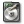

Copyright © 2001 - 2006 the PHP-GTK Documentation Group
Copyright
Copyright © 2001 - 2006 by the PHP-GTK Documentation Group. Permission is granted to copy, distribute and/or modify this document under the terms of the GNU Free Documentation License, Version 1.2 or any later version published by the Free Software Foundation; with no Invariant Sections, no Front-Cover Texts, and no Back-Cover Texts. A copy of the license is included in the section entitled "GNU Free Documentation License". The latest version is presently available online at http://www.gnu.org/copyleft/fdl.html#SEC1.
The current members and editors of the PHP-GTK Documentation Group are listed on the front page of this manual. If you would like to contact the group, please write to php-gtk-doc@lists.php.net. Note that this address is mapped to a publicly archived mailing list.
Fri Dec 11 16:51:22 BRST 2015
Table of Contents
Welcome to the user manual of PHP-GTK 2! This manual should help you get started with PHP-GTK 2 and also provide a comprehensive reference to most aspects of the language.
This manual is split into two main parts. The first part is the Tutorials section. This part will help you get started with PHP-GTK 2 programming and provide some insight into the various aspects of designing applications with PHP-GTK 2. The other part is the Reference section. This part of the manual provides details on all GTK objects and their associated methods and signals. This should be useful whenever you are in doubt of how a particular method or object is used.
Although we have taken great care in ensuring that all of the information in the manual is correct, it is possible that some errors crept in. Please do inform the PHP-GTK documentation group: php-gtk-doc@lists.php.net in case you encounter such errors. If something you want is not present in the manual, do not hesitate to post your question to PHP-GTK-General mailing list: php-gtk-general@lists.php.net.
This manual was produced using a modified version of the Docbook DTD. The modifications were made to document the object system used by PHP-GTK 2 in an easier manner. The XML basis for each class and their methods was initially generated automatically from the PHP-GTK 2 source code, and is updated via PHP5's Reflection to ensure that the documentation stays in-sync with the source.
The XML generator was written by Andrei Zmievski (the original author of PHP-GTK itself) and was modified by Christian Weiske. The documentation is transformed from its XML source into various other formats using XSL stylesheets as well as a host of other tools. The manual build system is maintained by Steph Fox.
We hope you enjoy reading the manual as much as we enjoyed making it!
Table of Contents
Table of Contents
PHP-GTK 2 is an extension to PHP and can be used only with versions 5.1 upwards. Although the most common way of installing PHP-GTK 2 is compiling, this process can prove to be quite tedious on Windows systems; in which case most people will be using the official PHP-GTK 2 Alpha binary release or the Gnope installer.
We'll be covering the installation process for the three most popular operating systems: Windows, Linux and Mac OS X. The instructions for Linux are applicable to most distributions in addition to other POSIX compliant systems.
Gnope has proven to be the most easiest way of installing and maintaining PHP-GTK 2 on Windows. Gnope is a fully featured PHP-GTK 2 installer, complete with PHP 5.1, GTK 2.6 and PEAR. A few simple mouse clicks and you're done!
Just download the installer from gnope.org and follow the on-screen instructions. Gnope also has a PEARified channel of its own, where you can download PHP-GTK 2 applications, in addition to official PEAR packages, e.g. from the Gtk2 category.
Download the Alpha binary release of PHP-GTK 2 for Windows from the PHP-GTK 2 download page. Unzip the file into a directory of your choice. A directory named php-gtk will be created containing everything included in the release.
You will need a copy of php.exe (CLI Version) and php5ts.dll, both of which are available in the binary release of PHP 5 for windows, and put them in the php-gtk directory. If you wish to use any other extensions with this copy of php.exe, make sure you put their binaries here too.
After this, you must set your PATH variable to include the gtk+2.6.9 directory present in the release. You can also let the gtkpath.bat batch file set the appropriate PATH for the current command line session by executing it.
The best way to install PHP-GTK 2 on Linux is to compile it. No binary or source packages are available as yet for any distribution, so you can't use your favorite package manager to install PHP-GTK 2! These instructions should be valid for most distributions of Linux, as well as other POSIX compliant systems.
There are two ways to go about installing PHP-GTK 2 on your Linux system. You can either choose to use your existing PHP installation, or decide to install a separate one and dedicate it to PHP-GTK 2. The latter is a simpler method and is recommended for users with little or no Linux experience. In any case, you need Gtk+ version 2.6 upwards installed.
Just follow these steps, and you should be okay! First thing you need is a fresh checkout of PHP. You can choose either the 5_1 or 5_2 branches, both work fine:
$ cvs -d :pserver:cvsread@cvs.php.net:/repository login $ cvs -d :pserver:cvsread@cvs.php.net:/repository co -r PHP_5_2 php-src |
$ cd php-src $ ./buildconf $ ./configure --prefix=/opt/php5_2 --disable-cgi $ make $ su $ make install $ echo extension=php_gtk2.so >> /opt/php5_2/lib/php.ini $ /opt/php5_2/bin/php-config --extension-dir | xargs echo 'extension_dir=' >> /opt/php5_2/lib/php.ini |
If the current CVS of PHP does not compile, try an official release from the php downloads page, or a snapshot.
Now, let's checkout and install PHP-GTK 2:
$ cd .. $ cvs -d :pserver:cvsread@cvs.php.net:/repository co php-gtk $ cd php-gtk $ ./buildconf --with-phpize=/opt/php5_2/bin/phpize $ ./configure --with-php-config=/opt/php5_2/bin/php-config $ make $ make install |
You might want to create a link to the new php executable:
$ ln -s /opt/php5_2/bin/php /usr/bin/php-gtk |
If you decide to 'add-on' PHP-GTK 2 to your existing PHP installation, ensure that your version of PHP is at least 5.1 with CLI enabled. PHP-GTK 2 will NOT work with any other versions of PHP. You can check your PHP version by typing php -v on the command line. Don't forget to check if the word cli appears in the output!
Now, checkout the latest CVS source of PHP-GTK 2, or download the Alpha source tarball, as per instructions on the PHP-GTK 2 download page. cd into the checked out / extracted directory, and execute the following:
$ ./buildconf $ ./configure $ make $ make install |
This should just work for most people. However, if there are multiple installations of PHP in your machine or you have installed PHP in some exotic location, you might face trouble. Most of these cases can be solved by specifying the exact locations of the phpize and php-config files:
$ ./buildconf --with-phpize=/path/to/phpize $ ./configure --with-php-config=/path/to/php-config |
Before you can use PHP-GTK 2, you need to enable the extension in your php.ini. Just add a
extension=php_gtk2.so |
You can test whether your installation was successful by executing:
$ php -m | grep php-gtk |
Next, you can try out the demo applications in the demos directory of the php-gtk sources, e.g. demos/phpgtk2-demo.php.
You need to make sure you have the Apple Developer Tools, BSD Subsystem, and an installation of X before you try installing PHP-GTK 2. Although the BSD subsystem is installed by default on Mac OS X, you need select the Developer Tools and X Server manually. Although you can use any X server, the easiest would be to use the one Apple provides by default on it's Mac OS X installer.
Get MacPorts (previously knows as DarwinPorts) or Fink and install it. You can use either to install a version of X (if you decided not to use Apple's default distribution), and Gtk+ itself. Both Fink and MacPorts provide versions 2.6 and above of Gtk+. Also make sure you have a version of PHP that is atleast 5.2, MacPorts provides a package. Type php -v on your Terminal to find out your version. If you want to manually compile PHP you can do so:
$ cvs -d :pserver:cvsread@cvs.php.net:/repository co -r PHP_5_2 php-src $ cd php-src $ ./buildconf $ ./configure --disable-cgi $ make $ sudo make install |
Now get the latest checkout of PHP-GTK and compile it:
$ cd..
$ cvs -d :pserver:cvsread@cvs.php.net:/repository co php-gtk
$ cd php-gtk
$ ./buildconf --with-phpize=/usr/local/bin/phpize
$ ./configure --with-php-config=/usr/local/bin/php-config \
--disable-libglade
$ make
$ sudo make install |
Finally, copy over the php.ini-recommended file to /usr/local/lib/php.ini and change the value of extension_dir to the directory where php_gtk2.so resides. This is usually something like: /usr/local/lib/php/extensions/no-debug-non-zts-some-date. You may want to create a new symbolic link in /usr/bin/ that points to /usr/local/bin/php. Again, the directory may be /opt/local/ instead of /usr/local/ depending on where your installation of PHP resides.
Now continue with Testing your installation.
Written by Jonathan Richter
In an attempt to get PHP-GTK2 to work on Mac OS X 10.4, I found very little information and support on that subject. After a lot of failures and errors I got it to work.
Below I'll write every step I took. I am not very comfortable with Terminal and half of the time I have no clue what I am doing. So you can use this information but totally on your own risk. I just worked for me. I hope it will help anybody else too.
please be adviced that doing all steps below takes several hours.
Resources I found helpful:
Get the newest Xcode (also called: Developer Tools) from Apple. You really need this. Go to connect.apple.com. Sign in or sign up (for free). Go to Downloads.
On the right in the Downloads Box, click Developer Tools and download the newest Xcode. In my case version 2.4.1, 923 MB big. After downloading, use the installer and follow the instructions.
I started with using Fink, but halfway it failed by not having a package that was needed (GTK 2.6 or higher). I started all over using Macports.
Go to macosforge/InstallingMacPorts.
You already did part of the first step by downloading Xcode. I followed all instructions on that page and it worked fine.
The newest version didn't have a normal Apple installer. So I downloaded this: DarwinPorts-1.3.1-10.4.dmg
Install Macports by double-clicking the installer in the disk image.
I already had a standard OS X PHP 4.4.4 installation and a PHP5 installation from Entropy.ch, but it didn't work out. I deleted my PHP5 installation from Entropy.
If you want to run Apache 1 or 2 with PHP4 or 5, Entropy is absolutely the best place to get it.
In Terminal, type: cd / and sudo port install php5
Take a coffee, this takes a while... about 2 hours on my machine. (Macports installs everything in a folder called /opt. I put the "cd /" to place that folder in the root.)
On the other tutorial, you see a --disable-libglade as a parameter for installing PHP-GTK. I don't know why they wrote that. Be very sure that you really don't want Glade. Read about it here: glade.gnome.org.
Check out the screenshots too. I installed without Glade but after a day I did it all over to get Glade working too. If you want to continue without Glade, skip the next step.
For some reason, I got errors doing this. Then I tried again the same in Terminal, but now with X11 open in the background with no errors this time. So, open X11 and hide it (apple-h).
In Terminal, type:
cd /opt
sudo port install libglade
sudo port install glade
|
Instead of using current CVS, you might want to use the latest official version from the PHP-GTK2 download page.
Leave X11 open to be on the safe side. phpize and php-config should be both in /opt/local/bin/. Check that before you run this. In Terminal, type:
sudo cvs -d :pserver:cvsread@cvs.php.net:/repository co php-gtk
cd php-gtk
sudo ./buildconf --with-phpize=/opt/local/bin/phpize
sudo ./configure --with-php-config=/opt/local/bin/php-config
sudo make
sudo make install
|
After it is done, you will see in the output of Terminal a remark about extensions being installed with a path that probably looks like this: /opt/local/lib/php/extensions/no-debug-non-zts-20060613. Apple-c that path or write it down. You will need it later.
In Finder, choose Go > Go To Folder... (or press shift-apple-g) and type /opt/local/etc.
Find the file php.ini-recommended and copy it. Rename the copy to php.ini and open it with - preferably - BBedit.
Find the line extension_dir = "./" and replace it with this: extension_dir = "/opt/local/lib/php/extensions/no-debug-non-zts-20060613" (That path, you copied from the Terminal output in the previous step)
Find the block with all extensions and add this line after them: extension=php_gtk2.so
Save the file.
Start X11 and hide it (apple-h) if not already done.
Start Terminal and type:
cd /opt/php-gtk/demos
php phpgtk2-demo.php
|
To work with Glade, start it in Terminal like this (with X11 open): /opt/local/bin/glade-2
In my humble opinion: the interfaces in X11 look like crap when you are used to working in OS X. To get other themes, go to art.gnome.org to check them out. In order to use one of those, we need to do one more step.
In Terminal, type: sudo port install gtk-theme-switch
After that is ready, download a theme from the link above. Installing it can be done in two ways:
Move or copy the downloaded .tar.gz (without unpacking!) into /opt/local/share/themes/
Start Glade by typing this in Terminal (with X11 open): /opt/local/bin/switch2
Press the + sign and click the Install New Theme button. Point to /opt/local/share/themes/<your-new-theme-name>.tar.gz
Click OK and now your new theme shows up in the list.
Unpack the <your-new-theme-name>.tar.gz and move or copy the new theme folder to /opt/local/share/themes/
Start Glade by typing this in Terminal (with X11 open): /opt/local/bin/switch2
The name of the new theme should be in the list.
Table of Contents
When you begin to learn a programming language, the first program you often write is a 'hello world' program. So, just to fit in with everyone else, the first tutorial in this manual just happens to be a 'hello world' tutorial!
Throughout the tutorials we expect a reasonable grasp of PHP itself. The tutorials are designed to give the user an idea of how to use PHP-GTK, and the ideas and techniques behind it.
In this tutorial we will create a simple window with the text "Hello World!" in it.
We will start by listing the program and will then explain each line of the program, giving an overview of a very basic PHP-GTK application.
Example 2.1. A simple Hello World script
<?php
if (!class_exists('gtk')) {
die("Please load the php-gtk2 module in your php.ini\r\n");
}
$wnd = new GtkWindow();
$wnd->set_title('Hello world');
$wnd->connect_simple('destroy', array('gtk', 'main_quit'));
$lblHello = new GtkLabel("Just wanted to say\r\n'Hello world!'");
$wnd->add($lblHello);
$wnd->show_all();
Gtk::main();
?> |
If you get an error Fatal error: Call to undefined function: connect_simple(), then you are using PHP-Gtk1 and not PHP-Gtk2. This is the wrong manual then.
Now copy the code into a text editor and save it as hello.phpw. Then open a console and start it via php hello.phpw. A window with title "Hello world" should open and contain nothing but the text "Just wanted to say 'Hello world!'".
Example 2.2. Checking if PHP-GTK is available
if (!class_exists('gtk')) {
die("Please load the php-gtk2 module in your php.ini\r\n");
} |
Here we make sure that PHP-GTK is available by checking if the class gtk exists. Unlike PHP 4 and PHP-GTK 1, you should not try to load the PHP-GTK module via dl(). This has been deprecated in PHP 5, and should not be used in newly written code. So all we can do is print out a message, that the module is not available and should be enabled by the user.
Creating a new window widget is as easy as instantiating a new object: Variable $wnd gets the new object assigned. If you already programmed with PHP 4 and PHP-GTK 1, you will miss the ampersand & before new. That was required in PHP 4, but may not be used any more in PHP 5, as references are created automatically.
To make it easier to identify the window in the task bar, we set the title: Just a normal call to an object method.
That is the first interesting piece of code: The "destroy" signal gets connected to the static Gtk::main_quit method. It basically tells GTK to quit the main loop when the window gets closed/destroyed. (The main loop is explained some paragraphs below.)
Example 2.6. Create a label to display text
$lblHello = new GtkLabel("Just wanted to say\r\n'Hello world!'"); |
As done before, we create a new widget. This time we want to display a small amount of text, and GtkLabel is perfect at this task.
Now we tell the window, that the label shall be added directly on it.
Until now, you will see nothing on your screen. To make the window visible, you will need to call the show() . That would make the window visible, but not the label - we would have to call show() on the label, too. That is inconvenient if you have multiple widgets like buttons, checkboxes and other on the window: show_all() takes care of making the window and all child widgets visible.
After everything is set up, we need to make sure that the window stays open and responds to user interactions. A normal PHP script would end and stop at this point, but we want to keep it running: For that, the GTK main loop needs to be started. It takes care of keeping the application running and waiting for user events. If events occur, it delegates them to the corresponding callbacks.
Now that you have created your first PHP-GTK 2 application, you probably want to create more complex layouts. To lean the basics, have a look at the Packing tutorial.
This tutorial deals with some more advanced functionality than the first hello world tutorial. Here, we create a login screen in which the user can type his username and his password. When the user clicks on the Login button, the text fields are checked and an error message is shown if the user forgot his name or his password.
Here is a screenshot of how the program will look when it's finished:

At first, we create a window, set its title and tell that the main loop shall be quit when the window is destroyed - you already know that from the first tutorial:
$wnd = new GtkWindow();
$wnd->set_title('Login');
$wnd->connect_simple('destroy', array('gtk', 'main_quit'));
|
The next task is to create all the widgets we need on this dialog: At first, two text entry fields for username and password:
Then we want the user to know which text field is password or username, so there is the need for some descriptive labels:
//The second parameter says that the underscore should be parsed as underline
$lblUsername = new GtkLabel('_Username', true);
$lblPassword = new GtkLabel('_Password', true);
|
Now the labels need to know what widget needs to be activated when they are activated via the mnemonic. This is done that way:
Further, we need to determine what action is taken when the buttons are clicked. The Cancel button shall destroy the window (thus ending the application) and the Login button shall check the text fields and take further action:
$btnCancel->connect_simple('clicked', array($wnd, 'destroy'));
$btnLogin ->connect_simple('clicked', 'login', $wnd, $txtUsername, $txtPassword);
|
Now that we have all the widgets we need, they are added to the window. As GtkWindow is a bin container, it can hold only one single widget. So we need a container that can hold several widgets and lays out our elements nicely. The decision goes to GtkTable, because it provides a way to keep the labels in a column, and the entry fields in the next one:
$tbl = new GtkTable(3, 2); $tbl->attach($lblCredit, 0, 2, 0, 1); $tbl->attach($lblUsername, 0, 1, 1, 2); $tbl->attach($txtUsername, 1, 2, 1, 2); $tbl->attach($lblPassword, 0, 1, 2, 3); $tbl->attach($txtPassword, 1, 2, 2, 3); |
$bbox = new GtkHButtonBox(); $bbox->set_layout(Gtk::BUTTONBOX_EDGE); $bbox->add($btnCancel); $bbox->add($btnLogin); |
The last thing in layouting is adding the table and the button box to the window. That's not directly possible, because GtkWindow is a GtkBin and can hold only one widget. So we need another container, this time a GtkVBox:
That would be all, and we can show the window:The last thing missing is the login function that is called when the user clicks the Login button. It shall check the value of the username and password field: If their length is 0 (the user didn't type anything in), an error message will be shown. If all is ok, the window will be destroyed and the program could go on with loading the main window.
Getting the text from the widgets is very simple, we just use the get_text() method of GtkEntry:
Checking is done via the normal php strlen function. If an error occured, we want to show a message box with a little message. GtkMessageDialog is ideal for this, as it automatically creates icons and the buttons (Ok, Yes/No) automatically:
$dialog = new GtkMessageDialog($wnd, Gtk::DIALOG_MODAL, Gtk::MESSAGE_ERROR, Gtk::BUTTONS_OK, $errors);
$dialog->set_markup("The following errors occured:\r\n<span foreground='red'>" . $errors . "</span>");
$dialog->run();
$dialog->destroy();
|
Now make sure that you put the login function before(!) the main loop and run it.
<?php
/**
* Here we create a login window.
* It has a username and a password field, and a
* Cancel and Login button. Some error checking
* is being done when the user clicks "Login".
*/
if (!class_exists('gtk')) {
die("Please load the php-gtk2 module in your php.ini\r\n");
}
/**
* This function gets called as soon as the user
* clicks on the Login button.
*
* @param GtkWindow $wnd The login window, needed to close it
* when all is ok
* @param GtkEntry $txtUsername The username text field, used to get
* the username
* @param GtkEntry $txtPassword The password widget to retrieve the
* password
*/
function login(GtkWindow $wnd, GtkEntry $txtUsername, GtkEntry $txtPassword)
{
//fetch the values from the widgets into variables
$strUsername = $txtUsername->get_text();
$strPassword = $txtPassword->get_text();
//Do some error checking
$errors = null;
if (strlen($strUsername) == 0) {
$errors .= "Username is missing.\r\n";
}
if (strlen($strPassword) == 0) {
$errors .= "No password given.\r\n";
}
if ($errors !== null) {
//There was at least one error.
//We show a message box with the errors
$dialog = new GtkMessageDialog($wnd, Gtk::DIALOG_MODAL,
Gtk::MESSAGE_ERROR, Gtk::BUTTONS_OK, $errors);
$dialog->set_markup(
"The following errors occured:\r\n"
. "<span foreground='red'>" . $errors . "</span>"
);
$dialog->run();
$dialog->destroy();
} else {
//No error. You would need to hide the dialog now
//instead of destroying it (because when you destroy it,
//Gtk::main_quit() gets called) and show the main window
$wnd->destroy();
}
}
//Create the login window
$wnd = new GtkWindow();
$wnd->set_title('Login');
//Close the main loop when the window is destroyed
$wnd->connect_simple('destroy', array('gtk', 'main_quit'));
//Set up all the widgets we need
$lblCredit = new GtkLabel('Please provide your data');
//The second parameter says that the underscore should be parsed as underline
$lblUsername = new GtkLabel('_Username', true);
$lblPassword = new GtkLabel('_Password', true);
$txtUsername = new GtkEntry();
$txtPassword = new GtkEntry();
$btnLogin = new GtkButton('_Login');
$btnCancel = new GtkButton('_Cancel');
//Which widget should be activated when the
// mnemonic (Alt+U or Alt+P) is pressed?
$lblUsername->set_mnemonic_widget($txtUsername);
$lblPassword->set_mnemonic_widget($txtPassword);
//Hide the password
//$txtPassword->set_invisible_char('*');
//Destroy the window when the user clicks Cancel
$btnCancel->connect_simple('clicked', array($wnd, 'destroy'));
//Call the login function when the user clicks on Login
$btnLogin->connect_simple('clicked', 'login', $wnd, $txtUsername, $txtPassword);
//Lay out all the widgets in the table
$tbl = new GtkTable(3, 2);
$tbl->attach($lblCredit, 0, 2, 0, 1);
$tbl->attach($lblUsername, 0, 1, 1, 2);
$tbl->attach($txtUsername, 1, 2, 1, 2);
$tbl->attach($lblPassword, 0, 1, 2, 3);
$tbl->attach($txtPassword, 1, 2, 2, 3);
//Add the buttons to a button box
$bbox = new GtkHButtonBox();
$bbox->set_layout(Gtk::BUTTONBOX_EDGE);
$bbox->add($btnCancel);
$bbox->add($btnLogin);
//Add the table and the button box to a vbox
$vbox = new GtkVBox();
$vbox->pack_start($tbl);
$vbox->pack_start($bbox);
//Add the vbox to the window
$wnd->add($vbox);
//Show all widgets
$wnd->show_all();
//Start the main loop
Gtk::main();
?> |
This tutorial will show you the basics on how to use .glade files from within your PHP-Gtk2 application.
Glade2 is a User Interface Designer, allowing you to create Gtk2 application with just your mouse and no programming. The results of your work are saved in a .glade file and can be loaded into your PHP-Gtk2 application easily.
Creating the user interface with Glade saves a lot of time, especially in large projects and even gives you the ability to divide the work: The interface designer person designes the GUI with Glade (and doesn't need to know anything about programming) and you can concentrate on programming rather than bother your mind with GUI accessibility tasks.
We will concentrate on doing things with Glade, not designing a sophisticated interface. That's why the example .glade file is pretty simple; a window with a single button in it.
The window gets the name (id) wndClose, and the button receives the name btnClose.
Example 4.1. The example .glade file - helloglade.glade
<?xml version="1.0" standalone="no"?> <!--*- mode: xml -*-->
<!DOCTYPE glade-interface SYSTEM "http://glade.gnome.org/glade-2.0.dtd">
<glade-interface>
<widget class="GtkWindow" id="wndClose">
<property name="visible">True</property>
<property name="title" translatable="yes">Close me</property>
<property name="type">GTK_WINDOW_TOPLEVEL</property>
<property name="window_position">GTK_WIN_POS_NONE</property>
<property name="modal">False</property>
<property name="resizable">True</property>
<property name="destroy_with_parent">False</property>
<property name="decorated">True</property>
<property name="skip_taskbar_hint">False</property>
<property name="skip_pager_hint">False</property>
<property name="type_hint">GDK_WINDOW_TYPE_HINT_NORMAL</property>
<property name="gravity">GDK_GRAVITY_NORTH_WEST</property>
<signal name="destroy" handler="gtk::main_quit"/>
<child>
<widget class="GtkButton" id="btnClose">
<property name="visible">True</property>
<property name="can_focus">True</property>
<property name="label">gtk-close</property>
<property name="use_stock">True</property>
<property name="relief">GTK_RELIEF_NORMAL</property>
<property name="focus_on_click">True</property>
<signal name="clicked" handler="onClickButton"/>
</widget>
</child>
</widget>
</glade-interface>
|
The first thing to do is loading the .glade file from the previous section. GladeXML constructor takes the file path as first parameter, so all we need to do is this:
Example 4.2. Loading the .glade file
<?php
//Create a new glade instance, load the
// widgets from the file passed as parameter
$glade = new GladeXML('helloglade.glade');
//Start the main loop
Gtk::main();
?> |
When running the script, you will note that the window with the button appears on your screen, but doesn't react to anything other than closing the window. Even there, the window is destroyed but your script continues to run - clearly a case of missing signal connections.
Next, we will just connect the signals as we know it: Call connect or connect_simple on the widget object. To get the object, just use the get_widget() method and pass the widget's name (id) to it. Then do the job as usual:
Example 4.3. Getting and connecting the widgets
<?php
//Create a new glade instance, load the
// widgets from the file passed as parameter
//We use the absolute file path as it is not uncommon
// that the application is run from a different working directory
$glade = new GladeXML(dirname(__FILE__) . '/helloglade.glade');
//Nothing happened when you clicked the button or closed
// the window with Step 1's code.
//Here we manually connect the widget signals as you know it
$window = $glade->get_widget('wndClose');
$window->connect_simple('destroy', array('Gtk', 'main_quit'));
//Again, get the widget object and connect the clicked signal
$button = $glade->get_widget('btnClose');
$button->connect_simple('clicked', 'onClickButton');
//This method is called when the button is clicked
function onClickButton() {
echo "button clicked!\r\n";
Gtk::main_quit();
}
//Start the main loop
Gtk::main();
?> |
You probably noted the <signal> tags in the .glade file - it is possible to define signal handlers directly in the file. All we have to do is telling Glade to establish the connections by calling signal_autoconnect() .
You can either define plain function names as handler that will be called when an event occurs, or use a special notation for static method calls by separating class name and method name with double colons as in Classname::methodName.
Example 4.4. Using signal_autoconnect
<?php
//Create a new glade instance, load the
// widgets from the file passed as parameter
//We use the absolute file path as it is not uncommon
// that the application is run from a different working directory
$glade = new GladeXML(dirname(__FILE__) . '/helloglade.glade');
//Let glade do all the signal connections we specified in the file
$glade->signal_autoconnect();
//This method is called when the button is clicked
function onClickButton() {
echo "button clicked!\r\n";
Gtk::main_quit();
}
//Start the main loop
Gtk::main();
?> |
Just connecting to plain functions or static methods doesn't really fulfill the needs of a good programmer. To get away from spaghetti code, we need to be able to connect signals to methods of objects.
Doing that is really simple: Just use signal_autoconnect_instance() with the object as first parameter instead of using signal_autoconnect() :
Example 4.5. Using signal_autoconnect_instance
<?php
//Here we use an object and connect all the
// signals to *object methods* instead of
// functions
class MyClass {
//This method is called when the button is clicked
function onClickButton() {
echo "MyClass->onClickButton!\r\n";
Gtk::main_quit();
}
function staticMethod() {
echo "MyClass::staticMethod()\r\n";
}
}
$glade = new GladeXML(dirname(__FILE__) . '/helloglade.glade');
//Let glade do all the signal connections we specified in the file
// but this time, connect to the object methods
$myClassInstance = new MyClass();
$glade->signal_autoconnect_instance($myClassInstance);
//Start the main loop
Gtk::main();
?> |
In large projects, you might have many windows defined in your .glade file, and all are loaded when loading the .glade file. That a) slows down the start of your application and b) shows all windows immediately, if you didn't set their visibility to hidden in Glade. Further, you may want to signal_autoconnect_instance() only a part of the .glade file to one object, while connecting another part to another object.
The solution to this problem is the second parameter of the GladeXML constructor: Just pass the id of the to-be root widget, and only this part of the .glade file will be loaded.
Example 4.6. Partially loading a .glade file
<?php
//Loading a part of the glade file only
//We want "btnClose" to be the root of the widget tree to load
$glade = new GladeXML('helloglade.glade', 'btnClose');
//That will work
$btn = $glade->get_widget('btnClose');
//This will fail, as the window isn't loaded:
$window = $glade->get_widget('wndClose');
//Output is NULL
var_dump($window);
?> |
Table of Contents
This tutorial tells you about the differences between PHP-GTK 1 and PHP-GTK 2: What has changed, what's new and what not to do anymore.
PHP-GTK 2 tries to be backward-compatible as possible, but as GTK 2 itself broke BC pretty often, PHP-GTK 2 can't do magic. There are many things which haven't changed, but some important smaller changes you have to know when migrating to the second version.
In PHP-GTK 1, you never knew if the php-gtk module had been loaded into PHP automatically via php.ini, or if it was a bad setup (many of them!), and you had to load the module yourself:
<?php
if (!class_exists("gtk")) {
dl( "php_gtk." . PHP_SHLIB_SUFFIX);
}
?> |
In PHP 5, loading modules via dl() is deprecated. That means it still works, but people are encouraged not to do that any more. So you can assume that PHP-GTK is already loaded, or, if you want to catch all possible errors, check for the existance of the PHP-GTK module and throw an error if it's not there:
<?php
if (!extension_loaded('php-gtk')) {
echo "The PHP-Gtk2 module is not available!\r\n";
exit(1);
}
//..continue with your program
?> |
Support for object orientation was completely new to PHP 4, and was therefore not very sophisticated in comparison to the OO support in other languages, such as Java. When assigning variables, it was absolutely necessary not to make copies of GTK objects, but to pass references.
//PHP 4: copy as default behavior
$a = new GtkLabel();
$a->set_text('1');
$b = $a;
$b->set_text('2');
echo $a->get();//still 1
|
//PHP 4: making references
$a = new GtkLabel();
$a->set_text('1');
$b = &$a;
$b->set_text('2');
echo $a->get();//is 2 now
|
//PHP 4: reference on instantiation $a = &new GtkLabel(); |
With PHP 5, things have changed: pass-by-reference is the default behavior now - one doesn't need the ampersand any more! The following script works under PHP 5 with PHP-GTK 2, without any problems:
<?php
//PHP5: no Ampersand any more
$a = new GtkLabel();
$a->set_text('1');
$b = $a;
$b->set_text('2');
echo $a->get_text();//is 2
?> |
The same applies for callbacks: no ampersand any more! Whereas you had to do the following under PHP 4 and GTK 1:
$window->connect_object('destroy', array(&$object, 'function'));
|
$window->connect_simple('destroy', array($object, 'function'));
|
GTK+ uses a lot of constants. In PHP-GTK 1, they were defined in global scope and you could access them via
echo GTK_WIN_POS_CENTER; |
PHP Notice: Use of undefined constant GTK_WIN_POS_CENTER - assumed 'GTK_WIN_POS_CENTER' in /path/to/file.php on line 23 |
The problem is that the original value is no longer used (GTK_WIN_POS_CENTER resolves to the integer 1 in PHP-GTK 1). The string literal itself, "GTK_WIN_POS_CENTER", is all PHP-GTK 2 sees - which is likely to break your code.
Static class constants are supported in PHP 5, so the decision was made not to pollute the global namespace with PHP-GTK constants any more. They are defined in the classes Gtk, Gdk and others.
In short, all you have to do (in most cases) is replace the first underscore _ with two colons: so that GTK_WIN_POS_CENTER under PHP-GTK 1 becomes Gtk::WIN_POS_CENTER under PHP-GTK 2.
Also, note the new coding style. Only the first letter should be uppercased in Gtk, Gdk, Pango and Atk constants throughout the officially distributed PHP-GTK 2 documentation and code, reflecting their new status as class constants rather than globals.
To tie signals to a specific function in your PHP-GTK 1 code, you could use connect, connect_object, connect_after or connect_object_after. The functionality of connect_object, in particular, wasn't clear at first sight.
Following some changes made in the GTK signals API, the decision was taken to rename connect_object to connect_simple and connect_object_after to connect_simple_after in PHP-GTK 2. Simple here means that you have fewer function parameters because the object itself is missing from them - something that connect_object meant, but did not imply.
GTK 2 has a lot of new widget classes. Most of the new classes do something better or a different way than an old class; and so the old widgets were deprecated in favor of the new one.
To keep backward compatibility (BC), the old widgets can still be used, but are likely to be removed in GTK 3 or so. That means that you don't have to rewrite your old programs totally, but still can use them without too much changes. However, you really shouldn't use any of the deprecated widgets in newly written code. Don't do it.
List of deprecated widgets
- GtkCList and GtkList => GtkTreeView with GtkListStore
- GtkCTree => GtkTreeView with GtkTreeStore
- GtkCombo and GtkOptionMenu => GtkComboBox with GtkTreeModel
- GtkItemFactory => GtkUIManager
- GtkOldEditable => GtkEditable
- GtkPixmap and GtkPreview => GtkImage with GdkPixbuf
- GtkText => GtkTextView with GtkTextBuffer
List of Deprecated Methods
- set_policy() => set_resizable
The list may not be complete. If you find a deprecated widget that is not listed here, please write to php-gtk-doc.
When programming PHP-GTK applications and surfing through the manual, you will find some rather cryptic acronyms. Here is an overview of the more important ones.
PHP - PHP: Hypertext Processor - is a widely-used general-purpose scripting language that is designed for Web development and can be embedded into HTML.
GTK - the GIMP Tool Kit - is a library designed for creating graphical user interfaces. It runs on most UNIX-like platforms, on Windows, and on framebuffer devices.
The GTK library itself contains widgets, that is, GUI components, such as GtkButton or GtkTextView.
GTK depends on several other libraries, among them GDK, Pango, ATK and GLib. The combined package is referred to as GTK+.
GDK - the GIMP Drawing Kit - is the abstraction layer that allows GTK+ to support multiple windowing systems. GDK provides drawing and window system facilities for X11, Windows, and the Linux framebuffer device.
Pango is a library for internationalized text handling. It centers around the PangoLayout object, which represents a paragraph of text. Pango provides the engine for GtkTextView, GtkLabel, GtkEntry, and other GTK+ widgets that display text.
ATK is the Accessibility Tool Kit. It provides a set of generic interfaces allowing accessibility technologies to interact with a graphical user interface. For example, a screen reader could use ATK to discover the text in an interface and read it to blind users.
Thanks to the ATK framework, GTK+ widgets have built-in support for accessibility.
Table of Contents
This tutorial shows the various methods to arrange widgets in a window, and tells you how to choose the right one.
If you previously did your GUIs in Visual Basic or Visual C++, you will wonder why you'd need a tutorial on widget placement. Until now it was like this: Size the window, select a widget and position it at a (x,y) position and make it this wide and that high - nothing more, totally easy. You have fixed positions and sizes, but they stay on their place even when the window size is changed - they don't adjust themselves because they don't know how.
In Gtk, things are dynamic: Widgets adjust their sizes when the window size changes, except you explicitely tell them not to do so. Setting things up is a bit more complicated than just fixing sizes and positions, but you are rewarded with a flexible window that can be sized to nearly any size, while still looking good.
There are different types of widgets in Gtk, depending on how many children they can contain:
The base widget you will begin your programs with (in most cases) is the GtkWindow, a bin. That means it can have only one child. So what now - one widget is a bit sparse for an application. The solution are the containers, of which you choose one and add that to the window. To that container, you can either add some widgets or even more containers. That gives you the ability to nest containers and get exactly that layout you have in your mind.
The different containers like GtkHBox, GtkVBox, GtkTable and GtkFixed behave different in the way they layout and arrange widgets. Each one suits a certain purpose and need to be combined to achieve advanced layouts.
The most simple, but most often used containers are the GtkBoxes: GtkHBox and GtkVBox. They allow to add widgets in a single row, not more, and not less. GtkHBox arranges them horizontally, while GtkVBox lines them up vertically.
You add the widgets via pack_start() or pack_end() . pack_start() adds them one after the other from the beginning (left to right resp. top to bottom), while pack_end() adds them from the end on (right to left, or bottom to top).
You can influence the layout by adjusting the three optional parameters of pack_start() and pack_end() - see their documentation.
Example 7.1. Simple dynamic layout with GtkVBox
<?php
$w = new GtkWindow();
$w->set_title('GtkBox test');
$w->connect_simple('destroy', array('gtk', 'main_quit'));
$lbl = new GtkLabel('Your name:');
$scrwnd = new GtkScrolledWindow();
$txt = new GtkTextView();
$scrwnd->add($txt);
$btn = new GtkButton('Send');
$vbox = new GtkVBox();
$w->add($vbox);
$vbox->pack_start($lbl, false);
$vbox->pack_start($scrwnd, true, true);
$vbox->pack_start($btn, false);
$w->show_all();
Gtk::main();
?> |
Start the demo and resize the window: The multiline text widget adjusts its size to fill all the space in the window which is not needed for the label or the button. Change the third parameter from true to false at the place where scrwnd is packed - what happens?
A special version of GtkBoxes are GtkHButtonBox and GtkVButtonBox: They behave same as their box counterparts, but can contain GtkButtons only. To compensate this limitation, they have some layout functions often needed for rows of buttons.
While it's very easy to create dynamic layouts with GtkBoxes, it's very hard to layout widgets so that e.g. the labels on the left of the interaction widgets have the same width, regardless of their content. If you need tabular layouts, GtkTable is the right choice. Widgets can span several columns and rows, and can have different padding margins.
<?php
$w = new GtkWindow();
$w->set_title('GtkTable test');
$w->connect_simple('destroy', array('gtk', 'main_quit'));
$lbl1 = new GtkLabel('Email address:');
$lbl2 = new GtkLabel('Id:');
$lbl3 = new GtkLabel('Name:');
$align3 = new GtkAlignment(0.0, 0.5, 0, 0);
$align3->add($lbl3);
$txt1 = new GtkEntry();
$txt2 = new GtkEntry();
$txt3 = new GtkEntry();
$table = new GtkTable(2, 2);
$table->attach($lbl1 , 0, 1, 0, 1, 0);
$table->attach($lbl2 , 0, 1, 1, 2, 0);
$table->attach($align3, 0, 1, 2, 3, Gtk::FILL);
$table->attach($txt1 , 1, 2, 0, 1);
$table->attach($txt2 , 1, 2, 1, 2);
$table->attach($txt3 , 1, 2, 2, 3);
$w->add($table);
$w->show_all();
Gtk::main();
?> |
When running the example, you see that the Id label is centered horizontally. By default, widgets are filled in both directions and take all the available space, which is ok for most widgets. For GtkLabel however, it's not optimal: Labels should be aligned at one side. As the set_justify() function justifies the text for multiline labels only, we need to use a GtkAlignment to align the label properly - label Name shows the result.
This container has no own layouting logic; you have to tell where the widget shall be placed. The size of the widgets is determined automatically, but you can override that by requesting a certain size via set_size_request() .
While it's very simple to place and layout the widgets, they are fixed: Resizing the window doesn't move or resize the widgets. Use it only when it's absolute necessary; dynamic containers are often the better choice.
Example 7.3. Fixed layout with GtkFixed
<?php
$w = new GtkWindow();
$w->set_title('GtkFixed test');
$w->connect_simple('destroy', array('gtk', 'main_quit'));
$btn = new GtkButton('Button');
$txt = new GtkEntry();
$fixed = new GtkFixed();
$w->add($fixed);
$fixed->put($btn, 10, 100);
$fixed->put($txt, 50, 10);
$btn->set_size_request(150, -1);
$w->show_all();
Gtk::main();
?> |
This tutorial will attempt to teach you to program in PHP-GTK 2 in an object oriented manner. PHP5 comes with great object-oriented support and hence we can exploit all of the features of object-oriented programming while making applications in PHP-GTK 2.
Why program in an object oriented fashion? There are a number of advantages of choosing this style of programming, especially if your application is split into several modules and is expected to be thousands of lines long. One of the most important advantages is code cleanliness and organization. It will be much easier for you and others to read and modify your code if you program in an object-oriented manner, than if you had chosen to make your application in a purely procedural way.
If you are convinced that object-orientation is the way to go, let's begin!
I'm going to assume that you are already familiar with object oriented programming, if you're not, I suggest you get familiar with it before proceeding with this tutorial. You may also want to look in the PHP5 manual's section on object orientation so that all this makes more sense to you.
We'll begin with "porting" the simple Hello World! program to an object oriented nature, so that you can grasp the concept quickly. The first thing you have to do is to create a class. The most easy way to make your class is to extend one of the PHP-GTK 2 classes. Now, most applications have a GtkWindow as their top level widget. So does our Hello World program. So what we're going to do is to create a class that extends GtkWindow, so that it makes our job easier:
<?php
class Hello extends GtkWindow
{
// code goes here.
}
?> |
Now, our class extends GtkWindow, but that doesn't mean that GtkWindow's constructor is called automatically. This is the default behavior of PHP5 and hence we must call GtkWindow's constructor explicitly, using the parent keyword:
class Hello extends GtkWindow
{
function __construct()
{
parent::__construct();
}
}
|
function __construct()
{
parent::__construct();
$this->set_title('Hello World!');
$this->connect_simple('destroy', array('gtk', 'main_quit'));
}
|
Since this is a very simple program, we can finish all our tasks in the constructor itself. We simply put the code that we put in our procedural program into the constructor here. So we have the final program:
Example 8.1. Hello World - The Object Oriented Style
<?php
class Hello extends GtkWindow
{
function __construct()
{
parent::__construct();
$this->set_title('Hello World');
$this->connect_simple('destroy', array('gtk', 'main_quit'));
$label = new GtkLabel("Just wanted to say\r\n'Hello World!'");
$this->add($label);
$this->show_all();
}
}
new Hello();
Gtk::main();
?>
|
We haven't used most of PHP5 powerful object oriented features so far. Let's make an application that opens a text file and displays its contents to you: a simple notepad-kind-of application. Please note that is a very very simple application meant for educational purposes and has no practical functionality! Here is the code, read it, and don't be intimidated by its size. A detailed explanation follows the code:
<?php
class Notepad extends GtkWindow
{
protected $currentFile;
protected $buffer;
protected $status;
protected $context;
protected $lastid;
function __construct($fileName = null)
{
parent::__construct();
$mainBox = new GtkVBox();
$textBuff = new GtkTextBuffer();
$textView = new GtkTextView($textBuff);
$statusBar= new GtkStatusBar();
$mainBox->pack_start($this->buildMenu(), false, false);
$mainBox->pack_start($textView, true, true);
$mainBox->pack_start($statusBar, false, false);
$this->currentFile = $fileName;
$this->buffer = $textBuff;
$this->status = $statusBar;
$this->connect_simple('destroy', array($this, 'quit'));
$this->set_title('Simple Notepad');
$this->maximize();
$this->add($mainBox);
$this->show_all();
$this->loadFile();
}
function buildMenu()
{
$menuBar = new GtkMenuBar();
$fileMenu = new GtkMenu();
$menuName = new GtkMenuItem('_File');
$quit = new GtkImageMenuItem('gtk-quit');
$quit->connect_simple('activate', array($this, 'quit'));
$quit->connect_simple('enter_notify_event',
array($this, 'updateStatus'), 1);
$quit->connect_simple('leave_notify_event',
array($this, 'updateStatus'), 0);
$fileMenu->append($quit);
$menuName->set_submenu($fileMenu);
$menuBar->add($menuName);
return $menuBar;
}
function loadFile()
{
if($this->currentFile != null) {
$contents = file_get_contents($this->currentFile);
$this->buffer->set_text($contents);
}
}
function updateStatus($enter)
{
if($enter) {
$id = $this->status->get_context_id("Message");
$lastMsg = $this->status->push($id, "Quits the Application");
$this->context = $id;
$this->lastid = $lastMsg;
} else {
$this->status->remove($this->context, $this->lastid);
}
}
function quit()
{
Gtk::main_quit();
}
}
new Notepad('simple.phpw');
Gtk::main();
?>
|
The class structure is similar to what we have seen before, except the addition of some class properties and functions. Let's first have a look at the constructor. The constructor takes a single optional argument that defaults to null. That parameter is (path of) the file name that we wish to open. If you don't pass a parameter to the constructor, it will simply open nothing.
OK, so we first construct the parent (a GtkWindow) and then create some widgets that we will use. A GtkVBox for our layout, a GtkTextBuffer and a GtkTextView to display the contents of the file and a GtkStatusBar to display some messages. We setup the layout and add the respective widgets to the VBox.
Next we set the class properties:
$this->currentFile = $fileName; $this->buffer = $textBuff; $this->status = $statusBar; |
Simply extend this concept to other widgets too. Basically, you need to assign class properties to widgets that you think will need the entire class as its scope. Actually, class properties can also be used efficiently to store any data that you may need across the entire class. One example of this in our applications is the currentFile property. This will simply store the path of the current file opened, or null if none is. We can then find out the name of the current file opened in any function of the class. Class properties have other uses too, one such use I can think of is a flag. For our notepad application, you may want to add a class property called saved which will have Boolean values to indicate whether the current file has been saved to disk or not.
Note that all the class properties have been defined as protected. This is simply a good object oriented practice. We don't want them to be public but we also want any classes that extends ours to be able to access them.
And finally, we set the title of the window, maximize it, add the layout and display all the widgets. And then we call the loadFile() function to display the contents of our file in the text buffer that we had created.
Note how we had called this function from the constructor:
$mainBox->pack_start($this->buildMenu(), false, false); |
In this function, we just create our menu bar, add a simple file menu with a single "Quit" button to it. Let's have a look at these lines:
$quit->connect_simple('activate', array($this, 'quit'));
$quit->connect_simple('enter_notify_event', array($this, 'updateStatus'), 1);
$quit->connect_simple('leave_notify_event', array($this, 'updateStatus'), 0);
|
$wnd->connect_simple('destroy', array('gtk', 'main_quit'));
|
Sometimes, it is possible to pass parameters to functions in order to use those objects in the function. As a rule of thumb, if you have more than one function that uses a particular object, it is better to dedicate a class property to it; but if there is only a single function that requires the object, it is better to pass the object as a parameter instead. A common occurrence of this situation is while connecting signals to callbacks. Have a look at the tutorial on signals and callbacks for more on this and how to pass custom parameters to the callbacks.
Getting back to the function, we return the top-most widget in our menu: the menu bar, after adding the sub-menu to it. The constructor then receives this object and adds it to the main VBox.
This function's purpose is to load the contents of the file to be opened and display them in the text view. Fairly straight-forward, we first check whether the class property currentFile is not null, and then use set_text() on the buffer class property.
This function serves as the callback for the enter-notify-event and leave-notify-event signals. Here we access the status bar via the status class property and add/remove a message depending on whether mouse is entering or leaving the Quit menu button.
This is the most simple function of all, only a single that quits the GTK main loop. You may wonder why we have a one-line function called 'quit' when we could have connected the signals directly to main_quit like:
$this->connect_simple('destroy', array('Gtk', 'main_quit'));
|
Hope this tutorial has been of some use in getting you started with the object oriented style of programming in PHP-GTK 2. Before we wind up, a few more pointers follow.
- If you are building an extremely large application, you may want to split it into multiple classes: one class for each module. For most applications however, a single class should suffice.
- If you use multiple classes in your application, the question of accessing objects from one class in another arises. In this case, try to design a hierarchy: one master class with other classes extending it. If that is not possible, use global variables instead (not recommended).
- If more than one function in your class needs to access a widget, make it a class property. However if only one function requires it, pass it as a parameter instead.
- Always try to extend your classes from the widget class that will form the base of your class. Also remember that you need to construct that widget explicitly using the parent::__construct(); statement. You can access the methods of that widget via the this keyword.
- Keep your functions as short as possible. The whole point of object oriented programming is modularization. If a function is beginning to get bulky, consider splitting it. A frequent occurrence of this case is when you try to design your entire (complicated) layout in the constructor itself. Split it into functions that create parts of the layout and assemble them all in the constructor instead.
Don't forget to have a look at the Gtk2_Components section in PEAR. All the packages there are made of high quality object-oriented code. Read their sources and emulate. All the best!
This tutorial will deal with the concept of signal handling in PHP-GTK 2 which is an important and fundamental, since this is what makes your application "tick"!.
You might have noticed that at the end of every PHP-GTK 2 program we write this statement:
Gtk::main(); |
Gtk::main_quit(); |
First, it will be useful to define some terms that we will use frequently.
- Action: This is something that occurs. For example, the user clicking on a button counts as an action.
- Signal: This is a notification generated whenever an event occurs. This is the way your application knows that an action has just occurred.
- Callback: A function or method that is invoked by some other piece of code.
- Signal Handler: A callback that is invoked in response to a signal being emitted. Here is where you place the code that will handle the signal.
- Events: These are a continuous stream of impulses that communicate low-level changes the environment of the underlying windowing system.
Signal handling basically consists of connecting a signal to its signal handler, and of course, writing the signal handler itself. The job of generating the signal whenever an action occurs is taken care by PHP-GTK 2. Another thing to note is that signal generation does not guarantee that the user has performed some action. It is possible to manually generate a signal, and PHP-GTK 2 generates signals internally all the time.
A common instance of a signal being internally generated and used is when GtkAdjustment emits the "value-changed" for a GtkProgressBar to use it. Hence, some signals have a default handler already inbuilt, which will be executed whether or not you manually connect a signal handler to that signal.
Most of the times however, if you want something to happen when a signal is generated, you need to create a signal handler for it.
As discussed before, it is essential for any application to respond to some action that is triggered either by the user or automatically. Signals help the program in knowing when a particular action has taken place so that you can act on it.
Every widget has a set of signals associated with it. This means that, the widget is capable of emitting any of those signals depending on the action it receives. Also remember that signals are inherited across classes, and hence the child class always derives all of the signals of its parent and may add a few of its own.
An important concept to know here is that it is possible to emit a signal without the user performing an action at all. Most widgets have functions that will emit a particular signal when you use them, irrespective of whether the user has actually performed an action or not. An example of such a function is the clicked() method of GtkButton, which will emit the clicked signal for the button.
Signal handlers are the places where you do the actual work of acting upon signals that are received. As a programmer, a signal handler is where you will place the code that should be executed when a particular signal is emitted by the widget.
Signal handlers are of two kinds: default handlers and user-defined handlers. The default handlers are called automatically on receipt of their corresponding signals. User-defined handlers on the other hand have to be explicitly connected to signals by the programmer (that's you!).
It should be clear by now that if you want to react to an action, you must connect its signal to a signal handler that you have written, so that PHP-GTK 2 can call that function whenever the signal is triggered. Let's look into how you can connect signals to signal handlers.
There are 4 main functions that you can use to connect signals to callbacks:
First we'll look into how to connect a signal to a signal handler in the most simplest way. We'll be using, you guessed it, the connect_simple method.
Of course, it is vital that you know the names of the signals that you would want to connect to. The PHP-GTK 2 documentation contains a list of all signals that are relevant for a particular widget. Once you know that, and once you have written a function that contains the code you want to be executed when the signal is generated all you have to do is:
${widget}->connect_simple('{signal-name}', '{callback-name}');
|
To make things a little clearer, let's take a full fledged example. Here, we add a button to a window. When a user clicks the button, the application quits:
Example 9.1. A simple connection
<?php
$win = new GtkWindow();
$but = new GtkButton('Click to Quit!');
$win->add($but);
$win->show_all();
$but->connect_simple('clicked', 'quit');
function quit()
{
echo "You have quit!\n";
Gtk::main_quit();
}
Gtk::main();
?>
|
It's quite a simple program. We create a button and a window, add the button to the window and show them. The line we are concerned with is:
$but->connect_simple('clicked', 'quit');
|
You can see in the quit function definition that we display a message and then call the Gtk::main_quit() function to exit the program.
What if I connect the same signal twice to two different callbacks?, I hear you ask. Well, the signal handlers will simply be called in the order in which they were connected.
An example to make things crystal clear:
Example 9.2. Multiple signal connections
<?php
$win = new GtkWindow();
$but = new GtkButton('Click to Quit!');
$win->add($but);
$win->show_all();
$but->connect_simple('clicked', 'first');
$but->connect_simple('clicked', 'second');
$but->connect_simple('clicked', 'third');
function first()
{
echo "I am the first function!\n";
}
function second()
{
echo "I am the second function!\n";
}
function third()
{
echo "And I'm the function that's going to stop this program!\n";
Gtk::main_quit();
}
Gtk::main();
?>
|
OK, but what if I connect the signal to the same callback a hundred times? The callback will be invoked a hundred times. But there's no reason anyone would want to do this.
Can I connect multiple signals to the same callback? Yes, and in fact this is actually very useful. Many applications will have multiple ways of quitting the program: the regular "cross" button, a "quit" button on the file menu etc. You can connect signals for each one of them to a single quit function. You don't have to worry about where the signal came from, you just know that the user wants to quit the application.
Sometimes, its useful to know which widget had triggered a particular signal. If your application has more than one button, and you've connected all their clicked signals to a single callback, you'd definitely want to know which button the signal came from. It is in fact efficient to write a single signal handler for multiple signals.
Here is where the connect method comes into the picture. This method passes the object of the widget that generated the signal as the first parameter to the signal handler.
$button1 = new GtkButton('First');
$button2 = new GtkButton('Second');
$button1->connect('clicked', 'show');
$button2->connect('clicked', 'show');
function show($whichbutton)
{
echo $whichbutton->get_label();
}
|
It is also useful at times if you could pass custom parameters to your signal handlers. PHP-GTK 2 provides this functionality in both the connect and connect_after methods. You simply pass your parameters after the second argument to both these methods separated by commas like this:
Example 9.3. Passing custom parameters
<?php
$win = new GtkWindow();
$but = new GtkButton('Move over me!');
$win->add($but);
$win->show_all();
$win->connect_simple('destroy', array('gtk', 'main_quit'));
$but->connect_simple('enter-notify-event', 'showMessage', true, 'You moved the mouse');
$but->connect_simple('leave-notify-event', 'showMessage', false, 'You moved the mouse');
function showMessage($enter, $message)
{
if ($enter) {
echo $message." over the button!\n";
} else {
echo $message." away from the button!\n";
}
}
Gtk::main();
?>
|
Let us analyze the line that you might have seen frequently:
$window->connect_simple('destroy', array('gtk', 'main_quit'));
|
Remember that whenever you connect to callback functions in an object-oriented context, the second argument to the connect_* functions must be an array. The first element of the array should point to the class that contains the callback and the second element must contain the name of the callback itself.
When the callback is static in nature (like Gtk::main_quit()), we generally specify the name of the class as a string. However if the callback is not static in nature, but is a member of your current class instead, the first element should be the special $this variable. Have a look at the tutorial on Object Oriented Programming for examples of usage in such a context. The point is to somehow make the first element of the array point to the class that contains the callback and the second element point to the callback.
There is a lot of difference between events and signals, and both of them are far from interchangeable.
A signal is emitted by an instance of a GtkObject in response to some action by the user or an instruction from a function or a method.
Events on the other hand, are a continual stream of impulses that communicate messages regarding the environmental changes in the underlying windowing system. These are rather low-level, that means that every small change in the environment counts as an event.
We had used the enter-notify-event signal in our previous example. But it certainly sounds like it should be an event, isn't it? Many of the events have important applications and it is often necessary to be able to connect callbacks to them. For this purpose, PHP-GTK 2 provides several signals known as event signals (such as enter-notify-event and leave-notify-event) that are actually wrappers over the events themselves. These are ways of describing events in terms of signals so that we can connects callbacks to them.
Whenever you require to capture an event, you would most probably find an equivalent signal to work with. In case you don't, it is possible for every widget that has its own GdkWindow to capture events relevant to it. For those widgets that don't have a GdkWindow, they must be encapsulated in a GtkEventBox to be able to capture events. Capturing an event is not an easy task, and is beyond the scope of this tutorial. Like I said before, you will mostly find an equivalent signal to work with anyway, so don't worry too much about events.
We'll wind up this tutorial with a final summary of things that you learnt.
- Signal handling is basically connecting a signal to its signal handler and writing the signal handler itself.
- You may connect multiple signals to a single signal handler and a single signal to multiple signal handler. Just remember that the signal handlers are executed in the order in which they were connected.
- You may pass your own parameters to signal handlers by specifying them in the arguments to the connect_* functions. Also remember that your signal handlers must be designed to receive the exact number of parameters that you specify while connecting the signal to it.
- While referring to callbacks that are in an object-oriented context, remember that the second argument must be an array, the first element of which must point to the class that the callback belongs to, and the second element of which must be the name of the callback itself.
- Remember the difference between and event and a signal. Also remember that you may indirectly handle events with their corresponding signals.
Hope this tutorial cleared up things a bit. The only way you'll learn is by practicing, so, fire up your favorite text editor, and start typing! All the Best!
Table of Contents
Thanks to Lars Wirzenius for the original version of this tutorial written for PyGtk. Changes to the document were only to reflect the current state of the Gtk+ codebase and to be applicable to PHP-Gtk2.
Version 2.0 of Gtk+ introduces its third generation of tree and list widgets. Version 1.0 had GtkList and GtkTree, version 1.2 had GtkCList and GtkCTree, and now version 2.0 has GtkTreeView, which servers both as a list and a tree. With each version, the power and usefulness of the widgets have increased.
GtkTreeView uses a Model/View/Controller approach. This means that the code is divided into a data structure representing user's data ("the model"), the widgets that display the data and interact with the user ("the view"), and some logic to tie things nicely together ("the controller"). The model is implemented by GtkTreeModel (actually, classes implementing that interface), the view by GtkTreeView with some helpers, and the controller by the user code.
This sounds unnecessarily complicated, but the complexity is local, and this aproach actually simplifies overall program structure. For example, it is often necessary to view the same data (i.e., model) in different ways, or in different windows. Think, for example, of a programmer's editor: the same source code may be viewed in several windows at the same time, and changes in one window should be shown in all the others, as well. Thus, it makes sense to separate the storage of the text from its display, rather than storing the text in each window widget.
The example application in this article lets the user manage a folder tree. The folders are virtual, not real directories in the filesystem, to keep the code simpler. The example is actually derived from Lodju, in which the folders have nothing to do with the filesystem.
The official Gtk+ 2.0 API reference documentation for GtkTreeView should be read together with this tutorial, even if it is a bit sparse in some details.
I thank the people on the Gtk+ developer IRC channel for encouragement and feedback.
GtkTreeModel is the interface definition for the model part of GtkTreeView. The application programmer could define his own model, but GtkTreeView provides the two most popular ones: a linear list with GtkListStore, and a hierarchical tree with GtkTreeStore. The GtkTreeView reference manual claims that few application programmers will need to use anything else, and they may well be right. Since I have little experience with GtkListStore, this article will discuss GtkTreeStore only.
The first step in using GtkTreeView, then, is to set up a GtkTreeStore to keep your data. The model contains some number of rows and each row contains the same number of columns. The cells in each column contain the same type of data. These columns are declared when the model is created, though they can be changed later, if necessary.
Here we create a GtkTreeStore with two columns. The first column contains a PHP variable (of any type), the second a string. There are several different types available, see GType. We will be using the first column to hold an array containing all the information about a folder and the second column to display its name.
Nodes can be added to a GtkTreeStore in several ways. My preference is to use the gtk_tree_store_insert_before function, known as the insert_before() method in PHP.
$folder = new_folder(); $iter = $model->insert_before(null, null); $model->set($iter, 0, $folder); $model->set($iter, 1, $folder['name']); |
This code first inserts an empty row into the model, then sets the values in both cells for the row.
A GtkTreeModel lets the programmer refer to rows in various ways. We see here a GtkTreeIter object, which essentially works as a pointer to the row. We then use this pointer, plus a column number, to refer to a cell.
GtkTreeIter objects are also used as arguments to insert_before() , to define the parent of the new node, and the sibling that is to follow the new node. If the parent is NULL, as in the example above, the new node is added to the top level, and if sibling is NULL, then the new node becomes the last child of the parent.
The GtkTreeIter objects may be temporary, and may become invalidated as the tree is modified by adding or removing nodes. It is probably a bad idea to store them.
You can also remove rows (gtk_tree_store_remove a.k.a. $model->remove() ). For other operations, please see the API reference documentation.
The GtkTreeView widget is the view in the Module/View/Controller approach. It takes care of displaying the data stored in a model (GtkTreeStore or GtkListStore) to the user. You can have several GtkTreeViews for a single model, and changes to the model will be displayed immediately in all of them.
To use GtkTreeView, you need to create the widget itself, then create GtkTreeViewColumns for the columns to display and GtkCellRenderers to tell the columns how to display a cell in the column.
Example 10.3. TreeView and Renderer
$view = new GtkTreeView($model);
$renderer = new GtkCellRendererText();
$column = new GtkTreeViewColumn("Folder", $renderer, "text", 1);
$view->append_column($column); |
This code creates a new GtkTreeView and attaches it to a model. Then it creates a text cell renderer and a column and adds those to the view. "Folder" is the name of the column, displayed at the top of the column.
There are several GtkCellRenderers in the Gtk+ library, and you could write your own, if those are not enough.
The user's selections in a GtkTreeView (per view) are tracked using the GtkTreeSelection object. If your code needs to notice when the user changes the selection, connect to the GtkTreeSelection's "changed" signal. You can also have the selection object call a function for each selected node, or programmatically change the selection. See the API docs for details.
Example 10.4. Selection Changed Signal
$selection = $view->get_selection();
$selection->connect("changed", "display_selected_folder"); |
This code connects the "changed" signal to a function (display_selected_folder()) that displays the contents of a selected folder.
You need to tell the GtkTreeView explicitly that the user is allowed to rearrange the folder tree using drag-and-drop. Fortunately, after telling this once, the widget takes care of the rest.
Example 10.5. Drag-and-Drop reordering
$view->set_reorderable(true); |
This is all it takes to make the widget drag-and-drop enabled.
The same thing can also be done by manually should you choose not to enable drag-and-drop by removing the child node from the tree and inserting it back in as a child of another node.
Example 10.6. Manual reordering
$folder = $model->get_value($old_iter, 0); $model->remove($old_iter); $new_iter = $model->insert_before($new_parent, null); $model->set($new_iter, 0, $folder); $model->set($new_iter, 1, $folder['name']); |
This code moves a node from old_iter to be the last child of the new_parent node.
At the time this tutorial was written/ported there was a bug in PHP-Gtk2 that parameter order for insert_before() and insert_after() has been switched. The above code will not work (nor the example code below) without switching the order of the parameters. In version php-gtk-2.0.0 alpha, the order is still (sibling, parent) and it should be (parent, sibling). This has already been changed in CVS.
Example 10.7. Example source code
<?php
// This is an example for demonstrating use of the GtkTreeView widget.
// The code in this example is not particularly good: it is written to
// concentrate on widget usage demonstration, not for maintainability.
$view = null;
$choose_parent_view = null;
$dialog = null;
function move($old_iter = null, $new_parent, $model)
{
if ($old_iter) {
$folder = $model->get_value($old_iter, 0);
$model->remove($old_iter);
$new_iter = $model->insert_before($new_parent, null);
$model->set($new_iter, 0, $folder);
$model->set($new_iter, 1, $folder['name']);
}
}
function dialog_ok($args)
{
global $dialog, $choose_parent_view, $view;
$dialog->hide();
list($model, $parent_iter) = $choose_parent_view->get_selection()->get_selected();
list($model, $old_iter) = $view->get_selection()->get_selected();
if ($parent_iter && $old_iter) {
move($old_iter, $parent_iter, $model);
}
}
function dialog_cancel($args)
{
global $dialog;
$dialog->hide();
}
function choose_parent($args)
{
global $dialog;
$dialog->show();
}
function move_to_bottom($args)
{
global $view;
list ($model, $old_iter) = $view->get_selection()->get_selected();
if ($old_iter) {
move($old_iter, null, $model);
}
}
function quit($args)
{
Gtk::main_quit();
}
function make_view($model)
{
$view = new GtkTreeView($model);
$view->set_reorderable(true);
$renderer = new GtkCellRendererText();
$column = new GtkTreeViewColumn("Folder", $renderer, "text", 1);
$view->append_column($column);
$view->show();
$scrolled = new GtkScrolledWindow();
$scrolled->add($view);
$scrolled->show();
return array($view, $scrolled);
}
function make_buttons($list)
{
$buttonbox = new GtkHBox();
foreach ($list as $label => $func) {
$button = new GtkButton();
$button->set_label($label);
$button->connect("clicked", $func);
$button->show();
$buttonbox->pack_start($button, false, false);
}
$buttonbox->show();
return $buttonbox;
}
$model = new GtkTreeStore(Gtk::TYPE_PHP_VALUE, Gtk::TYPE_STRING);
for ($i=0; $i < 100; $i++)
{
$folder = array('name' => 'folder ' . $i, 'files' => array('foo', 'bar'));
$iter = $model->insert_before(null, null);
$model->set($iter, 0, $folder);
$model->set($iter, 1, $folder['name']);
}
list($view, $scrolled) = make_view($model);
$view->set_reorderable(true);
$buttons = array(
"Quit" => "quit",
"Choose parent" => "choose_parent",
"Move to bottom" => "move_to_bottom"
);
$buttonbox = make_buttons($buttons);
$vbox = new GtkVBox();
$vbox->pack_start($buttonbox, false, false);
$vbox->pack_start($scrolled, true, true);
$vbox->show();
$win = new GtkWindow(Gtk::WINDOW_TOPLEVEL);
$win->connect("delete_event", "quit");
$win->add($vbox);
$win->show();
$win->resize(300, 500);
list($choose_parent_view, $scrolled) = make_view($model);
$buttons = array(
"OK" => "dialog_ok",
"Cancel" => "dialog_cancel"
);
$buttonbox = make_buttons($buttons);
$vbox = new GtkVBox();
$vbox->pack_start($scrolled, true, true);
$vbox->pack_start($buttonbox, false, false);
$vbox->show();
$dialog = new GtkWindow(Gtk::WINDOW_TOPLEVEL);
$dialog->set_default_size(200, 400);
$dialog->add($vbox);
Gtk::main();
?> |
Table of Contents
This tutorial explains how to obtain, compile and write or extend the official PHP-GTK 2 documentation - that is, the manual you are currently reading.
If you simply want to read the manual, this probably isn't of any interest to you.
The source for this documentation, along with the PHP-GTK 2 source and everything else that comes under the PHP project umbrella, resides on the PHP project's SVN server at svn.php.net. It is loosely based on an XML dialect called DocBook, which was designed to be used for books and other forms of technical documentation. The reason the PHP-GTK documentation project can't adhere to strict DocBook syntax is that it has one major weakness: there is no DocBook syntax to support the documentation of object oriented languages. We had to design our own. This, in turn, means that the PHP-GTK Documentation Group also need to adapt other php.net mechanisms - such as livedocs and .chm builds - specifically to work with the php-gtk-doc syntax, whereas we could utilize those tools out of the box if we were able to use pure DocBook XML.
Despite this, there are several benefits in basing the manual on DocBook. The document (i.e. the entire manual) can be distributed over many files, so that the files are in handy pieces and many people can work concurrently on different parts of it. Further, the base XML files can be converted into many formats: plain HTML for offline reading, PHP code (as you can see in the online manual), Windows .chm files, and .pdf files, to name but a few.
A big disadvantage is that you need to compile the XML from the sources into the desired format, which can take quite some time. This manual consists of over 300 single files, and the compiled HTML version has more than 3000 generated files. Compilation takes 10 minutes on a 1.6GHz system; on a 400MHz it's around 40 to 45 minutes. To combat this problem, there is a single-page HTML version of the manual, bigmanual.html, which builds in just a few minutes and which can be used to uncover any syntax errors in the source files.
There are now two different build systems for the php-gtk-doc module; the standard one, used on the server and having several different build options, and the alternative one, which currently offers only the English version of the multiple HTML file build.
The chief advantage of the alternative build is that it makes it possible to compile the PHP-GTK manual under Windows without installing a Linux emulator such as cygwin. You will, however, need to install several native versions of Unix tools in order to set up the build environment for it. Installing these simply means unzipping them into your root directory, so this is an easy option if you don't have good enough connectivity or are otherwise precluded from installing cygwin on your local box.
Whichever build option you use, you will need to have xsltproc installed to process the XSL stylesheets. On a Linux system, you can install this with your package manager. If you are working under the cygwin environment, you can add it via the cygwin install mechanism. If you're using plain Windows, you can download the xsltproc binaries (you'll need the iconv, zlib, libxml2 and libxslt packages) from xmlsoft.org contributor Igor Zlatkovic's project site and unzip them into your root directory.
There are other XSLT processors around but, since we found xsltproc to be by far the fastest of the available alternatives, the stylesheets used to generate the PHP-GTK 2 manual now rely on it entirely.
Before we can start changing or even compiling the manual, we need to get a copy from SVN. To accomplish this, you will need an SVN client. On nearly every Linux system, the command line svn tool is installed. This is also available via cygwin. Under Windows, there are native point-and-click SVN clients available, such as Tortoise SVN.
To get a copy of the docs using the svn command line tool, type: svn checkout http://svn.php.net/repository/gtk/php-gtk-doc/trunk php-gtk-doc
If you already have a copy, you can update it via: cvs -d :pserver:cvsread@cvs.php.net:/repository update -Pd php-gtk-doc (if you are inside the php-gtk-doc directory, you can (have to) omit the php-gtk-doc part.
To obtain a copy of the docs module using TortoiseCVS: go to File/CVS checkout and fill out the form. The protocol is the Password server (:pserver) option; the server is cvs.php.net, and the repository folder is /repository. If you have a CVS account, please use your own user name; otherwise, use cvsread; and the module, of course, is php-gtk-doc. Under the current version of TortoiseCVS, the line endings are converted to Windows by default; we don't want this anywhere in the php.net repository, so if you're intending to commit any of your changes you should go to Options and tick the box that says Use UNIX line endings.
From the commandline, move into the php-gtk-doc directory via the command cd php-gtk-doc. Type autoconf to set up the configuration file.
There is full internationalisation (i18n) support in this build system, with the default configuration being English (en). If you are compiling for any language other than English, you will need to supply the configure line with the language code for that language, e.g. ./configure --with-lang=de. Note that this will only work if the base files for the German translation happen to exist!
Another configure option you may need to use is --with-php=PATH, where PATH is the full path to the PHP binary executable you intend to use. In most cases, the PHP 4 or PHP 5 binary found automatically by autoconf will be fine - but occasionally people have strange setups on their systems. You really should be using CLI for building, by the way, but CGI will generally cope.
You can prevent the chunked builds (html, phpweb, test) from telling you every time they write a file by using --disable-output. In theory at least, this should speed up the build time for those versions.
There is one last configuration option, --with-history, which you may or may not fall across. It's used to define the path to an external directory containing only manual/* (a snapshot of php-gtk-doc/manual). This is only used during the make updates option, which is primarily there to generate the updated documentation lists on the server. You won't need it.
Finally, there is a choice of output style. Choosing make bigmanual.html will give you a single, huge HTML file in less than five minutes; make text will do the same, but will also produce a copy of the manual as a single text file at the end of the build run. make html will eventually produce multiple HTML files in split directories alongside a copy of the images directory; make phpweb will result in a copy of the manual as it appears on gtk.php.net. By popular demand, there is now also make test id=ID, where ID is the manual id for a component, e.g. tutorials.helloadvanced or gtk.gtkwindow. This will build the relevant file - and anything below it in the hierarchy - into a toplevel directory named testbuild rather than into build.
There are two output types you are very unlikely to need at all: make mtoc, which generates a machine-readable table of contents in XML, and make updates, which is used on the build server to generate the manual updates list for the home page at http://gtk.php.net/.
Further output formats are likely to become available in the near future.
From the commandline, change into the php-gtk-doc directory via the command cd php-gtk-doc. Now set up some basic files: ./runfirst.sh (or sh ./runfirst.sh if you are working under Windows). The runfirst-script has only to be called again if completely new files have been added to the manual, or if the build date needs to be updated. So if you want to compile the manual on a daily basis, you should do that every time.
Let's generate the manual itself: At first you must understand that the php-gtk manual exists in different languages, in addition to the different formats mentioned earlier. So when compiling, you need to know which manual you want to compile. The language is determined as two-letter code, such as en for English, de for German and so on. The type is one of html for the normal html documentation you can download from gtk.php.net, phpweb to generate the files like the online docs at the PHP-GTK site, or test if you want to compile a part of the files only.
So we call ./gen_manual.sh <language> <type>, for example ./gen_manual.sh en html. You will see the lines flowing over the terminal; go somewhere and come back in ten minutes - it will take some time. The files will be generated in the build directory build/<language>/<type>/, in our case build/en/html/
If you are an editor and just want to test if the section you just wrote is correct and renders as intended in html, you can call ./gen_manual.sh <language> test <id>, as in ./gen_manual.sh en test gtk.gtkiconview. This will enable a special mode in which the manual will be stripped down to a minimal version containing only the most necessary things to compile this special page (id). However, the script is not perfect and can (currently) generate reference files only, and in this many links just won't work.
If you have an Apache webserver with PHP installed, you can use livedocs: Open the live.php in your browser (on the webserver, not the local directory itself!) and browse through the manual - the pages are created on demand, most times as fast as 1 to 2 seconds.
This chapter deals with translating the PHP-GTK 2 documentation. Translating the documentation is the process of taking the previously written English documentation and rewritting it in another language.
Congratulations! By reading this tutorial, you are already on your way to translating the documentation. Reading this tutorial (the whole "PHP-GTK 2 Documentation" tutorial, not just this section) is the first step in getting involved in the translation efforts. Throughout this section of the tutorial, anytime that you see lang you should replace it with the two (or four in some cases) letter abbreviation for the language you are planning to translate the documentation into.
Once you have finished reading this tutorial, there are a few files that need to be translated so that the docs can be built properly and there start of the docs for your language are available:
Once these files have been translated they should be emailed to the php-gtk-doc mailing list. A member of the documentation team will check the files to make sure that they work properly with the build system. The doc team will check your files and let you know if everything is OK as quickly as they can.
Once the four base files have been translated the next step is to translate other files to provide some content for the new language version. Before a new language version is made available, there must be enough content for anyone who wishes to read the new version. Therefore, a translated version will not be made available until there are at least three tutorials translated. A good place to start is this tutorial.
If three tutorials are already translated, feel free to translate any other file in the docs.
The documentation source is controlled with CVS. While anyone may checkout the docs, not everyone may commit changes. Before one is given permissions to commit files directly, they must undergo a bit of a probationary period. During this period, all translated files should be mailed to the php-gtk-doc mailing list. A member of the doc team will review your changes and commit the files to CVS on your behalf. After a few rounds of emailing changes, the doc team will petition the powers that be to grant you the permission needed to commit the files on your own.
This chapter deals with actually contributing to PHP-GTK 2 documentation. If you have further questions, feel free to ask them on the php-gtk-doc mailing list.
If you have written some documentation, you probably want it to go into the official manual. Please send your files by mail to the php-gtk-doc mailing list mentioned above, or to one of the contributors listed on the documentation credits page. They will put your work in the official sources on the CVS server. If you contribute to the docs regularly, you can get a CVS account. Ask about it at the documentation mailing list.
If you have a CVS account: always compile the manual before committing changes! If there is an error in the xml, the nightly manual generation will break and people will complain.
The manual sources consist of over 300 single files, and so chances are high that there are white spots in the docs. If you already have noticed what's missing when browsing the manual, go ahead and fill the white spot which interests you at most. If you don't know any empty places, search the manual files for FIXME and TODO comments and start there.
As you might have noticed already, the manual sources are in the manual/ directory, which contains folders for each language. Have a look at manual/en/reference/ - you will find folders for gtk, gdk. Every class has it's own xml file in one of the folders - that allows multiple people to work on different parts of manual at the same time, and it allows slower machines to open a manual file.
You probably won't need to add any files, because the skeleton for the class docs should exist at least. If you have to add a new file, be sure it's registered in manual/reference.xml - it won't be included in the manual otherwise.
Class images have its own directory, images/. The directory structure is about the same as the one for the xml files; for example the image for GtkAboutDialog is at images/reference/gtk/gtkaboutdialog.png. If you create new images, make sure they are small. A file with 30kb is too expensive, if you add all the image sizes up. Also make sure you use .png files, and reduce the color palette to a fixed size to keep file size low.
Executable examples have their own directory examples/ with a structure similar to the images and the xml doc files, with the exception that every single class has its own directory. The file are named after the function/method they give an example for: set_logo() function of GtkAboutDialog has to go into examples/reference/gtk/gtkaboutdialog/set_logo.phpw. Notice the file extension. The filename of the default constructor is constructor.phpw.
One word first: Write the documentation with any program you want to. I prefer the KDE text editor Kate, but a vi, emacs or even Notepad will do the job. Note: If you use non-ASCII characters, you need to save the file as UTF-8.
The docs consist of structured text: You tell that a text is in a paragraph, that the word shall get special emphasis or that another word is to be taken literal. If you have written HTML pages, you will know the concept.
You might wonder why the docs don't use HTML tags: It's because DocBook just describes the text structure, it doesn't format it. HTML tries to separate layout (CSS) and content (XHTML) as well, but DocBook can be used to produce not only HTML, but PDFs and real books, too. There are many special elements in a book: Chapters, sections, examples, and in a programming manual like this you have methods, parameters, properties, signals and so on. Each element has its own tag. This seems quite confusing when you start with docbook, but it has its benefits: Complete control over the output.
The most basic element is <para>, used to separate text into paragraphs. Paragraphs contain other tags like links, filenames, tables and so on. There is a special paragraph type <simpara> for paragraphs without any other tag inside.
The next important tags are the links. Have a look at their section.
You can emphasise words or groups of words via <emphasis>, or define literals with <literal>. Filenames can be expressed with <filename>, variables with <varname>. There are many more small tags, but listing them here would make a whole manual.
If you want to list items, use the <itemizedlist> (unordered) or <orderedlist> (ordered) tags. The list items in it have to be surrounded with a <listitem> tag.
<listitem>s themselves can contain <para> and other tags.Most times the skeleton of the class docs already exist, and you will only have to fill the description with content and the tags mentioned above. The tags which need to be filled are: <shortdesc> for a short description of a class/function/signal/property (only one single paragraph, preferably no tags in it) and <desc> with a full description of the class (use many paragraphs).
If you are uncertain how to do something or if the tag you have chosen is correct, have a look at the other, already written files - they are the best examples.
The manual lives through the links which interconnect the pages, allowing one to jump to other relevant sections with one click. Whenever you make a reference to some other class or a similar function, link it. It saves people a lot of time searching.
The manual knows four types of links between pages:
Class links link to the overview page of a certain class. For example, you would use:
to link to the GtkAboutDialog overview page. It will look like this: GtkAboutDialog.Method/function links connect to a method or function of a certain class. The function name will automatically be completed with (). Use
to accomplish the task. The manual will show: set_logo() . The class parameter is not necessary if you link to the current class; but add it nevertheless - it means less effort when copying something to a different part of the manual.Links to signals are created in this way:
This will compiled to: "close".Enumerator links are also very simple:
This will result in: GtkButtonBoxStyle. You can also link to an enumeration or flag using one of its option fields: This will compile to: Gtk::ICON_LOOKUP_FORCE_SVG.- This will result in: action_area.
Free manual links are necessary if you want to link a certain word in the text, or link to a tutorial section. You need to provide the ID of the section to be linked, and are free to choose a title:
See the result: The documentation tutorial shows you how to compile the manual.The <link linkend="tutorials.doccing">documentation tutorial</link> shows you how to compile the manual.
URL links leave the scope of the manual; you can write a plain link to any HTTP, FTP or email address you want:
which will look like: documentation mailing list. If the link is one commonly used in the manual, you can use one of the many XML entities listed in manual/global.ents to achieve a similar effect: will result in: php-gtk-doc@lists.php.net, and will give you: documentation mailing list.
The PHP-GTK 2 documentation, unlike the previous version created for PHP-GTK 1, supports images and external code examples.
There are three types of images: class images, normal images which create their own paragraph, and inline images which flow with the text.
Class images are shown at the class overview page, on the right side of the description. Just add a
Note the &directory.images; base directory; it will be replaced with the correct images directory at compile time.Normal images are included in a paragraph via
and inline images withCode examples can be separated from the manual file, too. This is especially useful for readers who want to run the examples themselves: no need to copy and paste the code, just execute it in the example code directory. Furthermore, it's easier to test the examples when writing and editing the manual.
Examples may get their own file only if they are a complete, executable program - code snippets have to be inline.
Detached examples can be included in this way:
<example>
<title>Simple GtkAboutDialog</title>
<programlisting role="php">
<xi:include xmlns:xi="http://www.w3.org/2001/XInclude"
href="&directory.examples;/reference/gtk/gtkaboutdialog/constructor.phpw"
parse="text">
<xi:fallback>FIXME: MISSING XINCLUDE CONTENT</xi:fallback>
</xi:include>
</programlisting>
</example>
|
Examples for code snippets have to be inline as in:
<informalexample>
<programlisting role="php"><![CDATA[
//some php code here
]]></programlisting>
</informalexample>
|
To keep the documentation consistent, we set the following rules which have to be followed when writing the xml documentation files:
- All files are to be written in UTF-8
- Indentation of XML tags is 1 more than its parent.
- Space characters are used for indentation. Tabs are not allowed, even when the spaces sum up to the width of one tab.
- Lines should be broken at 80 characters maximum.
- The shortdesc element of a deprecated item should only contain one of the available deprecation entities: &deprecated.class;, &deprecated.method;, &deprecated.property;.
Examples of PHP code written for the manual must follow the PHP-GTK coding standards.
Table of Contents
Class Hierarchy
GObject
+- AtkHyperlink
+- AtkObject
| +- AtkNoOpObject
| +- GtkAccessible
+- AtkObjectFactory
| +- AtkNoOpObjectFactory
+- AtkRegistry
+- AtkRelation
+- AtkRelationSet
+- AtkStateSet
+- AtkUtil
+- GdkColormap
+- GdkDevice
+- GdkDisplay
+- GdkDisplayManager
+- GdkDragContext
+- GdkDrawable
| +- GdkPixmap
| +- GdkWindow
+- GdkGC
+- GdkImage
+- GdkKeymap
+- GdkPixbuf
+- GdkPixbufAnimation
+- GdkPixbufAnimationIter
+- GdkPixbufLoader
+- GdkScreen
+- GdkVisual
+- GtkAccelGroup
+- GtkAction
| +- GtkToggleAction
| +- GtkRadioAction
+- GtkActionGroup
+- GtkClipboard
+- GtkEntryCompletion
+- GtkIconFactory
+- GtkIconTheme
+- GtkListStore
+- GtkObject
| +- GtkAdjustment
| +- GtkCellRenderer
| | +- GtkCellRendererPixbuf
| | +- GtkCellRendererProgress
| | +- GtkCellRendererText
| | | +- GtkCellRendererCombo
| | +- GtkCellRendererToggle
| +- GtkFileFilter
| +- GtkIMContext
| | +- GtkIMContextSimple
| | +- GtkIMMulticontext
| +- GtkItemFactory
| +- GtkTooltips
| +- GtkTreeViewColumn
| +- GtkWidget
| +- GtkCalendar
| +- GtkCellView
| +- GtkContainer
| | +- GtkBin
| | | +- GtkAlignment
| | | +- GtkButton
| | | | +- GtkColorButton
| | | | +- GtkFontButton
| | | | +- GtkOptionMenu
| | | | +- GtkToggleButton
| | | | +- GtkCheckButton
| | | | +- GtkRadioButton
| | | +- GtkComboBox
| | | | +- GtkComboBoxEntry
| | | +- GtkEventBox
| | | +- GtkExpander
| | | +- GtkFrame
| | | | +- GtkAspectFrame
| | | +- GtkHandleBox
| | | +- GtkItem
| | | | +- GtkListItem
| | | | +- GtkMenuItem
| | | | +- GtkCheckMenuItem
| | | | | +- GtkRadioMenuItem
| | | | +- GtkImageMenuItem
| | | | +- GtkSeparatorMenuItem
| | | | +- GtkTearoffMenuItem
| | | +- GtkScrolledWindow
| | | +- GtkToolItem
| | | | +- GtkSeparatorToolItem
| | | | +- GtkToolButton
| | | | +- GtkMenuToolButton
| | | | +- GtkToggleToolButton
| | | | +- GtkRadioToolButton
| | | +- GtkViewport
| | | +- GtkWindow
| | | | +- GtkDialog
| | | | | +- GtkAboutDialog
| | | | | +- GtkColorSelectionDialog
| | | | | +- GtkFileChooserDialog
| | | | | +- GtkFileSelection
| | | | | +- GtkFontSelectionDialog
| | | | | +- GtkInputDialog
| | | | | +- GtkMessageDialog
| | | | +- GtkPlug
| | | | +- SexyTooltip
| | | +- GtkHTMLEmbedded
| | | +- GtkMozEmbed
| | +- GtkBox
| | | +- GtkButtonBox
| | | | +- GtkHButtonBox
| | | | +- GtkVButtonBox
| | | +- GtkHBox
| | | | +- GtkCombo
| | | | +- GtkFileChooserButton
| | | | +- GtkStatusbar
| | | +- GtkVBox
| | | +- GtkColorSelection
| | | +- GtkFileChooserWidget
| | | +- GtkFontSelection
| | | +- GtkGammaCurve
| | +- GtkCList
| | | +- GtkCTree
| | +- GtkFixed
| | | +- GtkIconList
| | +- GtkIconView
| | +- GtkLayout
| | | +- GtkHTML
| | +- GtkList
| | +- GtkMenuShell
| | | +- GtkMenu
| | | +- GtkMenuBar
| | +- GtkNotebook
| | +- GtkPaned
| | | +- GtkHPaned
| | | +- GtkVPaned
| | +- GtkSocket
| | +- GtkTable
| | +- GtkTextView
| | | +- GtkSourceView
| | +- GtkToolbar
| | +- GtkTreeView
| | | +- SexyTreeView
| | +- GtkSheet
| | +- GtkScintilla
| +- GtkDrawingArea
| | +- GtkCurve
| +- GtkEntry
| | +- GtkSpinButton
| | +- SexyIconEntry
| | +- SexySpellEntry
| +- GtkInvisible
| +- GtkMisc
| | +- GtkArrow
| | +- GtkImage
| | +- GtkLabel
| | | +- GtkAccelLabel
| | | +- SexyUrlLabel
| | +- GtkPixmap
| +- GtkOldEditable
| +- GtkPreview
| +- GtkProgress
| | +- GtkProgressBar
| +- GtkRange
| | +- GtkScale
| | | +- GtkHScale
| | | +- GtkVScale
| | +- GtkScrollbar
| | +- GtkHScrollbar
| | +- GtkVScrollbar
| +- GtkRuler
| | +- GtkHRuler
| | +- GtkVRuler
| +- GtkSeparator
| | +- GtkHSeparator
| | +- GtkVSeparator
| +- GtkPlot
+- GtkRcStyle
+- GtkSettings
+- GtkSizeGroup
+- GtkStatusIcon
+- GtkStyle
+- GtkTextBuffer
| +- GtkSourceBuffer
+- GtkTextChildAnchor
+- GtkTextMark
| +- GtkSourceMarker
+- GtkTextTag
+- GtkTextTagTable
| +- GtkSourceTagTable
+- GtkTreeModelFilter
+- GtkTreeModelSort
+- GtkTreeSelection
+- GtkTreeStore
+- GtkUIManager
+- GtkWindowGroup
+- PangoContext
+- PangoFont
+- PangoFontFace
+- PangoFontFamily
+- PangoFontMap
+- PangoFontset
| +- PangoFontsetSimple
+- PangoLayout
+- GladeXML
+- GtkSourceLanguage
+- GtkSourceLanguagesManager
+- GtkSpell
GObject
Table of Contents
- GObject
- Base class for nearly all classes in PHP-Gtk.
GObject
Base class for nearly all classes in PHP-Gtk.
Object Hierarchy
Direct Subclasses
AtkHyperlink, AtkObject, AtkObjectFactory, AtkRegistry, AtkRelation, AtkRelationSet, AtkStateSet, AtkUtil, GdkColormap, GdkDevice, GdkDisplay, GdkDisplayManager, GdkDragContext, GdkDrawable, GdkGC, GdkImage, GdkKeymap, GdkPixbuf, GdkPixbufAnimation, GdkPixbufAnimationIter, GdkPixbufLoader, GdkScreen, GdkVisual, GtkAccelGroup, GtkAction, GtkActionGroup, GtkClipboard, GtkEntryCompletion, GtkIconFactory, GtkIconTheme, GtkListStore, GtkObject, GtkRcStyle, GtkSettings, GtkSizeGroup, GtkStatusIcon, GtkStyle, GtkTextBuffer, GtkTextChildAnchor, GtkTextMark, GtkTextTag, GtkTextTagTable, GtkTreeModelFilter, GtkTreeModelSort, GtkTreeSelection, GtkTreeStore, GtkUIManager, GtkWindowGroup, PangoContext, PangoFont, PangoFontFace, PangoFontFamily, PangoFontMap, PangoFontset, PangoLayout, GladeXML, GtkSourceLanguage, GtkSourceLanguagesManager, GtkSpell
Description
GObject is the base class of nearly all classes in Gtk. It provides methods to work with signals and properties.
Constructors
-- Creates a new GObject instance.
Methods
__toString() Creates a string representation of a GObject block() Temporarily blocks the signal handler. connect() Connects a signal to a callback. connect_after() Connects a signal to a callback, called after all normal signal handlers. connect_object() DEPRECATED Alias of connect_simple. connect_object_after() DEPRECATED Alias of connect_simple_after. connect_simple() Connects a signal to a callback, omitting the first parameter. connect_simple_after() Connects a signal to a callback, omitting the first parameter - called after all normal signal handlers. disconnect() Disconnects a signal handler. emit() Emits a signal on an object. Additional values may be passed with the emit call, these values will then be sent to any connected handlers. freeze_notify() Increments the freeze notify count get_data() Returns the value of user-defined field. get_property() Returns the value of an object property. is_connected() Checks if a signal handler is connected. list_properties() Lists all properties of a given class. notify() Emits the "notify" signal for the given property. register_type() Register a custom Gtype set_data() Sets a user-defined field. set_property() Sets a property on the object. signal_list_ids() Lists all signals of a given class. signal_list_names() Lists all signal names of a given class. signal_query() Provides additional information about a signal. stop_emission() Stops emission of a signal that is currently being emitted thaw_notify() Decrements the freeze notify count unblock() Unblocks a blocked signal handler.
GObject Constructor
Creates a new instance of Gobject, or optionally of type gtype. The properties parameter should contain an associative array of Gobject properties to set for the new instance.
GObject::__toString
Returns a string representation of an object, including the PHP name and the GType associated with the object.
GObject::block
Blocks the given signal handler from being called when a signal is emitted. Use unblock() to continue receiving method calls.
When calling the method multiple times for the same handler, you need to call the unblock the same amount of times to get it working again.
The handler_id is the return value of the connect_* methods.
See also: connect() , disconnect() , is_connected() , unblock()
GObject::connect
Connects a signal to the given callback method. For the exact parameters see the docs of the respective signal in the class documentation.
The method returns a signal handler id that can be used to block() or disconnect() the handler.
For more information about signals, see the Signal Handling tutorial
See also: connect_after() , connect_simple() , connect_simple_after() ,
GObject::connect_after
Connects a signal to the given callback. The callback will be called only after all "normal" (i.e. not-after) callbacks have been activated. For the exact callback parameters see the docs of the respective signal in the class documentation.
The method returns a signal handler id that can be used to block() or disconnect() the handler.
For more information about signals, see the Signal Handling tutorial
See also: connect() , connect_simple() , connect_simple_after() ,
GObject::connect_object
DEPRECATED This method has been renamed to connect_simple() and should only be used under the new name.
GObject::connect_object_after
DEPRECATED This method has been renamed to connect_simple_after() and should only be used under the new name.
GObject::connect_simple
Connects a signal to the given callback. The first callback parameter (the object it has been called on) is omitted.
The method returns a signal handler id that can be used to block() or disconnect() the handler.
For more information about signals, see the Signal Handling tutorial
See also: connect() , connect_after() , connect_simple_after() ,
GObject::connect_simple_after
Connects a signal to the given callback. The first callback parameter (the object it has been called on) is omitted.
Further, the handler will be called only after all non-after handlers have been activated.
The method returns a signal handler id that can be used to block() or disconnect() the handler.
For more information about signals, see the Signal Handling tutorial
See also: connect() , connect_after() , connect_simple() ,
GObject::disconnect
Disconnects a signal handler, making it not be called anymore if a signal occurs.
If you want to temporarily disable a signal handler, use the block() method.
To check if a signal handler is still connected, use is_connected() .
See also: block() , disconnect() , is_connected() , unblock()
GObject::emit
Emits a signal on an object, calling any connected handlers and passing any user supplied data to the connected handlers. Only signals registered for the particular object can be emitted. If a singal requires parameters in the definition, then the required number of parameters must be sent to the emit method.
See also: connect()
GObject::freeze_notify
Increases the freeze count on object. If the freeze count is non-zero, the emission of "notify" signals on object is stopped. The signals are queued until the freeze count is decreased to zero.
This is necessary for accessors that modify multiple properties to prevent premature notification while the object is still being modified.
See also: notify() , thaw_notify()
GObject::is_connected
Checks if a signal handler is still connected (i.e. has not been disconnect() ed).
See also: block() , connect() , disconnect() , unblock()
GObject::list_properties
Lists all properties in any class descended from gobject or registered as a gtype. Property information is returned in the same format as get_property() .
This method is static.
The gtype parameter is an integer unique to all classes/interfaces. You can acquire the gtype of a class by using ClassName::gtype.
See also: get_property() , set_property()
GObject::register_type
Allows custom signals and properties to be used in PHP classes.
You must call this method before attempting to instantiate any classes that use custom signals and properties.
This method is static.
Example 1. Creating Custom Signals
<?php
/* Extend GObject or a child of GObject */
class NewType extends GtkButton {
/* Define our signals. The format is signal name => array(when to run, return type, array(parameters required))
NOTE: this MUST be PUBLIC - after instatiation php-gtk will unset this property for you, so it will not exist
in your object after creation */
public $__gsignals = array(
/* override means we are overwriting the default handler provided by gtk for gtkbutton */
'clicked' => 'override',
'mashed' => array(GObject::SIGNAL_RUN_LAST, GObject::TYPE_BOOLEAN, array(GObject::TYPE_LONG, GtkRequisition::gtype)),
);
/* any method named ___do_{$signalname} will be considered the default handler for a signal */
public function __do_clicked() {
echo "do_clicked called\n";
}
function __do_mashed($arg, $arg2) {
echo "NewType: class closure for `mashed` called with arguments {$arg}, ", get_class($arg2), "\n";
}
}
/* handler to attach to our new signal */
function my_handler($obj, $arg, $arg2, $ex) {
echo "my_handler called with args {$arg}, ", get_class($arg2), " and extra {$ex}\n";
/* This stops bubbling */
return true;
}
GObject::register_type('NewType');
$c = new NewType;
$r = $c->size_request();
$c->connect('mashed', 'my_handler', 99);
$c->emit('clicked');
var_dump($c->emit('mashed', 42, $r));
/* Returns:
do_clicked called
my_handler called with args 42, GtkRequisition and extra 99
NewType: class closure for `mashed` called with arguments 42, GtkRequisition
bool(false)
*/
?> |
Example 2. Creating Custom Properties
<?php
/* Extend GObject or a child of GObject */
class NewType extends GtkLabel {
/* Define our properties. The format is property name => array(property type, nick name for the property,
description of the property, how the property can be accessed, default property value)
If you use default values, they must match the type assigned to the property
NOTE: this MUST be PUBLIC - after instatiation php-gtk will unset this property for you, so it will not exist
in your object after creation */
public $__gproperties = array(
'foo' => array(GObject::TYPE_STRING, 'foo property', 'new foo property', GObject::PARAM_READWRITE, 'default foo value'),
'bar' => array(GObject::TYPE_OBJECT, 'bar property', 'new bar property', GObject::PARAM_READWRITE),
'zoo' => array(GObject::TYPE_BOOLEAN, 'zoo property', 'new zoo property', GObject::PARAM_READABLE, 0),
);
private $foo;
private $bar;
private $zoo = 1;
function __construct()
{
parent::__construct();
$this->foo = 'abcdef';
}
function __get_gproperty($spec)
{
echo "__get_gproperty called for $spec\n";
if ($spec->name == 'foo') {
return $this->foo;
} else if ($spec->name == 'bar') {
return $this->bar;
} else if ($spec->name == 'zoo') {
return $this->zoo;
} else {
trigger_error('Unknown property');
}
}
function __set_gproperty($spec, $value)
{
echo "__set_gproperty called for $spec = $value\n";
if ($spec->name == 'foo') {
$this->foo = $value;
} else if ($spec->name == 'bar') {
$this->bar = $value;
} else {
trigger_error('Unknown property');
}
}
}
GObject::register_type('NewType');
echo $c, "\n";
$c = new NewType;
var_dump($c->get_property('foo'));
var_dump($c->get_property('bar'));
var_dump($c->get_property('zoo'));
$c->set_property('bar', new GtkButton());
echo $c->get_property('bar');
echo "\n";
/* Returns:
__get_gproperty called for [GParamString 'foo']
string(6) "abcdef"
__get_gproperty called for [GParamObject 'bar']
NULL
__get_gproperty called for [GParamBoolean 'zoo']
bool(true)
__set_gproperty called for [GParamObject 'bar'] = [GtkButton object (GtkButton Gtk+ type)]
__get_gproperty called for [GParamObject 'bar']
[GtkButton object (GtkButton Gtk+ type)]
*/
?> |
GObject::set_data
Sets a user-defined field. With that method, you can attach any data (e.g. php variables) to a widget and retrieve it later.
See also: get_data()
GObject::signal_list_ids
Lists the signals by id that a certain instance or interface type created. Further information about the signals can be acquired through signal_query() .
This method is static.
The gtype parameter is an integer unique to all classes/interfaces. You can acquire the gtype of a class by using ClassName::gtype.
See also: signal_list_names() , signal_query()
GObject::signal_list_names
Lists all signals of the given class by name.
This method is static.
The gtype parameter is an integer unique to all classes/interfaces. You can acquire the gtype of a class by using ClassName::gtype.
See also: signal_list_ids() , signal_query()
GObject::signal_query
Provides additional information about a signal.
The signal parameter can be either a signal id or a signal name.
This method is static.
The gtype parameter is an integer unique to all classes/interfaces. You can acquire the gtype of a class by using ClassName::gtype.
| 0 | Signal id, or 0 if the signal is unknown. |
| 1 | Signal name |
| 2 | GType of the class/interface the signal is emitted for |
| 3 | GSignalFlags used for signal instantiation. |
| 4 | GType of the return type |
| 5 | Array of GTypes for the parameters |
<?php
var_dump(GObject::signal_query('delete-event', GtkWindow::gtype));
/* Returns:
array(6) {
[0]=>
int(31)
[1]=>
string(12) "delete-event"
[2]=>
object(GType)#1 (2) {
["type"]=>
int(142760632)
["name"]=>
string(9) "GtkWidget"
}
[3]=>
int(2)
[4]=>
object(GType)#2 (2) {
["type"]=>
int(20)
["name"]=>
string(8) "gboolean"
}
[5]=>
array(1) {
[0]=>
object(GType)#3 (2) {
["type"]=>
int(148319049)
["name"]=>
string(8) "GdkEvent"
}
}
}
*/
?> |
See also: signal_list_ids() , signal_list_names()
GObject::stop_emission
Stops a signal's current emission for the object this is called on.
This will prevent the default method from running, if the signal was G_SIGNAL_RUN_LAST and you connected normally (i.e. without the "after" flag). Prints a warning if used on a signal which isn't being emitted.
See also: emit() ,
GObject::thaw_notify
Reverts the effect of a previous call to freeze_notify() . The freeze count is decreased on object and when it reaches zero, all queued "notify" signals are emitted. It is an error to call this function when the freeze count is zero
If multiple calls to freeze_notify() were made, and equal number of calls must be made to unfreeze.
See also: notify() , freeze_notify()
GObject::unblock
Unblocks a signal handler blocked with block() , letting it continue to be called upon incoming signals.
If you blocked a handler multiple times, you need to unblock it the same amount of times to let it continue being called.
See also: block() , connect() , disconnect() , is_connected()
ATK Classes
Classes Provided by the ATK Library
Table of Contents
- ATK Functions
- Static ATK methods.
- AtkHyperlink
- An object which encapsulates a link or set of links in a hypertext document.
- AtkNoOpObject
- An object that implements all ATK interfaces.
- AtkNoOpObjectFactory
- An object factory for creating AtkNoOpObject instances.
- AtkObject
- Base class for ATK classes.
- AtkObjectFactory
- An object factory for creating AtkObject instances.
- AtkRegistry
- An object used to store the GType of the factories used to create an accessible object for an object of a particular GType.
- AtkRelation
- An object used to describe a relation between an object and one or more other objects.
- AtkRelationSet
- A set of AtkRelations.
- AtkStateSet
- A set of AtkState instances.
- AtkUtil
- A utility class which supports the adding and removal of event listeners.
ATK Functions
Static ATK methods.
atk_action_get_type() atk_component_get_type() atk_document_get_type() atk_editable_text_get_type() atk_hyperlink_get_type() atk_hypertext_get_type() atk_image_get_type() atk_no_op_object_factory_get_type() atk_no_op_object_get_type() atk_object_factory_get_type() atk_object_get_type() atk_implementor_get_type() atk_registry_get_type() get_default_registry() atk_relation_get_type() relation_type_register() relation_type_for_name() atk_relation_set_get_type() atk_selection_get_type() state_type_for_name() atk_state_set_get_type() atk_streamable_content_get_type() atk_table_get_type() atk_text_get_type() text_attribute_get_name() text_attribute_get_value() atk_util_get_type() add_focus_tracker() remove_focus_tracker() focus_tracker_init() focus_tracker_notify() add_global_event_listener() remove_global_event_listener() add_key_event_listener() remove_key_event_listener() get_root() get_toolkit_name() get_toolkit_version() atk_value_get_type() role_for_name()
AtkHyperlink
An object which encapsulates a link or set of links in a hypertext document.
Object Hierarchy
Description
Signals
"link-activated"
link-activated
Callback function
AtkNoOpObject
An object that implements all ATK interfaces.
Object Hierarchy
Description
Constructors
AtkNoOpObject (GObject obj);--
AtkNoOpObjectFactory
An object factory for creating AtkNoOpObject instances.
Object Hierarchy
Description
Constructors
--
AtkObject
Base class for ATK classes.
Object Hierarchy
Direct Subclasses
Description
Methods
connect_property_change_handler() get_description() get_index_in_parent() get_layer() get_mdi_zorder() get_n_accessible_children() get_name() get_parent() get_role() notify_state_change() ref_accessible_child() ref_relation_set() ref_state_set() remove_property_change_handler() set_description() set_name() set_parent() set_role()
Signals
"active-descendant-changed" "children-changed" "focus-event" "property-change" "state-change" "visible-data-changed"
active-descendant-changed
Callback function
children-changed
Callback function
focus-event
Callback function
property-change
Callback function
state-change
Callback function
visible-data-changed
Callback function
AtkObjectFactory
An object factory for creating AtkObject instances.
Object Hierarchy
Direct Subclasses
Description
Methods
create_accessible() invalidate()
AtkRegistry
An object used to store the GType of the factories used to create an accessible object for an object of a particular GType.
Object Hierarchy
Description
AtkRelation
An object used to describe a relation between an object and one or more other objects.
Object Hierarchy
Description
Methods
get_relation_type() get_target()
AtkRelationSet
A set of AtkRelations.
Object Hierarchy
Description
Constructors
AtkRelationSet ();--
GDK Classes
Classes Provided by the GDK Library
Table of Contents
- GDK Functions
- Static Gdk methods.
- GdkColor
- GdkColormap
- A mapping of pixel values to RGB colors.
- GdkCursor
- GdkDevice
- A description of an extended input device.
- GdkDisplay
- Controls the keyboard/mouse pointer grabs and a set of GdkScreens.
- GdkDisplayManager
- An object containing a list of all open GdkDisplays.
- GdkDragContext
- An object that holds information about a drag in progress.
- GdkDrawable
- A base class for GdkPixmap and GdkWindow.
- GdkEvent
- An object representing an event from the windowing system.
- GdkFont
- GdkGC
- An object to encapsulate drawing properties.
- GdkImage
- An area for drawing graphics.
- GdkKeymap
- A mapping of keyboard state to keyvals.
- GdkPixbuf
- An object holding information about images in memory.
- GdkPixbufAnimation
- An object holding information about animations in memory.
- GdkPixbufAnimationIter
- One iteration of a GdkPixbufAnimation.
- GdkPixbufLoader
- An object to allow applications to manage the process of loading an image.
- GdkPixmap
- An opaque structure representing an offscreen drawable.
- GdkScreen
- An object representing a physical screen.
- GdkVisual
- An object describing a particular video hardware display format.
- GdkWindow
- An on screen display area in the target window system.
GDK Functions
Static Gdk methods.
gdk_add_client_message_filter() atom_intern() beep() bitmap_create_from_data() color_parse() colormap_get_system() colormap_get_system_size() gdk_colormap_get_type() device_free_history() device_get_core_pointer() device_get_type() devices_list() display_get_default() gdk_display_get_type() display_manager_get() gdk_display_manager_get_type() display_open_default_libgtk_only() drag_context_get_type() drag_get_protocol() drag_get_protocol_for_display() gdk_draw_layout_line_with_colors() gdk_draw_layout_with_colors() gdk_drawable_get_type() event_get() event_get_graphics_expose() gdk_event_get_type() gdk_event_handler_set() event_peek() events_pending() flush() font_from_description() font_from_description_for_display() font_load_for_display() fontset_load() fontset_load_for_display() gdk_gc_get_type() gc_new() get_default_root_window() get_show_events() gdk_image_get_type() keyboard_grab() keyboard_ungrab() keymap_get_default() keymap_get_for_display() gdk_keymap_get_type() keyval_convert_case() keyval_from_name() keyval_is_lower() keyval_is_upper() keyval_name() keyval_to_lower() keyval_to_unicode() keyval_to_upper() list_visuals() gdk_pixbuf_animation_get_type() pixbuf_animation_iter_get_type() pixbuf_get_file_info() pixbuf_get_formats() gdk_pixbuf_loader_get_type() gdk_pixbuf_loader_new() pixbuf_loader_new_with_mime_type() pixmap_colormap_create_from_xpm() pixmap_colormap_create_from_xpm_d() pixmap_create_from_data() pixmap_foreign_new() pixmap_foreign_new_for_display() gdk_pixmap_get_type() pixmap_lookup() pixmap_lookup_for_display() pointer_grab() pointer_is_grabbed() pointer_ungrab() query_depths() query_visual_types() rgb_cmap_new() rgb_ditherable() rgb_gc_set_background() rgb_gc_set_foreground() rgb_get_cmap() rgb_get_colormap() rgb_get_visual() rgb_set_install() rgb_set_min_colors() rgb_set_verbose() rgb_xpixel_from_rgb() screen_get_default() gdk_screen_get_type() screen_height() Returns the height of the screen in pixels. screen_height_mm() screen_width() Returns the width of the screen in pixels. screen_width_mm() selection_owner_get() selection_owner_get_for_display() selection_owner_set() selection_owner_set_for_display() selection_send_notify() selection_send_notify_for_display() set_double_click_time() gdk_set_pointer_hooks() set_show_events() set_sm_client_id() setting_get() threads_enter() threads_init() threads_leave() unicode_to_keyval() visual_get_best() visual_get_best_depth() visual_get_best_type() visual_get_best_with_depth() visual_get_best_with_type() visual_get_system() window_at_pointer() gdk_window_constrain_size() window_foreign_new() window_foreign_new_for_display() window_get_toplevels() window_lookup() window_lookup_for_display() gdk_window_object_get_type() window_process_all_updates() gdk_window_set_debug_updates()
GdkColor
Object Hierarchy
Description
Constructors
GdkColor ([red [, blue [, green [, allocated]]]]);--
Methods
parse()
GdkColormap
A mapping of pixel values to RGB colors.
Object Hierarchy
Description
Constructors
GdkColormap (GdkVisual visual, bool allocate);--
GdkCursor
Object Hierarchy
Description
Constructors
GdkCursor (cursor_type);--
--
--GdkCursor::new_from_pixmap (GdkPixmap source, GdkPixmap mask, GdkColor fg, GdkColor bg, int x, int y);--
Methods
get_display()
GdkCursor Constructor
This method must be called statically.
GdkDevice
A description of an extended input device.
Object Hierarchy
Description
Fields
axes: has_cursor: keys: mode: name: num_axes: num_keys: source:
GdkDisplay
Controls the keyboard/mouse pointer grabs and a set of GdkScreens.
Object Hierarchy
Description
Constructors
GdkDisplay (string display_name);--
Methods
add_client_message_filter() beep() close() flush() get_core_pointer() get_default_cursor_size() get_default_group() get_default_screen() get_event() get_maximal_cursor_size() get_n_screens() get_name() get_pointer() get_screen() get_window_at_pointer() keyboard_ungrab() list_devices() peek_event() pointer_is_grabbed() pointer_ungrab() put_event() request_selection_notification() set_double_click_distance() set_double_click_time() set_pointer_hooks() store_clipboard() supports_clipboard_persistence() supports_cursor_alpha() supports_cursor_color() supports_selection_notification() sync()
Signals
"closed"
closed
Callback function
GdkDisplayManager
An object containing a list of all open GdkDisplays.
Object Hierarchy
Description
Signals
"display-opened"
display-opened
Callback function
GdkDragContext
An object that holds information about a drag in progress.
Object Hierarchy
Description
Constructors
GdkDragContext ();--
Methods
drag_abort() drag_drop() drag_drop_succeeded() drag_find_window() drag_find_window_for_screen() drag_get_selection() drag_motion() drag_status() drop_finish() drop_reply() finish() get_source_widget() ref() set_icon_default() set_icon_pixbuf() set_icon_pixmap() set_icon_stock() set_icon_widget() unref()
Fields
action: actions: dest_window: is_source: protocol: source_window: start_time: suggested_action: targets:
GdkDrawable
A base class for GdkPixmap and GdkWindow.
Object Hierarchy
Direct Subclasses
Description
Methods
draw_arc() draw_drawable() draw_glyphs() draw_gray_image() draw_image() draw_indexed_image() draw_layout() draw_layout_line() draw_line() draw_lines() draw_pixbuf() draw_point() draw_points() draw_polygon() draw_rectangle() draw_rgb_32_image() draw_rgb_image() draw_rgb_image_dithalign() draw_segments() draw_string() draw_text() draw_text_wc() get_clip_region() get_colormap() get_data() get_depth() get_display() get_image() get_screen() get_size() get_visible_region() get_visual() image_get() new_gc() ref() set_colormap() set_data() unref()
Fields
handle: xid:
GdkDrawable::draw_image
See also: get_image()
GdkEvent
An object representing an event from the windowing system.
Object Hierarchy
Description
An object representing an event from the windowing system with data specific to that event.
Constructors
-- Creates a new GdkEvent object for the given type.
Methods
free() Free the event and any resources associated with it. get_axis() The get_axis() method returns the axis value for the axis use specified by axis_use from an event structure. get_coords() Returns an array of the event coordinates. get_root_coords() Returns an array containing the x and y coordinates of the event relative to the root window. get_screen() Returns the GdkScreen for the event. get_state() Returns the value of the modifier "state" field. get_time() Returns the timestamp field from the event. put() Appends a copy of the given event onto the tail of the event queue. set_screen() Sets the GdkScreen for the event.
Fields
state: A bit-mask representing the state of the modifier keys (e.g. Control, Shift and Alt) and the pointer buttons. type: The event type window: The GdkWindow the event occurred on. send_event: TRUE if the event was sent explicitly. area: The bounding box of the area to be redrawn. count: The number of contiguous Gdk::EXPOSE events following this one. time: The time of the event in milliseconds. x: The x coordinate of the pointer relative to the window. y: The y coordinate of the pointer relative to the window. axes: x, y translated to the axes of device, or NULL if device is the mouse. is_hint: TRUE if the Gdk::POINTER_MOTION_HINT_MASK is set. device: The device where the event originated. x_root: The x coordinate of the pointer relative to the root of the screen. y_root: The y coordinate of the pointer relative to the root of the screen. button: The mouse button that was clicked. keyval: The key that was pressed or released. string: A string containing the composed characters resulting from the key press. hardware_keycode: The raw code of the key that was pressed or released. group: The keyboard group. mode: The crossing mode (Gdk::CROSSING_NORMAL, Gdk::CROSSING_GRAB or Gdk::CROSSING_UNGRAB). detail: The kind of crossing that happened. focus: TRUE if window is the focus window or an inferior. in: TRUE if the window has gained the keyboard focus, FALSE if it has lost the focus. width: The new width of the window. height: The new height of the window. context: The GdkDragContext for the DnD operation.
GdkEvent::free
Frees the event, freeing or decrementing any resources associated with it. Note that this method should only be called on GdkEvent objects returned from methods or functions such as Gdk::event_peek(), Gdk::event_get() and Gdk::event_get_graphics_expose().GdkEvent::get_axis
The get_axis() method returns the axis value for the axis use specified by axis_use from an event structure. Otherwise it returns FALSE.
GdkEvent::get_coords
Returns an array containing the x and y coordinates of an event relative to the event GdkWindow or FALSE if the event did not deliver event window coordinates.GdkEvent::get_root_coords
Returns an array containing the x and y coordinates from an event relative to the root window or FALSE if the event did not deliver root window coordinates.GdkEvent::get_screen
GdkEvent::get_state
Returns the value of the modifier "state" field. If the event has no "state" field the empty state value (0) is returned. The "state" field contains a combination of the GdkModifierType constants.Note: fields are dependant on the type of event. Each field's page lists the event types that field as available to.
GdkEvent::state
Access: Read Only
Type: int
A bit-mask representing the state of the modifier keys (e.g. Control, Shift and Alt) and the pointer buttons.
This field is available for the following events:
GdkEvent::type
Access: Read Only
Type: GdkEventType
The event type.
This field is available for all GdkEventTypes.
GdkEvent::window
Access: Read Write
Type: GdkWindow
The GdkWindow the event occurred on.
This field is available for all event types.
GdkEvent::send_event
Access: Read Write
Type: boolean
TRUE if the event was sent explicitly.
This field is available for all event types.
GdkEvent::area
Access: Read Write
Type: GdkRectangle
The bounding box of the area to be redrawn.
This field is available for the following event:
GdkEvent::count
Access: Read Write
Type: int
The number of contiguous Gdk::EXPOSE events following this one.
This field is available for the following events:
GdkEvent::time
Access: Read Write
Type: int
The time of the event in milliseconds.
This field is available for the following events:
GdkEvent::x
Access: Read Write
Type: int
The x coordinate of the pointer relative to the window.
This field is available for the following events:
GdkEvent::y
Access: Read Write
Type: int
The y coordinate of the pointer relative to the window.
This field is available for the following events:
GdkEvent::axes
Access: Read Only
Type: int
x, y translated to the axes of device, or NULL if device is the mouse.
This field is available for the following events:
GdkEvent::is_hint
Access: Read Write
Type: boolean
TRUE if the Gdk::POINTER_MOTION_HINT_MASK is set.
This field is available for the following events:
GdkEvent::device
Access: Read Only
Type: GdkDevice
The device where the event originated.
This field is available for the following events:
GdkEvent::x_root
Access: Read Write
Type: int
The x coordinate of the pointer relative to the root of the screen.
This field is available for the following events:
GdkEvent::y_root
Access: Read Write
Type: int
The y coordinate of the pointer relative to the root of the screen.
This field is available for the following events:
GdkEvent::button
Access: Read Write
Type: int
The button which was pressed or released, numbered from 1 to 5. Normally button 1 is the left mouse button, 2 is the middle button, and 3 is the right button. On 2-button mice, the middle button can often be simulated by pressing both mouse buttons together.
This field is available for the following events:
GdkEvent::keyval
Access: Read Write
Type: int
The key that was pressed or released.
This field is available for the following events:
GdkEvent::string
Access: Read Write
Type: string
A string containing the composed characters resulting from the key press.
When text is being input, in a GtkEnter for example, it is these characters which should be added to the input buffer. When using Input Methods to support internationalized text input, the composed characters appear here after the pre-editing has been completed.
This field is available for the following events:
GdkEvent::hardware_keycode
Access: Read Write
Type: int
The raw code of the key that was pressed or released.
This field is available for the following events:
GdkEvent::group
Access: Read Write
Type: int
The keyboard group.
This field is available for the following events:
GdkEvent::mode
Access: Read Write
Type: GdkCrossing
The crossing mode (Gdk::CROSSING_NORMAL, Gdk::CROSSING_GRAB or Gdk::CROSSING_UNGRAB).
This field is available for the following events:
GdkEvent::detail
Access: Read Write
Type: GdkNotify
The kind of crossing that happened.
This field is available for the following events:
GdkEvent::focus
Access: Read Write
Type: boolean
TRUE if window is the focus window or an inferior.
This field is available for the following events:
GdkEvent::width
Access: Read Write
Type: int
The new width of the window.
This field is available for the following event:
GdkEvent::height
Access: Read Write
Type: int
The new height of the window.
This field is available for the following event:
GdkEvent::context
Access: Read Only
Type: GdkDragContext
The GdkDragContext for the DnD operation.
This field is available for the following events:
GdkGC
An object to encapsulate drawing properties.
Object Hierarchy
Description
Constructors
GdkGC (GdkWindow drawable);--
Methods
copy() get_colormap() get_screen() get_values() offset() set_background() set_clip_mask() set_clip_origin() set_clip_rectangle() set_clip_region() set_colormap() set_dashes() set_exposures() set_fill() set_font() set_foreground() set_function() set_line_attributes() set_rgb_bg_color() set_rgb_fg_color() set_stipple() set_subwindow() set_tile() set_ts_origin() set_values()
GdkImage
An area for drawing graphics.
Object Hierarchy
Description
Constructors
GdkImage (GdkImageType type, GdkVisual visual, int width, int height);--
GdkKeymap
A mapping of keyboard state to keyvals.
Object Hierarchy
Description
Methods
get_direction() get_entries_for_keycode() get_entries_for_keyval() lookup_key() translate_keyboard_state()
Signals
"direction-changed" "keys-changed"
direction-changed
Callback function
keys-changed
Callback function
GdkPixbuf
An object holding information about images in memory.
Object Hierarchy
Description
A GdkPixbuf is an object that holds information about a whole image (all the color values [red/green/blue/alpha] for every single pixel) in memory.
Pixbufs can be created by loading an image file via GdkPixbuf::new_from_file, by using a given GD image object as source (GdkPixbuf::new_from_gd) or just using the normal constructor, creating an empty image.
A GdkPixbuf itself just contains the information, it does not display it in any way. To display an image in your application, you most likely want to use a GtkImage which uses a GdkPixbuf as source.
Constructors
-- Creates an empty image with the desired size.GdkPixbuf::new_from_file (string filename);-- Creates a pixbuf based on an image file.GdkPixbuf::new_from_file_at_size (string filename, int width, int height);-- Load an image file and scales it to the given size.GdkPixbuf::new_from_xpm_data ( data);--GdkPixbuf::new_from_gd ( gd_image);-- Create a pixbuf based on a GD image object
Methods
add_alpha() FIXME: Method parameters need to be fixed in the source. composite() composite_color() composite_color_simple() copy() copy_area() fill() Fill the whole image with a color. fill_area() Fills a given area with a color. get_bits_per_sample() Returns the number of bits per color value. get_colorspace() Returns the color space of the pixbuf. get_from_drawable() get_from_image() get_has_alpha() If the image has an alpha channel. get_height() Returns the height of the image. get_n_channels() Queries the number of channels of a pixbuf. get_option() Look up a key in the option list. get_pixel() Returns the color of a single pixel get_pixels() Returns the bytes of the image in memory get_rowstride() Returns the number of bytes between rows. get_width() Returns the width of the image. put_pixel() Fill a given pixel with a color. render_pixmap_and_mask() render_to_drawable() render_to_drawable_alpha() saturate_and_pixelate() save() Save the pixbuf into a file. scale() scale_simple() Scales the image to a given size. subpixbuf()
Fields
pixel_array:
GdkPixbuf Constructor
Creates an empty image with the desired size.
The colorspace parameter is always Gdk::COLORSPACE_RGB as Gtk itself doesn't support any other. has_alpha defines it the image has opacity (transparency) information for each pixel.
bits_per_sample is the number of bits reserved for each color sample (red/green/blue/alpha). This is normally 8.
Most times you don't want to create an image yourself but use an one existing in a file - use GdkPixbuf::new_from_file then.
GdkPixbuf Constructor
This constructor creates a GdkPixbuf object filled with the image information available in filename. If an error occurs (e.g. file doesn't exist), an exceptionof type PhpGtkGErrorException is thrown.
Gdk supports loading a number of image formats, including .jpg, .png and .gif. On Windows, you need a dll for each file type in the pixbufloaders/ folder of your Gtk installation, e.g. libpixbufloader-png.dll or libpixbufloader-jpeg.dll.
GdkPixbuf Constructor
Loads the given image into the pixbuf object and scales it to the given size, respecting the aspect ratio. If an error occurs, an exception of type PhpGtkGErrorException is thrown.
Example 5. Loading and scaling an image file
<?php
//Examle: Loading an image file and scaling it to the given size
try {
$pixbuf = GdkPixbuf::new_from_file_at_size('test.png', 320, 240);
echo 'Size: ' . $pixbuf->get_width() . 'x' . $pixbuf->get_height() . "\n";
} catch (Exception $e) {
//Here we catch errors that could occur
echo "An error occured:\n";
echo $e->getMessage() . "\n";
}
?> |
GdkPixbuf Constructor
Creates a GdkPixbuf object based on a GD image object.
This method opens a range of possible interactions with PEAR packages: Any package that is able to produce GD images can be used to display its output directly in a GtkImage widget by loading the GD resource into a pixbuf.
The following examples uses the PEAR package Image_Graph to create a chart. Then it obtains internally used GD object and converts it to a GdkPixbuf, which itself is used as base for the GtkImage widget.
Example 6. Displaying a chart created with Image_Graph
<?php
/**
* Using Image_Graph to create a chart and displaying it directly
* in a GtkImage widget, getting it to there with the
* GdkPixbuf::new_from_gd() method.
*
* The Image_Graph code is a slightly modified version of the
* simple.php example.
*
* You need Image_Graph version 0.7.3 or higher (0.7.2 doesn't
* support the required "none" output switch)
*/
include 'Image/Graph.php';
//we want to use the gd library
$Graph = Image_Graph::factory('graph', array(array('width' => 400, 'height' => 300, 'canvas' => 'gd')));
//prepare the chart
$Plotarea = $Graph->addNew('plotarea');
$Dataset = Image_Graph::factory('dataset');
$Dataset->addPoint('Denmark', 10);
$Dataset->addPoint('Norway', 3);
$Dataset->addPoint('Sweden', 8);
$Dataset->addPoint('Finland', 5);
$Plot = $Plotarea->addNew('bar', $Dataset);
$Plot->setLineColor('blue@0.2');
//This is the key: Don't output anything, just finish it
$Graph->done(array('output' => 'none'));
//get the gd object
$canvas = $Graph->_getCanvas();
$gd = $canvas->_canvas;
//Create GdkPixbuf from the GD object
$pixbuf = GdkPixbuf::new_from_gd($gd);
//Display the pixbuf by using a GtkImage widget
$wnd = new GtkWindow();
$wnd->connect_simple('destroy', array('Gtk', 'main_quit'));
$wnd->add(GtkImage::new_from_pixbuf($pixbuf));
$wnd->show_all();
Gtk::main();
?> |
GdkPixbuf::fill
Fills the whole image with the specified color.
You can either supply one parameter, a pixel specification or four parameters that represent values from 0-255 for red, green, blue and alpha. An alpha value of 255 means opaque, while 0 means fully transparent.
Example 7. Filling the whole image with one color
<?php
//Create a new pixbuf of size 320x240
$pixbuf = new GdkPixbuf(Gdk::COLORSPACE_RGB, true, 8, 320, 240);
//Create a pixel specification:
$pixel = 0;
$pixel += 255 << 24;//red
$pixel += 128 << 16;//green
$pixel += 0 << 8;//blue
$pixel += 128; //alpha
//And fill another area with the pixel color
$pixbuf->fill($pixel);
//Alternative:
//green, half-transparent
//overwrites the previously set color
$pixbuf->fill(128, 255, 0, 128);
//Display the pixbuf by using a GtkImage widget
$wnd = new GtkWindow();
$wnd->connect_simple('destroy', array('Gtk', 'main_quit'));
$wnd->add(GtkImage::new_from_pixbuf($pixbuf));
$wnd->show_all();
Gtk::main();
?> |
GdkPixbuf::fill_area
Fills the area specified by (x, y - width, height) with the specified color.
The color is either a pixel specification or a tuple of red, green, blue and alpha values (ranging from 0 to 255).
A pixel specification is an integer with the bits of red, green, blue and alpha shifted by 8. See the example how to create one.
An alpha value of 0 means completely transparent, while 255 means totally opaque.
Example 8. Filling an areas of a pixbuf with color
<?php
//Create a new pixbuf of size 320x240
$pixbuf = new GdkPixbuf(Gdk::COLORSPACE_RGB, true, 8, 320, 240);
//fill area at (10,10) of size (20,50) with color
//(rgba = 255, 255, 255, 255)
//the alpha value of 255 makes it opaque
$pixbuf->fill_area(10, 10, 20, 50, 255, 255, 255, 255);
//Create a pixel specification:
//First, we define the RGBA values we need
$r = 255;
$g = 128;
$b = 0;
$a = 128;
//Now create the pixel
$pixel = 0;
$pixel += $r << 24;
$pixel += $g << 16;
$pixel += $b << 8;
$pixel += $a;
//And fill another area with the pixel color
$pixbuf->fill_area(50, 50, 30, 40, $pixel);
//Display the pixbuf by using a GtkImage widget
$wnd = new GtkWindow();
$wnd->connect_simple('destroy', array('Gtk', 'main_quit'));
$wnd->add(GtkImage::new_from_pixbuf($pixbuf));
$wnd->show_all();
Gtk::main();
?> |
GdkPixbuf::get_bits_per_sample
Returns the number of bits per color sample (e.g. the red part of a pixel).
GdkPixbuf::get_n_channels
Queries the number of channels of a pixbuf. It will be either 3 (RGB) or 4 (RGBA).
GdkPixbuf::get_option
Looks up key in the list of options that may have been attached to the pixbuf when it was loaded.
GdkPixbuf::get_pixel
Returns the color of a single pixel. The number returned is a pixel specification. See the example on how to split it into usable values.
Example 9. Get the color of a certain pixel
<?php //Create a new pixbuf of size 320x240 $pixbuf = new GdkPixbuf(Gdk::COLORSPACE_RGB, true, 8, 320, 240); //green, half-transparent //overwrites the previously set color $pixbuf->fill(128, 255, 0, 128); echo "setting: (128,255,0,128)\n"; //now get the pixel at a certain position $pixel = $pixbuf->get_pixel(10, 20); echo 'pixel: ' . $pixel . "\n"; $r = ($pixel & 0xff000000) >> 24; $g = ($pixel & 0x00ff0000) >> 16; $b = ($pixel & 0x0000ff00) >> 8; $a = ($pixel & 0x000000ff); echo "rgba: ($r,$g,$b,$a)\n"; ?> |
See also: put_pixel()
GdkPixbuf::get_rowstride
Returns the number of bytes between rows in memory. This is useful when working with get_pixels() method.
GdkPixbuf::put_pixel
Set a given single pixel to a given color.
Note that using this method repeatedly (e.g. in a loop) is very slow.
See also: fill_area() , fill() , get_pixel() ,
GdkPixbuf::render_to_drawable_alpha
GdkPixbuf::save
Saves the pixbuf into a file of a given type.
Example 10. Save a pixbuf into a file
<?php
//Create a new pixbuf of size 320x240
$pixbuf = new GdkPixbuf(Gdk::COLORSPACE_RGB, false, 8, 320, 240);
//green
$pixbuf->fill(128, 255, 0, 255);
//save it as a png file
$pixbuf->save('green.png', 'png');
?> |
The optional third options can be a list of keys and values that depend on the output format. E.g., jpg has a quality parameter that defines the jpg quality from 0 to 100.
GdkPixbuf::scale_simple
Creates a new pixbuf by scaling the current one to the given size, respecting the aspect ratio.
The interp_type parameter defines which scaling algorithm is used. Generally, the higher the quality is, the longer it takes to scale.
GdkPixbufAnimation
An object holding information about animations in memory.
Object Hierarchy
Description
Constructors
GdkPixbufAnimation (string filename, GError error);--
GdkPixbufLoader
An object to allow applications to manage the process of loading an image.
Object Hierarchy
Description
Constructors
GdkPixbufLoader (string image_type, GError error);--
Signals
"area-prepared" "area-updated" "closed" "size-prepared"
area-prepared
Callback function
area-updated
Callback function
closed
Callback function
size-prepared
Callback function
GdkPixmap
An opaque structure representing an offscreen drawable.
Object Hierarchy
Description
Constructors
GdkPixmap (GdkWindow drawable, int width, int height [, int depth = -1]);--GdkPixmap create_from_xpm (string path);--GdkPixmap create_from_xpm_data (array data);--
GdkScreen
An object representing a physical screen.
Object Hierarchy
Description
Methods
alternative_dialog_button_order() broadcast_client_message() get_default_colormap() get_display() get_height() get_height_mm() get_monitor_at_point() get_monitor_at_window() get_monitor_geometry() get_n_monitors() get_number() get_rgb_colormap() get_rgb_visual() get_root_window() get_setting() get_system_colormap() get_system_visual() get_toplevel_windows() get_width() get_width_mm() list_visuals() make_display_name() set_default_colormap()
Signals
"size-changed"
size-changed
Callback function
GdkVisual
An object describing a particular video hardware display format.
Object Hierarchy
Description
Constructors
GdkVisual (int depth, GdkVisualType visual_type);--
Methods
get_screen()
Fields
bits_per_rgb: blue_mask: blue_prec: blue_shift: byte_order: colormap_size: depth: green_mask: green_prec: green_shift: red_mask: red_prec: red_shift: type:
GdkWindow
An on screen display area in the target window system.
Object Hierarchy
Description
Methods
add_filter() begin_move_drag() begin_paint_rect() begin_paint_region() begin_resize_drag() clear() clear_area() clear_area_e() configure_finished() deiconify() destroy() drag_begin() enable_synchronized_configure() end_paint() focus() freeze_updates() fullscreen() get_children() get_decorations() get_deskrelative_origin() get_events() get_frame_extents() get_geometry() get_group() get_internal_paint_info() get_origin() get_parent() get_pointer() get_position() get_root_origin() get_state() get_toplevel() get_update_area() get_user_data() get_window_type() hide() iconify() input_set_extension_events() invalidate_maybe_recurse() invalidate_rect() invalidate_region() is_viewable() is_visible() lower() maximize() merge_child_shapes() move() move_resize() peek_children() process_updates() property_change() property_delete() property_get() raise() register_dnd() remove_filter() reparent() resize() scroll() selection_convert() selection_property_get() set_accept_focus() set_back_pixmap() set_background() set_child_shapes() set_cursor() Sets the cursor for the window. set_decorations() set_events() set_focus_on_map() set_functions() set_geometry_hints() set_group() set_hints() set_icon() set_icon_list() set_icon_name() set_keep_above() set_keep_below() set_modal_hint() set_override_redirect() set_role() set_skip_pager_hint() set_skip_taskbar_hint() set_static_gravities() set_title() set_transient_for() set_type_hint() Provides a hint to the window manager about the functionality of a window set_user_data() shape_combine_mask() show() stick() thaw_updates() unfullscreen() unmaximize() unstick() withdraw()
GdkWindow::set_cursor
Sets the cursor for this GdkWindow. This method is useful i.e. if you want to show that this widget executes a long-running operation and does not react.
You could set the cursor to Gdk::WATCH before running the operation, and set it back to normal afterwards.
GdkWindow::set_type_hint
The application can use this call to provide a hint to the window manager about the functionality of a window. The window manager can use this information when determining the decoration and behaviour of the window.
The hint must be set before the window is mapped.
GTK Classes
Classes Provided by the GTK Library
Table of Contents
- Gtk
- Static Gtk methods.
- GtkAboutDialog
- Display information about an application.
- GtkAccelGroup
- Groups of global keyboard accelerators for an entire GtkWindow
- GtkAccelLabel
- A label which displays an accelerator key on the right of the text
- GtkAccessible
- Accessibility support for other widgets.
- GtkAction
- An action which can be triggered by a menu or toolbar item.
- GtkActionGroup
- A group of action objects.
- GtkAdjustment
- A GtkObject representing an adjustable bounded value
- GtkAlignment
- A container that controls the alignment and size of it's child.
- GtkArrow
- Displays an arrow pointing in one of the four cardinal directions.
- GtkAspectFrame
- A frame that constrains its child to a particular aspect ratio.
- GtkBin
- A container widget with only one child.
- GtkBorder
- GtkBox
- Base class for box containers.
- GtkButton
- A pushbutton widget that issues a signal when clicked.
- GtkButtonBox
- Base class for GtkHButtonBox and GtkVButtonBox.
- GtkCalendar
- Displays a calendar and allows the user to select a date.
- GtkCellEditable
- An interface providing cell editing in a GtkTreeView.
- GtkCellLayout
- An interface for packing cells.
- GtkCellRenderer
- Base class to display cell contents in a GtkTreeView.
- GtkCellRendererCombo
- Displays the contents of a cell in a GtkTreeView as a GtkComboBox.
- GtkCellRendererPixbuf
- Displays a GdkPixbuf in a cell of a GtkTreeView.
- GtkCellRendererProgress
- Displays the contents of a cell in a GtkTreeView as a progress bar.
- GtkCellRendererText
- Displays the contents of a cell in a GtkTreeView as text.
- GtkCellRendererToggle
- Displays the contents of a cell in a GtkTreeView as a toggle button.
- GtkCellView
- A widget for displaying a single cell of a GtkTreeModel.
- GtkCheckButton
- A widget that displays a check-box.
- GtkCheckMenuItem
- A check box menu item.
- GtkClipboard
- An object for storing cut and paste data.
- GtkCList
- DEPRECATED. A multi-columned scrolling list widget.
- GtkColorButton
- A button that launches a color selection dialog.
- GtkColorSelection
- Widget that is used to select a color.
- GtkColorSelectionDialog
- A standard dialog box to select a color.
- GtkCombo
- DEPRECATED. Text entry field with a dropdown list.
- GtkComboBox
- A widget used to choose from a list of items.
- GtkComboBoxEntry
- A text entry box with a prepopulated drop down list of values.
- GtkContainer
- An abstract class to be extended by widgets that hold one or more other widgets.
- GtkCTree
- DEPRECATED. A widget displaying a hierarchical tree.
- GtkCTreeNode
- GtkCurve
- Widget that allows editing of a curve.
- GtkDialog
- A popup window.
- GtkDrawingArea
- A widget for creating custom user interface elements.
- GtkEditable
- Interface for text-editing widgets.
- GtkEntry
- A single line text entry field.
- GtkEntryCompletion
- An object used to provide auto-completion functionality for a GtkEntry.
- GtkEventBox
- A widget used to catch events.
- GtkExpander
- A container that can hide its child.
- GtkFileChooser
- File chooser interface used by GtkFileChooserWidget and gtkfilechooser.
- GtkFileChooserButton
- A button that launches a file chooser dialog.
- GtkFileChooserDialog
- A standard dialog box to choose a file.
- GtkFileChooserWidget
- A widget that allows selection of a file.
- GtkFileFilter
- A filter to select a subset of files.
- GtkFileSelection
- Prompts the user for a file/directory name.
- GtkFixed
- A container that allows for precise placement of widgets.
- GtkFontButton
- A button that launches a font selection dialog.
- GtkFontSelection
- A widget for selecting a font from a list of available fonts.
- GtkFontSelectionDialog
- A standard dialog box to select a font.
- GtkFrame
- A decorative frame for holding a widget.
- GtkGammaCurve
- A class for editing Gamma Curves.
- GtkHandleBox
- A container for creating detachable window elements.
- GtkHBox
- A horizontal box for organizing child widgets.
- GtkHButtonBox
- Container for arranging buttons in a row.
- GtkHPaned
- A container with two panes arranged horizontally.
- GtkHRuler
- A horizontal ruler.
- GtkHScale
- Horizontal slider widget for selecting a value from a range.
- GtkHScrollbar
- A horizontal scrollbar.
- GtkHSeparator
- A horizontal separator.
- GtkIconFactory
- A collection of a set of variants for a particular icon.
- GtkIconInfo
- GtkIconSet
- GtkIconSource
- GtkIconTheme
- An object for looking up icons by name.
- GtkIconView
- Displays a list of icons in a grid.
- GtkImage
- A widget displaying an image
- GtkImageMenuItem
- A menu item with an icon.
- GtkIMContext
- Base class for input method contexts.
- GtkIMContextSimple
- An input method context supporting table-based input methods.
- GtkIMMulticontext
- An input method context supporting multiple, loadable input methods.
- GtkInputDialog
- A dialog for configuring devices for the XInput extension.
- GtkInvisible
- A widget that is not displayed on the screen.
- GtkItem
- Abstract base class for GtkMenuItem, GtkListItem and GtkTreeItem.
- GtkItemFactory
- DEPRECATED. A factory for menus.
- GtkLabel
- A widget that displays a small to medium amount of text.
- GtkLayout
- An infinite scrollable container.
- GtkList
- DEPRECATED. Widget for packing a list of selectable items.
- GtkListItem
- DEPRECATED. An item in a GtkList
- GtkListStore
- Data model for list data.
- GtkMenu
- A menu widget usually a child of a GtkMenuBar or GtkMenuItem.
- GtkMenuBar
- A widget that holds menu items.
- GtkMenuItem
- A widget used for holding items in menus.
- GtkMenuShell
- A base class for menu widgets.
- GtkMenuToolButton
- A menu item that shows both a button and a drop down menu.
- GtkMessageDialog
- A convenient message window.
- GtkMisc
- A base class for widgets with alignment and padding.
- GtkNotebook
- A tabbed notebook container
- GtkObject
- A base class for all classes in the Gtk family.
- GtkOldEditable
- DEPRECATED. Base class for text-editing widgets.
- GtkOptionMenu
- DEPRECATED. A widget used to choose from a list of valid choices.
- GtkPaned
- A base class for GtkHPaned and GtkVPaned.
- GtkPixmap
- DEPRECATED. A widget displaying a graphical image or icon.
- GtkPlug
- A toplevel window to be embedded into other processes.
- GtkPreview
- DEPRECATED. A widget to display RGB or grayscale data.
- GtkProgress
- A base class for GtkProgressBar.
- GtkProgressBar
- A widget for displaying incremental or continuous progress.
- GtkRadioAction
- A radio button style action.
- GtkRadioButton
- A toggle button of which only one in a group may be active.
- GtkRadioMenuItem
- A toggle menu item of which only one in the group may be active.
- GtkRadioToolButton
- A toolbar toggle button of which only one in the group may be active.
- GtkRange
- A base class for widgets that visualize an adjustment.
- GtkRcStyle
- An object holding the appearance information as defined from RC files.
- GtkRequisition
- GtkRuler
- A base class for GtkHRuler and GtkVRuler.
- GtkScale
- Base class for GtkHScale and GtkVScale.
- GtkScrollbar
- A base class for GtkHScrollbar and GtkVScrollbar
- GtkScrolledWindow
- A container that shows all or part of its child within a scrollable window.
- GtkSelectionData
- GtkSeparator
- Base class for GtkHSeparator and GtkVSeparator.
- GtkSeparatorMenuItem
- A menu item for separating one group of items from another.
- GtkSeparatorToolItem
- A toolbar item for separating one group of items from another.
- GtkSettings
- An object for sharing settings between applications.
- GtkSizeGroup
- An object for forcing a group of widgets to request the same size.
- GtkSocket
- A container for showing a toplevel window from another process.
- GtkSpinButton
- A entry for getting a numeric value between a given range.
- GtkStatusbar
- A widget for displaying status information.
- GtkStatusIcon
- GtkStatusIcon is used for displaying an icon in the system tray.
- GtkStyle
- An object holding appearance information for a widget.
- GtkTable
- Container that provides a two-dimensional grid for packing widgets.
- GtkTearoffMenuItem
- A menu item that can be "torn off" into a floating window.
- GtkTextAttributes
- GtkTextBuffer
- An object for storing and editing text.
- GtkTextChildAnchor
- A location in a GtkTextBuffer where children can be anchored.
- GtkTextIter
- A class to identify a location in a GtkTextBuffer.
- GtkTextMark
- A position in a GtkTextBuffer which persists across buffer modifications.
- GtkTextTag
- An object used to change the display properties of a block of text in a GtkTextBuffer.
- GtkTextTagTable
- An object used to manage a collection of GtkTextTags for a GtkTextBuffer.
- GtkTextView
- A widget for displaying and editing a large block of text.
- GtkToggleAction
- An action which can have two states: on or off.
- GtkToggleButton
- Button that retains its state.
- GtkToggleToolButton
- A toolbar button that can be toggled on or off.
- GtkToolbar
- A toolbar widget that displays GtkToolItems.
- GtkToolButton
- A GtkToolItem that displays a button.
- GtkToolItem
- An item to be shown in a GtkToolbar.
- GtkTooltips
- An object for managing a collection of tooltips.
- GtkTreeIter
- A reference to a row in a tree/list data model.
- GtkTreeDragDest
- GtkTreeDragSource
- GtkTreeModel
- The tree interface used by GtkTreeView.
- GtkTreeModelFilter
- A GtkTreeModel wrapper which hides parts of the underlying model.
- GtkTreeModelRow
- GtkTreeModelRowIterator
- GtkTreeModelSort
- A GtkTreeModel wrapper that sorts the underlying model.
- GtkTreeRowReference
- GtkTreeSelection
- Selection of a GtkTreeView.
- GtkTreeSortable
- An interface for sortable models used by GtkTreeView.
- GtkTreeStore
- A tree-like data structure that can be used with the GtkTreeView.
- GtkTreeView
- A widget for displaying both trees and lists.
- GtkTreeViewColumn
- A visible column in a GtkTreeView.
- GtkUIManager
- An object for creating menus and toolbars from XML.
- GtkVBox
- A vertical box for organizing child widgets.
- GtkVButtonBox
- Container for arranging buttons in a column.
- GtkViewport
- A container for adding scrolling capabilities to widgets without native scrolling support.
- GtkVPaned
- A container with two panes arranged vertically.
- GtkVRuler
- A vertical ruler.
- GtkVScale
- Vertical slider widget for selecting a value from a range.
- GtkVScrollbar
- A vertical scrollbar.
- GtkVSeparator
- A vertical separator.
- GtkWidget
- Base class for all widgets.
- GtkWindow
- A window which will likely contain the rest of the application.
- GtkWindowGroup
- A group of related GtkWindows.
Gtk
Static Gtk methods.
accel_group_from_accel_closure() accel_groups_activate() accel_groups_from_object() accel_map_add_entry() accel_map_add_filter() accel_map_change_entry() accel_map_foreach() accel_map_foreach_unfiltered() accel_map_get() accel_map_load() accel_map_load_fd() accel_map_load_scanner() accel_map_lock_path() accel_map_lookup_entry() accel_map_save() accel_map_save_fd() accel_map_unlock_path() accelerator_get_default_mod_mask() accelerator_get_label() accelerator_name() accelerator_parse() accelerator_set_default_mod_mask() accelerator_valid() binding_entry_add_signal() binding_entry_add_signall() binding_entry_clear() binding_entry_remove() binding_parse_binding() binding_set_by_class() bindings_activate() bindings_activate_event() check_version() disable_setlocale() drag_set_default_icon() draw_insertion_cursor() events_pending() Checks if any events are pending. exit() false() Returns "false" gc_get() gc_release() get_current_event() get_current_event_state() get_current_event_time() get_default_language() get_event_widget() grab_get_current() icon_size_from_name() icon_size_get_name() icon_size_lookup() icon_size_lookup_for_settings() icon_size_register() icon_size_register_alias() idle_add() Adds a callback to be called when the main loop is idle. idle_remove() Removes a callback from being processed when the main loop is idle. input_remove() key_snooper_install() key_snooper_remove() main() main_do_event() main_iteration() Runs a single iteration of the mainloop. main_iteration_do() main_level() main_quit() quit_add() quit_add_destroy() quit_add_full() quit_remove() quit_remove_by_data() rc_add_default_file() rc_find_module_in_path() rc_find_pixmap_in_path() rc_get_default_files() rc_get_im_module_file() rc_get_im_module_path() rc_get_module_dir() rc_get_style_by_paths() rc_get_theme_dir() rc_parse() rc_parse_color() rc_parse_priority() rc_parse_string() rc_reparse_all() rc_reparse_all_for_settings() rc_reset_styles() selection_owner_set_for_display() stock_list_ids() Returns a list of available stock ids. stock_lookup() Returns an array of information for the given stock id. timeout_add() Adds a callback to be called at regular intervals. timeout_remove() Removes a callback from being called at regular intervals. true() Returns a boolean "true".
events_pending
Checks if any events are pending in the event queue. This can be used to update the GUI and invoke timeouts etc. while doing some time intensive computation.
See main_iteration() .
main_iteration
Runs a single iteration of the mainloop. If no events are waiting to be processed GTK+ will block until the next event is noticed. If you don't want to block look at main_iteration_do() or check if any events are pending with events_pending() first.
If you ever change the UI and go on with time consuming processing, you should update the UI (e.g. the progress bar) yourself by using the following lines of code:
Returns true if main_quit() has been called for the innermost mainloop.
selection_owner_set_for_display
timeout_add
Registers a function to be called periodically. The function will be called repeatedly after interval milliseconds until it returns false (or nothing) at which point the timeout is destroyed and will not be called again.
So to keep the timeout alive, your callback function needs to return true;
Example 13. Using Gtk::timeout_add() to create a simple clock
<?php
//Simple clock using Gtk::timeout_add()
//At first, we need a label displaying the time
$lbl = new GtkLabel('Clock');
//Now, call function "onTimeout" every 1 second
// (1 second == 1000 milliseconds)
//Also pass $lbl as parameter so we can
// change it in the function without using
// global variables (bad!)
Gtk::timeout_add(1000, 'onTimeout', $lbl);
//our callback function has one parameter,
// the one we defined in Gtk::timeout_add()
function onTimeout($lbl)
{
//do the things we want to do
$lbl->set_text(date('H:i:s'));
//at the end, return "true" if the timeout shall
// be executed again. If you don't return anything
// or return false, the timeout is stopped.
return true;
}
//standard stuff
$wnd = new GtkWindow();
$wnd->connect_simple('destroy', array('gtk', 'main_quit'));
$wnd->add($lbl);
$wnd->show_all();
Gtk::main();
?> |
The integer returned by this method can be used by timeout_remove() to destroy the timeout independent of the return value of the callback.
timeout_remove
Destroys a timeout, stopping the callback from being called periodically.
timeout_handler_id is the value returned by timeout_add() .
GtkAboutDialog
Display information about an application.
Object Hierarchy
GObject
`-- GtkObject
`-- GtkWidget
`-- GtkContainer
`-- GtkBin
`-- GtkWindow
`-- GtkDialog
`-- GtkAboutDialog
Description
The GtkAboutDialog widget offers a simple way to display information about a program, such as its logo, name, copyright, website and license. It is also possible to give credits to the authors, the documentation team, translators and artists who have worked on the program. An about dialog is typically opened when the user selects the About option from the Help menu. All parts of the dialog are optional.
About dialog often contain links and email addresses. GtkAboutDialog supports this by offering global hooks, which are called when the user clicks on a link or email address, see set_email_hook() and set_url_hook() . Email addresses in the authors, documenters and artists properties are recognized by looking for <user@host>, URLs are recognized by looking for http://url, with url extending to the next space, tab or line break.
Constructors
GtkAboutDialog ();-- Constructs a new about dialog.
Methods
get_artists() Returns artists credits as an array. get_authors() Returns authors credits as an array. get_comments() Returns the comments string. get_copyright() Returns the copyright string. get_documenters() Returns documenter credits as an array. get_license() Returns the license information. get_logo() Returns the pixbuf displayed as logo in the about dialog. get_logo_icon_name() Returns the icon name. get_translator_credits() Returns the translator credits string. get_version() Returns the version string. get_website() Returns the website URL. get_website_label() Returns the label used for the website link. set_artists() Sets the strings which are displayed in the artists tab of the secondary credits dialog. set_authors() Sets the strings which are displayed in the authors tab of the secondary credits dialog. set_comments() Sets the comments string to display. set_copyright() Set the copyright text. set_documenters() Sets the strings which are displayed in the documenters tab of the secondary credits dialog. set_email_hook() Sets a global callback to be called when a user activates an email link in the dialog. set_license() Set the license text. set_logo() Set the program logo set_logo_icon_name() Set logo to be displayed, by name. set_translator_credits() Sets the translator credits string. set_url_hook() Sets a global callback for all URL links in the dialog. set_version() Set the version of your program set_website() Set the program's website. set_website_label() Sets the label to be used for the website link.
GtkAboutDialog Constructor
Creates a new instance of a GtkAboutDialog. Remember that all the functions of the parent class, GtkDialog, can also be used - for example, run() .
Example 14. Simple GtkAboutDialog
<?php
$dlg = new GtkAboutDialog();
$dlg->set_name('My first program');
$dlg->set_version('2.5.3');
$dlg->set_comments('These are my comments' . "\nWith a newline");
$dlg->set_copyright('Copyright (C) 1982-2005 myself');
$dlg->set_license("MyPL v2\nDo whatever you want to do.\n"
. "But don't hurt anyone.");//Button
$dlg->set_logo(
$dlg->render_icon(Gtk::STOCK_CDROM, Gtk::ICON_SIZE_LARGE_TOOLBAR)
);
$dlg->set_website('http://website.example.org');
$dlg->set_translator_credits("German version - My Friend\n"
. "French version - Another Friend");
$dlg->run();
?> |
GtkAboutDialog::get_logo
Returns the GdkPixbuf displayed as logo in the about dialog.
See also: set_logo()
GtkAboutDialog::get_logo_icon_name
Returns the icon name displayed as logo in the about dialog.
See also: set_logo_icon_name()
GtkAboutDialog::get_translator_credits
Returns the translator credits string which is displayed in the translators tab of the secondary credits dialog.
See also: set_translator_credits()
GtkAboutDialog::get_website_label
Returns the label used for the website link.
See also: set_website_label()
GtkAboutDialog::set_artists
This function sets the strings that should be displayed in the artists tab that is placed on the secondary credits dialog.
See also: get_artists()
GtkAboutDialog::set_authors
The GtkAboutDialog supports secondary credits for artists, authors, the documentation team and translators, if any of these are set the GtkAboutDialog window will automatically display a "Credits" button , clicking this displays the secondary credits window.
set_authors() , set_artists() and set_documenters() all accept a string array of credits, if any of the credits are recognized as email addresses or urls then these are displayed as links assuming the appropriate hooks have been set with set_email_hook() or set_url_hook()
See also: get_authors()
GtkAboutDialog::set_comments
Sets the comments string to display in the about dialog. This should be a short string of one or two lines. It will be displayed directly below the program name and version.
See also: get_comments()
GtkAboutDialog::set_copyright
Set the copyright text. It is displayed between the comments and the website.
See also: get_copyright()
GtkAboutDialog::set_documenters
This function is used to set the string which will be displayed documenters tab that placed in the secondary credits dialog.
See also: get_documenters()
GtkAboutDialog::set_email_hook
Sets callback as a callback to be called when the user activates an email link. This callback will be called for all email links in the dialog.
The optional argument data can be passed to provide data for the callback function.
This method must be called statically.
GtkAboutDialog::set_license
Sets the license information to be displayed in the secondary license dialog. If license is not set or null, the license button is hidden.
See also: get_license()
GtkAboutDialog::set_logo
Sets the program logo. The logo has to be of type GdkPixbuf, which can easily be constructed via the render_icon() method of GtkWidget.
If you set it explicitly to null, the dialogs default icon is used.
Example 15. Dialog icon is used when logo is null
<?php
$dlg = new GtkAboutDialog();
$dlg->set_default_icon(
$dlg->render_icon(Gtk::STOCK_CDROM, Gtk::ICON_SIZE_LARGE_TOOLBAR)
);
$dlg->set_name('Logo demo');
$dlg->set_logo(null);
$dlg->run();
?> |
See also: get_logo()
GtkAboutDialog::set_logo_icon_name
Sets the logo icon to be displayed, but not with the GdkPixbuf as set_logo() does - you pass a name, and Gtk tries to find the icon in the list of named images.
See also: get_logo_icon_name() , set_logo()
GtkAboutDialog::set_translator_credits
Sets the translator credits string which is displayed in the translators tab of the secondary credits dialog.
If you set this value, a new "Credits" button appears on the lower left of the about dialog, opening the window with the translator credits (and other credits if set).
See also: get_translator_credits()
GtkAboutDialog::set_url_hook
Sets callback as a global callback to be called when the user activates a URL link in the dialog.
The optional argument data can be passed to provide data for the callback function.
This method must be called statically.
GtkAboutDialog::set_version
Set the version of your program that will be displayed alongside the name of the program.
It is wise not to hard-code the value in your "about code", but use a central constant or a variable from within your program class. If done so, you can change the program version at one central place without having to remember to change it at all places that you mentioned it.
See also: get_version()
GtkAboutDialog::set_website
Set the program's website. This will be displayed just below the program description.
See also: get_website()
GtkAboutDialog::set_website_label
Sets the label to be used for the website link. It defaults to the website URL. This has no effect if you do not use set_url_hook() with a callback. The text set using set_website() will be displayed instead.
See also: get_website_label()
GtkAccelGroup
Groups of global keyboard accelerators for an entire GtkWindow
Object Hierarchy
Description
A GtkAccelGroup represents a group of keyboard accelerators, typically attached to a toplevel GtkWindow (with add_accel_group() ). Usually you won't need to create a GtkAccelGroup directly; instead, when using GtkItemFactory, GTK+ automatically sets up the accelerators for your menus in the item factory's GtkAccelGroup.
Note that accelerators are different from mnemonics. Accelerators are shortcuts for activating a menu item; they appear alongside the menu item they're a shortcut for. For example "Ctrl+Q" might appear alongside the "Quit" menu item. Mnemonics are shortcuts for GUI elements such as text entries or buttons; they appear as underlined characters. See GtkLabel constructor. Menu items can have both accelerators and mnemonics, of course.
Constructors
GtkAccelGroup ();-- Creates a new accelerator group.
Methods
disconnect_key()
Signals
"accel-activate" "accel-changed"
GtkAccelGroup Constructor
Creates a new accelerator group. After creating it, it won't help you much until you attach it to a window - see add_accel_group() .
accel-activate
Callback function
accel-changed
Callback function
GtkAccelLabel
A label which displays an accelerator key on the right of the text
Object Hierarchy
Description
The GtkAccelLabel widget is a subclass of GtkLabel that also displays an accelerator key on the right of the label text, e.g. 'Ctl+S'. It is commonly used in menus to show the keyboard short-cuts for commands.
The accelerator key to display is not set explicitly. Instead, the GtkAccelLabel displays the accelerators which have been added to a particular widget. This widget is set by calling set_accel_widget() .
For example, a GtkMenuItem widget may have an accelerator added to emit the "activate" signal when the 'Ctl+S' key combination is pressed. A GtkAccelLabel is created and added to the GtkMenuItem, and set_accel_widget() is called with the GtkMenuItem as the second argument. The GtkAccelLabel will now display 'Ctl+S' after its label.
A GtkAccelLabel will only display accelerators which have Gtk::ACCEL_VISIBLE set (see GtkAccelFlags). A GtkAccelLabel can display multiple accelerators and even signal names, though it is almost always used to display just one accelerator key.
Constructors
GtkAccelLabel (string label);-- Creates a new GtkAccelLabel.
Methods
accelerator_width() DEPRECATED. get_accel_widget() Fetches the widget monitored by this accelerator label. get_accel_width() Returns the width needed to display the accelerator key(s). refetch() Recreates the string representing the accelerator keys. set_accel_widget() Sets the widget to be monitored by this accelerator label.
GtkAccelLabel Constructor
Creates a new GtkAccelLabel with label as the label text.
Example 16. GtkAccelLabel in a window
<?php
//At first, create the label
$lbl = new GtkAccelLabel('Test this GtkAccelLabel');
//Then we need an acceleration group that stores the accelerators
$accgrp = new GtkAccelGroup();
//That button shall be activated when the accelerator is pressed
$btn = new GtkButton('Save');
//Add a "Ctrl+S" accelerator to the button (and the group)
$btn->add_accelerator('activate', $accgrp, Gdk::KEY_S,
Gdk::CONTROL_MASK, Gtk::ACCEL_VISIBLE
);
//Tell the label which widget shall be activated
$lbl->set_accel_widget($btn);
$wnd = new GtkWindow();
//Add the accelerator group to the window, so that it can be used
$wnd->add_accel_group($accgrp);
//The rest of the setup is standard
$wnd->set_default_size(300, -1);
$wnd->connect_simple('destroy', array('gtk', 'main_quit'));
$vbox = new GtkVBox();
$vbox->pack_start($lbl);
$vbox->pack_start(new GtkEntry(), false, false);
$vbox->pack_start($btn, false, false);
$wnd->add($vbox);
$wnd->show_all();
Gtk::main();
?> |
GtkAccelLabel::get_accel_widget
Fetches the widget monitored by this accelerator label.
See also: set_accel_widget()
GtkAccelLabel::get_accel_width
Returns the width needed to display the accelerator key(s). This is used by menus to align all of the GtkMenuItem widgets, and shouldn't be needed by applications.
GtkAccelLabel::refetch
Recreates the string representing the accelerator keys. This should not be needed since the string is automatically updated whenever accelerators are added or removed from the associated widget.
GtkAccelLabel::set_accel_widget
Sets the widget to be monitored by this accelerator label.
See also: get_accel_widget()
GtkAccessible
Accessibility support for other widgets.
Object Hierarchy
Description
A class to provide accessibility support for other widgets when used with an assistive technology such as a screen reader.
Methods
connect_widget_destroyed() Specified the callback to be called when the corresponding widget is destroyed.
GtkAccessible::connect_widget_destroyed
This method specifies the callback to be called when the widget corresponding to a GtkAccessible is destroyed.
See also: get_accessible, AtkObject
GtkAction
An action which can be triggered by a menu or toolbar item.
Object Hierarchy
Direct Subclasses
Description
Actions are basically some operation that you want the user to perform. Hence, actions are usually linked to some event that triggers it. Each action provides methods to create icons, menu items and toolbar items that represent itself.
GtkAction allows you to create such actions, use methods to represent it, and actually perform that action when the event occurs. The following may be associated with an action:
The action will also have certain state information attached to it:
- A name (This is not transalated and is for internal use of the programmer)
- A label (Translated and displayed on the screen)
- An accelerator (The "shortcut-key" that triggers the action)
- Whether or not the label indicates a stock ID
- A tooltip (Translated and displyed on mouse over)
- A toolbar label (Translated and shorter than a label)
- The Callback (Function that specifies the action to be performed
Each action may have one or more proxies, such as menu items, toolbar buttons or other such proxy widgets. Proxies basically mirror the state of the action (text label, tooltip, icon, visible etc.) and should change when the action's state changes. When the proxy is activated, it should activate its action (through the associated callback).
See also: GtkToggleAction and GtkRadioAction.
Constructors
GtkAction (string name, string label, string tooltip, string stock_id);-- Creates an action associated to the various parameters.
Methods
activate() Emits "activate" signal on specified action. block_activate_from() Disables calls to the activate() method. connect_accelerator() Installs the accelerator for the specified action. connect_proxy() Connects a widget to an action object as a proxy create_icon() Creates an icon associated with the specified action. create_menu_item() Creates a menu item widget that proxies for the given action. create_tool_item() Creates a toolbar item widget that proxies for the given action. disconnect_accelerator() Uninstalls the accelerator for the specified action. disconnect_proxy() Disconnects a proxy widget from an action. get_accel_path() Returns the accelerator path for the specified action get_name() Returns the name of the specified action. get_sensitive() Returns current sensitive state get_visible() Returns current state of visibility is_sensitive() Identifies if action is currently sensitive is_visible() Identifies if action is currently visible set_accel_group() Sets the GtkAccelGroup in which the accelerator for this action will be installed. set_accel_path() Sets the accel path for the specified action. set_sensitive() Sets sensitive state for the action set_visible() Sets visible state for the action unblock_activate_from() Re-enables calls to the activate()
Signals
"activate" Emitted when the action is triggered (or activated!)
GtkAction Constructor
GtkAction::activate
This function gets called by the proxy widgets when they get activated and result in an "activate" signal. You may use this function to manually generate an "activate" signal for a specified action.
GtkAction::block_activate_from
Disables calls to the activate() function by signals on the given proxy widget. This is used primarily to break notification loops for things like check or radio actions.
See also: unblock_activate_from()
GtkAction::connect_accelerator
Installs the accelerator for the specified action if action has an accelerator path and group. See set_accel_path() and set_accel_group() for more information on how to set these.
Please ensure that you have set the accelerator's path and group before using this method. Not doing so nullifies the effect of this method
See also: disconnect_accelerator()
GtkAction::connect_proxy
This method allows you to tie a particular widget to an action object. Using this method will result in synchronisation of all the properties of the action with the widget (such as label, icon, tooltip etc.) It will also attach a callback so that the action gets activated when the proxy widget does.
See also: disconnect_proxy()
GtkAction::create_icon
This method is intended for use by action implementations to create icons displayed in the proxy widgets. The function takes the icon size as a parameter and return a widget that displays the icon for this action.
GtkAction::create_menu_item
This method allows you to create a menu item that will act as a proxy for the specified action. All the properties of the action will be reflected by the menu widget.
GtkAction::create_tool_item
This method allows you to create a toolbar item that will act as a proxy for the specified action. All the properties of the action will be reflected by the toolbar item widget.
GtkAction::disconnect_accelerator
This method basically undoes the effect on one call to connect_accelerator() .
See also: connect_accelerator()
GtkAction::disconnect_proxy
This method is useful when you want to manually disconnect a particular widget from an action. The most common application of this is re-usable widgets where you might want to use the same widget for multiple actions.
See also: connect_proxy()
GtkAction::get_accel_path
This method takes an action object as its parameter and returns the accel path for this action or null if none is set.
See also: set_accel_path()
GtkAction::get_name
This method takes an action object as its parameter and returns the name associated to that action.
GtkAction::get_sensitive
This method returns true if the action itself is sensitive. Note that this doesn't necessarily mean effective sensitivity. See the is_sensitive() method for more information.
See also: is_sensitive() , set_sensitive()
GtkAction::get_visible
This method returns the current visibility state of the action. Note that this doesn't necessarily mean effective visibility. See the is_visible() method for more information.
See also: is_visible() , set_visible()
GtkAction::is_sensitive
This method returns True if the action is effectively sensitive i.e. both the GtkAction and its associated GtkActionGroup are sensitive.
See also: get_sensitive() , set_sensitive()
GtkAction::is_visible
This method returns True if the action is effectively visible i.e. both the GtkAction and its associated GtkActionGroup are visible.
See also: get_visible() , set_visible()
GtkAction::set_accel_group
This method sets the GtkAccelGroup as the accelerator group for the GtkAction. Any accelerators will be installed in the specified GtkAccelGroup.
GtkAction::set_accel_path
Sets the accel path for all accelerators associated with the specified action. All proxy widgets associated with this action will have this accel path, so that their accelerators are consistent.
See also: get_accel_path()
GtkAction::set_sensitive
This method sets the sensitive state of the action. Note that this doesn't necessarily set the effective sensitivity. See the is_sensitive() method for more information.
See also: get_sensitive() , is_sensitive()
GtkAction::set_visible
This method sets the visible state of the action. Note that this doesn't necessarily set the effective visibility. See the is_visible() method for more information.
See also: get_visible() , is_visible()
GtkAction::unblock_activate_from
Re-enables calls to the activate() function by signals on the given proxy widget. This undoes the blocking done by block_activate_from()
This function is intended for use by action implementations.
See also: block_activate_from()
activate
This is emitted when the action is triggered or activated by a proxied widget or manually using activate() . The callback is passed one parameter, the GtkAction widget.
Callback function
GtkActionGroup
A group of action objects.
Object Hierarchy
Description
Actions are organised into groups in this manner. An action groups can be understood as a map from action names to GtkAction objects.
All actions that you feel make sense under a partiular context may be grouped under a single action group. Of course, all actions cannot be grouped under a single name, you may use multiple action groups for a particular user interface. In fact, most nontrivial applications will make use of multiple action groups.
As an example, consider an application that edits multiple documents. One group may hold global actions such as new, about and quit; and another group can be used to hold actions that are specific to one document, like save, cut, copy and paste.
Constructors
GtkActionGroup (string name);-- Creates a new action group.
Methods
add_action() Adds an action to the action group. add_action_with_accel() Adds an action to the action group and sets up its accelerator. get_action() Looks up an action in a group. get_name() Returns the name of the action group. get_sensitive() FIXME get_visible() FIXME remove_action() Removes an action object from the action group. set_sensitive() FIXME set_translation_domain() FIXME set_visible() FIXME translate_string() FIXME
Signals
"connect-proxy" FIXME "disconnect-proxy" FIXME "post-activate" FIXME "pre-activate" FIXME
GtkActionGroup Constructor
GtkActionGroup::add_action
Use this method to add an action object to the specified action group. Note that the usage of this method does not setup the accel path of the action. This may cause trouble when you try to modify the accelerator of the widget associated with the action.
To workaround this problem, either set the accel path manually using set_accel_path or add the function to the group using add_action_with_accel
See also: get_action() , remove_action()
GtkActionGroup::add_action_with_accel
GtkActionGroup::get_action
You can use this method to lookup an action by its name in a specified action group. Pass the action group and action name as parameters to the function. It will return the action object, or null if no action by that name exists in the group.
See also: add_action() , remove_action()
GtkActionGroup::remove_action
Use this method to remove an action object from the specified action group.
See also: add_action() , get_action()
connect-proxy
Callback function
disconnect-proxy
Callback function
post-activate
Callback function
pre-activate
Callback function
GtkAdjustment
A GtkObject representing an adjustable bounded value
Object Hierarchy
Description
The GtkAdjustment object represents a value which has an associated lower and upper bound, together with step and page increments, and a page size. It is used within several GTK+ widgets, including GtkSpinButton, GtkViewport, and GtkRange (which is a base class for GtkHScrollbar, GtkVScrollbar, GtkHScale, and GtkVScale).
The GtkAdjustment object does not update the value itself. Instead it is left up to the owner of the GtkAdjustment to control the value.
The owner of the GtkAdjustment typically calls the value_changed() and changed() functions after changing the value and its bounds. This results in the emission of the "value-changed" or "changed" signal respectively.
Constructors
GtkAdjustment (double value, double lower, double upper, double step_increment, double page_increment, double page_size);-- Creates a new GtkAdjustment.
Methods
changed() Emits a "changed" signal. clamp_page() Ensure that the value is in a certain range. get_value() Gets the current value of the adjustment. set_value() Set the value. value_changed() Emits a "value-changed" signal.
Fields
lower: The minimum value of the adjustment. page_increment: The page increment of the adjustment. page_size: The page size of the adjustment. step_increment: The step increment of the adjustment. upper: The maximum value of the adjustment. value: The value of the adjustment.
Signals
"changed" One or more fields have changed. "value-changed" The value field has been changed.
GtkAdjustment Constructor
Creates a new adjusment object with the given parameters
GtkAdjustment::changed
Emits a "changed" signal from the GtkAdjustment. This is typically called by the owner of the GtkAdjustment after it has changed any of the fields other than the value.
GtkAdjustment::clamp_page
Updates the GtkAdjustment value to ensure that the range between lower and upper is in the current page (i.e. between value and value + page_size). If the range is larger than the page size, then only the start of it will be in the current page. A "changed" signal will be emitted if the value is changed.
GtkAdjustment::set_value
Sets the GtkAdjustment value. The value is clamped to lie between $adjustment->lower and $adjustment->upper.
Note that for adjustments which are used in a GtkScrollbar, the effective range of allowed values goes from adjustment->lower to ($adjustment->upper - $adjustment->page_size).
See also: get_value() , value
GtkAdjustment::value_changed
Emits a "value-changed" signal from the GtkAdjustment. This is typically called by the owner of the GtkAdjustment after it has changed the value field.GtkAdjustment::lower
Access: Read Only
Type: double
The minimum value of the adjustment.
Default value: 0.
GtkAdjustment::page_increment
Access: Read Only
Type: double
The page increment of the adjustment.
Default value: 0.
GtkAdjustment::page_size
Access: Read Only
Type: double
The page size of the adjustment. Note that the page size is irrelevant and should be set to zero if the adjustment is used for a simple scalar value, e.g. in a GtkSpinButton.
Default value: 0.
GtkAdjustment::step_increment
Access: Read Only
Type: double
The step increment of the adjustment.
Default value: 0.
GtkAdjustment::upper
Access: Read Only
Type: double
The maximum value of the adjustment. Note that values will be restricted by upper - page_size if the page_size value is non-zero.
Default value: 0.
GtkAdjustment::value
Access: Read Only
Type: double
The value of the adjustment.
Default value: 0.
See also: get_value() , set_value()
changed
Emitted when one or more of the GtkAdjustment fields have been changed, other than the value field.
Callback function
value-changed
Emitted when the value field has been changed.
Callback function
GtkAlignment
A container that controls the alignment and size of it's child.
Object Hierarchy
Description
The GtkAlignment container controls the alignment and size of it's child, relative to it's own dimensions. However, if the child has a size request from it's own child/children, it will take precedence. For example, a GtkButton with a label will never be scaled down to a size smaller than that of the label.
It can be used to define the relative alignment of the child within the container, through the xalign and yalign parameters. Both can vary between 0 and 1, meaning left/top and right/bottom, respectively. This is very useful, for instance in left- or right-aligning GtkLabels.
Another use for GtkAlignment (through xscale and yscale), is to indicate the ammount of extra free space in the container the child should be extended to occupy. Note that this isn't the same as total size of the child widget.
GtkAlignment also provides methods to specifically set (and retrieve the current) top, bottom, right and left padding of the widget.
Constructors
GtkAlignment ([double xalign = 0.5 [, double yalign = 0.5 [, double xscale = 1.0 [, double yscale = 1.0]]]]);-- Creates a container that controls the alignment and size of it's child.
Methods
get_padding() Gets the padding on the different sides of the widget. set() Sets new values for GtkAlignment. set_padding() Sets the padding on the different sides of the widget.
GtkAlignment Constructor
GtkAlignment is a container widget that controls the alignment and size of it's child.
A GtkAlignment widget has four settings:
- xalign: This parameter is used to horizontally place the child. It's value can be anything between 0 (left) and 1 (right). The default is 0.5, which centers the child widget relative to the GtkAlignment container.
- yalign: This parameter is used to vertically place the child. It's value can be anything between 0 (top) and 1 (bottom). It defaults to 0.5.
- xscale: It defines the ammount of horizontal free space in the GtkAlignment container that the child will be extended to occupy. 0 means the child won't extend, 1 means it'll extend over all the available free space.
- yscale: It defines the ammount of vertical free space that the child will be extended to occupy. Ranges from 0 (the child won't extend) to 1 (extend over all the available free space).
Example 17. GtkAlignment usage demonstration
<?php
//Checking for php-gtk
if( !class_exists('gtk')) {
die('Please load the php-gtk2 module in your php.ini' . "\r\n");
}
//A GtkVBox that will hold the GtkAlignment widgets and GtkHSeparators
$vbox = new GtkVBox();
//Let's create four GtkAlignment containers with different settings,
// each holding a button
//First GtkAlignment container.
//Positioning the button at the top-left of the window,
// not allowing it to extend:
$align1 = new GtkAlignment(0, 0, 0, 0);
//Let's push the button down and right, with padding on the top and left:
$align1->set_padding(100, 100, 100, 100);
//Creating a button.
$button1 = new GtkButton('Padding of 100 pixels', false);
//Adding button1 to the first GtkAlignment container
$align1->add($button1);
//Packing the GtkAlignment container into the GtkVBox
$vbox->pack_start($align1, true, true);
//Adding a GtkHSeparator, to see the different GtkAlignment containers better
$vbox->pack_start(new GtkHSeparator(), false, false, 3);
//Second GtkAlignment container.
//This container will center it's child,
// while not allowing it to extend to occupy all free space
$align2 = new GtkAlignment(0.5, 0.5, 0, 0);
//Creating a new button
$button2 = new GtkButton('Centered, does not extend');
//Adding button2 to the second GtkAlignment container
$align2->add($button2);
//Packing the GtkAlignment container into the GtkVBox
$vbox->pack_start($align2, true, true);
//Adding a GtkHSeparator, to see the different GtkAlignment containers better
$vbox->pack_start(new GtkHSeparator(), false, false, 3);
//Third GtkAlignment container.
//This container will center it's child, allowing it extend
// into 75% (0.75) of the *free space* in the container
$align3 = new GtkAlignment(0.5, 0.5, 0.75, 0.75);
//Creating a new button
$button3 = new GtkButton("Centered, extends an extra \r\n75% of empty space");
//Adding button3 to the third GtkAlignment container
$align3->add($button3);
//Packing the GtkAlignment container into the GtkVBox
$vbox->pack_start($align3, true, true);
//Adding a GtkHSeparator, to see the different GtkAlignment containers better
$vbox->pack_start(new GtkHSeparator(), false, false, 3);
//Fourth GtkAlignment container.
//This container will right-align it's child, without extending it
$align4 = new GtkAlignment(1, 0.5, 0, 0);
//Creating a new button
$button4 = new GtkButton("Right-aligned, doesn't extend");
//Adding button4 to the fourth GtkAlignment container
$align4->add($button4);
//Packing the GtkAlignment container into the GtkVBox
$vbox->pack_start($align4, true, true);
//Preparing the window
$win = new gtkwindow();
$win->set_position(Gtk::WIN_POS_CENTER);
$win->set_title('GtkAlignment demo');
//Adding the GtkVBox to the window
$win->add($vbox);
//Connecting the destroy signal
$win->connect_simple('destroy',array('gtk','main_quit'));
//Showing the window's content
$win->Show_All();
//Main loop
Gtk::main();
?>
|
GtkAlignment::get_padding
This method retrieves the current padding on the different sides of the GtkAlignment container.
See also: set_padding()
GtkAlignment::set_padding
This method sets the padding on the different sides of the GtkAlignment container.
See also: get_padding()
GtkArrow
Displays an arrow pointing in one of the four cardinal directions.
Object Hierarchy
Description
The GtkArrow widget can be used to draw simple arrows that need to point in one of the four cardinal directions (up, down, left and right). The Style of the arrow displayed may be modified to suit your requirements by modifying the values of the parameters GtkShadowType and GtkArrowType.
GtkArrow will fill any space allotted to it, but since it is inherited from GtkMisc, it can be padded and/or aligned, to fill exactly the space the programmer desires.
The direction or style of an arrow can be changed after creation by using set() .
Constructors
-- Creates an arrow widget pointing in one of the four cardinal directions.
Properties
Use get_property and set_property methods to access these.
arrow_type: The direction the arrow is currently pointing. shadow_type: The shadow style of the arrow.
GtkArrow Constructor
Creates an arrow pointing in direction direction. shadow_type defines the appearance of the arrow.
GtkArrow extends from GtkMisc meaning that it can be padded and aligned to take up as much or as little space as desired. By default, an arrow will expand and fill the space available to it.
GtkArrow::set
This method redefines the parameters for an existing GtkArrow. Typically, this method is used within a callback function where the arrow is required to point in another direction, change its appearance and/or vanish.GtkArrow::arrow_type
Access: Read Write
Type: GtkDirectionType
The direction the arrow is currently pointing.
See also: set()
GtkArrow::shadow_type
Access: Read Write
Type: GtkShadowType
The shadow style of the arrow.
See also: set()
GtkAspectFrame
A frame that constrains its child to a particular aspect ratio.
Object Hierarchy
Description
GtkAspectFrame is useful whenever you want t allow the user to change the size of a widget but still maintain its aspect ratio. As an example, you might be displaying a small preview of a larger image.
Constructors
GtkAspectFrame ([string label = null [, double xalign = 0.5 [, double yalign = 0.5 [, double ratio = 1.0 [, bool obey_child = true]]]]]);-- Creates a new GtkAspectFrame
Methods
set() Sets parameters for an existing GtkAspectFrame
GtkAspectFrame Constructor
Use the constructor to create a new GtkAspectFrame with the specified parameters.
GtkAspectFrame::set
Most useful when you want to change the parameters of a GtkAspectFrame after you have created it. This method is generally used based on a certain condition or in a callback.GtkBin
A container widget with only one child.
Object Hierarchy
Direct Subclasses
Description
The GtkBin widget is a container that is capable of holding only one child. It is not very useful on its own, but is often used for deriving subclasses, since it provides code for needed for handling a single widget child. All widgets derived from GtkBin therefore can only contain one immediate child, although this child may itself contain multiple widgets.
Since GtkBin is an abstract base class, there is no constructor for it. However, many useful widgets are subclasses of GtkBin, including GtkButton, GtkFrame, GtkHandleBox and GtkWindow. You can use get_child() to get the child object.
Methods
get_child() Returns the child of the GtkBin.
Fields
child: The child widget
GtkBin::get_child
Returns the child of the GtkBin, or null if the bin contains no child widget.
See also: child
GtkBin::child
Access: Read Only
Type: GtkWidget
This property allows access to the child widget contained by the GtkBin object. It can be treated like any other GtkWidget. If the value of this property is null, then GtkBin object does not contain a child widget.
See also: get_child()
GtkBox
Base class for box containers.
Object Hierarchy
Direct Subclasses
Description
GtkBox is a base class providing box containers GtkHBox and GtkVBox with properties and methods for packing any number of child widgets.
Note that GtkBox is an abstract class and cannot be constructed directly.
For more information about packing widgets see the packing tutorial.
Methods
get_homogeneous() Whether all children are allocated the same size. get_spacing() Returns the spacing between widgets. pack_end() Adds a widget to the box in the next available position, starting from the end. pack_start() Adds a widget to the box in the next available position starting from the begining. reorder_child() Moves a child widget to a certain position. set_child_packing() Sets packing parameters for a child. set_homogeneous() Toggles equality of child sizing. set_spacing() Sets spacing between children. pack_end_defaults() DEPRECATED: use pack_end() instead pack_start_defaults() DEPRECATED: use pack_start() instead query_child_packing() Returns array of information about a packed widget.
GtkBox::get_homogeneous
Returns true if all child widgets are allocated the same size.
See also: set_homogeneous()
GtkBox::get_spacing
Returns the size of the space between the child widgets, in pixels.
See also: set_spacing()
GtkBox::pack_end
Adds child to the box starting from the end. See pack_start() for the parameter description.
The difference between pack_start() and pack_end() can be explained with curtains: pack_start adds the widgets from the left side of the box, and pack_end does the same, but from the right side. The more widgets you add, the more of the free space of the "window" between the curtains is taken by the widgets. If the box is full, the "curtains" meet in the center.
The buttons in the following image have been packed one after the other in numerical order: Button 1 first, Button 5 at last. You see that they are in order when using pack_start() , but turned order when with pack_end() as places are taken from the end.
Example 18. pack_start versus pack_end
<?php
/**
* Demonstrates the difference between pack_start and pack_end
* by adding several buttons to a GtkVBox with pack_start
* and pack_end
*/
//That's our demo box. All buttons are added here
$box = new GtkVBox();
//Add the first button. Note that we pack_end is used
//here. This one will be the last button on the box
$box->pack_end(new GtkButton('pack_end #1', false));
//Add the first button with pack_start. It will be the first
//on the box, although it's added at second.
$box->pack_start(new GtkButton('pack_start #1', false));
//Add the second button with pack_start. It will be number
//2, directly after the first button added with pack_start
$box->pack_start(new GtkButton('pack_start #2', false));
//This fourth button will be at position 3 in the box:
//After all buttons which have been added with pack_start,
//but before the previous one added with pack_end.
$box->pack_end(new GtkButton('pack_end #2', false));
//Initialize the window and add the demo box
$wnd = new GtkWindow();
$wnd->set_title('pack_start vs. pack_end');
$wnd->connect_simple('destroy', array('gtk', 'main_quit'));
$wnd->add($box);
$wnd->show_all();
Gtk::main();
?> |
See also: pack_start()
GtkBox::pack_start
Adds child to the box starting from the begining. If the box is a GtkVBox, the child will be added starting from the top. If the box is a GtkHBox the child will be added starting from the left.
The optional argument expand, controls whether or not the widget should consume all of the space available when the container and the child are shown. Consuming the available space does not mean the child will be resized to fit the container.
See also: pack_end()
Example 19. GtkBox' expand and fill parameters in action
This example demonstrates the expand and fill parameters.
At first two GtkLabels are created and pack_start() 'ed to a box, the first expanded and the second unexpanded.
The right side of the window shows the fill parameter: Two buttons are added to the box, both expanded, but only the first one filled: The second one takes half of the space, but keeps the ideal size required to display all the text, while the first one takes all the space for display.
<?php
//GtkBox expand and fill parameter example
/**
* Example 1: The "expand" parameter
*/
$boxExpand = new GtkVBox();
$lblExpand = new GtkLabel('Expand');
$lblNoExpand = new GtkLabel('No expand');
//Add the expanded Label with the
//expand parameter set to true
$boxExpand->pack_start($lblExpand, true);
//to see the difference better
$boxExpand->pack_start(new GtkHSeparator(), false, false, 3);
//Add the unexpanded label with the
//expand parameter set to false
$boxExpand->pack_start($lblNoExpand, false);
/**
* Example 2: The "fill" parameter
*/
$boxFill = new GtkVBox();
$btnFill = new GtkButton('Fill');
$btnNoFill = new GtkButton('No fill');
//Add the filled button to the box
//with the fill parameter set to true
$boxFill->pack_start($btnFill, true, true);
//to see the difference better
$boxFill->pack_start(new GtkHSeparator(), false, false, 3);
//Add the unfilled button to the box,
//with the filled parameter set to false
$boxFill->pack_start($btnNoFill, true, false);
/**
* Add both of the example boxes to the window
*/
$wnd = new GtkWindow();
$wnd->set_title('Pack test');
$wnd->connect_simple('destroy', array('gtk', 'main_quit'));
$wnd->set_size_request(300, 200);
//Set the box homogenous, so that left and right
//example get the same space
$hbox = new GtkHBox(true);
//Add the expand example box
$hbox->pack_start($boxExpand, true);
//Add the fill example box
$hbox->pack_start($boxFill, true);
//Add the main box to the window
$wnd->add($hbox);
$wnd->show_all();
Gtk::main();
?> |
GtkBox::reorder_child
Moves the child's position to the position given as the second parameter. This allows you to change the order of the widgets after they have been added to the box. Positions start at 0.
GtkBox::set_child_packing
Changes the packing parameters set with pack_start() or pack_end() .
See also: query_child_packing() pack_start() pack_end()
GtkBox::set_homogeneous
set_homogeneous() sizes all the child widgets in the container to the dimensions of the largest child widget if set to true. The default setting is false.
See also: get_homogeneous()
GtkBox::set_spacing
set_spacing() is used to set the universal minimum spacing between the child widgets, in pixels.
The default setting is 0.
See also: get_spacing()
GtkBox::pack_end_defaults
WARNING! This method has been deprecated in PHP-GTK 2 and should NOT be used in newly written code.
GtkBox::pack_start_defaults
WARNING! This method has been deprecated in PHP-GTK 2 and should NOT be used in newly written code.
GtkBox::query_child_packing
This method returns an array with four elements containing information about how the child widget is packed. Index 0 contains the expand value for the widget where 0 is false and 1 is true. Index 1 contains the fill value for the widget where 0 is false and 1 is true. Index 2 contains the padding value for the widget as an integer of the number of pixels of padding. Index 3 contains the pack_type value for the widget: either Gtk::PACK_START or Gtk::PACK_END
GtkButton
A pushbutton widget that issues a signal when clicked.
Object Hierarchy
Direct Subclasses
Description
The GtkButton widget is usually displayed as a pushbutton with a text label, GtkLabel, although it can contain any valid widget. The GtkButton is generally used to attach a callback function or method that is called when the button is clicked.
Constructors
-- Creates a new button widget.GtkButton::new_from_stock (string stock_id);-- Creates a GtkButton from stock.
Methods
clicked() Emits the "clicked" signal to the button. enter() Emits the "enter" signal to the button. get_alignment() Returns the xalign and the yalign properties. get_focus_on_click() Returns the value of the "focus-on-click" property. get_image() Returns the widget set as the image for the button. get_label() Retrieves the text from the button label. get_relief() Retrieves the current relief style. get_use_stock() Returns the "use_stock" property. get_use_underline() Returns the "use_underline" property. leave() Emits the "leave" signal to the button. pressed() Emits the "pressed" signal to the button. released() Emits the "released" signal to the button. set_alignment() Sets the "xalign" and "yalign" properties. set_focus_on_click() Sets the "focus-on-click" property. set_image() Sets the widget as an image for the button. set_label() Sets the text of the button. set_relief() Sets the current relief style of the button. set_use_stock() Sets the "use_stock" property. set_use_underline() Sets the "use_underline" property.
Signals
"activate" Emitted when the activate method is called. "clicked" Emitted when the user clicks the button. "enter" Emitted when the mouse pointer enters the button. "leave" Emitted when the mouse pointer leaves the button. "pressed" Emitted when the mouse button is pressed over the button. "released" Emitted when the mouse button is released over the button.
GtkButton Constructor
Creates a new GtkButton widget, the content of which is dependant on the parameters label and use_underline. The default values are null and true respectively.
label is the text to be displayed in the button. If you want to display anything other than a GtkLabel in the button, create the button without passing any parameters and add the widget at a later stage.
use_underline, if true, means that an underscore in the label text will flag the next character as the mnemonic accelerator key, if it is the first character so marked. This is the default behaviour in PHP-GTK 2; you can switch it off by passing 0 or false as the second parameter.
The mnemonic character is used as the keyboard accelerator for the button when pressed simultaneously with the Alt key.
<?php
$window = new GtkWindow;
$window->set_default_size(120,120);
$vbox = new GtkVBox;
// new Button
$button = new GtkButton;
$button->set_label('Icon Test');
$p = GdkPixbuf::new_from_file('images/publica.png');
$a = new GtkImage;
$a->set_from_pixbuf($p);
$button->set_image($a);
$vbox->pack_start($button, false, false);
$window->add($vbox);
$window->show_all();
Gtk::main();
?>
|
GtkButton Constructor
This method creates a new button with an image and label from stock. See GtkStockItems for a list of options available.
This method must be called statically.
GtkButton::get_alignment
Use this method to return the values of the xalign and yalign properties. See the set_alignment() method for more information.
See also: set_alignment()
GtkButton::get_focus_on_click
Use this method to return the value of the focus-on-click property. If true, the button grabs focus when it is clicked by the mouse.
See also: set_focus_on_click()
GtkButton::get_image
Use this method to retrieve the widget that is currently set as the image for the button. The image may have been explicitly set using set_image() or new_from_stock.
See also: set_image()
GtkButton::get_label
Use this method to retrieve the text from the label of the button, as set by set_label() or by the GtkButton constructor. This string is owned by the widget and must not be modified or freed. If the label text has not been set the return value will be null. This will be the case if you create an empty button with GtkButton to use as a container.
See also: set_label()
GtkButton::get_relief
Use this method to retrieve the current relief style set for the button as specified by its relief property.
See also: set_relief()
GtkButton::get_use_stock
Use this method to return the value of the use_stock property. If true, the button label is used to select a stock item instead of being used directly as the label text.
See also: set_use_stock()
GtkButton::get_use_underline
Use this method to return the use_underline property. If true, an underscore in the button label indicates a mnemonic.
See also: set_use_underline()
GtkButton::set_alignment
Use this method to set the "xalign" and "yalign" properties to the value of parameters xalign and yalign respectively. This property has no effect unless the child is a GtkMisc or a GtkAlignment.
See also: get_alignment()
GtkButton::set_focus_on_click
Use this method to set the focus-on-click property to the value of the focus_on_click parameter. If it is true, the button grabs focus when it is clicked by the mouse.
See also: get_focus_on_click()
GtkButton::set_image
Use this method to set the widget as an image for the button. You can use this to display an image next to the label of the button.
See also: get_image()
GtkButton::set_label
Use this method to set the text of the button label to the parameter label. This also sets the label. This string is also used to select the stock item if the use_stock property is true and the string references a stock item. Any previously set labels will be cleared.
See also: get_label()
GtkButton::set_relief
Use this method to set the current relief style for the button and also set the relief property. The parameter newstyle must be one of those specified in GtkReliefStyles. The default is Gtk::RELIEF_NORMAL
See also: get_relief()
GtkButton::set_use_stock
Use this method to set the use_stock property of the button to the parameter stock. If use_stock is true, the label set on the button is used as a stock id to select the stock item for the button.
See also: get_use_stock()
GtkButton::set_use_underline
Use this method to set the use_underline property of the button to the parameter underline. If use_underline is true, an underscore in the text of the button label indicates that the next character should be underlined and used for the mnemonic accelerator key.
See also: get_use_underline()
activate
Emitted when the activate() method is called. For a button it causes the "clicked" signal to be emitted.
Callback function
clicked
Emitted when the user clicks the button and also when the "activate" signal is generated.
Callback function
enter
Emitted when the mouse pointer enters the button.
Callback function
leave
Emitted when the mouse pointer leaves the button.
Callback function
pressed
Emitted when the mouse button is pressed over the button.
Callback function
released
Emitted when the mouse button is released over the button.
Callback function
GtkButtonBox
Base class for GtkHButtonBox and GtkVButtonBox.
Object Hierarchy
Direct Subclasses
Description
GtkButtonBox is a base class underlying GtkHButtonBox and GtkVButtonBox, that provides some methods to control the button layout within those widgets. One of this methods is set_layout() , that applies one of the GtkButtonBoxStyle layouts to the button box. Another one is set_child_secondary() , that causes the child to appear in a secondary group of the button box.
The main purpose of GtkButtonBox is to make sure the children have all the same size. Therefore it ignores the homogeneous property which it inherited from GtkBox, and always behaves as if homogeneous was true.
Methods
get_child_ipadding() DEPRECATED. Gets child's internal padding. get_child_secondary() Gets whether the child should appear in a secondary group of children. get_child_size() DEPRECATED. Returns the current width and height of all child widgets in a button box. get_layout() Retrieves the method being used to arrange the buttons in a button box. set_child_ipadding() DEPRECATED. Changes the amount of internal padding used by all buttons in a given button box. set_child_secondary() Sets whether child should appear in a secondary group of children. set_child_size() DEPRECATED. Sets a new default size for the children of a given button box. set_layout() Changes the way buttons are arranged in their container.
GtkButtonBox::get_child_ipadding
See also: set_child_ipadding()
GtkButtonBox::get_child_secondary
Returns whether a child will appear in a secondary group of children. See set_child_secondary() for more information.
GtkButtonBox::get_child_size
See also: set_child_size()
GtkButtonBox::get_layout
This returns the GtkButtonBoxStyle being used to arrange the buttons in a button box.
See also: set_layout()
GtkButtonBox::set_child_ipadding
See also: get_child_ipadding()
GtkButtonBox::set_child_secondary
This group appears after the other children if the style is Gtk::BUTTONBOX_START, Gtk::BUTTONBOX_SPREAD or GTK::BUTTONBOX_EDGE, and before the other children if the style is GTK::BUTTONBOX_END. For horizontal button boxes, the definition of before/after depends on direction of the widget (see set_direction() ). If the style is Gtk::BUTTONBOX_START or Gtk::BUTTONBOX_END, then the secondary children are aligned at the other end of the button box from the main children. For the other styles, they appear immediately next to the main children.
See also: get_child_secondary()
GtkButtonBox::set_child_size
See also: get_child_size()
GtkButtonBox::set_layout
Defines one of the GtkButtonBoxStyle options as the way the children should be arranjed in the containing button box.
See also: get_layout()
GtkCalendar
Displays a calendar and allows the user to select a date.
Object Hierarchy
Description
A GtkCalendar is a widget that displays a calendar as a grid, one month at a time, allowing the user to select a particular date.
The month and year currently displayed can be modified using select_month() . The exact day to be selected may be modified using select_day() .
You may place a visual mark on a particular day by using mark_day() . The marker may be removed using unmark_day() .
The visual style of the calendar may be modified comprehensively using set_display_options() . Of course, the whole purpose of creating the calendar itself is to retrieve the input from the user! You may use get_date() to retrieve the date selected by the user.
Constructors
GtkCalendar ();-- Creates a calender widget.
Methods
clear_marks() Removes all visual markers. display_options() DEPRECATED. Sets display options for the calendar. freeze() Freezes the display prior to allow updates. get_date() Returns the currently selected date as an indexed array containing the year, the month and the day. get_display_options() Returns the current calendar display options. mark_day() Places a visual marker on the given day. select_day() Determines the day to be selected. select_month() Determines the month and year to be selected. set_display_options() Sets the display options of the calendar. thaw() Thaws the display following freeze. unmark_day() Removes the visual marker set on a given day.
Signals
"day-selected" Emitted when the given day is selected. "day-selected-double-click" Emitted when the given day is clicked on twice. "month-changed" Emitted when the user attempts to change the current month. "next-month" Emitted when the user chooses to go forward by one month. "next-year" Emitted when the user chooses to go forward by one year. "prev-month" Emitted when the user chooses to go backward by one month. "prev-year" Emitted when the user chooses to go backward by one year.
GtkCalendar Constructor
GtkCalendar::display_options
WARNING! This method has been deprecated in PHP-GTK 2 and should NOT be used in newly written code.
GtkCalendar::get_date
Returns the currently selected date as an indexed array containing the year, the month and the day.
GtkCalendar::get_display_options
Returns the current calendar display options.
See also: set_display_options()
GtkCalendar::mark_day
Places a visual marker on the given day.
See also: select_day() , unmark_day()
GtkCalendar::select_month
Determines the month and year to be selected. Use 0 for January, 1 for February...
GtkCalendar::set_display_options
Sets the display options of the calendar.
See also: get_display_options()
GtkCalendar::unmark_day
Removes the visual marker set on a given day.
See also: mark_day() , select_day()
day-selected
Emitted when the given day is selected.
Callback function
day-selected-double-click
Emitted when the given day is clicked on twice.
Callback function
month-changed
Emitted when the user attempts to change the current month.
Callback function
next-month
Emitted when the user chooses to go forward by one month.
Callback function
next-year
Emitted when the user chooses to go forward by one year.
Callback function
prev-month
Emitted when the user chooses to go backward by one month.
Callback function
prev-year
Emitted when the user chooses to go backward by one year.
Callback function
GtkCellEditable
An interface providing cell editing in a GtkTreeView.
Object Hierarchy
Implemented by
Description
This is an interface and cannot be instantiated directly.
This interface provides editing of a cell contained in a GtkTreeView.
Methods
editing_done() Emits the "editing-done" signal. remove_widget() Emits the "remove-widget" signal. start_editing() Begins the editing on a widget.
Signals
"editing-done" This signal is emitted when editing is complete. "remove-widget" This signal is emitted when the celleditable widget can be destroyed.
GtkCellEditable::editing_done
This method emits the "editing-done" signal that notifies the cell renderer to update its value from the cell.
GtkCellEditable::remove_widget
This method emits the "remove-widget" signal which indicates that the cell is finished editing, and the celleditable widget may now be destroyed.
GtkCellEditable::start_editing
This method begins editing on a GtkCellEditable widget that has been reparented over the treeview cell. event is the GdkEvent that began the editing process. It may be NULL, in the instance that editing was initiated through programatic means.
editing-done
After editing is complete, calling editing_done() emits this signal.
Callback function
remove-widget
This signal is emitted when the cellrenderer for the treeview cell has retrieved the edited information and the celleditable widget can be destroyed.
Callback function
GtkCellLayout
An interface for packing cells.
Object Hierarchy
Implemented by
Description
This is an interface and cannot be instantiated directly.
GtkCellLayout is an interface to be implemented by all objects which want to provide a GtkTreeViewColumn-like API for packing cells, setting attributes and data funcs.
Methods
add_attribute() Adds an model attribute to cell renderer mapping. clear() Removes all renderers. clear_attributes() Clears all existing attributes set. pack_end() Packs the cell to the end of the layout. pack_start() Packs the cell into the beginning of the layout. reorder() Moves the given cell to a certain position. set_attributes() Sets a bunch of model attribute - cell renderer mappings. set_cell_data_func() Sets a callback to set the value for a renderer.
GtkCellLayout::add_attribute
Adds an attribute mapping to the list in the cell layout. The column is the column of the model to get a value from, and the attribute is the parameter on cell to be set from the value.
So for example if column 2 of the model contains strings, you could have the "text" attribute of a GtkCellRendererText get its values from column 2.
GtkCellLayout::clear
Unsets all the mappings on all renderers on the cell layout and removes all renderers from it.
GtkCellLayout::clear_attributes
Clears all existing attributes previously set with set_attributes() .
GtkCellLayout::pack_end
Packs the cell to the end of the layout. If expand is false, then the cell is allocated no more space than it needs. Any unused space is divided evenly between cells for which expand is true.
GtkCellLayout::pack_start
Packs the cell into the beginning of the layout. If expand is false, then the cell is allocated no more space than it needs. Any unused space is divided evenly between cells for which expand is true.
GtkCellLayout::reorder
Re-inserts cell at position. Note that cell has already to be packed into the layout for this to function properly.
GtkCellLayout::set_attributes
Sets the attributes in list as the attributes of the cell layout. The attributes should be in attribute/column order, as in add_attribute() . All existing attributes are removed, and replaced with the new attributes.
GtkCellLayout::set_cell_data_func
Sets the callback that determines the value for the given renderer.
The callback has the following parameters:
callback(GtkCellLayout cell_layout, GtkCellRenderer cell, GtkTreeModel tree_model, GtkTreeIter iter [, user_data])
GtkCellRenderer
Base class to display cell contents in a GtkTreeView.
Object Hierarchy
Direct Subclasses
Description
The GtkCellRenderer is a base class of a set of objects used for rendering a cell to a GdkDrawable. These objects are used primarily by the GtkTreeView widget, though they aren't tied to them in any specific way. It is worth noting that GtkCellRenderer is not a GtkWidget and cannot be treated as such.
Beyond merely rendering a cell, cell renderers can optionally provide active user interface elements. A cell renderer can be activatable like GtkCellRendererToggle, which toggles when it gets activated by a mouse click, or it can be editable like GtkCellRendererText, which allows the user to edit the text using a GtkEntry.
Changes of edited cells are not automatically saved in the model; this has to be done by hand: Connect to the "edited" (text) or "toggled" (toggle) signal and set the new values in the store.
Example 21. Text and toggle cell renderers
<?php /* * This sample shows how to use the * GtkCellRenderer along with GtkTreeView */ // Creates the main window $window = new GtkWindow; $window->set_title('Cell Renderers'); $window->connect_simple('destroy', array('Gtk', 'main_quit')); $window->set_position(GTK::WIN_POS_CENTER); $window->set_default_size(280,140); // Creates the data model $model = new GtkListStore(Gtk::TYPE_STRING, Gtk::TYPE_BOOLEAN); // Creates the view to display the content $view = new GtkTreeView($model); // Creates two columns $column1 = new GtkTreeViewColumn('Language'); $column2 = new GtkTreeViewColumn('Open Source?'); // Add the columns to the view $view->append_column($column1); $view->append_column($column2); // Creates two cell-renderers $cell_renderer1 = new GtkCellRendererText(); $cell_renderer2 = new GtkCellRendererToggle(); // change the property 'width' $cell_renderer1->set_property('width', 180); $cell_renderer2->set_property('width', -1); // Pack the cell-renderers $column1->pack_start($cell_renderer1, true); $column2->pack_start($cell_renderer2, true); // link the renderers to the model $column1->set_attributes($cell_renderer1, 'text', 0); $column2->set_attributes($cell_renderer2, 'active', 1); // Add some data $model->append(array('PHP', true)); $model->append(array('Python', true)); $model->append(array('Delphi', false)); $model->append(array('Visual Basic', false)); // pack the view inside the window $window->add($view); // show the window $window->show_all(); Gtk::main(); ?>
Methods
activate() editing_canceled() get_fixed_size() Retrieves an array containing the width and height of the cell. render() set_fixed_size() Sets the renderer size to the specified width and height, independent of the properties set. start_editing() stop_editing()
Properties
Use get_property and set_property methods to access these.
cell-background: The background color of the cell as a string. Default: NULL cell-background-gdk: The background color of the cell as a GtkColor cell-background-set: If TRUE the cell background color is set by this cellrenderer. Default: FALSE. height: Changes the height of the cell. Allowed values >= -1. Default: -1 is-expanded: If TRUE the row has children and it is expanded to show the children. is-expander: If TRUE the row has children. Default: FALSE. sensitive: If TRUE the cell is displayed as sensitive. If FALSE, in grayscale. Default: TRUE. visible: If TRUE the cell is displayed. Default: TRUE. width: The fixed width of the cell in pixels. Allowed values >= -1. Default: -1. xalign: The fraction of free space to the left of the cell. yalign: The fraction of free space above the cell. xpad: The amount of padding to the left and right of the cell. ypad: The amount of padding above and below cell.
Signals
"editing-canceled" Emitted when the user cancels the of editing a cell. "editing-started" Emitted when a cell starts to be edited.
GtkCellRenderer::get_fixed_size
Retrieves an array containing the width and height of the cell.
See also: set_fixed_size()
GtkCellRenderer::set_fixed_size
Sets the renderer size to the specified width and height, independent of the properties set.
See also: get_fixed_size()
GtkCellRenderer::start_editing
See also: stop_editing()
GtkCellRenderer::cell-background
Access: UNKNOWN
Type: string
The background color of the cell as a string. Default: NULL
See also: set_property()
GtkCellRenderer::cell-background-gdk
Access: Read Write
Type: GdkColor
Changes the background color of the cell with a GtkColor
Example 25. set_property sample
<?php
$cellrenderer->set_property('cell-background-gdk', new GdkColor(65535,0,0));
?> |
See also: set_property()
GtkCellRenderer::cell-background-set
Access: Read Write
Type: boolean
If TRUE the cell background color is set by this cellrenderer. Default: FALSE.
See also: set_property()
GtkCellRenderer::height
Access: Read Write
Type: integer
Changes the height of the cell. Allowed values >= -1. Default: -1
See also: set_property()
GtkCellRenderer::is-expanded
Access: Read Write
Type: boolean
If TRUE the row has children and it is expanded to show the children.
See also: set_property()
GtkCellRenderer::is-expander
Access: Read Write
Type: boolean
If TRUE the row has children. Default: FALSE.
See also: set_property()
GtkCellRenderer::sensitive
Access: Read Write
Type: boolean
If TRUE the cell is displayed as sensitive. If FALSE, in grayscale. Default: TRUE.
See also: set_property()
GtkCellRenderer::visible
Access: Read Write
Type: boolean
If TRUE the cell is displayed. Default: TRUE.
See also: set_property()
GtkCellRenderer::width
Access: Read Write
Type: integer
The fixed width of the cell in pixels. Allowed values >= -1. Default: -1.
See also: set_property()
GtkCellRenderer::xalign
Access: Read Write
Type: float
The fraction of free space to the left of the cell in the range 0.0 to 1.0. Allowed values between 0 and 1. Default: 0.5.
See also: set_property()
GtkCellRenderer::yalign
Access: Read Write
Type: float
The fraction of free space above the cell in the range 0.0 to 1.0. Allowed values between 0 and 1. Default: 0.5.
See also: set_property()
GtkCellRenderer::xpad
Access: Read Write
Type: float
The amount of padding to the left and right of the cell. Default: 0
See also: set_property()
GtkCellRenderer::ypad
Access: Read Write
Type: float
The amount of padding above and below cell. Default: 0.
See also: set_property()
editing-canceled
The "editing-canceled" signal is emitted when the user cancels the process of editing a cell. For example, an editable cell renderer could be written to cancel editing when the user presses Escape. Also see the editing_canceled() method.
Callback function
editing-started
The "editing-started" signal is emitted when a cell starts to be edited. The intended use of this signal is to do special setup on editable, e.g. adding a GtkEntryCompletion or setting up additional columns in a GtkComboBox.
Callback function
GtkCellRendererCombo
Displays the contents of a cell in a GtkTreeView as a GtkComboBox.
Object Hierarchy
Description
Constructors
-- Creates a new GtkCellRendererCombo.
Properties
Use get_property and set_property methods to access these.
has-entry: If FALSE, don't allow entering strings other than the given ones (from the model). model: The tree model containing the possible values for the combo box entry. text-column: The column number in the data model that will be used to get the strings from.
GtkCellRendererCombo Constructor
Creates a new GtkCellRendererCombo. Rendering parameters are adjusted using the object properties. The object properties can be set globally with (set_property() ). Also, with GtkTreeViewColumn, you can bind the "text" property on the cell renderer to a value in a GtkTreeModel, thus rendering a different string in each row of the gtk.TreeView.
GtkCellRendererCombo::has-entry
Access: Read Write
Type: boolean
If FALSE, don't allow entering strings other than the given ones (from the model).
See also: set_property()
GtkCellRendererCombo::model
Access: Read Write
Type: GtkTreeModel
The tree model containing the possible values for the combo box entry.
See also: set_property()
GtkCellRendererCombo::text-column
Access: Read Write
Type: integer
The column number in the data model that will be used to get the strings from.
See also: set_property()
GtkCellRendererPixbuf
Displays a GdkPixbuf in a cell of a GtkTreeView.
Object Hierarchy
Description
Constructors
-- Creates a new GtkCellRendererPixbuf.
Properties
Use get_property and set_property methods to access these.
pixbuf: The GdkPixbuf Image to render on the cell. pixbuf-expander-open: Pixbuf for open expander. pixbuf-expander-closed: Pixbuf for close expander. stock-id: The stock ID of the stock icon to render stock-size: The stock ID of the stock icon to render
GtkCellRendererPixbuf Constructor
Creates a new GtkCellRendererPixbuf. Rendering parameters are adjusted using the object properties. The object properties can be set globally with (set_property() ). Also, with GtkTreeViewColumn, you can bind the "pixbuf" property on the cell renderer to a value in a GtkTreeModel, thus rendering a different image in each row of the GtkTreeView.
GtkCellRendererPixbuf::pixbuf
Access: Read Write
Type: GdkPixbuf
The GdkPixbuf Image to render on the cell.
Example 32. set_property sample
<?php
$cellrenderer->set_property('pixbuf',GdkPixbuf::new_from_file('gnome.jpg'));
?> |
See also: set_property()
GtkCellRendererPixbuf::pixbuf-expander-open
Access: Read Write
Type: GdkPixbuf
Pixbuf for open expander.
Example 33. set_property sample
<?php
$cellrenderer->set_property('pixbuf-expander-open', GdkPixbuf::new_from_file('icone.jpg'));
?> |
See also: set_property()
GtkCellRendererPixbuf::pixbuf-expander-closed
Access: Read Write
Type: GdkPixbuf
Pixbuf for close expander.
Example 34. set_property sample
<?php
$cellrenderer->set_property('pixbuf-expander-closed', GdkPixbuf::new_from_file('icone.jpg'));
?> |
See also: set_property()
GtkCellRendererPixbuf::stock-id
Access: Read Write
Type: string
The stock ID of the stock icon to render
See also: set_property()
GtkCellRendererPixbuf::stock-size
Access: Read Write
Type: integer
The stock ID of the stock icon to render
Example 36. set_property sample
<?php
$cellrenderer->set_property('stock-size',Gtk::ICON_SIZE_BUTTON);
?> |
See also: set_property()
GtkCellRendererProgress
Displays the contents of a cell in a GtkTreeView as a progress bar.
Object Hierarchy
Description
Constructors
-- Creates a new GtkCellRendererProgress.
Properties
Use get_property and set_property methods to access these.
text: The text in the label that will be drawn over the progress bar. value: The percentage that the progress bar is "filled in".
GtkCellRendererProgress Constructor
Creates a new GtkCellRendererProgress. Rendering parameters are adjusted using the object properties. The object properties can be set globally (with set_property() ). Also, with GtkTreeViewColumn, you can bind a property to a value in a GtkTreeModel. For example, you can bind the "value" property on the cell renderer to a string value in the model, thus rendering a different string in each row of the gtk.TreeView.GtkCellRendererProgress::text
Access: Read Write
Type: string
The text in the label that will be drawn over the progress bar.
See also: set_property()
GtkCellRendererProgress::value
Access: Read Write
Type: float
The percentage that the progress bar is "filled in".
See also: set_property()
GtkCellRendererText
Displays the contents of a cell in a GtkTreeView as text.
Object Hierarchy
Direct Subclasses
Description
Constructors
-- Creates a new GtkCellRendererText.
Methods
set_fixed_height_from_font() Sets the heigth of the renderer to a value determined by its current font and y_pad values.
Properties
Use get_property and set_property methods to access these.
background: The background color of the text as a string. background-gdk: The background color of the text as a GdkColor background-set: If TRUE the text background color is set by this cellrenderer. Default: FALSE. editable: True/False. Indicates if the text can be modified by the user. family: Name of the font family, e.g. Sans, Helvetica, Times, Monospace. font: Font description as a string. foreground: Foreground color as a string. size-points: Font size in points. text: Text to render.
Signals
"edited" Emitted when the text in the cell has been edited.
GtkCellRendererText Constructor
Creates a new GtkCellRendererText. The way that text is drawn is changed using object properties. The object properties can be set globally (with set_property() ). Also, with GtlTreeViewColumn, you can bind a property to a value in a GtkTreeModel. For example, you can bind the "text" property on the cell renderer to a string value in the model, thus rendering a different string in each row of the GtkTreeView.GtkCellRendererText::set_fixed_height_from_font
Sets the height of the renderer to a value determined by its current font and y_pad values. number_of_rows specifies the number of rows of text each cell renderer should be allocated. If number_of_rows is -1, the fixed height will be unset and the height will be determined by the properties again.
GtkCellRendererText::background
Access: UNKNOWN
Type: string
The background color of the text as a string.
See also: set_property()
GtkCellRendererText::background-gdk
Access: Read Write
Type: GdkColor
Changes the background color of the text with a GdkColor
Example 40. set_property sample
<?php
$cellrenderer->set_property('background-gdk', new GdkColor(65535,0,0));
?> |
See also: set_property()
GtkCellRendererText::background-set
Access: Read Write
Type: boolean
If TRUE the text background color is set by this cellrenderer. Default: FALSE.
See also: set_property()
GtkCellRendererText::editable
Access: Read Write
Type: boolean
True/False. Indicates if the text can be modified by the user.
See also: set_property()
GtkCellRendererText::family
Access: Read Write
Type: string
Name of the font family, e.g. Sans, Helvetica, Times, Monospace.
See also: set_property()
GtkCellRendererText::font
Access: Read Write
Type: string
Font description as a string.
See also: set_property()
GtkCellRendererText::foreground
Access: Read Write
Type: string
Foreground color as a string.
See also: set_property()
GtkCellRendererText::size-points
Access: Read Write
Type: integer
Font size in points.
See also: set_property()
edited
Emitted when the text in the cell has been edited.
Callback function
GtkCellRendererToggle
Displays the contents of a cell in a GtkTreeView as a toggle button.
Object Hierarchy
Description
Displays the contents of a cell in a GtkTreeView as a toggle button. The cell will likely be drawn as a checkbox which will be checked when the cell is active (toggled on) or empty when the cell is not active.
Constructors
-- Creates a new GtkCellRendererToggle.
Methods
get_active() Returns whether or not the cell renderer is active (toggled on). get_radio() Returns true if radio toggles rather than checkboxes are being rendered. set_active() Sets the state of the cell renderer. set_radio() Sets the style of the toggle button. If true, the toggle will be shown as RadioButton.
Properties
Use get_property and set_property methods to access these.
activatable: If true, the toggle button can be activated. active: Represents the state of the toggle button. True if it's active. radio: If true, draw the toggle is showed as a radio button.
Signals
"toggled" Emitted when the user changes the state of the toggle button.
GtkCellRendererToggle Constructor
Creates a new GtkCellRendererToggle. The toggle button rendering parameters are adjusted using the object properties. The object properties can be set globally (with set_property() ). Also, with GtkTreeViewColumn, you can bind a property to a value in a gtk.TreeModel. For example, you can bind the "active" property on the cell renderer to a boolean value in the model, thus causing the check button to reflect the state of the model.
Example 46. Creating an editable toggle renderer
<?php
//Create a check list with things to buy
// You can toggle the check item.
$store = new GtkListStore(
Gtk::TYPE_STRING, //item
Gtk::TYPE_BOOLEAN //bought?
);
//View is needed to display them
$view = new GtkTreeView($store);
//Item column
$rendererText = new GtkCellRendererText();
$columnItem = new GtkTreeViewColumn(
'Item', new GtkCellRendererText(), 'text', 0
);
$view->append_column($columnItem);
//GtkCellRendererToggle: bought? column
$rendererBought = new GtkCellRendererToggle();
$rendererBought->set_property('activatable', true);
$rendererBought->connect('toggled', 'bought_toggled', $store);
$columnBought = new GtkTreeViewColumn(
'Bought?', //title
$rendererBought, //the renderer
'active', //use that property
1 //data is in that model column
);
$view->append_column($columnBought);
//When the user toggles the state, this
// method will be called.
function bought_toggled($renderer, $row, $store)
{
$iter = $store->get_iter($row);
//The value has been toggled -> we need
// to invert the current value
$store->set(
$iter,
1,
!$store->get_value($iter, 1)
);
}
//Add some data
$store->append(array('Milk' , false));
$store->append(array('Butter', false));
$store->append(array('Juice' , true));
$store->append(array('Bread' , false));
$wnd = new GtkWindow();
$wnd->add($view);
$wnd->set_title('Check list');
$wnd->connect_simple('destroy', array('Gtk', 'main_quit'));
$wnd->show_all();
Gtk::main();
?> |
GtkCellRendererToggle::get_active
Returns true if the cell renderer is active, false if it is not.
See also: set_active()
GtkCellRendererToggle::get_radio
Returns true if radio toggles rather than checkboxes are being rendered.
See also: set_radio()
GtkCellRendererToggle::set_active
Sets the state of the cell renderer to state. If state is true, the cell renderer will be active.
See also: get_active()
GtkCellRendererToggle::set_radio
Sets the style of the toggle button. If radio is true, the cell renderer renders a radio toggle. If false, it renders a check toggle.
See also: get_radio()
GtkCellRendererToggle::activatable
Access: Read Write
Type: boolean
If true, the toggle button can be activated. If false, the cells are showed in grayscale and became insensitive.
See also: set_property()
GtkCellRendererToggle::active
Access: Read Write
Type: boolean
Represents the state of the toggle button. True if it's active.
See also: set_property()
GtkCellRendererToggle::radio
Access: Read Write
Type: boolean
If true, draw the toggle is showed as a radio button.
See also: set_property()
toggled
The "toggled" signal is emitted when the user changes the state of the toggle button.
Callback function
GtkCellView
A widget for displaying a single cell of a GtkTreeModel.
Object Hierarchy
Implemented Interfaces
Description
A GtkCellView displays a single row of a GtkTreeModel, using cell renderers just like GtkTreeView. GtkCellView doesn't support some of the more complex features of GtkTreeView, like cell editing and drag and drop.
The GtkCellView class is used in GtkComboBox which is therefore capable of displaying several columns of one model at once.
Constructors
GtkCellView ();-- Creates a new GtkCellView widget.
-- Creates a new GtkCellView widget and adds a pixbuf renderer.GtkCellView::new_with_text (string text);-- Creates a new GtkCellView widget and adds a text renderer.
Methods
get_cell_renderers() Returns all cell renderers. get_displayed_row() Returns the path of the row currently visible. get_size_of_row() Returns the size needed to render the row. set_background_color() Sets the background color of the view. set_displayed_row() Sets the row of the model to display. set_model() Set the model to display data from.
GtkCellView Constructor
Creates a new GtkCellView widget, adds a GtkCellRendererPixbuf to it, and makes its show the pixbuf.
This method must be called statically.
GtkCellView Constructor
Creates a new GtkCellView widget, adds a GtkCellRendererText to it, and makes its show text.
This method must be called statically.
GtkCellView::get_displayed_row
Returns the path of the row that is shown currently.
See also: set_displayed_row()
GtkCellView::get_size_of_row
Returns the size needed by the view to display the model row pointed to by $path.
GtkCellView::set_background_color
Sets the background color of the cell view.
GtkCellView::set_displayed_row
Sets the row of the model that is currently displayed by the GtkCellView. If the path is unset (by passing null), then the contents of the cellview "stick" at their last value; this is not normally a desired result, but may be a needed intermediate state if say, the model for the GtkCellView becomes temporarily empty.
See also: get_displayed_row()
GtkCellView::set_model
Set the model to display data from. Pass null to unset it.
GtkCheckButton
A widget that displays a check-box.
Object Hierarchy
GObject
`-- GtkObject
`-- GtkWidget
`-- GtkContainer
`-- GtkBin
`-- GtkButton
`-- GtkToggleButton
`-- GtkCheckButton
Direct Subclasses
Description
This is a very common widget, used to display a check-box; optionally with a label beside it. It is generally used to get some input from the user (just like a button). This is actually a GtkToggleButton placed next to a widget (usually next to a GtkLabel) but displays a check mark to indicate that it is in a toggled state.
A group of check buttons are usually used when you require the user to select none or more of the given options. Note that this widget behaves exactly like a GtkToggleButton.
Constructors
GtkCheckButton ([string label = null [, bool use_underline = false]]);-- Creates a new check-box toggle button.
GtkCheckButton Constructor
Use the constructor to create a new check-box. You may pass a string as the first parameter to display that as a label next to the toggle button. Also, passing true as the second parameter with assign the letter that is preceded by an underscore in the label as the mnemonic for the check-box.
This class is derived and therefore behaves much like a GtkToggleButton. Hence, you may use the signal "toggled" to determine any change in the state of the check-box.
GtkCheckMenuItem
A check box menu item.
Object Hierarchy
GObject
`-- GtkObject
`-- GtkWidget
`-- GtkContainer
`-- GtkBin
`-- GtkItem
`-- GtkMenuItem
`-- GtkCheckMenuItem
Direct Subclasses
Description
Constructors
GtkCheckMenuItem (string label, boolean use_underline);-- Creates a new check menu item.GtkCheckMenuItem::new_with_label (string label);--GtkCheckMenuItem::new_with_mnemonic (string label);--
Methods
get_active() Returns whether the check menu item is active. get_draw_as_radio() Returns TRUE if the check menu item is drawn as a radio menu item. get_inconsistent() set_active() Changes the state of the menu item's check box, setting the state property according to the value of is_active parameter. set_draw_as_radio() It sets the check menu item to be displayed as a radio menu item if the value of draw_as_radio is TRUE. set_inconsistent() set_show_toggle() toggled() The toggled() method emits the "toggled". signal on the check menu item.
Fields
active: Represents the current state of the menu item. draw-as-radio: TRUE if the check menu item is shown as a radio menu item.
Signals
"toggled" The "toggled" signal is emitted when the check menu item changes state.
GtkCheckMenuItem Constructor
Creates a menu item which has two states, on or off, represented by a check mark with a text label specified by label. If label is NULL or not specified then no label is created. If label contains underscore characters then the character following the underscore will be underlined and the character following the first underscore will be used as the mnemonic keyboard accelerator. The use_underline parameter defaults to TRUE. If use_underline is set to FALSE the label text will not be parsed for mnemonic characters.
GtkCheckMenuItem::get_active
Returns whether the check menu item is active. See set_active() .
See also: set_active() , active
GtkCheckMenuItem::get_draw_as_radio
Returns TRUE if the check menu item is drawn as a radio menu item. This value is set by the set_draw_as_radio() method.
See also: set_draw_as_radio()
GtkCheckMenuItem::set_active
Changes the state of the menu item's check box, setting the state property according to the value of is_active parameter.
See also: get_active() , active
GtkCheckMenuItem::set_draw_as_radio
Displays the check menu item like a radio menu item if the value of draw_as_radio is TRUE. If draw_as_radio is FALSE the check menu item is displayed as normal (check box).
See also: get_draw_as_radio()
GtkCheckMenuItem::active
Access: Read Only
Type: bool
This property represents the state of the menu item. TRUE if it's active, otherwise FALSE.
See also: get_active() , set_active()
GtkCheckMenuItem::draw-as-radio
Access: Read Only
Type: bool
Boolean that represents how the check menu item is displaied. TRUE if the check menu item is shown as a radio menu item and FALSE as a check box.
See also: get_active() , set_active()
toggled
The "toggled" signal is emitted when the check menu item changes state.
Callback function
GtkClipboard
An object for storing cut and paste data.
Object Hierarchy
Description
Methods
clear() Clears the contents of the clipboard. get_display() get_owner() request_contents() request_targets() request_text() Not implemented yet. set_can_store() Not implemented yet. set_text() Sets the contents of the clipboard to the string specified by text. set_with_data() store() Stores the current clipboard data. wait_for_contents() wait_for_targets() Not implemented yet. wait_for_text() Requests the contents of the clipboard. wait_is_target_available() wait_is_text_available() get()
Signals
"owner-change"
GtkClipboard::set_text
Sets the contents of the clipboard to the string specified by text. If len is given it determines the length of text to be copied. If len is not specified it defaults to -1 and the method calculates the text length.
See also: request_text()
GtkClipboard::store
Stores the current clipboard data (as specified by the set_can_store() method) in the memory. So it will stay around after the application has quit.
GtkClipboard::wait_for_text
Requests the contents of the clipboard as text and converts the result to UTF-8 if necessary.
owner-change
Callback function
GtkCList
DEPRECATED. A multi-columned scrolling list widget.
Object Hierarchy
Direct Subclasses
Description
The GtkCList widget is a useful multi-columned scrolling list. It can display data in nicely aligned vertical columns, with titles at the top of the list.
WARNING! This class has been deprecated in PHP-GTK 2 and should NOT be used in newly written code. Use GtkTreeView instead.
Methods
clear() DEPRECATED. Removes all the rows. column_title_active() DEPRECATED. Sets the specified column to become selectable. column_title_passive() DEPRECATED. Causes the specified column title button to not respond to events. column_titles_active() DEPRECATED. Causes all column title buttons to become active. column_titles_hide() DEPRECATED. Hides the column titles. column_titles_passive() DEPRECATED. Causes all column title buttons to become passive. column_titles_show() DEPRECATED. Makes the column titles visible. columns_autosize() DEPRECATED. Auto-sizes all columns in the CList and returns the total width of the CList. freeze() DEPRECATED. Causes the GtkCList to stop updating its visuals. get_cell_style() DEPRECATED. Gets the current style of the specified cell. get_cell_type() DEPRECATED. Checks the type of cell at the location specified. get_column_title() DEPRECATED. Returns the title of the specified column. get_column_widget() DEPRECATED. Sets a widget to be used as the specified column's title. get_hadjustment() DEPRECATED. Gets the GtkAdjustment currently being used for the horizontal aspect. get_row_style() DEPRECATED. Gets the style set for the specified row. get_selectable() DEPRECATED. Gets whether the specified row is selectable or not. get_selection_info() DEPRECATED. Gets the row and column at the specified pixel position in the CList. get_vadjustment() DEPRECATED. Gets the GtkAdjustment currently being used for the vertical aspect. moveto() DEPRECATED. Tells the CList widget to visually move to the specified row and column. optimal_column_width() DEPRECATED. Gets the required width in pixels that is needed to show everything in the specified column. row_is_visible() DEPRECATED. Checks if the specified row is visible. row_move() DEPRECATED. Allows you to move a row from one position to another in the list. select_all() DEPRECATED. Selects all rows in the CList. select_row() DEPRECATED. Selects the specified row. set_auto_sort() DEPRECATED. Turns on or off auto sort of the GtkCList. set_background() DEPRECATED. Sets the background color for the specified row. set_button_actions() DEPRECATED. Sets the action(s) that the specified mouse button will have on the list. set_cell_style() DEPRECATED. Sets the style for the specified cell. set_column_auto_resize() DEPRECATED. Lets you specify whether a column should be automatically resized by the widget when data is added or removed. set_column_justification() DEPRECATED. Sets the justification to be used for all text in the specified column. set_column_max_width() DEPRECATED. Causes the column specified to have a maximum width. set_column_min_width() DEPRECATED. Causes the column specified to have a minimum width. set_column_resizeable() DEPRECATED. Lets you specify whether a specified column should be resizeable by the user. set_column_title() DEPRECATED. Set the title of the specified column. set_column_visibility() DEPRECATED. Allows you to set whether a specified column in the GtkCList should be hidden or shown. set_column_widget() DEPRECATED. Sets a widget to be used as the specified column's title. set_column_width() DEPRECATED. Causes the column specified to be set to a specified width. set_foreground() DEPRECATED. Sets the foreground color for the specified row. set_hadjustment() DEPRECATED. Sets the GtkAdjustment to be used for the horizontal aspect. set_pixmap() DEPRECATED. Sets a pixmap for the specified cell. set_pixtext() DEPRECATED. Sets text and a pixmap/bitmap on the specified cell. set_reorderable() DEPRECATED. Sets whether the CList's rows are re-orderable using drag-and-drop. set_row_height() DEPRECATED. Causes the GtkCList to have a specified height for its rows. set_row_style() DEPRECATED. Sets the style for all cells in the specified row. set_selectable() DEPRECATED. Sets whether the specified row is selectable or not. set_selection_mode() DEPRECATED. Sets the selection mode for the specified CList. set_shadow_type() DEPRECATED. Set the outer border (shadow) of the widget set_shift() DEPRECATED. Sets the vertical and horizontal shift of the specified cell. set_sort_column() DEPRECATED. Sets the sort column of the CList set_sort_type() DEPRECATED. Sets the sort type of the GtkClist. set_text() DEPRECATED. Sets the displayed text in the specified cell. set_use_drag_icons() DEPRECATED. Determines whether the GtkCList should use icons when doing drag-and-drop operations. set_vadjustment() DEPRECATED. Sets the GtkAdjustment to be used for the vertical aspect. sort() DEPRECATED. Sorts the CList. swap_rows() DEPRECATED. Swaps the two specified rows with each other. thaw() DEPRECATED. Causes the specified GtkCList to allow visual updates. undo_selection() DEPRECATED. Undoes the last selection for an "extended selection mode" list. unselect_all() DEPRECATED. Unselects all rows in the list. unselect_row() DEPRECATED. Unselects the specified row. remove_row()
Fields
columns: focus_row: rows: selection:
Signals
"abort-column-resize" Emitted when a column resize is aborted. "click-column" Emitted when a column title is clicked. "end-selection" Emitted when a selection ends in a multiple selection CList. "extend-selection" Emitted when the selection is extended. "resize-column" This signal is emitted when a column is resized. "row-move" Emitted when a row is moved. "scroll-horizontal" Emitted when the CList is scrolled horizontally. "scroll-vertical" Emitted when the CList is scrolled vertically. "select-all" Emitted when all the rows are selected in a CList. "select-row" Emitted when the user selects a row in the list. "set-scroll-adjustments" "start-selection" Emitted when a drag-selection is started in a multiple-selection CList. "toggle-add-mode" Emitted when "add mode" is toggled. "toggle-focus-row" Emitted when a row's "focus" is toggled. "undo-selection" Emitted when an undo selection occurs in the CList. "unselect-all" Emitted when all rows are unselected in a CList. "unselect-row" Emitted when the user unselects a row in the list.
GtkCList Constructor
GtkCList::clear
WARNING! This method has been deprecated in PHP-GTK 2 and should NOT be used in newly written code.GtkCList::column_title_active
WARNING! This method has been deprecated in PHP-GTK 2 and should NOT be used in newly written code.GtkCList::column_title_passive
WARNING! This method has been deprecated in PHP-GTK 2 and should NOT be used in newly written code.GtkCList::column_titles_active
WARNING! This method has been deprecated in PHP-GTK 2 and should NOT be used in newly written code.GtkCList::column_titles_hide
WARNING! This method has been deprecated in PHP-GTK 2 and should NOT be used in newly written code.GtkCList::column_titles_passive
WARNING! This method has been deprecated in PHP-GTK 2 and should NOT be used in newly written code.GtkCList::column_titles_show
WARNING! This method has been deprecated in PHP-GTK 2 and should NOT be used in newly written code.GtkCList::columns_autosize
WARNING! This method has been deprecated in PHP-GTK 2 and should NOT be used in newly written code.GtkCList::freeze
WARNING! This method has been deprecated in PHP-GTK 2 and should NOT be used in newly written code.GtkCList::get_cell_style
WARNING! This method has been deprecated in PHP-GTK 2 and should NOT be used in newly written code.See also: set_cell_style()
GtkCList::get_cell_type
WARNING! This method has been deprecated in PHP-GTK 2 and should NOT be used in newly written code.GtkCList::get_column_title
WARNING! This method has been deprecated in PHP-GTK 2 and should NOT be used in newly written code.See also: set_column_title()
GtkCList::get_column_widget
WARNING! This method has been deprecated in PHP-GTK 2 and should NOT be used in newly written code.See also: set_column_widget()
GtkCList::get_hadjustment
WARNING! This method has been deprecated in PHP-GTK 2 and should NOT be used in newly written code.See also: set_hadjustment()
GtkCList::get_row_style
WARNING! This method has been deprecated in PHP-GTK 2 and should NOT be used in newly written code.See also: set_row_style()
GtkCList::get_selectable
WARNING! This method has been deprecated in PHP-GTK 2 and should NOT be used in newly written code.See also: set_selectable()
GtkCList::get_selection_info
WARNING! This method has been deprecated in PHP-GTK 2 and should NOT be used in newly written code.GtkCList::get_vadjustment
WARNING! This method has been deprecated in PHP-GTK 2 and should NOT be used in newly written code.See also: set_vadjustment()
GtkCList::moveto
WARNING! This method has been deprecated in PHP-GTK 2 and should NOT be used in newly written code.GtkCList::optimal_column_width
WARNING! This method has been deprecated in PHP-GTK 2 and should NOT be used in newly written code.See also: set_column_width()
GtkCList::row_is_visible
WARNING! This method has been deprecated in PHP-GTK 2 and should NOT be used in newly written code.GtkCList::row_move
WARNING! This method has been deprecated in PHP-GTK 2 and should NOT be used in newly written code.GtkCList::select_all
WARNING! This method has been deprecated in PHP-GTK 2 and should NOT be used in newly written code.See also: unselect_all()
GtkCList::select_row
WARNING! This method has been deprecated in PHP-GTK 2 and should NOT be used in newly written code.See also: unselect_row()
GtkCList::set_auto_sort
WARNING! This method has been deprecated in PHP-GTK 2 and should NOT be used in newly written code.GtkCList::set_background
GtkCList::set_button_actions
WARNING! This method has been deprecated in PHP-GTK 2 and should NOT be used in newly written code.GtkCList::set_column_auto_resize
WARNING! This method has been deprecated in PHP-GTK 2 and should NOT be used in newly written code.GtkCList::set_column_justification
WARNING! This method has been deprecated in PHP-GTK 2 and should NOT be used in newly written code.GtkCList::set_column_max_width
WARNING! This method has been deprecated in PHP-GTK 2 and should NOT be used in newly written code.GtkCList::set_column_min_width
WARNING! This method has been deprecated in PHP-GTK 2 and should NOT be used in newly written code.GtkCList::set_column_resizeable
WARNING! This method has been deprecated in PHP-GTK 2 and should NOT be used in newly written code.GtkCList::set_column_title
WARNING! This method has been deprecated in PHP-GTK 2 and should NOT be used in newly written code.See also: get_column_title()
GtkCList::set_column_visibility
WARNING! This method has been deprecated in PHP-GTK 2 and should NOT be used in newly written code.GtkCList::set_column_widget
WARNING! This method has been deprecated in PHP-GTK 2 and should NOT be used in newly written code.See also: get_column_widget()
GtkCList::set_column_width
WARNING! This method has been deprecated in PHP-GTK 2 and should NOT be used in newly written code.See also: optimal_column_width()
GtkCList::set_foreground
GtkCList::set_hadjustment
WARNING! This method has been deprecated in PHP-GTK 2 and should NOT be used in newly written code.See also: get_hadjustment()
GtkCList::set_pixmap
See also: get_pixmap
GtkCList::set_pixtext
See also: get_pixtext
GtkCList::set_reorderable
WARNING! This method has been deprecated in PHP-GTK 2 and should NOT be used in newly written code.GtkCList::set_row_height
WARNING! This method has been deprecated in PHP-GTK 2 and should NOT be used in newly written code.GtkCList::set_row_style
WARNING! This method has been deprecated in PHP-GTK 2 and should NOT be used in newly written code.See also: get_row_style()
GtkCList::set_selectable
WARNING! This method has been deprecated in PHP-GTK 2 and should NOT be used in newly written code.See also: get_selectable()
GtkCList::set_selection_mode
WARNING! This method has been deprecated in PHP-GTK 2 and should NOT be used in newly written code.GtkCList::set_shadow_type
WARNING! This method has been deprecated in PHP-GTK 2 and should NOT be used in newly written code.GtkCList::set_shift
WARNING! This method has been deprecated in PHP-GTK 2 and should NOT be used in newly written code.GtkCList::set_sort_column
WARNING! This method has been deprecated in PHP-GTK 2 and should NOT be used in newly written code.GtkCList::set_sort_type
WARNING! This method has been deprecated in PHP-GTK 2 and should NOT be used in newly written code.GtkCList::set_text
WARNING! This method has been deprecated in PHP-GTK 2 and should NOT be used in newly written code.See also: get_text
GtkCList::set_use_drag_icons
WARNING! This method has been deprecated in PHP-GTK 2 and should NOT be used in newly written code.GtkCList::set_vadjustment
WARNING! This method has been deprecated in PHP-GTK 2 and should NOT be used in newly written code.See also: get_vadjustment()
GtkCList::sort
WARNING! This method has been deprecated in PHP-GTK 2 and should NOT be used in newly written code.GtkCList::swap_rows
WARNING! This method has been deprecated in PHP-GTK 2 and should NOT be used in newly written code.See also: rows
GtkCList::thaw
WARNING! This method has been deprecated in PHP-GTK 2 and should NOT be used in newly written code.GtkCList::undo_selection
WARNING! This method has been deprecated in PHP-GTK 2 and should NOT be used in newly written code.See also: selection
GtkCList::unselect_all
WARNING! This method has been deprecated in PHP-GTK 2 and should NOT be used in newly written code.See also: select_all()
GtkCList::unselect_row
WARNING! This method has been deprecated in PHP-GTK 2 and should NOT be used in newly written code.See also: select_row()
GtkCList::columns
Access: Read Only
Type: int
WARNING! This property has been deprecated in PHP-GTK 2 and should NOT be used in newly written code.
GtkCList::focus_row
Access: Read Only
Type: int
WARNING! This property has been deprecated in PHP-GTK 2 and should NOT be used in newly written code.
GtkCList::rows
Access: Read Only
Type: int
WARNING! This property has been deprecated in PHP-GTK 2 and should NOT be used in newly written code.
See also: swap_rows()
GtkCList::selection
Access: Read Only
Type:
WARNING! This property has been deprecated in PHP-GTK 2 and should NOT be used in newly written code.
See also: undo_selection()
abort-column-resize
Callback function
click-column
Callback function
end-selection
Callback function
extend-selection
Callback function
resize-column
Callback function
row-move
Callback function
scroll-horizontal
Callback function
scroll-vertical
Callback function
select-all
Callback function
select-row
Callback function
set-scroll-adjustments
Callback function
start-selection
Callback function
toggle-add-mode
Callback function
toggle-focus-row
Callback function
undo-selection
Callback function
unselect-all
Callback function
unselect-row
Callback function
GtkColorButton
A button that launches a color selection dialog.
Object Hierarchy
Description
GtkColorButton is a button that performs two functions. One is to display the current color selected (or the default color is no color has been selected yet) and the other is to allow the user to launch a GtkColorSelectionDialog to select a color. It is a suitable widget that may be displayed wherever you require the user to select a color for a specific purpose.
Constructors
GtkColorButton ();-- Creates a new GtkColorButton.
Methods
get_alpha() Returns the current alpha value. get_color() Returns the current color selected. get_title() Returns the title of the color selection dialog. get_use_alpha() Determines whether the color selection dialog uses the alpha channel or not. set_alpha() Sets the current alpha value. set_color() Sets the current color selected. set_title() Sets the title of the color selection dialog. set_use_alpha() Sets whether the color selection dialog will use the alpha channel or not.
Signals
"color-set" Emitted when the user selects a color.
GtkColorButton Constructor
The constructor creates a new widget that is a slightly modified button. The GtkColorButton contains a small area of color indicating the current color selected. Clicking it will result in the launching of a color selection dialog, allowing the user to select a color. The small area of color on the button will be updated as soon as the user is finished selecting a color.
GtkColorButton::get_alpha
Use this method to determine the alpha value (transparency) of the color currently selected.
See also: set_alpha()
GtkColorButton::get_color
Use this method to determine the current color selected by the user.
See also: set_color()
GtkColorButton::get_title
Use this method to determine the title of the GtkColorSelectionDialog that will be launched on click of the GtkColorButton.
See also: set_title()
GtkColorButton::get_use_alpha
This method will return true if the consequential GtkColorSelectionDialog use the alpha channel and false if it doesn't.
See also: set_use_alpha()
GtkColorButton::set_alpha
Use this method to set the current opacity of the color selected. The alpha value may be passed and an integer between 0 and 65535.
See also: get_alpha()
GtkColorButton::set_color
Use this method to set the current color selected.
See also: get_color()
GtkColorButton::set_title
Use this method to set the title of the consequential GtkColorSelectionDialog.
See also: get_title()
GtkColorButton::set_use_alpha
Use this method to set whether the consequential GtkColorSelectionDialog would use the alpha channel or not. Pass true if you want it to, false otherwise.
See also: get_use_alpha()
color-set
Callback function
GtkColorSelection
Widget that is used to select a color.
Object Hierarchy
Description
GtkColorSelection is a widget that is used to select a color. The widget provides a very user friendly interface that includes a 'color wheel' in addition to a number of sliders and entry boxes for color parameters such as hue, saturation, RGB, and opacity. The widget is used in the ready-made color selection dialog box, GtkColorSelectionDialog.
Constructors
-- Creates a new GtkColorSelection
Methods
get_color() DEPRECATED. Returns the color currently selected in the GtkColorSelection widget. get_current_alpha() Returns the current alpha value on the GtkColorSelection widget. get_current_color() Returns the current color selected on the GtkColorSelection widget. get_has_opacity_control() Determines whether the GtkColorSelection has opacity control enabled. get_has_palette() Determines if the widget has a palette. get_previous_alpha() Returns the previous alpha value on the GtkColorSelection widget. get_previous_color() Returns the previous color selected on the widget. is_adjusting() Gets the current state of the specified GtkColorSelection set_color() DEPRECATED. Sets the color currently selected in the GtkColorSelection widget. set_current_alpha() Sets the current alpha value on the GtkColorSelection widget. set_current_color() Sets the current color selected on the GtkColorSelection widget. set_has_opacity_control() Sets whether the opacity control is visible for the widget. set_has_palette() Sets whether the palette for the GtkColorSelection widget is visible or not. set_previous_alpha() Sets the previous value on alpha on the widget. set_previous_color() Sets the previous color selected on the widget. set_update_policy() DEPRECATED. Sets the policy controlling when the "color-changed" signal is emitted. palette_to_string()
Signals
"color-changed" Emitted when the color changes in the widget according to its update policy.
GtkColorSelection Constructor
Creates a new GtkColorSelection widget used to select a color.
Example 47. GtkColorSelection embedded in a window
<?php
//Create the window in which the colorselector will be placed
$window = new GtkWindow();
//Set the window title
$window->set_title('GtkColorSelection demo');
//Quit the gtk loop when the window is being destroyed
$window->connect_simple('destroy', array('gtk', 'main_quit'));
//our color selection widget
$colorsel = new GtkColorSelection();
//An extra button to be placed in the window
$btnClose = new GtkButton('_Quit');
$btnClose->connect_simple('clicked', array($window, 'destroy'));
//color selector and button will be placed there
$vbox = new GtkVBox();
$vbox->pack_start($colorsel);
$vbox->pack_start($btnClose, false);
$window->add($vbox);
$window->show_all();
Gtk::main();
?> |
GtkColorSelection::get_color
This method is used to return the currently selected color on the GtkColorSelection widget.
See also: set_color() ,
GtkColorSelection::get_current_alpha
This method returns the current alpha value of the color selected on the specified GtkColorSelection. The value returned is an integer between 0 and 65535.
See also: set_current_alpha()
GtkColorSelection::get_current_color
Use this method to ascertain the color that is currently selected on the GtkColorSelection widget. This function returns a GdkColor object, containing the values of red, blue, green and pixel.
See also: set_current_color()
GtkColorSelection::get_has_opacity_control
Use this method to ascertain whether the specified GtkColorSelection has opacity (transparency) control enabled or not. The function returns true if opacity controls are visible, false otherwise.
See also: set_has_opacity_control()
GtkColorSelection::get_has_palette
Use this method to ascertain whether the specified GtkColorSelection has a visible palette or not. The function returns true if the palette is visible, false otherwise.
See also: set_has_palette()
GtkColorSelection::get_previous_alpha
Use this method to obtain the previous alpha value selected on the specified GtkColorSelection.
See also: set_previous_alpha()
GtkColorSelection::get_previous_color
Use this method to ascertain the color that was previously selected on the GtkColorSelection widget. This function returns a GdkColor Object, containing the values of red, blue, green and pixel.
See also: set_previous_color()
GtkColorSelection::is_adjusting
Use this method to find out whether the user is in the process of selecting a color or if a color has been selected. The function returns true if the user is currently dragging a color around, false if the process of selection has stopped.GtkColorSelection::set_color
This method is used to set the currently selected color on the GtkColorSelection widget.
See also: get_color()
GtkColorSelection::set_current_alpha
Use this method to set the opacity of the currently selected color on GtkColorSelection to the specified alpha value. You may pass an integer between 0 and 65535 as a valid alpha value.
See also: get_current_alpha()
GtkColorSelection::set_current_color
Use this method to set the current color on the specified. GtkColorSelection widget. Colors should be defined as GdkColor objects.
See also: get_current_color()
GtkColorSelection::set_has_opacity_control
Use this method to set whether the opacity control for the GtkColorSelection is visible or not. Pass true as a parameter if you want the opacity control to be visible, false otherwise.
See also: get_has_opacity_control()
GtkColorSelection::set_has_palette
Use this method to set whether the opacity control for the GtkColorSelection widget. Pass true as a parameter if you want the palette to be visible, false otherwise.
See also: get_has_palette()
GtkColorSelection::set_previous_alpha
Use this method to set the 'previous' value of alpha on the specified GtkColorSelection widget. This function however, is hardly used, since it usually does not make sense to have the previous value of alpha change (other than to GTK internals).
See also: get_previous_alpha()
GtkColorSelection::set_previous_color
Use this method to set the 'previous' color selected on the specified GtkColorSelection widget. This function however, is hardly used, since it usually does not make sense to have the previous color selected to change (other than to GTK internals).
See also: get_previous_color()
GtkColorSelection::set_update_policy
color-changed
FIXME
Callback function
GtkColorSelectionDialog
A standard dialog box to select a color.
Object Hierarchy
GObject
`-- GtkObject
`-- GtkWidget
`-- GtkContainer
`-- GtkBin
`-- GtkWindow
`-- GtkDialog
`-- GtkColorSelectionDialog
Description
The GtkColorSelectionDialog provides a standard dialog box which allows the user to select a color. The dialog box implements the GtkColorSelection widget to enable the user to pick a color.
Constructors
GtkColorSelectionDialog ([string title = null]);-- Creates a new GtkColorSelectionDialog.
Fields
cancel_button: The cancel button widget colorsel: GtkColorSelection widget of the dialog help_button: Help button widget. ok_button: OK button widget.
GtkColorSelectionDialog Constructor
Use the constructor to create a new GtkColorSelectionDialog.
Example 48. Customized GtkColorSelectionDialog
<?php
//Create the color selection dialog
$dlgColorsel = new GtkColorSelectionDialog('GtkColorSelectionDialog demo');
//Quit Gtk loop when destroying the dialog
$dlgColorsel->connect_simple('destroy', array('gtk', 'main_quit'));
//Let the Cancel button quit the program
$dlgColorsel->cancel_button->connect_simple(
'clicked',
array($dlgColorsel, 'destroy')
);
//The OK button shows the current color
$dlgColorsel->ok_button->set_label('Show color');
$dlgColorsel->ok_button->connect('clicked', 'showColor');
//The callback function when the OK button is clicked
function showColor($button)
{
$dlgColorsel = $button->get_toplevel();
$color = $dlgColorsel->colorsel->get_current_color();
//The GdkColor has 48 bit depth (each R, B and G 16 bit). As
//we just want 8 bit, we shift the values by 8 bit
$strColor = 'RGB: ' . ($color->red >> 8) . ' '
. ($color->green >> 8) . ' ' . ($color->blue >> 8);
$msg = new GtkMessageDialog(
null,
0,
Gtk::MESSAGE_INFO,
Gtk::BUTTONS_OK,
$strColor
);
$msg->run();
$msg->destroy();
}//function showColor($button)
//The help button shall be hidden
$dlgColorsel->help_button->hide();
//show the dialog
$dlgColorsel->show();
//start the main loop
Gtk::main();
?> |
GtkColorSelectionDialog::cancel_button
Access: Read Only
Type: GtkWidget
This widget refers to the cancel button contained within the GtkColorSelectionDialog. You may connect a callback to handle the clicked signal.
GtkColorSelectionDialog::colorsel
Access: Read Only
Type: GtkWidget
This widget refers to the GtkColorSelection widget contained within GtkColorSelectionDialog. You may use this widget and its get_current_color() to ascertain what color the user has selected. Another application would be to use the widget's color_changed signal to be notified when the color changes.
GtkColorSelectionDialog::help_button
Access: Read Only
Type: GtkWidget
This widget refers to the help button contained within the GtkColorSelectionDialog. You may connect a callback to handle the clicked signal.
GtkColorSelectionDialog::ok_button
Access: Read Only
Type: GtkWidget
This widget refers to the OK button contained within the GtkColorSelectionDialog. You may connect a callback to handle the clicked signal.
GtkCombo
DEPRECATED. Text entry field with a dropdown list.
Object Hierarchy
Description
WARNING! This class has been deprecated in PHP-GTK 2 and should NOT be used in newly written code. Use GtkComboBox instead.The GtkCombo widget consists of a single-line text entry field and a drop-down list. This is similar to the select element in HTML, but with a more limited functionality. It is recomended that you use GtkComboBox instead.
Constructors
GtkCombo ();-- Creates a new combo box.
Methods
disable_activate() Stops the GtkCombo from showing the popup list on return key. set_case_sensitive() Whether the text entered is case sensitive. set_item_string() Sets the string representation of a particular list item. set_popdown_strings() Convenience function to set all of the items in the popup list. set_use_arrows() If the arrow can be used to step through the list. set_use_arrows_always() Obsolete function, does nothing. set_value_in_list() Whether the value entered must match one of the values in the list.
Fields
entry: Entry widget to type values. list: Dropdown list widget.
GtkCombo Constructor
WARNING! This method has been deprecated in PHP-GTK 2 and should NOT be used in newly written code.
Creates a new combo box.
GtkCombo::disable_activate
WARNING! This method has been deprecated in PHP-GTK 2 and should NOT be used in newly written code.
Stops the GtkCombo widget from showing the popup list when the GtkEntry emits the "activate" signal, i.e. when the Return key is pressed. This may be useful if, for example, you want the Return key to close a dialog instead.
GtkCombo::set_case_sensitive
WARNING! This method has been deprecated in PHP-GTK 2 and should NOT be used in newly written code.
Specifies whether the text entered into the GtkEntry field and the text in the list items is case sensitive.
This may be useful, for example, when you have called set_value_in_list() to limit the values entered, but you are not worried about differences in case.
GtkCombo::set_item_string
WARNING! This method has been deprecated in PHP-GTK 2 and should NOT be used in newly written code.
Sets the string to place in the GtkEntry field when a particular list item is selected. This is needed if the list item is not a simple label.
GtkCombo::set_popdown_strings
WARNING! This method has been deprecated in PHP-GTK 2 and should NOT be used in newly written code.
Convenience function to set all of the items in the popup list.
GtkCombo::set_use_arrows
WARNING! This method has been deprecated in PHP-GTK 2 and should NOT be used in newly written code.
Specifies if the arrow (cursor) keys can be used to step through the items in the list. This is on by default.
GtkCombo::set_use_arrows_always
WARNING! This method has been deprecated in PHP-GTK 2 and should NOT be used in newly written code.
Obsolete function, does nothing.
GtkCombo::set_value_in_list
WARNING! This method has been deprecated in PHP-GTK 2 and should NOT be used in newly written code.
Specifies whether the value entered in the text entry field must match one of the values in the list. If this is set then the user will not be able to perform any other action until a valid value has been entered.
If an empty field is acceptable, the ok_if_empty parameter should be true.
GtkCombo::entry
Access: Read Only
Type: GtkWidget
WARNING! This property has been deprecated in PHP-GTK 2 and should NOT be used in newly written code.
Entry widget to type values.
GtkCombo::list
Access: Read Only
Type: GtkWidget
WARNING! This property has been deprecated in PHP-GTK 2 and should NOT be used in newly written code.
Dropdown list widget.
GtkComboBox
A widget used to choose from a list of items.
Object Hierarchy
Direct Subclasses
Implemented Interfaces
Description
The GtkComboBox is a replacement for the GtkOptionMenu and GtkCombo widgets, providing a solution that allows the user to choose from a list of options.
A GtkComboBox implements the GtkCellLayout interface, that provides a number of useful methods for managing the contents, adopting a model-view pattern. The constructor can be associated with an optional GtkTreeModel, which can otherwise be added later with the set_model() method.
Alternatively, the new_text function creates a simple GtkComboBox and associated GtkListStore model. A GtkCellRendererText is also created and packed in the new combo box. In this simple combo box each list item is a text string that can be selected. The convenience methods append_text() , prepend_text() , insert_text() and remove_text() can be used to manage the contents of the GtkComboBox.
Constructors
-- Creates a new GtkComboBox
-- Constructs a new text combo box
Methods
append_text() Appends the string specified by text to the list of strings. get_active() Returns the index in the model of the currently active item. get_active_iter() Returns the current item. get_active_text() Returns the current string. get_column_span_column() Returns the value of the "column-span-column" property. get_focus_on_click() Returns the value of the "focus-on-click" property. get_model() Returns the value of the "model" property. get_popup_accessible() Gets the object corresponding to the popup. get_row_span_column() Returns the value of the "row-span-column" property. get_wrap_width() Returns the value of the "wrap-width" property. insert_text() Inserts a string in the combo box. popdown() Hides the menu or dropdown list of the combo box. popup() Pops up the menu or dropdown list. prepend_text() Prepends the string specified by text to the list of strings. remove_text() Removes the string at the index. set_active() Sets the active item of the combo_box. set_active_iter() Sets the current active item. set_add_tearoffs() Sets the "add-tearoffs" property. set_column_span_column() Sets the "column-span-column" property. set_focus_on_click() Sets the value of the "focus-on-click" property. set_model() Sets the model used by the combo box. set_row_separator_func() Sets the row separator function. set_row_span_column() Sets the "row-span-column" property. set_wrap_width() Sets the wrap width property of the combo box.
Signals
"changed" The "changed" signal is emitted when a new item in the combo box is selected.
GtkComboBox Constructor
Creates a new GtkComboBox associated with the optional GtkTreeModel specified by model. If model is not specified the combo box will not have an associated tree model.
Example 49. Creating a GtkLabel
<?php
// Create a new window.
$window = new GtkWindow();
// Set the window up to close cleanly.
$window->connect_simple('destroy', array('Gtk', 'main_quit'));
// Create a text combobox.
$combo = new GtkComboBox();
// Create a model.
$listStore = new GtkListStore(Gtk::TYPE_STRING);
// Add some values.
$listStore->append(array('New Jersey'));
$listStore->append(array('New Mexico'));
$listStore->append(array('New York'));
// Set the model for the combo.
$combo->set_model($listStore);
// Create a cell renderer.
$cellRenderer = new GtkCellRendererText();
// Pack the cell renderer into the combo.
$combo->pack_start($cellRenderer);
// Tell the combo where to get the text value of the cell renderer.
$combo->set_attributes($cellRenderer, 'text', 0);
// Add the combobox to the window.
$window->add($combo);
// Show the window and its contents.
$window->show_all();
// Start the main loop.
Gtk::main();
?> |
GtkComboBox Constructor
The new_text function is a convenience function that constructs a new text combo box, which is a GtkComboBox just displaying strings. If you use this function to create a text combo box, you should only manipulate its data source with the following convenience methods: append_text() , prepend_text() , insert_text() and remove_text()
Example 50. Creating a Text GtkComboBox
<?php
// Create a new window.
$window = new GtkWindow();
// Set the window up to close cleanly.
$window->connect_simple('destroy', array('Gtk', 'main_quit'));
// Create a text combobox.
$combo = GtkComboBox::new_text();
// Add some values.
$combo->append_text('New Jersey');
$combo->append_text('New Mexico');
$combo->append_text('New York');
// Add the combobox to the window.
$window->add($combo);
// Show the window and its contents.
$window->show_all();
// Start the main loop.
Gtk::main();
?> |
This method must be called statically.
GtkComboBox::append_text
The append_text() method appends the string specified by text to the list of strings stored in the combo box GtkListStore. Note that you can only use this method with combo boxes constructed with the new_text function.
See also: insert_text() , prepend_text() , remove_text()
GtkComboBox::get_active
Returns an integer which is the model index of the currently active item, or -1 if there's no active item.
The get_active() method returns the value of the "active" property which is the index in the model of the currently active item, or -1 if there's no active item.
See also: set_active()
GtkComboBox::get_active_iter
The get_active_iter() method returns a GtkTreeIter that points to the current active item or null if there is no active item
See also: set_active_iter()
GtkComboBox::get_active_text
The get_active_text() method returns the currently active string or null if no entry is selected. Note that you can only use this function with combo boxes constructed with the new_text function.
GtkComboBox::get_column_span_column
The get_column_span_column() method returns the value of the "column-span-column" property. The "column-span-column" property indicates the column in the associated GtkTreeModel row that contains an integer that indicates how many columns the item should span.
See also: set_column_span_column()
GtkComboBox::get_focus_on_click
Returns : true if the combo box grabs focus when it is clicked with the mouse.
The get_focus_on_click() method returns the value of the "focus-on-click" property.
See also: set_focus_on_click()
GtkComboBox::get_model
The get_model() method returns the value of the "model" property which contains the GtkTreeModel that is acting as data source for the combo_box or null if no GtkTreeModel is associated with the combo box.
See also: set_model()
GtkComboBox::get_popup_accessible
The get_popup_accessible() method gets the accessible object corresponding to the popup. This method is mostly intended for use by accessibility technologies; applications should have little use for it.
GtkComboBox::get_row_span_column
The get_row_span_column() method returns the value of the "row-span-column" property. The "row-span-column" property indicates the column in the associated GtkTreeModel row that contains an integer that indicates how many rows the item should span.
See also: set_row_span_column()
GtkComboBox::get_wrap_width
The get_wrap_width() method returns the value of the "wrap-width" property of the combo box as set by the set_wrap_width() method. The wrap width is basically the preferred number of columns to use to lay out the popup i.e. lays out the popup items in a table with width columns.
See also: set_wrap_width()
GtkComboBox::insert_text
position : A model index where the text should be inserted.
text : A string.
The insert_text() method inserts the string specified by text in the combo box GtkListStore at the index specified by position. Note that you can only use this method with combo boxes constructed with the new_text function.
See also: append_text() , prepend_text() , remove_text()
GtkComboBox::popdown
The popdown() method hides the menu or dropdown list of the combo box. This method is mostly intended for use by accessibility technologies; applications should have little use for it.
GtkComboBox::popup
The popup() method pops up the menu or dropdown list of the combo box. This method is mostly intended for use by accessibility technologies; applications should have little use for it.
GtkComboBox::prepend_text
text : A string.
The prepend_text() method prepends the string specified by text to the list of strings stored in the GtkListStore associated with the combo_box. Note that you can only use this method with combo boxes constructed with the new_text function.
See also: append_text() , insert_text() , remove_text()
GtkComboBox::remove_text
position : Index of the item to remove.
The remove_text() method removes the string at the index specified by position in the associated GtkListStore. Note that you can only use this function with combo boxes constructed with the new_text function.
See also: append_text() , insert_text() , prepend_text()
GtkComboBox::set_active
index: An index in the model passed during construction, or -1 to have no active item.
The set_active() method sets the active item of the combo_box to the item with the model index specified by index. If index is -1 the combo box will have no active item. The "active" property is also set to the value of index.
See also: get_active()
GtkComboBox::set_active_iter
iter: A valid GtkTreeIter pointing at an item in the associated GtkTreeModel.
The set_active_iter() method sets the current active item to be the one referenced by iter in the associated GtkTreeModel. iter must correspond to a path of depth one. The "active" property is also set by this method.
See also: get_active_iter()
GtkComboBox::set_add_tearoffs
add_tearoffs : if true add tearoff menu items
The set_add_tearoffs() method sets the "add-tearoffs" property to the value of add_tearoffs. If add_tearoffs is true, the popup menu should have a tearoff menu item.
GtkComboBox::set_column_span_column
column_span : A column in the model passed during construction.
The set_column_span_column() method sets the "column-span-column" property to the value specified by column_span. The "column-span-column" property indicates the column in the associated GtkTreeModel row that contains an integer that indicates how many columns the item should span.
See also: get_column_span_column()
GtkComboBox::set_focus_on_click
focus_on_click : if true the combo box grabs focus when clicked with the mouse.
The set_focus_on_click() method sets the value of the "focus-on-click" property to the value of focus_on_click. If focus_on_click is true the combo box grabs focus when clicked with the mouse.
See also: get_focus_on_click()
GtkComboBox::set_model
model : A gtk.TreeModel.
The set_model() method sets the model used by the combo box to the value specified by model. The "model" property will also be set to the value of model. A previously set model will be unset. If model is null or not specified, the old model will be unset.
See also: get_model()
GtkComboBox::set_row_separator_func
func : a function or null
data : user data to pass to func
The set_row_separator_func() method sets the row separator function to func, which is used to determine if a row should be drawn as a separator. If func is null, no separators are drawn. This is the default value.
The signature of func is:
def func(model, iter, user_data):
where model is the GtkTreeModel used by the combo box, iter is a GtkTreeIter pointing at a row in model and user_data is data. func returns true if the row is a separator. A common way to implement func is to have a boolean column in model, that indicates if the row is a separator.
See also: get_row_separator_func
GtkComboBox::set_row_span_column
row_span: A column in the model passed during construction.
The set_row_span_column() method sets the "row-span-column" property to the value specified by row_span. The "row-span-column" property indicates the column in the associated GtkTreeModel row that contains an integer that indicates how many rows the item should span.
See also: get_row_span_column()
GtkComboBox::set_wrap_width
width : The preferred number of columns of width.
The set_wrap_width() method sets the wrap width (and the "wrap-width" property) of the combo box to the value specified by width. The wrap width is basically the preferred number of columns to use to lay out the popup i.e. lays out the popup items in a table with width columns.
See also: get_wrap_width()
changed
combobox : the combo box that received the signal.
user param... : the first user parameter (if any) specified with the connect() method
The "changed" signal is emitted when a new item in the combo box is selected.
Callback function
GtkComboBoxEntry
A text entry box with a prepopulated drop down list of values.
Object Hierarchy
GObject
`-- GtkObject
`-- GtkWidget
`-- GtkContainer
`-- GtkBin
`-- GtkComboBox
`-- GtkComboBoxEntry
Implemented Interfaces
Description
This widget is similar to a GtkComboBox with the exception that the user is allowed to enter a value that is not present in the choice list. It displays the selected value in a GtkEntry so that user can modify an exisiting value, or enter a new one.
Like, the GtkComboBox, this widget may have an underlying model, or use the convenient new_text constructor. If you use a model, your model must always have a text column that can be set by the set_text_column() function.
You may retrieve the text from the entry via the get_active_text function.
Constructors
-- Create a new GtkComboBoxEntry widget.
-- Convenience constructor to create a GtkComboBoxEntry without creating a model.GtkComboBoxEntry::new_with_model (model, text_column);--
Methods
get_text_column() Return the column which the GtkEntry uses to display the string choices. set_text_column() Set the model column which the GtkEntry must use to display the string choices.
GtkComboBoxEntry Constructor
Use this contructor to create a basic GtkComboBoxEntry widget. After construction, you must set a model using set_model. Alternatively, you may pass the model as a parameter to the constructor. The model must also contain a text column, which should be set using set_text_column() .
GtkComboBoxEntry Constructor
This is a convenience constructor that creates a GtkComboBoxEntry that displays just strings. If you use this to create the widget, you should only manipulate the choices using append_text, insert_text, prepend_text, and remove_text.
GtkComboBoxEntry Constructor
This method must be called statically.
GtkComboBoxEntry::get_text_column
Return the column which the GtkEntry uses to display the string choices.
See also: set_text_column()
GtkComboBoxEntry::set_text_column
Set the model column which the GtkEntry must use to display the string choices.
See also: get_text_column()
GtkContainer
An abstract class to be extended by widgets that hold one or more other widgets.
Object Hierarchy
Direct Subclasses
Description
An abstract class to be extended by widget that hole one or more other widgets.
Containers (widgets that extend from GtkContainer) provide a context for the widgets they contain. Containers manage the location, re-sizing and order of their children.
Containers can be broken down into two groups: bins (containers that extend from GtkBin) and multi-child containers. Bins may only have one child and in general provide some additional set of functionality or display enhancement for their child widget. Multi-child containers, on the other hand, normally do not provide any additional functionality and instead focus on organizing a set of widgets.
Methods
add() Adds the given widget to the container. check_resize() Emits the "check-resize" signal on the container. child_type() Returns the type of the children supported by the container. children() DEPRECATED get_border_width() Returns border width. get_children() Returns an array of all children get_focus_chain() Returns the focus order. get_focus_hadjustment() Retrieves the horizontal focus adjustment. get_focus_vadjustment() Retrieves the vertical focus adjustment. get_resize_mode() Returns the resize mode. propagate_expose() Sends an expose event to a child. remove() Removes a widget from the container. resize_children() Recalculates its and the children's sizes. set_border_width() Sets the border around the container. set_focus_chain() Overrides the automatically computed focus chain. set_focus_child() Emits the "set-focus-child" signal. set_focus_hadjustment() Sets the horizontal adjustment. set_focus_vadjustment() Sets the vertical adjustment. set_reallocate_redraws() Sets the reallocate_redraws flag. set_resize_mode() Sets the resize mode for the container. unset_focus_chain() Removes a focus chain explicitly set.
Properties
Use get_property and set_property methods to access these.
border-width: Border around the container child: Add a new child to the container. resize-mode: How resize events are handled.
Signals
"add" Emitted when a child is added to the container with the add method. "check-resize" Recalculation of children is requested. "remove" Widget is removed from container. "set-focus-child" Focus changes.
GtkContainer::add
Adds the given widget to the container.
When a child is added to the container the "add" is emitted.
GtkContainer::child_type
Returns the type of the children supported by the container.
Note that this may return Gobject::TYPE_NONE to indicate that no more children can be added, e.g. for a GtkPaned which already has two children.
GtkContainer::children
WARNING! This method has been deprecated in PHP-GTK 2 and should NOT be used in newly written code.
Use get_children() instead.
GtkContainer::get_border_width
Returns the border width around the container.
See also: set_border_width() , border-width
GtkContainer::get_focus_chain
Retrieves the focus chain of the container, if one has been set explicitly. If no focus chain has been explicitly set, GTK+ computes the focus chain based on the positions of the children. In that case, null is returned.
See also: set_focus_chain() , unset_focus_chain()
GtkContainer::get_focus_hadjustment
Retrieves the horizontal focus adjustment for the container.
See also: set_focus_hadjustment()
GtkContainer::get_focus_vadjustment
Retrieves the vertical focus adjustment for the container.
See also: set_focus_vadjustment()
GtkContainer::get_resize_mode
Returns the resize mode for the container.
See also: set_resize_mode() , resize-mode
GtkContainer::propagate_expose
When a container receives an expose event, it must send synthetic expose events to all children that don't have their own GdkWindows. This function provides a convenient way of doing this. A container, when it receives an expose event, calls propagate_expose once for each child, passing in the event the container received.
propagate_expose() takes care of deciding whether an expose event needs to be sent to the child, intersecting the event's area with the child area, and sending the event.
In most cases, a container can simply either simply inherit the expose implementation from GtkContainer, or, do some drawing and then chain to the expose implementation from GtkContainer.
GtkContainer::remove
Removes widget from container. The widget must be inside container.
GtkContainer::resize_children
Causes the container to recalculate its size and its children's sizes.
See also: get_children()
GtkContainer::set_border_width
Sets the width of the empty border drawn around the container.
See also: get_border_width() , border-width
GtkContainer::set_focus_chain
Sets a focus chain, overriding the one computed automatically by GTK+.
In principle each widget in the chain should be a descendant of the container, but this is not enforced by this method, since it's allowed to set the focus chain before you pack the widgets, or have a widget in the chain that isn't always packed. The necessary checks are done when the focus chain is actually traversed.
See also: get_focus_chain() , unset_focus_chain()
GtkContainer::set_focus_child
This method emits the "set-focus-child" signal that arranges for the child widget referenced by child to get the focus and recalculates the container adjustments.
See also: focus_child
GtkContainer::set_focus_hadjustment
Hooks up an adjustment to focus handling in a container, so when a child of the container is focused, the adjustment is scrolled to show that widget. This function sets the horizontal alignment.
The adjustments have to be in pixel units and in the same coordinate system as the allocation for immediate children of the container.
See also: get_focus_hadjustment() , set_focus_vadjustment()
GtkContainer::set_focus_vadjustment
Hooks up an adjustment to focus handling in a container, so when a child of the container is focused, the adjustment is scrolled to show that widget. This function sets the vertical alignment.
The adjustments have to be in pixel units and in the same coordinate system as the allocation for immediate children of the container.
See also: get_focus_vadjustment() , set_focus_hadjustment()
GtkContainer::set_reallocate_redraws
Sets the reallocate_redraws flag of the container to the given value.
Containers requesting reallocation redraws get automatically redrawn if any of their children changed allocation.
GtkContainer::set_resize_mode
Sets the resize mode for the container.
The resize mode of a container determines whether a resize request will be passed to the container's parent, queued for later execution or executed immediately.
See also: get_resize_mode() , resize-mode
GtkContainer::unset_focus_chain
Removes a focus chain explicitly set with set_focus_chain() .
See also: get_focus_chain() , set_focus_chain()
GtkContainer::border-width
Access: Read Write
Type: int
The width of the empty border outside the containers children.
Default: 0
See also: get_border_width() , set_border_width()
GtkContainer::resize-mode
Access: Read Write
Type: GtkResizeMode
Specify how resize events are handled.
Default: Gtk::RESIZE_PARENT
See also: get_resize_mode() , set_resize_mode()
add
Emitted by the container when a child is added with the add method. When this signal is emitted, both the container and child are passed to the callback. The add signal is only emitted when a child is added to the container using the add method. If a child is added using the box method pack_start() , the add signal will not be emitted.
Callback function
check-resize
The "check-resize" signal is emitted when the check_resize() method is called forcing the recalculation of the container and its children. See the set_resize_mode() method for details.
Callback function
remove
Emitted whenever a child is removed from the container.
Callback function
set-focus-child
The child widget is given focus.
Callback function
GtkCTree
DEPRECATED. A widget displaying a hierarchical tree.
Object Hierarchy
Description
WARNING! This class has been deprecated in PHP-GTK 2 and should NOT be used in newly written code. Use GtkTreeView instead.
Constructors
GtkCTree ([int columns = 1, int tree_column]);--
Methods
collapse() collapse_recursive() collapse_to_depth() expand() expand_recursive() expand_to_depth() find() insert_node() is_hot_spot() is_viewable() last() move() node_get_cell_style() node_get_cell_type() node_get_row_style() node_get_selectable() node_is_visible() node_moveto() node_nth() node_set_background() node_set_cell_style() node_set_foreground() node_set_pixmap() node_set_pixtext() node_set_row_style() node_set_selectable() node_set_shift() node_set_text() real_select_recursive() remove_node() select() select_recursive() set_expander_style() set_indent() set_line_style() set_node_info() set_show_stub() set_spacing() sort_node() sort_recursive() toggle_expansion() toggle_expansion_recursive() unselect() unselect_recursive() row_is_ancestor()
Fields
selection:
Signals
"change-focus-row-expansion" "tree-collapse" "tree-expand" "tree-move" "tree-select-row" "tree-unselect-row"
GtkCTree Constructor
GtkCTree::collapse
GtkCTree::collapse_recursive
See also: expand_recursive() , post_recursive, pre_recursive, select_recursive() , sort_recursive() , unselect_recursive()
GtkCTree::collapse_to_depth
See also: expand_to_depth()
GtkCTree::expand
GtkCTree::expand_recursive
See also: collapse_recursive() , post_recursive, pre_recursive, select_recursive() , sort_recursive() , unselect_recursive()
GtkCTree::expand_to_depth
See also: collapse_to_depth()
GtkCTree::find
WARNING! This method has been deprecated in PHP-GTK 2 and should NOT be used in newly written code.GtkCTree::insert_node
WARNING! This method has been deprecated in PHP-GTK 2 and should NOT be used in newly written code.See also: remove_node() , sort_node()
GtkCTree::is_hot_spot
WARNING! This method has been deprecated in PHP-GTK 2 and should NOT be used in newly written code.GtkCTree::is_viewable
GtkCTree::last
GtkCTree::move
WARNING! This method has been deprecated in PHP-GTK 2 and should NOT be used in newly written code.GtkCTree::node_get_cell_style
GtkCTree::node_get_cell_type
GtkCTree::node_get_row_style
GtkCTree::node_get_selectable
GtkCTree::node_is_visible
GtkCTree::node_moveto
GtkCTree::node_nth
WARNING! This method has been deprecated in PHP-GTK 2 and should NOT be used in newly written code.GtkCTree::node_set_background
WARNING! This method has been deprecated in PHP-GTK 2 and should NOT be used in newly written code.GtkCTree::node_set_cell_style
WARNING! This method has been deprecated in PHP-GTK 2 and should NOT be used in newly written code.GtkCTree::node_set_foreground
WARNING! This method has been deprecated in PHP-GTK 2 and should NOT be used in newly written code.GtkCTree::node_set_pixmap
WARNING! This method has been deprecated in PHP-GTK 2 and should NOT be used in newly written code.GtkCTree::node_set_pixtext
WARNING! This method has been deprecated in PHP-GTK 2 and should NOT be used in newly written code.GtkCTree::node_set_row_style
WARNING! This method has been deprecated in PHP-GTK 2 and should NOT be used in newly written code.GtkCTree::node_set_selectable
GtkCTree::node_set_shift
GtkCTree::node_set_text
GtkCTree::real_select_recursive
GtkCTree::remove_node
See also: insert_node() , sort_node()
GtkCTree::select
GtkCTree::select_recursive
See also: collapse_recursive() , expand_recursive() , post_recursive, pre_recursive, sort_recursive() , unselect_recursive()
GtkCTree::set_expander_style
WARNING! This method has been deprecated in PHP-GTK 2 and should NOT be used in newly written code.GtkCTree::set_indent
WARNING! This method has been deprecated in PHP-GTK 2 and should NOT be used in newly written code.GtkCTree::set_line_style
WARNING! This method has been deprecated in PHP-GTK 2 and should NOT be used in newly written code.GtkCTree::set_node_info
See also: get_node_info
GtkCTree::set_show_stub
WARNING! This method has been deprecated in PHP-GTK 2 and should NOT be used in newly written code.GtkCTree::set_spacing
WARNING! This method has been deprecated in PHP-GTK 2 and should NOT be used in newly written code.GtkCTree::sort_node
See also: insert_node() , remove_node()
GtkCTree::sort_recursive
See also: collapse_recursive() , expand_recursive() , post_recursive, pre_recursive, select_recursive() , unselect_recursive()
GtkCTree::toggle_expansion
GtkCTree::toggle_expansion_recursive
GtkCTree::unselect
GtkCTree::unselect_recursive
See also: collapse_recursive() , expand_recursive() , post_recursive, pre_recursive, select_recursive() , sort_recursive()
GtkCTree::selection
Access: Read Only
Type:
WARNING! This property has been deprecated in PHP-GTK 2 and should NOT be used in newly written code.
change-focus-row-expansion
Callback function
tree-collapse
Callback function
tree-expand
Callback function
tree-move
Callback function
tree-select-row
Callback function
tree-unselect-row
Callback function
GtkCurve
Widget that allows editing of a curve.
Object Hierarchy
Description
The GtkCurve is a widget that allows the user to directly edit a curve covering a range of values.
The GtkCurve widget has 3 modes of operation; spline, linear and free. In spline mode the user places points on the curve which are automatically connected together into a smooth curve. In linear mode the user places points on the curve which are connected by straight lines. In free mode the user can draw the points of the curve freely, and they are not connected at all.
This widget is considered too specialized/little-used for GTK+, and will in the future be moved to some other package. If your application needs this widget, feel free to use it, as the widget does work and is useful in some applications; it's just not of general interest.
Methods
get_vector() FIXME reset() Resets the curve to a straight line. set_curve_type() Sets the type of the curve. set_gamma() Recomputes the curve using the given gamma value. set_range() Sets the minimum and maximum x and y values of the curve. set_vector() FIXME
Signals
"curve-type-changed" Emitted when the curve type has been changed.
GtkCurve::reset
Use this method when you want to reset the curve to a straight line from the minimum x and y values to the maximum x and y values (i.e. from the bottom-left to the top-right corners).
GtkCurve::set_curve_type
Use this method when you want to set the type of the curve that you want the user to draw. The existing curve will remain unchanged except when changing from a free curve to a linear or spline curve, in which case, the curve will be changed as little as possible.
Pass 0 as a parameter if you want the curve type to be linear, 1 for a spline curve and 2 for a free type curve.
GtkCurve::set_gamma
Use this function to precisely control a curve using its gamma value. The gamma value of a curves, directly correlates with its radius of curvature. Hence, a gamma value of 1 will result in a straight line. Values greater than 1 will result in bent curves above the straight line, while values lesser than 1 give curves bent under the straight line.
GtkCurve::set_range
Use this method if you want to bind the curve to certain minimum and maximum values. The four parameters passed are the minimum x, maximum x, minimum y and maximum y values respectively.
curve-type-changed
This signal is emitted when the curve type has been changed. The curve type can be explicitly changed with a call to set_curve_type() . It is also changed as a side-effect of calling reset() or set_gamma() .
Callback function
GtkDialog
A popup window.
Object Hierarchy
Direct Subclasses
Description
As the name suggests, GtkDialog is a widget that is useful whenever you want to interact with the user. For example, you might want to ask the user a question, prompt for certain input, or confirm some action. The GtkDialog helps in such cases by providing a suitable window for interaction. Don't be fooled by the simple example, a GtkDialog can do much more powerful things than what is shown!
A GtkDialog is basically made up of two main areas, the top area, where you may pack widgets like GtkLabel or a GtkEntry. The bottom area may be used to display GtkButtons that will perform some action, like OK or cancel. The bottom area of the dialog is known as the action_area, while the top area is a vbox.
The general procedure for creating a dialog box would be to create a Dialog Box with its constructor and then adding the appropriate widgets to the vbox and action_area. Alternatively, instead of adding the required buttons to the action_area, you may make use of the add_button() method. The advantage of this method is that you get to choose a response signal. You may choose a response ID from GtkResponseType, that suits the purpose of your button. The third and most convenient way to add buttons to the dialog is passing them as parameters while using the constructor.
Most of the time however, you do not have to go through all this trouble unless you want to create a highly customized dialog. The common types of dialog boxes have widgets of their own, like the GtkFileChooserDialog or the GtkColorSelectionDialog.
Constructors
GtkDialog ([string title = null [, GtkWidget parent_window = null [, GtkDialogFlags dialog_flags = 0 [, array (GtkButton, GtkResponseType)]]]]);-- Creates a new dialog box.
Methods
add_action_widget() Add a widget to the action_area add_button() Adds a button to the dialog. add_buttons() Adds an array of buttons to the dialog. get_has_separator() Returns whether the dialog has a separator. response() Emits the response signal. run() Blocks the main loop until the dialog is destroyed. set_default_response() Sets the response ID to be generated by the dialog. set_has_separator() Sets whether the dialog has a separator. set_response_sensitive() Sets the activatable widgets to be sensitive or not.
Fields
action_area: Describes the area of the dialog that holds the action widgets (buttons). vbox: Describes the area of the dialog that holds the prompt widgets (labels).
Signals
"close" Emitted when the dialog is destroyed. "response" Emitted when an action widget (button) is clicked.
GtkDialog Constructor
Use the constructor to generate a dialog box in accordance with the parameters provided. Alternatively, you may not pass any parameters and construct all elements of the dialog manually.
Example 51. An reconstruction of the GtkMessageDialog using GtkDialog.
<?php
/* Creating and initialising the dialog box */
$dialogBox = new GtkDialog(
"This is a Dialog",
NULL,
Gtk::DIALOG_MODAL,
array(
Gtk::STOCK_NO, Gtk::RESPONSE_NO,
Gtk::STOCK_YES, Gtk::RESPONSE_YES
)
);
/* Creating and adding a question to the dialog */
$dialogQues = new GtkLabel("Do you like PHP-Gtk2?");
$topArea = $dialogBox->vbox;
$topArea->add($dialogQues);
/* Showing all widgets added */
$dialogBox->show_all();
/* Running the dialog box */
$result = $dialogBox->run();
/* Accessing the result and performing
appropriate action */
switch($result) {
case (Gtk::RESPONSE_YES):
echo "Thanks!\n";
break;
case (Gtk::RESPONSE_NO):
echo "Why Not?!\n";
break;
}
/* Destroying the dialog box */
$dialogBox->destroy();
?>
|
GtkDialog::add_action_widget
Use this method to add an activatable widget to the action_area of the dialog. The response ID to be generated when the widget is activated is passed as a parameter to the method. The widget is appended to the end of the dialog's action area.
GtkDialog::add_button
You may use this method to manually add a button to the action_area property of the Dialog. Of course, you may also add buttons after you have called the constructor with buttons. You may add a custom button or a stock item, depending on whether you pass a stock-ID or plain text as the string parameter. The response signal may also be indicated as given in GtkResponseTypes.
The created button is returned as a widget by this method, but mostly you wouldn't need to use it.
GtkDialog::add_buttons
Adds an array of buttons to the action_area of the dialog. buttons must be an array containing pairs of button labels and dialog reponses.
Calling add_buttons() is similar to calling add_button() many times.
See also: add_button()
GtkDialog::get_has_separator
You may use this function to determine whether the dialog box contains a separator (between the vbox and action_area properties). The function return true if it does, false otherwise.
See also: set_has_separator()
GtkDialog::response
This method emits the response signal on the dialog. The response signal will be of the type specified by the response ID that is passed as a parameter.
GtkDialog::run
This is the method that allows you to analyze the response generated by the dialog. When you call this method on a GtkDialog, the main GTK loop is blocked until the dialog is either destroyed or emits a response signal.
The dialog is also automatically set as the modal type, and the show method is also called automatically. However, you need to show any child widgets yourself.
It is highly recommended to generate a response signal to exit from the run loop. If you destroy the dialog when the loop is being run, then your post-run code will not know whether the dialog was actually destroyed or not.
The function will return the response ID as soon as one is generated and exit itself. Note that you need to destroy the dialog manually when you have processed the response.
GtkDialog::set_default_response
This function is used to set the response ID generated by the widget that was added last to the action_area. The last widget is usually the default widget for the dialog, and will be activated when the return key is pressed. The response ID is passed as a parameter to the method.
GtkDialog::set_has_separator
You may use this method to set whether the vbox and action_area are separated by a (usually horizontal) separator. Pass true as a parameter if you want the separator to be present, false otherwise.
The setting is true by default.
See also: get_has_separator()
GtkDialog::set_response_sensitive
You may use this function to conveniently sensitize/desensitize dialog buttons present in the action_area. This function calls set_sensitive on each widget present in the action_area with the given response ID (passed as a parameter). The setting may either be true or false depending on whether you want the corresponding buttons to be sensitive or not.
close
Callback function
response
Callback function
GtkDrawingArea
A widget for creating custom user interface elements.
Object Hierarchy
Direct Subclasses
Description
This widget is essentially a blank widget, on which you can draw by accessing its window field, which is a GdkWindow. You may use the widget to paint custom patterns or for interactive programs like scribble.
There are three important signals of GtkWindow that are especially useful for this widget. The realize signal is used to take neccessary actions when the widget is instantiated on a particular display. Use the configure-event signal to define what happens when the widget is changes size, and finally, the expose-event signal will allow you to handle redrawing the contents of the drawing area.
An expose event also occurs when the drawing area first appears on the screen, and also when the widget is covered by another window and subsequently uncovered. You will most probably use GdkWindow's drawing methods to paint the drawing area.
To receive mouse events on a drawing area, you have to enable them by using add_events() .
Avoid using the drawing area unless you really need the flexibility and thereby the complexity that it brings along. You'll be working on the Gdk layer rather than the Gtk layer when using this widget. Most of the time, clever use of the GtkImage widget can prove to be an easier alternative to using a GtkDrawingArea.
Constructors
GtkDrawingArea ();-- Creates a new GtkDrawingArea widget.
Methods
size() DEPRECATED. Sets the size of the drawing area.
GtkDrawingArea Constructor
Use the constructor to create a new empty, drawing area widget.
In the example, we use the "expose-event" to draw a simple checkerboard. A word of caution, this example is not intented to illustrate a real-world use of this widget, because the same effect can be brought in a much easier manner using a GtkImage. What is important to understand is the underlying concept of how the widget works.
Example 52. Simple checkerboard using a GtkDrawingArea
<?php
/* Define some constants */
define("SIZE", 10);
define("SPACING", 2);
/* The drawing area's Expose Event Callback */
function doExpose($widget, $event)
{
/* Red and White colors for the squares */
$color1 = new GdkColor(30000, 0, 30000);
$color2 = new GdkColor(65535, 65535, 65535);
/* A graphics context for the red box */
$gc1 = new GdkGC($widget->window);
$gc1->set_rgb_fg_color($color1);
/* A graphics context for the white box */
$gc2 = new GdkGC($widget->window);
$gc2->set_rgb_fg_color($color2);
/* Values to start painting with */
$xcount = 0;
$x = SPACING;
/* Traverse columns */
while ($x < $widget->allocation->width)
{
$y = SPACING;
$ycount = $xcount % 2;
/* Traverse rows */
while ($y < $widget->allocation->height)
{
/* Even number mean paint red box, else white box */
if ($ycount % 2) {
$gc = $gc1;
} else {
$gc = $gc2;
}
/* Paint a rectangle measuring SIZExSIZE */
$widget->window->draw_rectangle($gc, true, $x, $y, SIZE, SIZE);
/* Next row */
$y += SIZE + SPACING;
++$ycount;
}
/* Next column */
$x += SIZE + SPACING;
++$xcount;
}
/* Job's done, no more painting! */
return true;
}
/* Create the Window and Drawing area objects */
$win = new GtkWindow();
$dra = new GtkDrawingArea();
/* Connect callbacks and start */
$dra->connect('expose-event', 'doExpose');
$win->connect_simple('destroy', array('Gtk', 'main_quit'));
$win->set_title('Drawing Area Demo');
$win->add($dra);
$win->set_size_request(250,250);
$win->show_all();
Gtk::main();
?>
|
GtkDrawingArea::size
WARNING! This method has been deprecated in PHP-GTK 2 and should NOT be used in newly written code. Use set_size_request() instead.
GtkEditable
Interface for text-editing widgets.
Object Hierarchy
Implemented by
Description
This is an interface and cannot be instantiated directly.
The GtkEditable interface is an interface which should be implemented by text editing widgets, such as GtkEntry and GtkText. It contains functions for generically manipulating an editable widget, a large number of action signals used for key bindings, and several signals that an application can connect to to modify the behavior of a widget.
As an example of the latter usage, by connecting the following handler to "insert-text", an application can convert all entry into a widget into uppercase.
Methods
copy_clipboard() Copy the current selection into clipboard. cut_clipboard() Copy the current selection into clipboard & delete. delete_selection() Deletes the current contents of the selection. delete_text() Deletes a sequence of characters. get_chars() Retrieves a sequence of characters. get_editable() If the text can be changed. get_position() Retrieves the current cursor position. get_selection_bounds() Gets the current selection bounds. insert_text() Inserts text at a given position. paste_clipboard() Paste the clipboard contents at the current cursor position. select_region() Selects a part of the text. set_editable() If the user can edit the text in the editable widget. set_position() Sets the cursor position.
Properties
Use get_property and set_property methods to access these.
editable: Whether or not the widget is editable by the user. selection_start: The starting position of the selected characters in the widget. selection_end: The end position of the selected characters in the widget.
Signals
"changed" Indicates that the user has changed the contents of the widget. "delete-text" Emitted when text is deleted from the widget by the user. "insert-text" Emitted when text is inserted into the widget by the user.
GtkEditable::copy_clipboard
Causes the characters in the current selection to be copied to the clipboard.
See also: cut_clipboard() , paste_clipboard()
GtkEditable::cut_clipboard
Causes the characters in the current selection to be copied to the clipboard and then deleted from the widget.
See also: delete_text() , copy_clipboard() , paste_clipboard()
GtkEditable::delete_selection
Deletes the current contents of the widgets selection and disclaims the selection.
See also: delete_text()
GtkEditable::delete_text
Deletes a sequence of characters. The characters that are deleted are those characters at positions from start_pos up to, but not including end_pos. If end_pos is negative, then the the characters deleted will be those characters from start_pos to the end of the text.
Example 54. Deleting all selected text from the editable
$bounds = $editable->get_selection_bounds();
if ($bounds !== false) {
$editable->delete_text($bounds[0], $bounds[1]);
}
|
See also: delete_selection()
GtkEditable::get_chars
Retrieves a sequence of characters. The characters that are retrieved are those characters at positions from start_pos up to, but not including end_pos. If end_pos is negative, then the the characters retrieved will be those characters from start_pos o the end of the text.
GtkEditable::get_position
Retrieves the current cursor position.
The cursor is displayed before the character with the given (base 0) index in the widget. The value will be less than or equal to the number of characters in the widget. Note that this position is in characters, not in bytes.
See also: set_position()
GtkEditable::get_selection_bounds
Gets the current selection bounds, if there is a selection.
If there is one, the method returns an array with starting and ending locations. Having no selection, the method returns false.
GtkEditable::paste_clipboard
Causes the contents of the clipboard to be pasted into the given widget at the current cursor position.
See also: cut_clipboard() , copy_clipboard()
GtkEditable::select_region
Selects a region of text. The characters that are selected are those characters at positions from start_pos up to, but not including end_pos. If end_pos is negative, then the the characters selected will be those characters from start_pos to the end of the text.
GtkEditable::set_editable
Determines if the user can edit the text in the editable widget or not.
See also: get_editable()
GtkEditable::set_position
Sets the cursor position.
The cursor is displayed before the character with the given (base 0) index in the widget. The value must be less than or equal to the number of characters in the widget. A value of -1 indicates that the position should be set after the last character in the entry. Note that this position is in characters, not in bytes.
See also: get_position()
GtkEditable::editable
Access: Read Only
Type: int
Whether or not the widget is editable by the user.
See also: get_editable() , set_editable()
GtkEditable::selection_start
Access: Read Only
Type: int
The starting position of the selected characters in the widget.
See also: get_selection_bounds() ,
GtkEditable::selection_end
Access: Read Only
Type: int
The end position of the selected characters in the widget.
See also: get_selection_bounds() ,
changed
Indicates that the user has changed the contents of the widget.
Callback function
delete-text
This signal is emitted when text is deleted from the widget by the user.
The default handler for this signal will normally be responsible for deleting the text.
Callback function
insert-text
This signal is emitted when text is inserted into the widget by the user.
Callback function
GtkEntry
A single line text entry field.
Object Hierarchy
Direct Subclasses
Implemented Interfaces
Description
GtkEntry is a single line text entry widget. It is generally used when input is required from the user. A fairly large set of key bindings are supported by default and have the potential to be edited by the user. If the entered text is longer than the allocation of the widget, the widget will scroll so that the cursor position is visible.
Constructors
GtkEntry ([ string text [, int max ]]);-- Creates a single line text entry widget.
Methods
append_text() DEPRECATED. Appends text to the current text of the widget. get_activates_default() Returns whether or not the entry activates the default widget for the window. get_alignment() Returns the alignment value of the entry. get_completion() Returns the completion object currently used. get_has_frame() If the entry has a beveled border. get_layout() Returns the PangoLayout used to display the text. get_layout_offsets() Returns the position get_max_length() Retrieves the maximum allowed length of text. get_text() Retrieves the contents of the GtkEntry widget. get_visibility() If the text is visible or hidden by stars. get_width_chars() Returns the number of chars to request space for. prepend_text() DEPRECATED Prepends the given text to the contents of the widget. set_activates_default() Sets if pressing Enter activates the default widget. set_alignment() Sets the alignment for the contents. set_completion() Sets the entry completion. set_has_frame() Sets whether the entry has a beveled frame around it. set_max_length() Set the maximum length for the contents. set_text() Sets the text. set_visibility() Sets if the text or an asterik * is shown. set_width_chars() Sets the size of the entry in chars.
Properties
Use get_property and set_property methods to access these.
activates-default: Whether to activate the default widget when Enter is pressed. cursor-position: The current position of the insertion cursor in chars. editable: Whether the entry contents can be edited. has-frame: Outside bevel from entry. invisible-char: The character to use when masking entry contents. max-length: Maximum number of characters for this entry. scroll-offset: Number of pixels of the entry scrolled off the screen to the left. selection-bound: Position of the opposite end of the selection cursor. text: The contents of the entry. visibility: If the text is shown or just asteriks *. width-chars: Number of characters to leave space for in the entry. xalign: The horizontal alignment, from 0 to 1.
Signals
"activate" The widget is activated. "backspace" The Backspace key is pressed. "copy-clipboard" The selection is copied to the clipboad. "cut-clipboard" The selection is cut into the clipboad. "delete-from-cursor" Some text is deleted from the entry. "insert-at-cursor" Text is inserted. "move-cursor" The caret is moved. "paste-clipboard" Text is pasted from the clipboard. "populate-popup" The context menu needs to be populated. "toggle-overwrite" Toggles the internal overwrite_mode attribute.
GtkEntry Constructor
Creates a widget that will hold a single line of text. You have the freedom to either set the widget programatically through set_text() or have it entered by the user.
If text is given, it will be set as the default value for the widget. If max is given, it will be set as the maximum allowed length of the widget's text value in characters.
Example 59. Retrieving text and echoing it using GtkEntry
<?php
//Function to retrieve text from GtkEntry and print it
function get_input($entry) {
$input = $entry->get_text();
echo "$input\r\n";
$entry->grab_focus();
$entry->set_text("");
}
//Setting up the Window
// Note the usage of connect_simple()
// instead of deprecated connect_object()
$window = new GtkWindow();
$window->set_position(Gtk::WIN_POS_CENTER);
$window->connect_simple('destroy', array('Gtk', 'main_quit'));
//Adding a box to the Window to allow more than one Child
$box = new GtkVBox();
$window->add($box);
//Adding the GtkEntry widget and connecting
// it to the callback function: get_text()
$entry = new GtkEntry();
$entry->connect('activate', 'get_input');
$box->add($entry);
//Adding a GtkButton to the box and use connect_simple()
// so that it will pass the GtkEntry to the callback
// function when it is clicked
$button = new GtkButton('Click Me to echo input!');
$button->connect_simple('clicked', 'get_input', $entry);
$box->add($button);
//Display everything and start the main loop
$window->show_all();
Gtk::main();
?> |
GtkEntry::append_text
WARNING! This method has been deprecated in PHP-GTK 2 and should NOT be used in newly written code.
Appends text to the current text value of the entry.
See also: get_text() , prepend_text() , set_text()
GtkEntry::get_activates_default
Returns whether or not pressing Enter in the entry will activate the default widget for the window.
See also: set_activates_default()
GtkEntry::get_alignment
Returns the alignment value of the entry. The alignment determines the horizontal positioning of the text in the entry when the text is shorter than what can be shown
See also: set_alignment()
GtkEntry::get_completion
Returns the auxiliary completion object currently in use by entry.
See also: set_completion()
GtkEntry::get_has_frame
Returns if the entry has a beveled border around it.
See also: set_has_frame()
GtkEntry::get_layout
Gets the PangoLayout used to display the entry. The layout is useful to e.g. convert text positions to pixel positions, in combination with get_layout_offsets() .
GtkEntry::get_layout_offsets
Obtains the position of the PangoLayout used to render text in the entry, in widget coordinates. Useful if you want to line up the text in an entry with some other text, e.g. when using the entry to implement editable cells in a sheet widget.
Also useful to convert mouse events into coordinates inside the PangoLayout, e.g. to take some action if some part of the entry text is clicked.
Note that as the user scrolls around in the entry the offsets will change. Remember when using the PangoLayout functions you need to convert to and from pixels using PANGO_PIXELS() or PANGO_SCALE.
The returned value is array($x, $x).
GtkEntry::get_max_length
Retrieves the maximum allowed length of the text in entry. A value of 0 indicates no limit.
See also: set_max_length()
GtkEntry::get_text
Retrieves the text entered into the GtkEntry widget, and also any appended or prepended text that may have been set using set_text() but not displayed.
Contrary to rumours, this function is NOT marked as deprecated, either in the earlier versions of GTK+ used by PHP-GTK or the current versions.
See also: append_text() , prepend_text() , set_text()
GtkEntry::get_visibility
Returns if the text is visible or "hidden" by stars or other characters.
See also: set_visibility()
GtkEntry::get_width_chars
Returns the number of chars to request space for, or negative if unset
See also: set_width_chars()
GtkEntry::prepend_text
WARNING! This method has been deprecated in PHP-GTK 2 and should NOT be used in newly written code.
Prepends the given text to the contents of the widget.
See also: append_text() , get_text() , set_text()
GtkEntry::set_activates_default
If setting is true, pressing Enter in the entry will activate the default widget for the window containing the entry. This usually means that the dialog box containing the entry will be closed, since the default widget is usually one of the dialog buttons.
(For experts: if setting is true, the entry calls activate_default() on the window containing the entry, in the default handler for the "activate" signal.)
See also: get_activates_default()
GtkEntry::set_alignment
Sets the alignment for the contents of the entry. This controls the horizontal positioning of the contents when the displayed text is shorter than the width of the entry. 0 means left, 1 right. Reversed for RTL layouts.
See also: get_alignment()
GtkEntry::set_completion
Sets completion to be the auxiliary completion object to use with entry. All further configuration of the completion mechanism is done on completion using the GtkEntryCompletion API.
See also: get_completion()
GtkEntry::set_has_frame
Sets whether the entry has a beveled frame around it.
See also: get_has_frame()
GtkEntry::set_max_length
Sets the maximum allowed length of the contents of the widget. If the current contents are longer than the given length, then they will be truncated to fit. 0 means no maximum.
See also: get_max_length()
GtkEntry::set_text
Sets the text in the widget to the given value, replacing the current contents.
See also: append_text() , get_text() , prepend_text()
GtkEntry::set_visibility
Sets whether the contents of the entry are visible or not. When visibility is set to false, characters are displayed as the invisible char, and will also appear that way when the text in the entry widget is copied elsewhere.
The default invisible char is the asterisk *,
See also: get_visibility()
GtkEntry::set_width_chars
Changes the size request of the entry to be about the right size for n_chars characters. Note that it changes the size request, the size can still be affected by how you pack the widget into containers. If n_chars is -1, the size reverts to the default entry size.
See also: get_width_chars()
GtkEntry::activates-default
Access: Read Write
Type: bool
Whether to activate the default widget (such as the default button in a dialog) when Enter is pressed.
Default: false
GtkEntry::cursor-position
Access: UNKNOWN
Type: int
The current position of the insertion cursor in chars.
Allowed values: [0,65535]
Default: 0
GtkEntry::editable
Access: Read Write
Type: bool
Whether the entry contents can be edited.
Default: true
GtkEntry::invisible-char
Access: Read Write
Type: char
The character to use when masking entry contents (in "password mode").
Default: *
GtkEntry::max-length
Access: Read Write
Type: int
Maximum number of characters for this entry. Zero if no maximum.
Allowed values: [0,65535]
Default: 0
GtkEntry::scroll-offset
Access: UNKNOWN
Type:
Number of pixels of the entry scrolled off the screen to the left.
Allowed values: [0,65535]
Default: 0
GtkEntry::selection-bound
Access: Read Write
Type:
The position of the opposite end of the selection from the cursor in chars.
Allowed values: [0,65535]
Default: 0
GtkEntry::visibility
Access: Read Write
Type: bool
false displays the "invisible char" instead of the actual text (password mode).
Default: true
GtkEntry::width-chars
Access: Read Write
Type: int
Number of characters to leave space for in the entry.
Allowed values: >= -1
Default: -1
GtkEntry::xalign
Access: Read Write
Type: double
The horizontal alignment, from 0 (left) to 1 (right). Reversed for RTL layouts.
Allowed values: [0,1]
Default: 0
activate
The "activate" signal is emitted when the entry is activated either by user action (pressing the Enter key) or programmatically with the activate() method.
Callback function
backspace
The "backspace" signal is emitted when the Backspace key is entered from the keyboard.
Callback function
copy-clipboard
The "copy-clipboard" signal is emitted when the selection text in the entry is copied to the clipboard.
Callback function
cut-clipboard
The "cut-clipboard" signal is emitted when the selection in the entry is cut (removed from the entry) and placed in the clipboard.
Callback function
delete-from-cursor
The "delete-from-cursor" signal is emitted when the a deletion from the cursor i.e. removal o text at the cursor position, either before it (negative count) or after it (positive count).
Callback function
insert-at-cursor
The "insert-at-cursor" signal is emitted when text is being inserted in the entry.
Callback function
move-cursor
The "move-cursor" signal is emitted when the cursor is being moved by count steps of size step. If extend_selection is true, the selection is extended as the cursor is being moved.
Callback function
paste-clipboard
The "paste-clipboard" signal is emitted when the contents of the clipboard are pasted into the entry.
Callback function
populate-popup
The "populate-popup" signal is emitted when the menu needs populating.
Callback function
toggle-overwrite
The "toggle-overwrite" signal is emitted when the internal entry attribute "overwrite_mode" is toggled by pressing the Insert key.
Callback function
GtkEntryCompletion
An object used to provide auto-completion functionality for a GtkEntry.
Object Hierarchy
Implemented Interfaces
Description
Constructors
-- Creates a new GtkEntryCompletion object.
Methods
complete() delete_action() get_entry() Returns the GtkEntry object that actually uses this GtkEntryCompletion get_inline_completion() get_minimum_key_length() Returns the minimum key length set for the GtkEntryCompletion. get_model() Returns the GtkTreeModel that the GtkEntryCompletion is using as data model. get_popup_completion() insert_action_markup() insert_action_text() insert_prefix() set_inline_completion() set_match_func() set_minimum_key_length() Sets the minimum length of the search key. set_model() Sets the GtkTreeModel to be used with the GtkEntryCompletion. set_popup_completion() set_text_column() Defines the what column of the GtkTreeModel will be used as list for GtkEntryCompletion. get_text_column()
Properties
Use get_property and set_property methods to access these.
model: The data model used for the GtkEntryCompletion. minimum-key-length: Minimum length of the search key in order to look up matches. text-column: The column of the model containing the strings.
Signals
"action-activated" "insert-prefix" "match-selected" The "match-selected" signal is emitted when a completion string was selected from the completion list.
GtkEntryCompletion Constructor
Creates a new GtkEntryCompletion object.
Example 60. A GtkEntryCompletion Sample.
<?php
$window = new GtkWindow;
// creates the GtkEntry widget
$entry = new GtkEntry();
// creates the data model
$store = new GtkListStore(Gtk::TYPE_STRING);
// add values to the model
$store->append(array('Aland'));
$store->append(array('Albern'));
$store->append(array('Alcott'));
// creates the EntryCompletion object
$completion = new GtkEntryCompletion;
// sets the model
$completion->set_model($store);
// defines teh data column
$completion->set_text_column(0);
// defines the completion for the GtkEntry
$entry->set_completion($completion);
// show all
$window->add($entry);
$window->show_all();
Gtk::Main();
?>
|
GtkEntryCompletion::get_entry
Returns the GtkEntry object that actually uses this GtkEntryCompletion
GtkEntryCompletion::get_minimum_key_length
Returns the minimum key length set for the GtkEntryCompletion. set by set_minimum_key_length() method.
See also: set_minimum_key_length()
GtkEntryCompletion::get_model
Returns the GtkTreeModel that the GtkEntryCompletion is using as data model. Returns NULL if the model is not set.
See also: set_model()
GtkEntryCompletion::set_minimum_key_length
Sets the minimum length of the search key to the value specified by length. This means that the key string (contents of the GtkEntry) must be at least length characters before a completion list will be displayed. This is useful for long lists, where completing using a small key will take too much time and will likely return a too large dataset.
See also: get_minimum_key_length()
GtkEntryCompletion::set_model
Sets the GtkTreeModel specified by model to be used with the GtkEntryCompletion. A previously set_model() will be removed before the new model is set. If model is NULL or not specified, the old model will be unset.
See also: get_model()
GtkEntryCompletion::set_text_column
The set_text_column() method defines the what column of the GtkTreeModel (set by set_model() method) will be used as list for GtkEntryCompletion. This method creates and adds a GtkCellRendererText using the column specified by column as the source for completion strings. If you don't use this method you will have to install a GtkCellRendererText in the GtkEntryCompletion and set a match function using the set_match_func() method to display the completion strings.
GtkEntryCompletion::model
Access: Read Write
Type: GtkTreeModel
The data model used for the GtkEntryCompletion to display the list of strings.
See also: set_property()
GtkEntryCompletion::minimum-key-length
Access: Read Write
Type: integer
Minimum length of the search key in order to look up matches.
See also: set_property()
GtkEntryCompletion::text-column
Access: Read Write
Type: integer
The column of the model containing the strings.
See also: set_property()
action-activated
Callback function
insert-prefix
Callback function
match-selected
The "match-selected" signal is emitted when a completion string was selected from the completion list.
Callback function
GtkEventBox
A widget used to catch events.
Object Hierarchy
Description
The primary purpose of this class is to provide those widgets that do not have native event handling capabilities with the ability to receive and act on user-driven input.
The most common usage is its application on images. Sometimes, you may want images that you have displayed on your application to respond to events. GtkEventBox helps you do just that. Of course, you can always use this class on any widget that does not have its own window.
This class is a subclass of GtkBin and therefore has its own window.
Constructors
GtkEventBox ();-- Creates a new event box.
Methods
get_above_child() Returns whether the event box is above or below the window of its child. get_visible_window() Returns whether the event box contains a visible window. set_above_child() Sets whether the event box is positioned above the window of its child. set_visible_window() Sets whether the child window of the event box is visible or not.
GtkEventBox Constructor
Use this constructor to create a new GtkEventBox.
Example 61. A Demonstration of usage of the event box.
<?php
//Initialising the event box and adding an image to it
$imageEvent = new GtkEventBox();
$imageWidget = GtkImage::new_from_stock(
Gtk::STOCK_DIALOG_WARNING,
Gtk::ICON_SIZE_DIALOG
);
$imageEvent->add($imageWidget);
//Initialising another event box and adding a label to it
$labelEvent = new GtkEventBox();
$labelWidget = new GtkLabel('Click something!');
$labelEvent->add($labelWidget);
//Connecting the signals to the callback
$imageEvent->connect('button_press_event', 'doSomething');
$labelEvent->connect('button_press_event', 'doSomething');
//The callback function
function doSomething($widget, $event)
{
//Determine which widget triggered the signal
$widget = $widget->get_child()->get_name();
if ($widget == 'GtkImage') {
$type = 'image';
} else {
$type = 'label';
}
//Show a dialog that displays a message
$dialog = new GtkMessageDialog(
null,
0,
Gtk::MESSAGE_INFO,
Gtk::BUTTONS_OK,
'You clicked the ' . $type . '!'
);
$dialog->run();
$dialog->destroy();
}
//Creating a VBox to add the event boxes to
$vbox = new GtkVBox();
$seperator = new GtkHSeparator();
$vbox->pack_start($imageEvent);
$vbox->pack_start($seperator);
$vbox->pack_start($labelEvent);
//Creating a window and adding the VBox to it
$window = new GtkWindow();
$window->add($vbox);
$window->set_position(Gtk::WIN_POS_CENTER);
$window->set_default_size(200,150);
$window->show_all();
$window->set_title("Event Boxes!");
$window->connect_simple(
'destroy',
array('Gtk', 'main_quit')
);
//Starting main loop
Gtk::main();
?>
|
GtkEventBox::get_above_child
You may use this method to determine whether the event box should be above or below the window of its child. If the window is above, then all events inside the event box will go to the event box itself. However, if the window is below, events in the event boxes' children will first go to that widget, and then to the parent.
The default option keeps the window below the child.
The function will return true if the window is above the child, false otherwise.
See also: set_above_child()
GtkEventBox::get_visible_window
Use this method to determine whether the event boxes' child window is visible or not. In case, it is invisible, that event box will only receive events and nothing else. On the other hand, if the child window is visible, it acts as the parent window for the widget contained in the event box.
The function will return true if the child window is visible, false otherwise.
See also: set_visible_window()
GtkEventBox::set_above_child
You may use this method if you wish to position your event box above the window of its child, as opposed to below it. As mentioned before, if the window is above, all events received inside the event box will go to the event box itself. However is the window is positioned below, events in the window of the child will first go to that widget and then to its parents.
The default keeps the window below the child. You may pass true as a parameter to this method to position the window above the child.
See also: get_above_child()
GtkEventBox::set_visible_window
You may use this method to set whether the child window of the event box will be visible or not. An invisible child window will only receive events and nothing else. However if the child window is visible, it will act as a parent window for the widget that was added to the event box.
You may make the child window invisible if you wish to trap events only. Visible child windows are useful when you want to set the background for the box to a different color or draw on it.
The default behavior is to make the child window visible. You may pass false as a parameter to the method if you wish to make the window invisible.
See also: get_visible_window()
GtkExpander
A container that can hide its child.
Object Hierarchy
Description
GtkExpander creates a container that can hide or display details on request. This is achieved by using a small triangle (similar to the one used in GtkTreeView) to control whether the details are shown or not. If the triangle is pointing to the right, details are hidden. On clicking the object, the triangle points downward which indicates that the details are now visible.
You can use GtkExpander as any other descendant of GtkBin by first creating the child widget and then using add() to add it to the expander. When the expander is toggled, it automatically takes care of showing and hiding the details.
Constructors
GtkExpander (string label);-- Creates an expander object.GtkExpander::new_with_mnemonic (string label);-- Creates a GtkExpander instance with a mnemonic label.
Methods
get_expanded() Return the current state of the expander get_label() Fetches the text from the expander's label get_label_widget() Retrieves the label widget get_spacing() Returns the value set by set_spacing() get_use_markup() Determines if the child label's text is interpreted as Pango text markup language. get_use_underline() Determines whether an embedded underline in the expander label indicates a mnemonic. set_expanded() Sets the state of the child to 'visible'. set_label() Sets the text of the label of the expander. set_label_widget() Sets the label widget for the expander. set_spacing() Sets the distance between the GtkExpander and its child. set_use_markup() Sets if the child label's text is to be interpreted as Pango text markup language. set_use_underline() Sets whether an underscore preceding a character in the label means that the character is the mnemonic accelerator for the expander.
Signals
"activate" Emitted when the expander is activated.
GtkExpander Constructor
Creates a new expander object using the parameter as the text of the label. The example below illustrates the usage of the constructor.
Example 62. Using Expander to Show/Hide details GtkExpander
<?php
//Creating the callbacks for handling basic window functions
function onDestroy()
{
Gtk::main_quit();
}
//Creating and initialising a new window to add our expander to
$window = new GtkWindow();
$window->connect('destroy', 'onDestroy');
$window->set_title('GtkExpander Demo');
$window->set_default_size(250, 60);
$window->set_border_width(10);
//Creating a new expander object
$expander = new GtkExpander('Expander');
//Creating a label to store details
$label = new GtkLabel('Details can be shown or hidden');
//Adding the details to the expander
$expander->add($label);
//Adding the expander to the window
$window->add($expander);
//Displaying the window and starting the main loop
$window->show_all();
Gtk::main();
?> |
GtkExpander Constructor
This is a static method which creates a new GtkExpander instance using label as the text of the label. If characters in label are preceded by an underscore, they are underlined. If you need a literal underscore character in a label, use '__' (two underscores). The first underlined character represents a keyboard accelerator called a mnemonic. Pressing Alt with that key activates the button. If label is Null the expander will have no label.
This method is a shortcut, you can achieve the same results by creating a new GtkExpander instance with a label containing an underscore and then calling the set_use_underline()
This method must be called statically.
GtkExpander::get_expanded
Queries a GtkExpander and returns its current state. Returns true if the child widget is revealed, false otherwise.
See also: set_expanded()
GtkExpander::get_label
Fetches the text from the label of the specified GtkExpander, as set by set_label() . If the label had not been set, the return value will be null.
See also: set_label()
GtkExpander::get_label_widget
Use this method to retrieve the label widget for the specified GtkExpander object.
See also: set_label_widget()
GtkExpander::get_spacing
Returns the spacing between the specified GtkExpander and its child widget in pixels.
See also: set_spacing()
GtkExpander::get_use_markup
This method returns true if the specified GtkExpander has a child label that contains text to be parsed as markup.
See also: set_use_markup()
GtkExpander::get_use_underline
This method returns true if an embedded underline in the expander label indicates the mnemonic accelerator keys.
See also: set_use_underline()
GtkExpander::set_expanded
Use this method to set the state of the specified GtkExpander. Set to true if you want the child widget to be revealed, and false if you want the child widget to be hidden.
See also: get_expanded()
GtkExpander::set_label
Use this method to set the text of the specified GtkExpander to the passed parameter's value. Note that using this function will also clear any previously set labels.
See also: get_label()
GtkExpander::set_label_widget
Use this method to set the label widget associated with the specified GtkExpander. This is the widget that will appear embedded alongside the expander arrow.
See also: get_label_widget()
GtkExpander::set_spacing
Use this method to set the number of pixels to place between the GtkExpander object and its child (usually a GtkLabel.
See also: get_spacing()
GtkExpander::set_use_markup
Use this method if you want the label's text of the expander to be interpreted as Pango text markup. Set to true if you want the text to interpreted as markup, false otherwise.
See also: get_use_markup()
GtkExpander::set_use_underline
Use this method to allow an underscore to determine which character will be set as the mnemonic accelerator for the specified GtkExpander. The character immediately following an underscore in the label text is set as the mnemonic.
See also: get_use_underline()
activate
This signal is emitted when the expander is activated by the user clicking on the expander toggle.
Callback function
GtkFileChooser
File chooser interface used by GtkFileChooserWidget and gtkfilechooser.
Object Hierarchy
Implemented by
Description
This is an interface and cannot be instantiated directly.
GtkFileChooser is an interface that can be implemented by file selection widgets. In GTK+, the main objects that implement this interface are GtkFileChooserWidget, gtkfilechooser, and GtkFileChooserButton. You do not need to write an object that implements the GtkFileChooser interface unless you are trying to adapt an existing file selector to expose a standard programming interface.
Methods
add_filter() Adds a filter to the GtkFileChooser add_shortcut_folder() Adds a folder to be displayed with the shortcut folders. add_shortcut_folder_uri() Adds a folder URI to be displayed with the shortcut folders. get_action() Returns the action of the chooser. get_current_folder() Returns the current folder. get_current_folder_uri() Gets the current folder as an URI. get_extra_widget() Returns the extra widget defined for the chooser. get_filename() Returns the current file location selected. get_filenames() Lists all the selected files and subfolders. get_filter() Returns the GtkFileFilter object. get_local_only() Whether only local files can be selected. get_preview_filename() Filename that should be previewed in a custom preview widget. get_preview_uri() URI that should be previewed in a custom preview widget. get_preview_widget() Gets the current preview widget. get_preview_widget_active() Whether the preview widget should be shown for the current filename. get_select_multiple() Whether multiple files can be selected. get_show_hidden() Whether hidden files and folders are displayed. get_uri() URI for the currently selected file. get_uris() Lists all the selected files and subfolders. get_use_preview_label() Gets whether a stock label should be drawn with the name of the previewed file. list_filters() Lists the current set of user-selectable filters. list_shortcut_folder_uris() Queries the list of shortcut folders. list_shortcut_folders() Queries the list of shortcut folders. remove_filter() Removes filter from the list of filters the user can select. remove_shortcut_folder() remove_shortcut_folder_uri() select_all() Selects all the files in the current folder. select_filename() Selects a filename. select_uri() Selects an URI. set_action() Defines the action. set_current_folder() Defines the current path shown. set_current_folder_uri() Defines the current path shown. set_current_name() Sets the current name in the file selector. set_extra_widget() Define an extra widget that is packed at the bottom of the widget. set_filename() Defines the current file location. set_filter() Sets the current filter set_local_only() Sets whether only local files can be selected. set_preview_widget() Sets an application-supplied widget to display a custom preview of the file. set_preview_widget_active() Sets whether the preview widget should be shown. set_select_multiple() Sets whether multiple files can be selected. set_show_hidden() set_uri() set_use_preview_label() unselect_all() unselect_filename() unselect_uri()
GtkFileChooser::add_filter
Adds a filter to the gtkfilechooser. This filter is specified by the parameter that is a GtkFileFilter object.
See also: remove_filter() , set_filter()
GtkFileChooser::add_shortcut_folder
Adds a folder to be displayed with the shortcut folders in a file chooser. Note that shortcut folders do not get saved, as they are provided by the application. For example, you can use this to add a "/usr/share/mydrawprogram/Clipart" folder to the volume list.
See also: remove_shortcut_folder()
GtkFileChooser::add_shortcut_folder_uri
Adds a folder URI to be displayed with the shortcut folders in a file chooser. Note that shortcut folders do not get saved, as they are provided by the application. For example, you can use this to add a "file:///usr/share/mydrawprogram/Clipart" folder to the volume list.
See also: remove_shortcut_folder_uri()
GtkFileChooser::get_action
Returns the action of the file chooser. defined through the set_action() method.
It can be Gtk::FILE_CHOOSER_ACTION_OPEN or Gtk::FILE_CHOOSER_ACTION_SELECT_FOLDER.
See also: set_action()
GtkFileChooser::get_current_folder
Returns the current folder.
If a file is shown at the button, then only its path will be returned.
See also: set_current_folder()
GtkFileChooser::get_current_folder_uri
Gets the current folder as an URI.
See also: set_current_folder_uri()
GtkFileChooser::get_extra_widget
Returns the widget defined through the method set_extra_widget.
See also: set_extra_widget()
GtkFileChooser::get_filename
Returns the current file location selected in the chooser.
See also: get_filenames() , get_uri() , set_filename()
GtkFileChooser::get_filenames
Lists all the selected files and subfolders in the current folder. The returned names are full absolute paths. If files in the current folder cannot be represented as local filenames they will be ignored.
See also: get_filename() , get_uris()
GtkFileChooser::get_filter
Returns the GtkFileFilter object attributed through the add_filter() method.
See also: set_filter()
GtkFileChooser::get_local_only
Gets whether only local files can be selected in the file selector.
See also: set_local_only()
GtkFileChooser::get_preview_filename
Gets the filename that should be previewed in a custom preview widget.
See also: get_preview_uri()
GtkFileChooser::get_preview_uri
Gets the URI that should be previewed in a custom preview widget.
See also: get_preview_filename()
GtkFileChooser::get_preview_widget
Gets the current preview widget.
See also: set_preview_widget()
GtkFileChooser::get_preview_widget_active
Gets whether the preview widget set by set_preview_widget() should be shown for the current filename.
See also: set_preview_widget_active()
GtkFileChooser::get_select_multiple
Whether multiple files can be selected in the file selector.
See also: set_select_multiple()
GtkFileChooser::get_show_hidden
Whether hidden files and folders are displayed in the file selector.
See also: set_show_hidden()
GtkFileChooser::get_uri
Gets the URI for the currently selected file in the file selector. If multiple files are selected, one of the filenames will be returned at random.
See also: set_uri()
GtkFileChooser::get_uris
Lists all the selected files and subfolders in the current folder of chooser. The returned names are full absolute URIs.
See also: get_filenames() , get_uri()
GtkFileChooser::get_use_preview_label
Gets whether a stock label should be drawn with the name of the previewed file.
See also: set_use_preview_label()
GtkFileChooser::list_filters
Lists the current set of user-selectable filters
See also: add_filter() , get_filter() , remove_filter()
GtkFileChooser::list_shortcut_folder_uris
Queries the list of shortcut folders in the file chooser.
See also: add_shortcut_folder_uri() , list_shortcut_folder
GtkFileChooser::list_shortcut_folders
Queries the list of shortcut folders in the file chooser.
See also: add_shortcut_folder() , list_shortcut_folder_uris()
GtkFileChooser::remove_filter
Removes filter from the list of filters that the user can select between.
See also: add_filter() , list_filters()
GtkFileChooser::select_all
Selects all the files in the current folder of a file chooser.
See also: select_filename() , select_uri() , unselect_all()
GtkFileChooser::select_filename
Selects a filename. If the file name isn't in the current folder of chooser, then the current folder of chooser will be changed to the folder containing filename.
Returns true if both the folder could be changed and the file was selected successfully, false otherwise.
See also: select_all() , select_uri() , unselect_filename()
GtkFileChooser::select_uri
Selects an URI. If the file name isn't in the current folder of chooser, then the current folder of chooser will be changed to the folder containing filename.
Returns true if both the folder could be changed and the file was selected successfully, false otherwise.
See also: select_all() , select_filename() , unselect_uri()
GtkFileChooser::set_action
Defines the action of the GtkFileChooser. The action changes its behavior allowing the user to select a file of a folder.
It can be Gtk::FILE_CHOOSER_ACTION_OPEN or Gtk::FILE_CHOOSER_ACTION_SELECT_FOLDER.
GtkFileChooser::set_current_folder
Defines the current path shown.
Returns true if the folder could be changed successfully, false otherwise.
See also: get_current_folder() , set_current_folder_uri()
GtkFileChooser::set_current_folder_uri
Sets the current folder from an URI. The user will be shown the full contents of the current folder, plus user interface elements for navigating to other folders.
Returns true if the folder could be changed successfully, false otherwise.
See also: get_current_folder_uri() , set_current_folder()
GtkFileChooser::set_current_name
Sets the current name in the file selector, as if entered by the user. Note that the name passed in here is a UTF-8 string rather than a filename. This function is meant for such uses as a suggested name in a "Save As..." dialog.
If you want to preselect a particular existing file, you should use set_filename() instead.
GtkFileChooser::set_extra_widget
Define an extra widget that is packed at the bottom of the file chooser.
See also: get_extra_widget()
GtkFileChooser::set_filename
Defines the current file location shown.
Note that the file must exist, or nothing will be done except for the directory change. To pre-enter a filename for the user, as in a save-as dialog, use set_current_name() .
Returns true if both the folder could be changed and the file was selected successfully, false otherwise.
GtkFileChooser::set_filter
Sets the current filter; only the files that pass the filter will be displayed. If the user-selectable list of filters is non-empty, then the filter should be one of the filters in that list. Setting the current filter when the list of filters is empty is useful if you want to restrict the displayed set of files without letting the user change it.
GtkFileChooser::set_local_only
Sets whether only local files can be selected in the file selector.
If it is true (the default), then the selected file are files are guaranteed to be accessible through the operating systems native file file system and therefore the application only needs to worry about the filename functions in GtkFileChooser, like get_filename() , rather than the URI functions like get_uri() .
GtkFileChooser::set_preview_widget
Sets an application-supplied widget to use to display a custom preview of the currently selected file. To implement a preview, after setting the preview widget, you connect to the update-preview signal, and call get_preview_filename() or get_preview_uri() on each change. If you can display a preview of the new file, update your widget and set the preview active using set_preview_widget_active() . Otherwise, set the preview inactive.
When there is no application-supplied preview widget, or the application-supplied preview widget is not active, the file chooser may display an internally generated preview of the current file or it may display no preview at all.
GtkFileChooser::set_preview_widget_active
Sets whether the preview widget set by set_preview_widget() should be shown for the current filename. When it is set to false, the file chooser may display an internally generated preview of the current file or it may display no preview at all. See set_preview_widget() for more details.
GtkFileChooser::set_select_multiple
Sets whether multiple files can be selected in the file selector.
GtkFileChooserButton
A button that launches a file chooser dialog.
Object Hierarchy
GObject
`-- GtkObject
`-- GtkWidget
`-- GtkContainer
`-- GtkBox
`-- GtkHBox
`-- GtkFileChooserButton
Implemented Interfaces
Description
The GtkFileChooserButton is very similar in functionality to a GtkColorButton. It is a special kind of button that allows the user to select a file.
The button contains an area that displays the file name of the current file selected and also displays a button that allows the user to launch a file selection dialog. After the dialog is launched, the button is immediately associated to the new file selected by the user.
GtkFileChooserButton is only for selecting files or folders. It cannot be used for saving files.
Constructors
-- Creates a new GtkFileChooserButtonGtkFileChooserButton::new_with_backend (title, action, backend);--
--
Methods
get_title() Returns the title of the file chooser dialog. get_width_chars() Returns the width of the button. set_title() Sets the title of the file chooser dialog. set_width_chars() Sets the width between the button and its label.
GtkFileChooserButton Constructor
Use this constructor to create a new file-selecting button widget.
Example 63. Using a GtkFileChooser button.
<?php
//Creating and initialising a new window
// to add the FileChooser to
$window = new GtkWindow();
//Quit the main loop when window is destroyed
$window->connect_simple(
'destroy',
array('Gtk', 'main_quit')
);
//Setting parameters of the window
$window->set_title('GtkFileChooser Demo');
$window->set_default_size(250,60);
$window->set_border_width(10);
/*
* Creating a new file chooser button
* Note that the second parameter dictates what action
* will be performed when the open button of the
* GtkFileChooserDialog widget is clicked
*/
$thebutton = new GtkFileChooserButton(
'Select the File',
Gtk::FILE_CHOOSER_ACTION_OPEN
);
//Creating a label and a quit button
$thelabel = new GtkLabel('Click to select a file: ');
$toquit = new GtkButton('_Quit');
$toquit->connect_simple(
'clicked',
array($window, 'destroy')
);
//Creating a layout to add the elements
$thehbox = new GtkHBox();
$thevbox = new GtkVBox();
//Adding the elements to the layout
$thehbox->pack_start($thelabel);
$thehbox->pack_start($thebutton);
$thevbox->pack_start($thehbox);
$thevbox->pack_start($toquit);
//Displaying the window and starting the main loop
$window->add($thevbox);
$window->show_all();
Gtk::main();
?>
|
GtkFileChooserButton Constructor
This method must be called statically.
GtkFileChooserButton::get_title
Use this method to determine the title of the consequential GtkFileChooserDialog that will be presented when the button is clicked.
See also: set_title()
GtkFileChooserButton::get_width_chars
This method will return the width (in characters) of the button widget. Obviously, this is determined by the label associated with the button.
See also: set_width_chars()
GtkFileChooserButton::set_title
Use this method to set the title of the consequential GtkFileChooserDialog that will be presented when the button is clicked.
See also: get_title()
GtkFileChooserButton::set_width_chars
Use this method to set the width that the button will use. Pass the width in number of characters.
See also: get_width_chars()
GtkFileChooserDialog
A standard dialog box to choose a file.
Object Hierarchy
GObject
`-- GtkObject
`-- GtkWidget
`-- GtkContainer
`-- GtkBin
`-- GtkWindow
`-- GtkDialog
`-- GtkFileChooserDialog
Implemented Interfaces
Description
The GtkFileChooserDialog provides a standard dialog box which allows the user to choose a file. The dialog box implements the GtkFileChooser widget to enable the user to choose a particular file.
Note that the GtkFileChooserDialog has no methods of its own other than its constructor.
Constructors
GtkFileChooserDialog ([ GtkAdjustment string title [, GtkWindow parent [, GtkFileChooserAction action [, array buttons (string title, GtkResponseType response, ...) [, string backend ]]]]]);-- Creates a new GtkFileChooserDialog.
GtkFileChooserDialog Constructor
Creates a GtkFileChooserDialog window to be used for functionality such as opening and saving files.
GtkFileChooserWidget
A widget that allows selection of a file.
Object Hierarchy
GObject
`-- GtkObject
`-- GtkWidget
`-- GtkContainer
`-- GtkBox
`-- GtkVBox
`-- GtkFileChooserWidget
Implemented Interfaces
Description
This widget is suitable for allowing the user to choose files. It is the primary element of the GtkFileChooserDialog. For all practical purposes it is sufficient to use the dialog box alone. However, certain specialized applications might require this widget to be part of a larger window.
Constructors
-- Creates a new GtkFileChooserWidget.
-- Creates a new GtkFileChooserWidget with a specified backend.
GtkFileChooserWidget Constructor
Use this function to create a file chooser widget that can be embedded in custom windows.
GtkFileChooserWidget Constructor
This constructor is extremely useful if you want to allow non-local files to be selected and the such. This a file chooser widget and can be embedded in custom windows.
This method must be called statically.
GtkFileFilter
A filter to select a subset of files.
Object Hierarchy
Description
This is a filter that is basically used to restrict the the files that are shown in a GtkFileChooserWidget. You may filter the files either by basis of their names (add_pattern() ), mime types (add_mime_type() ), or files that are supported by GdkPixbuf (add_pixbuf_formats() ). To check with your very own function, use add_custom() with a callback.
When you choose to filter by mime types, note that selecting a particular mime type will also automatically include all subclasses of that type. For example, filtering for the mime type text/plain will also include all files of type application/rtf since it a subclass of text/plain. You may also use wild card to specify your mime type, such as image/*.
The most common way to use a file filter is to add it to a GtkFileChooserWidget with the set_filter method. Of course, the same method may also be used on a GtkFileChooserButton or a GtkFileChooserDialog.
Constructors
GtkFileFilter ();-- Creates a new file filter.
Methods
add_custom() Display files passing checks of your own function. add_mime_type() Allow files of specified mime type to be displayed. add_pattern() Allow files with names that match with the specified pattern to be displayed. add_pixbuf_formats() Allow images supported by GdkPixbuf to be displayed. filter() Test file filters. get_name() Returns the human-readable name of the file filter. get_needed() FIXME! set_name() Sets the human-readable name of the file filter.
GtkFileFilter::add_custom
Sometimes is filtering by mime type or file name pattern not enough, and you need to define your own method that checks a file for validity. add_custom allows exactly this.
The callback function referred in the callback parameter needs by default one parameter; it's an array of four values containing either null or a string - depending on the settings in flags. The first element is the file name, second is the URI of the file. Third array element is the "display name" that is displayed in the file chooser, and the fourth element is the mime type of the file.
array(4) {
[0]=>
string(48) "/data/cvs/phpgtk2/test/window_set_icon_list.phpw"
[1]=>
string(55) "file:///data/cvs/phpgtk2/test/window_set_icon_list.phpw"
[2]=>
string(25) "window_set_icon_list.phpw"
[3]=>
string(17) "application/x-php"
} |
You may pass any number of user defined parameters after the callback parameter; they get also passed to the callback function.
Your callback needs to return true if the file matches your filter and shall be displayed, false if not.
Example 65. Filtering files by characters
<?php
/**
* Our file check function. It returns
* true whenever a file matches our requirements.
*/
function fileCheck($info, $char) {
$display_name = $info[2];
return strpos($display_name, $char) !== false;
}
//Create a new file filter
$filterA = new GtkFileFilter();
//Set a name so we can recognize it in the file dialog
$filterA->set_name('My first custom filter "a"');
/**
* Add our filter:
* - first the information we need about the files
* - second the callback function's name
* - the third parameter is normally not needed;
* here it's a user-defined parameter that lets us
* customize the filter function a bit.
*/
$filterA->add_custom(
Gtk::FILE_FILTER_DISPLAY_NAME | Gtk::FILE_FILTER_MIME_TYPE,
'fileCheck',
'a'
);
//Add a second one with different filter parameter
$filterB = new GtkFileFilter();
$filterB->set_name('My first custom filter "b"');
$filterB->add_custom(
Gtk::FILE_FILTER_DISPLAY_NAME | Gtk::FILE_FILTER_MIME_TYPE,
'fileCheck', 'b'
);
//Now add those filters to the file dialog
$filedlg = new GtkFileChooserDialog('custom filter demo');
$filedlg->add_filter($filterA);
$filedlg->add_filter($filterB);
$filedlg->run();
?> |
GtkFileFilter::add_mime_type
Use the method when you want the file filter to allow files of the mime type that you specified in the argument to be displayed.
GtkFileFilter::add_pattern
Use the method when you want to restrict the files to be displayed on the basis of their names. The pattern that you pass as an argument should a shell style glob, that is, a minimalist regular expression that specifies what range of names you wish to match.
For example,
$x = new GtkFileFilter();
$x->add_pattern("*conf");
|
GtkFileFilter::add_pixbuf_formats
Use this method when you want the file filter to display all images of formats that GdkPixbif supports.
GtkFileFilter::filter
Call this method to test if a file passes the filter or not. When the fileinfo data match the filter rules, true is returned - otherwise the method returns false.
The fileinfo parameter consists of four elements; the first is the file name including path; the second the file URI. Third element is the "display name", the file name without path as displayed in file choosers. Fourth and last array element is the mime type of the file. Not every element is needed; use get_needed() to check which values have to be set. If a value is not needed, you should put null in it.
GtkFileFilter::get_name
Use this method to return the human-readable name of the file filter.
See also: set_name()
GtkFileFilter::set_name
You must use this method to set a human-readable name for the file filter. This is most often used when you allow the user to select one of many file filters in a GtkFileChooserWidget.
See also: get_name()
GtkFileSelection
Prompts the user for a file/directory name.
Object Hierarchy
GObject
`-- GtkObject
`-- GtkWidget
`-- GtkContainer
`-- GtkBin
`-- GtkWindow
`-- GtkDialog
`-- GtkFileSelection
Description
This widget is particularly useful when you want to retrieve a file or directory name from the user. It is slightly more advanced than the file selector in two ways: firstly, the user may select a directory here, and secondly, you have the choice to let the user create
You may create a new GtkFileSelection by using its constructor. This will generate a dialog box containing a directory list, and a file list corresponding to the current working directory. The file system may be navigated using the directory list or the drop-down history menu (the visibility of which may be controlled).
Note that the TAB key may also be used for completing file/directory names.
The GtkFileSelection is actually made of the following GtkWidget fields:
- fileop_dialog: This dialog box is used to display the GtkFileSelection. You may customize it using the standard GtkDialog functions.
- ok_button, cancel_button: These two buttons should be connected appropriately to handle situations when the user clicks the OK or Cancel buttons respectively in the GtkFileSelection widget.
- history_pulldown: This is effectively a GtkOptionMenu that may be used to control the drop-down history of directories.
- fileop_c_dir, fileop_del_file, fileop_ren_file: These are the operation buttons that appear at the top of the GtkFileSelection and perform the operations of creating a directory, deleting a file and renaming a file respectively. You may use the hide_fileop_buttons() and show_fileop_buttons() methods to control their visibility.
Constructors
GtkFileSelection ([string title = null]);-- Creates a GtkFileSelection prompt.
Methods
complete() Matches the given pattern to valid file/directory names. get_filename() Returns the selected filename. get_select_multiple() Returns whether or not multiple selections are allowed. get_selections() Returns the list of file selection made by the user. hide_fileop_buttons() Hides the file operation buttons. set_filename() Sets the default path for the file selector. set_select_multiple() Sets whether multiple selections are allowed. show_fileop_buttons() Shows the file operation buttons.
Fields
action_area: button_area: cancel_button: Refers to the cancel button of the file selection prompt. dir_list: Refers to the directory list displayed on the left of the file selection prompt. file_list: Refers to the file list displayed on the right of the file selection prompt. fileop_c_dir: Refers to the create directory operation button of the dialog. fileop_del_file: Refers to the delete file operation button of the dialog. fileop_dialog: Refers to the dialog that contains the operation buttons. fileop_entry: fileop_file: fileop_ren_file: Refers to the rename file operation button of the dialog. help_button: Refers to the help button of the file selection prompt. history_menu: history_pulldown: main_vbox: ok_button: Refers to the OK button of the file selection prompt. selection_entry: selection_text:
GtkFileSelection Constructor
Use the constructor to create a prompt for the user to select a file or directory. By default, a GtkTreeView of the application's current working directory and its file listing will be displayed. Operation buttons and the drop-down history of directories are also visible.
Example 67. An example for a GtkFileSelection prompt.
<?php
//Creating and initialising the file selection prompt
$filePrompt = new GtkFileSelection('GtkFileSelection Demo');
$filePrompt->connect_simple(
'destroy',
array('Gtk', 'main_quit')
);
//Adding a quit button that destroys the prompt
$filePrompt->cancel_button->set_label('Quit');
$filePrompt->cancel_button->connect_simple(
'clicked',
array($filePrompt, 'destroy')
);
//Add an OK button that displays the file selected on click
$filePrompt->ok_button->set_label('Show the file');
$filePrompt->ok_button->connect('clicked', 'showFile');
//Callback function that displays the file name
function showFile($okbutton)
{
$filePrompt = $okbutton->get_toplevel();
$fileName = $filePrompt->get_filename();
$message = new GtkMessageDialog(
null,
0,
Gtk::MESSAGE_INFO,
Gtk::BUTTONS_OK,
'You selected: ' . $fileName
);
$message->run();
$message->destroy();
}
//Show the prompt and start the main loop
$filePrompt->show();
Gtk::main();
?> |
GtkFileSelection::complete
Use this method to match a particular string to valid file names and sub-directories in the current directory. If a match is made, the matched file/directory name will appear in the text entry field of the file selection prompt. If partial matches have been made, the files are all listed in the files list (usually on the right hand side) and the sub-directories in the directories (usually on the left hand side) list.GtkFileSelection::get_filename
Use this method to determine the filename selected by the user. The method will simply return the current filename selected by the user. See the constructor example for usage.
See also: set_filename()
GtkFileSelection::get_select_multiple
Use this method to determine whether a user is allowed to select multiple files in the file list. The function returns true if it is allowed, false otherwise.
See also: set_select_multiple()
GtkFileSelection::get_selections
Use this method to retrieve a list of all the files selected by the user. Obviously this function may be used only when multiple selections have been allowed.
GtkFileSelection::hide_fileop_buttons
Use this method to hide the three operations buttons, namely, file rename, file delete and folder create; that appear by default on the top the file selection dialog.
See also: show_fileop_buttons()
GtkFileSelection::set_filename
Use this method to set the default path that is displayed to the user. If the given filename is actually a directory, then that directory is set as the current working directory of the file selection dialog.
See also: get_filename()
GtkFileSelection::set_select_multiple
Use this method if you want to allow the user to select multiple files in the file list of the file selection dialog. After selection, you may use get_select_multiple() to return a list of the files selected by the user.
See also: get_select_multiple()
GtkFileSelection::show_fileop_buttons
Use this method if you want to show the three file operation buttons at the top of the file selection dialog, namely, file rename, file delete and folder create.
See also: hide_fileop_buttons()
GtkFixed
A container that allows for precise placement of widgets.
Object Hierarchy
Direct Subclasses
Description
A GtkFixed container performs no automatic layout management, as it is left to the programmer to provide the placement and size of all child widgets, in pixels, through the put() and move() methods. The add() method should not be used with GtkFixed.
Although this container allows for a fine grain of control over the exact layout of a program, it is should not be used for most applications. One reason for this recommendation is that it requires great care and effort to prevent display bugs (such as truncated text or overlapping widgets), and makes it troublesome to add or remove widgets, as probably many others will have to be rearranged. It has some other limitations, particularly when it comes to tranlating text and handling right-to-left languages. It is also harder to maintain layout consistency, especially in applications with complex and/or multiple windows.
Constructors
GtkFixed ();-- Creates a new GtkFixed container.
Methods
get_has_window() Gets whether the GtkFixed has its own GdkWindow. move() Moves child to new position. put() Sets initial position of child. set_has_window() Defines whether a separate window should be created.
GtkFixed::get_has_window
This fuction returns whether the GtkFixed has a GdkWindow of it's own. See set_has_window() for more information.
GtkFixed::move
This method sets a new position for a child widget in a GtkFixed container. The parameters are the x and y coordinates of the top left-hand corner of the child widget, measured in pixels from the top left-hand corner of the container.
GtkFixed::put
This method sets the initial position of the child widget(s) in a GtkFixed container. The parameters are the x and y coordinates of the top left-hand corner of the child widget, measured in pixels from the top left-hand corner of the container.
GtkFixed::set_has_window
This function was added to provide an easy migration path for older applications which may expect GtkFixed to have a separate GdkWindow. The default is not to create a separate window.
This function must be called while the GtkFixed is not realized, for instance, immediately after the window is created.
See also: get_has_window()
GtkFontButton
A button that launches a font selection dialog.
Object Hierarchy
Description
This button is very similar to the GtkColorButton or the GtkFileChooserButton. The two functions of this button are to display the current font selected, and to launch a font selection dialog when clicked.
When clicked the GtkFontButton, will launch a GtkFontSelectionDialog. You may set many of the dialog's properties using its methods. The button is most suitable in preference dialogs, where you need the user to select a font.
Constructors
GtkFontButton ();-- Creates a new GtkFontButton.GtkFontButton::new_with_font (string fontname);-- Create a new GtkFontButton with a preset font selected.
Methods
get_font_name() Retrieves the name of the font selected. get_show_size() Returns whether the font size is displayed on the label. get_show_style() Returns whether the font style is displayed on the label. get_title() Retrieves the title of the resulting font selection dialog. get_use_font() Returns whether the selected font is used by the button. get_use_size() Returns whether the selected font size is used by the button. set_font_name() Sets the font used by the button. set_show_size() Sets whether the font size will be shown on the button. set_show_style() Sets whether the font style will be shown on the button. set_title() Sets the title of the resulting font selection dialog. set_use_font() Sets whether the font button will use the selected font. set_use_size() Sets whether the font button will use the selected font size.
Signals
"font-set" Emitted when the user selects a font.
GtkFontButton Constructor
Use the constructor to generate a new font button that will launch a GtkFontSelectionDialog when clicked.
GtkFontButton Constructor
Use this method if you want to the font button to show a preset font already selected. Pass the name of the font that you would like selected as a parameter to this method.
This method must be called statically.
GtkFontButton::get_font_name
Use this method to retrieve the name of the font that is selected by the user. Note that if the user hasn't used the button at all, the method will return the default font that GtkFontButton had initially showed.
See also: set_font_name()
GtkFontButton::get_show_size
Use this method to determine whether the font size is displayed in the label of the GtkFontButton. The method will return true if it does show, false otherwise.
See also: set_show_size()
GtkFontButton::get_show_style
Use this method to determine whether the font style is displayed in the label of the GtkFontButton. The method will return true if the styles such as bold, italic; will be shown, false otherwise.
See also: set_show_style()
GtkFontButton::get_title
Use this method when you want to retrieve the title that is displayed on the font selection dialog that results when the GtkFontButton is clicked.
See also: set_title()
GtkFontButton::get_use_font
Use this method when you want to determine whether the GtkFontButton uses the font selected in the font selection dialog. This means that the label of the font button itself will be displayed in the selected font. The function will return true if it does, false otherwise.
See also: set_use_font()
GtkFontButton::get_use_size
Use this method to determine whether the font size selected in the font selection dialog will be used by the GtkFontButton This means that the label of the font button itself will be displayed in the selected font size. The function will return true if it does, false otherwise.
See also: set_use_size()
GtkFontButton::set_font_name
This function will set the font name used by the GtkFontButton. It is therefore, the font displayed on the button's label. Pass the name of the font as a parameter to this method.
See also: get_font_name()
GtkFontButton::set_show_size
Use this method to set whether the font size selected by the font selection dialog will be shown on the label of the GtkFontButton. Pass true as a parameter if you want it to, false otherwise.
See also: get_show_size()
GtkFontButton::set_show_style
Use this method to set whether the font style selected by the font selection dialog, such as bold or italics, will be shown on the GtkFontButton. Pass true as a parameter if you want it to, false otherwise.
See also: get_show_style()
GtkFontButton::set_title
Use this function to set the title that will be displayed on the font selection dialog that will appear when the GtkFontButton is clicked. You may pass the title to be displayed as a parameter to the method. Note that, if you do not use this method, the title will appear as "Pick a Font".
See also: get_title()
GtkFontButton::set_use_font
If you want the label of the font button itself to be displayed in the font that is selected, then pass true as a parameter to the function; false otherwise.
See also: get_use_font()
GtkFontButton::set_use_size
If you want the label of the font button to be displayed in the font size as selected in the font selection dialog, then pass true as a parameter to this function; false otherwise.
See also: get_use_size()
font-set
Callback function
GtkFontSelection
A widget for selecting a font from a list of available fonts.
Object Hierarchy
Description
The GtkFontSelection widget lists the available fonts, styles and sizes, allowing the user to select a font. It is used in the GtkFontSelectionDialog widget to provide a dialog box for selecting fonts.
To set the font which is initially selected, use set_font_name() .
To get the selected font use get_font_name() .
To change the text which is shown in the preview area, use set_preview_text() .
Constructors
GtkFontSelection ();-- Creates a new font selection widget.
Methods
get_font() DEPRECATED Returns the selected font. get_font_name() Gets the currently-selected font name. get_preview_text() Gets the text displayed in the preview area. set_font_name() Sets the currently-selected font. set_preview_text() Sets the text displayed in the preview area.
Properties
Use get_property and set_property methods to access these.
font: The GdkFont that is currently selected. font-name: The string that represents this font. preview-text: The text to display in order to demonstrate the selected font.
GtkFontSelection::get_font
WARNING! This method has been deprecated in PHP-GTK 2 and should NOT be used in newly written code. Use get_font_name() instead.
Returns the selected font, or null if no font is selected.
GtkFontSelection::get_preview_text
Gets the text displayed in the preview area.
See also: set_preview_text()
GtkFontSelection::set_font_name
Sets the currently-selected font.
Returns true if the font was found.
See also: get_font_name()
GtkFontSelection::set_preview_text
Sets the text displayed in the preview area.
See also: get_preview_text()
GtkFontSelection::font-name
Access: Read Write
Type: string
The string that represents this font.
See also: get_font_name() , set_font_name()
Default: NULL
GtkFontSelection::preview-text
Access: Read Write
Type:
The text to display in order to demonstrate the selected font.
Default: abcdefghijk ABCDEFGHIJK
See also: get_preview_text() , set_preview_text()
GtkFontSelectionDialog
A standard dialog box to select a font.
Object Hierarchy
GObject
`-- GtkObject
`-- GtkWidget
`-- GtkContainer
`-- GtkBin
`-- GtkWindow
`-- GtkDialog
`-- GtkFontSelectionDialog
Description
The GtkFontSelectionDialog provides a standard dialog box which allows the user to select a font. The dialog box implements the GtkFontSelection widget to enable the user to pick a font.
Constructors
GtkFontSelectionDialog (string title);-- Creates a new GtkFontSelectionDialog.
Methods
get_font() DEPRECATED. Returns the currently selected font. get_font_name() Returns the name of the font currently selected. get_preview_text() Returns the currently set preview text. set_font_name() Sets the font name being used by the dialog. set_preview_text() Sets the preview text to be displayed by the dialog.
Fields
action_area: The action_area property of the dialog. apply_button: The Apply button widget of the dialog. cancel_button: The Cancel button widget of the dialog. fontsel: The font selection widget of the dialog. main_vbox: The main_vbox property of the dialog. ok_button: The Ok button widget of the dialog.
GtkFontSelectionDialog Constructor
Use the constructor to create a new GtkFontSelectionDialog. You must pass the title of the dialog box that you wish to create as an argument to the constructor.
GtkFontSelectionDialog::get_font
WARNING! This method has been deprecated in PHP-GTK 2 and should NOT be used in newly written code. Use get_font_name() instead. Returns the currently selected font as a GdkFont object.
GtkFontSelectionDialog::get_font_name
See also: set_font_name()
Use this method to determine the name (and size) of the font that the user has currently selected on the dialog box. This method is usually used in conjunction with the regular dialog response signals. An example of a type of result that the method generates is: "Sans Bold 14", which indicates that the name of the font is "Sans", the style is "Bold", while the size of the font selected is 14.
GtkFontSelectionDialog::get_preview_text
Use this method to determine the preview text that is currently set on the font selection dialog box. If you have not modified the preview text using the set_preview_text() , the default result will be "abcdefghijk ABCDEFJHIJK".
See also: set_preview_text()
GtkFontSelectionDialog::set_font_name
Use this method to set the font name that must be currently selected by the font selection dialog. The parameter for this function will be a string similar to the result generated by get_font_name() , i.e. passing "Sans Bold 14" will set the font to be "Sans", of "Bold" type and size 14.
See also: get_font_name()
GtkFontSelectionDialog::set_preview_text
Use this method if you wish to customise the preview text that will be displayed by the dialog. Pass the custom text as a string parameter to the function. If you do not set any preview text, then it defaults to "abcdefghijk ABCDEFGHIJK".
See also: get_preview_text()
GtkFontSelectionDialog::action_area
Access: Read Only
Type: GtkWidget
This property represents the action_area property of the font selection dialog. This action_area contains the buttons of the dialog. See the action_area property of the GtkDialog widget for more information on how to use this property.
GtkFontSelectionDialog::apply_button
Access: Read Only
Type: GtkWidget
This property represents the Apply button widget of the dialog. This button will by default generate the Gtk::RESPONSE_APPLY signal, and is not visible by default.
GtkFontSelectionDialog::cancel_button
Access: Read Only
Type: GtkWidget
This property represents the Cancel button widget of the dialog. This button will by default generate the Gtk::RESPONSE_CANCEL signal.
GtkFontSelectionDialog::fontsel
Access: Read Only
Type: GtkWidget
This property represents the font selection widget of the dialog. See the GtkFontSelection widget for more information on how to use this property.
GtkFontSelectionDialog::main_vbox
Access: Read Only
Type: GtkWidget
This property represents the main_vbox property of the font selection dialog. The main_vbox contains the entire top area of the dialog. See the vbox property of the GtkDialog widget for more information on how to use this property.
GtkFontSelectionDialog::ok_button
Access: Read Only
Type: GtkWidget
This property represents the Ok button widget of the dialog. This button will by default generate the Gtk::RESPONSE_OK signal.
GtkFrame
A decorative frame for holding a widget.
Object Hierarchy
Direct Subclasses
Description
A GtkFrame is essentially a GtkBin with a decorative border and an optional label. It is most often used to neatly contain your widgets in an application in an organized and appealing fashion.
If a label is specified, it will appear in a gap at the top of the frame. The position of the label may be specified with set_label_align() .
An important thing to note is that, since the GtkFrame is derived from GtkBin, it may hold only one child widget!
Constructors
GtkFrame ([string label = null]);-- Creates a new frame optionally with a label.
Methods
get_label() Returns the label assigned to the frame. get_label_align() Retrieves the X and Y alignment of the frame's label. get_label_widget() Returns the frame's label widget. get_shadow_type() Returns the frame's shadow type. set_label() Sets the current label of the frame. set_label_align() Sets the alignment of the frame's label. set_label_widget() Sets the frame's label. set_shadow_type() Sets the shadow type of the frame.
GtkFrame Constructor
Use the constructor to create a new frame. You may also specify the label that will be displayed on top of the frame as an argument to the function. Alternatively, you may use set_label_widget() , or set_label() to add a label to the frame after it has been created.
GtkFrame::get_label
Use this method to determine the label that is currently assigned to the frame. The text of the label widget will be returned, null if no label was assigned to the frame or if the label widget was not of type GtkLabel.
See also: set_label()
GtkFrame::get_label_align
Retrieves the X and Y alignment of the frame's label.
See also: set_label_align()
GtkFrame::get_label_widget
Use this method to retrieve the frame's label widget. The function will always return a GtkLabel object, unless no label is set, in which case null will be returned.
See also: set_label_widget()
GtkFrame::get_shadow_type
Use this method to retrieve the frame's shadow type. The function will return a GtkShadowType constant.
See also: set_shadow_type()
GtkFrame::set_label
Use this method to set the current label of the frame. You must pass a string as a parameter to set that text as the label.
See also: get_label()
GtkFrame::set_label_align
This method may be used to control the alignment of the frame's label. Two parameters are passed to the function, both are numbers varying from 0 to 1. xalign determines the horizontal alignment of the label (0 will imply the left most corner) and yalign determines the vertical alignment (0 here, implies that the label will be appear on top the frame's top border).
See also: get_label_align()
GtkFrame::set_label_widget
If you want to pass a GtkLabel to be the label of the frame, the use this method. set_label() will only allow a string as it's parameter and this function will allow only GtkLabels.
See also: get_label_widget()
GtkFrame::set_shadow_type
You may use this function to set the shadow type of the borders of the frame. 0 as a parameter will result in a frame with no outline, whereas 3 will give you and etched in border.
See also: get_shadow_type()
GtkGammaCurve
A class for editing Gamma Curves.
Object Hierarchy
Description
Constructors
GtkGammaCurve ();--
Fields
curve: gamma: gamma_dialog: gamma_text: table:
GtkHandleBox
A container for creating detachable window elements.
Object Hierarchy
Description
The GtkHandleBox widget allows a portion of a window to be "torn off". It is a bin widget which displays its child and a handle that the user can drag to tear off a separate window (the float window) containing the child widget. A thin ghost is drawn in the original location of the handlebox. By dragging the separate window back to its original location, it can be reattached.
When reattaching, the ghost and float window, must be aligned along one of the edges, the snap edge. This either can be specified by the application programmer explicitely, or GTK+ will pick a reasonable default based on the handle position.
To make detaching and reattaching the handlebox as minimally confusing as possible to the user, it is important to set the snap edge so that the snap edge does not move when the handlebox is deattached. For instance, if the handlebox is packed at the bottom of a VBox, then when the handlebox is detached, the bottom edge of the handlebox's allocation will remain fixed as the height of the handlebox shrinks, so the snap edge should be set to Gtk::POS_BOTTOM.
Constructors
GtkHandleBox ();-- Creates a new handle box.
Methods
get_handle_position() Gets the handle position of the handle box. get_shadow_type() Gets the type of shadow drawn around the handle box. get_snap_edge() Gets the edge used for determining reattachment of the handle box. set_handle_position() Sets the side of the handlebox where the handle is drawn. set_shadow_type() Sets the type of shadow to be drawn around the border of the handle box. set_snap_edge() Sets the snap edge of a handlebox.
Properties
Use get_property and set_property methods to access these.
handle-position: Position of the handle relative to the child widget. shadow-type: Appearance of the shadow that surrounds the container. snap-edge: Side of the handlebox that's lined up with the docking point to dock the handlebox. snap-edge-set: Whether to use the value from the snap_edge property.
Signals
"child-attached" The contents of the box are reattached to the main window. "child-detached" The widget is detached from the main window.
GtkHandleBox Constructor
Creates a new handle box.
Example 68. Adding a handle box to a window
<?php
$vbox = new GtkVBox();
$handlebox = new GtkHandleBox();
$handlebox->add(new GtkLabel('I can be detached'));
$vbox->pack_start($handlebox, false);
$vbox->pack_start(new GtkTextView());
$wnd = new GtkWindow();
$wnd->connect_simple('destroy', array('gtk', 'main_quit'));
$wnd->add($vbox);
$wnd->show_all();
Gtk::main();
?> |
GtkHandleBox::get_handle_position
Gets the handle position of the handle box.
See also: set_handle_position()
GtkHandleBox::get_shadow_type
Gets the type of shadow drawn around the handle box.
See also: set_shadow_type()
GtkHandleBox::get_snap_edge
Gets the edge used for determining reattachment of the handle box.
See also: set_snap_edge()
GtkHandleBox::set_handle_position
Sets the side of the handlebox where the handle is drawn.
See also: get_handle_position()
GtkHandleBox::set_shadow_type
Sets the type of shadow to be drawn around the border of the handle box.
See also: get_shadow_type()
GtkHandleBox::set_snap_edge
Sets the snap edge of a handlebox. The snap edge is the edge of the detached child that must be aligned with the corresponding edge of the "ghost" left behind when the child was detached to reattach the torn-off window. Usually, the snap edge should be chosen so that it stays in the same place on the screen when the handlebox is torn off.
If the snap edge is not set, then an appropriate value will be guessed from the handle position. If the handle position is Gtk::POS_RIGHT or Gtk::POS_LEFT, then the snap edge will be Gtk::POS_TOP, otherwise it will be Gtk::POS_LEFT.
To unset the value (and let Gtk guess the position), set it to -1.
See also: get_snap_edge()
GtkHandleBox::handle-position
Access: Read Write
Type: GtkPositionType
Position of the handle relative to the child widget.
Default: Gtk::POS_LEFT
GtkHandleBox::shadow-type
Access: Read Write
Type: GtkShadowType
Appearance of the shadow that surrounds the container.
Default: Gtk::SHADOW_ETCHED_OUT
GtkHandleBox::snap-edge
Access: Read Write
Type: GtkPositionType
Side of the handlebox that's lined up with the docking point to dock the handlebox.
Default: Gtk::POS_LEFT
GtkHandleBox::snap-edge-set
Access: Read Write
Type: boolean
Whether to use the value from the snap_edge property or a value derived from handle_position.
Default: false
child-attached
This signal is emitted when the contents of the handlebox are reattached to the main window.
Callback function
child-detached
This signal is emitted when the contents of the handlebox are detached from the main window.
Callback function
GtkHBox
A horizontal box for organizing child widgets.
Object Hierarchy
Direct Subclasses
Description
The GtkHBox container is designed to organize child widgets along a single row, allocating the same height to all children. This overrides any child requisition size, and child widgets that take up less than the allocated space are horizontally centered by default within that space.
Adding child widgets to a GtkHBox is done by packing methods that are either inherited from the GtkBox class, such as pack_start() , or by the less flexible add() , common to all container widgets.
GtkHBox and GtkVBox, in combination, are the most commonly used packing widgets.For sample code on how to use both, check the GtkVBox constructor entry.
See also: GtkVBox, GtkTable, GtkButtonBox, GtkBox, GtkContainer.
Constructors
GtkHBox ([bool homogeneous = false [, int spacing = 0]]);-- Creates a container that arranges widgets horizontally.
GtkHBox Constructor
The parameter homogeneous is a boolean value which determines whether all child widgets in the box should be assigned the width of the largest widget. The default behaviour (false) is to maintain the individual width of the widgets unchanged. The second parameter, spacing, defines the minimum number of pixels to be left between widgets.
Example 69. GtkHBox and GtkVBox packing demonstration
<?php
//Here we create the GtkWindow
$window = new GtkWindow();
$window->set_title("GtkHBox and GtkVBox packing demonstration");
$window->set_position(Gtk::WIN_POS_CENTER);
$window->connect_simple("destroy", array("gtk", "main_quit"));
$window->show();
//Adding a GtkVBox to our $window
$vbox = new GtkVBox(false, 5);
$window->add($vbox);
//Let's add a GtkLabel as the first (topmost) widget in our $vbox
$label = new GtkLabel();
$label->set_text("This GtkLabel is packed at the start of a GtkVBox.
The GtkCalendar and the empty GtkTextView below are packed, respectively,
at the start and the end of a GtkHBox, which is in turn packed at the end
of the GtkVBox.");
$label->set_justify(Gtk::JUSTIFY_LEFT);
$vbox->pack_start($label, true, true, 5);
$label->show();
//Adding a GtkHBox to the end (bottom) of the $vbox
$hbox = new GtkHBox(true, 0);
$vbox->pack_end($hbox);
//Here we'll add GtkCalendar to the start (ie. the left) of the $hbox
$calendar = new GtkCalendar();
$hbox->pack_start($calendar, true, true, 2);
$calendar->show();
//Adding a GtkTextView to the end (ie. the right) fo the $hbox
$text = new GtkTextView();
$text->set_editable(true);
$hbox->pack_end($text, true, true, 2);
$text->show();
$window->show_all();
Gtk::main();
?> |
GtkHButtonBox
Container for arranging buttons in a row.
Object Hierarchy
Description
A button box can be used to provide a consistent layout of buttons through an application. A GtkHButtonBox arranges buttons in a row.
Adding buttons to a GtkHButtonBox is done the same way widgets are added to other containers, using add() . The pack_start and pack_end methods work exactly as add() , adding widgets according to the current layout style and depending on whether the child button has had set_child_secondary() called on it.
The spacing between buttons can be set with set_spacing() . The arrangement and layout of the buttons can be changed with set_layout() .
Constructors
void GtkHButtonBox ();-- Creates a new GtkHButtonBox.
GtkHButtonBox Constructor
A new GtkHButtonBox is created as in the following example. Adding buttons is also shown.
//Creating a GtkHButtonBox
$hbbox = new GtkHButtonBox();
//Selecting a layout for the button box. Try other
//GtkButtonBoxStyle options to see the diference
$hbbox->set_layout(Gtk::BUTTONBOX_SPREAD);
//Setting the spacing
$hbbox->set_spacing(25);
//Creating buttons to add
$button1 = new GtkButton('Button 1');
$button2 = new GtkButton('Button 2');
//Adding the buttons to the GtkHButtonBox
$hbbox->add($button1);
$hbbox->add($button2);
|
Note that there are no parameters in the constructor. Also, as with all container widgets, GtkHButtonBox takes up no space until its child widgets are in place.
GtkHPaned

A container with two panes arranged horizontally.
Object Hierarchy
Description
The HPaned widget is a container widget with two children arranged horizontally. The division between the two panes is adjustable by the user by dragging a handle. See GtkPaned for details.
Constructors
GtkHPaned ();-- Creates a new horizontal pane.
GtkHPaned Constructor
Creates a new horizontal pane.
Example 70. Dividing a window horizontally
<?php
$vpane = new GtkHPaned();
$vpane->set_border_width(5);
$left = new GtkFrame();
$left->add(new GtkLabel('Left'));
$left->set_shadow_type(Gtk::SHADOW_IN);
$vpane->add1($left);
$right = new GtkFrame();
$right->add(new GtkLabel('Right'));
$right->set_shadow_type(Gtk::SHADOW_IN);
$vpane->add2($right);
//standard stuff for window creation
$wnd = new GtkWindow();
$wnd->connect_simple('destroy', array('Gtk', 'main_quit'));
$wnd->add($vpane);
$wnd->show_all();
Gtk::main();
?> |
GtkHRuler
A horizontal ruler.
Object Hierarchy
Description
This widget is considered too specialized/little-used for GTK+, and will in the future be moved to some other package. If your application needs this widget, feel free to use it, as the widget does work and is useful in some applications; it's just not of general interest. However, we are not accepting new features for the widget, and it will eventually move out of the GTK+ distribution.
The HRuler widget is a widget arranged horizontally creating a ruler that is utilized around other widgets such as a text widget. The ruler is used to show the location of the mouse on the window and to show the size of the window in specified units. The available units of measurement are Gtk::PIXELS, Gtk::INCHES and Gtk::CENTIMETERS. Gtk::PIXELS is the default.
Constructors
GtkHRuler ();-- Creates a new horizontal ruler.
GtkHRuler Constructor
Creates a new horizontal ruler.
Example 71. Creating a horizontal ruler
<?php
$ruler = new GtkHRuler();
$lower = 0;
$upper = 300;
$position = 200;
$max_size = 300;
$ruler->set_range($lower, $upper, $position, $max_size);;
//standard stuff for window creation
$wnd = new GtkWindow();
$wnd->set_border_width(5);
$wnd->connect_simple('destroy', array('Gtk', 'main_quit'));
$wnd->add($ruler);
$wnd->show_all();
Gtk::main();
?> |
GtkHScale
Horizontal slider widget for selecting a value from a range.
Object Hierarchy
Description
A GtkHScale is a horizontal scrollbar-like widget that is able to display its adjustment value as text.
There are some configuration issues with this widget when it is used in such a way; please refer to GtkScale for further information.
Constructors
-- Creates a horizontal slider.GtkHScale::new_with_range (double min, double max, double step);-- Creates a horizontal slider with specified range.
GtkHScale Constructor
A GtkHScale that can be given its own GtkAdjustment settings or simply not display the text value has no configuration issues whatever.
GtkHScale Constructor
This method must be called statically.
GtkHScrollbar
A horizontal scrollbar.
Object Hierarchy
Description
The GtkHScrollbar widget is a widget arranged horizontally creating a scrollbar. See GtkScrollbar for details on scrollbars.
You also might want to use a GtkAdjustment to specify the boundaries of the scrollbar.
If you want to add scrollbars to a GtkTextView or a GtkTreeView, you should use a GtkScrolledWindow.
Constructors
-- Creates a new horizontal scrollbar.
GtkHScrollbar Constructor
Creates a new horizontal scrollbar. If the adjustment parameter is omitted or set to null, an GtkAdjustment will be created for you. Since all of the adjustments values are set to 0, it might be easier and faster to construct the adjustment yourself.
Example 72. Creating and styling a vertical scrollbar
<?php
//Creating and styling a vertical scrollbar
//At first, define some values for the adjustment
$value = 50;
$lower = 1;
$upper = 100;
$step_incr = 1;
$page_incr = 10;
$page_size = 10;
//Create the adjustment with the values
$adj = new GtkAdjustment(
$value, $lower, $upper,
$step_incr, $page_incr, $page_size
);
//Create the scrollbar with the adjustment
$sb = new GtkVScrollbar($adj);
//Set the name of the widget, so that it can be styled individually
$sb->set_name('my-scrollbar');
//Re-set the value, since passing the adjustment to the scrollbar
// resets the value to zero
$adj->set_value(50);
//Here we apply some style properties to our scrollbar
Gtk::rc_parse_string('
style "mysbstyle" {
GtkVScrollbar::has-forward-stepper = 0
GtkVScrollbar::has-secondary-forward-stepper = 1
GtkVScrollbar::fixed-slider-length = 1
GtkVScrollbar::min-slider-length = 10
} widget "*.my-scrollbar" style "mysbstyle"');
//Normal stuff, you know it
$wnd = new GtkWindow();
$wnd->set_default_size(-1, 300);
$wnd->add($sb);
$wnd->show_all();
$wnd->connect_simple('destroy', array('Gtk', 'main_quit'));
Gtk::main();
?> |
GtkHSeparator
A horizontal separator.
Object Hierarchy
Description
A GtkHSeparator is a widget that consists of a horizontal line with a shadow that makes it look carved into the window. It is used to separate widgets that are laid out vertically.
Note that GtkHSeparator cannot be added to GtkMenus. For that purpose, see GtkSeparatorMenuItem.
See also: GtkVSeparator.
Constructors
GtkHSeparator ();-- Creates a horizontal line.
GtkHSeparator Constructor
Constructing a GtkHSeparator and adding it to a widget amounts to the same thing as drawing a horizontal line across that widget. Use the container's packing methods (for example, pack_start() ) to organise spacing around the separators. Check the script below for some examples.
Example 73. Usage demonstration for GtkHSeparator and GtkVSeparator
<?php
//The GtkBoxes we'll be using to arrange our demonstration
$vbox = new GtkVBox();
$hbox = new GtkHBox();
//Labels that will identify each portion of the window
$label_top = new GtkLabel('Top');
$label_br = new GtkLabel('Bottom right');
$label_bl = new GtkLabel('Bottom left');
//Our separators
$vsep = new GtkVSeparator();
$hsep = new GtkHSeparator();
//Let's colour our separators. This is, of course, optional
$green = new GdkColor(0, 65000, 0);
$red = new GdkColor(65000,0,0);
$style_1 = new GtkStyle();
$style_2 = new GtkStyle();
$style_1->bg[GTK::STATE_NORMAL] = $red;
$style_2->bg[GTK::STATE_NORMAL] = $green;
$hsep->set_style($style_1);
$vsep->set_style($style_2);
//Let's assemble our widgets
$vbox->pack_start($label_top);
//Here we're adding the horizontal separator, the "false, false, 3" means we
//don't want it to extend or fill, and that it should have a padding of 3 px.
//Check pack_start() in the manual for more info
$vbox->pack_start($hsep, false, false, 3);
$vbox->pack_start($hbox);
$hbox->pack_start($label_br);
//Same thing for the vertical separator. Note that you don't have to define
//this extra arguments, they're just here because I like it better this way =)
$hbox->pack_start($vsep, false, false, 3);
$hbox->pack_start($label_bl, true, true);
//Preparing the window
$win = new GtkWindow();
$win->set_position(Gtk::WIN_POS_CENTER);
$win->set_title('Separator demo');
$win->set_default_size(200, 100);
//Adding the GtkVBox to the window
$win->add($vbox);
//Connecting the destroy signal
$win->connect_simple('destroy', array('Gtk','main_quit'));
//Showing the window's content
$win->show_all();
//Main loop
Gtk::main();
?> |
GtkIconFactory
A collection of a set of variants for a particular icon.
Object Hierarchy
Description
An icon factory helps you to manage a collection of GtkIconSets; and a GtkIconSet manages a set of variants for a particular icon, that is, variants for different sizes and widget states. Icons in an icon factory are named by a Stock ID, which a simple string identifying the icon.
Each GtkStyle has a list of GtkIconFactorys derived from the current theme; those icon factories are consulted first when searching for an icon. If the theme doesn't set a particular icon, PHP-GTK 2 looks for it in a list of default icon factories, which are maintained by add_default() and remove_default() .
Applications with icons must add a default icon factory to their icons, which will allow themes to override the icons for the application.
Constructors
GtkIconFactory ();-- Creates a new GtkIconFactory to manage icon sets.
Methods
add() Adds a new GtkIconSet to the icon factory. add_default() Adds the icon factory to list of default factories. lookup() Searches for a GtkIconSet in current icon factory. lookup_default() Searches for a GtkIconSet in default icon factories. remove_default() Removes an icon factory from the list of default factories.
GtkIconFactory Constructor
Creates a new GtkIconFactory. An icon factory manages a collection of icon sets; an icon set manages a set of variants of a particular icon. Icons in an icon factory are named by a stock ID, which is a simple string identifying the icon. Each GtkStyle has a list of icon factories derived from the current theme; those icon factories are consulted first when searching for an icon. If the theme doesn't set a particular icon, GTK+ looks for the icon in a list of default icon factories. Applications with icons should add a default icon factory with their icons, which will allow themes to override the icons for the application.
GtkIconFactory::add
This method adds a specified icon_set to the icon factory under the name stock_id. The stock id you specify should include the name of your application. Normally applications create a GtkIconFactory and add it to the list of default factories with add_default() . Then they pass the stock id to widgets like GtkImage to display the icon.
Themes can provide an icon with the same name to override your application's default icons. If an icon already existed in the icon factory for stock_id, it is unreferenced and replaced with the new icon_set.
GtkIconFactory::add_default
This method adds the icon factory to the list of icon factories searched by lookup_icon_set() . This means that, for example, set_from_stock() will be able to find icons in the icon factory. There will normally be an icon factory added for each library or application that comes with icons. The default icon factories can be overridden by themes.
See also: lookup_default() , remove_default()
GtkIconFactory::lookup
This function returns a GtkIconSet that has the name specified by stock_id by searching the current GtkIconFactory instance . If the icon set cannot be found the function returns NULL.
You should use lookup_icon_set() on the GtkStyle for the widget for displaying the icon to the user, instead of using this function directly, so that themes are taken into account.
GtkIconFactory::lookup_default
This function returns a GtkIconSet that has the name specified by stock_id by searching the default factories available. If the icon set cannot be found the function returns NULL.
See also: add_default() , remove_default()
This method must be called statically.
GtkIconFactory::remove_default
This method removes an icon factory from the list of default icon factories. Not normally used though you might use it for a library that can be unloaded or shut down.
See also: add_default() , lookup_default()
GtkIconSet
Object Hierarchy
Description
Constructors
GtkIconSet ();--
--
Methods
add_source() get_sizes() render_icon()
GtkIconSource
Object Hierarchy
Description
Constructors
GtkIconSource ();--
Methods
free() get_direction() get_direction_wildcarded() get_filename() get_icon_name() get_pixbuf() get_size() get_size_wildcarded() get_state() get_state_wildcarded() set_direction() set_direction_wildcarded() set_filename() set_icon_name() set_pixbuf() set_size() set_size_wildcarded() set_state() set_state_wildcarded()
GtkIconTheme
An object for looking up icons by name.
Object Hierarchy
Description
Constructors
GtkIconTheme ();--
Methods
add_builtin_icon() append_search_path() get_default() get_example_icon_name() get_for_screen() has_icon() list_icons() load_icon() lookup_icon() prepend_search_path() rescan_if_needed() set_custom_theme() set_screen()
Signals
"changed"
GtkIconTheme::add_builtin_icon
This method must be called statically.
GtkIconTheme::get_for_screen
This method must be called statically.
changed
Callback function
GtkIconView
Displays a list of icons in a grid.
Object Hierarchy
Description
GtkIconView provides an alternative view on a list model: It displays the model as a grid of icons with labels, the way you will already know it from a file manager.
Like GtkTreeView, it allows to select one or multiple items (depending on the selection mode, see set_selection_mode() ). In addition to selection with the arrow keys, GtkIconView supports rubberband selection, which is controlled by dragging the pointer.
Constructors
GtkIconView ();-- Creates a new GtkIconView instance.
Methods
get_column_spacing() Returns the space between single columns in pixels. get_columns() The number of columns in the view. get_item_width() The width of a single item. get_margin() The empty border around view. get_markup_column() Column of the model in which markup is stored. get_model() The list's data model. get_orientation() Returns the orientation of the icon labels. get_path_at_pos() Returns the path to the item at the given position. get_pixbuf_column() Model column number containing the pixbufs. get_row_spacing() Space in pixels between rows. get_selected_items() Returns an array of paths for the selected items. get_selection_mode() Item selection mode. get_spacing() Space in pixels between icon and label. get_text_column() Model column number containing the text for the labels. item_activated() Activates an item. path_is_selected() Checks if an item is selected. select_all() Selects all items. select_path() Select an item in the view. set_column_spacing() Set the spacing between columns. set_columns() Set the number of columns in the list. set_item_width() Width of an item. set_margin() Margin to the widget's border. set_markup_column() Set the model column containing the markup. set_model() Set the data model. set_orientation() Set the orientation of label relative to the icon. set_pixbuf_column() Set the model column in which pixbufs are located. set_row_spacing() Set the spacing between rows. set_selection_mode() Set mode of selection. set_spacing() Set the space between icon and label. set_text_column() Set model column in which the text is located. unselect_all() Unselects all items. unselect_path() Unselects a single item. selected_foreach()
Signals
"activate-cursor-item" The current cursor item has been activated. "item-activated" An item has been activated (not selected) "move-cursor" Cursor (not selection) has moved. "select-all" FIXME "select-cursor-item" FIXME "selection-changed" Emitted when the selection has changed. "set-scroll-adjustments" When the widget gets scroll bars. "toggle-cursor-item" Current cursor item changes its selection state. "unselect-all" FIXME
GtkIconView Constructor
Creates a new GtkIconView instance. To make it actually display something, you need to add a data model (e.g. a GtkListStore) and some scroll bars.
Example 74. GtkIconView filled with stock icons
<?php
//GtkIconView example
$wnd = new GtkWindow();
$wnd->set_title('GtkIconView');
$wnd->set_default_size(400, 400);
$wnd->connect_simple('destroy', array('Gtk', 'main_quit'));
$iv = new GtkIconView();
$model = new GtkListStore(GdkPixbuf::gtype, Gtk::TYPE_STRING);
$iv->set_model($model);
//fill the model with some nice icons
$ids = Gtk::stock_list_ids();
sort($ids);
foreach ($ids as $id) {
$pixbuf = $iv->render_icon($id, Gtk::ICON_SIZE_DIALOG);
$model->set($model->append(), 0, $pixbuf, 1, $id);
}
$iv->set_pixbuf_column(0);
$iv->set_text_column(1);
//number of columns in view, not model
$iv->set_columns(0);
$iv->set_item_width(100);
//make it scrollable
$scrollwin = new GtkScrolledWindow();
$scrollwin->set_policy(
Gtk::POLICY_AUTOMATIC,
Gtk::POLICY_AUTOMATIC
);
$scrollwin->add($iv);
$wnd->add($scrollwin);
$wnd->show_all();
Gtk::main();
?> |
GtkIconView::get_column_spacing
Returns the space between columns in pixels. The number of columns can be set via set_columns() .
See also: set_column_spacing()
GtkIconView::get_columns
Returns the number of columns in the view.
0 means that the column number is determined automatically, based on the available space and the maximum width of a single column. Any other number greater than zero is the real used number of columns - independent of the available space. If there is not enough space for all the columns, the view is scrolled.
See also: set_columns()
GtkIconView::get_item_width
Returns the space which a single item can occupy in width. Counting begins at the left side of the icon.
The item width defaults to -1, meaning that the icon view will determine the best suitable width.
See also: set_item_width()
GtkIconView::get_margin
The margin of an icon view is an invisible border around the view. Imagine an invisible box in which all items with their icons are packed, and this box inside the icon view widget box. The margin determines the space between the icon view widget box and this box.
If you are familiar with CSS: The margin is the same as the equally named box property.
The default margin is 6.
See also: set_margin()
GtkIconView::get_markup_column
Returns the column number of the list's model containing markup information to be displayed. The markup column must be of type string. If this property and the text-column property are both set to column numbers, it overrides the text column. If both are set to -1, no text is displayed.
See also: set_markup_column()
GtkIconView::get_model
Returns the list's data model in which the actual data are stored.
See also: set_model()
GtkIconView::get_orientation
Returns the orientation of the icon's label: Gtk::ORIENTATION_HORIZONTAL means that the label is left of the icon, and Gtk::ORIENTATION_VERTICAL shows the text below the icon.
See also: set_orientation()
GtkIconView::get_path_at_pos
Returns the path to the item x pixels from the left and y pixels from the top of the widget. If no item is found at the given position, null will be returned.
See also: get_item_at_pos
GtkIconView::get_pixbuf_column
Returns the number of the model column containing the pixbufs which are displayed.
See also: set_pixbuf_column()
GtkIconView::get_row_spacing
Returns the space in pixels between single rows.
See also: set_row_spacing()
GtkIconView::get_selected_items
Returns an arrary of paths for the selected items. Each element of the returned array corresponds to the path of one of the selected items. The return value will be an array even if the selection mode is Gtk::SELECTION_MULTIPLE.
See also: set_selection_mode()
GtkIconView::get_selection_mode
Returns the selection mode which determines how many items may be selected at a time, and how selection works.
See also: set_selection_mode()
GtkIconView::get_spacing
Returns the space between icon and label. (Horizontal or vertical depending on the orientation.)
See also: set_spacing()
GtkIconView::get_text_column
Returns the number of the model column which contains the text to be displayed beside the icon.
See also: set_text_column()
GtkIconView::item_activated
Activates the item at the given path. Note that activate does not mean select. Activation is something like an internal, invisible selection.
Causes the "item-activated" signal to be emitted.
See select_path() if you want to select an item.
GtkIconView::path_is_selected
Checks if an item with a certain path is selected.
A tree path is a string of numbers and colons, e.g. 0:1:0 which would point to the first child of the second child of the first item in a tree. As we won't have trees here, a simple
is enough to check if the fifteenth item is selected.GtkIconView::select_all
Selects all items in the view. Works only if the widget is in the multiple selection-mode.
See also: unselect_all() , select_path()
GtkIconView::select_path
Selects the item given in path. For example,
would select the 23rd item in the list.Counting begins at 0.
See also: unselect_path() , select_all()
GtkIconView::set_column_spacing
Set the space in pixels between columns - space between the right edge of column n and the left edge of column n+1.
See also: get_column_spacing() , set_row_spacing()
GtkIconView::set_columns
Sets the numnber of columns in the list. If the column number is set to 0, it is determined automatically according to the width of the widget itself and the column widths.
See also: get_columns()
GtkIconView::set_item_width
Sets the width of an item. The width of an item is the sum of the icon's width and the label's width.
See also: get_item_width()
GtkIconView::set_margin
Sets the margin of the view. The margin is the space between the icon view's border and an invisible box around the items.
You can set the margin to values smaller than 0, but then the items will be partly hidden.
If you are familiar with CSS: The margin here is the same as the margin of a box.
See also: get_margin()
GtkIconView::set_markup_column
Sets the column number of the model which contains the markup data. It overrides the text-column, causing the markup and not the normal text to be displayed if both are set.
Set it to -1 to disable it. If both markup and text columns are -1 (disabled), no label is shown.
See also: get_markup_column() , set_text_column() , set_pixbuf_column()
GtkIconView::set_model
Set the data model containing the actual data. The model would have column 0 as pixbuf column and column 1 as text column.
Example 75. Creating a model with pixbufs
$iv = new GtkIconView();
$model = new GtkListStore(GdkPixbuf::gtype, Gobject::TYPE_STRING);
$iv->set_model($model);
|
See also: get_model()
GtkIconView::set_orientation
Sets the orientation of the label relative to the icon. If it's Gtk::ORIENTATION_HORIZONTAL, the label will be placed right of the icon. In the case of Gtk::ORIENTATION_VERTICAL, the label text will be below the icon.
See also: get_orientation()
GtkIconView::set_pixbuf_column
Sets the column of the model in which pixbufs are located. Set it to -1 to deactivate it - no icons will be shown then.
See also: get_pixbuf_column() , set_text_column() , set_markup_column()
GtkIconView::set_row_spacing
Sets the spacing in pixels between single rows.
See also: get_row_spacing() , set_column_spacing()
GtkIconView::set_selection_mode
Set the selection mode which determines how many items may be selected at once and how the selection is handled.
Only Gtk::SELECTION_MULTIPLE allows to select multiple icons and activates rubber selection (open a selection rectangle by dragging the mouse).
See also: get_selection_mode()
GtkIconView::set_text_column
Sets the number of the column in the model which contains the texts for the icon's labels. Set it to -1 to deactivate text.
See also: get_text_column() , set_markup_column() , set_pixbuf_column()
GtkIconView::unselect_all
After calling this function, no item is selected.
See also: select_all() , unselect_path()
GtkIconView::unselect_path
Sets the selected-state of the given item to unselected.
See also: select_path() , unselect_all()
activate-cursor-item
This signal tells you that the current cursor item has been activated with item_activated() .
See "move-cursor" for an explanation of what a cursor is.
Callback function
item-activated
Emitted when an item has been activated with item_activated() .
Callback function
move-cursor
Emitted when the cursor (not the selection) has moved.
You can move the cursor by pressing Ctrl and one of the arrow keys: There will be a dotted rectangle around the label of the current "cursor" item. By pressing space you can (un)select it.
The movement parameter will be 1 (Gtk::MOVEMENT_VISUAL_POSITIONS) when moving the cursor left or right, and 3 (Gtk::MOVEMENT_DISPLAY_LINES) when moving up or down.
FIXME: The second parameter seems to be -1 or 1 only, depending on the direction (backward or forward) you move.
Callback function
select-all
Callback function
select-cursor-item
Callback function
selection-changed
This signal is emitted when the user (or the program) has changed the selection by selecting or unselecting one or more items.
Callback function
set-scroll-adjustments
The signal is emitted when the view gets scrollbars set.
It does not occur when the user scrolls the list.
Callback function
toggle-cursor-item
Emitted when the item of the current cursor changes its selection state (get selected or unselected).
See "move-cursor" for an explanation of what a cursor is.
Callback function
unselect-all
Callback function
GtkImage
A widget displaying an image
Object Hierarchy
Description
The GtkImage widget displays an image. Various kinds of object can be displayed as an image; most typically, you would load a GdkPixbuf ("pixel buffer") from a file, and then display that. There's a convenience function to do this, GtkImage::new_from_file() , used as follows:
$img = GtkImage::new_from_file('/path/to/the/image.png');If the file isn't loaded successfully, the image will contain a "broken image" icon similar to that used in many web browsers. If you want to handle errors in loading the file yourself, for example by displaying an error message, then load the image with GdkPixbuf::new_from_file() , then create the GtkImage with GtkImage::new_from_pixbuf() .
The image file may contain an animation, if so the GtkImage will display an animation (GdkPixbufAnimation) instead of a static image.
GtkImage is a subclass of GtkMisc, which implies that you can align it (center, left, right) and add padding to it, using GtkMisc methods.
GtkImage is a "no window" widget (has no GdkWindow of its own), so by default does not receive events. If you want to receive events on the image, such as button clicks, place the image inside a GtkEventBox, then connect to the event signals on the event box.
Constructors
GtkImage ();-- Creates a new GtkImage.
-- Creates a GtkImage displaying the given animation.GtkImage::new_from_file (filename);-- Creates a new GtkImage displaying a file.
-- Creates a GtkImage displaying an icon set.
-- Creates a GtkImage widget displaying a image with a mask.
-- Creates a new GtkImage displaying pixbuf.
-- Creates a GtkImage widget displaying pixmap with a mask.
-- Creates a GtkImage displaying a stock icon.GtkImage::new_from_icon_name (icon_name, size);--
Methods
get_animation() Gets the GdkPixbufAnimation being displayed by the GtkImage. get_pixbuf() Gets the GdkPixbuf being displayed by the GtkImage. get_pixel_size() Gets the pixel size used for named icons. get_storage_type() Gets the type of representation being used by the GtkImage to store image data. set() Sets the image. set_from_animation() See GtkImage::new_from_animation() . set_from_file() See GtkImage::new_from_file() . set_from_icon_name() See GtkImage::new_from_stock() . set_from_icon_set() See GtkImage::new_from_icon_set() . set_from_image() See GtkImage::new_from_image() . set_from_pixbuf() See GtkImage::new_from_pixbuf() . set_from_pixmap() See GtkImage::new_from_pixmap() . set_from_stock() See GtkImage::new_from_stock() . set_pixel_size() Sets the pixel size to use for named icons.
GtkImage Constructor
Creates a new empty GtkImage. You will fill it with content by using one of the set_from_* methods.
GtkImage Constructor
Creates a GtkImage displaying the given animation.
This method must be called statically.
GtkImage Constructor
Creates a new GtkImage displaying the file filename. If the file isn't found or can't be loaded, the resulting GtkImage will display a "broken image" icon.
If the file contains an animation, the image will contain an animation.
If you need to detect failures to load the file, use GdkPixbuf::new_from_file() to load the file yourself, then create the GtkImage from the pixbuf. (Or for animations, use GdkPixbufAnimation::new_from_file.
The storage type (get_storage_type() ) of the returned image is not defined, it will be whatever is appropriate for displaying the file.
This method must be called statically.
GtkImage Constructor
Creates a GtkImage displaying an icon set. Sample stock sizes are Gtk::ICON_SIZE_MENU, Gtk::ICON_SIZE_SMALL_TOOLBAR.
Instead of using this function, usually it's better to create a GtkIconFactory, put your icon sets in the icon factory, add the icon factory to the list of default factories with add_default() , and then use GtkImage::new_from_stock() . This will allow themes to override the icon you ship with your application.
This method must be called statically.
GtkImage Constructor
Creates a GtkImage widget displaying a image with a mask. A GdkImage is a client-side image buffer in the pixel format of the current display.
You should use this GtkImage constructor if your want to catch loading errors by yourself, as the GdkImage constructors will give you proper error messages.
This method must be called statically.
GtkImage Constructor
Creates a new GtkImage displaying pixbuf.
note that this function just creates an GtkImage from the pixbuf. The GtkImage created will not react to state changes. Should you want that, you should use GtkImage::new_from_icon_set() .
This method must be called statically.
GtkImage Constructor
Creates a GtkImage widget displaying pixmap with a mask. A GdkPixmap is a server-side image buffer in the pixel format of the current display.
This method must be called statically.
GtkImage Constructor
Creates a GtkImage displaying a stock icon. Sample stock icon names are Gtk::STOCK_OPEN, Gtk::STOCK_EXIT. Sample stock sizes are Gtk::ICON_SIZE_MENU, Gtk::ICON_SIZE_SMALL_TOOLBAR. If the stock icon name isn't known, a "broken image" icon will be displayed instead. You can register your own stock icon names, see add_default() and add() .
This method must be called statically.
GtkImage Constructor
This method must be called statically.
GtkImage::get_animation
Gets the GdkPixbufAnimation being displayed by the GtkImage. The storage type of the image must be Gtk::IMAGE_EMPTY or Gtk::IMAGE_ANIMATION (see get_storage_type() ).
GtkImage::get_pixbuf
Gets the GdkPixbuf being displayed by the GtkImage. The storage type of the image must be Gtk::IMAGE_EMPTY or Gtk::IMAGE_PIXBUF (see get_storage_type() ).
GtkImage::get_storage_type
Gets the type of representation being used by the GtkImage to store image data. If the GtkImage has no image data, the return value will be Gtk::IMAGE_EMPTY.
GtkImage::set
Sets the image to display.
The mask indicates which parts of the image should be transparent.
GtkImage::set_pixel_size
Sets the pixel size to use for named icons. If the pixel size is set to a value != -1, it is used instead of the icon size set by set_from_icon_name() .
See also: get_pixel_size()
GtkImageMenuItem
A menu item with an icon.
Object Hierarchy
GObject
`-- GtkObject
`-- GtkWidget
`-- GtkContainer
`-- GtkBin
`-- GtkItem
`-- GtkMenuItem
`-- GtkImageMenuItem
Description
This is essentially a GtkMenuItem which has an icon displayed next to the text label.
These items are frequently used for menu items like New, Open or Save.
Constructors
GtkImageMenuItem ([string label]);-- Creates a new menu item with an icon.
Methods
get_image() Gets the widget set as the image for the menu item. set_image() Sets the image widget for the menu item.
GtkImageMenuItem Constructor
Use the constructor to generate a new menu item with an icon. You may pass a string as the label, or a stock id, if you want to use the existing stock icons.
You may even precede a character of the label with an _ to indicate the mnemonic for the menu item.
Example 76. Creating image menu items
<?php
//Example: using GtkSeparatorMenuItems to
// separate menu items
//Create a menu bar
$mbar = new GtkMenuBar();
//Add a menu item
$file = new GtkMenuItem('_File');
//with a submenu
$fmenu = new GtkMenu();
$file->set_submenu($fmenu);
$mbar->add($file);
//Now, we create a "normal" file menu:
// New, Open, Save, Save As, Quit
//To make it visually appealing, we separate
// the items with GtkSeparatorMenuItems
$fmenu->add(new GtkImageMenuItem(Gtk::STOCK_NEW));
$fmenu->add(new GtkImageMenuItem(Gtk::STOCK_OPEN));
$fmenu->add(new GtkSeparatorMenuItem());
$fmenu->add(new GtkImageMenuItem(Gtk::STOCK_SAVE));
$fmenu->add(new GtkImageMenuItem(Gtk::STOCK_SAVE_AS));
$fmenu->add(new GtkSeparatorMenuItem());
$fmenu->add(new GtkImageMenuItem(Gtk::STOCK_QUIT));
//standard stuff
$wnd = new GtkWindow();
$wnd->connect_simple('destroy', array('gtk', 'main_quit'));
$wnd->add($mbar);
$wnd->show_all();
Gtk::main();
?> |
GtkImageMenuItem::get_image
Use this method to retrieve the image widget currently associated with the menu item.
See also: set_image()
GtkImageMenuItem::set_image
Use this method to set the image for the menu item to the specified widget.
See also: get_image()
GtkIMContext
Base class for input method contexts.
Object Hierarchy
Direct Subclasses
Description
Methods
delete_surrounding() filter_keypress() focus_in() focus_out() reset() set_client_window() set_cursor_location() set_surrounding() set_use_preedit()
Signals
"commit" "delete-surrounding" "preedit-changed" "preedit-end" "preedit-start" "retrieve-surrounding"
commit
Callback function
delete-surrounding
Callback function
preedit-changed
Callback function
preedit-end
Callback function
preedit-start
Callback function
retrieve-surrounding
Callback function
GtkIMContextSimple
An input method context supporting table-based input methods.
Object Hierarchy
Description
Constructors
--
Methods
GtkIMMulticontext
An input method context supporting multiple, loadable input methods.
Object Hierarchy
Description
Constructors
--
Methods
append_menuitems()
GtkInputDialog
A dialog for configuring devices for the XInput extension.
Object Hierarchy
GObject
`-- GtkObject
`-- GtkWidget
`-- GtkContainer
`-- GtkBin
`-- GtkWindow
`-- GtkDialog
`-- GtkInputDialog
Description
This widget is considered too specialized/little-used for GTK+, and will in the future be moved to some other package. If your application needs this widget, feel free to use it, as the widget does work and is useful in some applications; it's just not of general interest.
Constructors
GtkInputDialog ();--
Signals
"disable-device" "enable-device"
disable-device
Callback function
enable-device
Callback function
GtkInvisible
A widget that is not displayed on the screen.
Object Hierarchy
Description
The GtkInvisible widget is used internally in GTK+, and is probably not very useful for application developers.
It is used for reliable pointer grabs and selection handling in the code for drag-and-drop.
Constructors
GtkInvisible ();-- Creates a new GtkInvisible.
-- Creates a new GtkInvisible object for a specified screen.
Methods
set_screen() Sets the GdkScreen where the invisible object will be displayed.
GtkInvisible Constructor
Creates a new GtkInvisible object for a specified screen.
This method must be called statically.
GtkInvisible::set_screen
Sets the GdkScreen where the GtkInvisible object will be displayed.
See also: get_screen
GtkItem
Abstract base class for GtkMenuItem, GtkListItem and GtkTreeItem.
Object Hierarchy
Direct Subclasses
Description
Methods
deselect() select() toggle()
Signals
"deselect" "select" "toggle"
deselect
Callback function
select
Callback function
toggle
Callback function
GtkItemFactory
DEPRECATED. A factory for menus.
Object Hierarchy
Description
WARNING! This class has been deprecated in PHP-GTK 2 and should NOT be used in newly written code. Use GtkUIManager instead.
Constructors
GtkItemFactory (GType container_type, string path [, GtkAccelGroup accel_group = null]);--
GtkItemFactory Constructor
GtkItemFactory::add_foreign
WARNING! This method has been deprecated in PHP-GTK 2 and should NOT be used in newly written code.This method must be called statically.
GtkItemFactory::construct
WARNING! This method has been deprecated in PHP-GTK 2 and should NOT be used in newly written code.GtkItemFactory::delete_item
WARNING! This method has been deprecated in PHP-GTK 2 and should NOT be used in newly written code.See also: create_item, get_item()
GtkItemFactory::get_item
WARNING! This method has been deprecated in PHP-GTK 2 and should NOT be used in newly written code.See also: create_item, delete_item()
GtkItemFactory::get_item_by_action
WARNING! This method has been deprecated in PHP-GTK 2 and should NOT be used in newly written code.GtkItemFactory::get_widget
WARNING! This method has been deprecated in PHP-GTK 2 and should NOT be used in newly written code.GtkItemFactory::get_widget_by_action
WARNING! This method has been deprecated in PHP-GTK 2 and should NOT be used in newly written code.GtkItemFactory::popup
WARNING! This method has been deprecated in PHP-GTK 2 and should NOT be used in newly written code.GtkItemFactory::path_from_widget
This method must be called statically.
GtkLabel
A widget that displays a small to medium amount of text.
Object Hierarchy
Direct Subclasses
Description
The GtkLabel widget displays a small amount of text. As the name implies, most labels are used to label another widget such as a GtkButton, a GtkMenuItem, or a GtkOptionMenu.
You can have control over the way a GtkLabel will be displayed with some methods such as set_justify() or set_width_chars() . As a subclass of GtkMisc, you may specify alignment and padding with set_alignment() and set_padding() . However, set_padding() only supports setting padding for the right/left and top/bottom pairs. If you need to specify different values for left and right padding, you can insert the label into a GtkAlignment container.
Constructors
GtkLabel ([string string = null [, boolean parse_mnemonic = false]]);-- Creates a new GtkLabel.
Methods
get() DEPRECATED. Gets the string of the label. get_angle() Gets the angle of rotation for the label. get_attributes() Returns the list of Pango attributes for the label. get_ellipsize() Returns the ellipsization mode is used to shorten the text. get_justify() Returns the justification of the label. get_label() Fetches the text including any embedded underlines indicating mnemonics and Pango markup. get_layout() Gets the PangoLayout used to display the label. get_layout_offsets() Obtains the coordinates where the label will draw the PangoLayout. get_line_wrap() Returns whether lines in the label are automatically wrapped. get_max_width_chars() Returns the maximum width in characters. get_mnemonic_keyval() Returns the keyval of the mnemonic key if set. get_mnemonic_widget() Retrieves the target of the mnemonic (keyboard shortcut) of this label. get_selectable() Checks it the user can select text in the label. get_selection_bounds() Gets the selected range of characters in the label. get_single_line_mode() Returns if the label displays only one line. get_text() Fetches the text from a label widget, as displayed on the screen. get_use_markup() Returns whether the label's text is interpreted as marked up with the Pango text markup language. get_use_underline() Returns whether an embedded underline in the label indicates a mnemonic. get_width_chars() Retrieves the desired width of the label, in characters. parse_uline() DEPRECATED. Parses the given string for underscores and converts the next character to an underlined character. select_region() Selects a range of characters in the label, if the label is selectable. set() DEPRECATED. Alias for set_text() . set_angle() Sets the angle of rotation for the label. set_attributes() Sets a list of Pango attributes for the label. set_ellipsize() Sets the ellipsization mode used to make the text fit the width. set_justify() Sets the alignment of the lines in the text of the label relative to each other. set_label() Sets the text of the label incl. Pango markup. set_line_wrap() Toggles line wrapping within the GtkLabel widget. set_markup() Set the label text with a Pango marked up string. set_markup_with_mnemonic() Set the label text and mnemonic with a Pango marked up string. set_max_width_chars() Sets the desired maximum width in characters. set_mnemonic_widget() Sets the widget that will be activated if the user presses the mnemonic key for the label. set_pattern() The pattern of underlines you want under the existing text within the GtkLabel widget. set_selectable() Sets whether or not the text of the label is selectable. set_single_line_mode() Sets whether the label is in single line mode. set_text() Sets the text within the label. set_text_with_mnemonic() Sets the label's text and parses underscores to a mnemonic. set_use_markup() Sets whether the text of the label contains markup in Pango's text markup language. set_use_underline() If an underline shall be used for the mnemonic accelerator key. set_width_chars() Sets the desired width of the label, in characters.
Properties
Use get_property and set_property methods to access these.
angle: The display angle of the text. attributes: A list of Pango attributes applied to the label. curosr-position: The current position of the cursor. ellipsize: The ellipsization mode of the label. justify: The justification mode of the label. label: The text to be shown by the label. max-width-chars: The maximum width of the widget in characters. mnemonic-keyval: The mnemonic accelerator key for this label. mnemonic-widget: The widget to be activated when the label's mnemonic key is pressed. pattern: A string of '_' characters indicating which characters in the label to underline. selectable: Whether or not the text of the label is selectable. selection-bound: The position of the selection bound. single-line-mode: Whether or not the label is in single line mode. use_markup: Whether or not the label should be processed for Pango markup. use_underline: Whether or not the label contains an underline for a mnemonic. width-chars: The width of the widget in characters. wrap: Whether or not a long string of text may wrap to the next line.
Signals
"copy-clipboard" Emitted when all or part of the label's text is copied to the clipboard. "move-cursor" Emitted when the cursor is moved within the label. "populate-popup" Emitted when a context menu for the label is popped up.
GtkLabel Constructor
Creates a new label with an (optional) text. If you set the parse_mnemonic to true, the label will set the mnemonic key to the first letter right to the first underscore _.
Example 77. Creating a GtkLabel
<?php
function rotate($label) {
$label->set_label(
$label->get_angle()
. ' label text - this <b>is</b> a'
. '<span foreground="#F00">very long label</span>'
. 'so we can see <span background="green" size="larger"'
. ' weight="bold">rotation</span> better'
);
$label->set_angle($label->get_angle() + 1);
return true;
}
$wnd = new GtkWindow();
$wnd->set_default_size(500,500);
$wnd->set_title('GtkLabel::set_angle');
$wnd->connect_simple('destroy', array('Gtk', 'main_quit'));
$label = new GtkLabel('t_est', true);
$label->set_use_markup(true);
$wnd->add($label);
$wnd->show_all();
Gtk::timeout_add(50, 'rotate', $label);
Gtk::main();
?> |
GtkLabel::get_angle
Returns the angle of rotation in degrees (0-359).
Example 78. Getting and Setting an Angle for GtkLabel
<?php
// Create a window to hold the label.
$window = new GtkWindow();
// Set up the window to close cleanly.
$window->connect_simple('destroy', array('Gtk', 'main_quit'));
// Create a label
$label = new GtkLabel('Degree Angle');
// Set the angle to 50 degrees.
$label->set_angle(50);
// Now update the label with the current angle.
$label->set_text($label->get_angle() . ' ' . $label->get_text());
// Add the label to the window.
$window->add($label);
// Show the window and start the main loop.
$window->show_all();
Gtk::main();
?> |
See also: set_angle()
GtkLabel::get_attributes
Returns the list of Pango attributes for the label that was set with set_attributes() .
See also: set_attributes()
GtkLabel::get_ellipsize
Returns the ellipsization mode is used to shorten the text.
See also: set_ellipsize()
GtkLabel::get_label
Fetches the text from a label widget including any embedded underlines indicating mnemonics and Pango markup.
See also: set_label() , set_text()
GtkLabel::get_layout_offsets
Obtains the coordinates where the label will draw the PangoLayout representing the text in the label; useful to convert mouse events into coordinates inside the PangoLayout, e.g. to take some action if some part of the label is clicked.
Of course you will need to create a GtkEventBox to receive the events, and pack the label inside it, since labels are a Gtk::NO_WINDOW widget. Remember when using the PangoLayout functions you need to convert to and from pixels using Pango::PIXELS or PANGO_SCALE.
GtkLabel::get_line_wrap
Returns whether lines in the label are automatically wrapped.
See also: set_line_wrap()
GtkLabel::get_max_width_chars
Returns the maximum width in characters.
See also: set_max_width_chars()
GtkLabel::get_mnemonic_keyval
If the label has been set so that it has an mnemonic key this function returns the keyval used for the mnemonic accelerator. If there is no mnemonic set up it returns Gdk::VoidSymbol.
GtkLabel::get_mnemonic_widget
Retrieves the target of the mnemonic (keyboard shortcut) of this label.
See also: set_mnemonic_widget()
GtkLabel::get_selectable
Checks it the user can select text in the label.
See also: set_selectable()
GtkLabel::get_selection_bounds
Gets the selected range of characters in the label. The first array value is the start character offset, the second the end offset.
So a return array of array(1,2) would mean that 1 character (from position 1 to position 2) is selected.
Example 79. Getting the Selection Bounds of a GtkLabel
<?php
// Create a label
$label = new GtkLabel('Example Label');
// Make the label selectable.
$label->set_selectable(true);
// Select a region.
$label->select_region(3, 7);
// Dump out the selection bounds.
print_r($label->get_selection_bounds());
?>
|
See also: select_region()
GtkLabel::get_single_line_mode
Returns whether the label is in single line mode.
See also: set_single_line_mode()
GtkLabel::get_text
Fetches the text from a label widget, as displayed on the screen. This does not include any embedded underlines indicating mnemonics or Pango markup.
See also: get_label() , set_text()
GtkLabel::get_use_markup
Returns whether the label's text is interpreted as marked up with the Pango text markup language.
See also: set_use_markup()
GtkLabel::get_use_underline
Returns whether an embedded underline in the label indicates a mnemonic.
See also: set_use_underline()
GtkLabel::get_width_chars
Retrieves the desired width of the label, in characters.
See also: set_width_chars()
GtkLabel::parse_uline
DEPRECATED. Parses the given string for underscores and converts the next character to an underlined character. The last character that was underlined will have its lower-cased accelerator keyval returned (i.e. "_File" would return the keyval for "f"). This is probably only used within the Gtk+ library itself for menu items and such.
GtkLabel::select_region
Selects a range of characters in the label, if the label is selectable. If the label is not selectable, this function has no effect. If start_offset or end_offset are -1, then the end of the label will be substituted.
Example 80. Selecting a Region in a GtkLabel
<?php
// Create a window to hold the label.
$window = new GtkWindow();
// Set up the window to close cleanly.
$window->connect_simple('destroy', array('Gtk', 'main_quit'));
// Create a label
$label = new GtkLabel('Example Label');
// Make the label selectable.
$label->set_selectable(true);
// Select a region ("amp").
$label->select_region(2, 5);
// Add the label to the window.
$window->add($label);
// Show the window and start the main loop.
$window->show_all();
Gtk::main();
?>
|
See also: set_selectable() , get_selectable() , get_selection_bounds() ,
GtkLabel::set_angle
Sets the angle of rotation for the label (0-359). An angle of 90 reads from from bottom to top, an angle of 270, from top to bottom. The angle setting for the label is ignored if the label is selectable, wrapped, or ellipsized.
Example 81. Getting and Setting an Angle for GtkLabel
<?php
// Create a window to hold the label.
$window = new GtkWindow();
// Set up the window to close cleanly.
$window->connect_simple('destroy', array('Gtk', 'main_quit'));
// Create a label
$label = new GtkLabel('Degree Angle');
// Set the angle to 50 degrees.
$label->set_angle(50);
// Now update the label with the current angle.
$label->set_text($label->get_angle() . ' ' . $label->get_text());
// Add the label to the window.
$window->add($label);
// Show the window and start the main loop.
$window->show_all();
Gtk::main();
?> |
See also: get_angle()
GtkLabel::set_attributes
Sets the Pango attributes for the label to those defined by list. The attributes set by list will be ignored if either use_underline or user_markup is true.
Example 82. Setting a List of Pango Attributes for a GtkLabel
<?php
// Create a window to hold the label.
$window = new GtkWindow();
// Set up the window to close cleanly.
$window->connect_simple('destroy', array('Gtk', 'main_quit'));
// Create a label
$label = new GtkLabel('Bold Label');
// Create a Pango attribute list.
$list = new PangoAttrList();
// Create a bold Pango weight attribute.
$attr = new PangoAttrInt(Pango::ATTR_WEIGHT, Pango::WEIGHT_BOLD);
// Add the attribute to the list.
$list->insert($attr);
// Set the attributes for the label.
$label->set_attributes($list);
// Add the label to the window.
$window->add($label);
// Show the window and start the main loop.
$window->show_all();
Gtk::main();
?>
|
See also: get_attributes()
GtkLabel::set_ellipsize
Sets the ellipsization mode used to fit the text to a given width. In the ellipsization process characters are removed from the text in order to make it fit to a given width and replaced with an ellipsis.
If a window is 100px in width, and the text in the GtkLabel would need 200px space to display, the window is resized to fit the label (with Pango::ELLIPSIZE_NONE). The modes Pango::ELLIPSIZE_START, Pango::ELLIPSIZE_MIDDLE and Pango::ELLIPSIZE_END replace some text at the beginning, middle or end with an ellipsis (...) to make the needed width smaller and therefore keep the original window width of 100px.
Example 83. Setting the Ellipsization Mode of a GtkLabel
<?php
// Create a window to hold the label.
$window = new GtkWindow();
// Set up the window to close cleanly.
$window->connect_simple('destroy', array('Gtk', 'main_quit'));
// Create three labels with long text.
$label1 = new GtkLabel('This label has lots of text. It should be ellipsized');
$label2 = new GtkLabel('This label has lots of text. It should be ellipsized');
$label3 = new GtkLabel('This label has lots of text. It should be ellipsized');
// Set the ellipsization mode for all three labels.
$label1->set_ellipsize(Pango::ELLIPSIZE_START);
$label2->set_ellipsize(Pango::ELLIPSIZE_MIDDLE);
$label3->set_ellipsize(Pango::ELLIPSIZE_END);
// Create a vbox to hold the three labels.
$vBox = new GtkVBox();
// Add the labels to the box.
$vBox->pack_start($label1, false, false, 3);
$vBox->pack_start($label2, false, false, 3);
$vBox->pack_start($label3, false, false, 3);
// Add the box to the window.
$window->add($vBox);
// Set the window's size.
$window->set_size_request(150, 75);
// Show the window and start the main loop.
$window->show_all();
Gtk::main();
?> |
See also: get_ellipsize()
GtkLabel::set_justify
Sets the alignment of the lines in the text of the label relative to each other. Gtk::JUSTIFY_LEFT is the default value when the widget is first created.
If you instead want to set the alignment of the label as a whole, use set_alignment() instead. It has no effect on labels containing only a single line.
Example 84. Setting the Justification Mode of a GtkLabel
<?php
// Create a window to hold the label.
$window = new GtkWindow();
// Set up the window to close cleanly.
$window->connect_simple('destroy', array('Gtk', 'main_quit'));
// Create a label with two lines of text.
$label = new GtkLabel("This label has\ntwo lines of text.");
// Set the justification for the label.
$label->set_justify(Gtk::JUSTIFY_RIGHT);
// Add the label to the window.
$window->add($label);
// Show the window and start the main loop.
$window->show_all();
Gtk::main();
?> |
See also: get_justify()
GtkLabel::set_label
Sets the text of the label. The label is interpreted as including embedded underlines and/or Pango markup depending on the values of set_use_underline() and set_use_markup()
By default, use_markup is not activated - you've got to enable it before markup will be interpreted.
Example 85. Setting the Text of a GtkLabel with Pango Markup
<?php
function updateCounter($label)
{
// Set the label to the current label plus one in a random color.
$randColor = substr(dechex(rand()), 0, 6);
$label->set_label('<span color="#' . $randColor . '">' .
($label->get_text() + 1) .
'</span>'
);
}
// Create a window to hold the label.
$window = new GtkWindow();
// Set up the window to close cleanly.
$window->connect_simple('destroy', array('Gtk', 'main_quit'));
// Create a label.
$label = new GtkLabel('0');
// Set the label to use markup.
$label->set_use_markup(true);
// Create a button that will be used to increment the counter.
$button = new GtkButton('Click Me!');
// When the button is clicked, the counter should be updated.
$button->connect_simple('clicked', 'updateCounter', $label);
// Create a vbox to hold the label and button.
$vBox = new GtkVBox();
// Add the label & button to the box.
$vBox->pack_start($label);
$vBox->pack_start($button);
// Add the box to the window.
$window->add($vBox);
// Show the window and start the main loop.
$window->show_all();
Gtk::main();
?>
|
See also: get_label() , set_text() , set_markup()
GtkLabel::set_line_wrap
Toggles line wrapping within the GtkLabel widget. true makes it break lines if text exceeds the widget's size. false lets the text get cut off by the edge of the widget if it exceeds the widget size.
Example 86. Allowing GtkLabel Text to Wrap Lines
<?php
// Create a window to hold the label.
$window = new GtkWindow();
// Set up the window to close cleanly.
$window->connect_simple('destroy', array('Gtk', 'main_quit'));
// Create a label with a long line of text.
$label = new GtkLabel('This long line of text will wrap onto three lines.');
// Set the label's size.
$label->set_size_request(100, 100);
// Allow the label to wrap.
$label->set_line_wrap(true);
// Add the label to the window.
$window->add($label);
// Show the window and start the main loop.
$window->show_all();
Gtk::main();
?> |
See also: get_line_wrap()
GtkLabel::set_markup
Parses str which is marked up with the Pango text markup language, setting the label's text and attribute list based on the parse results.
Example 87. Setting GtkLabel Text with Pango Markup
<?php
// Create a window to hold the label.
$window = new GtkWindow();
// Set up the window to close cleanly.
$window->connect_simple('destroy', array('Gtk', 'main_quit'));
// Create a label.
$label = new GtkLabel();
// Set some text with Pango markup.
$label->set_markup('<span color="red">Example</span> Label');
// Add the label to the window.
$window->add($label);
// Show the window and start the main loop.
$window->show_all();
Gtk::main();
?> |
GtkLabel::set_markup_with_mnemonic
Parses str which is marked up with the Pango text markup language, setting the label's text and attribute list based on the parse results. If characters in str are preceded by an underscore (_), they are underlined indicating that they represent a keyboard accelerator called a mnemonic.
Example 88. Setting GtkLabel Text with Pango Markup and a Mnemonic
<?php
// Create a window to hold the label.
$window = new GtkWindow();
// Set up the window to close cleanly.
$window->connect_simple('destroy', array('Gtk', 'main_quit'));
// Create a label.
$label = new GtkLabel();
// Set some text with Pango markup.
$label->set_markup_with_mnemonic('<span color="red">_Example</span> Label');
// Add the label to the window.
$window->add($label);
// Show the window and start the main loop.
$window->show_all();
Gtk::main();
?> |
The mnemonic key can be used to activate another widget, chosen automatically, or explicitly using set_mnemonic_widget() .
GtkLabel::set_max_width_chars
Sets the desired maximum width in characters to n_chars chars.
Example 89. Setting the Max Width of a GtkLabel in Characters
<?php
// Create a window to hold the label.
$window = new GtkWindow();
// Set up the window to close cleanly.
$window->connect_simple('destroy', array('Gtk', 'main_quit'));
// Create a label.
$label = new GtkLabel('Exampel Label');
// Set the max width in characters.
$label->set_max_width_chars(10);
// Add the label to the window.
$window->add($label);
// Show the window and start the main loop.
$window->show_all();
Gtk::main();
?> |
See also: get_max_width_chars()
GtkLabel::set_mnemonic_widget
If the label has been set so that it has an mnemonic key (using set_markup_with_mnemonic() , set_text_with_mnemonic() or the constructor) the label can be associated with a widget that is the target of the mnemonic. When the label is inside a widget (like a GtkButton or a GtkNotebook tab) it is automatically associated with the correct widget, but sometimes (i.e. when the target is a GtkEntry next to the label) you need to set it explicitly using this function.
The target widget will be accelerated by emitting mnemonic_activate on it. The default handler for this signal will activate the widget if there are no mnemonic collisions and toggle focus between the colliding widgets otherwise.
Example 90. Setting the Mnemonic Widget of a GtkLabel
<?php
// A callback for the button.
function buttonActivated()
{
echo "The button was activated\n";
}
// Create a window to hold the label.
$window = new GtkWindow();
// Set up the window to close cleanly.
$window->connect_simple('destroy', array('Gtk', 'main_quit'));
// Create a label.
$label = new GtkLabel('_Exampel Label', true);
// Create the button.
$button = new GtkButton('Use the label mnemonic.');
// Set up a mnemonic-activate callback for the button.
$button->connect_simple('mnemonic-activate', 'buttonActivated');
// Set the button as the label's mnemonic widget.
$label->set_mnemonic_widget($button);
// Create a box for the label and button.
$vBox = new GtkVBox();
// Add the label and button to the box.
$vBox->pack_start($label);
$vBox->pack_start($button);
// Add the label to the window.
$window->add($vBox);
// Show the window and start the main loop.
$window->show_all();
Gtk::main();
?> |
See also: get_mnemonic_widget()
GtkLabel::set_pattern
The pattern of underlines you want under the existing text within the GtkLabel widget.
For example if the current text of the label says "FooBarBaz" passing a pattern of "___ ___" will underline "Foo" and "Baz" but not "Bar".
Example 91. Setting the Pattern of a GtkLabel
<?php
// Create a window to hold the label.
$window = new GtkWindow();
// Set up the window to close cleanly.
$window->connect_simple('destroy', array('Gtk', 'main_quit'));
// Create a label.
$label = new GtkLabel('FooBarBaz');
// Set the pattern.
$label->set_pattern('___ ___');
// Add the label to the window.
$window->add($label);
// Show the window and start the main loop.
$window->show_all();
Gtk::main();
?>
|
GtkLabel::set_selectable
Selectable labels allow the user to select text from the label, for copy-and-paste. With this function you can enable and disable it.
See also: get_selectable()
GtkLabel::set_single_line_mode
Sets whether the label is in single line mode. If it is in single line mode, the text will not be broken onto several lines.
See also: get_single_line_mode()
GtkLabel::set_text
Sets the text within the label. It overwrites any text that was there before. Pango markup will not be used; you have to use set_markup() for this.
This will also clear any previously set mnemonic accelerators.
Example 92. Setting the Text of a GtkLabel
<?php
function updateCounter($label)
{
// Set the label text to the current text plus one.
$label->set_text($label->get_text() + 1);
}
// Create a window to hold the label.
$window = new GtkWindow();
// Set up the window to close cleanly.
$window->connect_simple('destroy', array('Gtk', 'main_quit'));
// Create a label.
$label = new GtkLabel('0');
// Create a button that will be used to increment the counter.
$button = new GtkButton('Click Me!');
// When the button is clicked, the counter should be updated.
$button->connect_simple('clicked', 'updateCounter', $label);
// Create a vbox to hold the label and button.
$vBox = new GtkVBox();
// Add the label & button to the box.
$vBox->pack_start($label);
$vBox->pack_start($button);
// Add the box to the window.
$window->add($vBox);
// Show the window and start the main loop.
$window->show_all();
Gtk::main();
?> |
See also: get_text() , set_text_with_mnemonic() , set_label() , set_markup()
GtkLabel::set_text_with_mnemonic
Sets the label's text from the string str. If characters in str are preceded by an underscore, they are underlined indicating that they represent a keyboard accelerator called a mnemonic.
The mnemonic key can be used to activate another widget, chosen automatically, or explicitly using set_mnemonic_widget() .
Example 93. Setting the Text of a GtkLabel with a Mnemonic
<?php
// Create a window to hold the label.
$window = new GtkWindow();
// Set up the window to close cleanly.
$window->connect_simple('destroy', array('Gtk', 'main_quit'));
// Create a label.
$label = new GtkLabel();
// Set the mnemonic text. Note this could be done on construction. It is done
// this way for purposes of the example only.
$label->set_text_with_mnemonic('_Example Label');
// Add the label to the window.
$window->add($label);
// Show the window and start the main loop.
$window->show_all();
Gtk::main();
?>
|
See also: set_text()
GtkLabel::set_use_markup
Sets whether the text of the label contains markup in Pango's text markup language.
See also: get_use_markup() , set_markup()
GtkLabel::set_use_underline
If true, an underline in the text indicates the next character should be used for the mnemonic accelerator key.
See also: get_use_underline() , set_text_with_mnemonic()
GtkLabel::set_width_chars
Sets the desired width of the label, in characters.
See also: get_width_chars() , set_max_width_chars()
GtkLabel::angle
Access: Read Write
Type: float
The display angle of the text.
This property is ignored if the text is selectable, wrapped or ellipsized.
Defaults to 0.
See also: set_angle()
GtkLabel::attributes
Access: Read Write
Type: PangoAttrList
A list of Pango attributes applied to the label.
Defaults to null.
See also: set_attributes()
GtkLabel::curosr-position
Access: Read Only
Type: int
The current position of the cursor.
Defaults to 0.
GtkLabel::ellipsize
Access: Read Write
Type: PangoEllipsizeMode
The ellipsization mode the label.
Defaults to Pango::ELLIPSIZE_NONE.
See also: set_ellipsize()
GtkLabel::justify
Access: Read Write
Type: GtkJustification
The justification mode of the label.
The justification mode only describes the alignment of lines within the label relative to each other. It does not describe the alignemnt of the label relative to its parent container or other widgets.
Defaults to Gtk::JUSTIFY_LEFT.
See also: set_justify() , set_alignment()
GtkLabel::label
Access: Read Write
Type: string
The text to be shown by the label.
Defaults to null.
See also: set_text()
GtkLabel::max-width-chars
Access: Read Write
Type: int
The desired maximum width of the label, in characters.
If this property is set to -1, the width will be calculated automatically, otherwise the label will request space for no more than the requested number of characters. If the width-chars property is set to a positive value, then this property is ignored.
Defaults to -1.
See also: set_max_width_chars()
GtkLabel::mnemonic-keyval
Access: Read Only
Type: int
The mnemonic accelerator key for this label.
Defaults to 16777215.
See also: set_text_with_mnemonic()
GtkLabel::mnemonic-widget
Access: Read Write
Type: GtkWidget
The widget to be activated when the label's mnemonic key is pressed.
See also: set_mnemonic_widget()
GtkLabel::pattern
Access: UNKNOWN
Type: string
A string of _ characters indicating which characters in the label to underline.
Defaults to null.
See also: set_pattern()
GtkLabel::selectable
Access: Read Write
Type: boolean
Whether or not the text of the label is selectable. Selectable text may be highlighted and copied to the clipboard.
Defaults to false.
See also: set_selectable()
GtkLabel::selection-bound
Access: Read Only
Type: int
The position of the selection bound.
The selection bound is the end of the selected region that is not the cursor. For example, if the characters PHP-GTK were selected by dragging the mouse from left to right, the cursor would be after the K and the selection-bound would be before the first P. In this case, if the selected region represented the entire text of the label, selection-bound would be 0.
Defaults to 0.
GtkLabel::single-line-mode
Access: Read Write
Type: boolean
Whether the label is in single line mode. In single line mode, the height of the label does not depend on the actual text, it is always set to ascent + descent of the font. This can be an advantage in situations where resizing the label because of text changes would be distracting, e.g. in a statusbar.
Defaults to false.
See also: set_single_line_mode()
GtkLabel::use_markup
Access: Read Write
Type: boolean
Whether or not the label should be processed for Pango markup. If this property is true, the label will be processed for Pango markup. If the property is false, any Pango markup will be displayed literally in the label.
Defaults to false.
See also: set_use_markup()
GtkLabel::use_underline
Access: Read Write
Type: boolean
Whether or not the label contains an underline for a mnemonic. If this property is true any underlines in the label will be treated as mnemonic identifiers. If the property is false any underlines will be shown literally in the label.
If a label contains two underlines and user_underline is true, both underlines will be shown as mnemonics, but only the second underline will work.
Defaults to false.
See also: set_use_underline()
GtkLabel::width-chars
Access: Read Write
Type: int
The display width of the widget in characters. This property defaults to -1 which means the width will be calculated automatically. If the value is not -1, the requested width will be the greater or 3 or the value of width-chars.
If this value is not -1, the value of max-width-chars will be ignored.
See also: set_width_chars()
GtkLabel::wrap
Access: Read Write
Type: boolean
Whether or not a long string of text may wrap to the next line. true means that the text may wrap to the next line if needed. false means that the text will appear on a single line even if it does not all fit within the label's parent widget.
Defaults to false.
See also: set_line_wrap()
copy-clipboard
Emitted when all or part of the label's text is copied to the clipboard. Text is normally copied to the clipboard when the user selects a region of text and then copies it using CTRL+C or right clicking to bring up a context menu.
When this signal is emitted, the label whose text was copied is passed to the callback.
This signal cannot be emitted unless the label has been made selectable by passing true to set_selectable() , because text that is not selectable cannot be copied to the clipboard.
Callback function
move-cursor
Emitted when the cursor is moved within the label.
When this signal is emitted, four arguments are passed to the callback. First, the label will be passed. Next an integer, step, is passed. This integer indicates the type of movement. This value will be a GtkMovementStep. This value tells you whether the cursor has moved, by a character, word, line, etc. The third argument passed, direction, indicates the direction the cursor has moved. A positive value means the cursor has moved toward the end of the label's text. A negative value means the cursor has moved toward the start of the label's text. The final argument, selecting is a boolean value indicating whether or not a region of text is being selected. A region of text is normally selected when the user holds down Shift while moving the cursor.
This signal cannot be emitted unless the label has been made selectable by passing true to set_selectable() , because text that is not selectable cannot have a cursor position.
Callback function
populate-popup
Emitted when a context menu for the label is popped up.
A context menu will normally be popped up when a user right clicks on a selectable label. When this signal is emitted, the context menu is passed to the callback.
This signal cannot be emitted unless the label has been made selectable by passing true to set_selectable() , because text that is not selectable will not have a context menu.
Callback function
GtkLayout
An infinite scrollable container.
Object Hierarchy
Direct Subclasses
Description
Constructors
GtkLayout ([GtkAdjustment hadjustment = null [, GtkAdjustment vadjustment = null]]);--
Methods
freeze() get_hadjustment() get_size() get_vadjustment() move() put() set_hadjustment() set_size() set_vadjustment() thaw()
Fields
bin_window:
Signals
"set-scroll-adjustments"
GtkLayout Constructor
set-scroll-adjustments
Callback function
GtkList
DEPRECATED. Widget for packing a list of selectable items.
Object Hierarchy
Description
WARNING! This class has been deprecated in PHP-GTK 2 and should NOT be used in newly written code. Use GtkTreeView instead.
Constructors
GtkList ();--
Methods
child_position() clear_items() end_drag_selection() end_selection() extend_selection() scroll_horizontal() scroll_vertical() select_all() select_child() select_item() set_selection_mode() start_selection() toggle_add_mode() toggle_focus_row() toggle_row() undo_selection() unselect_all() unselect_child() unselect_item()
Fields
selection:
Signals
"select-child" "selection-changed" "unselect-child"
GtkList Constructor
GtkList::child_position
WARNING! This method has been deprecated in PHP-GTK 2 and should NOT be used in newly written code.GtkList::clear_items
WARNING! This method has been deprecated in PHP-GTK 2 and should NOT be used in newly written code.See also: append_items, insert_items, prepend_items, remove_items
GtkList::end_drag_selection
WARNING! This method has been deprecated in PHP-GTK 2 and should NOT be used in newly written code.GtkList::end_selection
WARNING! This method has been deprecated in PHP-GTK 2 and should NOT be used in newly written code.See also: extend_selection() , get_selection, start_selection() , undo_selection() , selection
GtkList::extend_selection
WARNING! This method has been deprecated in PHP-GTK 2 and should NOT be used in newly written code.See also: end_selection() , get_selection, start_selection() , undo_selection() , selection
GtkList::scroll_horizontal
WARNING! This method has been deprecated in PHP-GTK 2 and should NOT be used in newly written code.GtkList::scroll_vertical
WARNING! This method has been deprecated in PHP-GTK 2 and should NOT be used in newly written code.GtkList::select_all
WARNING! This method has been deprecated in PHP-GTK 2 and should NOT be used in newly written code.See also: unselect_all()
GtkList::select_child
WARNING! This method has been deprecated in PHP-GTK 2 and should NOT be used in newly written code.See also: unselect_child()
GtkList::select_item
WARNING! This method has been deprecated in PHP-GTK 2 and should NOT be used in newly written code.See also: unselect_item()
GtkList::set_selection_mode
WARNING! This method has been deprecated in PHP-GTK 2 and should NOT be used in newly written code.GtkList::start_selection
WARNING! This method has been deprecated in PHP-GTK 2 and should NOT be used in newly written code.See also: end_selection() , extend_selection() , get_selection, undo_selection() , selection
GtkList::toggle_add_mode
WARNING! This method has been deprecated in PHP-GTK 2 and should NOT be used in newly written code.GtkList::toggle_focus_row
WARNING! This method has been deprecated in PHP-GTK 2 and should NOT be used in newly written code.GtkList::toggle_row
WARNING! This method has been deprecated in PHP-GTK 2 and should NOT be used in newly written code.GtkList::undo_selection
WARNING! This method has been deprecated in PHP-GTK 2 and should NOT be used in newly written code.See also: end_selection() , extend_selection() , get_selection, start_selection() , selection
GtkList::unselect_all
WARNING! This method has been deprecated in PHP-GTK 2 and should NOT be used in newly written code.See also: select_all()
GtkList::unselect_child
WARNING! This method has been deprecated in PHP-GTK 2 and should NOT be used in newly written code.See also: select_child()
GtkList::unselect_item
WARNING! This method has been deprecated in PHP-GTK 2 and should NOT be used in newly written code.See also: select_item()
GtkList::selection
Access: Read Only
Type:
WARNING! This property has been deprecated in PHP-GTK 2 and should NOT be used in newly written code.
See also: get_selection, end_selection() , extend_selection() , start_selection() , undo_selection()
select-child
Callback function
selection-changed
Callback function
unselect-child
Callback function
GtkListItem
DEPRECATED. An item in a GtkList
Object Hierarchy
Description
WARNING! This class has been deprecated in PHP-GTK 2 and should NOT be used in newly written code.
Constructors
GtkListItem ();--GtkListItem::new_with_label (string label);--
Methods
Signals
"end-selection" "extend-selection" "scroll-horizontal" "scroll-vertical" "select-all" "start-selection" "toggle-add-mode" "toggle-focus-row" "undo-selection" "unselect-all"
GtkListItem Constructor
GtkListItem Constructor
end-selection
Callback function
extend-selection
Callback function
scroll-horizontal
Callback function
scroll-vertical
Callback function
select-all
Callback function
start-selection
Callback function
toggle-add-mode
Callback function
toggle-focus-row
Callback function
undo-selection
Callback function
unselect-all
Callback function
GtkListStore
Data model for list data.
Object Hierarchy
Implemented Interfaces
Description
The GtkListStore object is a list model for use with a GtkTreeView widget. It can be used to store any number of tabular data.
On creation, you have to determine how many columns the store will have, and what type they shall be able to contain. After that, you will fill the model with data by using the set() , append() or prepend() methods.
After you have done that, you can use the list store object as data source for a GtkTreeView by using the set_model() method.
Constructors
-- Create a new list store with a number of columns.
Methods
append() Append one row to the end of the list. clear() Remove all rows. insert() Insert a row of data at a certain position. insert_after() FIXME: Code should be changed insert_before() FIXME: Code should be changed iter_is_valid() Checks if the given iterator is valid. move_after() Moves the given row after a specified one. move_before() Moves the given row before a specified one. prepend() Add a row at the beginning of the list. remove() Remove a specific row. set() Change certains columns of a row. swap() Swaps two rows.
GtkListStore Constructor
Create a new list store with a number of columns. For each colum, the type has to be specified by choosing one of the GTypes.
Example 94. Creating and filling a GtkListStore
<?php
/* GtkListStore example
Here we create a list of the largest cities.
For that we need a list store with two columns:
The name and the number of inhabitants.
The "name" is of type "string", and the number
of inhabitants is of type long (big integer).
*/
$store = new GtkListStore(Gobject::TYPE_STRING, Gobject::TYPE_LONG);
/*
* Using the "set" method
*/
//at first, get an iterator for a new row
$iterator = $store->append();
//now use that to set the name at that row (column 0)
$store->set($iterator, 0, 'Tokio');
//same row: set the inhabitants into column 1
$store->set($iterator, 1, 34100000);
//You can set a whole row at once:
$iterator = $store->append();
//we add the data "Mexico city" at column 0 and
// "22 million" at column 1 at the row $iterator
$store->set($iterator, 0, 'Mexico city', 1, 22650000);
//Or, even faster: don't even create an iterator variable
$store->set($store->append(), 0, 'Seoul', 1, 22250000);
/*
* Using "append" to add a row without an iterator
*/
$store->append(array('New York', 21850000));
$store->append(array('São Paulo', 20200000));
/*
* And now show what we've got in the store
*/
function echoRow($store, $path, $iter)
{
$city = $store->get_value($iter, 0);
$number = $store->get_value($iter, 1);
echo $city . ' has ' . $number . " inhabitants.\r\n";
}
$store->foreach('echoRow');
?>
|
GtkListStore::append
You can use this method if you want to append a complete row of data at the end of the list store. The items has to be of the same size as the number of columns in the store, and the type of each array entry has to be that of relative model column.
The function returns the iterator of the inserted row, which you can use to refer to it after insertion.
GtkListStore::insert
Inserts a new row at the given position and returns the iterator for that specific row. After that, you can set the row data via set() method.
You can pass an array with the complete row data as second parameter, which automatically sets the data for you. The size of the array has to match the number of columns in the store, and the type as to be equal to the corresponding column type.
Example 96. Inserting some rows into a list store
<?php
//Create new store with two columns
$store = new GtkListStore(Gobject::TYPE_STRING, Gobject::TYPE_LONG);
//insert the rows at different positions
$store->insert(1, array('Tokio', 34100000));
$store->insert(0, array('Mexico city', 22650000));
//use the iterator to set the data after insertion
$iter = $store->insert(1);
$store->set($iter, 0, 'Seoul', 1, 22250000);
?>
|
GtkListStore::iter_is_valid
Checks if the given is still valid (could be invalid because of deletion).
Warning: This function is slow. Only use it for debugging and/or testing purposes.
GtkListStore::move_after
Moves the given iter just after position. If position is null, the row will be moved at the start of the list.
See also: move_before() , insert_after()
GtkListStore::move_before
Moves the given iter just before position. If position is null, the row will be moved at the end of the list.
See also: move_after() , insert_before()
Example 97. Moving a row before another one
<?php
$store = new GtkListStore(Gobject::TYPE_STRING, Gobject::TYPE_LONG);
$tokio = $store->insert(0, array('Tokio', 34100000));
$mexico = $store->insert(1, array('Mexico city', 22650000));
$seoul = $store->insert(2, array('Seoul', 22250000));
//move Seoul before Mexico
$store->move_before($seoul, $mexico);
//show the list
function echoRow($store, $path, $iter) {
echo $store->get_value($iter, 0) . "\r\n";
}
$store->foreach('echoRow');
?>
|
GtkListStore::prepend
This method works exactly like append() , except that the row is inserted at the beginning of the list, not at the end.
GtkListStore::remove
Removes the row specified by the passed iterator.
See also: clear()
GtkListStore::set
Change the data of certain columns of the row given by iter.
The second parameter is the number of the column which data shall be changed, and the third parameter is the actual data. You can change more than one column by adding more column number/data pairs to the method.
Example 98. Inserting some rows into a list store
<?php //Create new list store with string and number columns $store = new GtkListStore(Gobject::TYPE_STRING, Gobject::TYPE_LONG); //at first, get an iterator for a new row $iterator = $store->append(); //now use that to set the name at that row (column 0) $store->set($iterator, 0, 'Tokio'); //same row: set the inhabitants into column 1 $store->set($iterator, 1, 34100000); //You can set a whole row at once: $iterator = $store->append(); //we add the data "Mexico city" at column 0 and // "22 million" at column 1 at the row $iterator $store->set($iterator, 0, 'Mexico city', 1, 22650000); //Even faster: don't even create an iterator variable $store->set($store->append(), 0, 'Seoul', 1, 22250000); ?> |
GtkListStore::swap
Swaps rows a and b in the list store. Note that this function only works with unsorted stores.
<?php
$store = new GtkListStore(Gobject::TYPE_STRING, Gobject::TYPE_LONG);
//insert the rows at different positions
$tokio = $store->insert(0, array('Tokio', 34100000));
$mexico = $store->insert(1, array('Mexico city', 22650000));
//we swap so that mexico is first
$store->swap($tokio, $mexico);
//show the list
function echoRow($store, $path, $iter) {
echo $store->get_value($iter, 0) . "\r\n";
}
$store->foreach('echoRow');
?>
|
GtkMenu
A menu widget usually a child of a GtkMenuBar or GtkMenuItem.
Object Hierarchy
Description
A GtkMenu is a GtkMenuShell that implements a drop-down menu consisting of GtkMenuItem objects. Menus are normally dropped down by activating a GtkMenuItem from a GtkMenuBar or another GtkMenu.
Because a GtkMenuItem can contain GtkMenus, it is possible to create infinitely many levels of nested menus.
Constructors
GtkMenu ();--
Methods
attach() detach() get_accel_group() get_active() get_attach_widget() get_tearoff_state() get_title() popdown() popup() Pops up the menu reorder_child() reposition() set_accel_group() set_active() set_monitor() set_screen() set_tearoff_state() set_title() set_menu_accel_path()
Signals
"move-scroll"
GtkMenu::popup
The popup() method looks fairly intimidating at the outset, but is actually quite straightforward to use.
The first thing to be aware of is that the parent_menu_shell and parent_menu_item parameters would generally only be used internally, to associate the popped-up menu with a given GtkMenuShell descendant, or GtkMenuItem, or both. In a freestanding popup menu, both parameters should be passed as null.
The third parameter concerns the positioning of the popup menu, and has as its default the position of the mouse pointer. In order to set a different position, you will need to set up a function that will return an array of the co-ordinates, and call it from the pos_function parameter.
<?php
function position() {
$position = array(300, 200);
return $position;
}
$filemenu->popup(null, null, 'position', $event->button, $event->time);
?>
|
The fourth parameter refers to the mouse button emitting the "button-release-event" that will be compared with the button emitting the "button-press-event" in order to set the timer in the final parameter. This only works if you happen to be triggering the popup function with a button press, and the button pressed and button released are the same - in all other situations, the time element is ignored. However, setting the button parameter to 1 or 3 will speed up the deactivation when the left or right mouse button is released respectively, regardless of the callback event.
The final parameter, activate_time, sets the time conditions for the menu's deactivation. If you have used a button press event and ensured that the initial press and later release have the same valid integer value, then setting the timer to 0 will make the menu disappear as soon as the user releases the mouse-button that triggered it. The safest setting for this parameter is $event->time - this being a setting that all GdkEvent structures share; it causes the popup menu to react as you'd expect it to, and won't spring any surprises if you duplicate or otherwise adapt the original callback event.
Example 100. A popup menu on right click
<?php
//Popup menu example:
// An empty window in which you can right-click
// to show a popup menu
//Setup this menu: Add two items that echo something
// to the console when clicked
$menu = new GtkMenu();
$echo1 = new GtkMenuItem('Echo 1');
$echo1->connect_simple('activate', 'doEcho', 'echo1');
$menu->append($echo1);
$echo2 = new GtkMenuItem('Echo 2');
$echo2->connect_simple('activate', 'doEcho', 'echo2');
$menu->append($echo2);
//The menu is not shown, but this here is necessary
// to let it show when using popup()
$menu->show_all();
//This funciton is used as a callback and just echoes the parameter
function doEcho($message) {
echo $message . "\r\n";
}
//The function used as callback for the popup
function doPopup($window, $event, $menu)
{
//Check if it was the right mouse button (button 3)
if ($event->button == 3) {
//popup the menu
$menu->popup();
}
}
//Create a normal window
$wnd = new GtkWindow();
//Normally, the window doesn't receive the button press events.
// As we need them here, we force the window to accept and
// distribute them to our callbacks
$wnd->set_events($wnd->get_events() | Gdk::BUTTON_PRESS_MASK);
//Connect a callback to the butt press event
$wnd->connect('button-press-event', 'doPopup', $menu);
//Standard stuff
$wnd->connect_simple('destroy', array('Gtk', 'main_quit'));
$wnd->show_all();
Gtk::main();
?> |
move-scroll
Callback function
GtkMenuBar
A widget that holds menu items.
Object Hierarchy
Description
This widget forms the base to create a general menu. First, you need to create a GtkMenuBar and then add GtkMenuItems to it. The result will be a standard menu bar that may be placed appropriately in the application.
Constructors
GtkMenuBar ();-- Creates a new GtkMenuBar
GtkMenuBar Constructor
Use the constructor to create a new GtkMenuBar widget and then add GtkMenuItems to it.
Example 101. Creating a simple menu bar
<?php
//Create a simple menu bar
$menubar = new GtkMenuBar();
//Add File menu item with a dropdown menu
$file = new GtkMenuItem('_File');
$menubar->append($file);
//Quit item
$quit = new GtkMenuItem('_Quit');
//This menu will popup when the File menu is activated
$mnuFile = new GtkMenu();
//Add the Quit item to the File popup menu
$mnuFile->append($quit);
//Set the popupmenu of the File menu item
$file->set_submenu($mnuFile);
//another menu item
$edit = new GtkMenuItem('_Edit');
$menubar->append($edit);
//Add the menu bar to the window
$wnd = new GtkWindow();
$wnd->add($menubar);
$wnd->connect_simple('destroy', array('Gtk', 'main_quit'));
$wnd->show_all();
Gtk::main();
?> |
GtkMenuItem
A widget used for holding items in menus.
Object Hierarchy
Direct Subclasses
Description
The GtkMenuItem is the fundamental building block of all menus. These widgets are responsible for holding valid children that will make up the menu. Their function is to correctly handle highlighting, alignment, events and the addition of sub-menus.
Since this widget derives itself from GtkBin, it can hold any valid child widget, although only a few may aid in the creation of menus.
Constructors
GtkMenuItem (string label]);-- Creates a new GtkMenuItem.
Methods
get_right_justified() Returns whether the menu item appears justified to the right of its menu bar. get_submenu() Return the submenu attached to the menu item. remove_submenu() Removes the submenu associated with the menu item. right_justify() DEPRECATED Sets the menu item to be right aligned. set_right_justified() Aligns the menu item to the right. set_submenu() Sets the submenu for the menu item. toggle_size_allocate() Emits the toggle-size-allocate signal for the menu item. set_item_accel_path() Sets the accelerator path for the menu item.
Signals
"activate" Emitted when the menu item is activated. "activate-item" Emitted when the menu item is activated and has a submenu. "toggle-size-allocate" Emitted when the size allocation is changed. "toggle-size-request" Emitted when a size change request is made.
GtkMenuItem Constructor
You may use the constructor to create a new menu item, optionally with a label that may be passed as a parameter.
GtkMenuItem::get_right_justified
Use this method to determine whether or not the GtkMenuItem appears justified to the right of the menu bar it is attached to. The function return true if it does, false if not, or if it is not attached to any menu bar.
See also: set_right_justified()
GtkMenuItem::get_submenu
Use this method to return the submenu attached to the menu item. The function will return the submenu widget, null if no submenu is associated with the menu item.
See also: remove_submenu() , set_submenu()
GtkMenuItem::remove_submenu
Use this method to remove the submenu that is associated with the menu item.
See also: get_submenu() , set_submenu()
GtkMenuItem::right_justify
Use this method to set the menu item to be justified to the right.
WARNING! This method has been deprecated in PHP-GTK 2 and should NOT be used in newly written code.GtkMenuItem::set_right_justified
Use this method if you want the menu item appear at the far right when you add it to a menu bar.
See also: get_right_justified()
GtkMenuItem::set_submenu
This method is useful in associating a GtkMenu as a submenu for the specified menu item. The parameter passed must be a valid GtkWidget (most of the time, a GtkMenu)
See also: get_submenu() , remove_submenu()
GtkMenuItem::set_item_accel_path
Set the accelerator path on the menu item, through which runtime changes of the menu item's accelerator caused by the user can be identified and saved to persistant storage (see accel_map_save() ).
To setup a default accelerator for this menu item, call accel_map_add_entry() with the same accel_path.
See also: accel_map_save() , accel_map_add_entry() , set_menu_accel_path()
activate
Emitted when the menu item is activated. The menu item can be activated by the user selecting the item or by calling activate.
Callback function
activate-item
Emitted when the menu item is activated and has a submenu. A menu item can be activated by the user selecting the item or by calling activate.
Callback function
toggle-size-allocate
Emitted when the size allocation is changed. The allocation can be changed by calling toggle_size_allocate() . allocation will be the value passed to toggle_size_allocate() .
Callback function
toggle-size-request
Emitted when a size change request is made. A size change request can be made by calling toggle_size_request.
Callback function
GtkMenuShell
A base class for menu widgets.
Object Hierarchy
Direct Subclasses
Description
Methods
activate_item() append() cancel() deactivate() deselect() insert() prepend() select_first() select_item()
Signals
"activate-current" "cancel" "cycle-focus" "deactivate" "move-current" "selection-done"
activate-current
Callback function
cancel
Callback function
cycle-focus
Callback function
deactivate
Callback function
move-current
Callback function
selection-done
Callback function
GtkMenuToolButton

A menu item that shows both a button and a drop down menu.
Object Hierarchy
GObject
`-- GtkObject
`-- GtkWidget
`-- GtkContainer
`-- GtkBin
`-- GtkToolItem
`-- GtkToolButton
`-- GtkMenuToolButton
Description
This tool item class represents a normal button with a button on the right displaying an arrow. Pressing it will popup the attached GtkMenu.
If no menu is attached with set_menu() , the arrow is greyed out.
Constructors
GtkMenuToolButton (GtkWidget icon_widget, string label);-- Creates a new menu tool button.
Methods
get_menu() Retrieves the attached menu. set_arrow_tooltip() Set the tooltip for the arrow button. set_menu() Attaches a menu to the button.
Properties
Use get_property and set_property methods to access these.
menu: Menu widget.
Signals
"show-menu" The dropdown menu is being shown.
GtkMenuToolButton Constructor
Creates a new GtkMenuToolButton with the specified icon widget and label text. Since there is no new_from_stock static method, you should create the GtkImage widget with the new_from_stock constructor method.
Example 102. Open toolbar button with dropdown file menu
<?php
//GtkMenuToolButton example
//Create a new toolbar widget
$tb = new GtkToolbar();
//Add an "open" button
$open = new GtkMenuToolButton(
GtkImage::new_from_stock(
Gtk::STOCK_OPEN,
Gtk::ICON_SIZE_SMALL_TOOLBAR
),
'Open'
);
$tb->insert($open, -1);
//create a menu that will be added to the toolbutton later
$menu = new GtkMenu();
$menu->add(new GtkMenuItem('File 1'));
$menu->add(new GtkMenuItem('File 2'));
$menu->add(new GtkMenuItem('File 3'));
//set the menu and all menuitem visible
$menu->show_all();
//attach the menu to the menu tool button
$open->set_menu($menu);
//Standard window that has the toolbar as only child
$window = new GtkWindow();
$window->add($tb);
$window->connect_simple('destroy', array('Gtk', 'main_quit'));
$window->show_all();
Gtk::main();
?> |
GtkMenuToolButton::get_menu
Returns the menu widget attached to the button.
See also: set_menu()
GtkMenuToolButton::set_arrow_tooltip
Sets the tooltip text for the dropdown button. See the GtkTooltips class for more information.
GtkMenuToolButton::set_menu
Attaches the given widget, most times a GtkMenu object, to the button.
See also: get_menu()
GtkMenuToolButton::menu
Access: Read Write
Type: GtkWidget
The menu widget attached to the button.
See also: get_menu, set_menu
show-menu
This signal is emitted whenever the dropdown menu is to be shown.
Callback function
GtkMessageDialog
A convenient message window.
Object Hierarchy
GObject
`-- GtkObject
`-- GtkWidget
`-- GtkContainer
`-- GtkBin
`-- GtkWindow
`-- GtkDialog
`-- GtkMessageDialog
Description
GtkMessageDialog presents a dialog with an image representing the type of message (Error, Question, etc.) alongside some message text. It's simply a convenience widget; you could construct the equivalent of GtkMessageDialog from GtkDialog without too much effort, but GtkMessageDialog saves typing.
The easiest way to do a modal message dialog is to use run() , though you can also pass in the Gtk::DIALOG_MODAL flag, run() automatically makes the dialog modal and waits for the user to respond to it. run() returns when any dialog button is clicked or the dialog is closed.
Constructors
GtkMessageDialog ( GtkWindow parent , GtkDialogFlags flags , GtkMessageType type , GtkButtonsType buttons , string message);-- Creates a new message dialog.
Methods
set_markup() Set pango-marked up text.
Fields
image: The image icon widget. label: The label containing the text.
GtkMessageDialog Constructor
Creates a new message dialog with icon, text and buttons.
Example 103. A modal GtkMessageDialog
<?php
$dialog = new GtkMessageDialog(
null,//parent
0,
Gtk::MESSAGE_QUESTION,
Gtk::BUTTONS_YES_NO,
'Do you like PHP-Gtk2?'
);
$dialog->set_markup(
'Do <b>you</b> like PHP-Gtk '
. '<span foreground="red">2</span>?'
);
$answer = $dialog->run();
$dialog->destroy();
if ($answer == Gtk::RESPONSE_YES) {
echo "You like me! Thanks!\r\n";
} else if ($answer == Gtk::RESPONSE_NO) {
echo "Why not?\r\n";
} else {
echo "Why didn't you press a button?\r\n";
}
?> |
The second parameter could be set to 0, as the run() method automatically makes the dialog modal.
GtkMessageDialog::set_markup
Allows you to override the text with a pango-marked up version which may contain colors and other text attributes.
GtkMessageDialog::image
Access: Read Only
Type: GtkWidget
The image icon widget which displays the question/information/whatever symbol.
GtkMisc
A base class for widgets with alignment and padding.
Object Hierarchy
Direct Subclasses
Description
Methods
get_alignment() Returns an array of alignment values for the widget. get_padding() Returns an array containing the horizontal and vertical padding for the widget. set_alignment() Sets the alignment for the widget relative to its parent. set_padding() Sets the horizontal and vertical padding for the widget.
GtkMisc::get_alignment
Returns an array containing the alignment values for the widget within its allocation. The first element of the array is the x alignment and the second element is the y alignment.
Alignment values are represented as a percentage of the parent's height or width. For example, an x alignment of .5 aligns the 50% of the width from the left of the parent widget. A value of 1 aligns the widget as far to the right as possible.
The default for both alignment values is .5.
See also: set_alignment()
GtkMisc::get_padding
Returns an array containing the horizontal and vertical padding for the widget in pixels. The first element of the array is the horizontal padding. The second element is the vertical padding.
See also: set_padding()
GtkMisc::set_alignment
Sets the alignment for the widget relative to its parent. Both values must be between 0 and 1, inclusive. A value less than 0 will automatically be changed to 0 and a value greater than 1 will automatically be changed to 1.
Alignment values are represented as a percentage of the parent's height or width. For example, an x alignment of .5 aligns the 50% of the width from the left of the parent widget. A value of 1 aligns the widget as far to the right as possible.
The default for both alignment values is .5.
See also: get_alignment()
GtkMisc::set_padding
Sets the horizontal and vertical padding for the widget. The values given will be the padding in pixels surrounding the widget. The values should be integers greater than or equal to 0. Values less than 0 will be automatically changed to 0. If the value is not an integer it will automatically be rounded down to the nearest integer.
See also: get_padding()
GtkNotebook
A tabbed notebook container
Object Hierarchy
Description
The GtkNotebook widget is a GtkContainer whose children are pages that can be switched between using tab labels along one edge.
There are many configuration options for GtkNotebook. Among other things, you can choose on which edge the tabs appear (see set_tab_pos() ), whether, if there are too many tabs to fit the noteobook should be made bigger or scrolling arrows added (see set_scrollable() ), and whether there will be a popup menu allowing the users to switch pages. (see popup_enable() , popup_disable() )
Constructors
GtkNotebook ();-- Creates a new GtkNotebook widget with no pages.
Methods
append_page() Appends a new page to the notebook. append_page_menu() FIXME: should be merged into append_page current_page() DEPRECATED. get_current_page() Returns the page number of the current page. get_menu_label() Retrieves the menu label widget of the page containing child. get_menu_label_text() Retrieves the text of the menu label for the page containing child. get_n_pages() Gets the number of pages in a notebook. get_nth_page() Returns the child widget contained in the given page number. get_scrollable() Returns whether the tab label area has arrows for scrolling. get_show_border() Returns whether a bevel will be drawn around the notebook pages. get_show_tabs() Returns whether the tabs of the notebook are shown. get_tab_label() Returns the tab label widget for the page child. get_tab_label_text() Retrieves the text of the tab label for the page containing child. get_tab_pos() Gets the edge at which the tabs are drawn. insert_page() Insert a page into notebook at the given position. insert_page_menu() FIXME: Should be merged with insert_page next_page() Switches to the next page. page_num() Finds the index of the page which contains the given child widget. popup_disable() Disables the popup menu. popup_enable() Enables the popup menu. prepend_page() Prepends a page to the notebook. prepend_page_menu() FIXME: Should be merged with prepend_page prev_page() Switches to the previous page. remove_page() Removes a page from the notebook. reorder_child() Reorders the page containing child. set_current_page() Switches to the given page number. set_homogeneous_tabs() DEPRECATED. Sets whether the tabs must have all the same size or not. set_menu_label() Changes the menu label for the page. set_menu_label_text() Creates a new label and sets it as the menu label. set_page() DEPRECATED. set_scrollable() Sets whether the tab label area will have arrows for scrolling. set_show_border() Sets whether a bevel will be drawn around the notebook pages. set_show_tabs() Sets whether to show the tabs for the notebook or not. set_tab_border() DEPRECATED. set_tab_hborder() DEPRECATED. set_tab_label() Changes the tab label for a child. set_tab_label_packing() Sets the packing parameters for the tab label set_tab_label_text() Creates a new label for a child. set_tab_pos() Sets the edge at which the tabs are drawn. set_tab_vborder() DEPRECATED.
Fields
tab_pos: Which side of the notebook holds the tabs.
Signals
"change-current-page" Another page has been made active. "focus-tab" A tab got the focus. "move-focus-out" "select-page" A page has been selected "switch-page" The page has been switched.
GtkNotebook Constructor
Creates a new GtkNotebook widget with no pages.
Example 104. Creating a GtkNotebook
<?php
//Create a new notebook
$ntbk = new GtkNotebook();
//Create a first page, no label
$ntbk->append_page(new GtkLabel('This is the first child'));
//Create the second page, this time with an extra label
$ntbk->append_page(
new GtkLabel('This is the second child'),
new GtkLabel('Second')
);
//Create the third page, with an icon as label and
//some nested childs
$vbox = new GtkVBox();
$vbox->pack_start(new GtkLabel('This is the third child'));
$vbox->pack_start(new GtkEntry(), false, false);
$vbox->pack_start(new GtkButton('Test'), false, false);
$ntbk->append_page(
$vbox,
GtkImage::new_from_stock(
Gtk::STOCK_ADD,
Gtk::ICON_SIZE_MENU
)
);
//The rest of the setup is standard
$wnd = new GtkWindow();
$wnd->set_default_size(300, -1);
$wnd->connect_simple('destroy', array('Gtk', 'main_quit'));
$wnd->add($ntbk);
$wnd->show_all();
Gtk::main();
?> |
GtkNotebook::append_page
Appends a new page to the notebook. The widget passed as child will be visible when the page is active, the tab_label will be shown in the tab bar.
If you omit the second tab_label parameter, the default one "page N" (label) will be used.
The method returns the index (starting from 0) of the appended page in the notebook, or -1 if the method fails.
See also: insert_page() , prepend_page() , remove_page()
GtkNotebook::append_page_menu
See also: insert_page_menu() , prepend_page_menu()
GtkNotebook::current_page
WARNING! This method has been deprecated in PHP-GTK 2 and should NOT be used in newly written code. Use get_current_page() .
GtkNotebook::get_current_page
Returns the page number of the current page, starting from 0. If the notebook has no pages, then -1 will be returned.
See also: set_current_page()
GtkNotebook::get_menu_label
Retrieves the menu label widget of the page containing child.
See also: set_menu_label()
GtkNotebook::get_menu_label_text
Retrieves the text of the menu label for the page containing child.
Returns the text of the tab label, or null if the widget does not have a menu label other than the default menu label, or the menu label widget is not a GtkLabel.
See also: set_menu_label_text()
GtkNotebook::get_nth_page
Returns the child widget contained in page number page_num.
GtkNotebook::get_scrollable
Returns whether the tab label area has arrows for scrolling.
See also: set_scrollable()
GtkNotebook::get_show_border
Returns whether a bevel will be drawn around the notebook pages.
See also: set_show_border()
GtkNotebook::get_show_tabs
Returns whether the tabs of the notebook are shown.
See also: set_show_tabs()
GtkNotebook::get_tab_label
Returns the tab label widget for the page child. null is returned if child is not in notebook or if no tab label has specifically been set for child.
See also: set_tab_label()
GtkNotebook::get_tab_label_text
Returns the text of the tab label, or null if the tab label widget is not a GtkLabel.
See also: set_tab_label_text()
GtkNotebook::get_tab_pos
Gets the edge at which the tabs for switching pages in the notebook are drawn.
See also: set_tab_pos() , tab_pos
GtkNotebook::insert_page
Insert a page into notebook at the given position. The widget passed as child will be visible when the page is active, the tab_label will be shown in the tab bar.
If you omit the second tab_label parameter, the default one "page N" (label) will be used.
The method returns the index (starting from 0) of the appended page in the notebook, or -1 if the method fails.
See also: append_page() , prepend_page() , remove_page()
GtkNotebook::insert_page_menu
See also: append_page_menu() , prepend_page_menu()
GtkNotebook::next_page
Switches to the next page. Nothing happens if the current page is the last page.
See also: get_current_page() , prev_page() , set_current_page()
GtkNotebook::page_num
Finds the index of the page which contains the given child widget.
GtkNotebook::popup_enable
Enables the popup menu: if the user clicks with the right mouse button on the bookmarks, a menu with all the pages will be popped up.
See also: popup_disable()
GtkNotebook::prepend_page
Prepends a page to the notebook. The widget passed as child will be visible when the page is active, the tab_label will be shown in the tab bar.
If you omit the second tab_label parameter, the default one "page N" (label) will be used.
The method returns the index (starting from 0) of the appended page in the notebook, or -1 if the method fails.
See also: append_page() , insert_page() , remove_page()
GtkNotebook::prepend_page_menu
See also: append_page_menu() , insert_page_menu()
GtkNotebook::prev_page
Switches to the previous page. Nothing happens if the current page is the first page.
See also: get_current_page() , next_page() , set_current_page()
GtkNotebook::remove_page
Removes a page from the notebook given its index in the notebook.
See also: append_page() , get_current_page() , insert_page() , prepend_page() , set_current_page()
GtkNotebook::reorder_child
Reorders the page containing child, so that it appears in position position. If position is greater than or equal to the number of children in the list or negative, child will be moved to the end of the list.
GtkNotebook::set_homogeneous_tabs
WARNING! This method has been deprecated in PHP-GTK 2 and should NOT be used in newly written code. Sets whether the tabs must have all the same size or not.
GtkNotebook::set_menu_label
Changes the menu label for the page containing child.
See also: get_menu_label()
GtkNotebook::set_menu_label_text
Creates a new label and sets it as the menu label of child.
See also: get_menu_label_text()
GtkNotebook::set_page
WARNING! This method has been deprecated in PHP-GTK 2 and should NOT be used in newly written code.
Use set_current_page() instead.
GtkNotebook::set_scrollable
Sets whether the tab label area will have arrows for scrolling if there are too many tabs to fit in the area.
See also: get_scrollable()
GtkNotebook::set_show_border
Sets whether a bevel will be drawn around the notebook pages. This only has a visual effect when the tabs are not shown. See set_show_tabs() .
See also: get_show_border()
GtkNotebook::set_show_tabs
Sets whether to show the tabs for the notebook or not.
See also: get_show_tabs()
GtkNotebook::set_tab_border
WARNING! This method has been deprecated in PHP-GTK 2 and should NOT be used in newly written code.
GtkNotebook::set_tab_hborder
WARNING! This method has been deprecated in PHP-GTK 2 and should NOT be used in newly written code.
GtkNotebook::set_tab_label
Changes the tab label for child. If null is specified for tab_label, then the page will have the label 'page N'.
See also: get_tab_label()
GtkNotebook::set_tab_label_packing
Sets the packing parameters for the tab label of the page containing child. See pack_start() for the exact meaning of the parameters.
See also: query_tab_label_packing
GtkNotebook::set_tab_label_text
Creates a new label and sets it as the tab label for the page containing child.
See also: get_tab_label_text()
GtkNotebook::set_tab_pos
Sets the edge at which the tabs for switching pages in the notebook are drawn.
See also: get_tab_pos() , tab_pos
GtkNotebook::set_tab_vborder
WARNING! This method has been deprecated in PHP-GTK 2 and should NOT be used in newly written code.
GtkNotebook::tab_pos
Access: Read Only
Type: GtkPositionType
Which side of the notebook holds the tabs.
See also: get_tab_pos() , set_tab_pos()
change-current-page
Called whenever the current page is switched to another one.
Callback function
focus-tab
Called when a tab got the focus.
Callback function
move-focus-out
Callback function
select-page
A page has been selected.
Callback function
switch-page
Called when the page has been switched.
Example 105. Listening to the switch-page signal
<?php
//Create a new notebook
$ntbk = new GtkNotebook();
//Create a first page
$ntbk->append_page(new GtkLabel('Page one'), new GtkLabel('1.'));
$ntbk->append_page(
new GtkLabel('This is the second child'),
new GtkLabel('Second')
);
$ntbk->append_page(
new GtkLabel('Third page'),
new GtkLabel('3rd')
);
//the fourth tab has no user-defined label
// get_tab_label_text() will return NULL in this case
$ntbk->append_page(new GtkLabel('IV'));
function onSwitchPage($ntbk, $pointer, $pageNum, $wnd)
{
//the number of the newly selected tab is $pageNum
//use it to get the page child widget
$pageWidget = $ntbk->get_nth_page($pageNum);
//now we can use the page child to retrieve the tab label
$text = $ntbk->get_tab_label_text($pageWidget);
//show the selected tab's title in the window title
$wnd->set_title($text);
}
$wnd = new GtkWindow();
//everytime the user switches the tab, call the onSwitchPage function
$ntbk->connect('switch-page', 'onSwitchPage', $wnd);
//The rest of the setup is standard
$wnd->set_default_size(300, -1);
$wnd->connect_simple('destroy', array('Gtk', 'main_quit'));
$wnd->add($ntbk);
$wnd->show_all();
Gtk::main();
?> |
Callback function
GtkObject
A base class for all classes in the Gtk family.
Object Hierarchy
Direct Subclasses
Description
GtkObject is a base class for all classes in the Gtk family. It is an abstract class which cannot be instantiated directly.
Methods
destroy() Destroys the object. flags() Returns the current object flags as an integer. set_flags() Sets flags for the object using a bitwise AND operation. sink() Decrements the reference counter for the object. unset_flags() Unsets the flags for the object using a bitwise NAND operation.
Signals
"destroy" Emitted when an object is destroyed.
GtkObject::destroy
Destroys the object. When an object is destroyed, it is unset and will no longer respond to any signal handlers created for it. When a top level widget is destroyed, its children are also destroyed.
GtkObject::flags
Returns a bitmask of the current flags for the object.
This method is not often used in production code.
GtkObject::set_flags
Sets the flags for the object using a bitwise AND operation. Setting the flags does not change the properties of the object. Therefore calling this method has little impact on an object and may only serve to cause confusion.
See also: unset_flags()
GtkObject::sink
This method decrements the reference counter for the object. If the reference counter hits zero, the object is destroyed. This method is usually called internally by PHP-GTK. It is unlikely that you will ever need to call this method explicitly in code.GtkObject::unset_flags
Unsets the flags for the object using a bitwise NAND operation. Unsetting the flags for an object does not change the properties of the object. Therefore calling this method has little impact on an object and may only serve to cause confusion.
See also: set_flags()
destroy
Emitted when an object is destroyed. An object may be destroyed by calling the destroy() method or by destroying its top level parent.
When a user clicks on the X in the upper right hand corner of a window, the "destroy" will be emitted and the window will be destroyed along with all of its contents.
Callback function
GtkOldEditable
DEPRECATED. Base class for text-editing widgets.
Object Hierarchy
Implemented Interfaces
Description
WARNING! This class has been deprecated in PHP-GTK 2 and should NOT be used in newly written code. Use GtkEditable instead.
Methods
changed() claim_selection()
Signals
"activate" "copy-clipboard" "cut-clipboard" "kill-char" "kill-line" "kill-word" "move-cursor" "move-page" "move-to-column" "move-to-row" "move-word" "paste-clipboard" "set-editable"
GtkOldEditable::changed
WARNING! This method has been deprecated in PHP-GTK 2 and should NOT be used in newly written code.GtkOldEditable::claim_selection
WARNING! This method has been deprecated in PHP-GTK 2 and should NOT be used in newly written code.activate
Callback function
copy-clipboard
Callback function
cut-clipboard
Callback function
kill-char
Callback function
kill-line
Callback function
kill-word
Callback function
move-cursor
Callback function
move-page
Callback function
move-to-column
Callback function
move-to-row
Callback function
move-word
Callback function
paste-clipboard
Callback function
set-editable
Callback function
GtkOptionMenu
DEPRECATED. A widget used to choose from a list of valid choices.
Object Hierarchy
Description
WARNING! This method has been deprecated in PHP-GTK 2 and should NOT be used in newly written code. Use GtkComboBox instead.
Constructors
GtkOptionMenu ();-- DEPRECATED Creates a new option menu.
Methods
get_history() DEPRECATED Retrieves the index of the currently selected menu item. get_menu() DEPRECATED Returns the GtkMenu associated with the option menu. remove_menu() DEPRECATED Removes the menu from the option menu. set_history() DEPRECATED set_menu() DEPRECATED
Signals
"changed" Emitted when another menu item is selected.
GtkOptionMenu Constructor
WARNING! This method has been deprecated in PHP-GTK 2 and should NOT be used in newly written code. Use GtkComboBox instead.
Creates a new option menu.
GtkOptionMenu::get_history
WARNING! This method has been deprecated in PHP-GTK 2 and should NOT be used in newly written code.
Retrieves the index of the currently selected menu item. The menu items are numbered from top to bottom, starting with 0.
See also: set_history()
GtkOptionMenu::get_menu
WARNING! This method has been deprecated in PHP-GTK 2 and should NOT be used in newly written code.
Returns the GtkMenu associated with the GtkOptionMenu.
See also: remove_menu() , set_menu()
GtkOptionMenu::remove_menu
WARNING! This method has been deprecated in PHP-GTK 2 and should NOT be used in newly written code.
Removes the menu from the option menu.
See also: get_menu() , set_menu()
GtkOptionMenu::set_history
WARNING! This method has been deprecated in PHP-GTK 2 and should NOT be used in newly written code.
Selects the menu item specified by index making it the newly selected value for the option menu.
See also: get_history()
GtkOptionMenu::set_menu
WARNING! This method has been deprecated in PHP-GTK 2 and should NOT be used in newly written code. Set the menu that is popped up.
Provides the GtkMenu that is popped up to allow the user to choose a new value. You should provide a simple menu avoiding the use of tearoff menu items, submenus, and accelerators.
See also: get_menu() , remove_menu()
changed
Emitted when another menu item is selected.
Callback function
GtkPaned
A base class for GtkHPaned and GtkVPaned.
Object Hierarchy
Direct Subclasses
Description
GtkPaned is the base class for widgets with two panes, arranged either horizontally (GtkHPaned) or vertically (GtkVPaned). Child widgets are added to the panes of the widget with pack1() and pack2() . The division beween the two children is set by default from the size requests of the children, but it can be adjusted by the user.
A paned widget draws a separator between the two child widgets and a small handle that the user can drag to adjust the division. It does not draw any relief around the children or around the separator. (The space in which the separator is called the gutter.) Often, it is useful to put each child inside a GtkFrame with the shadow type set to Gtk::SHADOW_IN so that the gutter appears as a ridge.
Each child has two options that can be set, resize and shrink. If resize is true, then when the GtkPaned is resized, that child will expand or shrink along with the paned widget. If shrink is true, then when that child can be made smaller than its requisition by the user. Setting shrink to false allows the application to set a minimum size. If resize is false for both children, then this is treated as if resize is true for both children.
The application can set the position of the slider as if it were set by the user, by calling set_position() .
Methods
add1() Adds a child to the top or left pane. add2() Adds a child to the bottom or right pane. compute_position() Calculates the position of the separator. get_child1() Obtains the first child of the paned widget. get_child2() Obtains the second child of the paned widget. get_position() Obtains the position of the divider between the two panes. pack1() Adds a child to the top or left pane. pack2() Adds a child to the bottom or right pane. set_position() Sets the position of the divider between the two panes.
Properties
Use get_property and set_property methods to access these.
max-position: The largest possible value for the position property. min-position: The smallest possible value for the position property. position: Position of paned separator in pixels. position-set: If the Position property should be used. resize: Child property: Whether the child expands and shrinks. shrink: Child property: Whether the child can be made smaller than its requisition.
Signals
"accept-position" Set gutter position and activate the child widget. "cancel-position" Cancels gutter positioning. "cycle-child-focus" Cycles the focus between children. "cycle-handle-focus" Cycles the focus between children. "move-handle" Moves the gutter. "toggle-handle-focus" Focus shall be transferred to the gutter.
GtkPaned::add1
Adds a child to the top or left pane. This is equivalent to calling pack1() (child, false, true).
GtkPaned::add2
Adds a child to the bottom or right pane. This is is equivalent to calling pack2() (child, false, true).
GtkPaned::compute_position
This method computes the position of the separator according to the specification of the parameters. The calculation is affected by the packing parameters of the child widgets depending on whether they can resize and shrink. This method is used by subclasses of GtkPaned and is usually not needed by applications. the queue_resize() method must be called after this method to have the resizing displayed.
The minimum position is 0 if child1's shrink value is true or the value of child1_req, if false. The maximum position is the value of allocation if child2's shrink value is true, or the value of (allocation - child2_req), if false. The final calculated position will be between the minimum and maximum positions.
See also: get_position() , set_position()
GtkPaned::get_position
Obtains the position of the divider between the two panes.
See also: set_position()
GtkPaned::pack1
Adds a child to the top or left pane.
GtkPaned::pack2
Adds a child to the bottom or right pane.
GtkPaned::set_position
Sets the position of the divider between the two panes in pixels.
A negative value means that the position is unset.
See also: get_position()
GtkPaned::max-position
Access: Read Write
Type: int
The largest possible value for the position property. This property is derived from the size and shrinkability of the widget's children.
Allowed values: >= 0
Default: 0
GtkPaned::min-position
Access: Read Write
Type: int
The smallest possible value for the position property. This property is derived from the size and shrinkability of the widget's children.
Allowed values: >= 0
Default: 0
GtkPaned::position
Access: Read Write
Type: int
Position of paned separator in pixels (0 means all the way to the left/top).
Allowed values: >= 0
Default: 0
GtkPaned::position-set
Access: Read Write
Type: bool
If the Position property should be used.
Default: false
GtkPaned::resize
Access: Read Write
Type: bool
The "resize" child property determines whether the child expands and shrinks along with the paned widget.
Default: true
GtkPaned::shrink
Access: Read Write
Type: bool
The "shrink" child property determines whether the child can be made smaller than its requisition.
Default: true
accept-position
The "accept-position" signal is emitted when paned has the focus and any of the Return, Enter, Space keys are pressed. This will also cause the child widget with the focus to be activated.
Callback function
cancel-position
The "cancel-position" signal is emitted when the Esc key is pressed while paned has the focus.
Callback function
cycle-child-focus
The "cycle-child-focus" signal is emitted when F6 or Shift+F6 is pressed while paned has the focus.
Callback function
cycle-handle-focus
The "cycle-handle-focus" signal is emitted when paned has the focus and any of the Tab, Ctrl+Tab, Shift+Tab or Ctrl+Shift+Tab keys combinations are pressed. Tab and Ctrl+Tab set reversed to false while Shift+Tab and Ctrl+Shift+Tab set reversed to true.
Callback function
move-handle
The "move-handle" signal is emitted when paned has the focus and one of the following key combinations is pressed to move the separator:
Callback function
toggle-handle-focus
The "toggle-handle-focus" signal is emitted when paned has the focus and F8 is pressed to give the focus to or take the focus from the separator handle.
Callback function
GtkPixmap
DEPRECATED. A widget displaying a graphical image or icon.
Object Hierarchy
Description
WARNING! This class has been deprecated in PHP-GTK 2 and should NOT be used in newly written code. Use GtkImage instead.
Methods
get() DEPRECATED Returns the GdkPixmap and GdkBitmap mask for the pixmap. set() DEPRECATED Sets the GdkPixmap and GdkBitmap mask for the pixmap. set_build_insensitive() WARNING! This method has been deprecated in PHP-GTK 2 and should NOT be used in newly written code. Sets wether an extra pixmap should be automatically created and used when the pixmap is insensitive.
GtkPixmap::get
WARNING! This method has been deprecated in PHP-GTK 2 and should NOT be used in newly written code.Returns the GdkPixmap and GdkBitmap mask for the pixmap.
GtkPixmap::set
Sets val as the GdkPixmap and mask as the GdkBitmap mask for the pix map.
GtkPixmap::set_build_insensitive
Sets wether an extra pixmap should be automatically created and used when the pixmap is insensitive. Defaults to true.
GtkPlug
A toplevel window to be embedded into other processes.
Object Hierarchy
Description
This class provides the ability to embed widgets from one process into another in a way that is transparent to the user. One process creates a GtkSocket widget and passes the ID of that widget's window to the other process, which then creates a GtkPlug with that window ID. Any widgets contained in the GtkPlug will appear inside the first application's window.
Methods
get_id() Retrieves the window ID for the plug.
Signals
"embedded" Emitted when plug window is reparented to socket window.
GtkPlug::get_id
This method returns the window ID of the GtkPlug widget, which can be used to embed this window inside another window, for instance with add_id() .embedded
This signal is emitted when the GtkPlug window is reparented to the GtkSocket window.
The callback will be passed one parameter: plug, the plug which received the signal
Callback function
GtkPreview
DEPRECATED. A widget to display RGB or grayscale data.
Object Hierarchy
Description
WARNING! This class has been deprecated in PHP-GTK 2 and should NOT be used in newly written code. Use GtkImage with a GdkPixbuf or GtkDrawingArea
Constructors
GtkPreview (GtkPreviewType type);--
GtkPreview Constructor
GtkPreview::draw_row
WARNING! This method has been deprecated in PHP-GTK 2 and should NOT be used in newly written code.GtkPreview::put
WARNING! This method has been deprecated in PHP-GTK 2 and should NOT be used in newly written code.GtkPreview::set_dither
WARNING! This method has been deprecated in PHP-GTK 2 and should NOT be used in newly written code.GtkPreview::set_expand
WARNING! This method has been deprecated in PHP-GTK 2 and should NOT be used in newly written code.GtkPreview::size
WARNING! This method has been deprecated in PHP-GTK 2 and should NOT be used in newly written code.GtkProgress
A base class for GtkProgressBar.
Object Hierarchy
Direct Subclasses
Description
A GtkProgress is the abstract base class used to derive a GtkProgressBar which provides a visual representation of the progress of a long running operation.
Methods
configure() DEPRECATED Reconfigure minimum, maximum and current value. get_current_percentage() DEPRECATED Returns the current progress as a percentage. get_current_text() DEPRECATED Returns the current text. get_percentage_from_value() DEPRECATED Calculates the percentage from the supplied absolute progress value. get_text_from_value() DEPRECATED Returns the text based on the supplied value. get_value() DEPRECATED Returns the current progress complete value. set_activity_mode() DEPRECATED Sets the progress bar to activity or percentage mode. set_adjustment() DEPRECATED Associates a GtkAdjustment with the GtkProgress. set_format_string() DEPRECATED Sets a format string used to display text. set_percentage() DEPRECATED Sets the current percentage completion. set_show_text() DEPRECATED Controls whether progress text is shown. set_text_alignment() DEPRECATED Sets the text alignment in the progress bar area. set_value() DEPRECATED Sets the value to an absolute value.
Properties
Use get_property and set_property methods to access these.
activity-mode: Percentage or activity mode. show-text: Whether the progress is shown as text. text-xalign: Horizontal text alignment. text-yalign: Vertical text alignment.
GtkProgress::configure
WARNING! This method has been deprecated in PHP-GTK 2 and should NOT be used in newly written code.
Allows the configuration of the minimum, maximum, and current values for the GtkProgress.
GtkProgress::get_current_percentage
WARNING! This method has been deprecated in PHP-GTK 2 and should NOT be used in newly written code.
Returns the current progress as a percentage.
GtkProgress::get_current_text
WARNING! This method has been deprecated in PHP-GTK 2 and should NOT be used in newly written code.
Returns the current text associated with the GtkProgress. This text is the based on the underlying format string after any substitutions are made.
GtkProgress::get_percentage_from_value
WARNING! This method has been deprecated in PHP-GTK 2 and should NOT be used in newly written code.
Returns the progress as a percentage calculated from the supplied absolute progress value.
GtkProgress::get_text_from_value
WARNING! This method has been deprecated in PHP-GTK 2 and should NOT be used in newly written code.
Returns the text indicating the progress based on the supplied value. The current value for the GtkProgress remains unchanged.
GtkProgress::get_value
WARNING! This method has been deprecated in PHP-GTK 2 and should NOT be used in newly written code.
Returns the current progress complete value.
See also: set_value()
GtkProgress::set_activity_mode
WARNING! This method has been deprecated in PHP-GTK 2 and should NOT be used in newly written code.
A GtkProgress can be in one of two different modes: percentage mode (the default) and activity mode. In activity mode, the progress is simply indicated as activity rather than as a percentage complete.
GtkProgress::set_adjustment
WARNING! This method has been deprecated in PHP-GTK 2 and should NOT be used in newly written code.
Associates a GtkAdjustment with the GtkProgress. A GtkAdjustment is used to represent the upper and lower bounds and the step interval of the underlying value for which progress is shown.
GtkProgress::set_format_string
WARNING! This method has been deprecated in PHP-GTK 2 and should NOT be used in newly written code.
Sets a format string used to display text indicating the current progress. The string can contain the following substitution characters:
GtkProgress::set_percentage
WARNING! This method has been deprecated in PHP-GTK 2 and should NOT be used in newly written code.
Sets the current percentage completion for the GtkProgress.
GtkProgress::set_show_text
WARNING! This method has been deprecated in PHP-GTK 2 and should NOT be used in newly written code.
Controls whether progress text is shown.
GtkProgress::set_text_alignment
WARNING! This method has been deprecated in PHP-GTK 2 and should NOT be used in newly written code.
Controls the alignment of the text within the progress bar area.
GtkProgress::set_value
WARNING! This method has been deprecated in PHP-GTK 2 and should NOT be used in newly written code.
Sets the value within the GtkProgress to an absolute value. The value must be within the valid range of values for the underlying GtkAdjustment.
See also: get_value()
GtkProgress::activity-mode
Access: Read Write
Type: bool
If true the GtkProgress is in activity mode, meaning that it signals something is happening, but not how much of the activity is finished. This is used when you're doing something that you don't know how long it will take.
Default: false
See also: set_activity_mode
GtkProgress::show-text
Access: Read Write
Type: bool
Whether the progress is shown as text.
Default: false
See also: ,
GtkProgress::text-xalign
Access: Read Write
Type: double
A number between 0.0 and 1.0 specifying the horizontal alignment of the text in the progress widget.
Default: 0.5
See also: ,
GtkProgress::text-yalign
Access: Read Write
Type: double
A number between 0.0 and 1.0 specifying the vertical alignment of the text in the progress widget.
Default: 0.5
See also: ,
GtkProgressBar
A widget for displaying incremental or continuous progress.
Object Hierarchy
Description
The GtkProgressBar is typically used to display the progress of a long running operation. It provides a visual clue that processing is underway. The GtkProgressBar can be used in two different modes: percentage mode and activity mode.
When an application can determine how much work needs to take place (e.g. read a fixed number of bytes from a file) and can monitor its progress, it can use the GtkProgressBar in percentage mode and the user sees a growing bar indicating the percentage of the work that has been completed. In this mode, the application is required to call set_fraction() periodically to update the progress bar.
When an application has no accurate way of knowing the amount of work to do, it can use the GtkProgressBar in activity mode, which shows activity by a block moving back and forth within the progress area. In this mode, the application is required to call pulse() perodically to update the progress bar.
There is quite a bit of flexibility provided to control the appearance of the GtkProgressBar. Functions are provided to control the orientation of the bar, optional text can be displayed along with the bar, and the step size used in activity mode can be set.
The progress bar is not updated after calling pulse() or set_fraction() , but in the main loop. This means that, in a long running operation, you need to let the UI update itself by using main_iteration() .
Constructors
-- Creates a new progress bar.
Methods
get_ellipsize() Returns the ellipsize mode used. get_fraction() Returns the current fraction value. get_orientation() Returns the orientation. get_pulse_step() Retutns the pulse step size. get_text() Returns the text on the bar. pulse() Indicates that some progress is made, but you don't know how much. set_ellipsize() Sets the mode used to ellipsize the text. set_fraction() Set the current percentage value. set_orientation() Switches to a different orientation. set_pulse_step() Sets the size of the bouncing block. set_text() Sets the displayed text. set_activity_blocks() DEPRECATED set_activity_step() DEPRECATED set_bar_style() DEPRECATED set_discrete_blocks() DEPRECATED
GtkProgressBar Constructor
Creates a new progress bar.
Using the optional parameter is deprecated.
Example 106. Using a GtkProgressBar
<?php
//Example for the two progress bar modes:
// continuous and pulsing
$window = new GtkWindow();
$window->connect_simple('destroy', array('Gtk', 'main_quit'));
$vbox = new GtkVBox();
$vbox->pack_start(new GtkLabel('Normal:'), false);
//Create a new continuous progress bar
$normal = new GtkProgressBar();
//Add it to the vbox
$vbox->pack_start($normal);
$vbox->pack_start(new GtkLabel('Pulsing:'), false);
//Create a pulsing progress bar
$pulsing = new GtkProgressBar();
//Set the step size the pulse should go on each update
$pulsing->set_pulse_step(0.1);
//Add it to the vbox
$vbox->pack_start($pulsing);
function update(GtkProgressBar $normal, GtkProgressBar $pulsing) {
//Since the "pulsing" mode doesn't have any fixed values,
// all we need to call is this method.
$pulsing->pulse();
//The normal mode needs a certain value to be set.
// Here we add 10% to the current value, resetting
// it to 0 when it reaches 110% (so that we get a nice
// animation)
$normal->set_fraction(
(($normal->get_fraction() * 10 + 1) % 11) / 10
);
//Setting the text to the current percentage
$normal->set_text(
($normal->get_fraction() * 100) . '%'
);
//Keep the timeout running. When not returning true,
//it stops.
return true;
}
//A timeout to be called every 200 milliseconds that updates
// the progress bar
Gtk::timeout_add(200, 'update', $normal, $pulsing);
//add the progress bar to the window
$window->add($vbox);
$window->show_all();
Gtk::main();
?> |
GtkProgressBar::get_ellipsize
Returns the ellipsize mode used.
See also: set_ellipsize()
GtkProgressBar::get_fraction
Returns the current fraction value between 0 and 1.
See also: set_fraction()
GtkProgressBar::get_orientation
Returns the bar's orientation.
See also: set_orientation()
GtkProgressBar::get_text
Returns the text on the progress bar, null if not set.
See also: set_text()
GtkProgressBar::pulse
Indicates that some progress is made, but you don't know how much.
Causes the progress bar to enter "activity mode," where a block bounces back and forth. Each call to pulse() causes the block to move by a little bit (the amount of movement per pulse is determined by set_pulse_step() ).
GtkProgressBar::set_ellipsize
Sets the mode used to ellipsize (add an ellipsis: "...") the text if there is not enough space to render the entire string.
See also: get_ellipsize()
GtkProgressBar::set_fraction
Causes the progress bar to "fill in" the given fraction of the bar. The fraction should be between 0.0 and 1.0, inclusive.
See also: get_fraction()
GtkProgressBar::set_orientation
Causes the progress bar to switch to a different orientation (left-to-right, right-to-left, top-to-bottom, or bottom-to-top).
See also: get_orientation()
GtkProgressBar::set_pulse_step
Sets the fraction of total progress bar length to move the bouncing block for each call to pulse() .
See also: get_pulse_step() , pulse()
GtkProgressBar::set_text
Causes the given text to appear superimposed on the progress bar.
See also: get_text()
GtkProgressBar::set_activity_blocks
WARNING! This method has been deprecated in PHP-GTK 2 and should NOT be used in newly written code. Use set_pulse_step() instead.
Sets the number of blocks used when the progress bar is in activity mode. Larger numbers make the visible block smaller.
GtkProgressBar::set_activity_step
WARNING! This method has been deprecated in PHP-GTK 2 and should NOT be used in newly written code.
Sets the step value used when the progress bar is in activity mode. The step is the amount by which the progress is incremented each iteration.
GtkProgressBar::set_bar_style
WARNING! This method has been deprecated in PHP-GTK 2 and should NOT be used in newly written code.
Sets the style of the GtkProgressBar. The default style is Gtk::PROGRESS_CONTINUOUS.
GtkProgressBar::set_discrete_blocks
WARNING! This method has been deprecated in PHP-GTK 2 and should NOT be used in newly written code.
Sets the number of blocks that the progress bar is divided into when the style is Gtk::PROGRESS_DISCRETE.
GtkRadioAction
A radio button style action.
Object Hierarchy
Description
Constructors
GtkRadioAction (string name, string label, string tooltip, string stock_id, int value);--
Signals
"changed"
GtkRadioAction Constructor
changed
Callback function
GtkRadioButton
A toggle button of which only one in a group may be active.
Object Hierarchy
GObject
`-- GtkObject
`-- GtkWidget
`-- GtkContainer
`-- GtkBin
`-- GtkButton
`-- GtkToggleButton
`-- GtkCheckButton
`-- GtkRadioButton
Description
A single radio button performs the same basic function as a GtkCheckButton, as its position in the object hierarchy reflects. It is only when multiple radio buttons are grouped together that they become a different user interface component in their own right.
Every radio button is a member of some group of radio buttons. When one is selected, all other radio buttons in the same group are deselected. A GtkRadioButton is one way of giving the user a choice from many options.
Radio button widgets are created with new GtkRadioButton(), passing null as the argument if this is the first radio button in a group.
To retrieve the group a GtkRadioButton is assigned to, use get_group() .
To remove a GtkRadioButton from one group and make it part of a new one, use set_group() .
Constructors
-- Creates a new radio button.
Methods
get_group() Returns the group members. group() DEPRECATED set_group() Sets the group of the button.
Signals
"group-changed" A widget has been added/removed from the group.
GtkRadioButton Constructor
Creates a new radio button.
Example 107. Creating GtkRadioButtons
<?php
$box = new GtkVBox();
$label = new GtkLabel("click a button\n");
$box->pack_end($label);
$radio = null;
foreach (array('Red', 'Green', 'Blue') as $strLabel) {
$radio = new GtkRadioButton($radio, $strLabel, true);
$box->pack_start($radio);
$radio->connect('toggled', 'onToggle', $label);
}
function onToggle($radio, $label)
{
$label->set_text("toggled:\n" . $radio->get_label());
}
$wnd = new GtkWindow();
$wnd->connect_simple('destroy', array('gtk', 'main_quit'));
$wnd->add($box);
$wnd->show_all();
Gtk::main();
?> |
GtkRadioButton::group
WARNING! This method has been deprecated in PHP-GTK 2 and should NOT be used in newly written code. Use get_group() .
GtkRadioButton::set_group
Sets the group the widget shall belong to. Typically this is the first widget of the group, but maybe any other.
See also: get_group()
group-changed
A widget has been added/removed from the group.
Callback function
GtkRadioMenuItem
A toggle menu item of which only one in the group may be active.
Object Hierarchy
GObject
`-- GtkObject
`-- GtkWidget
`-- GtkContainer
`-- GtkBin
`-- GtkItem
`-- GtkMenuItem
`-- GtkCheckMenuItem
`-- GtkRadioMenuItem
Description
A radio menu item is a check menu item that belongs to a group. At each instant exactly one of the radio menu items from a group is selected.
Constructors
-- Creates a new radio menu item.
-- Creates a new radio menu item based on an existing one.
Methods
get_group() Returns an array of all group members. set_group() Sets the group the item belongs to.
Signals
"group-changed" The item is in another group.
GtkRadioMenuItem Constructor
Creates a new radio menu item. The group is the menu item to which group the new item belongs. Set it to null if you are creating the first radio menu item of the group.
Example 108. Creating GtkRadioMenuItems
<?php
//Create a menu bar
$mbar = new GtkMenuBar();
//Add a menu item
$color = new GtkMenuItem('_Color');
//with a submenu
$cmenu = new GtkMenu();
$color->set_submenu($cmenu);
$mbar->add($color);
//Create a new radio menu item; no group
$red = new GtkRadioMenuItem(null, '_Red', true);
//Here another one, this time using the $red as group
$blue = new GtkRadioMenuItem($red, '_Blue', true);
//Again: Same group as the previous, $red
$green = new GtkRadioMenuItem($red, '_Green', true);
//Add the items to the menu
$cmenu->add($red);
$cmenu->add($blue);
$cmenu->add($green);
//Set the red item pre-selected
$red->set_active(true);
//set some colors to be able to identify the colors
// without reading the text
$red ->get_child()->modify_fg(Gtk::STATE_NORMAL, GdkColor::parse('#F00'));
$blue ->get_child()->modify_fg(Gtk::STATE_NORMAL, GdkColor::parse('#00F'));
$green->get_child()->modify_fg(Gtk::STATE_NORMAL, GdkColor::parse('#0F0'));
//standard window stuff
$wnd = new GtkWindow();
$wnd->connect_simple('destroy', array('gtk', 'main_quit'));
$wnd->add($mbar);
$wnd->show_all();
Gtk::main();
?> |
GtkRadioMenuItem Constructor
Creates a new radio menu item based on the current one.
This is a convenience method; with it you don't need to set the radio button group.
GtkRadioMenuItem::get_group
Returns an array with GtkRadioMenuItems, containing all group members.
See also: set_group()
GtkRadioMenuItem::set_group
Sets the group the menu item shall belong to.
See also: get_group()
group-changed
Emitted when the group of the item changes, i.e. a widget is added or removed from the group.
Callback function
GtkRadioToolButton
A toolbar toggle button of which only one in the group may be active.
Object Hierarchy
GObject
`-- GtkObject
`-- GtkWidget
`-- GtkContainer
`-- GtkBin
`-- GtkToolItem
`-- GtkToolButton
`-- GtkToggleToolButton
`-- GtkRadioToolButton
Description
A toolbar button that can be in one of two states; on and off. Only one button in the group may be on/active.
Constructors
--GtkRadioToolButton::new_from_stock (string stock_id);--GtkRadioToolButton::new_from_widget (GtkRadioToolButton group);--GtkRadioToolButton::new_with_stock_from_widget (GtkRadioToolButton group, string stock_id);--
Methods
get_group() Returns the button group. set_group() Sets the tool button acting as group leader.
GtkRadioToolButton Constructor
GtkRadioToolButton::get_group
Returns the radio tool button that acts as group leader.
See also: set_group()
GtkRadioToolButton::set_group
Sets the group leader.
See also: get_group()
GtkRange
A base class for widgets that visualize an adjustment.
Object Hierarchy
Direct Subclasses
Description
A base class for widgets that visualize an adjustment. It provides the base functionality for GtkScrollbar and GtkScale.
Methods
get_adjustment() Returns the adjustment. get_inverted() If the range is inverted. get_update_policy() Returns the setting when updates signals are sent. get_value() Returns the current adjustment value. set_adjustment() Sets the adjustment. set_increments() Sets the step and page sizes for the range. set_inverted() Sets the inverted setting. set_range() Sets the minimum and maximum values. set_update_policy() Sets the update policy. set_value() Sets the current value.
Properties
Use get_property and set_property methods to access these.
adjustment: "model" for the range object. inverted: Invert direction slider. update-policy: How the range should be updated.
Style Properties
Can be set with rc files/strings only.
arrow-displacement-x: How far to move the x direction when the button is depressed. arrow-displacement-y: How far to move the y direction when the button is depressed. slider-width: Width of scrollbar or scale thumb. stepper-size: Length of step buttons at ends. stepper-spacing: Spacing between step buttons and thumb. trough-border: Spacing between thumb/steppers and outer trough bevel.
Signals
"adjust-bounds" The range's minimum/maximum values have changed. "change-value" Check value before it is set. "move-slider" Virtual function that moves the slider. "value-changed" Emitted when the range value changes.
GtkRange::get_adjustment
Returns the adjustment used as "model" for this widget.
See also: set_adjustment()
GtkRange::get_update_policy
Returns when update signals are sent out.
See also: set_update_policy()
GtkRange::set_adjustment
Sets the adjustment to be used as the "model" object for this range widget. The adjustment indicates the current range value, the minimum and maximum range values, the step/page increments used for keybindings and scrolling, and the page size. The page size is normally 0 for GtkScale and nonzero for GtkScrollbar, and indicates the size of the visible area of the widget being scrolled. The page size affects the size of the scrollbar slider.
See also: get_adjustment()
GtkRange::set_increments
Sets the step and page sizes for the range. The step size is used when the user clicks the GtkScrollbar arrows or moves GtkScale via arrow keys. The page size is used for example when moving via Page Up or Page Down keys.
GtkRange::set_inverted
Ranges normally move from lower to higher values as the slider moves from top to bottom or left to right. Inverted ranges have higher values at the top or on the right rather than on the bottom or left.
See also: get_inverted()
GtkRange::set_range
Sets the allowable values in the GtkRange, and clamps the range value to be between min and max. (If the range has a non-zero page size, it is clamped between min and max - page-size.)
GtkRange::set_update_policy
Sets the update policy for the range. Gtk::UPDATE_CONTINUOUS means that anytime the range slider is moved, the range value will change and the value_changed signal will be emitted. Gtk::UPDATE_DELAYED means that the value will be updated after a brief timeout where no slider motion occurs, so updates are spaced by a short time rather than continuous. Gtk::UPDATE_DISCONTINUOUS means that the value will only be updated when the user releases the button and ends the slider drag operation.
See also: get_update_policy()
GtkRange::set_value
Sets the current value of the range; if the value is outside the minimum or maximum range values, it will be clamped to fit inside them. The range emits the value_changed signal if the value changes.
See also: get_value()
GtkRange::adjustment
Access: Read Write
Type: GtkAdjustment
The GtkAdjustment that contains the current value of this range object.
GtkRange::inverted
Access: Read Write
Type: bool
Invert direction slider moves to increase range value.
Default: false
GtkRange::update-policy
Access: Read Write
Type: GtkUpdateType
How the range should be updated on the screen.
Default: Gtk::UPDATE_CONTINUOUS
GtkRange::arrow-displacement-x
Access: Read Write
Type: int
How far in the x direction to move the arrow when the button is depressed.
Default: 0
GtkRange::arrow-displacement-y
Access: Read Write
Type: int
How far in the y direction to move the arrow when the button is depressed.
Default: 0
GtkRange::stepper-size
Access: Read Write
Type: int
Length of step buttons at ends.
Allowed values: >= 0
Default: 14
GtkRange::stepper-spacing
Access: Read Write
Type: int
Spacing between step buttons and thumb.
Allowed values: >= 0
Default: 0
GtkRange::trough-border
Access: Read Write
Type: int
Spacing between thumb/steppers and outer trough bevel.
Allowed values: >= 0
Default: 1
adjust-bounds
Emitted when the range's minimum/maximum values have changed.
Callback function
change-value
The change-value signal is emitted when a scroll action is performed on a range. It allows an application to determine the type of scroll event that occurred and the resultant new value. The application can handle the event itself and return true to prevent further processing. Or, by returning false, it can pass the event to other handlers until the default GTK+ handler is reached.
The value parameter is unrounded. An application that overrides the change-value signal is responsible for clamping the value to the desired number of decimal digits; the default GTK+ handler clamps the value based on round_digits.
It is not possible to use delayed update policies in an overridden change-value handler.
Callback function
move-slider
Virtual function that moves the slider. Used for keybindings.
Callback function
value-changed
Emitted when the range value changes.
See also: get_value() , set_update_policy()
Callback function
GtkRcStyle
An object holding the appearance information as defined from RC files.
Object Hierarchy
Description
GtkRuler
A base class for GtkHRuler and GtkVRuler.
Object Hierarchy
Direct Subclasses
Description
This widget is considered too specialized/little-used for GTK+, and will in the future be moved to some other package. If your application needs this widget, feel free to use it, as the widget does work and is useful in some applications; it's just not of general interest. However, we are not accepting new features for the widget, and it will eventually move out of the GTK+ distribution.
The GTKRuler widget is a base class for horizontal and vertical rulers. Rulers are used to show the mouse pointer's location in a window. The ruler can either be horizontal or vertical on the window. Within the ruler a small triangle indicates the location of the mouse relative to the horizontal or vertical ruler.
Methods
get_metric() Returns the display units. get_range() Returns the range of the ruler. set_metric() Sets the display unit. set_range() Sets the range of the ruler.
Properties
Use get_property and set_property methods to access these.
lower: Lower limit of ruler. max-size: Maximum size of the ruler. position: Position of mark on the ruler. upper: Upper limit of ruler.
GtkRuler::get_metric
Returns the units used for display.
See also: set_metric()
GtkRuler::get_range
Returns the range of the ruler. The array consists of the following values: ($lower, $upper, $position, $max_size)
See also: set_range()
GtkRuler::set_metric
Sets the unit to use (pixels, inches, ...)
See also: get_metric()
GtkScale
Base class for GtkHScale and GtkVScale.
Object Hierarchy
Direct Subclasses
Description
A GtkScale is a widget that looks very like a GtkScrollbar without the arrow buttons at either end and with the ability to display the current value as text.
There are some issues with the value display, in that scrolling-aware container widgets will not allow their child's GtkAdjustment to be overwritten, which means that the GtkScale cannot have focus unless it takes the values given by the container to the scrollable widget. This in turn misconfigures the display area, which is calculated with regard to the upper value of the associated adjustment object. When a container sets an adjustment, each value is 0 at the start, and the later values are calculated on the fly after the widgets have been drawn.
Although it is possible to use the GtkWidget method queue_resize() to force the text area to resize according to the width of the new adjustment values, the widget does not fully redraw unless it has a configure event - that is, you need to manually resize it and then restore it.
For all these reasons, it is unadvisable to use the draw-value feature where the GtkScale is associated with a scrollable widget.
Methods
get_digits() Gets number of decimal places. get_draw_value() Gets if value is displayed or not. get_layout() Returns the PangoLayout for the scale. get_layout_offsets() Returns the coordinates where the scale will draw the text in the scale. get_value_pos() Gets position of numeric text. set_digits() Sets number of decimal places. set_draw_value() Toggles whether value is displayed. set_value_pos() Sets position of numeric text.
Signals
"format-value" Signal which allows the display value of the scale to be changed.
GtkScale::get_layout
Returns the PangoLayout for the scale. If the draw_value field is false this method will return null.
GtkScale::get_layout_offsets
Returns an array of the coordinates where the scale will draw the text in the scale.
If the scale has been set not to draw the value (using set_draw_value() ) the values returned will both be 0.
GtkScale::get_value_pos
Gets position of numeric text.
See also: set_value_pos()
GtkScale::set_digits
This method sets the number of places to the right of the decimal point in the displayed value.
The default number of decimal places is 1.
See also: get_digits()
GtkScale::set_draw_value
set_draw_value() simply toggles whether the value is displayed as text or not.
The default setting is true.
See also: get_draw_value()
GtkScale::set_value_pos
This method determines the position of the text, when it is displayed. The default value is GTK_POS_TOP.
See also: get_value_pos()
format-value
Signal which allows the display value of the scale to be changed.
A signal handler can be connected to this signal to allow the display value of the scale to be changed from the default. The callback will be passed both the scale and the current value. The callback should return a string representing the value as it is to be displayed.
Example 110. Formatting the Value of a Scale
<?php
// Callback to format the value of the scale.
function format_value($scale, $value)
{
return 'Value: ' . $value;
}
// Create a window.
$window = new GtkWindow();
// Set it up to close cleanly.
$window->connect_simple('destroy', array('Gtk', 'main_quit'));
// Create a scale.
$scale = new GtkHScale(new GtkAdjustment(5, 0, 10));
// Create a signal handler for the format-value signal.
$scale->connect('format-value', 'format_value');
// Add the scale to the window.
$window->add($scale);
// Show the window.
$window->show_all();
// Start the main loop.
Gtk::main();
?> |
Callback function
GtkScrollbar
A base class for GtkHScrollbar and GtkVScrollbar
Object Hierarchy
Direct Subclasses
Description
The GtkScrollbar widget is an abstract base class for GtkHScrollbar and GtkVScrollbar. It is not very useful in itself.
The position of the thumb in a scrollbar is controlled by the scroll adjustments. See GtkAdjustment for the fields in an adjustment - for GtkScrollbar, the value field represents the position of the scrollbar, which must be between the lower field and "upper - page_size." The page_size field represents the size of the visible scrollable area. The step_increment and page_increment fields are used when the user asks to step down (using the small stepper arrows) or page down (using for example the PageDown key).
GtkScrollbar has no own method; have a look at GtkRange instead.
If you want to add scrollbars to a GtkTextView or a GtkTreeView, you should use a GtkScrolledWindow.
Style Properties
Can be set with rc files/strings only.
fixed-slider-length: Don't change slider size, just lock it to the minimum length. has-backward-stepper: Display the standard backward arrow button. has-forward-stepper: Display the standard forward arrow button. has-secondary-backward-stepper: Display a second backward arrow button on the opposite end of the scrollbar. has-secondary-forward-stepper: Display a secondary forward arrow button on the opposite end of the scrollbar. min-slider-length: Minimum length of scrollbar slider.
GtkScrollbar::fixed-slider-length
Access: Read Only
Type: boolean
Don't change slider size, just lock it to the minimum length.
Default: false
See: min-slider-length
GtkScrollbar::has-backward-stepper
Access: Read Only
Type: boolean
Display the standard backward arrow button.
Default: true
GtkScrollbar::has-forward-stepper
Access: Read Only
Type:
Display the standard forward arrow button.
Default: true
GtkScrollbar::has-secondary-backward-stepper
Access: Read Only
Type: boolean
Display a second backward arrow button on the opposite end of the scrollbar.
Default: false
GtkScrollbar::has-secondary-forward-stepper
Access: Read Only
Type: boolean
Display a secondary forward arrow button on the opposite end of the scrollbar.
Default: false
GtkScrollbar::min-slider-length
Access: Read Only
Type: boolean
Minimum length of scrollbar slider.
Allowed values: >= 0
Default: 21
GtkScrolledWindow
A container that shows all or part of its child within a scrollable window.
Object Hierarchy
Description
GtkScrolledWindow is a GtkBin subclass: it's a container the accepts a single child widget. GtkScrolledWindow adds scrollbars to the child widget and optionally draws a beveled frame around the child widget.
The scrolled window can work in two ways. Some widgets have native scrolling support; these widgets have "slots" for GtkAdjustment objects. Widgets with native scroll support include GtkTreeView, GtkTextView, and GtkLayout.
For widgets that lack native scrolling support, the GtkViewport widget acts as an adaptor class, implementing scrollability for child widgets that lack their own scrolling capabilities. Use GtkViewport to scroll child widgets such as GtkTable, GtkBox, and so on.
If a widget has native scrolling abilities, it can be added to the GtkScrolledWindow with add() . If a widget does not, you must first add the widget to a GtkViewport, then add the GtkViewport to the scrolled window. The convenience function add_with_viewport() does exactly this, so you can ignore the presence of the viewport.
The position of the scrollbars is controlled by the scroll adjustments. See GtkAdjustment for the fields in an adjustment - for GtkScrollbar, used by GtkScrolledWindow, the value field represents the position of the scrollbar, which must be between the lower field and "upper - page_size". The page_size field represents the size of the visible scrollable area. The step_increment and page_increment fields are used when the user asks to step down (using the small stepper arrows) or page down (using for example the PageDown key).
If a GtkScrolledWindow doesn't behave quite as you would like, or doesn't have exactly the right layout, it's very possible to set up your own scrolling with GtkScrollbar and for example a GtkTable.
Constructors
-- Creates a new scrolled window.
Methods
add_with_viewport() Add a child without native scrolling capabilities. get_hadjustment() Returns the horizontal adjustment. get_placement() Returns the placement of the child widget. get_policy() Returns the scrollbar's policy values. get_shadow_type() Returns the shadow type. get_vadjustment() Returns the vertical adjustment. set_hadjustment() Sets the adjustment for the horizontal scrollbar. set_placement() Set the location of the child relative to the scrollbars. set_policy() Sets the scrollbar policy for both scrollbars. set_shadow_type() Sets the shadow drawn around the scrolled window. set_vadjustment() Sets the adjustment for the vertical scrollbar.
Properties
Use get_property and set_property methods to access these.
hadjustment: Horizontal adjustment. hscrollbar-policy: When the horizontal scrollbar is displayed. shadow-type: Style of bevel around the contents. vadjustment: Vertical adjustment. vscrollbar-policy: When the vertical scrollbar is displayed. window-placement: Position of the child relative to the scrollbars.
Style Properties
Can be set with rc files/strings only.
scrollbar-spacing: Number of pixels between the scrollbars and the scrolled window.
Signals
"move-focus-out" Focus is moved out of the scrolled window. "scroll-child" Child widget is scrolled by keyboard action.
GtkScrolledWindow Constructor
Creates a new scrolled window. The two arguments are the scrolled window's adjustments; these will be shared with the scrollbars and the child widget to keep the bars in sync with the child.
Usually you want to pass null for the adjustments, which will cause the scrolled window to create them for you.
Example 111. Scrolling a list of buttons
<?php
//Create a new scrolled window
$scrwnd = new GtkScrolledWindow();
//hide scrollbars when not needed
$scrwnd->set_policy(Gtk::POLICY_AUTOMATIC, Gtk::POLICY_AUTOMATIC);
//make it look nicer
$scrwnd->set_border_width(10);
//now create a vbox with buttons that shall be scrollable
$vbox = new GtkVBox();
for ($i = 0; $i < 10; $i++) {
$vbox->pack_start(new GtkButton('Button ' . $i));
}
//Add the box to the scrolled window, but use a viewport
// between them - since the vbox doesn't support scrolling natively.
$scrwnd->add_with_viewport($vbox);
//standard stuff for window creation
$wnd = new GtkWindow();
$wnd->connect_simple('destroy', array('Gtk', 'main_quit'));
$wnd->add($scrwnd);
$wnd->show_all();
Gtk::main();
?> |
It will look like this:
GtkScrolledWindow::add_with_viewport
Used to add children without native scrolling capabilities. This is simply a convenience function; it is equivalent to adding the unscrollable child to a viewport, then adding the viewport to the scrolled window. If a child has native scrolling, use add() instead of this function.
The viewport scrolls the child by moving its GdkWindow, and takes the size of the child to be the size of its toplevel GdkWindow. This will be very wrong for most widgets that support native scrolling; for example, if you add a widget such as GtkTreeView with a viewport, the whole widget will scroll, including the column headings. Thus, widgets with native scrolling support should not be used with the GtkViewport proxy.
GtkScrolledWindow::get_hadjustment
Returns the horizontal adjustment, used to connect the horizontal scrollbar to the child widget's horizontal scroll functionality.
See also: set_hadjustment()
GtkScrolledWindow::get_placement
Gets the placement of the child widget with respect for the scrollbars. See the setter for a visualization.
See also: set_placement()
GtkScrolledWindow::get_policy
Retrieves the current policy values for the horizontal and vertical scrollbars. The first array element is the GtkPolicyType of the horizontal, the second of the vertical policy value.
See also: set_policy()
GtkScrolledWindow::get_shadow_type
Returns the shadow type of the scrolled window.
See also: set_shadow_type()
GtkScrolledWindow::get_vadjustment
Returns the vertical adjustment, used to connect the vertical scrollbar to the child widget's vertical scroll functionality.
See also: set_vadjustment()
GtkScrolledWindow::set_hadjustment
Sets the adjustment for the horizontal scrollbar.
See also: get_hadjustment()
GtkScrolledWindow::set_placement
Determines the location of the child widget with respect to the scrollbars.
The default is Gtk::CORNER_TOP_LEFT, meaning the child is in the top left, with the scrollbars underneath and to the right. Other values in GtkCornerType are Gtk::CORNER_TOP_RIGHT, Gtk::CORNER_BOTTOM_LEFT, and Gtk::CORNER_BOTTOM_RIGHT.
<?php
//This examples shows what the different
// corner types look like
//Create first scrolled window
$scr_tl = new GtkScrolledWindow();
//Add a label on top of a viewport that is
// child of the scrolled window
$scr_tl->add_with_viewport(
new GtkLabel('Gtk::CORNER_TOP_LEFT')
);
//Set the children placement to top+left
$scr_tl->set_placement(Gtk::CORNER_TOP_LEFT);
//Create the second scrolled window
$scr_bl = new GtkScrolledWindow();
//Again, a viewport with a label as child
$scr_bl->add_with_viewport(
new GtkLabel('Gtk::CORNER_BOTTOM_LEFT')
);
//Now, we set the placement to bottom+left
$scr_bl->set_placement(Gtk::CORNER_BOTTOM_LEFT);
//Third for top+right
$scr_tr = new GtkScrolledWindow();
$scr_tr->add_with_viewport(
new GtkLabel('Gtk::CORNER_TOP_RIGHT')
);
$scr_tr->set_placement(Gtk::CORNER_TOP_RIGHT);
//And the last: child at bottom+right
$scr_br = new GtkScrolledWindow();
$scr_br->add_with_viewport(
new GtkLabel('Gtk::CORNER_BOTTOM_RIGHT')
);
$scr_br->set_placement(Gtk::CORNER_BOTTOM_RIGHT);
//Add all the scrolled windows to a table
$tbl = new GtkTable(3, 3);
$tbl->attach($scr_tl, 0, 1, 0, 1);
$tbl->attach($scr_tr, 2, 3, 0, 1);
$tbl->attach($scr_bl, 0, 1, 2, 3);
$tbl->attach($scr_br, 2, 3, 2, 3);
//Standard window creation stuff
$wnd = new GtkWindow();
$wnd->connect_simple('destroy', array('Gtk', 'main_quit'));
$wnd->add($tbl);
$wnd->show_all();
Gtk::main();
?> |
See also: get_placement()
GtkScrolledWindow::set_policy
Sets the scrollbar policy for the horizontal and vertical scrollbars.
The policy determines when the scrollbar should appear; it is a value from the GtkPolicyType enumeration. If Gtk::POLICY_ALWAYS, the scrollbar is always present; if Gtk::POLICY_NEVER, the scrollbar is never present; if Gtk::POLICY_AUTOMATIC, the scrollbar is present only if needed (that is, if the slider part of the bar would be smaller than the trough - the display is larger than the page size).
See also: get_policy()
GtkScrolledWindow::set_shadow_type
Changes the type of shadow drawn around the contents of the scrolled window.
See also: get_shadow_type()
GtkScrolledWindow::set_vadjustment
Sets the adjustment for the vertical scrollbar.
See also: get_vadjustment()
GtkScrolledWindow::hadjustment
Access: Read Write
Type: GtkAdjustment
The GtkAdjustment for the horizontal position.
GtkScrolledWindow::hscrollbar-policy
Access: Read Write
Type: GtkPolicyType
When the horizontal scrollbar is displayed.
Default: Gtk::POLICY_ALWAYS
See also: get_policy() , set_policy()
GtkScrolledWindow::shadow-type
Access: Read Write
Type: GtkShadowType
Style of bevel around the contents.
Default: Gtk::SHADOW_NONE
GtkScrolledWindow::vscrollbar-policy
Access: Read Write
Type:
When the vertical scrollbar is displayed.
Default: Gtk::POLICY_ALWAYS
See also: get_policy() , set_policy()
GtkScrolledWindow::window-placement
Access: Read Write
Type:
Where the contents are located with respect to the scrollbars.
Default: Gtk::CORNER_TOP_LEFT
GtkScrolledWindow::scrollbar-spacing
Access: Read Only
Type: int
Number of pixels between the scrollbars and the scrolled window.
Default: 3
move-focus-out
This signal is emitted when the user moves the focus out of the scrolled window by pressing Control+Tab or Shift+Control+Tab.
Callback function
scroll-child
The scroll-child signal is emitted when the child widget is being scrolled by a keyboard action. The default key bindings with resulting scrolltype and horizontal arguments are:
| Control+Left Arrow | Gtk::SCROLL_STEP_BACKWARD (horizontal) |
| Control+Right Arrow | Gtk::SCROLL_STEP_FORWARD (horizontal) |
| Control+Up Arrow | Gtk::SCROLL_STEP_BACKWARD (vertical) |
| Control+Down Arrow | Gtk::SCROLL_STEP_FORWARD (vertical) |
| Control+Page Up | Gtk::SCROLL_PAGE_BACKWARD (horizontal) |
| Control+Page Down | Gtk::SCROLL_PAGE_FORWARD (horizontal) |
| Page Up | Gtk::SCROLL_PAGE_BACKWARD (vertical) |
| Page Down | Gtk::SCROLL_PAGE_FORWARD (vertical) |
| Control+Home | Gtk::SCROLL_START (horizontal) |
| Control+End | Gtk::SCROLL_END (horizontal) |
| Home | Gtk::SCROLL_START (vertical) |
| End | Gtk::SCROLL_END (vertical) |
Callback function
GtkSeparator
Base class for GtkHSeparator and GtkVSeparator.
Object Hierarchy
Direct Subclasses
Description
GtkSeparator is the base class underlying GtkHSeparator and GtkVSeparator. It cannot be used directly.
GtkSeparatorMenuItem
A menu item for separating one group of items from another.
Object Hierarchy
GObject
`-- GtkObject
`-- GtkWidget
`-- GtkContainer
`-- GtkBin
`-- GtkItem
`-- GtkMenuItem
`-- GtkSeparatorMenuItem
Description
A menu item for separating one group of menu items from another.
Constructors
-- Creates a new separator.
GtkSeparatorMenuItem Constructor
Separator menu items are used just as any other GtkMenuItem. The following example shows how to use them.
Example 113. Separating menu items with GtkSeparatorMenuItem
<?php
//Example: using GtkSeparatorMenuItems to
// separate menu items
//Create a menu bar
$mbar = new GtkMenuBar();
//Add a menu item
$file = new GtkMenuItem('_File');
//with a submenu
$fmenu = new GtkMenu();
$file->set_submenu($fmenu);
$mbar->add($file);
//Now, we create a "normal" file menu:
// New, Open, Save, Save As, Quit
//To make it visually appealing, we separate
// the items with GtkSeparatorMenuItems
$fmenu->add(new GtkImageMenuItem(Gtk::STOCK_NEW));
$fmenu->add(new GtkImageMenuItem(Gtk::STOCK_OPEN));
$fmenu->add(new GtkSeparatorMenuItem());
$fmenu->add(new GtkImageMenuItem(Gtk::STOCK_SAVE));
$fmenu->add(new GtkImageMenuItem(Gtk::STOCK_SAVE_AS));
$fmenu->add(new GtkSeparatorMenuItem());
$fmenu->add(new GtkImageMenuItem(Gtk::STOCK_QUIT));
//standard stuff
$wnd = new GtkWindow();
$wnd->connect_simple('destroy', array('gtk', 'main_quit'));
$wnd->add($mbar);
$wnd->show_all();
Gtk::main();
?> |
GtkSeparatorToolItem
A toolbar item for separating one group of items from another.
Object Hierarchy
GObject
`-- GtkObject
`-- GtkWidget
`-- GtkContainer
`-- GtkBin
`-- GtkToolItem
`-- GtkSeparatorToolItem
Description
A toolbar item separating groups of items from each other.
Constructors
-- Creates a new separator tool item.
Methods
get_draw() If the separator draws a line or not. set_draw() Whether the separator is drawn as a vertical line, or just blank.
Properties
Use get_property and set_property methods to access these.
draw: Whether the separator is drawn, or just blank.
GtkSeparatorToolItem::set_draw
Whether the separator is drawn as a vertical line, or just blank.
Setting this false along with set_expand() is useful to create an item that forces following items to the end of the toolbar.
See also: get_draw()
GtkSeparatorToolItem::draw
Access: Read Write
Type: bool
Whether the separator is drawn, or just blank.
See also: get_draw, set_draw
GtkSettings::get_for_screen
This method must be called statically.
GtkSizeGroup
An object for forcing a group of widgets to request the same size.
Object Hierarchy
Description
GtkSizeGroup provides a mechanism for grouping a number of widgets together so they all request the same amount of space. This is typically useful when you want a column of widgets to have the same size, but you can't use a GtkTable widget.
In detail, the size requested for each widget in a GtkSizeGroup is the maximum of the sizes that would have been requested for each widget in the size group if they were not in the size group. The mode of the size group (see set_mode() ) determines whether this applies to the horizontal size, the vertical size, or both sizes.
Note that size groups only affect the amount of space requested, not the size that the widgets finally receive. If you want the widgets in a GtkSizeGroup to actually be the same size, you need to pack them in such a way that they get the size they request and not more. For example, if you are packing your widgets into a table, you would not include the Gtk::FILL flag.
Constructors
-- Creates a new size group.
Methods
add_widget() Adds a widget to the group. get_mode() Gets the current mode of the size group. remove_widget() Removes a widget from the group. set_mode() Sets the group's mode.
GtkSizeGroup Constructor
A GtkSizeGroup is not a widget taking up any space, rather providing additional bindings between widgets.
At first, create your application as you would do normally: Instantiate widgets, add them to containers and so. After that, create a GtkSizeGroup and add widgets to it with add_widget() and the widgets will magically have the same size.
Example 114. Using a GtkSizeGroup
<?php
//we create two buttons:
// one has two lines, being higher than the second
$oh = new GtkButton("Oh!\nOh!");
// the other has a longer text, making it wider
// than the first
$longer = new GtkButton('This is a longer text');
$box = new GtkHBox();
$box->pack_start($oh);
$box->pack_start($longer);
//but GtkSizeGroup saves the day:
// both buttons get the same height and width!
$group = new GtkSizeGroup(Gtk::SIZE_GROUP_BOTH);
$group->add_widget($oh);
$group->add_widget($longer);
$wnd = new GtkWindow();
$wnd->set_border_width(10);
$wnd->connect_simple('destroy', array('gtk', 'main_quit'));
$wnd->add($box);
$wnd->show_all();
Gtk::main();
?> |
GtkSizeGroup::add_widget
Adds a widget to the group.
See also: remove_widget()
GtkSizeGroup::get_mode
Gets the current mode of the size group.
See also: set_mode()
GtkSizeGroup::remove_widget
Removes a widget from the group.
See also: add_widget()
GtkSizeGroup::set_mode
Sets the GtkSizeGroupMode of the size group. The mode of the size group determines whether the widgets in the size group should all have the same horizontal requisition.
See also: get_mode()
GtkSocket
A container for showing a toplevel window from another process.
Object Hierarchy
Description
Together with GtkPlug, GtkSocket provides the ability to embed widgets from one process into another process in a fashion that is transparent to the user. One process creates a GtkSocket widget and, passes the that widget's window ID to the other process, which then creates a GtkPlug with that window ID. Any widgets contained in the GtkPlug then will appear inside the first applications window.
The socket's window ID is obtained by using get_id() . Before using this function, the socket must have been realized and added to its parent.
When the embedded window has been destroyed, then it will destroy the socket as well. You should always, therefore, be prepared for your sockets to be destroyed at any time when the main event loop is running.
The communication between a GtkSocket and a GtkPlug follows the XEmbed protocol. This protocol has also been implemented in other toolkits.
A socket can also be used to swallow arbitrary pre-existing top-level windows using steal() , though the integration when this is done will not be as close as between a GtkPlug and a GtkSocket.
The GtkPlug and GtkSocket widgets are currently not available on all platforms.
Methods
add_id() Adds a client such as a GtkPlug. get_id() Retrieve the window ID for the socket. steal() DEPRECATED. Reparents a pre-existing toplevel window into a GtkSocket
Signals
"plug-added" This signal is emitted when a client is successfully added to the socket. "plug-removed" This signal is emitted when a client is removed from the socket.
GtkSocket::add_id
This method adds an XEmbed client specified by window_id to the GtkSocket. The client may be in the same process or in a different process.
You can embed a GtkPlug in a GtkSocket using one of two methods.
Create the GtkPlug, then call get_id() to get the window ID of the plug, and finally pass that to add_id()
Call the get_id() method to get the window ID for the socket, then create the GtkPlug passing in that ID. The GtkSocket must have already be added into a toplevel window before you can make this call. See also: get_id()
GtkSocket::get_id
This method gets the window ID of a GtkSocket widget, which can then be used to create a client embedded inside the socket, for instance with GtkPlug. The GtkSocket must have already be added into a toplevel window before you can make this call. See also: add_id()
GtkSocket::steal
This method is deprecated and should not be used in newly-written code.
Reparents a pre-existing toplevel window into a GtkSocket. This is meant to embed clients that do not know about embedding into a GtkSocket, however doing so is inherently unreliable, and using this function is not recommended.
The GtkSocket must have already be added into a toplevel window before you can make this call.
plug-added
The callback will be passed one parameters: socket, the object which received the signal
Callback function
plug-removed
The default action is to destroy the GtkSocket widget, so if you want to reuse it you must add a signal handler that returns True.
The callback will be passed one parameters: socket, the object which received the signal
Callback function
GtkSpinButton
A entry for getting a numeric value between a given range.
Object Hierarchy
Implemented Interfaces
Description
Constructors
GtkSpinButton ([GtkAdjustment adjustment = null [, double climb_rate = 0.0, int digits]]);--GtkSpinButton::new_with_range (double min, double max, double step);--
Methods
configure() get_adjustment() get_digits() get_increments() get_numeric() get_range() get_snap_to_ticks() get_update_policy() get_value() get_value_as_int() get_wrap() set_adjustment() set_digits() set_increments() set_numeric() set_range() set_snap_to_ticks() set_update_policy() set_value() set_wrap() spin() update()
Signals
"change-value" "input" "output" "value-changed"
GtkSpinButton Constructor
GtkSpinButton Constructor
This method must be called statically.
change-value
Callback function
input
Callback function
output
Callback function
value-changed
Callback function
GtkStatusbar
A widget for displaying status information.
Object Hierarchy
Description
A status bar is normally used to display messages about an applications status or some other attribute that changes over time. Typically a status bar is shown at the bottom of an application's main window and notifies the user when an important process has completed, such as transfering files to a remote server.
GtkStatusbar maintains a stack of error messages. The message on top of the stack is the message that will be shown. When the top message is popped off the stack, the message below it will be shown in the status bar.
Constructors
GtkStatusbar ();-- Creates a new GtkStatusbar.
Methods
get_context_id() Returns a unique identifier for a message based on the message context. get_has_resize_grip() Returns whether or not the statusbar has a resize grip. pop() Pops the top message with the given context id off of the status bar's message stack. push() Adds a new message to the top of the message stack. set_has_resize_grip() Sets whether or not a resize grip should be shown in the status bar. remove_message() Removes a message from the stack.
Signals
"text-popped" Emitted when a message is popped from the message stack. "text-pushed" Emitted when a message is pushed onto the message stack.
GtkStatusbar Constructor
Creates a new GtkStatusbar. The new status bar will have an empty message stack. New messages should be added using push() .
Example 115. Creating a GtkStatusbar
<?php
// Create a new window.
$window = new GtkWindow();
// Set the window up to close cleanly.
$window->connect_simple('destroy', array('Gtk', 'main_quit'));
// Create a status bar.
$status = new GtkStatusbar();
// Push a message onto the message stack.
// We need a context id.
$context_id = $status->get_context_id('example');
$status->push($context_id, 'Andrei is dreamy.');
// Add the combobox to the window.
$window->add($status);
// Show the window and its contents.
$window->show_all();
// Start the main loop.
Gtk::main();
?> |
See also: push()
GtkStatusbar::get_context_id
Returns a unique identifier for a message based on the context of the message, context_description.
Any messages added to a statusbar's stack must specify a context id that is used to uniquely identify the source of a message. This context id can be generated by get_context_id() , given a message, context_description describing the context of the message. Note that messages are stored in a stack, and when choosing which message to display, the stack structure is adhered to, regardless of the context identifier of a message.
GtkStatusbar::get_has_resize_grip
Returns true if the status bar has a resize grip.
A resize grip is shown by default. To hide the resize grip, pass false to set_has_resize_grip() .
See also: set_has_resize_grip()
GtkStatusbar::pop
Pops the top message with context id context_id off the stack. If the message popped was the currently displayed message, the next message in the stack will be displayed regardless of its context id.
See also: push() , get_context_id()
GtkStatusbar::push
Adds text as the top message on the message stack. The context_id is an integer returned by get_context_id() and identifies the type of message being added.
push() returns an integer identifier for the message that is added. This value can be used to remove the message using remove_message() .
See also: get_context_id() , pop()
GtkStatusbar::set_has_resize_grip
Sets whether or not a resize grip should be shown in the status bar. If setting is true, a resize grip will be shown. Otherwise the resize grip will be hidden.
A resize grip is a part of the widget that the use can drag to resize the top level window. Resize grips are normally shown as a triangle in the lower right corner of the status bar.
A resize grip is shown by default.
See also: get_has_resize_grip()
text-popped
"text-popped" is emitted when a new message is popped off of the message stack using pop() .
See also: pop()
Callback function
text-pushed
"text-pushed" is emitted when a new message is pushed onto the message stack using push() .
By default, callback will be passed the status bar that emitted the signal, the context id of the message that has been pushed and the text of the message itself.
See also: push()
Callback function
GtkStatusIcon
GtkStatusIcon is used for displaying an icon in the system tray.
Object Hierarchy
Description
GtkStatusIcon is used for displaying an icon in the system tray. The system tray is generally used to indicate some special state that a user would be interested in.
A GtkStatusIcon object can be assigned a tooltip, handle "activate" and "popup-menu" signals, set to blink, and set invisible. All of these states and settings can help the user more easily identify the type of notification being displayed to them.
Example 116. Simple Tray Application
<?php class TrayApplication { /** * Application Tray Menu * * @var GtkMenu */ protected $_menu; /** * Application Tray Icon * * @var GtkStatusIcon */ protected $_tray; /** * Application Constructor * * @param string $tooltip Tooltip to display for GtkStatusIcon object * @return void */ public function __construct($tooltip) { $this->_menu = new GtkMenu(); $this->_tray = new GtkStatusIcon(); $this->_tray->set_tooltip($tooltip); $this->_tray->set_from_stock(Gtk::STOCK_EXECUTE); $this->_tray->connect('popup-menu', array($this, 'onMenu')); $quit = new GtkMenuItem('Quit'); $quit->connect('activate', array($this, 'onQuit')); $this->_menu->append($quit); $this->_menu->show_all(); $this->_tray->set_visible(true); $this->_tray->set_blinking(false); GtkStatusIcon::position_menu($this->_menu, $this->_tray); Gtk::main(); } /** * Application Destructor * * @return void */ public function __destruct() { Gtk::main_quit(); } /** * Event handler for onQuit * * @return void */ public function onQuit() { $this->__destruct(); } /** * Event handler for onMenu * * @return void */ public function onMenu() { $this->_menu->popup(); } } $app = new TrayApplication('GtkStatusIcon object'); ?>
Constructors
GtkStatusIcon ();-- Creates a new object.GtkStatusIcon::new_from_file (string filepath);-- Creates a new object using the supplied filepath.
-- Creates a new object using the supplied GdkPixbuf.
-- Creates a new object using the supplied stock_id.
Methods
is_embedded() Get embedded state of the object. get_blinking() Get blinking state of the object. get_pixbuf() Get GdkPixbuf icon image of the object. get_size() Get image size of the object. get_visible() Get visibility state of the object. position_menu() Use to position a popup menu over the object. set_blinking() Set blinking state of the object. set_from_file() Set icon image of the object using the supplied filepath. set_from_pixbuf() Set icon image of the object using the supplied GdkPixbuf. set_from_stock() Set icon image of the object using the supplied stock_id. set_tooltip() Set tooltip text of the object. set_visible() Set visibility state of the object.
Signals
"activate" Signal emitted on a left mouse button click. "popup-menu" Signal emitted on a right mouse button click.
GtkStatusIcon Constructor
Creates a new GtkStatusIcon using the supplied filepath. The icon image should easily identify the state of the item being monitored by the user.
This method must be called statically.
See also: set_from_file()
GtkStatusIcon Constructor
Creates a new GtkStatusIcon using the supplied GdkPixbuf. The icon image should easily identify the state of the item being monitored by the user.
This method must be called statically.
See also: set_from_pixbuf()
GtkStatusIcon Constructor
Creates a new GtkStatusIcon using the supplied stock_id. The icon image should easily identify the state of the item being monitored by the user.
This method must be called statically.
See also: set_from_stock()
GtkStatusIcon::is_embedded
Get embedded state of the GtkStatusIcon object. If a GtkStatusIcon is embedded, then no system tray is accessible on the host machine.
GtkStatusIcon::get_blinking
Get blinking state of the GtkStatusIcon object. A blinking state generally indicates a special state that requires the user's attention.
See also: set_blinking()
GtkStatusIcon::get_pixbuf
Get GdkPixbuf icon image of the object.
$tray = new GtkStatusIcon();
$pixbuf_in = GdkPixbuf::new_from_file('icon.png');
$tray->set_from_pixbuf($pixbuf);
$pixbuf_out = $tray->get_pixbuf();
|
See also: set_from_pixbuf()
GtkStatusIcon::get_visible
Get visibility state of the GtkStatusIcon object. An invisible state is useful for applications that do not require the constant reporting of the current state to the user. An example would be an auto updater for an application, that only displays an icon when an update is available.
See also: set_visible()
GtkStatusIcon::position_menu
Use to position a menu over a GtkStatusIcon object. This function makes sure the supplied menu is displayed over the icon when popup() is called.
This method must be called statically.
GtkStatusIcon::set_blinking
Set blinking state of the GtkStatusIcon object. A blinking state generally indicates a special state that requires the user's attention.
See also: get_blinking()
GtkStatusIcon::set_from_file
Set icon image of the GtkStatusIcon using the supplied filepath. The icon image should easily identify the state of the item being monitored by the user.
See also: GtkStatusIcon::new_from_file()
GtkStatusIcon::set_from_pixbuf
Set icon image of the GtkStatusIcon using the supplied GdkPixbuf. The icon image should easily identify the state of the item being monitored by the user.
$tray = new GtkStatusIcon();
$pixbuf = GdkPixbuf::new_from_file('icon.png');
$tray->set_from_pixbuf($pixbuf);
|
See also: GtkStatusIcon::new_from_pixbuf()
GtkStatusIcon::set_from_stock
Set icon image of the GtkStatusIcon using the supplied stock_id. The icon image should easily identify the state of the item being monitored by the user.
See also: GtkStatusIcon::new_from_stock()
GtkStatusIcon::set_tooltip
Set tooltip to display for the GtkStatusIcon object. A tooltip is a short description that will be displayed to the user when they hover their mouse pointer over the icon.
GtkStatusIcon::set_visible
Set visibility state of the GtkStatusIcon object. An invisible state is useful for applications that do not require the constant reporting of the current state to the user. An example would be an auto updater for an application, that only displays an icon when an update is available.
See also: get_visible()
activate
Signal emitted on a left mouse button click.
Callback function
popup-menu
Signal emitted on a right mouse button click.
Callback function
GtkStyle
An object holding appearance information for a widget.
Object Hierarchy
Description
Constructors
GtkStyle ();--
Methods
apply_default_background() apply_default_pixmap() attach() copy() detach() draw_arrow() draw_box() draw_diamond() draw_expander() draw_hline() draw_layout() draw_resize_grip() draw_shadow() draw_string() draw_vline() get_font() lookup_icon_set() paint_arrow() paint_box() paint_box_gap() paint_check() paint_diamond() paint_expander() paint_extension() paint_flat_box() paint_focus() paint_handle() paint_hline() paint_layout() paint_option() paint_resize_grip() paint_shadow() paint_shadow_gap() paint_slider() paint_string() paint_tab() paint_vline() render_icon() set_background() set_font()
Fields
base: base_gc: bg: bg_gc: bg_pixmap: black: black_gc: dark: dark_gc: fg: fg_gc: font_desc: light: light_gc: mid: mid_gc: text: text_aa: text_aa_gc: text_gc: white: white_gc: xthickness: ythickness:
Signals
"realize" "unrealize"
GtkStyle::apply_default_background
GtkStyle::apply_default_pixmap
GtkStyle::draw_arrow
See also: paint_arrow()
GtkStyle::draw_box
See also: paint_box()
GtkStyle::draw_diamond
See also: paint_diamond()
GtkStyle::draw_expander
See also: paint_expander()
GtkStyle::draw_hline
See also: paint_hline()
GtkStyle::draw_resize_grip
See also: paint_resize_grip()
GtkStyle::draw_shadow
See also: paint_shadow()
GtkStyle::draw_string
See also: paint_string()
GtkStyle::draw_vline
See also: paint_vline()
GtkStyle::paint_arrow
See also: draw_arrow()
GtkStyle::paint_box
See also: draw_box()
GtkStyle::paint_box_gap
See also: draw_box_gap
GtkStyle::paint_check
See also: draw_check
GtkStyle::paint_diamond
See also: draw_diamond()
GtkStyle::paint_expander
See also: draw_expander()
GtkStyle::paint_extension
See also: draw_extension
GtkStyle::paint_flat_box
See also: draw_flat_box
GtkStyle::paint_focus
See also: draw_focus
GtkStyle::paint_handle
See also: draw_handle
GtkStyle::paint_hline
See also: draw_hline()
GtkStyle::paint_layout
See also: draw_layout()
GtkStyle::paint_option
See also: draw_option
GtkStyle::paint_resize_grip
See also: draw_resize_grip()
GtkStyle::paint_shadow
See also: draw_shadow()
GtkStyle::paint_shadow_gap
See also: draw_shadow_gap
GtkStyle::paint_slider
See also: draw_slider
GtkStyle::paint_string
See also: draw_string()
GtkStyle::paint_tab
See also: draw_tab
GtkStyle::paint_vline
See also: draw_vline()
realize
Callback function
unrealize
Callback function
GtkTable
Container that provides a two-dimensional grid for packing widgets.
Object Hierarchy
Description
GtkTable is a container that provides a simple way of aligning many widgets in a window, both horizontally and vertically. Although not as flexible as GtkFixed, it's easier to use and allows for relative positioning, by simply defining the number of rows and columns. The resulting cells have a structure similar to that of a GtkBox, allowing a single child per cell, though the child can span along multiple rows or columns.
Adding widgets to a GtkTable is mainly done through the attach() method, that provides a great deal of control over the way the child should be placed within the table. The attach_defaults() and add() methods are of lesser interest. To remove a widget from the table, you can use remove() .
Accessing child widgets placed within a GtkTable can be done through the get_children() method, inherited from GtkContainer. It returns a list of the container's children.
Constructors
GtkTable ([int n_rows = 1 [, int n_columns = 1 [, bool homogeneous = false]]]);-- Creates a grid for packing widgets in regular patterns.
Methods
attach() Adds widgets to a GtkTable. attach_defaults() Adds widgets to a GtkTable using default options. get_col_spacing() Gets the spacing after a given column. get_default_col_spacing() Gets the default column spacing for the table. get_default_row_spacing() Gets the default row spacing for the table. get_homogeneous() Returns the current value of the homogeneous property. get_row_spacing() Gets the amount of space below a given row. resize() Changes the size of a GtkTable after its creation. set_col_spacing() Sets the space between a column and the adjacent columns. set_col_spacings() Sets the space between every column to the same given value. set_homogeneous() Changes the homogenous property of table cells. set_row_spacing() Sets the space between a row and the adjacent rows. set_row_spacings() Sets the space between every row to the same given value.
GtkTable Constructor
The first two parameters in this constructor (n_rows, n_columns) define the size of the table and thus the number of cells. They are optional, and since the table will pick up the layout from the information given as its children are attached to it, they will be overridden automatically if needed.
The last parameter (homogeneous) is also optional, and relates to the way the table manages the size of it's child widgets. If changed to true (the default value is false) all children will have the same height and width as the largest child.
There are a lot of parameters in the attach() method - nine in total - four of which are optional. Basically, if the homogeneous parameter in the constructor is set to true, there is very little point most of the time in using any of the four optional packing parameters. These come into their own when the children are not required to take up the same amount of space.
Example 117. GtkTable usage demonstration
<?php
//Creating the window that will hold our example program
$window = new GtkWindow();
//Title of the window
$window->set_title("GtkTable usage demonstration");
//Initial placement of the window
$window->set_position(Gtk::WIN_POS_CENTER);
//Connecting the "destroy" signal
$window->connect_simple('destroy', array('Gtk', 'main_quit'));
//Creating our GtkTable
// note that the homogeneous property defaults to false.
$table = new GtkTable(3, 3, false);
//Let's define the spacing between columns and rows to 10 pixels
$table->set_row_spacings(10);
$table->set_col_spacings(10);
//Adding the table to the window
$window->add($table);
//Now that we have a table, let's add some widgets to it
//Note the different AttachOptions:
// resize the window to see the effects of each
$text = new GtkTextView();
$table->attach($text, 0, 3, 0, 1);
$button1 = new GtkButton('Button 1 ');
$table->attach($button1, 0, 1, 1, 2, Gtk::SHRINK, Gtk::SHRINK, 3, 3);
$button2 = new GtkButton('Button 2 ');
$table->attach($button2, 1, 2, 1, 2, Gtk::FILL, Gtk::FILL, 3, 3);
$button3 = new GtkButton('Button 3 ');
$table->attach($button3, 2, 3, 1, 2, Gtk::FILL, Gtk::EXPAND, 3, 3);
//Let's add a label with information.
// We'll use it to experiment with acessing
// widgets in a GtkTable
$label = new GtkLabel(
"Expand this window to see the difference \r\n"
. "between the GtkAttachOptions settings."
);
$table->attach($label, 0, 3, 2, 3, Gtk::SHRINK, Gtk::SHRINK);
//Adding a button that will change the text in the label
$button4 = new GtkButton('Change label text');
//If you recall, we created a 3*3 table, but as we're out
// of space right now, this button will be placed on row
// 4. You can use resize(), but just attaching
// the child will cause the table to automatically change
// it's size
$table->attach($button4, 0, 3, 3, 4, Gtk::FILL, Gtk::EXPAND, 3, 3);
//Let's connect button4 to a function
// that changes the text of the label
$button4->connect_simple('clicked', 'change_text');
//This function accesses the GtkLabel and changes it's content
function change_text()
{
//Getting a list of the GtkTable's child widgets
global $table;
$children = $table->get_children();
//Echoing the name of the children to the console
foreach($children as $key => $var) {
echo $var->get_name()."\n";
}
echo "\n";
//Accessing the label's text
$current_text = $children['1']->get_text();
//Decide which text to show
if (substr($current_text, 0, 6) == "Expand") {
$children['1']->set_text("Have a nice day! \r\n");
} else {
$children['1']->set_text(
"Expand this window to see the difference \r\n"
. "between the GtkAttachOptions settings."
);
}
}
//Make everything in the window visible
$window->show_all();
//Main loop
Gtk::main();
?> |
GtkTable::attach
attach() is the way of adding widgets to a GtkTable. It takes up to nine arguments, but only five are required.
The first argument (child) refers to the child widget to be attached. The two following arguments ( left_attach, right_attach) denote the starting point that the child will be drawn from, at the left hand side, and the end point that the child will be drawn to, to the right. These parameters are given in terms of columns, with the start point being 0. The next two arguments (top_attach, bottom_attach) do the same thing, the only difference beeing that they relate to rows instead of columns, controlling the vertical positioning.
As with all container widgets, the GtkTable itself takes up no screen space until it contains child widgets. If you attach only one child with parameters that should set it in the bottom right corner and set homogeneous to false, the resulting effect will not be that of a table with only one entry in the bottom right corner, but of a container with a single widget in it - regardless of the number of columns and rows specified in the table's constructor. Child settings always take precedence in a non-homogeneous table, and so all table attachments are relative to the other child widgets. This is in line with the behaviour of other multiple-child capable containers where the child widget can have its own packing parameters set.
The behaviour is very different when a regular grid is in position, which happens when the GtkTable has its homogeneous parameter set to true. The table works out the dimensions of the grid from the the largest child widget's size request, and positions its children accordingly.
The final four optional parameters determine the way in which the child widget will respond to the area available to it (expand, shrink, fill) in each direction, and the padding between the child and its nearest border, in each direction.
See the constructor entry for an usage example.
GtkTable::attach_defaults
This method is very similar to attach() , except that it takes less four parameters. Since those parameters are optional in attach() , this method is unnecessary.
GtkTable::get_col_spacing
Gets the amount of space between a given table column and the adjacent columns, in pixels. Note that the column count begins at 0.
See also: set_col_spacing()
GtkTable::get_default_col_spacing
Gets the default column spacing for the table. This is the spacing that will be used for newly added columns.
See also:set_col_spacings()
GtkTable::get_default_row_spacing
Gets the default row spacing for the table. This is the spacing that will be used for newly added rows.
See also:set_row_spacings()
GtkTable::get_homogeneous
Returns whether the table cells are all constrained to the same width and height.
See also: set_homogeneous()
GtkTable::resize
If you need to change a table's size after it has been created, this function allows you to do so.
GtkTable::set_col_spacing
Alters the amount of space between a given table column and the adjacent columns.
See also: get_col_spacing()
GtkTable::set_col_spacings
Sets the space between every column in table equal to spacing. This is the spacing that will be used for newly added columns. Note that this is different from set_col_spacing() .
See also: get_default_col_spacing()
GtkTable::set_homogeneous
Changes the homogenous property of table cells, ie. whether all cells are an equal size or not.
See also: get_homogeneous()
GtkTable::set_row_spacing
Alters the amount of space between a given table row and the adjacent rows.
See also: get_row_spacing()
GtkTable::set_row_spacings
Sets the space between every row in table equal to spacing. This is the spacing that will be used for newly added rows. Note that this is different from set_row_spacing() .
See also: get_default_row_spacing()
GtkTearoffMenuItem
A menu item that can be "torn off" into a floating window.
Object Hierarchy
GObject
`-- GtkObject
`-- GtkWidget
`-- GtkContainer
`-- GtkBin
`-- GtkItem
`-- GtkMenuItem
`-- GtkTearoffMenuItem
Description
A GtkTearoffMenuItem is a special GtkMenuItem which is used to tear off and reattach its menu.
When its menu is shown normally, the GtkTearoffMenuItem is drawn as a dotted line indicating that the menu can be torn off. Activating it causes its menu to be torn off and displayed in its own window as a tearoff menu.
When its menu is shown as a tearoff menu, the GtkTearoffMenuItem is drawn as a dotted line which has a left pointing arrow graphic indicating that the tearoff menu can be reattached. Activating it will erase the tearoff menu window.
Constructors
-- Creates a new tearoff menu item.
GtkTearoffMenuItem Constructor
This constructor doesn't have any parameters; just instantiate and add it to a GtkMenu via its add() method.
<?php
//The menu will look like this:
// [File ]
// + -----------
// + New
// + Open
// + Save
//Create a menu bar to add the file menu to
$menubar = new GtkMenuBar();
//File menu
$file = new GtkMenuItem('_File');
$menubar->add($file);
//Menu to hold the items
$mnuFile = new GtkMenu();
$file->set_submenu($mnuFile);
//Add the tearoff menu item to the file menu
$mnuFile->add(new GtkTearOffMenuItem());
//Add the normal menu items
$mnuFile->add(new GtkImageMenuItem(Gtk::STOCK_NEW));
$mnuFile->add(new GtkImageMenuItem(Gtk::STOCK_OPEN));
$mnuFile->add(new GtkImageMenuItem(Gtk::STOCK_SAVE));
//standard stuff for window creation
$wnd = new GtkWindow();
$wnd->connect_simple('destroy', array('Gtk', 'main_quit'));
$wnd->add($menubar);
$wnd->show_all();
Gtk::main();
?> |
GtkTextBuffer
An object for storing and editing text.
Object Hierarchy
Direct Subclasses
Description
A GtkTextBuffer stores text, which can be edited. The text can then be displayed in one or more GtkTextView widgets. Text in a buffer can be marked with GtkTextTag widgets which apply attributes to a range of text.
Text in PHP-GTK 2 is UTF-8. This means that one character can be encoded as multiple bytes. Character counts are usually referred to as offsets, while byte counts are called indexes. If you confuse these two, things will work fine with ASCII, but as soon as your buffer contains multibyte characters, bad things will happen.
A combination of GtkTextBuffer and GtkTextView widgets should be used as instead of the deprecated GtkText widget.
Example 119. Simple use of GtkTextBuffer.
<?php // Create a new window. $window = new GtkWindow(); // Properly handle closing of the window. $window->connect_simple('destroy', array('Gtk', 'main_quit')); // Create a new buffer and a new view to show the buffer. $textBuffer = new GtkTextBuffer(); $textView = new GtkTextView(); // Add some text to the buffer. $textBuffer->set_text('Hello World!'); // Add the buffer to the view and make sure no one edits the text. $textView->set_buffer($textBuffer); $textView->set_editable(false); // Add the view to the window, show everything, and start the main loop. $window->add($textView); $window->show_all(); Gtk::main(); ?>See also:GtkTextView, GtkTextTag, GtkTextTagTable, GtkTextIter, GtkTextMark, GtkTextChildAnchor
Constructors
GtkTextBuffer ([GtkTextTagTable tag_table = null]);-- Returns a new GtkTextBuffer object.
Methods
add_selection_clipboard() apply_tag() Apply a GtkTextTag to a range of text. apply_tag_by_name() backspace() begin_user_action() copy_clipboard() create_child_anchor() create_mark() Creates a mark with the name and position specified by the user. cut_clipboard() delete() Deletes the text between the range given by the user. delete_interactive() delete_mark() delete_mark_by_name() delete_selection() end_user_action() get_bounds() get_char_count() Returns the number of characters in the buffer. get_end_iter() Returns an iterator pointing at the last position in the text buffer. get_insert() get_iter_at_child_anchor() get_iter_at_line() get_iter_at_line_index() get_iter_at_line_offset() get_iter_at_mark() get_iter_at_offset() get_line_count() get_mark() get_modified() get_selection_bound() get_selection_bounds() Returns an array containing iterators that point at the start and end of the selection. get_slice() get_start_iter() Returns an iterator pointing at the location of the first position in the text buffer. get_tag_table() get_text() Returns the text in the specified range. insert() insert_at_cursor() Inserts the given text in the current cursor position. insert_child_anchor() insert_interactive() insert_interactive_at_cursor() insert_pixbuf() Inserts an image into the text buffer. insert_range() insert_range_interactive() move_mark() move_mark_by_name() paste_clipboard() place_cursor() remove_all_tags() remove_selection_clipboard() remove_tag() remove_tag_by_name() select_range() set_modified() set_text() Replaces the current contents of the textbuffer.
Fields
tag_table:
Signals
"apply-tag" "begin-user-action" "changed" "delete-range" "end-user-action" "insert-child-anchor" "insert-pixbuf" "insert-text" "mark-deleted" "mark-set" "modified-changed" "remove-tag"
GtkTextBuffer Constructor
Returns a new GtkTextBuffer object. You can also get a new buffer by first instantiating a new GtkTextView and then calling get_buffer() .
Example 120. Instantiating a new buffer directly.
<?php
// Create a new window.
$window = new GtkWindow();
// Properly handle closing of the window.
$window->connect_simple('destroy', array('Gtk', 'main_quit'));
// Create a new buffer and a new view to show the buffer.
$textBuffer = new GtkTextBuffer();
$textView = new GtkTextView();
// Add some text to the buffer.
$textBuffer->set_text('Hello World!');
// Add the buffer to the view and make sure no one edits the text.
$textView->set_buffer($textBuffer);
$textView->set_editable(false);
// Add the view to the window, show everything, and start the main loop.
$window->add($textView);
$window->show_all();
Gtk::main();
?> |
Example 121. Getting a new buffer from a view.
<?php
// Create a new window.
$window = new GtkWindow();
// Properly handle closing of the window.
$window->connect_simple('destroy', array('gtk', 'main_quit'));
// Create a new view.
$textView = new GtkTextView();
// Get the buffer from the view.
$textBuffer = $textView->get_buffer();
// Add some text to the buffer.
$textBuffer->set_text('Hello World!');
// Make sure no one edits the text.
$textView->set_editable(false);
// Add the view to the window, show everything, and start the main loop.
$window->add($textView);
$window->show_all();
Gtk::main();
?> |
See also:get_buffer()
GtkTextBuffer::apply_tag
Apply a GtkTextTag to the range of text between start and end.
This method emits the "apply-tag" signal.
See also: create_tag, remove_tag()
GtkTextBuffer::copy_clipboard
See also: cut_clipboard() , paste_clipboard()
GtkTextBuffer::create_child_anchor
See also: insert_child_anchor()
GtkTextBuffer::create_mark
Creates a mark with the name specified by name at the position specified by location. If name is NULL, the mark is anonymous; otherwise, the mark can be retrieved by name using the get_mark() method. If a mark has left_gravity, and text is inserted at the mark's current location, the mark will be moved to the left of the newly-inserted text.
This method emits the mark_set signal as notification of the mark's initial placement.
See also: delete_mark() , get_mark() , move_mark()
GtkTextBuffer::cut_clipboard
See also: copy_clipboard() , paste_clipboard()
GtkTextBuffer::delete
Deletes the text between start and end.
Because the textbuffer is modified, all outstanding iterators become invalid after calling this function.
This method emits the delete_range signal.
GtkTextBuffer::delete_mark
See also: create_mark() , get_mark() , move_mark()
GtkTextBuffer::get_char_count
Returns the number of characters in a buffer. Remeber that because text in PHP-GTK 2 is UTF-8, the number of characters may not be the same as the number of bytes in the buffer.
Example 122. Using get_char_count()
<?php
// Make sure the PHP-GTK 2 extension is loaded.
if (!extension_loaded('php-gtk')) {
dl( 'php_gtk2.' . PHP_SHLIB_SUFFIX);
}
// Still working on this one...
|
GtkTextBuffer::get_end_iter
Returns an iterator pointing at the "end iterator" one past the last valid character in the text buffer.GtkTextBuffer::get_selection_bounds
Returns an array containing iterators that point at the start and end of the selection, if any. If there is no selection an empty array is returned.GtkTextBuffer::get_start_iter
Returns an iterator pointing at the location of the first position in the text buffer.GtkTextBuffer::get_text
Returns the text in the specified range (start, end). This method does not return characters representing embedded images, so byte and character indexes into the returned string do not correspond to byte and character indexes into the buffer. Text marked with tags that set the invisibility attribute are excluded if include_hidden_chars is FALSE.
Note: If you want to get the full text stored in the GtkTextBuffer, use the get_start_iter() and get_end_iter() respectively.
See also: set_text()
GtkTextBuffer::insert_at_cursor
Calls the insert() method, using the current cursor position as the insertion point.GtkTextBuffer::insert_interactive
See also: delete_interactive()
GtkTextBuffer::insert_pixbuf
Inserts an image specified by image into the text buffer at the location specified by location. The image will be counted as one character in character counts, and when obtaining the buffer contents as a string, will be represented by the Unicode "object replacement character" 0xFFFC.GtkTextBuffer::insert_range_interactive
GtkTextBuffer::move_mark_by_name
See also: delete_mark_by_name()
GtkTextBuffer::remove_selection_clipboard
See also: add_selection_clipboard()
GtkTextBuffer::set_text
Replaces the current contents of the textbuffer with the contents of text.
See also: get_text()
apply-tag
Callback function
begin-user-action
Callback function
changed
Callback function
delete-range
Callback function
end-user-action
Callback function
insert-child-anchor
Callback function
insert-pixbuf
Callback function
insert-text
Callback function
mark-deleted
Callback function
mark-set
Callback function
modified-changed
Callback function
remove-tag
Callback function
GtkTextChildAnchor
A location in a GtkTextBuffer where children can be anchored.
Object Hierarchy
Description
Constructors
--
Methods
get_deleted() get_widgets()
GtkTextIter
A class to identify a location in a GtkTextBuffer.
Object Hierarchy
Description
Constructors
GtkTextIter ();--
Methods
backward_char() backward_chars() backward_cursor_position() backward_cursor_positions() backward_line() backward_lines() backward_search() backward_sentence_start() backward_sentence_starts() backward_to_tag_toggle() backward_visible_cursor_position() backward_visible_cursor_positions() backward_visible_word_start() backward_visible_word_starts() backward_word_start() backward_word_starts() begins_tag() can_insert() compare() editable() ends_line() ends_sentence() ends_tag() ends_word() equal() forward_char() forward_chars() forward_cursor_position() forward_cursor_positions() forward_line() forward_lines() forward_search() forward_sentence_end() forward_sentence_ends() forward_to_end() forward_to_line_end() forward_to_tag_toggle() forward_visible_cursor_position() forward_visible_cursor_positions() forward_visible_word_end() forward_visible_word_ends() forward_word_end() forward_word_ends() free() get_attributes() get_buffer() get_bytes_in_line() get_chars_in_line() get_child_anchor() get_language() get_line() get_line_index() get_line_offset() get_marks() get_offset() get_pixbuf() get_slice() get_tags() get_text() get_toggled_tags() get_visible_line_index() get_visible_line_offset() get_visible_slice() get_visible_text() has_tag() in_range() inside_sentence() inside_word() is_cursor_position() is_end() is_start() order() set_line() set_line_index() set_line_offset() set_offset() set_visible_line_index() set_visible_line_offset() starts_line() starts_sentence() starts_word() toggles_tag()
GtkTextIter::backward_search
GtkTextMark
A position in a GtkTextBuffer which persists across buffer modifications.
Object Hierarchy
Direct Subclasses
Description
A GtkTextMark is used to identify a location within a GtkTextBuffer. Unlike a GtkTextIter, a GtkTextMark will persist across buffer modifications.
A GtkTextMark cannot be instantiated directly with the new operator. Instead it must be created using create_mark() .
By default, every buffer automatically creates two GtkTextMarks named insert and selection_boud. They point to the insertion point (cursor) and the selection boundry which is not the insertion point, respectively. Moving these two marks to two different places in the buffer will select the range of text between them. Both marks have right gravity.
Methods
get_buffer() Returns the GtkTextBuffer that the mark belongs to. get_deleted() Returns whether or not the mark has been deleted from its GtkTextBuffer. get_left_gravity() Returns whether or not the mark has left gravity. get_name() Returns the name of the mark, or null if the mark is anonymous. get_visible() Returns whether or not a cursor is shown for the mark. set_visible() Sets whether or not a cursor should be shown for the mark.
GtkTextMark::get_buffer
Returns the GtkTextBuffer that the mark belongs to. The buffer returned will be the buffer that was used to call create_mark() .
See also: create_mark()
GtkTextMark::get_deleted
Returns whether or not the mark has been deleted from its GtkTextBuffer. A mark which has been deleted may not be used.
See also: delete_mark()
GtkTextMark::get_left_gravity
Returns true if the mark has left gravity and false if it has right gravity.
GtkTextMark::get_name
Returns the name of the mark, or null if the mark is anonymous. Marks are given a name when they are created.
See also: create_mark()
GtkTextMark::get_visible
Returns true if a cursor is shown for the mark and false if a cursor is not shown.
See also: set_visible()
GtkTextMark::set_visible
If visible is true a cursor will be shown where the mark is located in the buffer. If visible is false nothing will be shown at the position of the mark.
See also: get_visible()
GtkTextTag
An object used to change the display properties of a block of text in a GtkTextBuffer.
Object Hierarchy
Description
GtkTextTags are used to change the display properties of a block of text in a GtkTextBuffer.
A tag is applied across a range of text identified by two GtkTextIters and affects the way that range of text is displayed. For example, a tag may define the font-weight, color, text size or any combination of many different properties for the range of text.
Before a tag can be used with a GtkTextBuffer, it must be added to the buffer's GtkTextTagTable with add() (or by creating the tag with create_tag).
Constructors
GtkTextTag ([string name = null ]);-- Creates a GtkTextTag instance.
Methods
event() Emits the event signal on the tag. get_priority() Returns the tag's priority in relation to other tags in its GtkTextTagTable. set_priority() Sets the priority of the tag in relation to the other tags in its GtkTextTagTable.
Signals
"event"
GtkTextTag Constructor
Creates a GtkTextTag instance with the name name. If name is not given, the tag will be anonymous. This is useful for creating tags on the fly.
Named tags can be retrieved from a GtkTextTagTable by passing name to lookup() .
After the tag is created, it cannot be applied to a buffer until it has been added to the buffer's GtkTextTagTable.
GtkTextTag::get_priority
Returns the tag's priority. Tags with higher priority will be applied across a range of text over tags with lower priority when there are conflicting attribute values for that range of text.
See also: set_priority()
GtkTextTag::set_priority
Sets the priority of the tag to priority. Valid priority values are 0 through one less than the number of tags in the GtkTextTagTable.
Priorities are used to resolve conflicts when two tags attempt to set the same attribute across the same range of text. The values of the tag with the higher priority will take precedence over the values of the tag with the lower priority.
Priorities are unique for all tags in a given GtkTextTagTable. By default, priorties are assigned in the order the tags are added to the table. If the priority of a tag is changed, all other tags' priorities are adjusted.
See also: get_priority()
event
Callback function
GtkTextTagTable
An object used to manage a collection of GtkTextTags for a GtkTextBuffer.
Object Hierarchy
Direct Subclasses
Description
Constructors
GtkTextTagTable ();-- Creates a new GtkTextTagTable.
Methods
add() Adds the given tag to the tag table. foreach() get_size() lookup() Returns the tag from the tag table with the given name. remove()
Signals
"tag-added" "tag-changed" "tag-removed"
GtkTextTagTable::add
Adds tag to the tag table. Tags cannot be used until they have been added to a tag table.
The tag will be added to the tag table with the highest priority of all tags currently in the table.
tag-added
Callback function
tag-changed
Callback function
tag-removed
Callback function
GtkTextView
A widget for displaying and editing a large block of text.
Object Hierarchy
Direct Subclasses
Description
GtkTextViews store text in a buffer. If you want to get the text contents of the GtkTextView, you need to use the get_buffer() function (which returns a GtkTextBuffer object) and from that object you have created, get the text contents using the get_text() function.
Constructors
GtkTextView ();--GtkTextView::new_with_buffer ([GtkTextBuffer buffer = null]);--
Methods
add_child_at_anchor() add_child_in_window() backward_display_line() backward_display_line_start() buffer_to_window_coords() forward_display_line() forward_display_line_end() get_accepts_tab() get_border_window_size() get_buffer() get_cursor_visible() get_default_attributes() get_editable() get_indent() get_iter_at_location() get_iter_at_position() get_iter_location() get_justification() get_left_margin() get_line_at_y() get_line_yrange() get_overwrite() get_pixels_above_lines() get_pixels_below_lines() get_pixels_inside_wrap() get_right_margin() get_tabs() get_visible_rect() get_window() get_window_type() get_wrap_mode() move_child() move_mark_onscreen() move_visually() place_cursor_onscreen() scroll_mark_onscreen() scroll_to_iter() scroll_to_mark() set_accepts_tab() set_border_window_size() set_buffer() set_cursor_visible() set_editable() set_indent() set_justification() set_left_margin() set_overwrite() set_pixels_above_lines() set_pixels_below_lines() set_pixels_inside_wrap() set_right_margin() set_tabs() set_wrap_mode() starts_display_line() window_to_buffer_coords()
Signals
"backspace" "copy-clipboard" "cut-clipboard" "delete-from-cursor" "insert-at-cursor" "move-cursor" "move-focus" "move-viewport" "page-horizontally" "paste-clipboard" "populate-popup" "select-all" "set-anchor" "set-scroll-adjustments" "toggle-overwrite"
GtkTextView::backward_display_line
See also: forward_display_line() , starts_display_line()
GtkTextView::forward_display_line
See also: backward_display_line() , starts_display_line()
GtkTextView::scroll_to_iter
GtkTextView::starts_display_line
See also: backward_display_line() , forward_display_line()
backspace
Callback function
copy-clipboard
Callback function
cut-clipboard
Callback function
delete-from-cursor
Callback function
insert-at-cursor
Callback function
move-cursor
Callback function
move-focus
Callback function
move-viewport
Callback function
page-horizontally
Callback function
paste-clipboard
Callback function
populate-popup
Callback function
select-all
Callback function
set-anchor
Callback function
set-scroll-adjustments
Callback function
toggle-overwrite
Callback function
GtkToggleAction
An action which can have two states: on or off.
Object Hierarchy
Direct Subclasses
Description
A GtkToggleAction corresponds roughly to a GtkCheckMenuItem. It has an "active" state specifying whether the action has been checked or not.
Constructors
GtkToggleAction (string name, string label, string tooltip, string stock_id);-- Creates a new toggle action object.
Methods
get_active() Returns the checked state. get_draw_as_radio() Whether the action should have proxies like a radio action. set_active() Sets the checked state on the toggle action. set_draw_as_radio() Sets whether the action should have proxies like a radio action. toggled() Emits the "toggled" signal.
Signals
"toggled" The state has been toggled.
GtkToggleAction Constructor
Creates a new GtkToggleAction object. To add the action to a GtkActionGroup and set the accelerator for the action, call add_action_with_accel() .
GtkToggleAction::get_draw_as_radio
Returns whether the action should have proxies like a radio action.
See also: set_draw_as_radio()
GtkToggleAction::set_draw_as_radio
Sets whether the action should have proxies like a radio action.
See also: get_draw_as_radio()
toggled
The state has been toggled.
Callback function
GtkToggleButton
Button that retains its state.
Object Hierarchy
Direct Subclasses
Description
A GtkToggleButton is a GtkButton which will remain 'pressed-in' when clicked. Clicking again will cause the toggle button to return to its normal state.
The state of a GtkToggleButton can be set specifically using set_active() , and retrieved using get_active() .
To simply switch the state of a toggle button, use toggled() .
Constructors
GtkToggleButton ([string label [, boolean use_underline = true]]);-- Creates a new toggle button.
Methods
get_active() If the toggle button is pressed. get_inconsistent() If the button is set to an inconsistent state. get_mode() Whether the button is displayed as a separate indicator and label. set_active() Sets the active state. set_inconsistent() Set the button to the inconsistent state. set_mode() Sets whether the button is displayed as a separate indicator and label. toggled() Toggle the button's state.
Fields
active: If the toggle button should be pressed in or not. draw_indicator: If the toggle part of the button is displayed. inconsistent: If the toggle button is in an "in between" state.
Signals
"toggled" The button's active state has changed.
GtkToggleButton Constructor
Creates a new GtkToggleButton, optionally with a text label. If you pass false as second parameter, the mnemonics (_) will not be parsed.
Example 123. Creating a new GtkToggleButton
<?php
//Create a new toggle button with label and mnemonic
$togglebtn = new GtkToggleButton('Toggle _me');
//connect the toggled signal to the function "toggled"
$togglebtn->connect('toggled', 'toggled');
function toggled($togglebtn) {
if ($togglebtn->get_active()) {
echo "ToggleButton is ACTIVE\r\n";
} else {
echo "ToggleButton is NOT active\r\n";
}
}
$wnd = new GtkWindow();
$wnd->set_border_width(10);
$wnd->add($togglebtn);
$wnd->connect_simple('destroy', array('gtk', 'main_quit'));
$wnd->show_all();
Gtk::main();
?> |
GtkToggleButton::get_active
Returns wether the toggle button is pressed (true) or not (false).
See also: set_active() , active
GtkToggleButton::get_inconsistent
Returns the value that has been set with set_inconsistent() .
See also: set_inconsistent() , inconsistent
GtkToggleButton::get_mode
Returns whether the button is displayed as a separate indicator and label.
See also: set_mode()
GtkToggleButton::set_active
Sets the button's active state (pressed or not). Set to true if you want the GtkToggleButton to be 'pressed in', and false to raise it. This action causes the "toggled" signal to be emitted.
See also: get_active() , active
GtkToggleButton::set_inconsistent
If the user has selected a range of elements (such as some text or spreadsheet cells) that are affected by a toggle button, and the current values in that range are inconsistent, you may want to display the toggle in an "in between" state. This function turns on "in between" display. Normally you would turn off the inconsistent state again if the user toggles the toggle button. This has to be done manually, set_inconsistent() only affects visual appearance, it doesn't affect the semantics of the button.
See also: get_inconsistent() , inconsistent
GtkToggleButton::set_mode
Sets whether the button is displayed as a separate indicator and label. You can call this function on a checkbutton or a radiobutton with draw_indicator = false to make the button look like a normal button.
This function only effects instances of classes like GtkCheckButton and GtkRadioButton that derive from GtkToggleButton, not instances of GtkToggleButton itself.
See also: get_mode()
GtkToggleButton::toggled
Emits the toggled signal on the GtkToggleButton. There is no good reason for an application ever to call this function.
GtkToggleButton::active
Access: Read Only
Type: bool
If the toggle button should be pressed in or not.
See also: get_active() , set_active()
GtkToggleButton::draw_indicator
Access: Read Only
Type: bool
If the toggle part of the button is displayed.
GtkToggleButton::inconsistent
Access: Read Only
Type: bool
If the toggle button is in an "in between" state.
See also: get_inconsistent() , set_inconsistent()
toggled
Should be connected if you wish to perform an action whenever the GtkToggleButton's state is changed.
Callback function
GtkToggleToolButton
A toolbar button that can be toggled on or off.
Object Hierarchy
GObject
`-- GtkObject
`-- GtkWidget
`-- GtkContainer
`-- GtkBin
`-- GtkToolItem
`-- GtkToolButton
`-- GtkToggleToolButton
Direct Subclasses
Description
A GtkToolItem containing a toggle button.
Constructors
-- Creates a new toggle tool button.
-- Creates a new toggle tool button based on a stock item.
Methods
get_active() If the button is toggled active. set_active() Sets the button to active state.
Signals
"toggled" The state has been changed.
toggled
Called when the active state of the button has been toggled.
Callback function
GtkToolbar
A toolbar widget that displays GtkToolItems.
Object Hierarchy
Description
A toolbar displays buttons, dropdown menus and other widgets in a row. The widgets need to be subclasses of GtkToolItem and can be added with insert() and deleted with remove() .
You can group items on the toolbar by using GtkSeparatorToolItem. If the expand is set to true, and draw set to false, it forces all following items to the end of the toolbar.
If you get a warning like Gtk-WARNING **: Mixing deprecated and non-deprecated GtkToolbar API is not allowed remember that insert() is the only valid method to add items. All other prepend_*, append_* and insert_*methods are deprecated.
Constructors
GtkToolbar ();-- Creates a new toolbar instance.
Methods
append_space() DEPRECATED Append a space. append_widget() DEPRECATED Append a widget with tooltips. get_drop_index() Returns the item position for a point. get_icon_size() DEPRECATED Returns the size of the icons. get_item_index() Returns the index position for an item. get_n_items() Returns the number of items on the toolbar. get_nth_item() Returns tool item at a certain position. get_orientation() Returns the orientation. get_relief_style() Returns the relief style of the buttons. get_show_arrow() Returns if the toolbar has an overflow menu. get_tooltips() Returns if tooltips are enabled. insert() Inserts an item at a certain position. insert_space() Insert a separator at a certain position. insert_widget() Create and insert a widget at a certain position. prepend_space() DEPRECATED Prepends a separator item. prepend_widget() DEPRECATED Prepends a widget with tooltips. remove_space() DEPRECATED Removes a space element. set_drop_highlight_item() Highlights toolbar with a new item. set_icon_size() DEPRECATED Set the icon size. set_orientation() Set the toolbar orientation. set_show_arrow() If an overflow menu shall be displayed if necessary. set_tooltips() Enables or disabled tooltips. unset_icon_size() DEPRECATED Resets the icon size to the default. unset_style() Resets the toolbar style to the user preference. get_toolbar_style() Returns the GtkToolbarStyle for the toolbar. set_toolbar_style() Sets the GtkToolbarStyle for the toolbar.
Properties
Use get_property and set_property methods to access these.
orientation: The orientation of the toolbar. show_arrow: If an arrow should be shown if the toolbar doesn't fit. toolbar-style: How to draw the toolbar.
Signals
"focus-home-or-end" Internal use only. "move-focus" Internal use only. "orientation-changed" The orientation has been changed. "popup-context-menu" The user right-clicked the toolbar. "style-changed" The style of the toolbar has been changed.
GtkToolbar Constructor
Creates a new empty toolbar widget.
Items can be added with insert() and need to be subclass of GtkToolItem.
Example 124. Creating a toolbar and adding buttons
<?php
//Toolbar example: create a toolbar and add some buttons
//Create a new toolbar widget
$tb = new GtkToolbar();
//Let the toolbar take the space it needs
$tb->set_show_arrow(false);
//"New" toolbar button with stock icon
$new = GtkToolButton::new_from_stock(Gtk::STOCK_NEW);
//Connect the "clicked" signal so we know when the user
// clicks the button
$new->connect_simple('clicked', 'onClickedToolButton', 'new');
//Append the button to the toolbar (-1 means end of the toolbar)
$tb->insert($new, -1);
//Add another button, "open"
$open = GtkToolButton::new_from_stock(Gtk::STOCK_OPEN);
$open->connect_simple('clicked', 'onClickedToolButton', 'open');
$tb->insert($open, -1);
//Separate new/open from save/saveas
$tb->insert(new GtkSeparatorToolItem(), -1);
//And a third one
$save = GtkToolButton::new_from_stock(Gtk::STOCK_SAVE);
$save->connect_simple('clicked', 'onClickedToolButton', 'save');
$tb->insert($save, -1);
//The last one
$saveas = GtkToolButton::new_from_stock(Gtk::STOCK_SAVE_AS);
$saveas->connect_simple('clicked', 'onClickedToolButton', 'saveas');
$tb->insert($saveas, -1);
function onClickedToolButton($action)
{
//Here you can handle the toolbar actions
echo 'You clicked the "' . $action . '" button' . "\r\n";
}
//Standard window that has the toolbar as only child
$window = new GtkWindow();
$window->add($tb);
$window->connect_simple('destroy', array('Gtk', 'main_quit'));
$window->show_all();
Gtk::main();
?> |
GtkToolbar::append_space
WARNING! This method has been deprecated in PHP-GTK 2 and should NOT be used in newly written code. Use insert() instead.
See also: insert_space() , prepend_space() , remove_space()
GtkToolbar::append_widget
WARNING! This method has been deprecated in PHP-GTK 2 and should NOT be used in newly written code. Use insert() instead.
See also: insert_widget() , prepend_widget()
GtkToolbar::get_drop_index
Returns the item index position for the given (x,y) point on the toolbar. Useful when dragging items onto the toolbar.
GtkToolbar::get_icon_size
WARNING! This method has been deprecated in PHP-GTK 2 and should NOT be used in newly written code.
See also: set_icon_size() , unset_icon_size()
GtkToolbar::get_item_index
Returns the index position at which item is located.
GtkToolbar::get_nth_item
Returns the tool item at position number n.
GtkToolbar::get_orientation
Returns the orientation (horizontal or vertical) of the toolbar.
See also: set_orientation()
GtkToolbar::get_relief_style
Returns the relief style of the buttons on the toolbar.
See also: set_relief() (GtkButton)
GtkToolbar::get_show_arrow
Returns if the toolbar shows a dropdown arrow with a menu containing the missing items if there is not enough space to display all items.
See also: set_show_arrow()
GtkToolbar::insert
Inserts a widget that is subclass of GtkToolItem to the toolbar at a certain position.
If pos is 0, it is prepended at the beginning of the toolbar, before all items. If pos is negative, it is appended after all other elements.
Despite all the other prepend_*, append_* or insert_* methods, this one here is the only valid. The other ones are all deprecated.
GtkToolbar::insert_space
WARNING! This method has been deprecated in PHP-GTK 2 and should NOT be used in newly written code. Use insert() instead.
See also: append_space() , prepend_space() , remove_space()
GtkToolbar::insert_widget
WARNING! This method has been deprecated in PHP-GTK 2 and should NOT be used in newly written code. Use insert() instead.
See also: append_widget() , prepend_widget()
GtkToolbar::prepend_space
WARNING! This method has been deprecated in PHP-GTK 2 and should NOT be used in newly written code. Use insert() instead.
See also: append_space() , insert_space() , remove_space()
GtkToolbar::prepend_widget
WARNING! This method has been deprecated in PHP-GTK 2 and should NOT be used in newly written code. Use insert() instead.
See also: append_widget() , insert_widget()
GtkToolbar::remove_space
WARNING! This method has been deprecated in PHP-GTK 2 and should NOT be used in newly written code. Use remove() instead.
See also: append_space() , insert_space() , prepend_space()
GtkToolbar::set_drop_highlight_item
Highlights the toolbar to give an idea of what it would look like if tool_item was added to the toolbar at position index. If tool_item is null, highlighting is turned off.
The tool_item must not be part of the widget hierarchy. While this lasts, it may not be added to the hierarchy or used as highlighting item for another toolbar.
GtkToolbar::set_icon_size
WARNING! This method has been deprecated in PHP-GTK 2 and should NOT be used in newly written code.
See also: get_icon_size() , unset_icon_size()
GtkToolbar::set_orientation
Sets the toolbar orientation, horizontal or vertical.
See also: get_orientation()
GtkToolbar::set_show_arrow
Sets whether an arrow with a dropdown menu shall be shown when there is not enough space to display all the items.
See also: get_show_arrow()
GtkToolbar::unset_icon_size
WARNING! This method has been deprecated in PHP-GTK 2 and should NOT be used in newly written code.
Resets the user-defined icon size to the default one.
See also: get_icon_size() , set_icon_size()
GtkToolbar::unset_style
Resets the toolbar style to the default, that is the user preference.
See also: get_style, set_style
GtkToolbar::get_toolbar_style
Returns the GtkToolbarStyle for the toolbar. The toolbar style determines if the toolbar items show text, images or both.
See also: set_toolbar_style()
GtkToolbar::set_toolbar_style
Sets the GtkToolbarStyle for the toolbar. The toolbar style determines if the toolbar items show text, images or both.
See also: get_toolbar_style()
GtkToolbar::orientation
Access: Read Write
Type: GtkOrientation
The orientation of the toolbar.
See also: get_orientation, set_orientation
GtkToolbar::show_arrow
Access: Read Write
Type: bool
If an arrow should be shown if the toolbar doesn't fit.
See also: get_show_arrow, set_show_arrow
GtkToolbar::toolbar-style
Access: Read Write
Type: GtkToolbarStyle
How to draw the toolbar.
See also: get_style, set_style
focus-home-or-end
A keybinding signal used internally by GTK+. This signal can't be used in application code.
Callback function
move-focus
A keybinding signal used internally by GTK+. This signal can't be used in application code.
Callback function
orientation-changed
Emitted when the orientation of the toolbar changes.
See also: set_orientation()
Callback function
popup-context-menu
This signal is emitted when the user right-clicked the toolbar or used the key bound to display the popup menu.
You should use this if you want to display a popup menu for the toolbar. If the signal was triggered by the keyboard, button is -1.
The signal is emitted only if the right-click happens on the toolbar, not on a tool item.
Example 125. Adding a popup menu to the toolbar
<?php
//Popup menu for the toolbar
//You need to make the window wider to get the context menu
//The context menu is not shown when right-clicking on the items
//Create a new toolbar widget
$tb = new GtkToolbar();
//Let the toolbar take the space it needs
$tb->set_show_arrow(false);
//Add some dummy symbols
foreach (array(Gtk::STOCK_NEW, Gtk::STOCK_OPEN, Gtk::STOCK_SAVE) as $id) {
$item = GtkToolButton::new_from_stock($id);
$tb->insert($item, -1);
}
//Create the menu
$menu = new GtkMenu();
$styles = array(
array('_Icons only', Gtk::TOOLBAR_ICONS),
array('_Text only', Gtk::TOOLBAR_TEXT),
array('Icons _and text', Gtk::TOOLBAR_BOTH)
);
foreach ($styles as &$style) {
$item = new GtkMenuItem($style[0], true);
$item->connect_simple('activate', array($tb, 'set_style'), $style[1]);
$menu->append($item);
}
//Connect the callback and pass $menu as optional parameter
$tb->connect('popup-context-menu', 'onPopup', $menu);
function onPopup($tb, $x, $y, $button, $menu) {
//set all items to visible
$menu->show_all();
$menu->popup();
}
//Standard window that has the toolbar as only child
$window = new GtkWindow();
$window->add($tb);
$window->connect_simple('destroy', array('Gtk', 'main_quit'));
$window->show_all();
Gtk::main();
?> |
Callback function
style-changed
Emitted when the style of the toolbar changes.
See also: set_style
Callback function
GtkToolButton
A GtkToolItem that displays a button.
Object Hierarchy
Direct Subclasses
Description
GtkToolButtons are GtkToolItems containing buttons.
The label of a GtkToolButton is determined by the properties label_widget, label, and stock_id. If label_widget is non-NULL, then that widget is used as the label. Otherwise, if label is non-NULL, that string is used as the label. Otherwise, if stock_id is non-NULL, the label is determined by the stock item. Otherwise, the button does not have a label.
The icon of a GtkToolButton is determined by the properties icon_widget and stock_id. If icon_widget is non-NULL, then that widget is used as the icon. Otherwise, if stock_id is non-NULL, the icon is determined by the stock item. Otherwise, the button does not have a label.
Constructors
-- Creates a new tool button.
-- Creates a new tool button based on a stock item.
Methods
get_icon_widget() Returns the icon widget used. get_label() Returns the buttons label. get_label_widget() Returns the label widget. get_stock_id() Returns the stock id. get_use_underline() If an underscore indicates the mnemonic. set_icon_widget() Sets the widget to be used as icon. set_label() Sets label as the label used for the tool button. set_label_widget() Sets the widget used as label. set_stock_id() Set the stock item. set_use_underline() Sets if an underscore is used as mnemonic indicator.
Properties
Use get_property and set_property methods to access these.
icon-widget: Icon widget to display in the item. label: Text to show in the item. label-widget: Widget to use as the item label. stock-id: The stock icon displayed on the item. use-underline: If an underscore indicates a mnemonic.
Signals
"clicked" The button has been clicked
GtkToolButton Constructor
Creates a new tool button using the label and the icon of the given stock item.
This method must be called statically.
GtkToolButton::get_icon_widget
Returns the icon widget used.
See also: set_icon_widget()
GtkToolButton::get_label_widget
Returns the label widget.
See also: set_label_widget()
GtkToolButton::get_stock_id
Returns the stock id of the stock item if the button has been created from one.
See also: set_stock_id()
GtkToolButton::get_use_underline
Returns if an underscore indicates the mnemonic.
See also: set_use_underline()
GtkToolButton::set_icon_widget
Sets the widget to be used as icon. If the icon widget is null, the icon is determined by the stock-id property. If that is also null, the button has no icon.
See also: get_icon_widget()
GtkToolButton::set_label
Sets label as the label used for the tool button. The "label" property only has an effect if not overridden by a non-NULL "label_widget" property. If both the "label_widget" and "label" properties are NULL, the label is determined by the "stock_id" property. If the "stock_id" property is also NULL, button will not have a label.
See also: get_label()
GtkToolButton::set_label_widget
Sets label_widget as the widget that will be used as the label for button. If label_widget is NULL the "label" property is used as label. If "label" is also NULL, the label in the stock item determined by the "stock_id" property is used as label. If "stock_id" is also NULL, button does not have a label.
See also: get_label_widget()
GtkToolButton::set_stock_id
Set the stock item.
See also: get_stock_id()
GtkToolButton::set_use_underline
Sets if an underscore is used as mnemonic indicator.
See also: get_use_underline()
GtkToolButton::icon-widget
Access: Read Write
Type: GtkWidget
Icon widget to display in the item.
See also: get_icon_widget, set_icon_widget
GtkToolButton::label
Access: Read Write
Type: string
Text to show in the item.
See also: get_label, set_label
GtkToolButton::label-widget
Access: Read Write
Type: GtkWidget
Widget to use as the item label.
See also: get_label_widget, set_label_widget
GtkToolButton::stock-id
Access: Read Write
Type: GtkStockItems
The stock icon displayed on the item.
See also: get_stock_id, set_stock_id
GtkToolButton::use-underline
Access: Read Write
Type: bool
If set, an underline in the label property indicates that the next character should be used for the mnemonic accelerator key in the overflow menu.
See also: get_stock_id, set_stock_id
clicked
The button has been clicked, and this signal is emitted.
Callback function
GtkToolItem
An item to be shown in a GtkToolbar.
Object Hierarchy
Direct Subclasses
Description
An item to be shown in a GtkToolbar. If you don't want special behavior, use one of the subclasses like GtkToolButton or GtkSeparatorToolItem.
Constructors
GtkToolItem ();-- Creates a new tool item.
Methods
get_expand() If the item takes extra space. get_homogeneous() If all tool items are the same size. get_icon_size() Returns the size used for the icon. get_is_important() Whether the tool item is important. get_orientation() Returns the orientation for the tool item. get_proxy_menu_item() Returns the proxy menu item. get_relief_style() Returns the relief style of the tool item. get_toolbar_style() Returns the toolbar style used for the tool item. get_use_drag_window() Returns whether toolitem has a drag window. get_visible_horizontal() Whether the item is visible on horizontally docked toolbars. get_visible_vertical() Whether the item is visible on vertically docked toolbars. rebuild_menu() Rebuilt the overflow menu. retrieve_proxy_menu_item() Returns the menu item for the overflow menu. set_expand() Sets if the menu item shall take more space then necessary. set_homogeneous() If the item shall have the same size as all other items. set_is_important() Whether the tool item should be considered important. set_proxy_menu_item() Sets the menu item used in the overflow menu. set_tooltip() Sets the tooltip. set_use_drag_window() Sets whether toolitem has a drag window. set_visible_horizontal() Sets if the item is visibl on horizontal toolbars. set_visible_vertical() Sets if the item is visibl on vertical toolbars.
Properties
Use get_property and set_property methods to access these.
is-important: Whether the toolbar item is considered important. visible-horizontal: Whether the item is visible on a horizontal toolbar. visible-vertical: Whether the item is visible on a vertical toolbar.
Signals
"create-menu-proxy" The toolbar needs information about the overflow menu appearance. "set-tooltip" This signal is emitted when the toolitem's tooltip changes. "toolbar-reconfigured" Some toolbar property has changed.
GtkToolItem::get_expand
Returns if the items takes extra space if the toolbar is larger than the size of all tool items.
See also: set_expand()
GtkToolItem::get_homogeneous
If this tool item gets the same size as all other homogeneous tool items.
See also: set_homogeneous()
GtkToolItem::get_icon_size
Returns the icon size used for the tool item. Custom subclasses of GtkToolItem should call this function to find out what size icons they should use.
GtkToolItem::get_is_important
Returns whether the tool item is important. See the set method for futher explanation.
See also: set_is_important()
GtkToolItem::get_orientation
Returns the orientation used for the tool item. Custom subclasses of GtkToolItem should call this function to find out what size icons they should use.
GtkToolItem::get_proxy_menu_item
If menu_item_id matches the string passed to set_proxy_menu_item() return the corresponding GtkMenuItem.
Custom subclasses of GtkToolItem should use this function to update their menu item when the GtkToolItem changes. That the menu_item_ids must match ensures that a GtkToolItem will not inadvertently change a menu item that they did not create.
See also: retrieve_proxy_menu_item() , set_proxy_menu_item()
GtkToolItem::get_relief_style
Returns the relief style of the tool item. See set_relief_style. Custom subclasses of GtkToolItem should call this function in the handler of the toolbar_reconfigured signal to find out the relief style of buttons.
GtkToolItem::get_toolbar_style
Returns the toolbar style used for the tool item. Custom subclasses of GtkToolItem should call this function in the handler of the toolbar_reconfigured signal to find out in what style the toolbar is displayed and change themselves accordingly.
GtkToolItem::get_use_drag_window
Returns whether toolitem has a drag window.
See also: set_use_drag_window()
GtkToolItem::get_visible_horizontal
Returns whether the toolitem is visible on toolbars that are docked horizontally.
See also: set_visible_horizontal()
GtkToolItem::get_visible_vertical
Sets whether the tool item is visible when the toolbar is docked vertically. Some tool items, such as text entries, are too wide to be useful on a vertically docked toolbar.
If visible_vertical is false the tool item will not appear on toolbars that are docked vertically.
See also: set_visible_vertical()
GtkToolItem::rebuild_menu
Calling this function signals to the toolbar that the overflow menu item for tool_item has changed. If the overflow menu is visible when this function it called, the menu will be rebuilt.
The function must be called when the tool item changes what it will do in response to the create_menu_proxy signal.
GtkToolItem::retrieve_proxy_menu_item
Returns the GtkMenuItem that was last set by set_proxy_menu_item() , ie. the GtkMenuItem that is going to appear in the overflow menu.
See also: get_proxy_menu_item() , set_proxy_menu_item()
GtkToolItem::set_expand
Sets if the menu item shall take more space then necessary if the toolbar provides that space.
See also: get_expand()
GtkToolItem::set_homogeneous
Sets whether the tool item is to be allocated the same size as other homogeneous items. The effect is that all homogeneous items will have the same width as the widest of the items.
See also: get_homogeneous()
GtkToolItem::set_is_important
Sets whether the tool item should be considered important. The GtkToolButton class uses this property to determine whether to show or hide its label when the toolbar style is Gtk::TOOLBAR_BOTH_HORIZ. The result is that only tool buttons with the is_important property set have labels, an effect known as "priority text"
See also: get_is_important()
GtkToolItem::set_proxy_menu_item
Sets the GtkMenuItem used in the toolbar overflow menu. The menu_item_id is used to identify the caller of this function and should also be used with get_proxy_menu_item() .
See also: get_proxy_menu_item() , retrieve_proxy_menu_item()
GtkToolItem::set_tooltip
Sets the tooltip for this item in the given tooltips object.
GtkToolItem::set_use_drag_window
Sets whether toolitem has a drag window. When true the toolitem can be used as a drag source through drag_source_set. When the tool item has a drag window it will intercept all events, even those that would otherwise be sent to a child of toolitem.
See also: get_use_drag_window()
GtkToolItem::set_visible_horizontal
Sets if the item is visibl on horizontal toolbars.
See also: get_visible_horizontal()
GtkToolItem::set_visible_vertical
Sets if the item is visibl on vertical toolbars.
See also: get_visible_vertical()
GtkToolItem::is-important
Access: Read Write
Type: bool
Whether the toolbar item is considered important. When true, toolbar buttons show text in Gtk::TOOLBAR_BOTH_HORIZ mode.
Default is false.
See also: get_is_important, set_is_important
GtkToolItem::visible-horizontal
Access: Read Write
Type: bool
Whether the toolbar item is visible when the toolbar is in a horizontal orientation.
Default is true.
See also: get_visible_horizontal, set_visible_horizontal
GtkToolItem::visible-vertical
Access: Read Write
Type: bool
Whether the toolbar item is visible when the toolbar is in a vertical orientation.
Default is true.
See also: get_visible_vertical, set_visible_vertical
create-menu-proxy
This signal is emitted when the toolbar needs information from the tool item about whether the item should appear in the toolbar overflow menu.
In response the tool item should either
- call set_proxy_menu_item() with a null pointer and return true to indicate that the item should not appear in the overflow menu.
- call set_proxy_menu_item() with a new menu item and return true, or return false to indicate that the signal was not handled by the item. This means that the item will not appear in the overflow menu unless a later handler installs a menu item.
The toolbar may cache the result of this signal. When the tool item changes how it will respond to this signal it must call rebuild_menu() to invalidate the cache and ensure that the toolbar rebuilds its overflow menu.
Callback function
set-tooltip
This signal is emitted when the toolitem's tooltip changes.
Application developers can use set_tooltip() to set the item's tooltip.
Callback function
toolbar-reconfigured
This signal is emitted when some property of the toolbar that the item is a child of changes. For custom subclasses of GtkToolItem, the default handler of this signal use the functions:
to find out what the toolbar should look like and change themselves accordingly.
Callback function
GtkTooltips
An object for managing a collection of tooltips.
Object Hierarchy
Description
Tooltips are the messages that appear next to a widget when the mouse pointer is held over it for a short amount of time. They are especially helpful for adding more verbose descriptions of things such as buttons in a toolbar.
An individual tooltip belongs to a group of tooltips. A group is created with the constructor. Every tooltip in the group can then be turned off with a call to disable() and enabled with enable() .
Tooltips can only be set on widgets which have their own X window. To add a tooltip to a widget that doesn't have its own window, place the widget inside a GtkEventBox and add a tooltip to that instead.
Constructors
GtkTooltips ();-- Creates a new tooltips object.
Methods
disable() Disables the tooltips. enable() Enables the tooltips. force_window() Internal use only. set_delay() Set the amount of time until the tips appear. set_tip() Set the tooltip for a widget.
Fields
active_tips_data: delay: enabled: timer_tag: tip_label: tip_window: tips_data_list: use_sticky_delay:
GtkTooltips Constructor
Creates a new tooltips object. After instantiating the object, you can begin to add tooltips for widgets with set_tip() .
Example 126. Adding a tooltip to a button
<?php
$tt = new GtkTooltips();
$btn = new GtkButton('Quit');
$btn->connect_simple('clicked', array('Gtk', 'main_quit'));
//set the tip
$tt->set_tip(
//widget to set the tip of
$btn,
//normal tooltip
'Quits the application',
//longer description
'If you press this button, then'
. ' the application ends its life.'
);
//create the window, add the button
$wnd = new GtkWindow();
$wnd->connect_simple('destroy', array('Gtk', 'main_quit'));
$wnd->add($btn);
$wnd->show_all();
Gtk::main();
?> |
GtkTooltips::disable
Disables the tips for this tooltips object. You can group tooltips for widgets by using multiple tooltips objects for different widgets.
GtkTooltips::force_window
Ensures that the window used for displaying the given tooltips is created.
Applications should never have to call this function, since GTK+ takes care of this.
GtkTooltips::set_tip
Sets the tooltip for the given widget. The second parameter is optional and not shown by default. To make it visible, you could use a GtkTipsQuery.
GtkTreeIter
A reference to a row in a tree/list data model.
Object Hierarchy
Description
A GtkTreeIter is a reference to a row in a GtkTreeStore or GtkListStore.
GtkTreeDragDest::row_drop_possible
GtkTreeModel
The tree interface used by GtkTreeView.
Object Hierarchy
Implemented by
Description
This is an interface and cannot be instantiated directly.
The GtkTreeModel interface defines a generic tree interface for use by the GtkTreeView widget. It is an abstract interface, and is designed to be usable with any appropriate data structure. The programmer just has to implement this interface on their own data type for it to be viewable by a GtkTreeView widget.
Methods
foreach() Loop through all rows. get_column_type() Returns the type of the column. get_flags() Returns a set of flags supported by the interface. get_iter() Returns an iter for the given GtkTreePath. get_iter_first() Returns an iter to the first row. get_iter_root() DEPRECATED. Alias for get_iter_first(). get_iter_from_string() Convert the given string path to a valid path and return the iter. get_n_columns() Returns the number of columns used by tree_model. get_path() Returns a path to the given iterator. get_string_from_iter() Generates a string representation of the iter. get_value() Returns the value of a column of the given iter. iter_children() Returns iter for the first child row. iter_has_child() If an iterator has one or more children. iter_n_children() Returns the number of childen iter has. iter_next() Next iterator on the same level. iter_nth_child() FIXME: behavior needs to be changed iter_parent() FIXME: behavior needs to be changed ref_node() FIXME row_changed() Emits the "row_changed" signal. row_deleted() Emits the "row_deleted" signal. row_has_child_toggled() Emits the "row_has_child_toggled" signal. row_inserted() Emits the "row_inserted" signal. unref_node() FIXME get()
Signals
"row-changed" Row has been changed in the model. "row-deleted" Row has been deleted. "row-has-child-toggled" "row-inserted" The row has been inserted. "rows-reordered" Rows have been reordered.
GtkTreeModel::foreach
Calls the given callback function for each single row in the store.
The callback function can have the following parameters: (GtkTreeModel model, GtkTreePath path, GtkTreeIter iter).
Example 127. Looping through all rows with foreach
<?php
$store = new GtkListStore(Gobject::TYPE_STRING, Gobject::TYPE_LONG);
$store->append(array('Tokio', 34100000));
$store->append(array('Mexico city', 22650000));
$store->append(array('New York', 21850000));
$store->append(array('São Paulo', 20200000));
/*
* And now show what we've got in the store
*/
function echoRow($store, $path, $iter)
{
$city = $store->get_value($iter, 0);
$number = $store->get_value($iter, 1);
echo $city . ' has ' . $number . " inhabitants.\r\n";
}
$store->foreach('echoRow');
?> |
GtkTreeModel::get_flags
Returns a set of flags supported by the interface. The flags will be different for different implementations of the interface (GtkListStore, GtkTreeModelSort, etc.) but will be constant for the life of the object.
The interger returned will be a bitwise mask of GtkTreeModelFlags values.
GtkTreeModel::get_iter_first
Returns an iterator to the first row in the store (the one with path '0').
GtkTreeModel::get_iter_root
DEPRECATED. Alias for get_iter_first() . Provided for compatibility reasons only. Don't use it in newly written code.
GtkTreeModel::get_iter_from_string
The function converts the given string (e.g. '0:1:0') to a valid GtkTreePath and returns the proper iterator.
GtkTreeModel::get_path
Returns the path for the given iterator.
GtkTreeModel::get_string_from_iter
Generates a string representation of the iter. This string is a ':' separated list of numbers. For example, "4:10:0:3" would be an acceptable return value for this string.
GtkTreeModel::get_value
Returns the value set at the column of the given iter.
GtkTreeModel::iter_children
Returns an iterator for the first child row of parent. If the parameter is omitted, or null is passed, the iterator to the first root row is returned.
GtkTreeModel::iter_has_child
Tells you if the passed iterator has children rows or not.
GtkTreeModel::iter_n_children
Returns the number of children iter has.
GtkTreeModel::iter_next
Returns an iterator to the next row on the same level as sibling. Returns null if the row has no follower.
GtkTreeModel::row_changed
Emits the "row_changed" signal.
GtkTreeModel::row_has_child_toggled
Emits the "row_has_child_toggled" signal. This should be called by models after the child state of a node changes.
GtkTreeModel::row_inserted
Emits the "row_inserted" signal.
row-changed
Row has been changed in the model.
Callback function
row-deleted
Row has been deleted.
Callback function
row-has-child-toggled
Callback function
row-inserted
The row has been inserted.
Callback function
rows-reordered
Callback function
GtkTreeModelFilter
A GtkTreeModel wrapper which hides parts of the underlying model.
Object Hierarchy
Implemented Interfaces
Description
Methods
clear_cache() convert_child_iter_to_iter() convert_child_path_to_path() convert_iter_to_child_iter() convert_path_to_child_path() get_model() refilter() set_visible_column() Defines model colum deciding which row to show or hide. set_visible_func() Defines callback deciding which rows to show or hide.
GtkTreeModelFilter::convert_child_iter_to_iter
GtkTreeModelFilter::convert_iter_to_child_iter
GtkTreeModelFilter::set_visible_column
Sets column of the child model to be the column where filter should look for visibility information. The column should be a column of type Gobject::TYPE_BOOLEAN, where true means that a row is visible, and false not.
Once set, the column cannot be changed or disabled.
GtkTreeModelFilter::set_visible_func
Sets the visible function used when filtering the model. The function should return true if the given row should be visible and false otherwise.
If the condition calculated by the function changes over time (e.g. because it depends on some global parameters), you must call refilter() to keep the visibility information of the model up to date.
Once set, the function cannot be changed or disabled.
GtkTreeModelSort
A GtkTreeModel wrapper that sorts the underlying model.
Object Hierarchy
Implemented Interfaces
Description
The GtkTreeModelSort is a model which sorts a given submodel. It does not hold any data itself, but rather is created with a child model and proxies its data. It has identical column types to this child model, and the changes in the child are propagated. The primary purpose of this model is to provide a way to sort a different model without modifying it.
Constructors
-- Creates a new sortable tree model based on another one.
Methods
clear_cache() Clears any cached iterators. convert_child_iter_to_iter() Converts an iterator of the child model to a local one. convert_child_path_to_path() Converts a path in the child model to a local path. convert_iter_to_child_iter() Converts a local iterator to an iterator in the child model. convert_path_to_child_path() Converts a local path into a path of the child model. get_model() Returns the child model. iter_is_valid() Checks if the given iter is valid. reset_default_sort_func() Restores the default (unsorted) state.
GtkTreeModelSort::clear_cache
This function should almost never be called. It clears the sort model of any cached iterators that haven't been reffed with ref_node() . This might be useful if the child model being sorted is static (and doesn't change often) and there has been a lot of unreffed access to nodes. As a side effect of this function, all unreffed iters will be invalid.
GtkTreeModelSort::convert_child_iter_to_iter
Returns the row in the sort model that corresponds to the row in the child model pointed at by child_iter.
GtkTreeModelSort::convert_iter_to_child_iter
Returns the row in the child model to that iter points.
GtkTreeModelSort::iter_is_valid
Checks if the given iter is valid.
This method is slow. Use it only for debugging/testing purposes.
GtkTreeModelSort::reset_default_sort_func
This resets the default sort function to be in the 'unsorted' state. That is, it is in the same order as the child model.
It will re-sort the model to be in the same order as the child model only if the GtkTreeModelSort is in 'unsorted' state.
GtkTreeRowReference
Object Hierarchy
Description
Constructors
GtkTreeRowReference (model, path);--
Methods
free() get_path() valid()
GtkTreeSelection
Selection of a GtkTreeView.
Object Hierarchy
Description
The GtkTreeSelection object is a helper object to manage the selection for a GtkTreeView widget. The GtkTreeSelection object is automatically created when a new GtkTreeView widget is created, and cannot exist independently of this widget. The primary reason the GtkTreeSelection objects exists is for cleanliness of code and API. That is, there is no conceptual reason all these functions could not be methods on the GtkTreeView widget instead of a separate function.
The GtkTreeSelection object is gotten from a GtkTreeView by calling get_selection() . It can be manipulated to check the selection status of the tree, as well as select and deselect individual rows. Selection is done completely view side. As a result, multiple views of the same model can have completely different selections. Additionally, you cannot change the selection of a row on the model that is not currently displayed by the view without expanding its parents first.
One of the important things to remember when monitoring the selection of a view is that the "changed" signal is mostly a hint. That is, it may only emit one signal when a range of rows is selected. Additionally, it may on occasion emit the signal when nothing has happened (mostly as a result of programmers calling select_row on an already selected row).
Methods
count_selected_rows() Returns the number of selected rows. get_mode() Gets the selection mode for selection. get_selected() Get the selected row. get_selected_rows() Returns the selected rows for a multiselection. get_tree_view() Returns the treeview. iter_is_selected() Checks if an iterator is selected or not. path_is_selected() Checks if a tree path is selected or not. select_all() Selects all rows. select_iter() Selects a row. select_path() Selects a row. select_range() Selects a given range of rows. selected_foreach() Calls a function for each selected row. set_mode() Sets the selection mode. set_select_function() FIXME unselect_all() Deselects all rows. unselect_iter() Deselects an iterator. unselect_path() Deselects a path. unselect_range() Deselects a given range of rows.
Signals
"changed" One or more rows have been selected.
GtkTreeSelection::count_selected_rows
Returns the number of selected rows.
See also: get_selected() , get_selected_rows()
GtkTreeSelection::get_mode
Gets the selection mode for selection. The selection mode determines, how the rows in the view may be selected (just one row, multiple rows, ...)
See also: set_mode()
GtkTreeSelection::get_selected
Returns an array containing the model and the iterator of the currently selected row.
This method works only, if the selection mode is set to Gtk::SELECTION_SINGLE or Gtk::SELECTION_BROWSE. For other modes, retrieve the selection with get_selected_rows() .
Example 128. Using get_selected
<?php
//create a model
$model = new GtkListStore(Gobject::TYPE_STRING);
//create the view to display the model data
$view = new GtkTreeView($model);
//now, get the selection object of that view
$selection = $view->get_selection();
//capture the "changed" signal
$selection->connect('changed', 'selection_changed');
/**
* This is the callback function for the changed
* signal and display the value of the first column
* of the selected row.
*/
function selection_changed($selection)
{
//get_selected returns the store and the iterator for that row
list($model, $iter) = $selection->get_selected();
//get one single value of the model via get_value
echo 'Value of column 0: ' . $model->get_value($iter, 0) . "\r\n";
}//function selection_changed($selection)
//add a column to display the data
$col = new GtkTreeViewColumn('Number', new GtkCellRendererText(), 'text', 0);
$view->append_column($col);
//add some data to the model/store
$model->append(array('Zero'));
$model->append(array('One'));
$model->append(array('Two'));
//add the view to the window
$wnd = new GtkWindow();
$wnd->set_title('GtkTreeView selection example');
$wnd->connect_simple('destroy', array('Gtk', 'main_quit'));
$wnd->add($view);
$wnd->show_all();
Gtk::main();
?>
|
See also: get_selected_rows()
GtkTreeSelection::get_selected_rows
Returns an array containing the model and an array of tree paths of the selected rows. The tree path array can be walked by an foreach or for loop, and the single paths can be converted to an iterator via the get_iter() method of GtkTreeModel.
Unlike the get_selected() method, this here works with all selection modes.
Example 129. Using get_selected_rows
<?php
//create a model
$model = new GtkListStore(Gtk::TYPE_STRING);
//create the view to display the model data
$view = new GtkTreeView($model);
//now, get the selection object of that view
$selection = $view->get_selection();
//we want to be able to select multiple rows
$selection->set_mode(Gtk::SELECTION_MULTIPLE);
//capture the "changed" signal
$selection->connect('changed', 'selection_changed');
/**
* This is the callback function for the changed
* signal and display the value of the first column
* of all selected rows
*/
function selection_changed($selection)
{
list($model, $arPaths) = $selection->get_selected_rows();
echo "Selection is now:\r\n";
foreach ($arPaths as $path) {
$iter = $model->get_iter($path);
echo ' ' . $model->get_value($iter, 0) . "\r\n";
}
}//function selection_changed($selection)
//add a column to display the data
$col = new GtkTreeViewColumn('Number', new GtkCellRendererText(), 'text', 0);
$view->append_column($col);
//add some data to the model/store
$model->append(array('Zero'));
$model->append(array('One'));
$model->append(array('Two'));
$model->append(array('Three'));
$model->append(array('Four'));
$model->append(array('Five'));
$selection->select_range(1, -1);
//add the view to the window
$wnd = new GtkWindow();
$wnd->set_title('GtkTreeView selection example');
$wnd->connect_simple('destroy', array('Gtk', 'main_quit'));
$wnd->add($view);
$wnd->show_all();
Gtk::main();
?> |
See also: get_selected() count_selected_rows()
GtkTreeSelection::get_tree_view
Returns the GtkTreeView that this selection object belongs to.
GtkTreeSelection::iter_is_selected
Checks if the given iterator is selected or not.
See also: path_is_selected()
GtkTreeSelection::path_is_selected
Checks if the given tree path is selected or not.
See also: iter_is_selected()
GtkTreeSelection::select_iter
Selects a row specified by iter.
See also: unselect_iter()
GtkTreeSelection::selected_foreach
Calls the function or method specified by the function parameter, once for each of the rows selected.
GtkTreeSelection::set_mode
Sets the selection mode. The selection mode determines, how the rows in the view may be selected (just one row, multiple rows, ...)
See also: get_mode()
GtkTreeSelection::unselect_all
Deselects all rows. After calling this method, no rows are selected.
See also: select_all()
GtkTreeSelection::unselect_iter
Deselects the given iterator.
See also: select_iter() , unselect_path()
GtkTreeSelection::unselect_path
Deselects the given tree path.
See also: select_path() , unselect_iter()
GtkTreeSelection::unselect_range
Deselects all rows between lower and upper.
See also: select_range()
changed
Called whenever one or more rows have been selected, or some selected rows are unselected. It may also be called when the program selects a row that is already selected.
See get_selected() for an example.
Callback function
GtkTreeStore
A tree-like data structure that can be used with the GtkTreeView.
Object Hierarchy
Implemented Interfaces
Description
The GtkTreeStore object is a list model for use with a GtkTreeView widget. It implements the GtkTreeModel interface, and consequentialy, can use all of the methods available there. It also implements the GtkTreeSortable interface so it can be sorted by the view. Finally, it also implements the tree drag and drop interfaces.
Constructors
-- Create a new tree store with a number of columns.
Methods
append() Appends a new row to the store. clear() Removes all rows. insert() Insert a new row at the given position. insert_after() Insert a new row after a given one. insert_before() Insert a new row before a given one. is_ancestor() Checks if an iter is parent or grandparent of another iter. iter_depth() How deep an iterator is nested in the tree. iter_is_valid() If a given row exists in the store. move_after() Moves a given iter directly after another one. move_before() Moves a given iter directly before another one. prepend() Add a row to the beginning of the store. remove() Remove a row from the tree. set() Set the values of a row. swap() Swaps two rows. set_column_types() Sets the column types for the tree store.
GtkTreeStore Constructor
Create a new tree store with a number of columns. For each colum, the type has to be specified by choosing one of the GtkTypes.
Example 130. Creating and filling a GtkTreeStore
<?php
/*
* GtkTreeStore example: Regions and the population
* of some european states
* Create a tree store with string and long columns
*/
$store = new GtkTreeStore(Gtk::TYPE_STRING, Gtk::TYPE_LONG);
//append a row to the root (NULL for parent)
$nothern = $store->append(null, array('Northern europe', 0));
$western = $store->append(null, array('Western europe', 0));
$central = $store->append(null, array('Central europe', 0));
//append a row as a child to another row: $central as parent
$store->append($central, array('Germany', 83251851));
//$western as parent
$store->append($western, array('France', 59765983));
$store->append($western, array('Netherlands', 16318199));
$store->append($nothern, array('Norway', 4525116));
//display it
$wnd = new GtkWindow();
$wnd->set_title('GtkTreeStore example');
$wnd->connect_simple('destroy', array('gtk', 'main_quit'));
//create the view with the tree store set as model
$view = new GtkTreeView($store);
//cell renderer, which actually displays the text
$cell_renderer = new GtkCellRendererText();
//append one column to the view which displays the tree store column 0
$view->append_column(new GtkTreeViewColumn('Country', $cell_renderer, 'text', 0));
//display column 1 from the tree store
$view->append_column(new GtkTreeViewColumn('Population', $cell_renderer, 'text', 1));
//show all children at once
$view->expand_all();
$wnd->add($view);
$wnd->show_all();
Gtk::main();
?> |
GtkTreeStore::append
Creates a new line and appends it to the end of the store. The first parameter parent can be null. If that's the case, the new entry will have no parent and thus be a "root" entry.
The second parameter items is an array with a value for each column. If your treestore has three columns, the array should have three values.
The method returns a GtkTreeIter which you can use to refer to the entry row; e.g. to use it as a parent for another row.
If you pass no parameters at all, an empty row with no values will be created, and you have to use other methods like set() to change the column values.
Example 131. Creating and filling a GtkTreeStore
<?php
//new model with just one column of type string
$store = new GtkTreeStore(Gtk::TYPE_STRING);
//create root entry: parent parameter is NULL
$root = $store->append(null, array('This is the root'));
//Create a child entry below the root one
$child = $store->append($root, array('Child of root'));
//Create a second child of root
$store->append($root, array('Second child'));
//create another root entry
$root2 = $store->append(null, array('Another root'));
//create empty root entry
$empty = $store->append();
//create empty entry below child
$subchild = $store->append($child);
//Display the store
$wnd = new GtkWindow();
$view = new GtkTreeView($store);
$view->append_column(
new GtkTreeViewColumn('String column', new GtkCellRendererText(), 'text', 0)
);
$wnd->add($view);
$wnd->connect_simple('destroy', array('gtk', 'main_quit'));
$wnd->show_all();
Gtk::main();
?> |
See also: insert() , insert_after() , insert_before() , prepend()
GtkTreeStore::insert
Inserts a new row as child of parent at position.
If parent is null, the new row will be created at top-level. If position is larger than the number of rows at that level, then the new row will be inserted to the end of the list.
items can be an array of values for the column.
Example 132. Filling a GtkTreeStore with insert
<?php
//new model with just one column of type string
$store = new GtkTreeStore(Gtk::TYPE_STRING);
//insert a new row without a parent (root row)
$root = $store->insert(0);
$store->set($root, 0, 'root');
//insert a new row as child of the previously created root row
$child1 = $store->insert(0, $root);
$store->set($child1, 0, 'child');
//insert another row, but at position 0 - that means
//before $child1
$child2 = $store->insert(0, $root, array('child2'));
//insert at position 1: before $child1,
//but after $child2
$child3 = $store->insert(1, $root, array('child3'));
//Display the store
$wnd = new GtkWindow();
$view = new GtkTreeView($store);
$view->append_column(
new GtkTreeViewColumn('String column', new GtkCellRendererText(), 'text', 0)
);
$wnd->add($view);
$wnd->connect_simple('destroy', array('gtk', 'main_quit'));
$wnd->show_all();
Gtk::main();
?> |
See also: insert_after() , insert_before() , append() , prepend()
GtkTreeStore::insert_after
Inserts a new row after sibling. If sibling is null, then the row will be prepended to parent's children. If parent and sibling are null, then the row will be prepended to the toplevel. If both sibling and parent are set, then parent must be the parent of sibling. When sibling is set, parent is optional.
items can be an array of values for the column.
Example 133. Filling a GtkTreeStore with insert_after
<?php
//new model with just one column of type string
$store = new GtkTreeStore(Gtk::TYPE_STRING);
//insert a new row without a parent (root row)
$root = $store->insert_after();
$store->set($root, 0, 'root');
//insert this child as child of root row
$child1 = $store->insert_after(null, $root, array('child1'));
//insert this child after $child1
$child2 = $store->insert_after($child1, $root, array('child2'));
//insert new child after $child1, making $child2
//moving to position 2
$child3 = $store->insert_after($child1, $root);
$store->set($child3, 0, 'child3');
//Display the store
$wnd = new GtkWindow();
$view = new GtkTreeView($store);
$view->append_column(
new GtkTreeViewColumn('String column', new GtkCellRendererText(), 'text', 0)
);
$wnd->add($view);
$wnd->connect_simple('destroy', array('gtk', 'main_quit'));
$wnd->show_all();
Gtk::main();
?> |
See also: insert() , insert_before() , append() , prepend()
GtkTreeStore::insert_before
Inserts a new row before sibling. If sibling is null, then the row will be appended to parent's children. If parent and sibling are null, then the row will be appended to the toplevel. If both sibling and parent are set, then parent must be the parent of sibling. When sibling is set, parent is optional.
items can be an array of values for the column.
Example 134. Filling a GtkTreeStore with insert_before
<?php
//new model with just one column of type string
$store = new GtkTreeStore(Gtk::TYPE_STRING);
//insert a new row without a parent (root row)
$root = $store->insert_after();
$store->set($root, 0, 'root');
//insert root2 before $root
$root2 = $store->insert_before($root);
$store->set($root2, 0, 'root2');
//insert this child as child of root row
$child1 = $store->insert_before(null, $root, array('child1'));
//insert this child before $child1
$child2 = $store->insert_before($child1, $root, array('child2'));
//Display the store
$wnd = new GtkWindow();
$view = new GtkTreeView($store);
$view->append_column(
new GtkTreeViewColumn('String column', new GtkCellRendererText(), 'text', 0)
);
$wnd->add($view);
$wnd->connect_simple('destroy', array('gtk', 'main_quit'));
$wnd->show_all();
Gtk::main();
?> |
See also: insert() , insert_after() , append() , prepend()
GtkTreeStore::is_ancestor
Returns true if iter is an ancestor of descendant. That is, iter is the parent (or grandparent or great-grandparent) of descendant.
GtkTreeStore::iter_depth
Calculates how deep the given iter is nested in the store. If the given iter is a top-level row, 0 is returned.
Example 135. Using iter_depth to determine the depth of a row
<?php
//Create the store
$store = new GtkTreeStore(Gtk::TYPE_STRING);
//Variable for the last inserted row
$last = null;
//loop from 0 to 10
for ($nA = 0; $nA <= 10; $nA++) {
//append a row as child of $last
//$last is NULL at first, so the row will be top-level
$last = $store->append($last, array('row ' . $nA));
//display the depth of the created iterator
echo 'Depth at level #' . $nA . ': ' . $store->iter_depth($last) . "\r\n";
}
?> |
GtkTreeStore::iter_is_valid
Returns true if the given iterator points to a row that exists in the model.
An iterator can get unvalid by removing it (or one of its parents) from the tree.
Example 136. Checking an iter's validity by using iter_is_valid()
<?php
//Create the store
$store = new GtkTreeStore(Gtk::TYPE_STRING);
//add a row and save the iter into $row
$row = $store->append(null, array('row'));
//that should return true, as the row exists
var_dump($store->iter_is_valid($row));
//remove that row from the store
$store->remove($row);
//shouldn't be valid any more
var_dump($store->iter_is_valid($row));
?> |
GtkTreeStore::move_after
Moves the row given by iter directly after position.
That method works only with unsorted stores and requires both iters to be at the same level. If position is null, the row will be moved to the start of the level.
<?php
//Create the store
$store = new GtkTreeStore(Gtk::TYPE_STRING);
//Create first row
$row1 = $store->append(null, array('row 1'));
//Create second row
$row2 = $store->append(null, array('row 2'));
//move $row1 after $row2
$store->move_after($row1, $row2);
//Display the store
$wnd = new GtkWindow();
$view = new GtkTreeView($store);
$view->append_column(
new GtkTreeViewColumn('String column', new GtkCellRendererText(), 'text', 0)
);
$wnd->add($view);
$wnd->connect_simple('destroy', array('gtk', 'main_quit'));
$wnd->show_all();
Gtk::main();
?> |
See also: move_before()
GtkTreeStore::move_before
Moves the row given by iter directly before position.
That method works only with unsorted stores and requires both iters to be at the same level. If position is null, the row will be moved to the end of the level.
See also: move_before()
GtkTreeStore::prepend
Creates a new line and inserts it at the beginning of the store. The first parameter parent can be null. If that's the case, the new entry will have no parent and thus be a "root" entry.
The second parameter items is an array with a value for each column. If your treestore has three columns, the array should have three values.
The method returns a GtkTreeIter which you can use to refer to the entry row; e.g. to use it as a parent for another row.
If you pass no parameters at all, an empty row with no values will be created, and you have to use other methods like set() to change the column values.
See also: append() insert() , insert_after() , insert_before() ,
GtkTreeStore::set
Sets the values of the row specified by iter. The parameters have to be pairs, determining the column id and the value the column shall be set to.
This method is useful when you used insert() or one of its siblings to create an empty row, or if you want to change multiple columns of a row.
Example 138. Setting column values with set()
<?php
//A row in that store can hold a string, an integer and a float
$store = new GtkTreeStore(Gtk::TYPE_STRING, Gtk::TYPE_LONG, GTK::TYPE_DOUBLE);
//create a new (empty) row
$row = $store->insert();
//set value of the first row
$store->set($row, 0, 'String');
//set value of the third and second row
$store->set($row, 2, 0.5, 1, 20);
//Display the store
$wnd = new GtkWindow();
$view = new GtkTreeView($store);
$rend = new GtkCellRendererText();
$view->append_column(new GtkTreeViewColumn('String', $rend, 'text', 0));
$view->append_column(new GtkTreeViewColumn('Int' , $rend, 'text', 1));
$view->append_column(new GtkTreeViewColumn('Float' , $rend, 'text', 2));
$wnd->add($view);
$wnd->connect_simple('destroy', array('gtk', 'main_quit'));
$wnd->show_all();
Gtk::main();
?> |
GtkTreeStore::set_column_types
Sets the column types for the tree store to the types in the array columns.
This method is meant primarily for objects that inherit from GtkTreeStore, and should only be used when constructing a new GtkTreeStore. It will not function after a row has been added, or a method on the GtkTreeModel interface is called.
GtkTreeView

A widget for displaying both trees and lists.
Object Hierarchy
Direct Subclasses
Description
A GtkTreeView can display both list and tree structures. To display a list, pass a GtkListStore object to the constructor or set_model() . For a tree, use a GtkTreeStore object. Basically any object of a class that implements the GtkTreeModel interface is suitable.
After creating the view and setting the model, you need to create some GtkTreeViewColumns and add them to the view with append_column() . The column widgets themselves need some GtkCellRenderers that actually draw and display the data of the model.
To obtain the selected rows of the view, get the view's GtkTreeSelection object that manages the selection by using get_selection() . If you want to track if it changes, connect its "changed" signal.
Constructors
-- Create a new tree view.
Methods
append_column() Appends a column to the view. collapse_all() Collapses all nodes. collapse_row() Collapses a given row. columns_autosize() Resizes all columns to their optimal width. create_row_drag_icon() Creates a GdkPixmap representation of the row expand_all() Recursively expands all nodes in the tree view. expand_row() Opens the row so its children are visible. expand_to_path() Expands the row to a path. get_background_area() get_bin_window() Returns the window that the view renders to. get_cell_area() get_column() Gets the GtkTreeViewColumn at the given position get_columns() get_cursor() Returns the current path and focus column. get_enable_search() Whether or not the tree allows interactive searching. get_expander_column() Returns the column that is the current expander column. get_fixed_height_mode() Whether fixed height mode is turned on or not. get_hadjustment() Gets the GtkAdjustment for the horizontal aspect. get_headers_visible() If the headers on the view are visible. get_hover_expand() Whether hover expansion mode is turned on. get_hover_selection() Whether hover selection mode is turned on. get_model() Returns the model used. get_path_at_pos() Returns the tree path at a pixel position. get_reorderable() Whether the user can reorder rows via drag-and-drop. get_rules_hint() Returns the rules_hint setting. get_search_column() Returns the column id used for searches. get_selection() Returns the selection object associated with the view. get_vadjustment() get_visible_rect() insert_column() insert_column_with_data_func() Inserts a column at the given position with a data function assigned. move_column_after() remove_column() row_activated() row_expanded() scroll_to_cell() scroll_to_point() set_column_drag_function() set_cursor() set_cursor_on_cell() set_drag_dest_row() set_enable_search() Sets whether or not interactive search is enabled for the view. set_expander_column() set_fixed_height_mode() set_hadjustment() Sets the GtkAdjustment for the current horizontal aspect. set_headers_clickable() set_headers_visible() set_hover_expand() set_hover_selection() set_model() Sets the model for the view. set_reorderable() Allow/disallow reordering of model rows. set_row_separator_func() set_rules_hint() set_search_column() Sets the column of the interactive search. set_search_equal_func() set_vadjustment() Sets the GtkAdjustment for the current vertical aspect. tree_to_widget_coords() unset_rows_drag_dest() unset_rows_drag_source() widget_to_tree_coords() enable_model_drag_dest() enable_model_drag_source() get_dest_row_at_pos() get_drag_dest_row() get_enable_tree_lines() get_grid_lines() get_headers_clickable() get_rubber_banding() get_search_entry() get_visible_range() set_enable_tree_lines() set_grid_lines() set_rubber_banding() set_search_entry()
Signals
"columns-changed" "cursor-changed" "expand-collapse-cursor-row" "move-cursor" "row-activated" Signal emmitted when a row in a GtkTreeView is double-clicked. "row-collapsed" "row-expanded" "select-all" "select-cursor-parent" "select-cursor-row" "set-scroll-adjustments" "start-interactive-search" "test-collapse-row" "test-expand-row" "toggle-cursor-row" "unselect-all"
GtkTreeView Constructor
Creates a new GtkTreeView, optionally with a data store. If you don't set a it on construction, you can use set_model() after.
Example 139. GtkTreeview with sortable columns and some data
<?php
//the model
$store = new GtkListStore(Gobject::TYPE_BOOLEAN, Gobject::TYPE_STRING, Gobject::TYPE_LONG);
//add some data to the data store
$store->append(array(true , 'PHP' , 1994));
$store->append(array(true , 'C' , 1970));
$store->append(array(true , 'C++' , 1983));
$store->append(array(false, 'Ruby' , 1995));
$store->append(array(false, 'Python' , 1990));
$store->append(array(true , 'Java' , 1994));
$store->append(array(false, 'Fortran', 1950));
$store->append(array(false, 'List' , 1958));
$store->append(array(false, 'Haskell', 1987));
$store->append(array(false, 'Eiffel' , 1985));
//sort by year by default
$store->set_sort_column_id(2, Gtk::SORT_ASCENDING);
//We want to display our data in a GtkTreeView
$treeview = new GtkTreeView($store);
//the text renderer is used to display text
$cell_renderer = new GtkCellRendererText();
//Create the first column, make it resizable and sortable
$colLanguage = new GtkTreeViewColumn('Language', $cell_renderer, 'text', 1);
//make the column resizable in width
$colLanguage->set_resizable(true);
//make it sortable and let it sort after model column 1
$colLanguage->set_sort_column_id(1);
//add the column to the view
$treeview->append_column($colLanguage);
//second column, also sortable
$colYear = new GtkTreeViewColumn('Year', $cell_renderer, 'text', 2);
$colYear->set_sort_column_id(2);
$treeview->append_column($colYear);
//we want to display a boolean value, so we can use a check box for display
$bool_cell_renderer = new GtkCellRendererToggle();
$colUsed = new GtkTreeViewColumn('Used', $bool_cell_renderer, 'active', 0);
$colUsed->set_sort_column_id(0);
$treeview->append_column($colUsed);
//A window where we can put our tree view
$wnd = new GtkWindow();
$wnd->set_title('Programming languages');
$wnd->connect_simple('destroy', array('gtk', 'main_quit'));
//to make the view scrollable, we need a scrolled window
$scrwnd = new GtkScrolledWindow();
$scrwnd->set_policy(Gtk::POLICY_AUTOMATIC, Gtk::POLICY_AUTOMATIC);
$scrwnd->add($treeview);
$wnd->add($scrwnd);
$wnd->set_default_size(250, 200);
$wnd->show_all();
Gtk::main();
?>
|
GtkTreeView::append_column
Appends a column at the end (i.e. the most right place) of the view.
Example 140. Appending a column to a tree view
$renderer = new GtkCellRendererText();
$column = new GtkTreeViewColumn('Title', $renderer, 'text', 0);
$treeview->append_column($column);
|
See also: get_column() , insert_column() , remove_column()
GtkTreeView::collapse_all
Recursively collapses all visible, expanded nodes in the tree view.
See also: collapse_row() , expand_all()
GtkTreeView::collapse_row
Collapses the row at the given path (hides its child rows, if they exist).
See also: collapse_all() , expand_row()
GtkTreeView::columns_autosize
Resizes all columns to their optimal width. Only works after the treeview has been realized.
GtkTreeView::create_row_drag_icon
Creates a GdkPixmap representation of the row at path. This image is used for a drag icon.
GtkTreeView::expand_all
Recursively expands all nodes in the tree view.
See also: expand_row() , collapse_all()
GtkTreeView::expand_row
Opens the row so its children are visible.
See also: expand_all() , collapse_row()
GtkTreeView::expand_to_path
Expands the row at path. This will also expand all parent rows of path as necessary.
GtkTreeView::get_bin_window
Returns the window that tree_view renders to. This is used primarily to compare to event->window to confirm that the event on tree view is on the right window.
GtkTreeView::get_column
Gets the GtkTreeViewColumn at the given position.
See also: append_column() , insert_column() , remove_column()
GtkTreeView::get_cursor
Returns an array with the current path and the GtkTreeViewColumn that are active at the moment.
See also: set_cursor()
GtkTreeView::get_enable_search
Returns whether or not the tree allows interactive searching.
See also: set_enable_search()
GtkTreeView::get_expander_column
Returns the column that is the current expander column. This column has the expander arrow drawn next to it.
See also: set_expander_column()
GtkTreeView::get_fixed_height_mode
Returns whether fixed height mode is turned on for the tree view.
See also: set_fixed_height_mode()
GtkTreeView::get_hadjustment
Gets the GtkAdjustment currently being used for the horizontal aspect.
See also: set_hadjustment()
GtkTreeView::get_headers_visible
Returns true if the headers in the view are visible.
See also: set_headers_visible()
GtkTreeView::get_hover_expand
Returns whether hover expansion mode is turned on for the view.
See also: set_hover_expand()
GtkTreeView::get_hover_selection
Returns whether hover selection mode is turned on for the view.
See also: set_hover_selection()
GtkTreeView::get_model
Returns the tree/list model used to hold the data.
See also: set_model()
GtkTreeView::get_path_at_pos
Returns the tree path at the given pixel position. The coordinates have to be widget coordinates.
The returned array has four elements:
- array of the row at the position
- GtkTreeViewColumn
- cell_x
- cell_y
GtkTreeView::get_reorderable
Retrieves whether the user can reorder the tree via drag-and-drop.
See also: set_reorderable()
GtkTreeView::get_search_column
Returns the column id used for searches.
See also: set_search_column()
GtkTreeView::get_selection
This method returns the GtkTreeSelection object associated with the view. The selection object itself contains all the data about a selection, be it just a single row, or multiple rows that are selected.
Always keep in mind that the view, not the underlying model, has a selection! That means that different views of the same model can have different selections.
Example 141. Using GtkTreeSelection
<?php
//create a model
$model = new GtkListStore(Gobject::TYPE_STRING);
//create the view to display the model data
$view = new GtkTreeView($model);
//now, get the selection object of that view
$selection = $view->get_selection();
//capture the "changed" signal
$selection->connect('changed', 'selection_changed');
/**
* This is the callback function for the changed
* signal and display the value of the first column
* of the selected row.
*/
function selection_changed($selection)
{
//get_selected returns the store and the iterator for that row
list($model, $iter) = $selection->get_selected();
//get one single value of the model via get_value
echo 'Value of column 0: ' . $model->get_value($iter, 0) . "\r\n";
}//function selection_changed($selection)
//add a column to display the data
$col = new GtkTreeViewColumn('Number', new GtkCellRendererText(), 'text', 0);
$view->append_column($col);
//add some data to the model/store
$model->append(array('Zero'));
$model->append(array('One'));
$model->append(array('Two'));
//add the view to the window
$wnd = new GtkWindow();
$wnd->set_title('GtkTreeView selection example');
$wnd->connect_simple('destroy', array('Gtk', 'main_quit'));
$wnd->add($view);
$wnd->show_all();
Gtk::main();
?>
|
GtkTreeView::insert_column
See also: append_column() , get_column() , remove_column()
GtkTreeView::insert_column_with_data_func
This method inserts a new column into a GtkTreeView at the given position with a given name. In contrast to insert_column() and append_column() this method creates the column object internally and allows you to specify a data function, which is called everytime a cell in the model for this column changed and needs to be rendered.
The provided callback function receives the following parameters to act on them:
- GtkTreeViewColumn The column object created by the insert_column_with_data_func() call.
- GtkCellRenderer The cell renderer used to display this cell.
- GtkTreeModel The model rendered by the tree view.
- GtkTreeIter The tree row affected by the change.
Example 142. Using insert_column_with_data_func()
<?php
//Using GtkTreeView::insert_column_with_data_func()
/*
* Creating a column with a data function callback
*/
$nameRenderer = new GtkCellRendererText();
$view->insert_column_with_data_func(
0,
"Test suites",
$nameRenderer,
"showTestName"
);
/*
* This data function column makes the cell renderer display the text from model
* column 0 in uppercase letters.
*/
function showTestName($column, $cell, $model, $iter)
{
$cell->set_property(
"text",
strtoupper( $model->get_value($iter, 0))
);
}
?>
|
GtkTreeView::scroll_to_cell
GtkTreeView::set_cursor
See also: get_cursor()
GtkTreeView::set_cursor_on_cell
GtkTreeView::set_enable_search
Sets whether or not interactive search (also called typeahead find) is enabled for the view. If interactive search is enable, an entry box will appear if a user begins typing while the view has focus. The selection for the view will move to a row matching what the user types.
Even if interactive search is turned off, the user can still initiate a search using the "start-interactive-search" key binding.
See also: get_enable_search()
GtkTreeView::set_hadjustment
Sets the GtkAdjustment for the current horizontal aspect.
Under normal circumstances you don't need this method if you use a GtkScrolledWindow and add() the view to it.
See also: get_hadjustment() , set_vadjustment()
GtkTreeView::set_model
Sets the model for the view. If the view already has a model set, it will remove it before setting the new model. If model is null, then it will unset the old model.
See also: get_model()
GtkTreeView::set_reorderable
This function is a convenience function to allow you to reorder models that support the GtkDragSourceIface and the GtkDragDestIface. Both GtkTreeStore and GtkListStore support these. If reorderable is true, then the user can reorder the model by dragging and dropping rows. The developer can listen to these changes by connecting to the model's "row-inserted" and "row-deleted" signals.
This function does not give you any degree of control over the order - any reordering is allowed. If more control is needed, you should probably handle drag and drop manually.
See also: get_reorderable()
GtkTreeView::set_search_column
Sets column as the column where the interactive search code should search in. Additionally, turns on interactive searching.
The column refers to a column of the model.
See also: get_search_column()
GtkTreeView::set_vadjustment
Sets the GtkAdjustment for the current vertical aspect.
Under normal circumstances you don't need this method if you use a GtkScrolledWindow and add() the view to it.
See also: get_vadjustment() , set_hadjustment()
columns-changed
Callback function
cursor-changed
Callback function
expand-collapse-cursor-row
Callback function
move-cursor
Callback function
row-activated
Callback function
row-collapsed
Callback function
row-expanded
Callback function
select-all
Callback function
select-cursor-parent
Callback function
select-cursor-row
Callback function
set-scroll-adjustments
Callback function
start-interactive-search
Callback function
test-collapse-row
Callback function
test-expand-row
Callback function
toggle-cursor-row
Callback function
unselect-all
Callback function
GtkTreeViewColumn
A visible column in a GtkTreeView.
Object Hierarchy
Implemented Interfaces
Description
Provides a column in a tree view widget. It uses a GtkCellRenderer to display the value of a given column for each row. Columns can be sorted, moved and hidden.
Constructors
GtkTreeViewColumn ([string title [, GtkCellRenderer cell_renderer [, string attribute [, int column]]]]);-- Creates a new column object.
Methods
cell_get_position() Returns horizontal position and size of a cell in the column. cell_get_size() Returns the size and offset of the cell. cell_is_visible() If any of the cells in the column is visible. cell_set_cell_data() Sets some cell data like model, iter, expander and expanded. clicked() Emits the "clicked" signal on the column. focus_cell() Sets the current keyboard focus to be at the given cell. get_alignment() Returns the current x alignment of the column. get_cell_renderers() Returns an arry of all the cell renderers in the column. get_clickable() Returns if the user can click on the header for the column. get_expand() Return if the column expands to take any available space. get_fixed_width() Gets the fixed width of the column. get_max_width() Returns the maximum width in pixels. get_min_width() Returns the minimum width in pixels. get_reorderable() If the column can be reordered by the user. get_resizable() If the column can be resized by the user. get_sizing() Returns the current sizing policy. get_sort_column_id() Gets the column id that the model sorts on. get_sort_indicator() If the sort indicator is visible. get_sort_order() Returns the sort indicator direction. get_spacing() Returns the number of pixels between cell renderers. get_title() Returns the title of the widget. get_visible() If the column is visible. get_widget() Returns the widget in the column header. get_width() Returns the current size in pixels. set_alignment() Sets the alignment of the title. set_clickable() Sets the header to be active. set_expand() Sets the column to take available extra space. set_fixed_width() Sets the size of the column in pixels. set_max_width() Sets the maximum width. set_min_width() Sets the minimum width. set_reorderable() Set if the column can be moved around. set_resizable() Set if the column can be resized. set_sizing() Sets the growth behavior. set_sort_column_id() Set the logical column that this column sorts. set_sort_indicator() Sets an arrow in the header indicating the column is sorted. set_sort_order() Changes the appearance of the sort indicator. set_spacing() Sets the number of pixels to place between cell renderers. set_title() Sets the title of the column. set_visible() Sets the visibility of the column. set_widget() Sets the widget in the header.
Properties
Use get_property and set_property methods to access these.
alignment: X Alignment of the column header text or widget. clickable: Whether the header can be clicked. expand: Column gets share of extra width allocated to the widget. fixed-width: Current fixed width of the column. max-width: Maximum allowed width of the column. min-width: Minimum allowed width of the column. reorderable: Whether the column can be reordered around the headers. resizable: Column is user-resizable. sizing: Resize mode of the column. sort-indicator: Whether to show a sort indicator. sort-order: Sort direction the sort indicator should indicate. spacing: Space which is inserted between cells. title: Title to appear in column header. visible: Whether to display the column. widget: Widget to put in column header button instead of column title. width: Current width of the column.
Signals
"clicked" The column header has been clicked.
GtkTreeViewColumn Constructor
Creates a new column object that can be added to a GtkTreeView with the add_column method.
The first parameter defines the title of the column which is shown on top of the widget. The second one, cell_renderer, is used to draw the actual values in the column of the row.
Parameter attribute selects the attribute of the cell renderer that shall be set.
The last parameter, column defines the number of the GtkTreeModel column that is displayed.
Commonly used attributes
- text for GtkCellRendererText and GtkCellRendererCombo
- pixbuf for GtkCellRendererPixbuf
- active for GtkCellRendererToggle
- value for GtkCellRendererProgress
GtkTreeViewColumn::cell_get_position
Returns the horizontal position and the size of the given cell in the column. If the cell is not found in the column, false is returned.
GtkTreeViewColumn::cell_get_size
Returns the width and height needed to render the column. This is used primarily by the GtkTreeView.
The array consists of the following values: GdkRectangle cell_area, int x_offset, int y_offset, int width, int height
GtkTreeViewColumn::cell_is_visible
Returns true if any of the cells packed into the column are visible. For this to be meaningful, you must first initialize the cells with cell_set_cell_data() .
GtkTreeViewColumn::cell_set_cell_data
Sets the cell renderer based on the tree_model and iter. That is, for every attribute mapping in tree_column, it will get a value from the set column on the iter, and use that value to set the attribute on the cell renderer. This is used primarily by the GtkTreeView.
GtkTreeViewColumn::clicked
Emits the "clicked" signal on the column. This function will only work if the column is clickable.
GtkTreeViewColumn::focus_cell
Sets the current keyboard focus to be at cell, if the column contains 2 or more editable and activatable cells.
GtkTreeViewColumn::get_alignment
Returns the current x alignment of the column. This value can range between 0.0 and 1.0.
See also: set_alignment()
GtkTreeViewColumn::get_cell_renderers
Returns an arry of all the cell renderers in the column, in no particular order.
GtkTreeViewColumn::get_clickable
Returns true if the user can click on the header for the column.
See also: set_clickable()
GtkTreeViewColumn::get_expand
Return true if the column expands to take any available space.
See also: set_expand()
GtkTreeViewColumn::get_fixed_width
Gets the fixed width of the column. This value is only meaning may not be the actual width of the column on the screen, just what is requested.
See also: set_fixed_width()
GtkTreeViewColumn::get_max_width
Returns the maximum width in pixels of the column, or -1 if no maximum width is set.
See also: set_max_width()
GtkTreeViewColumn::get_min_width
Returns the minimum width in pixels of the tree_column, or -1 if no minimum width is set.
See also: set_min_width()
GtkTreeViewColumn::get_reorderable
Returns true if the column can be reordered by the user.
See also: set_reorderable()
GtkTreeViewColumn::get_resizable
Returns true if the column can be resized by the end user.
See also: set_resizable()
GtkTreeViewColumn::get_sizing
Returns the current sizing policy.
See also: set_sizing()
GtkTreeViewColumn::get_sort_column_id
Gets the logical sort_column_id that the model sorts on when this column is selected for sorting. Returns -1 if this column can't be used for sorting.
See also: set_sort_column_id()
GtkTreeViewColumn::get_sort_indicator
Returns if the sort indicator (arrow) is visible.
See also: set_sort_indicator()
GtkTreeViewColumn::get_sort_order
Returns the direction of the sort indicator.
See also: set_sort_order() , set_sort_indicator() , get_sort_indicator()
GtkTreeViewColumn::get_spacing
Returns the spacing of the column, which is the number of pixels placed between cell renderers packed into it.
See also: set_spacing()
GtkTreeViewColumn::get_widget
Returns the GtkWidget in the button on the column header. If a custom widget has not been set then null is returned.
See also: set_widget()
GtkTreeViewColumn::set_alignment
Sets the alignment of the title or custom widget inside the column header. The alignment determines its location inside the button - 0.0 for left, 0.5 for center, 1.0 for right.
See also: get_alignment()
GtkTreeViewColumn::set_clickable
Sets the header to be active if active is true. When the header is active, then it can take keyboard focus, and can be clicked.
See also: get_clickable()
GtkTreeViewColumn::set_expand
Sets the column to take available extra space. This space is shared equally amongst all columns that have the expand set to true. If no column has this option set, then the last column gets all extra space. By default, every column is created with this false.
See also: get_expand()
GtkTreeViewColumn::set_fixed_width
Sets the size of the column in pixels. This is meaningful only if the sizing type is Gtk::TREE_VIEW_COLUMN_FIXED. The size of the column is clamped to the min/max width for the column. Please note that the min/max width of the column doesn't actually affect the "fixed_width" property of the widget, just the actual size when displayed.
See also: get_fixed_width() , set_sizing()
GtkTreeViewColumn::set_max_width
Sets the maximum width of the column. If max_width is -1, then the maximum width is unset. Note, the column can actually be wider than max width if it's the last column in a view. In this case, the column expands to fill any extra space.
See also: get_max_width()
GtkTreeViewColumn::set_min_width
Sets the minimum width of the column. If min_width is -1, then the minimum width is unset.
See also: get_min_width()
GtkTreeViewColumn::set_reorderable
If reorderable is true, then the column can be reordered by the end user dragging the header.
See also: get_reorderable()
GtkTreeViewColumn::set_resizable
If resizable is true, then the user can explicitly resize the column by grabbing the outer edge of the column button. If resizable is true and sizing mode of the column is Gtk::TREE_VIEW_COLUMN_AUTOSIZE, then the sizing mode is changed to Gtk::TREE_VIEW_COLUMN_GROW_ONLY.
See also: get_resizable()
GtkTreeViewColumn::set_sizing
Sets the growth behavior of the column to type.
See also: get_sizing()
GtkTreeViewColumn::set_sort_column_id
Sets the logical sort_column_id that this column sorts on when this column is selected for sorting. Doing so makes the column header clickable.
See also: get_sort_column_id() set_clickable() ,
GtkTreeViewColumn::set_sort_indicator
Call this function with a setting of true to display an arrow in the header button indicating the column is sorted. Call set_sort_order() to change the direction of the arrow.
See also: get_sort_indicator()
GtkTreeViewColumn::set_sort_order
Changes the appearance of the sort indicator.
This does not actually sort the model. Use set_sort_column_id() if you want automatic sorting support. This function is primarily for custom sorting behavior, and should be used in conjunction with set_sort_column to do that. For custom models, the mechanism will vary.
The sort indicator changes direction to indicate normal sort or reverse sort. Note that you must have the sort indicator enabled to see anything when calling this function; see set_sort_indicator() .
See also: get_sort_order()
GtkTreeViewColumn::set_spacing
Sets the spacing field of the column, which is the number of pixels to place between cell renderers packed into it.
See also: get_spacing()
GtkTreeViewColumn::set_title
Sets the title of the column. If a custom widget has been set, then this value is ignored.
See also: get_title()
GtkTreeViewColumn::set_widget
Sets the widget in the header to be widget. If widget is null, then the header button is set with a GtkLabel set to the title of the column.
See also: get_widget()
GtkTreeViewColumn::alignment
Access: Read Write
Type: double
X Alignment of the column header text or widget.
Default: 0
GtkTreeViewColumn::clickable
Access: Read Write
Type: bool
Whether the header can be clicked.
Default: false
GtkTreeViewColumn::expand
Access: Read Write
Type: bool
Column gets share of extra width allocated to the widget.
Default: false
GtkTreeViewColumn::fixed-width
Access: Read Write
Type: int
Current fixed width of the column.
Default: 1
GtkTreeViewColumn::max-width
Access: Read Write
Type: int
Maximum allowed width of the column.
Default: -1
GtkTreeViewColumn::min-width
Access: Read Write
Type: int
Minimum allowed width of the column.
Default: -1
GtkTreeViewColumn::reorderable
Access: Read Write
Type: bool
Whether the column can be reordered around the headers.
Default: false
GtkTreeViewColumn::sizing
Access: Read Write
Type: GtkTreeViewColumnSizing
Resize mode of the column.
Default: Gtk::TREE_VIEW_COLUMN_GROW_ONLY
GtkTreeViewColumn::sort-indicator
Access: Read Write
Type: bool
Whether to show a sort indicator.
Default: false
GtkTreeViewColumn::sort-order
Access: Read Write
Type: GtkSortType
Sort direction the sort indicator should indicate.
Default: Gtk::SORT_ASCENDING
GtkTreeViewColumn::spacing
Access: Read Write
Type: int
Space which is inserted between cells.
Default: 0
GtkTreeViewColumn::title
Access: Read Write
Type: string
Title to appear in column header.
Default: ""
GtkTreeViewColumn::widget
Access: Read Write
Type: GtkWidget
Widget to put in column header button instead of column title.
Default: null
clicked
The column header has been clicked.
Callback function
GtkUIManager
An object for creating menus and toolbars from XML.
Object Hierarchy
Description
A GtkUIManager object constructs menus and toolbars from an XML description. GtkUIManager is used to create a user interfaces consisting of menus and toolbars from a UI definition which references one or more action groups.
Constructors
GtkUIManager ();-- Creates a new GtkUIManager object.
--
Methods
add_ui() Adds a new UI element to the specified location. add_ui_from_file() Merges a file UI definition. add_ui_from_string() Merges a string UI definition. ensure_update() Make sure all pending updates have been added. get_accel_group() Returns an associated GtkAccelGroup get_action() Looks up a GtkAction by following a path. get_action_groups() Returns associated GtkActionGroup objects. get_add_tearoffs() Returns true if regular menus will have tearoff menu items. get_toplevels() Obtains a list of all toplevel widgets of the requested types. get_ui() Gets a string containing an XML representation of the merged UI. get_widget() Looks up a widget by following a path. insert_action_group() Inserts a GtkActionGroup at a location. new_merge_id() Returns a merge id for use when adding a ui component. remove_action_group() Removes the par of the ui definition content. remove_ui() Remove part of the ui description. set_add_tearoffs() Controls if regular menu items will have tearoffs.
Signals
"actions-changed" This signal is emitted when the set of actions changes. "add-widget" This signal is emitted for each generated menubar and toolbar "connect-proxy" This signal is emitted when a widget is connected to an action. "disconnect-proxy" This signal is emitted when a widget is disconnected from an action. "post-activate" Emitted after action is activated. "pre-activate" Emitted before action is activated.
GtkUIManager Constructor
GtkUIManager::add_ui
Adds a UI element of the GtkUiManagerItemType specified by type to the current contents of the ui manager at the location specified by path. Use new_merge_id to get an unused merge id. See also: get_ui() , remove_ui()
GtkUIManager::add_ui_from_file
This method parses a file containing a UI definition and merges it with the current UI definition. If there is an error during the parsing of the file it will be place in GError. This method returns a merge id which can be used to unmerge the UI with the remove_ui method.GtkUIManager::add_ui_from_string
This method parses a string containing a UI definition and merges it with the current UI definition. An enclosing <ui> element is added if it is missing. This method returns a merge id which can be used to unmerge the UI with the remove_ui method.GtkUIManager::ensure_update
This method makes sure that all pending updates to the UI have been completed. This may occasionally be necessary, since GtkUiManager updates the UI in an idle function. A typical example where this method is useful is to enforce that the menubar and toolbar have been added to the main window before showing it.GtkUIManager::get_accel_group
This method returns the GtkAccelGroup associated with the current instance.GtkUIManager::get_action
This method looks up a GtkAction by following a path. The path consists of the names specified in the XML description of the UI. separated by '/'. Elements that don't have a name or action attribute in the XML (e.g. <popup>) can be addressed by their XML element name (e.g. "popup"). The root element ("/ui") can be omitted in the path.GtkUIManager::get_add_tearoffs
If true, regular menus generated will have tearoff menu items. See also: set_add_tearoffs()
GtkUIManager::get_toplevels
Returns a list of all specified the types of toplevel widgets to include. Allowed types are: Gtk::UI_MANAGER_MENUBAR ,Gtk::UI_MANAGER_TOOLBAR and Gtk::UI_MANAGER_POPUP.GtkUIManager::get_ui
This method creates a UI definition of the merged UI and returns it as an XML string. See also: add_ui() , remove_ui()
GtkUIManager::get_widget
This method looks up a widget by following a path. The path consists of the names specified in the XML description of the UI. separated by '/'. Elements that don't have a name or action attribute in the XML (e.g. <popup>) can be addressed by their XML element name (e.g. "popup"). The root element ("/ui") can be omitted in the path.GtkUIManager::insert_action_group
This method inserts a GtkActionGroup into the list of associated action groups at the position specified by pos. Actions in earlier groups hide actions with the same name in later groups. If pos is negative the group is inserted at the end of the list. See also: remove_action_group()
GtkUIManager::remove_action_group
Using a merge id returned by add_ui, add_ui_from_string or add_ui_from_file methods and removes the part of the UI content identified by the id. See also: insert_action_group()
GtkUIManager::remove_ui
This method unmerges the part of the ui manager content identified by merge_id. See also: add_ui() , get_ui()
GtkUIManager::set_add_tearoffs
If set to true regular menus generated by GtkUIManager will have tearoff menu items. Note that this only affects regular menus. Generated popup menus never have tearoff menu items. See also: get_add_tearoffs()
actions-changed
This signal is emitted whenever the set of actions changes. One items, the GtkUIManager instance, is passed to a registered callback.
Callback function
add-widget
This signal is emitted for each generated menubar and toolbar. It is not emitted for generated popup menus, which can be obtained by get_widget. Two items, the GtkUIManager instance and the widget added are passed to a registered callback.
Callback function
connect-proxy
The connect-proxy signal is emitted after connecting a proxy to an action in the group. This is intended for simple customizations for which a custom action class would be too clumsy, e.g. showing tooltips for menuitems in the statusbar. Three items, the GtkUIManager instance, the action and the proxy widget are passed to a registered callback.
Callback function
disconnect-proxy
The disconnect-proxy signal is emitted after disconnecting a proxy from an action in the group. Three items, the GtkUIManager instance, the action and the proxy widget are passed to a registered callback.
Callback function
post-activate
The post-activate signal is emitted after action is activated. This signal is intended for applications to get notification after any action is activated. Two items, the GtkUIManager instance and the action are passed to a registered callback.
Callback function
pre-activate
The pre-activate signal is emitted before action is activated. This signal is intended for applications to get notification before any action is activated. Two items, the GtkUIManager instance and the action are passed to a registered callback.
Callback function
GtkVBox
A vertical box for organizing child widgets.
Object Hierarchy
Direct Subclasses
Description
The GtkVBox container is designed to organize child widgets along a single column, allocating the same width to all children. This overrides any child requisition size, and child widgets that take up less than the allocated width are vertically centered by default.
Adding child widgets to a GtkVBox is done by packing methods that are either inherited from the GtkBox class, such as pack_start() , or by the less flexible add() , common to all container widgets.
See also: GtkHBox, GtkTable, GtkButtonBox, GtkBox, GtkContainer.
Constructors
GtkVBox ([bool homogeneous = false [, int spacing = 0]]);-- Creates a container for arranging widgets vertically.
GtkVBox Constructor
Creates a new vertical box container for packing child widgets into a column.
The parameter homogeneous is a boolean value which defines whether all child widgets in the box should be assigned the height of the tallest widget. The default behaviour (false) is to maintain the individual height of the widgets unchanged. The second parameter, spacing, defines the minimum number of pixels to be left between widgets.
Example 144. GtkHBox and GtkVBox packing demonstration
<?php
//Here we create the GtkWindow
$window = new GtkWindow();
$window->set_title("GtkHBox and GtkVBox packing demonstration");
$window->set_position(Gtk::WIN_POS_CENTER);
$window->connect_simple("destroy", array("gtk", "main_quit"));
$window->show();
//Adding a GtkVBox to our $window
$vbox = new GtkVBox(false, 5);
$window->add($vbox);
//Let's add a GtkLabel as the first (topmost) widget in our $vbox
$label = new GtkLabel();
$label->set_text("This GtkLabel is packed at the start of a GtkVBox.
The GtkCalendar and the empty GtkTextView below are packed, respectively,
at the start and the end of a GtkHBox, which is in turn packed at the end
of the GtkVBox.");
$label->set_justify(Gtk::JUSTIFY_LEFT);
$vbox->pack_start($label, true, true, 5);
$label->show();
//Adding a GtkHBox to the end (bottom) of the $vbox
$hbox = new GtkHBox(true, 0);
$vbox->pack_end($hbox);
//Here we'll add GtkCalendar to the start (ie. the left) of the $hbox
$calendar = new GtkCalendar();
$hbox->pack_start($calendar, true, true, 2);
$calendar->show();
//Adding a GtkTextView to the end (ie. the right) fo the $hbox
$text = new GtkTextView();
$text->set_editable(true);
$hbox->pack_end($text, true, true, 2);
$text->show();
$window->show_all();
Gtk::main();
?> |
GtkVButtonBox
Container for arranging buttons in a column.
Object Hierarchy
Description
A button box can be used to provide a consistent layout of buttons through an application. A GtkVButtonBox arranges buttons in a column.
Adding buttons to a GtkVButtonBox is done the same way widgets are added to other containers, using add() . The pack_start and pack_end methods work exactly as add() , adding widgets according to the current layout style and depending on whether the child button has had set_child_secondary() called on it.
The spacing between buttons can be set with set_spacing() . The arrangement and layout of the buttons can be changed with set_layout() .
Constructors
void GtkVButtonBox ();-- Creates a new GtkVButtonBox.
Methods
get_layout_default() DEPRECATED Returns the layout style used to arrange the buttons in the box. get_spacing_default() DEPRECATED Returns the default spacing between buttons in the box. set_layout_default() DEPRECATED Sets the default layout style used to arrange buttons in the box. set_spacing_default() DEPRECATED Sets the default spacing between buttons in the box.
GtkVButtonBox Constructor
A new GtkVButtonBox is created as in the following example. Adding buttons is also shown.
//Creating a GtkVButtonBox
$vbbox = new GtkVButtonBox();
//Selecting a layout for the button box. Try other
//GtkButtonBoxStyle options to see the difference
$vbbox->set_layout(Gtk::BUTTONBOX_SPREAD);
//Setting the spacing
$vbbox->set_spacing(25);
//Creating buttons to add
$button1 = new GtkButton('Button 1');
$button2 = new GtkButton('Button 2');
//Adding the buttons to the GtkVButtonBox
$vbbox->add($button1);
$vbbox->add($button2);
|
Note that there are no parameters in the constructor. Also, as with all container widgets, GtkVButtonBox takes up no space until its child widgets are in place.
GtkVButtonBox::get_layout_default
Returns the layout style used to arrange the buttons in the box. By default, the default style for a button box is Gtk::BUTTONBOX_EDGE. This can be changed by calling set_layout_default() .
This method must be called statically.
See also: set_layout_default()
GtkVButtonBox::get_spacing_default
Returns the default spacing between buttons in the box in pixels. By default, the default spacing is 10 pixels. This can be changed by calling set_spacing_default() .
This method must be called statically.
See also: set_spacing_default()
GtkVButtonBox::set_layout_default
Sets the default layout style used to arrange buttons in the box to layout. By default, the default layout style is set to Gtk::BUTTONBOX_EDGE.
This method must be called statically.
See also: get_layout_default()
GtkVButtonBox::set_spacing_default
Sets the default spacing between buttons in the box in pixels. By default, the default spacing is 10 pixels.
This method must be called statically.
See also: get_spacing_default()
GtkViewport
A container for adding scrolling capabilities to widgets without native scrolling support.
Object Hierarchy
Description
A GtkViewport provides scrolling capabilities to widgets that don't support native scrolling. E.g., a GtkLabel or a GtkVBox could be packed into a GtkScrolledWindow, but since the classes don't support the "set-scroll-adjustments" signal, using the scrollbars wouldn't work.
A viewport also takes care to show only a certain part of the widget, hiding the rest of it that is not in the visible area.
Constructors
-- Creates a new viewport.
Methods
get_hadjustment() Returns the horizontal adjustment. get_shadow_type() Returns the shadow type. get_vadjustment() Returns the vertical adjustment. set_hadjustment() Sets the horizontal adjustment. set_shadow_type() Sets the shadow type. set_vadjustment() Sets the vertical adjustment.
Properties
Use get_property and set_property methods to access these.
hadjustment: Horizontal adjustment. shadow-type: Shadow type. vadjustment: Vertical adjustment
Signals
"set-scroll-adjustments" One or both adjustments are changed.
GtkViewport Constructor
Creates a new viewport. If one of the parameters is omitted or null, the adjustment is created automatically.
After creation, you should use GtkContainer's add() method to set the child.
If you plan to add the viewport to a GtkScrolledWindow, you should think about using add_with_viewport() function.
GtkViewport::get_hadjustment
Returns the horizontal adjustment.
See also: set_hadjustment()
GtkViewport::get_shadow_type
Returns the shadow type.
See also: set_shadow_type()
GtkViewport::get_vadjustment
Returns the vertical adjustment.
See also: set_vadjustment()
GtkViewport::set_hadjustment
Sets the horizontal adjustment.
See also: get_hadjustment()
GtkViewport::set_shadow_type
Sets the shadow type of the viewport.
See also: get_shadow_type()
GtkViewport::set_vadjustment
Sets the vertical adjustment.
See also: get_vadjustment()
GtkViewport::hadjustment
Access: Read Write
Type: GtkAdjustment
The adjustment used for the horizontal position.
GtkViewport::shadow-type
Access: Read Write
Type: GtkShadowType
Determines how the shadowed box around the viewport is drawn.
Default: Gtk::SHADOW_IN
GtkViewport::vadjustment
Access: Read Write
Type: GtkAdjustment
The adjustment used for the vertical position.
set-scroll-adjustments
The set-scroll-adjustments signal is emitted when one or both of the horizontal and vertical GtkAdjustment objects is changed.
Callback function
GtkVPaned
A container with two panes arranged vertically.
Object Hierarchy
Description
The VPaned widget is a container widget with two children arranged vertically. The division between the two panes is adjustable by the user by dragging a handle. See GtkPaned for details.
Constructors
GtkVPaned ();-- Creates a new vertical pane.
GtkVPaned Constructor
Creates a new vertical pane.
Example 145. Dividing a window vertically
<?php
$vpane = new GtkVPaned();
$vpane->set_border_width(5);
$top = new GtkFrame();
$top->add(new GtkLabel('Top'));
$top->set_shadow_type(Gtk::SHADOW_IN);
$vpane->add1($top);
$bottom = new GtkFrame();
$bottom->add(new GtkLabel('Bottom'));
$bottom->set_shadow_type(Gtk::SHADOW_IN);
$vpane->add2($bottom);
//standard stuff for window creation
$wnd = new GtkWindow();
$wnd->connect_simple('destroy', array('Gtk', 'main_quit'));
$wnd->add($vpane);
$wnd->show_all();
Gtk::main();
?> |
GtkVRuler
A vertical ruler.
Object Hierarchy
Description
This widget is considered too specialized/little-used for GTK+, and will in the future be moved to some other package. If your application needs this widget, feel free to use it, as the widget does work and is useful in some applications; it's just not of general interest. However, we are not accepting new features for the widget, and it will eventually move out of the GTK+ distribution.
The VRuler widget is a widget arranged vertically creating a ruler that is utilized around other widgets such as a text widget. The ruler is used to show the location of the mouse on the window and to show the size of the window in specified units. The available units of measurement are Gtk::PIXELS, Gtk::INCHES and Gtk::CENTIMETERS. Gtk::PIXELS is the default.
Constructors
GtkVRuler ();-- Creates a new vertical ruler.
GtkVRuler Constructor
Creates a new vertical ruler.
Example 146. Creating a vertical ruler
<?php
$ruler = new GtkVRuler();
$lower = 0;
$upper = 300;
$position = 200;
$max_size = 300;
$ruler->set_range($lower, $upper, $position, $max_size);;
//standard stuff for window creation
$wnd = new GtkWindow();
$wnd->set_border_width(5);
$wnd->connect_simple('destroy', array('Gtk', 'main_quit'));
$wnd->add($ruler);
$wnd->show_all();
Gtk::main();
?> |
GtkVScale
Vertical slider widget for selecting a value from a range.
Object Hierarchy
Description
A GtkVScale is a vertical scrollbar-like widget that is able to display its adjustment value as text.
There are some configuration issues with this widget when it is used in such a way; please refer to GtkScale for further information.
Constructors
-- Creates a vertical slider.GtkVScale::new_with_range (double min, double max, double step);-- Creates a vertical slider with specified range.
GtkVScale Constructor
A GtkVScale that can be given its own GtkAdjustment settings has no configuration issues whatever.
GtkVScale Constructor
This method must be called statically.
GtkVScrollbar
A vertical scrollbar.
Object Hierarchy
Description
The GtkVScrollbar widget is a widget arranged vertically creating a scrollbar. See GtkScrollbar for details on scrollbars.
You also might want to use a GtkAdjustment to specify the boundaries of the scrollbar.
If you want to add scrollbars to a GtkTextView or a GtkTreeView, you should use a GtkScrolledWindow.
Constructors
-- Creates a new vertical scrollbar.
GtkVScrollbar Constructor
Creates a new vertical scrollbar. If the adjustment parameter is omitted or set to null, an GtkAdjustment will be created for you. Since all of the adjustments values are set to 0, it might be easier and faster to construct the adjustment yourself.
Example 147. Creating and styling a vertical scrollbar
<?php
//Creating and styling a vertical scrollbar
//At first, define some values for the adjustment
$value = 50;
$lower = 1;
$upper = 100;
$step_incr = 1;
$page_incr = 10;
$page_size = 10;
//Create the adjustment with the values
$adj = new GtkAdjustment(
$value, $lower, $upper,
$step_incr, $page_incr, $page_size
);
//Create the scrollbar with the adjustment
$sb = new GtkVScrollbar($adj);
//Set the name of the widget, so that it can be styled individually
$sb->set_name('my-scrollbar');
//Re-set the value, since passing the adjustment to the scrollbar
// resets the value to zero
$adj->set_value(50);
//Here we apply some style properties to our scrollbar
Gtk::rc_parse_string('
style "mysbstyle" {
GtkVScrollbar::has-forward-stepper = 0
GtkVScrollbar::has-secondary-forward-stepper = 1
GtkVScrollbar::fixed-slider-length = 1
GtkVScrollbar::min-slider-length = 10
} widget "*.my-scrollbar" style "mysbstyle"');
//Normal stuff, you know it
$wnd = new GtkWindow();
$wnd->set_default_size(-1, 300);
$wnd->add($sb);
$wnd->show_all();
$wnd->connect_simple('destroy', array('Gtk', 'main_quit'));
Gtk::main();
?> |
GtkVSeparator
A vertical separator.
Object Hierarchy
Description
A GtkVSeparator is a widget that consists of a vertical line with a shadow that makes it look carved into the window. It is used to separate widgets that are laid out horizontally.
Note that GtkVSeparator cannot be added to GtkMenus.
See also: GtkHSeparator.
Constructors
GtkVSeparator ();-- Creates a vertical line.
GtkVSeparator Constructor
Constructing a GtkVSeparator will allow you to separate one or a groups of widgets on the screen. Use the container's packing methods (for example, pack_start() ) to organise spacing around the separators. Check the script below for some examples.
Example 148. Usage demonstration for GtkHSeparator and GtkVSeparator
<?php
//The GtkBoxes we'll be using to arrange our demonstration
$vbox = new GtkVBox();
$hbox = new GtkHBox();
//Labels that will identify each portion of the window
$label_top = new GtkLabel('Top');
$label_br = new GtkLabel('Bottom right');
$label_bl = new GtkLabel('Bottom left');
//Our separators
$vsep = new GtkVSeparator();
$hsep = new GtkHSeparator();
//Let's colour our separators. This is, of course, optional
$green = new GdkColor(0, 65000, 0);
$red = new GdkColor(65000,0,0);
$style_1 = new GtkStyle();
$style_2 = new GtkStyle();
$style_1->bg[GTK::STATE_NORMAL] = $red;
$style_2->bg[GTK::STATE_NORMAL] = $green;
$hsep->set_style($style_1);
$vsep->set_style($style_2);
//Let's assemble our widgets
$vbox->pack_start($label_top);
//Here we're adding the horizontal separator, the "false, false, 3" means we
//don't want it to extend or fill, and that it should have a padding of 3 px.
//Check pack_start() in the manual for more info
$vbox->pack_start($hsep, false, false, 3);
$vbox->pack_start($hbox);
$hbox->pack_start($label_br);
//Same thing for the vertical separator. Note that you don't have to define
//this extra arguments, they're just here because I like it better this way =)
$hbox->pack_start($vsep, false, false, 3);
$hbox->pack_start($label_bl, true, true);
//Preparing the window
$win = new GtkWindow();
$win->set_position(Gtk::WIN_POS_CENTER);
$win->set_title('Separator demo');
$win->set_default_size(200, 100);
//Adding the GtkVBox to the window
$win->add($vbox);
//Connecting the destroy signal
$win->connect_simple('destroy', array('Gtk','main_quit'));
//Showing the window's content
$win->show_all();
//Main loop
Gtk::main();
?> |
GtkWidget
Base class for all widgets.
Object Hierarchy
Direct Subclasses
Description
A widget is any class which inherits from GtkWidget. Widgets are classes which can listen for and react to user events. Widgets are usually associated with display and/or layout.
Methods
activate() Activates the widget. add_accelerator() Adds an accelerator for the widget. add_events() Let the widget receive more events. add_mnemonic_label() Adds a widget to the list of mnemonic labels for this widget. can_activate_accel() Returns whether or not the signal can be activated by its associated accelerator. child_focus() Invokes the focus signal when a widgets child has the focus. child_notify() Emits a child-notify signal for the given child property. class_path() Returns the class path of the widget create_pango_context() Creates a new PangoContext with the appropriate font map, font description, and base direction for drawing text for this widget. create_pango_layout() Creates a new PangoLayout with the appropriate font map, font description, and base direction for drawing text for this widget. drag_begin() Initiates a drag on the source side. drag_check_threshold() Checks to see if a mouse drag has crossed the widgets drag threshold and should therefore trigger a drag and drop operation. drag_dest_add_image_targets() drag_dest_add_text_targets() Add the image targets supported by GtkSelection to the target list of the drag destination. drag_dest_add_uri_targets() Add the URI targets supported by GtkSelection to the target list of the drag destination. drag_dest_find_target() Looks for a match between the context targets and the destination target list. drag_dest_get_target_list() Returns the list of targets this widget can accept from a drag and drop. drag_dest_set() Sets the widget as a potential drop destination. drag_dest_set_proxy() Sets this widget as a proxy for drops to another window. drag_dest_set_target_list() Sets the list of targets that this widget can accept from a drag and drop. drag_dest_unset() Unsets this widget as a potential drop destination. drag_get_data() Gets the data associated with the drag. drag_highlight() Draws a highlight around the widget. drag_source_add_text_targets() Add the text targets supported by GtkSelection to the target list of the drag destination. drag_source_get_target_list() Returns the list of targets this widget can provide for drag and drop. drag_source_set() Sets widget to be the source of a drag operation. drag_source_set_icon() Sets the icon that will be displayed when the user drags the widget. drag_source_set_icon_pixbuf() Sets the icon that will be displayed when the user drags the widget. drag_source_set_icon_stock() Sets a stock icon that will be displayed when the user drags the widget. drag_source_set_target_list() Sets the target types that the widget offers for drag and drop. drag_source_unset() Unsets the widget as a potential source for drag and drop. drag_unhighlight() Removes the highlight around a widget. draw() DEPRECATED. Invalidates, then updates a region of the widget. ensure_style() Ensures that the widget has a style. event() Emit an event signal on the widget. freeze_child_notify() Stops emission of child-notify signals. get_accessible() get_allocation() Returns the current allocation. get_ancestor() Returns the first ancestor of the given type. get_child_requisition() get_child_visible() Returns value set with set_child_visible(). get_clipboard() get_colormap() get_composite_name() get_default_colormap() get_default_direction() get_default_style() get_default_visual() get_direction() get_display() Returns the GdkDisplay for the toplevel of this widget. get_events() Returns the event mask for the widget. get_extension_events() get_modifier_style() get_name() Returns the custom widget name. get_no_show_all() get_pango_context() get_parent() Returns the widget's parent widget. get_parent_window() Returns the widget's parent GdkWindow. get_pointer() Returns the mouse coordinates relative to the widget. get_root_window() Returns the root GdkWindow. get_screen() Returns the GdkScreen of the toplevel parent. get_settings() get_size_request() get_style() Returns the GtkStyle object for the widget. get_toplevel() Returns the toplevel ancestor widget of the current widget. get_visual() grab_add() grab_default() grab_focus() grab_remove() has_screen() Checks whether a GdkScreen is associated with the widget. hide() Removes the widget from being displayed on the screen. hide_all() Removes the widget and all of its children from being displayed on the screen. hide_on_delete() Hides the widget when it receives the "delete-event" signal instead of deleting it. intersect() Returns whether or not the widget and the area intersect. is_ancestor() Returns whether or not the calling widget is an ancestor of the given widget. is_focus() Returns whether the widget is the focus widget within its toplevel. is_visible() Returns whether or not the widget is currently visible. list_mnemonic_labels() Returns an array of widgets for which the current widget is a mnemonic target. map() Maps the widget to the screen. mnemonic_activate() Activates the mnemonic for the widget. modify_base() Sets the base color for the widget when in state state. modify_bg() Sets the background color for the widget when in state state. modify_fg() Sets the foreground color for the widget when in state state. modify_font() Sets the font for the widget. modify_style() Modifies style values for the widget. modify_text() Sets the text color for the widget when in state state. path() Returns the widget path. pop_colormap() Removes a colormap pushed with push_colormap() . pop_composite_child() Pops a composite child pushed with push_composite_child() . push_colormap() Pushes a colormap onto a global stack of colormaps. push_composite_child() Makes all newly-created widgets as composite children until the corresponding pop_composite_child() call. queue_clear() DEPRECATED. Alias for queue_draw() . queue_clear_area() DEPRECATED. Alias for queue_draw_area() . queue_draw() Queues the widget to be redrawn. queue_draw_area() Queues an area of the widget to be redrawn by invalidating it. queue_resize() Flags the widget to have its size renegotiated. queue_resize_no_redraw() Flags the widget to have its size renegotiated without invalidating the widget. rc_get_style() DEPRECATED. Use get_style() instead. realize() Realizes the widget. remove_accelerator() remove_mnemonic_label() render_icon() Creates a GdkPixbuf from a stock item. reparent() Moves the widget from its current parent container to another container widget. reset_rc_styles() selection_add_target() selection_clear() selection_clear_targets() selection_convert() selection_owner_set() selection_remove_all() send_expose() set_accel_path() set_app_paintable() set_child_visible() set_colormap() set_composite_name() set_default_colormap() set_default_direction() set_direction() set_double_buffered() set_events() set_extension_events() set_name() Sets the name of the widget. set_no_show_all() set_parent() Sets the parent container for the widget. set_parent_window() set_redraw_on_allocate() set_scroll_adjustments() set_sensitive() Sets wether or not the widget will react to events. set_size_request() Requests a new size for the widget. set_state() set_style() Sets the GtkStyle object for the widget. set_uposition() DEPRECATED. Sets the widgets position relative to its parent. set_usize() DEPRECATED. Sets a widgets size. set_visible() Hides or shows the widget depending on the value of visible. shape_combine_mask() show() Displays the widget on the screen. show_all() Displays the widget and all of its children on the screen. show_now() Sets a widget visible and wait until it is shown. size_allocate() size_request() thaw_child_notify() translate_coordinates() unmap() unparent() Removes the widget from its parent container. unrealize() Unrealizes the widget. drag_source_add_image_targets() drag_source_add_uri_targets()
Fields
allocation: name: parent: saved_state: state: style: window: The GdkWindow for the widget.
Signals
"accel-closures-changed" "button-press-event" Mouse button has been pressed down. "button-release-event" Mouse button has been released. "can-activate-accel" "child-notify" "client-event" "configure-event" "delete-event" "destroy-event" "direction-changed" "drag-begin" Dragging from the widget has been started. "drag-data-delete" Drag move has been completed. "drag-data-get" Drag data need to be supplied. "drag-data-received" Drop data receive in the application. "drag-drop" A drop occured. "drag-end" "drag-leave" "drag-motion" "enter-notify-event" "event" "event-after" "expose-event" "focus" "focus-in-event" "focus-out-event" "grab-focus" "grab-notify" "hide" "hierarchy-changed" "key-press-event" A key has been pressed. "key-release-event" A key has been released "leave-notify-event" "map" "map-event" "mnemonic-activate" "motion-notify-event" "no-expose-event" "parent-set" Emitted when a widget's parent is changed. "popup-menu" "property-notify-event" "proximity-in-event" "proximity-out-event" "realize" "screen-changed" "scroll-event" "selection-clear-event" "selection-get" "selection-notify-event" "selection-received" "selection-request-event" "show" "show-help" "size-allocate" "size-request" "state-changed" "style-set" "unmap" "unmap-event" "unrealize" "visibility-notify-event" "window-state-event"
GtkWidget::activate
Activates the widget if it is activatable, such as GtkButton or GtkMenuItem. Activation is what happens when the Enter key is pressed on a focused widget.
If the widget is activatable, this method will return true, otherwise it will return false.
GtkWidget::add_accelerator
Adds an accelerator (shortcut key) for the widget, so that the button/widget can be accessed by using the keyboard, without moving the mouse or tabbing through widgets.
signal is the name of a signal that should be invoked on the widget once the accelerator is pressed. For a button, you most likely want to pass clicked here.
group is a GtkAccelGroup and should be the one set active for the window. Maybe you need to create the group and add it to the window first via add_accel_group() to be able to use it here.
accel_key defines the key to be pressed, see Symbolic names for keys to find the right one.
modifiers tells which additional button has to be pressed to emit the signal. Normally, you want to use Gdk::CONTROL_MASK (Ctrl key) or Gdk::MOD1_MASK (Alt key).
Example 149. Adding a shortcut for a button
//Our window
$wnd = new GtkWindow();
//Accelerator group
$group = new GtkAccelGroup();
//Add group to window, making it active
$wnd->add_accel_group($group);
//"back" button
$btn = GtkButton::new_from_stock(Gtk::STOCK_GO_BACK);
$btn->add_accelerator(
'clicked', $group, Gdk::KEY_Left, Gdk::MOD1_MASK, 0
);
$wnd->add($btn);
|
In this example, you can use the shortcut Alt+Left to activate the back-button.
See also: remove_accelerator()
GtkWidget::add_events
Lets the widget receive more events by adding the event masks to the list of to-be-notified-of event types.
With that, you can let e.g. a GtkButton receive "motion-notify-event"s which it doesn't do by default.
Example 150. Tracking mouse movement on a button with add_events
<?php
/**
* We let the button receive an event that normally
* is not recognized by using GtkWidget::add_events()
*/
$btn = new GtkButton('move the mouse');
$btn->add_events(Gdk::POINTER_MOTION_MASK);
$btn->connect('motion-notify-event', 'onMouseOver');
function onMouseOver($btn, $event) {
$btn->set_label($event->x . ', ' . $event->y);
}
$wnd = new GtkWindow();
$wnd->set_default_size(200, 100);
$wnd->add($btn);
$wnd->show_all();
$wnd->connect_simple('destroy', array('Gtk', 'main_quit'));
Gtk::main();
?> |
See also: get_events() , set_events()
GtkWidget::add_mnemonic_label
See also: remove_mnemonic_label()
GtkWidget::child_focus
See also: grab_focus() , is_focus()
GtkWidget::class_path
Returns the path of the widget through the packaging hierarchy, from the root parent to the widget itself. The single class names are separated by dots.
It is the same as path() , just that always the class names, not widget names are used.
Example 151. Getting a widget's path
<?php
//Create our widgets
$wnd = new GtkWindow();
$box = new GtkVBox();
$frame = new GtkFrame('Frame');
$btn = new GtkButton('Button');
//Pack them into each other
$wnd ->add($box);
$box ->add($frame);
$frame->add($btn);
//Give some a custom name
$wnd->set_name('My window');
$btn->set_name('demo button');
//And now echo the class path of the button,
// and the normal path
echo 'class_path: "' . $btn->class_path() . "\"\n";
echo 'path: "' . $btn->path() . "\"\n";
/* Returns:
class_path: "GtkWindow.GtkVBox.GtkFrame.GtkButton"
path: "My window.GtkVBox.GtkFrame.demo button"
*/
?> |
See also: path()
GtkWidget::drag_begin
Initiates a drag on the source side. The function only needs to be used when the application is starting drags itself, and is not needed when drag_source_set() is used.
GtkWidget::drag_dest_set_proxy
GtkWidget::event
Rarely-used function. This function is used to emit the event signals on a widget (those signals should never be emitted without using this function to do so). If you want to synthesize an event though, don't use this function; instead, use main_do_event() so the event will behave as if it were in the event queue. Don't synthesize expose events; instead, use invalidate_rect() to invalidate a region of the window.
GtkWidget::freeze_child_notify
Stops emission of child-notify signals on the widget. The signals are queued until thaw_child_notify() is called.
See also: thaw_child_notify()
GtkWidget::get_ancestor
Returns the first ancestor of the widget of type widget_type.
See also: is_ancestor()
GtkWidget::get_child_visible
Gets the value set with set_child_visible() . If you feel a need to use this function, your code probably needs reorganization.
This function is only useful for container implementations and never should be called by an application.
Returns true if the widget is mapped with the parent.
See also: set_child_visible()
GtkWidget::get_default_colormap
See also: set_default_colormap()
This method must be called statically.
GtkWidget::get_default_direction
See also: set_default_direction()
This method must be called statically.
GtkWidget::get_display
Get the GdkDisplay for the toplevel window associated with this widget. This function can only be called after the widget has been added to a widget hierarchy with a GtkWindow at the top.
In general, you should only create display specific resources when a widget has been realized.
GtkWidget::get_events
Returns the event mask for the widget (a bitfield containing flags from the GdkEventMask enumeration). These are the events that the widget will receive.
See also: add_events() , set_events()
GtkWidget::get_parent
Returns the widget's parent widget. The parent widget is the container which holds the widget. Usually, the only widgets in an application that do not have a parent are windows.
The widget returned will be a GtkContainer descendant.
See also: set_parent() , parent
GtkWidget::get_parent_window
Returns the widget's parent GdkWindow.
See also: set_parent_window()
GtkWidget::get_pointer
Obtains the location of the mouse pointer in widget coordinates.
Widget coordinates are a bit odd; for historical reasons, they are defined as widget->window coordinates for widgets that are not Gtk::NO_WINDOW widgets, and are relative to widget->allocation.x, widget->allocation.y for widgets that are Gtk::NO_WINDOW widgets.
GtkWidget::get_root_window
Get the root window where this widget is located. This function can only be called after the widget has been added to a widget hierarchy with GtkWindow at the top.
The root window is useful for such purposes as creating a popup GdkWindow associated with the window.
GtkWidget::get_screen
Get the GdkScreen from the toplevel window associated with this widget. This function can only be called after the widget has been added to a widget hierarchy with a GtkWindow at the top.
In general, you should only create screen specific resources when a widget has been realized, and you should free those resources when the widget is unrealized.
See also: has_screen()
GtkWidget::get_style
Returns the GtkStyle object for the widget.
See also: ensure_style() , modify_style() , set_style() , style
GtkWidget::get_toplevel
Returns the toplevel ancestor widget of the current widget.
GtkWidget::has_screen
Checks whether there is a GdkScreen is associated with this widget. All toplevel widgets have an associated screen, and all widgets added into a hierarchy with a toplevel window at the top.
See also: get_screen()
GtkWidget::hide_on_delete
Hides the widget when it receives the "delete-event" signal instead of deleting it.
GtkWidget::is_ancestor
Returns whether or not the calling widget is an ancestor of the given widget.
See also: get_ancestor()
GtkWidget::is_focus
Returns whether or not the widget is the focus widget within its toplevel.
See also: child_focus() , grab_focus()
GtkWidget::is_visible
Returns whether or not the widget is currently visible.
See also: set_visible()
GtkWidget::list_mnemonic_labels
Returns an array of widgets for which the current widget is a mnemonic target.
GtkWidget::path
Obtains the full path to the widget. The path is simply the name of a widget and all its parents in the container hierarchy, separated by periods. The name of a widget comes from get_name() . Paths are used to apply styles to a widget in gtkrc configuration files. Widget names are the type of the widget by default (e.g. "GtkButton") or can be set to an application-specific value with set_name() . By setting the name of a widget, you allow users or theme authors to apply styles to that specific widget in their gtkrc file.
Example 153. Getting a widget's path
<?php
//Create our widgets
$wnd = new GtkWindow();
$box = new GtkVBox();
$frame = new GtkFrame('Frame');
$btn = new GtkButton('Button');
//Pack them into each other
$wnd ->add($box);
$box ->add($frame);
$frame->add($btn);
//Give some a custom name
$wnd->set_name('My window');
$btn->set_name('demo button');
//And now echo the class path of the button,
// and the normal path
echo 'class_path: "' . $btn->class_path() . "\"\n";
echo 'path: "' . $btn->path() . "\"\n";
/* Returns:
class_path: "GtkWindow.GtkVBox.GtkFrame.GtkButton"
path: "My window.GtkVBox.GtkFrame.demo button"
*/
?> |
See also: path()
GtkWidget::pop_colormap
See also: get_colormap() , push_colormap() , set_colormap()
This method must be called statically.
GtkWidget::pop_composite_child
See also: push_composite_child()
This method must be called statically.
GtkWidget::push_colormap
See also: get_colormap() , pop_colormap() , set_colormap()
This method must be called statically.
GtkWidget::push_composite_child
See also: pop_composite_child()
This method must be called statically.
GtkWidget::remove_accelerator
See also: add_accelerator()
GtkWidget::render_icon
Creates a GdkPixbuf from a given stock item enum and at the given size.
See set_icon() for a usage example.
GtkWidget::set_colormap
See also: get_colormap() , pop_colormap() , push_colormap()
GtkWidget::set_default_colormap
See also: get_default_colormap()
This method must be called statically.
GtkWidget::set_default_direction
See also: get_default_direction()
This method must be called statically.
GtkWidget::set_parent_window
See also: get_parent_window()
GtkWidget::set_size_request
Requests that the widget's size be changed to width pixels wide by height pixels high.
See also: get_size_request()
GtkWidget::set_usize
Requests that the widget's size be changed to width pixels wide by height pixels high.
GtkWidget::set_visible
Hides or shows the widget depending on the value of visible. If visible is true the widget will be shown. If it is false it will be hidden.
The optional parameter all can be used to hide or show all children under the widget. If all is true, show_all() or hide_all() will be called instead of show() or hide() .
set_visible() returns true if the widget is now visible and false.
See also: show() , hide() , is_visible()
GtkWidget::show_all
Displays the widget and all of its children on the screen.
See also: show() , hide_all()
GtkWidget::show_now
Shows a widget. If the widget is an unmapped toplevel widget (i.e. a GtkWindow that has not yet been shown), enter the main loop and wait for the window to actually be mapped. Be careful; because the main loop is running, anything can happen during this function.
GtkWidget::style
Access: Read Only
Type: GtkStyle
See also: ensure_style() , get_style() , modify_style() , set_style()
GtkWidget::window
Access: Read Only
Type:
The window property is a GdkWindow object. It is only available after the widget has been realized.
accel-closures-changed
Callback function
button-press-event
This signal is emitted when a mouse button has been pressed down.
Useful event properties are:
- x, y - The x and y widget coordinates at which the cursor is.
- button - Mouse button (1 - left, 2 - middle, 3 - right)
- state - Bitmask of other keys that were pressed (e.g. Ctrl or Shift) - GdkModifierType
- type - Event type, e.g. normal press, double click or so - GdkEventType.
Example 154. Using the key-press-event signal
<?php
$wnd = new GtkWindow();
$wnd->connect_simple('destroy', array('Gtk', 'main_quit'));
//we want to receive mouse button press events
$wnd->set_events(Gdk::BUTTON_PRESS_MASK);
$wnd->connect('button-press-event', 'onButtonPress');
//here we handle the mouse button press events
function onButtonPress($widget, $event) {
$widget->set_title($event->button . ' - ' . $event->x . ':' . $event->y);
}
$wnd->show();
Gtk::main();
?> |
Callback function
button-release-event
This signal is emitted whenever a mouse button is released.
See "button-press-event" for an example.
Callback function
can-activate-accel
Callback function
child-notify
Callback function
client-event
Callback function
configure-event
Callback function
delete-event
Callback function
destroy-event
Callback function
direction-changed
Callback function
drag-begin
The drag-begin signal is emitted on the drag source when a drag is started. A typical reason to connect to this signal is to set up a custom drag icon with drag_source_set_icon() .
Callback function
drag-data-delete
The drag-data-delete signal is emitted on the drag source when a drag with the action Gdk::ACTION_MOVE is successfully completed. The signal handler is responsible for deleting the data that has been dropped. What "delete" means, depends on the context of the drag operation.
Callback function
drag-data-get
The drag-data-get signal is emitted on the drag source when the drop site requests the data which is dragged. It is the responsibility of the signal handler to fill data with the data in the format which is indicated by info. See set() and set_text() .
Callback function
drag-data-received
The drag-data-received signal is emitted on the drop site when the dragged data has been received. If the data was received in order to determine whether the drop will be accepted, the handler is expected to call drag_status and not finish the drag. If the data was received in response to a "drag-drop" signal (and this is the last target to be received), the handler for this signal is expected to process the received data and then call drag_finish, setting the success parameter depending on whether the data was processed successfully.
The handler may inspect and modify drag_context->action before calling drag_finish, e.g. to implement Gdk::ACTION_ASK.
Callback function
drag-drop
The drag-drop signal is emitted on the drop site when the user drops the data onto the widget. The signal handler must determine whether the cursor position is in a drop zone or not. If it is not in a drop zone, it returns false and no further processing is necessary. Otherwise, the handler returns true. In this case, the handler must ensure that drop_finish() is called to let the source know that the drop is done. The call to drop_finish() can be done either directly or in a "drag-data-received" handler which gets triggered by calling get_data to receive the data for one or more of the supported targets.
Callback function
drag-end
The drag-end signal is emitted on the drag source when a drag is finished. A typical reason to connect to this signal is to undo things done in "drag-begin".
Callback function
drag-leave
Callback function
drag-motion
Callback function
enter-notify-event
Callback function
event
Callback function
event-after
Callback function
expose-event
Callback function
focus
Callback function
focus-in-event
Callback function
focus-out-event
Callback function
grab-focus
Callback function
grab-notify
Callback function
hide
Callback function
hierarchy-changed
Callback function
key-press-event
This signal is emitted when a key has been pressed down.
Useful event properties are:
- keyval - integer that can be compared to the key symbols to check which key has been pressed down.
- state - a bitmask of GdkModifierTypes that can be used to check if Ctrl or Alt have been hold down additional to the pressed key.
Example 155. Using the key-press-event signal
<?php
$wnd = new GtkWindow();
$wnd->connect_simple('destroy', array('Gtk', 'main_quit'));
//we want to receive key press events
$wnd->connect('key-press-event', 'onKeyPress');
//here we handle the key press events
function onKeyPress($widget, $event) {
if ($event->state & Gdk::CONTROL_MASK && $event->keyval == Gdk::KEY_q) {
//Press Ctrl+q, and the window will be closed
$widget->destroy();
} else if ($event->keyval == Gdk::KEY_F1) {
//Press F1 to shwo a help text in the title
$widget->set_title('Press Ctrl+Q to quit');
}
}
$wnd->show();
Gtk::main();
?> |
Callback function
key-release-event
This signal is emitted whenever a key has been released.
See the "key-press-event" documentation for an example.
Callback function
leave-notify-event
Callback function
map
Callback function
map-event
Callback function
mnemonic-activate
Callback function
motion-notify-event
Callback function
no-expose-event
Callback function
parent-set
The "parent-set" signal is emitted when a widget's parent is set OR unset. The call back is passed widget which emitted the signal and some value whose purpose and origin is unknown.
Callback function
popup-menu
Callback function
property-notify-event
Callback function
proximity-in-event
Callback function
proximity-out-event
Callback function
realize
Callback function
screen-changed
Callback function
scroll-event
Callback function
selection-clear-event
Callback function
selection-get
Callback function
selection-notify-event
Callback function
selection-received
Callback function
selection-request-event
Callback function
show
Callback function
show-help
Callback function
size-allocate
Callback function
size-request
Callback function
state-changed
Callback function
style-set
Callback function
unmap
Callback function
unmap-event
Callback function
unrealize
Callback function
visibility-notify-event
Callback function
window-state-event
Callback function
GtkWindow
A window which will likely contain the rest of the application.
Object Hierarchy
Direct Subclasses
Description
A window is the framework that contains the application. It provides a context for the other widgets that make up the application.
As a subclass of GtkBin a window may only have one child. To add more widgets to a window first add a widget which can accept more than one child like a GtkHBox or a GtkVBox. Then add the other widgets to the child container. Trying to add more than one child will produce a warning.
Example 156. Adding too many children.
<?php // Create a new window. $window = new GtkWindow(); // Add two buttons. $window->add(new GtkButton('1')); $window->add(new GtkButton('2')); /* Spits out: Gtk-WARNING **: Attempting to add a widget with type GtkButton to a GtkWindow, but as a GtkBin subclass a GtkWindow can only contain one widget at a time; it already contains a widget of type GtkButton */ ?>GtkWindow is a top level widget. This means that it may not be added as a child of another widget. Trying to do so will produce a Gtk-WARNING.
Constructors
-- Creates a new GtkWindow instance.
Methods
activate_default() Send the activate signal to the default widget. activate_focus() Activates the widget with the focus. activate_key() Activate a keyboard shortcut in the window by hand. add_accel_group() Associates an accel group with the window. add_mnemonic() Adds a mnemonic to the window. begin_move_drag() Begins to move a window. begin_resize_drag() Begins resizing the window. deiconify() Deiconifies (unminimizes) the window. fullscreen() Sets the window to fullscreen mode. get_accept_focus() If the window wants to be focusable or not. get_decorated() Returns whether or not the window decorations are currently shown. get_default_size() Returns the window's default size. get_destroy_with_parent() Whether the window will be destroyed with its transient parent. get_focus() Returns the widget that has the focus. get_focus_on_map() If window should receive the input focus when mapped. get_frame_dimensions() Returns the dimensions of the frame window for the toplevel. get_gravity() Returns the window's gravity. get_has_frame() Returns whether or not the window as a frame window outside its GdkWindow. get_icon() Returns the icon used to represent the window. get_icon_list() Returns the icons in the window's icon list. get_icon_name() Returns the name of the themed icon for the window. get_mnemonic_modifier() Returns the mnemonic modifier for the window. get_modal() If the window is modal or not. get_position() Returns the position of the window with respect to its gravity. get_resizable() If the window can be resized by the user. get_role() Returns the window's role. get_size() Returns the height and width of the window. get_skip_pager_hint() If a pager shall display the window. get_skip_taskbar_hint() If the window shall be hidden from the task bar. get_title() Returns the window title. get_transient_for() Returns the transient parent for the window. get_type_hint() Returns the type hint for the window. has_toplevel_focus() Returns whether or not input focus is within the window. iconify() Minimizes the window. is_active() Returns whether or not input focus is within the window. maximize() Maximizes the window. move() Requests that the window be moved to the given position. parse_geometry() Parses an X Window System geometry string. present() Shows the window to the user. propagate_key_event() Passes a key press or release event to the focus chain until it is handled. remove_accel_group() Disassociates an accelerator group from the window. remove_mnemonic() Removes a mnemonic from the window. reshow_with_initial_size() Hides then reshows the window in its original position and with its original size. resize() Resizes the window. set_accept_focus() Sets whether or not the window will accept input focus. set_auto_startup_notification() Turns startup notification on or off. set_decorated() Turns the borders and title bar for the window on/off. set_default() Sets the given widget as the default for the window. set_default_icon() Sets a fallback icon for the window. set_default_size() Sets the default size of the window. set_destroy_with_parent() Sets whether or not the window should be destroyed with its transient parent. set_focus() Sets the focus widget for the window. set_focus_on_map() Sets whether or not the window manager should give the window focus when the window is mapped. set_frame_dimensions() Sets the size of the frame border. set_geometry_hints() Sets hints about how the window can be resized by the user. set_gravity() Sets the window gravity. set_has_frame() Sets whether or not the window will have a frame window around it. set_icon() Sets the icon representing the window. set_icon_from_file() Sets the icon for the window from a file. set_icon_list() Sets a list of icons for the window. set_icon_name() Sets the window icon from an named theme icon. set_keep_above() Forces the window to remain on top of other windows on the screen. set_keep_below() Forces the window to remain beneath other windows on the screen. set_mnemonic_modifier() Sets the mnemonic modifier for the window. set_modal() Sets whether or not the window is modal. set_policy() DEPRECATED. Sets how the window handles size requests and user resize attempts. set_position() Sets a new position constraint for the window. set_resizable() Sets if the window may be resized by the user. set_role() Sets the role for the window. set_screen() Sets the screen on which the window is to be displayed. set_skip_pager_hint() Hide the window from the pager or not. set_skip_taskbar_hint() Set that the window shall be hidden from the task bar. set_title() Sets the window title set_transient_for() Sets the transient parent for the window. set_type_hint() Sets a type hint for the window. set_wmclass() Sets the window manager name and class hints for the window. stick() Show the window on all desktops. unfullscreen() Returns the window to its original size and location. unmaximize() Returns the window to its original size and location. unstick() Don't show the window on all desktops. get_default_icon_list() list_toplevels() set_default_icon_from_file() set_default_icon_list() set_default_icon_name() window_mnemonic_activate()
Fields
allow_grow: Whether or not the window is allowed to grow. allow_shrink: Whether or not the window is allowed to shrink. configure_notify_received: Whether or not a window resize configuration event is currently outstanding. configure_request_count: The number of outstanding resize configuration requests. decorated: Whether or not the window is currently decorated. default_widget: The widget which will be activated by default. destroy_with_parent: Whether or not the window will be destroyed with its parent window. focus_widget: The widget that currently has keyboard focus. frame: The frame window surrounding the window. frame_bottom: frame_left: frame_right: frame_top: gravity: The gravity of the window. group: has_focus: has_frame: has_user_ref_count: iconify_initially: keys_changed_handler: maximize_initially: mnemonic_modifier: modal: Whether or not the window is modal. need_default_position: need_default_size: position: stick_initially: title: The title of the window. transient_parent: type: The window's type. type_hint: A hint describing the window's type. wm_role: wmclass_class: wmclass_name:
Signals
"activate-default" "activate-focus" "frame-event" Emitted when an event other than key-press, key-release, or a change in focus occurs on the window's frame. "keys-changed" Emitted when a mnemonic accelerator is added, removed or changed or the mnemonic modifier is set. "move-focus" Emitted when the user changes the window's focus widget. "set-focus" Emitted when the window's focus widget is changed.
GtkWindow Constructor
Creates a new instance of GtkWindow of type type. If no type is passed, the window will be created as a Gtk::WINDOW_TOPLEVEL. This means that the window will have borders and a title bar by default. Windows of type Gtk::WINDOW_POPUP will not have borders or a title bar. Popup windows are used for things such as tooltips and menus. They should not be used to create regular windows without borders. For that you should use a toplevel window and set_decorated() .
GtkWindow::activate_default
Activates the window's default widget (e.g. sends the "activate" signal to the widget). Returns true if the widget could be activated, false if not.
Before you can activate the default widget, you need to define it with set_default() .
That is very useful if you don't know which widget the default one is (or don't care about that), but need to cause it to be clicked/activated. The example shows how this method is used to cause the default button to be activated when the user presses the Return key on the text entry widget.
Example 157. Activating the button with return key on entry
<?php
//Create the widgets
$wnd = new GtkWindow();
$vbox = new GtkVBox();
$entry = new GtkEntry();
$btn = new GtkButton('Button');
//add them to the box
$vbox->pack_start($entry);
$vbox->pack_start($btn);
//add the box to the window
$wnd->add($vbox);
//little echo method
function echoit($value) { echo $value . "\r\n"; }
//connect the clicked signal to out echo method
$btn->connect_simple('clicked', 'echoit', $btn->get_label());
$wnd->connect_simple('destroy', array('gtk', 'main_quit'));
//here we let the activate signal of the gtkentry call the
//activate_default method of the window
$entry->connect_simple('activate', array($wnd, 'activate_default'));
//allow our button to be the default widget
$btn->set_flags(Gtk::CAN_DEFAULT);
//set the button the default one in the window
$wnd->set_default($btn);
$wnd->show_all();
Gtk::main();
?> |
See also: set_default()
GtkWindow::activate_focus
Activates the current focused widget within the window. Returns true if the widget got activated.
See also: get_focus() , set_focus()
GtkWindow::activate_key
Activates mnemonics and accelerators for this GtkWindow. This is normally called by the default key_press_event handler for toplevel windows, however in some cases it may be useful to call this directly when overriding the standard key handling for a toplevel window.
Returns true if a mnemonic or accelerator was found and activated.
GtkWindow::add_accel_group
Associate accel_group with the window, such that pressing shortcuts and mnemonics on the window will activate accelerators in accel_group.
See also: remove_accel_group()
GtkWindow::add_mnemonic
Adds a mnemonic to the window. Whenever the mnemonic key is pressed, the target widget will be activated.
The keyval parameter is the ASCII number of the letter which shall cause the mnemonic to be activated. E.g. if you want Alt+K to activate a $button, the keyval would be
ord('K') |
Before the window gets destroyed, you have to remove the mnemonic by hand if you don't want a warning to be thrown.
Example 158. Adding a mnemonic by hand
<?php
//Create the window and the box for the buttons
$wnd = new GtkWindow();
$vbox = new GtkVBox();
//Button1 uses the easy method: An underscore before the
//desired mnemonic adds the mnemonic automatically
//Use Alt+1 to activate it
$button1 = new GtkButton('Button _1');
//Button2's mnemonic will be added by and, so we don't
//use an underscore here
$button2 = new GtkButton('Button 2');
//pack the widgets
$vbox->pack_start($button1);
$vbox->pack_start($button2);
$wnd->add($vbox);
//little echo method
function echoit($value) { echo $value . "\r\n"; }
//if one of the button is clicked, it's label will be printed
//on the console
$button1->connect_simple('clicked', 'echoit', $button1->get_label());
$button2->connect_simple('clicked', 'echoit', $button2->get_label());
//Here we add the mnemonic for button2 by hand. So
//pressing Alt+2 will cause button2 to be activated.
$wnd->add_mnemonic(ord('2'), $button2);
//We have to remove the mnemonic from the window before it gets destroyed
//If we don't do this, a warning will be spit out
$wnd->connect_simple('destroy', array($wnd, 'remove_mnemonic'), ord('2'), $button2);
$wnd->connect_simple('destroy', array('gtk', 'main_quit'));
$wnd->show_all();
Gtk::main();
?> |
See also: remove_mnemonic()
GtkWindow::begin_move_drag
Begins moving a window.
See also: set_position() , move()
GtkWindow::begin_resize_drag
Begins resizing the window.
See also: resize()
GtkWindow::deiconify
Asks the window manager to deiconify (to un-minimize) the window.
GtkWindow::fullscreen
Asks the window manager to set the window to fullscreen, taking all the available space. Note that other windows on the screen may still be above as long as the window is not activated. To be sure the window is really fullscreen, activate it.
GtkWindow::get_accept_focus
Returns the value set with set_accept_focus() .
By default a window will accept focus.
See also: set_accept_focus()
GtkWindow::get_decorated
Returns whether or not the window decorations are currently shown. Window decorations can be turned on or off using set_decorated()
By default a window will be decorated.
See also: set_decorated() , decorated
GtkWindow::get_default_size
Gets the default size of the window. A value of -1 for the width or height indicates that a default size has not been explicitly set (with set_default_size() ) for that dimension, so the "natural" size of the window will be used.
The first value of the returned array is the width, the second is the height.
See also: set_default_size()
GtkWindow::get_destroy_with_parent
Returns whether the window will be destroyed with its transient parent.
By default a window will not be destroyed along with its parent.
See also: set_destroy_with_parent() , destroy_with_parent
GtkWindow::get_focus
Retrieves the current focused widget within the window. Returns null if no widget has the focus.
Note that this is the widget that would have the focus if the toplevel window focused; if the toplevel window is not focused then
$widget->flags() & Gtk::HAS_FOCUS |
Example 159. Using GtkWindow::get_focus()
<?php
/**
* Start the script and use <Tab> key to cycle the focus
* through the buttons. You will see the label of the focused
* button be echoed to the console every second.
* Also try to activate another window while the script is
* running.
*/
$wnd = new GtkWindow();
$vbox = new GtkVBox();
//Create ten buttons we can focus with <Tab>
for ($nA = 1; $nA <= 10; $nA++) {
$button = new GtkButton('Button ' . $nA);
$vbox->add($button);
}
/**
* This method will write the label of the current
* focused widget to the console
* It returns true, so that the interval doesn't stop
*/
function echoFocusedLabel($wnd)
{
//get_focus() returns the widget
if ($wnd->get_focus()->flags() & Gtk::HAS_FOCUS) {
$focus = 'focus is set';
} else {
$focus = 'focus is NOT set (window not focused?)';
}
echo $wnd->get_focus()->get_label() . ' - ' . $focus . "\r\n";
return true;
}
//add a timeout of one second, so that the echoFocusedLabel
//method will echo the label of the focused widget every second
Gtk::timeout_add(1000, 'echoFocusedLabel', $wnd);
$wnd->add($vbox);
$wnd->connect_simple('destroy', array('gtk', 'main_quit'));
$wnd->show_all();
Gtk::main();
?> |
See also: activate_focus() , set_focus()
GtkWindow::get_focus_on_map
Gets the value set by set_focus_on_map() .
By default a window will accept focus when it is mapped.
See also: set_focus_on_map()
GtkWindow::get_frame_dimensions
Returns an array containing the widths of the frame window for the toplevel. The array returned contains the left, top, right, and bottom widths in that order.
See also: set_frame_dimensions()
GtkWindow::get_gravity
Returns the window's gravity. A window's gravity defines the reference point for the window.
By default a window has Gdk::GRAVITY_NORTH_WEST.
See also: set_gravity() , gravity
GtkWindow::get_has_frame
Returns whether or not the window has a frame window outside its GdkWindow. A window will have a frame window if a frame window has been added using set_has_frame() .
See also: set_has_frame() , has_frame
GtkWindow::get_icon
Returns the icon used to represent the window. The window's icon may be shown in the title bar, the task bar, or a task manager. An icon can be set by calling set_icon() or set_icon_list() .
If a list of icons was set using set_icon_list() , this method will return the first icon in the list.
By default a window does not have an icon. If no icon was set, this method will return null.
See also: set_icon() , set_icon_list() , get_icon_list()
GtkWindow::get_icon_list
Returns the icons in the window's icon list. A list of icons may be set for a window by calling set_icon_list() .
See also: get_icon() , set_icon_list()
GtkWindow::get_icon_name
Returns the name of the themed icon for the window. If no themed icon was set for the window, the method returns null.
See also: set_icon_name()
GtkWindow::get_mnemonic_modifier
Returns the mnemonic modifier for the window. The mnemonic modifier is the key, mouse button, or combination of keys and/or mouse buttons that the user must press to activate a mnemonic. The mnemonic modifier is normally a key such as Crtl.
See also: set_mnemonic_modifier() , mnemonic_modifier
GtkWindow::get_modal
Tells you if the window is modal. A window may be made modal by calling set_modal() .
Modal windows prevent user interaction with other windows of the same application.
See also: set_modal() , modal
GtkWindow::get_position
Returns the position of the window with respect to its gravity. The position will be returned as an array containing the x coordinate followed by the y coordinate.
If the position has not been set explictly and the window has not yet been mapped to the screen, this method will return 0 for both coordinates.
See also: set_position() , position
GtkWindow::get_resizable
Tells you if the user may resize the window. Whether or not the user may resize the window can be set using set_resizable() .
See also: set_resizable()
GtkWindow::get_role
Returns the window's role. The role is used by X11 to reposition windows when a user restarts an application.
See also: set_role()
GtkWindow::get_size
Returns the height and width of the window as an array. In the returned array, the height is the first element and the width is the second.
The dimensions of the window can be affected calls to set_size_request() and/or any children which have been added to the window.
See also: set_size_request()
GtkWindow::get_skip_pager_hint
Tells you if a pager shall display the window.
See also: set_skip_pager_hint()
GtkWindow::get_skip_taskbar_hint
Tells you if the window shall be hidden fron the task bar. Even if it's not shown in the task bar, it still may be shown in the window list when doing an ALT+TAB.
See also: set_skip_taskbar_hint()
GtkWindow::get_title
Returns the title of the window. If the title was not set explicitly, null will be returned.
See also: set_title() , title
GtkWindow::get_transient_for
Returns the transient parent for the window. A transient parent may be set by calling set_transient_for() or it may be set automatically when creating a new GtkDialog.
See also: set_transient_for()
GtkWindow::get_type_hint
Returns the type hint for the window. The type hint is used by the windowing system to decorate the window according to it inteded function.
See also: set_type_hint() , type_hint
GtkWindow::has_toplevel_focus
Returns whether or not input focus is within the window. For toplevel windows, this method returns the same result as is_active() , but for embedded windows like GtkPlug the results may be different.
See also: is_active() has-toplevel-focus
GtkWindow::iconify
Minimizes (iconifies) the window.
See also: deiconify()
GtkWindow::is_active
Returns true if the input focus is within the window. If input focus is within the window, it will receive keystrokes from the user.
See also: has_toplevel_focus() is-active
GtkWindow::maximize
Tells the window manager to maximize the window. If it's maximized, it takes all the available space which is not occupied by extra windows like e.g. the task bar.
See: unmaximize()
GtkWindow::move
Requests that the window manager move the window to the given location.
The the location referenced by x and y depends upon the window's gravity. By default a window has north west gravity. This means that the top left corner of the window will be placed x pixels from the left edge of the screen and y pixels from the top edge of the screen.
This method simply requests that the window be moved. Call it does not necessarily mean that the window will be moved. To confirm that it has in fact been moved use get_position() .
To move the window to a relative positio, such as the center of the screen, use set_position() .
See also: set_gravity() get_position() set_position()
GtkWindow::parse_geometry
Parses an X Window System geometry string. This method works on all Gtk+ ports including Win32 but is primarily intended for an X environment.
If either a size or position can be extracted from geometry, then parse_geometry() calls set_default_size() and/or move() as needed and returns true. If neither a size nor a positon can be extracted from geometry parse_geometry() returns false.
See also: set_default_size() , move()
GtkWindow::present
Activates and shows the window to the user. If it was hidden, it's shown. If the window has been overlapped by other windows, it will be raised to the top. If it was minimized, it will be unminimized.
The method is useful to show a window which already exists, e.g. when there is a "Show preferences" menu item in your application, but the preferences dialog is already open, but hidden somewhere. In that case you should use this function.
See also: show_all()
GtkWindow::propagate_key_event
Passes keyevent off to the focus widget. If the focus widget does not handle the event, it will be passed to the focus widget's parent and will continue to move up the chain until either a widget handles the event or there are not more containers to pass the event off to.
This method is normally called automatically when a key is pressed in a top level window.
If the event is handled, this method returns true.
GtkWindow::remove_accel_group
Disassociates accel_group from the window.
See also: add_accel_group()
GtkWindow::remove_mnemonic
Removes the mnemonic keyval from the target widget within the window.
See also: add_mnemonic()
GtkWindow::reshow_with_initial_size
Hides then reshows the window in its original position and with its original size. This method is not normally used in every day code. It will ignore any changes that the user has made to the window and return the window to its original settings. If you want to prevent the window from being moved, pass Gtk::WIN_POS_CENTER_ALWAYS to set_position() . If you want to prevent the user from resizing the window, pass false to set_resizable() .
See also: set_position() set_resizable()
GtkWindow::resize
Resizes the window in the same manner it would be resized by the user. The window will obey its geometry contraints. By default these constraints prevent the window from being resized smaller than the size set with set_size_request() . Regardless of the geometry constraints, a window may not be resized smaller than one pixel by one pixel.
See also: set_geometry_hints() set_size_request()
GtkWindow::set_accept_focus
Sets whether or not the window will accept input focus. If accept is true, the window will accept focus. If it is false, it will not.
See also: get_accept_focus()
GtkWindow::set_auto_startup_notification
By default, after showing the first GtkWindow for each GdkScreen, GTK+ calls notify_startup_complete. Pass false to this function to disable the automatic startup notification. You might do this if your first window is a splash screen, and you want to delay notification until after your real main window has been shown, for example.
In that example, you would disable startup notification temporarily, show your splash screen, then re-enable it so that showing the main window would automatically result in notification.
See also: notify_startup_complete
This method must be called statically.
GtkWindow::set_decorated
Turns window decorations on or off. Decorations are the borders around a window including the title bar at the top of the window. This method is the recommended way for creating a window with no borders. You should not create a popup window. To turn the decorations off, pass false as the decorated argument. To turn them back on again, pass true.
See also: get_decorated() , decorated
GtkWindow::set_default
Sets default_widget as the default widget for the window. The default widget is the widget that will receive focus when the window receives focus.
If null is passed as default_widget, the default widget will be unset.
It is normally easier to call grab_focus() on the widget that you want to make the default rather than using set_default() .
See also: activate_default() grab_focus() set_flags
GtkWindow::set_default_icon
Sets an icon to be used when an icon has not been set using set_icon() . The icon passed in must be a GdkPixbuf object.
See set_icon() for a description of what the icon is used for.
You might call this method if your application allows the icon for the window to be changed at run time. Setting a default icon allows the window to maintain a unique identity even if the icon set at run time cannot be found or could not be loaded properly for some reason.
See also: set_icon() new_from_file
This method must be called statically.
GtkWindow::set_default_size
Sets the default size of the window to width pixels wide by height pixels high. Setting either parameter to -1 will use the "natural" size for the window. The "natural" size is the size of the window after its child widget has been added and shown and before any other sizing has been done.
Using set_default_size() simply sets the size of the window. It does not set any restrictions on whether or not the user can resize the window later. This method acts as if the user had resized the window. Unlike set_size_request() , the user may shrink the window below the height and width passed to this function.
This method respects any geometry hints that have been set for the window. If the height and width given do not match the geomety hints, the window will be clamped to the nearest acceptable dimensions.
Windows may not have a size smaller than 1 pixel wide by 1 pixel high. If 0 is passed for either argument, the value will be changed to 1.
See also: get_default_size() set_size_request()
GtkWindow::set_destroy_with_parent
Sets whether or not the window should be destroyed with its transient parent. If destroy is true, the window will be destroyed when its transient parent is destroyed. If destroy is false the window will still exist after its transient parent is destroyed.
This method is most commonly used for dialog windows and sub-windows of an application. If destroy is true, the window will be closed when the user (or application) closes the main window.
See also: get_destroy_with_parent() , set_transient_for() , destroy_with_parent
GtkWindow::set_focus
Sets the focus widget for the window to focus. If focus is null, the focus widget for the window will be unset.
The focus widget is the widget that will be given keyboard focus when the window receives keyboard focus.
See also: activate_focus() , get_focus() , grab_focus()
GtkWindow::set_focus_on_map
Sets whether or not the window manager should give the window focus when the window is mapped. If focus_on_map is true, the window should receive focus when it is mapped.
The default value is true.
See also: get_focus_on_map()
GtkWindow::set_frame_dimensions
Sets the width of the frame borders for the window.
See also: get_frame_dimensions()
GtkWindow::set_geometry_hints
Sets hints about how the window can be resized by the user.
GtkWindow::set_gravity
Sets the window gravity to gravity. Window gravity defines the meaning of the coordinates passed to move() by defining the reference point for the coordinates.
See also: get_gravity() , move() , gravity
GtkWindow::set_has_frame
Sets whether or not the window will have a frame window around it. If has_frame is true the window will have a frame window around it accessible as $window->frame.
See also: get_has_frame() , set_decorated() , has_frame
GtkWindow::set_icon
Sets icon as the icon for the window. The icon will be used when the window is minimized and may also be used in the task manager or window frame.
The image should be set in its original size. Scaling will be done automatically before the icon is shown.
If the image for the icon exists in multiple sizes, use set_icon_list() . The most appropriate size image from the list will be used in each instance where the icon is shown.
Example 160. Using a stock icon as window icon
$wnd = new GtkWindow();
$pixbuf = $wnd->render_icon(
Gtk::STOCK_FIND,
Gtk::ICON_SIZE_DIALOG
);
$wnd->set_icon($pixbuf);
|
This example uses render_icon() to create a GdkPixbuf from a GtkStockItems enum, together with a GtkIconSize size definition.
See also: get_icon() , set_icon_list()
GtkWindow::set_icon_from_file
Sets the icon for the window to be the image found at filename. If filename cannot be loaded, an exception will be thrown.
See also: set_icon()
GtkWindow::set_icon_list
Sets list as the list of icons for the window. The list should contain GdkPixbufs of the same image in different sizes. The most appropriate size will be used in each instance where the icon is shown.
See also: set_icon() , get_icon_list()
GtkWindow::set_icon_name
Sets the icon for the window to the named theme icon name.
See also: set_icon() , get_icon_name() , GtkIconTheme
GtkWindow::set_keep_above
Tells the window manager to keep the window above all other windows.
See also: set_keep_below()
GtkWindow::set_keep_below
Tells the window manager to keep the window below all other windows.
See also: set_keep_above()
GtkWindow::set_mnemonic_modifier
Sets the mnemonic modifier for the window to modifier. The modifier is a mask used to activate mnemonics in the window such as ALT or CTRL.
See also: get_mnemonic_modifier() , mnemonic_modifier
GtkWindow::set_modal
Sets the window modal, preventing user interaction with any other window of the same application until the window is closed or made non- modal. If modal is true, the window will be modal. If it is false it will not be modal.
A window should be set modal if it requires user interaction before the rest of the application can continue, e.g. a message box.
See also: get_modal() , modal
GtkWindow::set_policy
Sets how the window handles size requests and user resize attempts.
See also: set_resizable()
GtkWindow::set_position
Sets the position constraint for the window to position. If the old or new position is Gtk::WIN_POS_CENTER_ALWAYS the window will be repositioned to satisfy the new constraint.
See also: get_position() , position
GtkWindow::set_resizable
Sets if the user may resize window or not. If resizeable is true the user may resize the window. If it is false they may not. By default windows are resizable.
See also: get_resizable()
GtkWindow::set_role
Sets the role for the window to role.
The role can be used by the window manager to identify the window in cases where the title is not set or ambiguous. For example a role of "toolbox" will help the window manager identify the window and reposition the window when the user's session is restarted.
See also: get_role()
GtkWindow::set_screen
Sets screen as the screen the window should be displayed on. If the window is already mapped to a screen, it will be unmapped and remapped to screen.
See also: get_screen
GtkWindow::set_skip_pager_hint
If the window shall not be shown in the pager.
A pager is a program showing the contents (windows) of each virtual desktop, in small scale, to help the user get an overview of all the desktops and its open applications.
Users of Microsoft Windows rarely have multiple desktops and probably don't care about this setting.
See also: get_skip_pager_hint()
GtkWindow::set_skip_taskbar_hint
If the window shall not be shown in the task bar. Note that even though the window is not shown in the task bar, it still may be visible in the window list when ALT+TABing through the windows.
See also: get_skip_taskbar_hint()
GtkWindow::set_title
Sets the window title to the string title. The title may show up in the title bar at the top of the window as well as any task managers or task bars.
See also: get_title() , title
GtkWindow::set_transient_for
Sets parent as the transient parent of the window.
Setting a transient parent helps the window manager to relate two windows to each other. In most cases, dialogs should have a transient parent window so that the window manager knows where to position the dialog window.
See also: get_transient_for() , set_destroy_with_parent()
GtkWindow::set_type_hint
Sets hint as the type hint for the window.
The type hint for a window helps the window manager know how to decorate the window. For example, setting a type hint of Gdk::WINDOW_TYPE_HINT_SPLASHSCREEN will remove the decorations from the window and position it in the center of the screen.
See also: get_type_hint() , type_hint
GtkWindow::set_wmclass
Sets the window manager name and class hints for the window to wmclass_name and wmclass_class.
GtkWindow::unfullscreen
If the window has been set to be fullscreen, it's returned to its original size and location.
See: fullscreen()
GtkWindow::unmaximize
If the window has been set to be maximized, it's returned to its original size and location.
See: maximize()
GtkWindow::allow_grow
Access: Read Only
Type: boolean
true if users may expand the window beyond its minimum size, false if they may not.
Defaults to true
GtkWindow::allow_shrink
Access: Read Only
Type: boolean
true if the window has no miniumum size, false if it does. It is not normally a good idea to set this value to true because it will allow the user to severly distort your layout.
Defaults to false.
GtkWindow::configure_notify_received
Access: Read Only
Type: int
1 if a resize configureation event is outstanding, 0 otherwise.
GtkWindow::configure_request_count
Access: Read Only
Type: int
The number of currently outstanding resize configuration requests.
GtkWindow::decorated
Access: Read Only
Type: boolean
true if the window decorations (borders and title bar) are currently visible, false if they are not.
Defaults to true.
See also: get_decorated() , set_decorated()
GtkWindow::default_widget
Access: Read Only
Type: GtkWidget
The child widget which will be activated by default when the user presses ENTER when the window has keyboard focus.
See also: set_default()
GtkWindow::destroy_with_parent
Access: Read Only
Type: boolean
true if the window will be destroyed when its parent window is destroyed, false if it will not.
Defaults to false
See also: get_destroy_with_parent() , set_destroy_with_parent()
GtkWindow::focus_widget
Access: Read Only
Type: GtkWidget
The child widget that currently has keyboard focus.
See also: set_focus()
GtkWindow::frame
Access: Read Only
Type:
The frame window surrounding the window.
See also: set_has_frame()
GtkWindow::gravity
Access: Read Only
Type: GdkGravity
Defines the reference point of a window and the meaning of coordinates passed to move() .
See also: GdkGravity, move() , get_gravity() , set_gravity()
GtkWindow::mnemonic_modifier
Access: Read Only
Type:
See also: get_mnemonic_modifier() , set_mnemonic_modifier()
GtkWindow::modal
Access: Read Only
Type: boolean
true if the window is modal, false if it is not. If a window is modal, the user may not interact with the parent window until the modal window is closed.
Defaults to false.
See also: get_modal() , set_modal()
GtkWindow::title
Access: Read Only
Type: string
A string containing the title of the window.
Defaults to null.
See also: get_title() , set_title()
GtkWindow::type
Access: Read Only
Type: GtkWindowType
The window's type. The type may be either Gtk::WINDOW_TOPLEVEL or Gtk::WINDOW_POPUP. The type is set on construction.
Defaults to Gtk::WINDOW_TOPLEVEL
GtkWindow::type_hint
Access: Read Only
Type: GdkWindowTypeHint
A hint to help the window manager determine the window type so that it can treat the window properly.
Defaults to Gdk::WINDOW_TYPE_HINT_NORMAL.
See also: get_type_hint() , set_type_hint()
activate-default
Callback function
activate-focus
Callback function
frame-event
This signal is emitted when an event other than key-press, key-release, or a change in focus occurs on the window's frame.
The callback will be passed the window in which the event occured and the event itself.
Callback function
keys-changed
This signal is emitted when the set of mnemonic accelerators for the window is changed.
See also: add_mnemonic() , remove_mnemonic() , set_mnemonic_modifier()
Callback function
move-focus
This signal is emitted when the user changes the window's focus widget by tabbing from one widget to another or moving between focusable widgets with the arrow keys.
The callback will recieve the window that emitted the signal (window) and the direction (direction) the focus has moved. direction normally corresponds to the key or key combination pressed by the user.
Callback function
set-focus
This signal is emitted when the window's focus widget is changed (usually by calling set_focus() or grab_focus() ).
The callback will be passed two parameters: window, the window that emitted the signal, and focus_wigdget, the new focus widget.
See also: set_focus() , grab_focus()
Callback function
GtkWindowGroup
A group of related GtkWindows.
Object Hierarchy
Description
An object containing a set of GtkWindow widgets that can be managed together and limits the effect of grab_add() .
Constructors
GtkWindowGroup ();-- Creates a new GtkWindowGroup instance.
Methods
add_window() Adds a GtkWindow to the GtkWindowGroup. remove_window() Removes a GtkWindow from the GtkWindowGroup.
GtkWindowGroup Constructor
GtkWindowGroup::add_window
This method adds the GtkWindow passed by window to the GtkWindowGroup See also: remove_window()
GtkWindowGroup::remove_window
This method removes the GtkWindow passed by window from the GtkWindowGroup See also: add_window()
Pango Classes
Classes Provided by the Pango Library
Table of Contents
- Pango Functions
- Static Pango methods.
- PangoAttrList
- PangoColor
- PangoContext
- PangoFont
- PangoFontDescription
- PangoFontFace
- An object that represents a group of fonts with varying sizes.
- PangoFontFamily
- Used to represent a family of related font faces.
- PangoFontMap
- PangoFontMetrics
- PangoFontset
- Holds a set of PangoFont objects.
- PangoFontsetSimple
- A simple container for storing font objects.
- PangoGlyphString
- PangoLanguage
- PangoLayout
- PangoLayoutIter
- PangoTabArray
Pango Functions
Static Pango methods.
pango_color_get_type() pango_attr_type_register() AttrLanguage() AttrFamily() AttrForeground() AttrBackground() AttrSize() AttrStyle() AttrWeight() AttrVariant() AttrStretch() AttrFontDesc() AttrUnderline() AttrStrikethrough() AttrRise() AttrShape() AttrScale() AttrFallback() pango_attr_list_get_type() parse_markup() break() find_paragraph_boundary() get_log_attrs() itemize() pango_font_descriptions_free() pango_font_metrics_get_type() pango_font_family_get_type() pango_font_face_get_type() pango_font_get_type() pango_glyph_string_get_type() shape() reorder_items() pango_layout_get_type() pango_tab_array_get_type() PIXELS() ASCENT() DESCENT() LBEARING() RBEARING()
PangoFontDescription
Object Hierarchy
Description
Constructors
PangoFontDescription ([str]);--
Methods
from_string() better_match() copy_static() equal() free() get_family() get_set_fields() get_size() get_stretch() get_style() get_variant() get_weight() hash() merge() merge_static() set_family() set_family_static() set_size() set_stretch() set_style() set_variant() set_weight() to_filename() to_string() unset_fields()
PangoFontDescription::merge_static
PangoFontFace
An object that represents a group of fonts with varying sizes.
Object Hierarchy
Description
A PangoFontFace object represents a group of fonts with the same family, weight, slant, stretch and width but varying sizes. A list of font faces can be retrieved from a PangoFontFamily object using the list_faces() method.
Methods
describe() Returns a PangoFontDescription object. get_face_name() Returns the name of the font face. list_sizes() Returns a list of available font sizes.
PangoFontFace::describe
This method returns a PangoFontDescription object with the family, style, variant, weight and stretch information entered. The size will be unset.PangoFontFace::get_face_name
This method returns a string representing this font face. The name is unique among all faces in the family and is suitable for displaying to users.PangoFontFamily
Used to represent a family of related font faces.
Object Hierarchy
Description
The PangoFontFamily object is used to represent a family of related font faces. The faces in a family share a common design, but differ in slant, weight, width and other aspects. An array of PangoFontFamily objects can be retrieved from a PangoContext object using the list_families() method or from a PangoFontMap object using the list_families() method.
Methods
get_name() Returns a string containing the name of the font family. is_monospace() Returns True if the font is monospace. list_faces() Returns an array of PangoFontFace objects.
PangoFontFamily::get_name
This method returns a string containing the name of the font family. The name is unique among all fonts for the font backend and can be used in a PangoFontDescription to specify that a face from this family is desired.
PangoFontFamily::is_monospace
This method returns True if the font family describes a monospace font. A monospace font is a font designed for text display where the the characters form a regular grid. For Western languages this would mean that the advance width of all characters are the same, but this categorization also includes Asian fonts which include double-width characters: characters that occupy two grid cells.PangoFontFamily::list_faces
This method returns an array of the different PangoFontFace objects that make up the font family. The faces in a family share a common design, but differ in slant, weight, width and other aspects.
PangoFontset
Holds a set of PangoFont objects.
Object Hierarchy
Direct Subclasses
Description
This class holds a set of PangoFont objects and can be retrieved using load_fontset() or load_fontset()
Methods
foreach() Invokes a callback on each item of the font set. get_font() Returns the best font for displaying a unicode character. get_metrics() Returns a PangoFontMetrics object.
PangoFontset::foreach
Invokes the callback function specified on each PangoFont of the font set. The callback function can have the following parameters: (PangoFontSet fontset, PangoFont font).
PangoFontset::get_font
This method returns the PangoFont in the fontset that contains the best glyph for the unicode character specified by wc.
PangoFontset::get_metrics
This method returns a PangoFontMetrics object that contains the metric information for the fonts in the fontset.
PangoFontsetSimple
A simple container for storing font objects.
Object Hierarchy
Description
A subclass of PangoFontset that provides a simple container for storing a set of PangoFont objects. The set of fonts in the object are assemble by using the append method.
PangoFontsetSimple::size
This method counts and returns the number of PangoFont objects stored in the fontset.
PangoGlyphString
Object Hierarchy
Description
Constructors
PangoGlyphString ();--
Methods
free() set_size()
PangoLanguage
Object Hierarchy
Description
Constructors
PangoLanguage (language);--
Methods
matches() to_string()
PangoLayout
Object Hierarchy
Description
Constructors
PangoLayout (PangoContext context);--
Methods
context_changed() copy() get_alignment() get_attributes() get_auto_dir() get_context() get_cursor_pos() get_extents() get_indent() get_iter() get_justify() get_line() get_line_count() get_lines() get_log_attrs() get_pixel_extents() get_pixel_size() get_single_paragraph_mode() get_size() get_spacing() get_tabs() get_text() get_width() get_wrap() index_to_pos() move_cursor_visually() set_alignment() set_attributes() set_auto_dir() set_font_description() set_indent() set_justify() set_markup() set_markup_with_accel() set_single_paragraph_mode() set_spacing() set_tabs() set_text() set_width() set_wrap() xy_to_index()
PangoTabArray
Object Hierarchy
Description
Constructors
PangoTabArray (initial_size, positions_in_pixels);--
Glade Classes
Classes Provided by the Glade Extension
Table of Contents
Glade
Set of static functions provided by the Glade extension.
Object Hierarchy
Description
These functions are provided by the Glade class. You may call them by prefixing them with Glade::.
Methods
get_widget_name() Returns the name of the a widget from a glade file. get_widget_tree() Returns the glade object corresponding to a widget.
Glade::get_widget_name
This method must be called statically.
Use this function to get the name of a widget that was generated by a GladeXML object.
Glade::get_widget_tree
This method must be called statically.
Use this function to get the GladeXML object that corressponds to a particular widget.
GladeXML
Represents an instantiation of an XML interface description.
Object Hierarchy
Description
Glade is an user builder for Gtk+. You can rapidly create user interfaces in a WYSIWYG fashion using the tool, which generates an XML representation of that interface in the form of a .glade
This object represents an instantiation of that .glade. You can use this object in your program to individually handle your widgets.
It is also possible to describe signal handlers using Glade. If you have done so, you may use the signal_autoconnect() method to automatically connect all the widgets to their respective handlers. If your handlers are part of classes, then use the signal_autoconnect_instance() method.
Do have a look at Glade Tutorial for more on how to use the Glade extension.
Constructors
GladeXML (filename [, root [, domain]]);-- Creates a new GladeXML instance from a file.GladeXML::new_from_buffer (buffer [, root [, domain]]);-- Creates a new GladeXML instance from a string.
Methods
get_widget() Returns a GtkWidget object corresponding to the given name. get_widget_prefix() Returns a set of widgets whose names begin with the provided string. relative_file() Resolves relative pathnames specified by a file. signal_autoconnect() Automatically connects all specified signal handlers to their corresponding functions. signal_autoconnect_instance() Automatically connects all specified signal handlers to their corresponding methods of a class. signal_connect()
GladeXML Constructor
This method must be called statically.
GladeXML::get_widget
Use this method to retrieve a widget object corresponding to a particular name from the GladeXML description. This is probably the most frequently used function, since you need the widget object to do anything with the widget (connect signals, modify properties etc.) after you have loaded the description.
GladeXML::get_widget_prefix
Use this method to get an array of widget objects that correspond to names beginning with the provided string from the GladeXML object.
GladeXML::relative_file
Use this method to get an absolute pathname corresponding to a relative pathname specified by the filename passed. The method uses the directory of the XML file with which the GladeXML object is associated, as the base.
If filename is an absolute pathname, then the original filename is returned.
GladeXML::signal_autoconnect
If you have specified signal handlers in your .glade file; then use this method to automatically connect all your signals to functions with the same name as the signal handlers specified.
Note that all your functions must be part of the global namespace for this to work. If you intend to use methods that are part of a class as signal handlers, then use signal_autoconnect_instance() instead.
GladeXML::signal_autoconnect_instance
If you have specified signal handlers in your .glade file; then use this method to automatically connect all your signals to methods with the same name as the signal handlers specified, and belonging to the specified class object.
You must pass an instance of the class to which the methods you intend to connect belong as a parameter to this method.
GtkExtra Classes
Classes Provided by the Extra Extension
Table of Contents
GtkExtra::_combo_new_with_values
This method must be called statically.
GtkExtra::d_new_with_size
This method must be called statically.
GtkExtra::polar_new_with_size
This method must be called statically.
GtkExtra::psfont_add_i18n_font
This method must be called statically.
GtkSheet
Object Hierarchy
Description
Constructors
GtkSheet::new_browser (rows, columns, title);--GtkSheet::new_with_custom_entry (rows, columns, title, entry_type);--
Methods
add_column() add_row() attach() attach_default() attach_floating() autoresize() autoscroll() button_attach() cell_clear() cell_delete() cell_get_state() cell_get_text() change_entry() clip_range() clip_text() column_button_add_label() column_button_get_label() column_button_justify() column_label_set_visibility() column_set_justification() column_set_sensitivity() column_set_visibility() column_titles_visible() columns_labels_set_visibility() columns_resizable() columns_set_resizable() columns_set_sensitivity() construct() construct_browser() construct_with_custom_entry() delete_columns() delete_rows() freeze() get_active_cell() get_cell_area() get_column_title() get_columns_count() get_entry() get_entry_widget() get_hadjustment() get_row_title() get_rows_count() get_state() get_vadjustment() get_visible_range() grid_visible() hide_column_titles() hide_row_titles() in_clip() insert_columns() insert_rows() justify_entry() locked() move_child() moveto() range_clear() range_delete() range_set_background() range_set_border() range_set_border_color() range_set_editable() range_set_font() range_set_foreground() range_set_justification() range_set_visible() remove_link() row_button_add_label() row_button_get_label() row_button_justify() row_label_set_visibility() row_set_sensitivity() row_set_visibility() row_titles_visible() rows_labels_set_visibility() rows_resizable() rows_set_resizable() rows_set_sensitivity() select_column() select_range() select_row() set_active_cell() set_autoresize() set_autoscroll() set_background() set_cell() set_cell_text() set_clip_text() set_column_title() set_column_titles_height() set_column_width() set_grid() set_hadjustment() set_justify_entry() set_locked() set_row_height() set_row_title() set_row_titles_width() set_selection_mode() set_title() set_vadjustment() show_column_titles() show_grid() show_row_titles() thaw() unclip_range() unselect_range()
GtkSheet Constructor
This method must be called statically.
GtkSheet Constructor
This method must be called statically.
GtkHTML Classes
Classes Provided by the HTML extension
Table of Contents
libSexy Classes
Classes Provided by the libSexy extension
Table of Contents
MozEmbed Classes
Classes Provided by the MozEmbed Extension
Table of Contents
- GtkMozEmbed
- A widget that embeds a Mozilla-based browser.
GtkMozEmbed
A widget that embeds a Mozilla-based browser.
Object Hierarchy
Description
GtkMozEmbed is an easy-to-use widget that allows you to embed a Mozilla-based browser into your application. It's designed to be easy to use and uncomplicated to make the barrier for use as low as possible.
Look in the ext/mozembed/demos directory in the PHP-GTK 2 source distribution for an example script that uses this widget.
Methods
append_data() can_go_back() can_go_forward() close_stream() get_chrome_mask() get_js_status() get_link_message() get_location() get_title() go_back() go_forward() load_url() open_stream() reload() render_data() set_chrome_mask() stop_load() append_data() can_go_back() can_go_forward() close_stream() get_chrome_mask() get_js_status() get_link_message() get_location() get_title() go_back() go_forward() load_url() open_stream() reload() render_data() set_chrome_mask() stop_load()
Scintilla Classes
Classes Provided by the Scintilla Extensions
Table of Contents
GtkScintilla
Object Hierarchy
Description
Constructors
--
Methods
add_text() add_styled_text() insert_text() clear_all() clear_document_style() get_length() get_char_at() get_current_pos() get_anchor() get_style_at() redo() set_undo_collection() select_all() set_save_point() get_styled_text() can_redo() marker_line_from_handle() marker_delete_handle() get_undo_collection() get_view_ws() set_view_ws() position_from_point() position_from_point_close() goto_line() goto_pos() set_anchor() get_cur_line() get_end_styled() convert_eols() get_eol_mode() set_eol_mode() start_styling() set_styling() get_buffered_draw() set_buffered_draw() set_tab_width() get_tab_width() set_code_page() set_use_palette() marker_define() marker_set_fore() marker_set_back() marker_add() marker_delete() marker_delete_all() marker_get() marker_next() marker_previous() marker_define_pixmap() marker_add_set() marker_set_alpha() set_margin_type_n() get_margin_type_n() set_margin_width_n() get_margin_width_n() set_margin_mask_n() get_margin_mask_n() set_margin_sensitive_n() get_margin_sensitive_n() style_clear_all() style_set_fore() style_set_back() style_set_bold() style_set_italic() style_set_size() style_set_font() style_set_eol_filled() style_reset_default() style_set_underline() style_get_fore() style_get_back() style_get_bold() style_get_italic() style_get_size() style_get_font() style_get_eol_filled() style_get_underline() style_get_case() style_get_character_set() style_get_visible() style_get_changeable() style_get_hot_spot() style_set_case() style_set_character_set() style_set_hot_spot() set_sel_fore() set_sel_back() get_sel_alpha() set_sel_alpha() get_sel_eol_filled() set_sel_eol_filled() set_caret_fore() assign_cmd_key() clear_cmd_key() clear_all_cmd_keys() set_styling_ex() style_set_visible() get_caret_period() set_caret_period() set_word_chars() begin_undo_action() end_undo_action() indic_set_style() indic_get_style() indic_set_fore() indic_get_fore() set_whitespace_fore() set_whitespace_back() set_style_bits() get_style_bits() set_line_state() get_line_state() get_max_line_state() get_caret_line_visible() set_caret_line_visible() get_caret_line_back() set_caret_line_back() style_set_changeable() auto_cshow() auto_ccancel() auto_cactive() auto_cpos_start() auto_ccomplete() auto_cstops() auto_cset_separator() auto_cget_separator() auto_cselect() auto_cset_cancel_at_start() auto_cget_cancel_at_start() auto_cset_fill_ups() auto_cset_choose_single() auto_cget_choose_single() auto_cset_ignore_case() auto_cget_ignore_case() user_list_show() auto_cset_auto_hide() auto_cget_auto_hide() auto_cset_drop_rest_of_word() auto_cget_drop_rest_of_word() register_image() clear_registered_images() auto_cget_type_separator() auto_cset_type_separator() auto_cset_max_width() auto_cget_max_width() auto_cset_max_height() auto_cget_max_height() set_indent() get_indent() set_use_tabs() get_use_tabs() set_line_indentation() get_line_indentation() get_line_indent_position() get_column() set_hscroll_bar() get_hscroll_bar() set_indentation_guides() get_indentation_guides() set_highlight_guide() get_highlight_guide() get_line_end_position() get_code_page() get_caret_fore() get_use_palette() get_read_only() set_current_pos() set_selection_start() get_selection_start() set_selection_end() get_selection_end() set_print_magnification() get_print_magnification() set_print_colour_mode() get_print_colour_mode() find_text() format_range() get_first_visible_line() get_line() get_line_count() set_margin_left() get_margin_left() set_margin_right() get_margin_right() get_modify() set_sel() get_sel_text() get_text_range() hide_selection() point_xfrom_position() point_yfrom_position() line_from_position() position_from_line() line_scroll() scroll_caret() replace_sel() set_read_only() null() can_paste() can_undo() empty_undo_buffer() undo() cut() copy() paste() clear() set_text() get_text() get_text_length() get_direct_function() get_direct_pointer() set_overtype() get_overtype() set_caret_width() get_caret_width() set_target_start() get_target_start() set_target_end() get_target_end() replace_target() replace_target_re() search_in_target() set_search_flags() get_search_flags() call_tip_show() call_tip_cancel() call_tip_active() call_tip_pos_start() call_tip_set_hlt() call_tip_set_back() call_tip_set_fore() call_tip_set_fore_hlt() call_tip_use_style() visible_from_doc_line() doc_line_from_visible() wrap_count() set_fold_level() get_fold_level() get_last_child() get_fold_parent() show_lines() hide_lines() get_line_visible() set_fold_expanded() get_fold_expanded() toggle_fold() ensure_visible() set_fold_flags() ensure_visible_enforce_policy() set_tab_indents() get_tab_indents() set_backspace_unindents() get_backspace_unindents() set_mouse_dwell_time() get_mouse_dwell_time() word_start_position() word_end_position() set_wrap_mode() get_wrap_mode() set_wrap_visual_flags() get_wrap_visual_flags() set_wrap_visual_flags_location() get_wrap_visual_flags_location() set_wrap_start_indent() get_wrap_start_indent() set_layout_cache() get_layout_cache() set_scroll_width() get_scroll_width() text_width() set_end_at_last_line() get_end_at_last_line() text_height() set_vscroll_bar() get_vscroll_bar() append_text() get_two_phase_draw() set_two_phase_draw() target_from_selection() lines_join() lines_split() set_fold_margin_colour() set_fold_margin_hi_colour() line_down() line_down_extend() line_up() line_up_extend() char_left() char_left_extend() char_right() char_right_extend() word_left() word_left_extend() word_right() word_right_extend() home() home_extend() line_end() line_end_extend() document_start() document_start_extend() document_end() document_end_extend() page_up() page_up_extend() page_down() page_down_extend() edit_toggle_overtype() cancel() delete_back() tab() back_tab() form_feed() vchome() vchome_extend() zoom_in() zoom_out() del_word_left() del_word_right() line_cut() line_delete() line_transpose() line_duplicate() lower_case() upper_case() line_scroll_down() line_scroll_up() delete_back_not_line() home_display() home_display_extend() line_end_display() line_end_display_extend() home_wrap() home_wrap_extend() line_end_wrap() line_end_wrap_extend() vchome_wrap() vchome_wrap_extend() line_copy() move_caret_inside_view() line_length() brace_highlight() brace_bad_light() brace_match() get_view_eol() set_view_eol() get_doc_pointer() set_doc_pointer() set_mod_event_mask() get_edge_column() set_edge_column() get_edge_mode() set_edge_mode() get_edge_colour() set_edge_colour() search_anchor() search_next() search_prev() lines_on_screen() use_pop_up() selection_is_rectangle() set_zoom() get_zoom() create_document() add_ref_document() release_document() get_mod_event_mask() set_focus() get_focus() set_status() get_status() set_mouse_down_captures() get_mouse_down_captures() set_cursor() get_cursor() set_control_char_symbol() get_control_char_symbol() word_part_left() word_part_left_extend() word_part_right() word_part_right_extend() set_visible_policy() del_line_left() del_line_right() set_xoffset() get_xoffset() choose_caret_x() set_xcaret_policy() set_ycaret_policy() set_print_wrap_mode() get_print_wrap_mode() set_hotspot_active_fore() get_hotspot_active_fore() set_hotspot_active_back() get_hotspot_active_back() set_hotspot_active_underline() get_hotspot_active_underline() set_hotspot_single_line() get_hotspot_single_line() para_down() para_down_extend() para_up() para_up_extend() position_before() position_after() copy_range() copy_text() set_selection_mode() get_selection_mode() get_line_sel_start_position() get_line_sel_end_position() line_down_rect_extend() line_up_rect_extend() char_left_rect_extend() char_right_rect_extend() home_rect_extend() vchome_rect_extend() line_end_rect_extend() page_up_rect_extend() page_down_rect_extend() stuttered_page_up() stuttered_page_up_extend() stuttered_page_down() stuttered_page_down_extend() word_left_end() word_left_end_extend() word_right_end() word_right_end_extend() set_whitespace_chars() set_chars_default() auto_cget_current() allocate() target_as_utf8() set_length_for_encode() encoded_from_utf8() find_column() get_caret_sticky() set_caret_sticky() toggle_caret_sticky() set_paste_convert_endings() get_paste_convert_endings() selection_duplicate() set_caret_line_back_alpha() get_caret_line_back_alpha() start_record() stop_record() set_lexer() get_lexer() colourise() set_keywords() set_lexer_language() load_lexer_library() get_property_expanded() get_property_int() get_style_bits_needed()
Sourceview Classes
Classes Provided by the Sourceview Extension
Table of Contents
- GtkSourceBuffer
- Text buffer object for GtkSourceView.
- GtkSourceLanguage
- Represents a particular source code language description.
- GtkSourceLanguagesManager
- Interface to manage available and custom source code language descriptions.
- GtkSourceMarker
- A position in GtkSourceBuffer preserved across modifications.
- GtkSourceTagStyle
- A tag that can be applied to a GtkSourceBuffer.
- GtkSourceTagTable
- Collection of GtkSourceTagStyles that can be used together.
- GtkSourceView
- A widget that specializes in displaying source code.
GtkSourceBuffer
Text buffer object for GtkSourceView.
Object Hierarchy
Description
Constructors
--
--
Methods
begin_not_undoable_action() can_redo() can_undo() create_marker() delete_marker() end_not_undoable_action() get_check_brackets() get_first_marker() get_highlight() get_iter_at_marker() get_language() get_last_marker() get_marker() get_max_undo_levels() get_next_marker() get_prev_marker() move_marker() redo() set_bracket_match_style() set_check_brackets() set_highlight() set_language() set_max_undo_levels() undo() begin_not_undoable_action() can_redo() can_undo() create_marker() delete_marker() end_not_undoable_action() get_check_brackets() get_escape_char() get_first_marker() get_highlight() get_iter_at_marker() get_language() get_last_marker() get_marker() get_max_undo_levels() get_next_marker() get_prev_marker() move_marker() redo() set_bracket_match_style() set_check_brackets() set_escape_char() set_highlight() set_language() set_max_undo_levels() undo()
GtkSourceLanguage
Represents a particular source code language description.
Object Hierarchy
Description
Methods
get_id() get_mime_types() get_name() get_section() get_style_scheme() get_tag_default_style() get_tag_style() get_tags() set_style_scheme() set_tag_style() get_escape_char() get_id() get_mime_types() get_name() get_section() get_style_scheme() get_tag_default_style() get_tag_style() get_tags() set_style_scheme() set_tag_style()
GtkSourceLanguagesManager
Interface to manage available and custom source code language descriptions.
Object Hierarchy
Description
GtkSourceMarker
A position in GtkSourceBuffer preserved across modifications.
Object Hierarchy
Description
GtkSourceTagStyle
A tag that can be applied to a GtkSourceBuffer.
Object Hierarchy
Description
Constructors
--
--
GtkSourceTagTable
Collection of GtkSourceTagStyles that can be used together.
Object Hierarchy
Description
GtkSourceView
A widget that specializes in displaying source code.
Object Hierarchy
Description
Constructors
--
--
Methods
get_auto_indent() get_highlight_current_line() get_insert_spaces_instead_of_tabs() get_margin() get_marker_pixbuf() get_show_line_markers() get_show_line_numbers() get_show_margin() get_smart_home_end() get_tabs_width() set_auto_indent() set_highlight_current_line() set_insert_spaces_instead_of_tabs() set_margin() set_marker_pixbuf() set_show_line_markers() set_show_line_numbers() set_show_margin() set_smart_home_end() set_tabs_width() get_auto_indent() get_highlight_current_line() get_insert_spaces_instead_of_tabs() get_margin() get_marker_pixbuf() get_show_line_markers() get_show_line_numbers() get_show_margin() get_smart_home_end() get_tabs_width() set_auto_indent() set_highlight_current_line() set_insert_spaces_instead_of_tabs() set_margin() set_marker_pixbuf() set_show_line_markers() set_show_line_numbers() set_show_margin() set_smart_home_end() set_tabs_width()
GtkSpell Classes
Classes Provided by the Spell Extension
Table of Contents
ATK Enums
Enumerated values can be any one of the values listed. Flags can be a combination of any of the values listed. Both enums and flags have a numeric value and a key which is human-readable.
Table of Contents
AtkKeyEventType
Specifies the type of a keyboard event.
Value | Symbolic name | Description |
| 0 | Atk::KEY_EVENT_PRESS | specifies a key press event |
| 1 | Atk::KEY_EVENT_RELEASE | specifies a key release event |
| 2 | Atk::KEY_EVENT_LAST_DEFINED | Not a valid value; specifies end of enumeration |
AtkLayer
Describes the layer of a component
These enumerated "layer values" are used when determining which UI rendering layer a component is drawn into, which can help in making determinations of when components occlude one another.
Value | Symbolic name | Description |
| 0 | Atk::LAYER_INVALID | The object does not have a layer |
| 1 | Atk::LAYER_BACKGROUND | This layer is reserved for the desktop background |
| 2 | Atk::LAYER_CANVAS | This layer is used for Canvas components |
| 3 | Atk::LAYER_WIDGET | This layer is normally used for components |
| 4 | Atk::LAYER_MDI | This layer is used for layered components |
| 5 | Atk::LAYER_POPUP | This layer is used for popup components, such as menus |
| 6 | Atk::LAYER_OVERLAY | This layer is reserved for future use. |
| 7 | Atk::LAYER_WINDOW | This layer is used for toplevel windows. |
AtkRelation
Describes the type of the relation
Value | Symbolic name | Description |
| 0 | Atk::RELATION_NULL | No relation |
| 1 | Atk::RELATION_CONTROLLED_BY | Indicates an object controlled by one or more target objects. |
| 2 | Atk::RELATION_CONTROLLER_FOR | Indicates an object is an controller for one or more target objects. |
| 3 | Atk::RELATION_LABEL_FOR | Indicates an object is a label for one or more target objects. |
| 4 | Atk::RELATION_LABELLED_BY | Indicates an object is labelled by one or more target objects. |
| 5 | Atk::RELATION_MEMBER_OF | Indicates an object is a member of a group of one or more target objects. |
| 6 | Atk::RELATION_NODE_CHILD_OF | Indicates an object is a cell in a treetable which is displayed because a cell in the same column is expanded and identifies that cell. |
| 7 | Atk::RELATION_FLOWS_TO | Indicates that the object has content that flows logically to another AtkObject in a sequential way, (for instance text-flow). |
| 8 | Atk::RELATION_FLOWS_FROM | Indicates that the object has content that flows logically from another AtkObject in a sequential way, (for instance text-flow). |
| 9 | Atk::RELATION_SUBWINDOW_OF | Indicates a subwindow attached to a component but otherwise has no connection in the UI heirarchy to that component. |
| 10 | Atk::RELATION_EMBEDS | Indicates that the object visually embeds another object's content, i.e. this object's content flows around another's content. |
| 11 | Atk::RELATION_EMBEDDED_BY | Inverse of Atk::RELATION_EMBEDS, indicates that this object's content is visualy embedded in another object. |
| 12 | Atk::RELATION_POPUP_FOR | Indicates that an object is a popup for another object. |
| 13 | Atk::RELATION_PARENT_WINDOW_OF | Indicates that an object is a parent window of another object. |
| 14 | Atk::RELATION_LAST_DEFINED |
AtkRole
Describes the role of an object.
These are the built-in enumerated roles that UI components can have in ATK. Other roles may be added at runtime, so an AtkRole >= Atk::ROLE_LAST_DEFINED is not necessarily an error.
Value | Symbolic name | Description |
| 0 | Atk::ROLE_INVALID | Invalid role |
| 1 | Atk::ROLE_ACCEL_LABEL | A label which represents an accelerator |
| 2 | Atk::ROLE_ALERT | An object which is an alert to the user |
| 3 | Atk::ROLE_ANIMATION | An object which is an animated image |
| 4 | Atk::ROLE_ARROW | An arrow in one of the four cardinal directions |
| 5 | Atk::ROLE_CALENDAR | An object that displays a calendar and allows the user to select a date |
| 6 | Atk::ROLE_CANVAS | An object that can be drawn into and is used to trap events |
| 7 | Atk::ROLE_CHECK_BOX | A choice that can be checked or unchecked and provides a separate indicator for the current state |
| 8 | Atk::ROLE_CHECK_MENU_ITEM | A menu item with a check box |
| 9 | Atk::ROLE_COLOR_CHOOSER | A specialized dialog that lets the user choose a color |
| 10 | Atk::ROLE_COLUMN_HEADER | The header for a column of data |
| 11 | Atk::ROLE_COMBO_BOX | A list of choices the user can select from |
| 12 | Atk::ROLE_DATE_EDITOR | An object whose purpose is to allow a user to edit a date |
| 13 | Atk::ROLE_DESKTOP_ICON | An inconifed internal frame within a DESKTOP_PANE |
| 14 | Atk::ROLE_DESKTOP_FRAME | A pane that supports internal frames and iconified versions of those internal frames |
| 15 | Atk::ROLE_DIAL | An object whose purpose is to allow a user to set a value |
| 16 | Atk::ROLE_DIALOG | A top level window with title bar and a border |
| 17 | Atk::ROLE_DIRECTORY_PANE | A pane that allows the user to navigate through and select the contents of a directory |
| 18 | Atk::ROLE_DRAWING_AREA | An object used for drawing custom user interface elements |
| 19 | Atk::ROLE_FILE_CHOOSER | A specialized dialog that lets the user choose a file |
| 20 | Atk::ROLE_FILLER | A object that fills up space in a user interface |
| 21 | Atk::ROLE_FONT_CHOOSER | A specialized dialog that lets the user choose a font |
| 22 | Atk::ROLE_FRAME | A top level window with a title bar, border, menubar, etc. |
| 23 | Atk::ROLE_GLASS_PANE | A pane that is guaranteed to be painted on top of all panes beneath it |
| 24 | Atk::ROLE_HTML_CONTAINER | A document container for HTML, whose children represent the document content |
| 25 | Atk::ROLE_ICON | A small fixed size picture, typically used to decorate components |
| 26 | Atk::ROLE_IMAGE | An object whose primary purpose is to display an image |
| 27 | Atk::ROLE_INTERNAL_FRAME | A frame-like object that is clipped by a desktop pane |
| 28 | Atk::ROLE_LABEL | An object used to present an icon or short string in an interface |
| 29 | Atk::ROLE_LAYERED_PANE | A specialized pane that allows its children to be drawn in layers, providing a form of stacking order |
| 30 | Atk::ROLE_LIST | An object that presents a list of objects to the user and allows the user to select one or more of them |
| 31 | Atk::ROLE_LIST_ITEM | An object that represents an element of a list |
| 32 | Atk::ROLE_MENU | An object usually found inside a menu bar that contains a list of actions the user can choose from |
| 33 | Atk::ROLE_MENU_BAR | An object usually drawn at the top of the primary dialog box of an application that contains a list of menus the user can choose from |
| 34 | Atk::ROLE_MENU_ITEM | An object usually contained in a menu that presents an action the user can choose |
| 35 | Atk::ROLE_OPTION_PANE | A specialized pane whose primary use is inside a DIALOG |
| 36 | Atk::ROLE_PAGE_TAB | An object that is a child of a page tab list |
| 37 | Atk::ROLE_PAGE_TAB_LIST | An object that presents a series of panels (or page tabs), one at a time, through some mechanism provided by the object |
| 38 | Atk::ROLE_PANEL | A generic container that is often used to group objects |
| 39 | Atk::ROLE_PASSWORD_TEXT | A text object uses for passwords, or other places where the text content is not shown visibly to the user |
| 40 | Atk::ROLE_POPUP_MENU | A temporary window that is usually used to offer the user a list of choices, and then hides when the user selects one of those choices |
| 41 | Atk::ROLE_PROGRESS_BAR | An object used to indicate how much of a task has been completed |
| 42 | Atk::ROLE_PUSH_BUTTON | An object the user can manipulate to tell the application to do something |
| 43 | Atk::ROLE_RADIO_BUTTON | A specialized check box that will cause other radio buttons in the same group to become unchecked when this one is checked |
| 44 | Atk::ROLE_RADIO_MENU_ITEM | A check menu item which belongs to a group. At each instant exactly one of the radio menu items from a group is selected |
| 45 | Atk::ROLE_ROOT_PANE | A specialized pane that has a glass pane and a layered pane as its children |
| 46 | Atk::ROLE_ROW_HEADER | The header for a row of data |
| 47 | Atk::ROLE_SCROLL_BAR | An object usually used to allow a user to incrementally view a large amount of data. |
| 48 | Atk::ROLE_SCROLL_PANE | An object that allows a user to incrementally view a large amount of information |
| 49 | Atk::ROLE_SEPARATOR | An object usually contained in a menu to provide a visible and logical separation of the contents in a menu |
| 50 | Atk::ROLE_SLIDER | An object that allows the user to select from a bounded range |
| 51 | Atk::ROLE_SPLIT_PANE | A specialized panel that presents two other panels at the same time |
| 52 | Atk::ROLE_SPIN_BUTTON | An object used to get an integer or floating point number from the user |
| 53 | Atk::ROLE_STATUSBAR | An object which reports messages of minor importance to the user |
| 54 | Atk::ROLE_TABLE | An object used to represent information in terms of rows and columns |
| 55 | Atk::ROLE_TABLE_CELL | A cell in a table |
| 56 | Atk::ROLE_TABLE_COLUMN_HEADER | The header for a column of a table |
| 57 | Atk::ROLE_TABLE_ROW_HEADER | The header for a row of a table |
| 58 | Atk::ROLE_TEAR_OFF_MENU_ITEM | A menu item used to tear off and reattach its menu |
| 59 | Atk::ROLE_TERMINAL | An object that represents an accessible terminal |
| 60 | Atk::ROLE_TEXT | An object that presents text to the user |
| 61 | Atk::ROLE_TOGGLE_BUTTON | A specialized push button that can be checked or unchecked, but does not provide a separate indicator for the current state |
| 62 | Atk::ROLE_TOOL_BAR | A bar or palette usually composed of push buttons or toggle buttons |
| 63 | Atk::ROLE_TOOL_TIP | An object that provides information about another object |
| 64 | Atk::ROLE_TREE | An object used to represent hierarchical information to the user |
| 65 | Atk::ROLE_TREE_TABLE | An object capable of expanding and collapsing rows as well as showing multiple columns of data |
| 66 | Atk::ROLE_UNKNOWN | The object contains some Accessible information, but its role is not known |
| 67 | Atk::ROLE_VIEWPORT | An object usually used in a scroll pane |
| 68 | Atk::ROLE_WINDOW | A top level window with no title or border. |
| 69 | Atk::ROLE_HEADER | An object that serves as a document header. |
| 70 | Atk::ROLE_FOOTER | An object that serves as a document footer. |
| 71 | Atk::ROLE_PARAGRAPH | An object which is contains a paragraph of text content. |
| 72 | Atk::ROLE_RULER | An object which describes margins and tab stops, etc. for text objects which it controls (should have CONTROLLER_FOR relation to such). |
| 73 | Atk::ROLE_APPLICATION | The object is an application object, which may contain Atk::ROLE_FRAME objects or other types of accessibles. |
| 74 | Atk::ROLE_AUTOCOMPLETE | The object is a dialog or list containing items for insertion into an entry widget, for instance a list of words for completion of a text entry. |
| 75 | Atk::ROLE_EDITBAR | The object is an editable text object in a toolbar |
| 76 | Atk::ROLE_EMBEDDED | The object is an embedded container within a document or panel. This role is a grouping "hint" indicating that the contained objects share a context. |
| 77 | Atk::ROLE_LAST_DEFINED | not a valid role, used for finding end of enumeration |
AtkState
The possible types of states of an object
Value | Symbolic name | Description |
| 0 | Atk::STATE_INVALID | Indicates an invalid state |
| 1 | Atk::STATE_ACTIVE | Indicates a window is currently the active window |
| 2 | Atk::STATE_ARMED | Indicates that the object is armed |
| 3 | Atk::STATE_BUSY | Indicates the current object is busy |
| 4 | Atk::STATE_CHECKED | Indicates this object is currently checked |
| 5 | Atk::STATE_DEFUNCT | Indicates the user interface object corresponding to this object no longer exists |
| 6 | Atk::STATE_EDITABLE | Indicates the user can change the contents of this object |
| 7 | Atk::STATE_ENABLED | Indicates that this object is enabled. An inconsistent GtkToggleButton is an example of an object which is sensitive but not enabled. |
| 8 | Atk::STATE_EXPANDABLE | Indicates this object allows progressive disclosure of its children |
| 9 | Atk::STATE_EXPANDED | Indicates this object its expanded |
| 10 | Atk::STATE_FOCUSABLE | Indicates this object can accept keyboard focus, which means all events resulting from typing on the keyboard will normally be passed to it when it has focus |
| 11 | Atk::STATE_FOCUSED | Indicates this object currently has the keyboard focus |
| 12 | Atk::STATE_HORIZONTAL | Indicates the orientation of this object is horizontal |
| 13 | Atk::STATE_ICONIFIED | Indicates this object is minimized and is represented only by an icon |
| 14 | Atk::STATE_MODAL | Indicates something must be done with this object before the user can interact with an object in a different window |
| 15 | Atk::STATE_MULTI_LINE | Indicates this (text) object can contain multiple lines of text |
| 16 | Atk::STATE_MULTISELECTABLE | Indicates this object allows more than one of its children to be selected at the same time |
| 17 | Atk::STATE_OPAQUE | Indicates this object paints every pixel within its rectangular region |
| 18 | Atk::STATE_PRESSED | Indicates this object is currently pressed |
| 19 | Atk::STATE_RESIZABLE | Indicates the size of this object is not fixed |
| 20 | Atk::STATE_SELECTABLE | Indicates this object is the child of an object that allows its children to be selected and that this child is one of those children that can be selected |
| 21 | Atk::STATE_SELECTED | Indicates this object is the child of an object that allows its children to be selected and that this child is one of those children that has been selected |
| 22 | Atk::STATE_SENSITIVE | Indicates this object is sensitive |
| 23 | Atk::STATE_SHOWING | Indicates this object, the object's parent, the object's parent's parent, and so on, are all visible |
| 24 | Atk::STATE_SINGLE_LINE | Indicates this (text) object can contain only a single line of text |
| 25 | Atk::STATE_STALE | Indicates that the index associated with this object has changed since the user accessed the object. |
| 26 | Atk::STATE_TRANSIENT | Indicates this object is transient |
| 27 | Atk::STATE_VERTICAL | Indicates the orientation of this object is vertical |
| 28 | Atk::STATE_VISIBLE | Indicates this object is visible |
| 29 | Atk::STATE_MANAGES_DESCENDANTS | Indicates that "active-descendant-changed" event is sent when children become 'active' (i.e. are selected or navigated to onscreen). Used to prevent need to enumerate all children in very large containers, like tables. |
| 30 | Atk::STATE_INDETERMINATE | Indicates that a check box is in a state other than checked or not checked. |
| 31 | Atk::STATE_TRUNCATED | Indicates that an object is truncated, e.g. a text value in a speradsheet cell. |
| 32 | Atk::STATE_LAST_DEFINED | Not a valid state, used for finding end of enumeration |
AtkTextBoundary
Text boundary types used for specifying boundaries for regions of text
Value | Symbolic name | Description |
| 0 | Atk::TEXT_BOUNDARY_CHAR | |
| 1 | Atk::TEXT_BOUNDARY_WORD_START | |
| 2 | Atk::TEXT_BOUNDARY_WORD_END | |
| 3 | Atk::TEXT_BOUNDARY_SENTENCE_START | |
| 4 | Atk::TEXT_BOUNDARY_SENTENCE_END | |
| 5 | Atk::TEXT_BOUNDARY_LINE_START | |
| 6 | Atk::TEXT_BOUNDARY_LINE_END |
AtkTextClipType
Text boundary types used for specifying boundaries for regions of text
Value | Symbolic name | Description |
| 0 | Atk::TEXT_CLIP_NONE | No clipping to be done |
| 1 | Atk::TEXT_CLIP_MIN | Text clipped by min coordinate is omitted |
| 2 | Atk::TEXT_CLIP_MAX | Text clipped by max coordinate is omitted |
| 3 | Atk::TEXT_CLIP_BOTH | Only text fully within mix/max bound is retained |
AtkTextAttr
Describes the text attributes supported
Value | Symbolic name | Description |
| 0 | Atk::TEXT_ATTR_INVALID | Invalid attribute |
| 1 | Atk::TEXT_ATTR_LEFT_MARGIN | The pixel width of the left margin |
| 2 | Atk::TEXT_ATTR_RIGHT_MARGIN | The pixel width of the right margin |
| 3 | Atk::TEXT_ATTR_INDENT | The number of pixels that the text is indented |
| 4 | Atk::TEXT_ATTR_INVISIBLE | Either "true" or "false" indicating whether text is visible or not |
| 5 | Atk::TEXT_ATTR_EDITABLE | Either "true" or "false" indicating whether text is editable or not |
| 6 | Atk::TEXT_ATTR_PIXELS_ABOVE_LINES | Pixels of blank space to leave above each newline-terminated line. |
| 7 | Atk::TEXT_ATTR_PIXELS_BELOW_LINES | Pixels of blank space to leave below each newline-terminated line. |
| 8 | Atk::TEXT_ATTR_PIXELS_INSIDE_WRAP | Pixels of blank space to leave between wrapped lines inside the same newline-terminated line (paragraph). |
| 9 | Atk::TEXT_ATTR_BG_FULL_HEIGHT | "true" or "false" whether to make the background color for each character the height of the highest font used on the current line, or the height of the font used for the current character. |
| 10 | Atk::TEXT_ATTR_RISE | Number of pixels that the characters are risen above the baseline |
| 11 | Atk::TEXT_ATTR_UNDERLINE | "none", "single", "double" or "low" |
| 12 | Atk::TEXT_ATTR_STRIKETHROUGH | "true" or "false" whether the text is strikethrough |
| 13 | Atk::TEXT_ATTR_SIZE | The size of the characters. |
| 14 | Atk::TEXT_ATTR_SCALE | The scale of the characters. The value is a string representation of a double |
| 15 | Atk::TEXT_ATTR_WEIGHT | The weight of the characters. |
| 16 | Atk::TEXT_ATTR_LANGUAGE | The language used |
| 17 | Atk::TEXT_ATTR_FAMILY_NAME | The font family name |
| 18 | Atk::TEXT_ATTR_BG_COLOR | The background color. The value is an RGB value of the format "u,u,u" |
| 19 | Atk::TEXT_ATTR_FG_COLOR | The foreground color. The value is an RGB value of the format "u,u,u" |
| 20 | Atk::TEXT_ATTR_BG_STIPPLE | "true" if a GdkBitmap is set for stippling the background color. |
| 21 | Atk::TEXT_ATTR_FG_STIPPLE | "true" if a GdkBitmap is set for stippling the foreground color. |
| 22 | Atk::TEXT_ATTR_WRAP_MODE | The wrap mode of the text, if any. Values are "none", "char" or "word" |
| 23 | Atk::TEXT_ATTR_DIRECTION | The direction of the text, if set. Values are "none", "ltr" or "rtl" |
| 24 | Atk::TEXT_ATTR_JUSTIFICATION | The justification of the text, if set. Values are "left", "right", "center" or "fill" |
| 25 | Atk::TEXT_ATTR_STRETCH | The stretch of the text, if set. Values are "ultra_condensed", "extra_condensed", "condensed", "semi_condensed", "normal", "semi_expanded", "expanded", "extra_expanded" or "ultra_expanded" |
| 26 | Atk::TEXT_ATTR_VARIANT | The capitalization variant of the text, if set. Values are "normal" or "small_caps" |
| 27 | Atk::TEXT_ATTR_STYLE | The slant style of the text, if set. Values are "normal", "oblique" or "italic" |
| 28 | Atk::TEXT_ATTR_LAST_DEFINED | not a valid text attribute, used for finding end of enumeration |
AtkCoordType
Specifies how xy coordinates are to be interpreted. Used by functions such as get_position and get_character_extents.
Value | Symbolic name | Description |
| 0 | Atk::XY_SCREEN | specifies xy coordinates relative to the screen |
| 1 | Atk::XY_WINDOW | specifies xy coordinates relative to the widget's top-level window |
GDK Enums
Enumerated values can be any one of the values listed. Flags can be a combination of any of the values listed. Both enums and flags have a numeric value and a key which is human-readable.
Table of Contents
- GdkAction
- GdkAxisUse
- GdkByteOrder
- GdkCapStyle
- GdkCrossing
- GdkCursor
- GdkDrag
- GdkEventMask
- GdkEventType
- GdkExtensionMode
- GdkFill
- GdkFilterReturn
- GdkFontType
- GdkFunction
- GdkGCValuesMask
- GdkGrabStatus
- GdkGravity
- GdkImageType
- GdkInputCondition
- GdkinputSource
- GdkInterpolation
- GdkJoinStyle
- GdkLineStyle
- GdkModifierType
- GdkInputMode
- GdkNotify
- GdkOverlapType
- GdkPixbufError
- GdkPropMode
- GdkPropertyState
- GdkRgbDither
- GdkScrollDirection
- GdkSetting
- GdkSubwindowMode
- GdkVisibilityState
- GdkVisualType
- GdkWindowAttributesType
- GdkWindowClass
- GdkWindowHints
- GdkWMDecoration
- GdkWMFunction
- GdkWindowType
- GdkWindowEdge
- GdkWindowState
- GdkWindowTypeHint
GdkAction
Used in GdkDragContext to indicate what the destination should do with the dropped data.
Value | Symbolic name | Description |
| 1 | Gdk::ACTION_DEFAULT | |
| 2 | Gdk::ACTION_COPY | Copy the data. |
| 4 | Gdk::ACTION_MOVE | Move the data, i.e. first copy it, then delete it from the source using the DELETE target of the X selection protocol. |
| 8 | Gdk::ACTION_LINK | Add a link to the data. Note that this is only useful if source and destination agree on what it means. |
| 16 | Gdk::ACTION_PRIVATE | Special action which tells the source that the destination will do something that the source doesn't understand. |
| 32 | Gdk::ACTION_ASK | Ask the user what to do with the data. |
GdkAxisUse
An enumeration describing the way in which a device axis (valuator) maps onto the predefined valuator types that GTK+ understands.
Value | Symbolic name | Description |
| 0 | Gdk::AXIS_IGNORE | The axis is ignored. |
| 1 | Gdk::AXIS_X | The axis is used as the x axis. |
| 2 | Gdk::AXIS_Y | The axis is used as the y axis. |
| 3 | Gdk::AXIS_PRESSURE | The axis is used for pressure information. |
| 4 | Gdk::AXIS_XTILT | The axis is used for x tilt information. |
| 5 | Gdk::AXIS_YTILT | The axis is used for x tilt information. |
| 6 | Gdk::AXIS_WHEEL | The axis is used for wheel information. |
| 7 | Gdk::AXIS_LAST | A constant equal to the numerically highest axis value. |
GdkByteOrder
A set of values describing the possible byte-orders for storing pixel values in memory.
Value | Symbolic name | Description |
| 0 | Gdk::LSB_FIRST | The values are stored with the least-significant byte first. For instance, the 32-bit value 0xffeecc would be stored in memory as 0xcc, 0xee, 0xff, 0x00. |
| 1 | Gdk::MSB_FIRST | The values are stored with the most-significant byte first. For instance, the 32-bit value 0xffeecc would be stored in memory as 0x00, 0xcc, 0xee, 0xff. |
GdkCapStyle
Determines how the end of lines are drawn.
Value | Symbolic name | Description |
| 0 | Gdk::CAP_NOT_LAST | The same as Gdk::CAP_BUTT for lines of non-zero width. For zero width lines, the final point on the line will not be drawn. |
| 1 | Gdk::CAP_BUTT | The ends of the lines are drawn squared off and extending to the coordinates of the end point. |
| 2 | Gdk::CAP_ROUND | The ends of the lines are drawn as semicircles with the diameter equal to the line width and centered at the end point. |
| 3 | Gdk::CAP_PROJECTING | The ends of the lines are drawn squared off and extending half the width of the line beyond the end point. |
GdkCrossing
Specifies the crossing mode for GdkEventCrossing.
Value | Symbolic name | Description |
| 0 | Gdk::CROSSING_NORMAL | Crossing because of pointer motion. |
| 1 | Gdk::CROSSING_GRAB | Crossing because a grab is activated. |
| 2 | Gdk::CROSSING_UNGRAB | Crossing because a grab is deactivated. |
GdkCursor
The standard cursors available.
Value | Symbolic name | Description |
| 0 | Gdk::X_CURSOR | |
| 2 | Gdk::ARROW | |
| 4 | Gdk::BASED_ARROW_DOWN | |
| 6 | Gdk::BASED_ARROW_UP | |
| 8 | Gdk::BOAT | |
| 10 | Gdk::BOGOSITY | |
| 12 | Gdk::BOTTOM_LEFT_CORNER | |
| 14 | Gdk::BOTTOM_RIGHT_CORNER | |
| 16 | Gdk::BOTTOM_SIDE | |
| 18 | Gdk::BOTTOM_TEE | |
| 20 | Gdk::BOX_SPIRAL | |
| 22 | Gdk::CENTER_PTR | |
| 24 | Gdk::CIRCLE | |
| 26 | Gdk::CLOCK | |
| 28 | Gdk::COFFEE_MUG | |
| 30 | Gdk::CROSS | |
| 32 | Gdk::CROSS_REVERSE | |
| 34 | Gdk::CROSSHAIR | |
| 36 | Gdk::DIAMOND_CROSS | |
| 38 | Gdk::DOT | |
| 40 | Gdk::DOTBOX | |
| 42 | Gdk::DOUBLE_ARROW | |
| 44 | Gdk::DRAFT_LARGE | |
| 46 | Gdk::DRAFT_SMALL | |
| 48 | Gdk::DRAPED_BOX | |
| 50 | Gdk::EXCHANGE | |
| 52 | Gdk::FLEUR | |
| 54 | Gdk::GOBBLER | |
| 56 | Gdk::GUMBY | |
| 58 | Gdk::HAND1 | |
| 60 | Gdk::HAND2 | |
| 62 | Gdk::HEART | |
| 64 | Gdk::ICON | |
| 66 | Gdk::IRON_CROSS | |
| 68 | Gdk::LEFT_PTR | |
| 70 | Gdk::LEFT_SIDE | |
| 72 | Gdk::LEFT_TEE | |
| 74 | Gdk::LEFTBUTTON | |
| 76 | Gdk::LL_ANGLE | |
| 78 | Gdk::LR_ANGLE | |
| 80 | Gdk::MAN | |
| 82 | Gdk::MIDDLEBUTTON | |
| 84 | Gdk::MOUSE | |
| 86 | Gdk::PENCIL | |
| 88 | Gdk::PIRATE | |
| 90 | Gdk::PLUS | |
| 92 | Gdk::QUESTION_ARROW | |
| 94 | Gdk::RIGHT_PTR | |
| 96 | Gdk::RIGHT_SIDE | |
| 98 | Gdk::RIGHT_TEE | |
| 100 | Gdk::RIGHTBUTTON | |
| 102 | Gdk::RTL_LOGO | |
| 104 | Gdk::SAILBOAT | |
| 106 | Gdk::SB_DOWN_ARROW | |
| 108 | Gdk::SB_H_DOUBLE_ARROW | |
| 110 | Gdk::SB_LEFT_ARROW | |
| 112 | Gdk::SB_RIGHT_ARROW | |
| 114 | Gdk::SB_UP_ARROW | |
| 116 | Gdk::SB_V_DOUBLE_ARROW | |
| 118 | Gdk::SHUTTLE | |
| 120 | Gdk::SIZING | |
| 122 | Gdk::SPIDER | |
| 124 | Gdk::SPRAYCAN | |
| 126 | Gdk::STAR | |
| 128 | Gdk::TARGET | |
| 130 | Gdk::TCROSS | |
| 132 | Gdk::TOP_LEFT_ARROW | |
| 134 | Gdk::TOP_LEFT_CORNER | |
| 136 | Gdk::TOP_RIGHT_CORNER | |
| 138 | Gdk::TOP_SIDE | |
| 140 | Gdk::TOP_TEE | |
| 142 | Gdk::TREK | |
| 144 | Gdk::UL_ANGLE | |
| 146 | Gdk::UMBRELLA | |
| 148 | Gdk::UR_ANGLE | |
| 150 | Gdk::WATCH | |
| 152 | Gdk::XTERM | |
| 153 | Gdk::LAST_CURSOR | |
| Gdk::CURSOR_IS_PIXMAP | Type of cursors constructed with cursor_new_from_pixmap. |
GdkDrag
Used in GdkDragContext to indicate the protocol according to which DND is done.
Value | Symbolic name | Description |
| 0 | Gdk::DRAG_PROTO_MOTIF | The Motif DND protocol. |
| 1 | Gdk::DRAG_PROTO_XDND | The Xdnd protocol. |
| 2 | Gdk::DRAG_PROTO_ROOTWIN | An extension to the Xdnd protocol for unclaimed root window drops. |
| 3 | Gdk::DRAG_PROTO_NONE | No protocol. |
| 4 | Gdk::DRAG_PROTO_WIN32_DROPFILES | The simple WM_DROPFILES protocol. |
| 5 | Gdk::DRAG_PROTO_OLE2 | The complex OLE2 DND protocol (not implemented). |
| 6 | Gdk::DRAG_PROTO_LOCAL | Intra-application DND. |
GdkEventMask
A set of bit-flags to indicate which events a window is to receive. Most of these masks map onto one or more of the GdkEventType event types.
Value | Symbolic name | Description |
| 2 | Gdk::EXPOSURE_MASK | |
| 4 | Gdk::POINTER_MOTION_MASK | |
| 8 | Gdk::POINTER_MOTION_HINT_MASK | |
| 16 | Gdk::BUTTON_MOTION_MASK | |
| 32 | Gdk::BUTTON1_MOTION_MASK | |
| 64 | Gdk::BUTTON2_MOTION_MASK | |
| 128 | Gdk::BUTTON3_MOTION_MASK | |
| 256 | Gdk::BUTTON_PRESS_MASK | |
| 512 | Gdk::BUTTON_RELEASE_MASK | |
| 1024 | Gdk::KEY_PRESS_MASK | |
| 2048 | Gdk::KEY_RELEASE_MASK | |
| 4096 | Gdk::ENTER_NOTIFY_MASK | |
| 8192 | Gdk::LEAVE_NOTIFY_MASK | |
| 16384 | Gdk::FOCUS_CHANGE_MASK | |
| 32768 | Gdk::STRUCTURE_MASK | |
| 65536 | Gdk::PROPERTY_CHANGE_MASK | |
| 131072 | Gdk::VISIBILITY_NOTIFY_MASK | |
| 262144 | Gdk::PROXIMITY_IN_MASK | |
| 524288 | Gdk::PROXIMITY_OUT_MASK | |
| 1048576 | Gdk::SUBSTRUCTURE_MASK | |
| 2097152 | Gdk::SCROLL_MASK | |
| 4194302 | Gdk::ALL_EVENTS_MASK |
GdkEventType
Do not confuse these events with the signals that GTK+ widgets emit. Although many of these events result in corresponding signals being emitted, the events are often transformed or filtered along the way.
Value | Symbolic name | Description |
| -1 | Gdk::NOTHING | a special code to indicate a null event. |
| 0 | Gdk::DELETE | the window manager has requested that the toplevel window be hidden or destroyed, usually when the user clicks on a special icon in the title bar. |
| 1 | Gdk::DESTROY | the window has been destroyed. |
| 2 | Gdk::EXPOSE | all or part of the window has become visible and needs to be redrawn. |
| 3 | Gdk::MOTION_NOTIFY | the pointer (usually a mouse) has moved. |
| 4 | Gdk::BUTTON_PRESS | a mouse button has been pressed. |
| 5 | Gdk::_2BUTTON_PRESS | a mouse button has been double-clicked (clicked twice within a short period of time). Note that each click also generates a Gdk::BUTTON_PRESS event. |
| 6 | Gdk::_3BUTTON_PRESS | a mouse button has been clicked 3 times in a short period of time. Note that each click also generates a Gdk::BUTTON_PRESS event. |
| 7 | Gdk::BUTTON_RELEASE | a mouse button has been released. |
| 8 | Gdk::KEY_PRESS | a key has been pressed. |
| 9 | Gdk::KEY_RELEASE | a key has been released. |
| 10 | Gdk::ENTER_NOTIFY | the pointer has entered the window. |
| 11 | Gdk::LEAVE_NOTIFY | the pointer has left the window. |
| 12 | Gdk::FOCUS_CHANGE | the keyboard focus has entered or left the window. |
| 13 | Gdk::CONFIGURE | the size, position or stacking order of the window has changed. Note that GTK+ discards these events for Gdk::WINDOW_CHILD windows. |
| 14 | Gdk::MAP | the window has been mapped. |
| 15 | Gdk::UNMAP | the window has been unmapped. |
| 16 | Gdk::PROPERTY_NOTIFY | a property on the window has been changed or deleted. |
| 17 | Gdk::SELECTION_CLEAR | the application has lost ownership of a selection. |
| 18 | Gdk::SELECTION_REQUEST | another application has requested a selection. |
| 19 | Gdk::SELECTION_NOTIFY | a selection has been received. |
| 20 | Gdk::PROXIMITY_IN | an input device has moved into contact with a sensing surface (e.g. a touchscreen or graphics tablet). |
| 21 | Gdk::PROXIMITY_OUT | an input device has moved out of contact with a sensing surface. |
| 22 | Gdk::DRAG_ENTER | the mouse has entered the window while a drag is in progress. |
| 23 | Gdk::DRAG_LEAVE | the mouse has left the window while a drag is in progress. |
| 24 | Gdk::DRAG_MOTION | the mouse has moved in the window while a drag is in progress. |
| 25 | Gdk::DRAG_STATUS | the status of the drag operation initiated by the window has changed. |
| 26 | Gdk::DROP_START | a drop operation onto the window has started. |
| 27 | Gdk::DROP_FINISHED | the drop operation initiated by the window has completed. |
| 28 | Gdk::CLIENT_EVENT | a message has been received from another application. |
| 29 | Gdk::VISIBILITY_NOTIFY | the window visibility status has changed. |
| 30 | Gdk::NO_EXPOSE | Indicates that the source region was completely available when parts of a drawable were copied. This is not very useful. |
| 31 | Gdk::SCROLL | |
| 32 | Gdk::WINDOW_STATE | |
| 33 | Gdk::SETTING | |
| 34 | Gdk::OWNER_CHANGE |
GdkExtensionMode
An enumeration used to specify which extension events are desired for a particular widget.
Value | Symbolic name | Description |
| 0 | Gdk::EXTENSION_EVENTS_NONE | No extension events are desired. |
| 1 | Gdk::EXTENSION_EVENTS_ALL | All extension events are desired. |
| 2 | Gdk::EXTENSION_EVENTS_CURSOR | Extension events are desired only if a cursor will be displayed for the device. |
GdkFill
Value | Symbolic name | Description |
| 0 | Gdk::SOLID | Draw with the foreground color. |
| 1 | Gdk::TILED | Draw with a tiled pixmap. |
| 2 | Gdk::STIPPLED | Draw using the stipple bitmap. Pixels corresponding to bits in the stipple bitmap that are set will be drawn in the foreground color; pixels corresponding to bits that are not set will be left untouched. |
| 3 | Gdk::OPAQUE_STIPPLED | Draw using the stipple bitmap. Pixels corresponding to bits in the stipple bitmap that are set will be drawn in the foreground color; pixels corresponding to bits that are not set will be drawn with the background color. |
GdkFilterReturn
Specifies the result of applying a GdkFilterFunc to a native event.
Value | Symbolic name | Description |
| 0 | Gdk::FILTER_CONTINUE | Event not handled, continue processesing. |
| 1 | Gdk::FILTER_TRANSLATE | Native event translated into a GDK event and stored in the event structure that was passed in. |
| 2 | Gdk::FILTER_REMOVE | Event handled, terminate processing. |
GdkFontType
GdkFontType is deprecated and should not be used in newly-written code.
Indicates the type of a font. The possible values are currently:
Value | Symbolic name | Description |
| 0 | Gdk::FONT_FONT | The font is a single font. |
| 1 | Gdk::FONT_FONTSET | The font is a fontset. |
GdkFunction
Determines how the bit values for the source pixels are combined with the bit values for destination pixels to produce the final result. The sixteen values here correspond to the 16 different possible 2x2 truth tables. Only a couple of these values are usually useful; for colored images, only GDK_COPY, GDK_XOR and GDK_INVERT are generally useful. For bitmaps, GDK_AND and GDK_OR are also useful.
Value | Symbolic name | Description |
| 0 | Gdk::COPY | |
| 1 | Gdk::INVERT | |
| 2 | Gdk::XOR | |
| 3 | Gdk::CLEAR | |
| 4 | Gdk::AND | |
| 5 | Gdk::AND_REVERSE | |
| 6 | Gdk::AND_INVERT | |
| 7 | Gdk::NOOP | |
| 8 | Gdk::OR | |
| 9 | Gdk::EQUIV | |
| 10 | Gdk::OR_REVERSE | |
| 11 | Gdk::COPY_INVERT | |
| 12 | Gdk::OR_INVERT | |
| 13 | Gdk::NAND | |
| 14 | Gdk::NOR | |
| 15 | Gdk::SET |
GdkGCValuesMask
A set of bit flags used to indicate which fields GdkGCValues structure are set.
Value | Symbolic name | Description |
| 1 | Gdk::GC_FOREGROUND | The foreground is set. |
| 2 | Gdk::GC_BACKGROUND | The background is set. |
| 4 | Gdk::GC_FONT | The font is set. |
| 8 | Gdk::GC_FUNCTION | The function is set. |
| 16 | Gdk::GC_FILL | The fill is set. |
| 32 | Gdk::GC_TILE | The tile is set. |
| 64 | Gdk::GC_STIPPLE | The stipple is set. |
| 128 | Gdk::GC_CLIP_MASK | The clip_mask is set. |
| 256 | Gdk::GC_SUBWINDOW | The subwindow_mode is set. |
| 512 | Gdk::GC_TS_X_ORIGIN | The ts_x_origin is set. |
| 1024 | Gdk::GC_TS_Y_ORIGIN | The ts_y_origin is set. |
| 2048 | Gdk::GC_CLIP_X_ORIGIN | The clip_x_origin is set. |
| 4096 | Gdk::GC_CLIP_Y_ORIGIN | The clip_y_origin is set. |
| 8192 | Gdk::GC_EXPOSURES | The graphics_exposures is set. |
| 16384 | Gdk::GC_LINE_WIDTH | The line_width is set. |
| 32768 | Gdk::GC_LINE_STYLE | The line_style is set. |
| 65536 | Gdk::GC_CAP_STYLE | The cap_style is set. |
| 131072 | Gdk::GC_JOIN_STYLE | The join_style is set. |
GdkGrabStatus
Returned by pointer_grab and keyboard_grab to indicate success or the reason for the failure of the grab attempt.
Value | Symbolic name | Description |
| 0 | Gdk::GRAB_SUCCESS | The resource was successfully grabbed. |
| 1 | Gdk::GRAB_ALREADY_GRABBED | The resource is actively grabbed by another client. |
| 2 | Gdk::GRAB_INVALID_TIME | The resource was grabbed more recently than the specified time. |
| 3 | Gdk::GRAB_NOT_VIEWABLE | The grab window or the confine_to window are not viewable. |
| 4 | Gdk::GRAB_FROZEN | The resource is frozen by an active grab of another client. |
GdkGravity
Defines the reference point of a window and the meaning of coordinates passed to move() . See move() and the "implementation notes" section of the extended window manager hints specification for more details.
Value | Symbolic name | Description |
| 1 | Gdk::GRAVITY_NORTH_WEST | The reference point is at the top left corner. |
| 2 | Gdk::GRAVITY_NORTH | The reference point is in the middle of the top edge. |
| 3 | Gdk::GRAVITY_NORTH_EAST | The reference point is at the top right corner. |
| 4 | Gdk::GRAVITY_WEST | The reference point is at the middle of the left edge. |
| 5 | Gdk::GRAVITY_CENTER | The reference point is at the center of the window. |
| 6 | Gdk::GRAVITY_EAST | the reference point is at the middle of the right edge. |
| 7 | Gdk::GRAVITY_SOUTH_WEST | The reference point is at the lower left corner. |
| 8 | Gdk::GRAVITY_SOUTH | The reference point is at the middle of the lower edge. |
| 9 | Gdk::GRAVITY_SOUTH_EAST | The reference point is at the lower right corner. |
| 10 | Gdk::GRAVITY_STATIC | The reference point is at the top left corner of the window itself, ignoring window manager decorations. |
GdkImageType
Specifies the type of a GdkImage.
Value | Symbolic name | Description |
| 0 | Gdk::IMAGE_NORMAL | The original X image type, which is quite slow since the image has to be transferred from the client to the server to display it. |
| 1 | Gdk::IMAGE_SHARED | A faster image type, which uses shared memory to transfer the image data between client and server. However this will only be available if client and server are on the same machine and the shared memory extension is supported by the server. |
| 2 | Gdk::IMAGE_FASTEST | Specifies that Gdk::IMAGE_SHARED should be tried first, and if that fails then Gdk::IMAGE_NORMAL will be used. |
GdkInputCondition
A set of bit flags used to specify conditions for which an input callback will be triggered. The three members of this enumeration correspond to the readfds, writefds, and exceptfds arguments to the select system call.
Value | Symbolic name | Description |
| 0 | Gdk::INPUT_READ | The file descriptor has become available for reading. (Or, as is standard in Unix, a socket or pipe was closed at the other end; this is the case if a subsequent read on the file descriptor returns a count of zero.) |
| 1 | Gdk::INPUT_WRITE | The file descriptor has become available for writing. |
| 4 | Gdk::INPUT_EXCEPTION | An exception was raised on the file descriptor. |
GdkinputSource
An enumeration describing the type of an input device in general terms.
Value | Symbolic name | Description |
| 0 | Gdk::SOURCE_MOUSE | The device is a mouse. (This will be reported for the core pointer, even if it is something else, such as a trackball.) |
| 1 | Gdk::SOURCE_PEN | The device is a stylus of a graphics tablet or similar device. |
| 2 | Gdk::SOURCE_ERASER | The device is an eraser. Typically, this would be the other end of a stylus on a graphics tablet. |
| 3 | Gdk::SOURCE_CURSOR | The device is a graphics tablet "puck" or similar device. |
GdkInterpolation
Value | Symbolic name | Description |
| 0 | Gdk::INTERP_NEAREST | |
| 1 | Gdk::INTERP_TILES | |
| 2 | Gdk::INTERP_BILINEAR | |
| 3 | Gdk::INTERP_HYPER |
GdkJoinStyle
Determines how the joins between segments of a polygon are drawn.
Value | Symbolic name | Description |
| 0 | Gdk::JOIN_MITER | The sides of each line are extended to meet at an angle. |
| 1 | Gdk::JOIN_ROUND | The sides of the two lines are joined by a circular arc. |
| 2 | Gdk::JOIN_BEVEL | The sides of the two lines are joined by a straight line which makes an equal angle with each line. |
GdkLineStyle
Determines how lines are drawn.
Value | Symbolic name | Description |
| 0 | Gdk::LINE_SOLID | Lines are drawn solid. |
| 1 | Gdk::LINE_ON_OFF_DASH | Even segments are drawn; odd segments are not drawn. |
| 2 | Gdk::LINE_DOUBLE_DASH | Even segments are normally. Odd segments are drawn in the background color if the fill style is Gdk::SOLID, or in the background color masked by the stipple if the fill style is Gdk::STIPPLED. |
GdkModifierType
A set of bit-flags to indicate the state of modifier keys and mouse buttons in various event types. Typical modifier keys are Shift, Control, Meta, Super, Hyper, Alt, Compose, Apple, CapsLock or ShiftLock.
Like the X Window System, GDK supports 8 modifier keys and 5 mouse buttons.
Value | Symbolic name | Description |
| 1 | Gdk::SHIFT_MASK | The Shift key. |
| 2 | Gdk::LOCK_MASK | A Lock key (depending on the modifier mapping of the X server this may either be CapsLock or ShiftLock). |
| 4 | Gdk::CONTROL_MASK | The Control key. |
| 8 | Gdk::MOD1_MASK | The fourth modifier key (it depends on the modifier mapping of the X server which key is interpreted as this modifier, but normally it is the Alt key). |
| 16 | Gdk::MOD2_MASK | The fifth modifier key (it depends on the modifier mapping of the X server which key is interpreted as this modifier). |
| 32 | Gdk::MOD3_MASK | The sixth modifier key (it depends on the modifier mapping of the X server which key is interpreted as this modifier). |
| 64 | Gdk::MOD4_MASK | The seventh modifier key (it depends on the modifier mapping of the X server which key is interpreted as this modifier). |
| 128 | Gdk::MOD5_MASK | The eighth modifier key (it depends on the modifier mapping of the X server which key is interpreted as this modifier). |
| 256 | Gdk::BUTTON1_MASK | The first mouse button. |
| 512 | Gdk::BUTTON2_MASK | The second mouse button. |
| 1024 | Gdk::BUTTON3_MASK | The third mouse button. |
| 2048 | Gdk::BUTTON4_MASK | The fourth mouse button. |
| 4096 | Gdk::BUTTON5_MASK | The fifth mouse button. |
| 1073741824 | Gdk::RELEASE_MASK | Not used in GDK itself. GTK+ uses it to differentiate between (keyval, modifiers) pairs from key press and release events. |
| 1073750015 | Gdk::MODIFIER_MASK |
GdkInputMode
An enumeration that describes the mode of an input device.
Value | Symbolic name | Description |
| 0 | Gdk::MODE_DISABLED | The device is disabled and will not report any events. |
| 1 | Gdk::MODE_SCREEN | The device is enabled. The device's coordinate space maps to the entire screen. |
| 2 | Gdk::MODE_WINDOW | The device is enabled. The device's coordinate space is mapped to a single window. The manner in which this window is chosen is undefined, but it will typically be the same way in which the focus window for key events is determined. |
GdkNotify
Specifies the kind of crossing for GdkEventCrossing. See the X11 protocol specification of LeaveNotify for full details of crossing event generation.
Value | Symbolic name | Description |
| 0 | Gdk::NOTIFY_ANCESTOR | The window is entered from an ancestor or left towards an ancestor. |
| 1 | Gdk::NOTIFY_VIRTUAL | The pointer moves between an ancestor and an inferior of the window. |
| 2 | Gdk::NOTIFY_INFERIOR | The window is entered from an inferior or left towards an inferior. |
| 3 | Gdk::NOTIFY_NONLINEAR | The window is entered from or left towards a window which is neither an ancestor nor an inferior. |
| 4 | Gdk::NOTIFY_NONLINEAR_VIRTUAL | The pointer moves between two windows which are not ancestors of each other and the window is part of the ancestor chain between one of these windows and their least common ancestor. |
| 5 | Gdk::NOTIFY_UNKNOWN |
GdkOverlapType
Specifies the possible values returned by region_rect_in.
Value | Symbolic name | Description |
| 0 | Gdk::OVERLAP_RECTANGLE_IN | If the rectangle is inside the region. |
| 1 | Gdk::OVERLAP_RECTANGLE_OUT | If the rectangle is outside the region. |
| 2 | Gdk::OVERLAP_RECTANGLE_PART | If the rectangle is partly inside the region. |
GdkPixbufError
Value | Symbolic name | Description |
| 0 | Gdk::PIXBUF_ERROR_CORRUPT_IMAGE | |
| 1 | Gdk::PIXBUF_ERROR_INSUFFICIENT_MEMORY | |
| 2 | Gdk::PIXBUF_ERROR_BAD_OPTION | |
| 3 | Gdk::PIXBUF_ERROR_UNKNOWN_TYPE | |
| 4 | Gdk::PIXBUF_ERROR_UNSUPPORTED_OPERATION | |
| 5 | Gdk::PIXBUF_ERROR_FAILED |
GdkPropMode
Describes how existing data is combined with new data when using property_change.
Value | Symbolic name | Description |
| 0 | Gdk::PROP_MODE_REPLACE | The new data replaces the existing data. |
| 1 | Gdk::PROP_MODE_PREPEND | The new data is prepended to the existing data. |
| 2 | Gdk::PROP_MODE_APPEND | The new data is appended to the existing data. |
GdkPropertyState
Specifies the type of a property change for a GdkEventProperty.
Value | Symbolic name | Description |
| 0 | Gdk::PROPERTY_NEW_VALUE | The property value was changed. |
| 1 | Gdk::PROPERTY_DELETE | The property was deleted. |
GdkRgbDither
Selects whether or not GdkRGB applies dithering to the image on display. Since GdkRGB currently only handles images with 8 bits per component, dithering on 24 bit per pixel displays is a moot point.
Value | Symbolic name | Description |
| 0 | Gdk::RGB_DITHER_NONE | Never use dithering. |
| 1 | Gdk::RGB_DITHER_NORMAL | Use dithering in 8 bits per pixel (and below) only. |
| 2 | Gdk::RGB_DITHER_MAX | Use dithering in 16 bits per pixel and below. |
GdkScrollDirection
Specifies the direction for GdkEventScroll.
Value | Symbolic name | Description |
| 0 | Gdk::SCROLL_UP | The window is scrolled up. |
| 1 | Gdk::SCROLL_DOWN | The window is scrolled down. |
| 2 | Gdk::SCROLL_LEFT | The window is scrolled to the left. |
| 3 | Gdk::SCROLL_RIGHT | The window is scrolled to the right. |
GdkSetting
Specifies the kind of modification applied to a setting in a GdkEventSetting.
Value | Symbolic name | Description |
| 0 | Gdk::SETTING_ACTION_NEW | A setting was added. |
| 1 | Gdk::SETTING_ACTION_CHANGED | A setting was changed. |
| 2 | Gdk::SETTING_ACTION_DELETED | A setting was deleted. |
GdkSubwindowMode
Value | Symbolic name | Description |
| 0 | Gdk::CLIP_BY_CHILDREN | Only draw onto the window itself. |
| 1 | Gdk::INCLUDE_INFERIORS | Draw onto the window and child windows. |
GdkVisibilityState
Specifies the visiblity status of a window for a GdkEventVisibility.
Value | Symbolic name | Description |
| 0 | Gdk::VISIBILITY_UNOBSCURED | The window is completely visible. |
| 1 | Gdk::VISIBILITY_PARTIAL | The window is partially visible. |
| 2 | Gdk::VISIBILITY_FULLY_OBSCURED | The window is not visible at all. |
GdkVisualType
A set of values that describe the manner in which the pixel values for a visual are converted into RGB values for display.
Value | Symbolic name | Description |
| 0 | Gdk::VISUAL_STATIC_GRAY | Each pixel value indexes a grayscale value directly. |
| 1 | Gdk::VISUAL_GRAYSCALE | Each pixel is an index into a color map that maps pixel values into grayscale values. The color map can be changed by an application. |
| 2 | Gdk::VISUAL_STATIC_COLOR | Each pixel value is an index into a predefined, unmodifiable color map that maps pixel values into RGB values. |
| 3 | Gdk::VISUAL_PSEUDO_COLOR | Each pixel is an index into a color map that maps pixel values into rgb values. The color map can be changed by an application. |
| 4 | Gdk::VISUAL_TRUE_COLOR | Each pixel value directly contains red, green, and blue components. The red_mask, green_mask, and blue_mask fields of the visual structure describe how the components are assembled into a pixel value. |
| 5 | Gdk::VISUAL_DIRECT_COLOR | Each pixel value contains red, green, and blue components as for Gdk::TRUE_COLOR, but the components are mapped via a color table into the final output table instead of being converted directly. |
GdkWindowAttributesType
Used to indicate which fields in the GdkWindowAttr struct should be honored. For example, if you filled in the "cursor" and "x" fields of GdkWindowAttr, pass "GDK_WA_X | GDK_WA_CURSOR" to new. Fields in GdkWindowAttr not covered by a bit in this enum are required; for example, the width/height, wclass, and window_type fields are required, they have no corresponding flag in GdkWindowAttributesType.
Value | Symbolic name | Description |
| 2 | Gdk::WA_TITLE | Honor the title field. |
| 4 | Gdk::WA_X | Honor the X coordinate field |
| 8 | Gdk::WA_Y | Honor the Y coordinate field |
| 16 | Gdk::WA_CURSOR | Honor the cursor field |
| 32 | Gdk::WA_COLORMAP | Honor the colormap field |
| 64 | Gdk::WA_VISUAL | Honor the visual field |
| 128 | Gdk::WA_WMCLASS | Honor the wmclass_class and wmclass_name fields |
| 256 | Gdk::WA_NOREDIR | Honor the override_redirect field |
GdkWindowClass
Gdk::INPUT_OUTPUT windows are the standard kind of window you might expect. Gdk::INPUT_ONLY windows are invisible; they are used to trap events, but you can't draw on them.
Value | Symbolic name | Description |
| 0 | Gdk::INPUT_OUTPUT | Window for graphics and events. |
| 1 | Gdk::INPUT_ONLY | Window for events only. |
GdkWindowHints
Used to indicate which fields of a GdkGeometry struct should be paid attention to. Also, the presence/absence of Gdk::HINT_POS, Gdk::HINT_USER_POS, and Gdk::HINT_USER_SIZE is significant, though they don't directly refer to GdkGeometry fields. Gdk::HINT_USER_POS will be set automatically by GtkWindow if you call move() . Gdk::HINT_USER_POS and Gdk::HINT_USER_SIZE should be set if the user specified a size/position using a --geometry command-line argument; parse_geometry() automatically sets these flags.
Value | Symbolic name | Description |
| 1 | Gdk::HINT_POS | Indicates that the program has positioned the window. |
| 2 | Gdk::HINT_MIN_SIZE | Min size fields are set. |
| 4 | Gdk::HINT_MAX_SIZE | Max size fields are set. |
| 8 | Gdk::HINT_BASE_SIZE | Base size fields are set. |
| 16 | Gdk::HINT_ASPECT | Aspect ratio fields are set. |
| 32 | Gdk::HINT_RESIZE_INC | Resize increment fields are set. |
| 64 | Gdk::HINT_WIN_GRAVITY | Window gravity field is set. |
| 128 | Gdk::HINT_USER_POS | Indicates that the window's position was explicitly set by the user. |
| 256 | Gdk::HINT_USER_SIZE | Indicates that the window's size was explicitly set by the user. |
GdkWMDecoration
These are hints originally defined by the Motif toolkit. The window manager can use them when determining how to decorate the window. The hint must be set before mapping the window.
Value | Symbolic name | Description |
| 1 | Gdk::DECOR_ALL | All decorations should be applied. |
| 2 | Gdk::DECOR_BORDER | A frame should be drawn around the window. |
| 4 | Gdk::DECOR_RESIZEH | The frame should have resize handles. |
| 8 | Gdk::DECOR_TITLE | A titlebar should be placed above the window. |
| 16 | Gdk::DECOR_MENU | A button for opening a menu should be included |
| 32 | Gdk::DECOR_MINIMIZE | A minimize button should be included. |
| 64 | Gdk::DECOR_MAXIMIZE | A maximize button should be included. |
GdkWMFunction
These are hints originally defined by the Motif toolkit. The window manager can use them when determining the functions to offer for the window. The hint must be set before mapping the window.
Value | Symbolic name | Description |
| 1 | Gdk::FUNC_ALL | All functions should be offered. |
| 2 | Gdk::FUNC_RESIZE | The window should be resizable. |
| 4 | Gdk::FUNC_MOVE | The window should be movable. |
| 8 | Gdk::FUNC_MINIMIZE | The window should be minimizable. |
| 16 | Gdk::FUNC_MAXIMIZE | The window should be maximizable. |
| 32 | Gdk::FUNC_CLOSE | The window should be closable. |
GdkWindowType
Describes the kind of window.
Value | Symbolic name | Description |
| 0 | Gdk::WINDOW_ROOT | Root window; this window has no parent, covers the entire screen, and is created by the window system. |
| 1 | Gdk::WINDOW_TOPLEVEL | Toplevel window (used to implement GtkWindow). |
| 2 | Gdk::WINDOW_CHILD | Child window (used to implement e.g. GtkButton). |
| 3 | Gdk::WINDOW_DIALOG | Useless/deprecated compatibility type. |
| 4 | Gdk::WINDOW_TEMP | Override redirect temporary window (used to implement GtkMenu). |
| 5 | Gdk::WINDOW_FOREIGN | Foreign window (see window_foreign_new). |
GdkWindowEdge
Determines a window edge or corner.
Value | Symbolic name | Description |
| 0 | Gdk::WINDOW_EDGE_NORTH_WEST | the top left corner. |
| 1 | Gdk::WINDOW_EDGE_NORTH | the top edge. |
| 2 | Gdk::WINDOW_EDGE_NORTH_EAST | the top right corner. |
| 3 | Gdk::WINDOW_EDGE_WEST | the left edge. |
| 4 | Gdk::WINDOW_EDGE_EAST | the right edge. |
| 5 | Gdk::WINDOW_EDGE_SOUTH_WEST | the lower left corner. |
| 6 | Gdk::WINDOW_EDGE_SOUTH | the lower edge. |
| 7 | Gdk::WINDOW_EDGE_SOUTH_EAST | the lower right corner. |
GdkWindowState
Specifies the state of a toplevel window.
Value | Symbolic name | Description |
| 1 | Gdk::STATE_WITHDRAWN | The window is not shown. |
| 2 | Gdk::STATE_ICONIFIED | The window is minimized. |
| 4 | Gdk::STATE_MAXIMIZED | The window is maximized. |
| 8 | Gdk::WINDOW_STATE_STICKY | The window is sticky. |
| 16 | Gdk::WINDOW_STATE_FULLSCREEN | The window is maximized without decorations |
| 32 | Gdk::WINDOW_STATE_ABOVE | The window is kept above other windows. |
| 64 | Gdk::WINDOW_STATE_BELOW | The window is kept below other windows. |
GdkWindowTypeHint
These are hints for the window manager that indicate what type of function the window has. The window manager can use this when determining decoration and behaviour of the window. The hint must be set before mapping the window.
Value | Symbolic name | Description |
| Gdk::WINDOW_TYPE_HINT_NORMAL | Normal toplevel window. | |
| Gdk::WINDOW_TYPE_HINT_DIALOG | Dialog window. | |
| Gdk::WINDOW_TYPE_HINT_MENU | Window used to implement a menu. | |
| Gdk::WINDOW_TYPE_HINT_TOOLBAR | Window used to implement toolbars. | |
| Gdk::WINDOW_TYPE_HINT_SPLASHSCREEN | Window used to display a splash screen during application startup. | |
| Gdk::WINDOW_TYPE_HINT_UTILITY | Utility windows which are not detached toolbars or dialogs. | |
| Gdk::WINDOW_TYPE_HINT_DOCK | Used for creating dock or panel windows. | |
| Gdk::WINDOW_TYPE_HINT_DESKTOP | Used for creating the desktop background window. |
GTK Enums
Enumerated values can be any one of the values listed. Flags can be a combination of any of the values listed. Both enums and flags have a numeric value and a key which is human-readable.
Table of Contents
- GtkAccelFlags
- GtkAnchorType
- GtkArgFlags
- GtkArrowType
- GtkAttachOptions
- GtkButtonAction
- GtkButtonBoxStyle
- GtkButtonsType
- GtkCalendarDisplayOptions
- GtkCellType
- GtkCListDragPos
- GtkCornerType
- GtkCTreePos
- GtkCTreeLineStyle
- GtkCTreeExpanderStyle
- GtkCTreeExpansionType
- GtkCurveType
- GtkDeleteType
- GtkDestDefaults
- GtkDialogFlags
- GtkDirectionType
- GtkExpanderStyle
- GtkFileChooserError
- GtkFileChooserAction
- GtkFileFilterFlags
- GtkIconLookupFlags
- GtkIconThemeError
- GtkIconSize
- GtkIMStatusStyle
- GtkImageType
- GtkJustification
- GtkMatchType
- GtkMenuDirectionType
- GtkMessageType
- GtkMetricType
- GtkMovementStep
- GtkObjectFlags
- GtkOrientation
- GtkPackType
- GtkPathPriorityType
- GtkPathType
- GtkPolicyType
- GtkPositionType
- GtkPreviewType
- GtkProgressBarStyle
- GtkProgressBarOrientation
- GtkRcFlags
- GtkRcTokenType
- GtkReliefStyle
- GtkResizeMode
- GtkResponseType
- GtkScrollType
- GtkSelectionMode
- GtkShadowType
- GtkSideType
- GtkSizeGroupMode
- GtkSortType
- GtkSpinType
- GtkStateType
- GtkStockItems
- GtkSubmenuDirection
- GtkSubmenuPlacement
- GtkTargetFlags
- GtkTextWindowType
- GtkToolbarStyle
- GtkTreeModelFlags
- GtkTreeViewColumnSizing
- GtkTreeViewMode
- GtkTreeViewDropPosition
- GtkUiManagerItemType
- GtkUpdateType
- GtkVisibility
- GtkWidgetHelpType
- GtkWindowPosition
- GtkWindowType
- GtkWrapMode
GtkAccelFlags
Value | Symbolic name | Description |
| 1 | Gtk::ACCEL_VISIBLE | Display in GtkAccelLabel? |
| ? | Gtk::ACCEL_SIGNAL_VISIBLE | |
| 2 | Gtk::ACCEL_LOCKED | Is it removable? |
| 7 | Gtk::ACCEL_MASK |
GtkAnchorType
Value | Symbolic name | Description |
| 0 | Gtk::ANCHOR_CENTER | |
| 1 | Gtk::ANCHOR_NORTH | |
| 2 | Gtk::ANCHOR_NORTH_WEST | |
| 3 | Gtk::ANCHOR_NORTH_EAST | |
| 4 | Gtk::ANCHOR_SOUTH | |
| 5 | Gtk::ANCHOR_SOUTH_WEST | |
| 6 | Gtk::ANCHOR_SOUTH_EAST | |
| 7 | Gtk::ANCHOR_WEST | |
| 8 | Gtk::ANCHOR_EAST | |
| 1 | Gtk::ANCHOR_N | |
| Gtk::ANCHOR_NORTH | ||
| 2 | Gtk::ANCHOR_NW | |
| Gtk::ANCHOR_NORTH_WEST | ||
| 3 | Gtk::ANCHOR_NE | |
| Gtk::ANCHOR_NORTH_EAST | ||
| 4 | Gtk::ANCHOR_S | |
| Gtk::ANCHOR_SOUTH | ||
| 5 | Gtk::ANCHOR_SW | |
| Gtk::ANCHOR_SOUTH_WEST | ||
| 6 | Gtk::ANCHOR_SE | |
| Gtk::ANCHOR_SOUTH_EAST | ||
| 7 | Gtk::ANCHOR_W | |
| Gtk::ANCHOR_WEST | ||
| 8 | Gtk::ANCHOR_E | |
| Gtk::ANCHOR_EAST |
GtkArgFlags
GtkArgFlags is deprecated and should not be used in newly-written code.
Possible flags indicating how an argument should be treated. Deprecated in favor of GParamSpec features.
Value | Symbolic name | Description |
| 1 | Gtk::ARG_READABLE | The argument is readable. (i.e. can be queried). |
| 2 | Gtk::ARG_WRITABLE | The argument is writable. (i.e. settable). |
| 4 | Gtk::ARG_CONSTRUCT | The argument needs construction. |
| 8 | Gtk::ARG_CONSTRUCT_ONLY | The argument needs construction (and will be set once during object creation), but is otherwise cannot be set. Hence this flag is not allowed with Gtk::ARG_WRITABLE, and is redundant with Gtk::ARG_CONSTRUCT. |
| 16 | Gtk::ARG_CHILD_ARG | An argument type that applies to (and may be different for) each child. Used by GtkContainer. |
GtkArrowType
Used to indicate the direction in which a GtkArrow should point.
Value | Symbolic name | Description |
| 0 | Gtk::ARROW_UP | Represents an upward pointing arrow. |
| 1 | Gtk::ARROW_DOWN | Represents a downward pointing arrow |
| 2 | Gtk::ARROW_LEFT | Represents a left pointing arrow. |
| 3 | Gtk::ARROW_RIGHT | Represents a right pointing arrow. |
GtkAttachOptions
Value | Symbolic name | Description |
| 1 | Gtk::EXPAND | The widget should expand to take up any extra space in its container that has been allocated. |
| 2 | Gtk::SHRINK | The widget should shrink as and when possible. |
| 4 | Gtk::FILL | The widget should fill the space allocated to it. |
GtkButtonAction
GtkButtonAction is deprecated and should not be used in newly-written code.
Values for specifying what mouse button events a CList will react to.
Value | Symbolic name | Description |
| 0 | Gtk::BUTTON_IGNORED | |
| 1 | Gtk::BUTTON_SELECTS | |
| 2 | Gtk::BUTTON_DRAGS | |
| 4 | Gtk::BUTTON_EXPANDS |
GtkButtonBoxStyle
Used to dictate the style that a GtkButtonBox uses to layout the buttons it contains. (See also: GtkVButtonBox and GtkHButtonBox).
Value | Symbolic name | Description |
| 0 | Gtk::BUTTONBOX_DEFAULT_STYLE | Default packing. |
| 1 | Gtk::BUTTONBOX_SPREAD | Buttons are evenly spread across the ButtonBox. |
| 2 | Gtk::BUTTONBOX_EDGE | Buttons are placed at the edges of the ButtonBox. |
| 3 | Gtk::BUTTONBOX_START | Buttons are grouped towards the start of box, (on the left for a HBox, or the top for a VBox). |
| 4 | Gtk::BUTTONBOX_END | Buttons are grouped towards the end of a box, (on the right for a HBox, or the bottom for a VBox) |
GtkButtonsType
Prebuilt sets of buttons for the dialog. If none of these choices are appropriate, simply use Gtk::BUTTONS_NONE then call add_buttons() .
Value | Symbolic name | Description |
| 0 | Gtk::BUTTONS_NONE | No buttons at all. |
| 1 | Gtk::BUTTONS_OK | An OK button. |
| 2 | Gtk::BUTTONS_CLOSE | A Close button. |
| 3 | Gtk::BUTTONS_CANCEL | A Cancel button. |
| 4 | Gtk::BUTTONS_YES_NO | Yes and No buttons. |
| 5 | Gtk::BUTTONS_OK_CANCEL | OK and Cancel buttons. |
GtkCalendarDisplayOptions
These options can be used to influence the display and behaviour of a GtkCalendar.
Value | Symbolic name | Description |
| 1 | Gtk::CALENDAR_SHOW_HEADING | Specifies that the month and year should be displayed. |
| 2 | Gtk::CALENDAR_SHOW_DAY_NAMES | Specifies that three letter day descriptions should be present. |
| 4 | Gtk::CALENDAR_NO_MONTH_CHANGE | Prevents the user from switching months with the calendar. |
| 8 | Gtk::CALENDAR_SHOW_WEEK_NUMBERS | Displays each week numbers of the current year, down the left side of the calendar. |
| 16 | Gtk::CALENDAR_WEEK_START_MONDAY | Since GTK+ 2.4, this option is deprecated and ignored by GTK+. The information on which day the calendar week starts is derived from the locale. |
GtkCellType
GtkCellType is deprecated and should not be used in newly-written code.
Identifies the type of element in the current cell of the GtkCList. Cells can contain text, pixmaps, or both. Unfortunately support for GTK_CELL_WIDGET was never completed.
Value | Symbolic name | Description |
| 0 | Gtk::CELL_EMPTY | |
| 1 | Gtk::CELL_RENDERER_SELECTED | |
| 2 | Gtk::CELL_RENDERER_PRELIT | |
| 3 | Gtk::CELL_PIXTEXT | |
| 4 | Gtk::CELL_RENDERER_INSENSITIVE | |
| 8 | Gtk::CELL_RENDERER_SORTED | |
| 16 | Gtk::CELL_RENDERER_FOCUSED |
GtkCListDragPos
GtkCListDragPos is deprecated and should not be used in newly-written code.
An enumeration for drag operations.
Value | Symbolic name | Description |
| 0 | Gtk::CLIST_DRAG_NONE | |
| 1 | Gtk::CLIST_DRAG_BEFORE | |
| 2 | Gtk::CLIST_DRAG_INTO | |
| 3 | Gtk::CLIST_DRAG_AFTER |
GtkCornerType
Specifies which corner a child widget should be placed in when packed into a GtkScrolledWindow. This is effectively the opposite of where the scroll bars are placed.
Value | Symbolic name | Description |
| 0 | Gtk::CORNER_TOP_LEFT | Place the scrollbars on the right and bottom of the widget (default behaviour). |
| 1 | Gtk::CORNER_BOTTOM_LEFT | Place the scrollbars on the top and right of the widget. |
| 2 | Gtk::CORNER_TOP_RIGHT | Place the scrollbars on the left and bottom of the widget. |
| 3 | Gtk::CORNER_BOTTOM_RIGHT | Place the scrollbars on the top and left of the widget. |
GtkCTreePos
GtkCListDragPos is deprecated and should not be used in newly-written code.
A value specifying the position of a new node relative to an old one.
Value | Symbolic name | Description |
| 0 | Gtk::CTREE_POS_BEFORE | As a sibling, before the specified node. |
| 1 | Gtk::CTREE_POS_AS_CHILD | As a child of the specified node. |
| 2 | Gtk::CTREE_POS_AFTER | As a sibling, after the specified node. |
GtkCTreeLineStyle
GtkCTreeLineStyle is deprecated and should not be used in newly-written code.
The appearance of the lines in the tree graphics.
Value | Symbolic name | Description |
| 0 | Gtk::GTK_CTREE_LINES_NONE | No lines. |
| 1 | Gtk::GTK_CTREE_LINES_SOLID | Solid lines. |
| 2 | Gtk::GTK_CTREE_LINES_DOTTED | Dotted lines. |
| 3 | Gtk::CTREE_LINES_TABBED |
GtkCTreeExpanderStyle
GtkCTreeExpanderStyle is deprecated and should not be used in newly-written code.
The appearance of the expander buttons, i.e. the small buttons which expand or contract parts of the tree when pressed.
Value | Symbolic name | Description |
| 0 | Gtk::CTREE_EXPANDER_NONE | No expanders. |
| 1 | Gtk::CTREE_EXPANDER_SQUARE | Square expanders. |
| 2 | Gtk::CTREE_EXPANDER_TRIANGLE | Triangular expanders. |
| 3 | Gtk::CTREE_EXPANDER_CIRCULAR | Round expanders. |
GtkCTreeExpansionType
GtkCTreeExpansionType is deprecated and should not be used in newly-written code.
How to expand or collapse a part of a tree.
Value | Symbolic name | Description |
| 0 | Gtk::CTREE_EXPANSION_EXPAND | Expand this node. |
| 1 | Gtk::CTREE_EXPANSION_EXPAND_RECURSIVE | Expand this node and everything below it in the hierarchy. |
| 2 | Gtk::CTREE_EXPANSION_COLLAPSE | Collapse this node. |
| 3 | Gtk::CTREE_EXPANSION_COLLAPSE_RECURSIVE | Collapse this node and everything below it in the hierarchy. |
| 4 | Gtk::CTREE_EXPANSION_TOGGLE | Toggle this node (i.e. expand if collapsed and vice versa). |
| 4 | Gtk::CTREE_EXPANSION_TOGGLE_RECURSIVE | Toggle this node and everything below it in the hierarchy. |
GtkCurveType
Value | Symbolic name | Description |
| 0 | Gtk::CURVE_TYPE_LINEAR | Linear interpolation. |
| 1 | Gtk::CURVE_TYPE_SPLINE | Spline interpolation. |
| 2 | Gtk::CURVE_TYPE_FREE | Free form curve. |
GtkDeleteType
Value | Symbolic name | Description |
| 0 | Gtk::DELETE_CHARS | |
| 1 | Gtk::DELETE_WORD_ENDS | Delete only the portion of the word to the left/right of cursor if we're in the middle of a word. |
| 2 | Gtk::DELETE_WORDS | |
| 3 | Gtk::DELETE_DISPLAY_LINES | |
| 4 | Gtk::DELETE_DISPLAY_LINE_ENDS | |
| 5 | Gtk::DELETE_PARAGRAPH_ENDS | Like C-k in Emacs (or its reverse). |
| 6 | Gtk::DELETE_PARAGRAPHS | C-k in pico, kill whole line. |
| 7 | Gtk::DELETE_WHITESPACE | M-\ in Emacs. |
GtkDestDefaults
The GtkDestDefaults enumeration specifies the various types of action that will be taken on behalf of the user for a drag destination site.
Value | Symbolic name | Description |
| 1 | Gtk::DEST_DEFAULT_MOTION | If set for a widget, GTK+, during a drag over this widget will check if the drag matches this widget's list of possible targets and actions. GTK+ will then call gdk_drag_status() as appropriate. |
| 2 | Gtk::DEST_DEFAULT_HIGHLIGHT | If set for a widget, GTK+ will draw a highlight on this widget as long as a drag is over this widget and the widget drag format and action are acceptable. |
| 4 | Gtk::DEST_DEFAULT_DROP | If set for a widget, when a drop occurs, GTK+ will will check if the drag matches this widget's list of possible targets and actions. If so, GTK+ will call gtk_drag_get_data() on behalf of the widget. Whether or not the drop is successful, GTK+ will call gtk_drag_finish(). If the action was a move, then if the drag was successful, then true will be passed for the delete parameter to gtk_drag_finish(). |
| 7 | Gtk::DEST_DEFAULT_ALL | If set, specifies that all default actions should be taken. |
GtkDialogFlags
Flags used to influence dialog construction.
Value | Symbolic name | Description |
| 1 | Gtk::DIALOG_MODAL | Make the constructed dialog modal, see set_modal. |
| 2 | Gtk::DIALOG_DESTROY_WITH_PARENT | Destroy the dialog when its parent is destroyed, see set_destroy_with_parent() . |
| 4 | Gtk::DIALOG_NO_SEPARATOR | Don't put a separator between the action area and the dialog content. |
GtkDirectionType
Value | Symbolic name | Description |
| 0 | Gtk::DIR_TAB_FORWARD | |
| 1 | Gtk::DIR_TAB_BACKWARD | |
| 2 | Gtk::DIR_UP | |
| 3 | Gtk::DIR_DOWN | |
| 4 | Gtk::DIR_LEFT | |
| 5 | Gtk::DIR_RIGHT |
GtkExpanderStyle
Used to specify the style of the expanders drawn by a GtkTreeView.
Value | Symbolic name | Description |
| 0 | Gtk::EXPANDER_COLLAPSED | The style used for a collapsed subtree. |
| 1 | Gtk::EXPANDER_SEMI_COLLAPSED | Intermediate style used during animation. |
| 2 | Gtk::EXPANDER_SEMI_EXPANDED | Intermediate style used during animation. |
| 3 | Gtk::EXPANDER_EXPANDED | The style used for an expanded subtree. |
GtkFileChooserError
These identify the various errors that can occur while calling GtkFileChooser functions.
Value | Symbolic name | Description |
| 0 | Gtk::FILE_CHOOSER_ERROR_NONEXISTENT | Indicates that a file does not exist. |
| 1 | Gtk::FILE_CHOOSER_ERROR_BAD_FILENAME | Indicates a malformed filename. |
GtkFileChooserAction
Describes whether a GtkFileChooser is being used to open existing files or to save to a possibly new file.
Value | Symbolic name | Description |
| Gtk::FILE_CHOOSER_ACTION_OPEN | Indicates open mode. The file chooser will only let the user pick an existing file. | |
| Gtk::FILE_CHOOSER_ACTION_SAVE | Indicates save mode. The file chooser will let the user pick an existing file, or type in a new filename. | |
| Gtk::FILE_CHOOSER_ACTION_SELECT_FOLDER | Indicates an Open mode for selecting folders. The file chooser will let the user pick an existing folder. | |
| Gtk::FILE_CHOOSER_ACTION_CREATE_FOLDER | Indicates a mode for creating a new folder. The file chooser will let the user name an existing or new folder. |
GtkFileFilterFlags
These flags indicate what parts of a GtkFileFilterInfo struct are filled or need to be filled.
Value | Symbolic name | Description |
| 1 | Gtk::FILE_FILTER_FILENAME | The filename of the file being tested. |
| 2 | Gtk::FILE_FILTER_URI | The URI for the file being tested. |
| 4 | Gtk::FILE_FILTER_DISPLAY_NAME | The string that will be used to display the file in the file chooser. |
| 8 | Gtk::FILE_FILTER_MIME_TYPE | The mime type of the file. |
GtkIconLookupFlags
Used to specify options for lookup_icon() .
Value | Symbolic name | Description |
| 1 | Gtk::ICON_LOOKUP_NO_SVG | Never return SVG icons, even if gdk-pixbuf supports them. This flag cannot be used in conjunction with Gtk::ICON_LOOKUP_FORCE_SVG. |
| 2 | Gtk::ICON_LOOKUP_FORCE_SVG | Return SVG icons, even if gdk-pixbuf doesn't support them. This flag cannot be used together with Gtk::ICON_LOOKUP_NO_SVG. |
| 4 | Gtk::ICON_LOOKUP_USE_BUILTIN | When passed to lookup_icon() includes builtin icons as well as files. For a built-in icon, get_filename() returns null and you need to call get_builtin_pixbuf() . |
GtkIconThemeError
Error codes for GtkIconTheme operations.
Value | Symbolic name | Description |
| 0 | Gtk::ICON_THEME_NOT_FOUND | The icon specified does not exist in the theme. |
| 1 | Gtk::ICON_THEME_FAILED | An unspecified error occurred. |
GtkIconSize
Built-in stock icon sizes.
Value | Symbolic name | Description |
| 0 | Gtk::ICON_SIZE_INVALID | |
| 1 | Gtk::ICON_SIZE_MENU | |
| 2 | Gtk::ICON_SIZE_SMALL_TOOLBAR | |
| 3 | Gtk::ICON_SIZE_LARGE_TOOLBAR | |
| 4 | Gtk::ICON_SIZE_BUTTON | |
| 5 | Gtk::ICON_SIZE_DND | |
| 6 | Gtk::ICON_SIZE_DIALOG |
GtkIMStatusStyle
Value | Symbolic name | Description |
| 0 | Gtk::IM_STATUS_NOTHING | |
| 1 | Gtk::IM_STATUS_CALLBACK | |
| 2 | Gtk::IM_STATUS_NONE |
GtkImageType
Describes the image data representation used by a GtkImage. If you want to get the image from the widget, you can only get the currently stored representation. For example, if the get_storage_type() returns Gtk::IMAGE_PIXBUF, then you can call get_pixbuf() but not get_stock. For empty images, you can request any storage type (call any of the "get" functions), but they will all return null values.
Value | Symbolic name | Description |
| 0 | Gtk::IMAGE_EMPTY | There is no image displayed by the widget. |
| 1 | Gtk::IMAGE_PIXMAP | The widget contains a GdkPixmap. |
| 2 | Gtk::IMAGE_IMAGE | The widget contains a GdkImage. |
| 3 | Gtk::IMAGE_PIXBUF | The widget contains a GdkPixbuf. |
| 4 | Gtk::IMAGE_STOCK | The widget contains a stock icon name |
| 5 | Gtk::IMAGE_ICON_SET | The widget contains a GtkIconSet. |
| 6 | Gtk::IMAGE_ANIMATION | The widget contains a GdkPixbufAnimation. |
| 7 | Gtk::IMAGE_ICON_NAME |
GtkJustification
Used for justifying the text inside a GtkLabel widget. (See also GtkAlignment).
Value | Symbolic name | Description |
| 0 | Gtk::JUSTIFY_LEFT | The text is placed at the left edge of the label. |
| 1 | Gtk::JUSTIFY_RIGHT | The text is placed at the right edge of the label. |
| 2 | Gtk::JUSTIFY_CENTER | The text is placed in the center of the label. |
| 3 | Gtk::JUSTIFY_FILL | The text is placed is distributed across the label. |
GtkMatchType
GtkMatchType is deprecated and should not be used in newly-written code.
Value | Symbolic name | Description |
| 0 | Gtk::MATCH_ALL | |
| 1 | Gtk::MATCH_ALL_TAIL | |
| 2 | Gtk::MATCH_HEAD | |
| 3 | Gtk::MATCH_TAIL | |
| 4 | Gtk::MATCH_EXACT | |
| 5 | Gtk::MATCH_LAST |
GtkMenuDirectionType
An enumeration representing directional movements within a menu.
Value | Symbolic name | Description |
| 0 | Gtk::MENU_DIR_PARENT | To the parent menu shell. |
| 1 | Gtk::MENU_DIR_CHILD | To the submenu, if any, associated with the item. |
| 2 | Gtk::MENU_DIR_NEXT | To the next menu item. |
| 3 | Gtk::MENU_DIR_PREV | To the previous menu item. |
GtkMessageType
The type of message being displayed in the dialog.
Value | Symbolic name | Description |
| 0 | Gtk::MESSAGE_INFO | Informational message |
| 1 | Gtk::MESSAGE_WARNING | Nonfatal warning message |
| 2 | Gtk::MESSAGE_QUESTION | Question requiring a choice |
| 3 | Gtk::MESSAGE_ERROR | Fatal error message |
GtkMetricType
Used to indicate which metric is used by a GtkRuler.
Value | Symbolic name | Description |
| 0 | Gtk::PIXELS | Pixels. |
| 1 | Gtk::INCHES | Inches. |
| 2 | Gtk::CENTIMETERS | Centimeters. |
GtkMovementStep
Value | Symbolic name | Description |
| 0 | Gtk::MOVEMENT_LOGICAL_POSITIONS | Move by forward/back graphemes. |
| 1 | Gtk::MOVEMENT_VISUAL_POSITIONS | Move by left/right graphemes. |
| 2 | Gtk::MOVEMENT_WORDS | Move by forward/back words. |
| 3 | Gtk::MOVEMENT_DISPLAY_LINES | Move up/down lines (wrapped lines). |
| 4 | Gtk::MOVEMENT_DISPLAY_LINE_ENDS | Move up/down lines (wrapped lines). |
| 5 | Gtk::MOVEMENT_PARAGRAPHS | Move up/down paragraphs (newline-ended lines). |
| 6 | Gtk::MOVEMENT_PARAGRAPH_ENDS | Move to either end of a paragraph. |
| 7 | Gtk::MOVEMENT_PAGES | Move by pages. |
| 8 | Gtk::MOVEMENT_BUFFER_ENDS | Move to ends of the buffer. |
| 9 | Gtk::MOVEMENT_HORIZONTAL_PAGES | Move horizontally by pages. |
GtkObjectFlags
Gives information about the state of the object.
Value | Symbolic name | Description |
| 2 | Gtk::IN_DESTRUCTION | The object is currently being destroyed. This is used internally by GTK+ to prevent reinvocations during destruction. |
| 2 | Gtk::FLOATING | The object is orphaned. Objects that take strong hold of an object may sink() it, after obtaining their own references, if they believe they are nearly primary ownership of the object. GTK_CONNECTED: signals are connected to this object. |
| 2 | Gtk::RESERVED_1 | Reserved for future use. |
| 2 | Gtk::RESERVED_2 | Reserved for future use. |
GtkOrientation
Represents the orientation of widgets which can be switched between horizontal and vertical orientation on the fly, like GtkToolbar.
Value | Symbolic name | Description |
| 0 | Gtk::ORIENTATION_HORIZONTAL | The widget is in horizontal orientation. |
| 1 | Gtk::ORIENTATION_VERTICAL | The widget is in vertical orientation. |
GtkPackType
Represents the packing location GtkBox children. (See: GtkVBox, GtkHBox, and GtkButtonBox).
Value | Symbolic name | Description |
| 0 | Gtk::PACK_START | The child is packed into the start of the box. |
| 1 | Gtk::PACK_END | The child is packed into the end of the box. |
GtkPathPriorityType
Value | Symbolic name | Description |
| 0 | Gtk::PATH_PRIO_LOWEST | |
| 4 | Gtk::PATH_PRIO_GTK | |
| 8 | Gtk::PATH_PRIO_APPLICATION | |
| 10 | Gtk::PATH_PRIO_THEME | |
| 12 | Gtk::PATH_PRIO_RC | |
| 15 | Gtk::PATH_PRIO_HIGHEST |
GtkPathType
Value | Symbolic name | Description |
| 0 | Gtk::PATH_WIDGET | |
| Gtk::PATH_WIDGET_CLASS | ||
| Gtk::PATH_CLASS |
GtkPolicyType
Determines when a scroll bar will be visible.
Value | Symbolic name | Description |
| 0 | Gtk::POLICY_ALWAYS | The scrollbar is always visible. |
| 1 | Gtk::POLICY_AUTOMATIC | The scrollbar will appear and disappear as necessary. For example, when all of a GtkCList can not be seen. |
| 2 | Gtk::POLICY_NEVER | The scrollbar will never appear. |
GtkPositionType
Describes which edge of a widget a certain feature is positioned at, e.g. the tabs of a GtkNotebook, the handle of a GtkHandleBox or the label of a GtkScale.
Value | Symbolic name | Description |
| 0 | Gtk::POS_LEFT | The feature is at the left edge. |
| 1 | Gtk::POS_RIGHT | The feature is at the right edge. |
| 2 | Gtk::POS_TOP | The feature is at the top edge. |
| 3 | Gtk::POS_BOTTOM | The feature is at the bottom edge. |
GtkPreviewType
GtkPreviewType is deprecated and should not be used in newly-written code.
An enumeration which describes whether a preview contains grayscale or red-green-blue data.
Value | Symbolic name | Description |
| 0 | Gtk::PREVIEW_COLOR | The preview contains red-green-blue data. |
| 1 | Gtk::PREVIEW_GRAYSCALE | The preview contains grayscale data. |
GtkProgressBarStyle
An enumeration representing the styles for drawing the progress bar.
Value | Symbolic name | Description |
| 0 | Gtk::PROGRESS_CONTINUOUS | The progress bar grows in a smooth, continuous manner. |
| 1 | Gtk::PROGRESS_DISCRETE | The progress bar grows in discrete, visible blocks. |
GtkProgressBarOrientation
An enumeration representing the styles for drawing the progress bar.
Value | Symbolic name | Description |
| 0 | Gtk::PROGRESS_LEFT_TO_RIGHT | A horizontal progress bar growing from left to right. |
| 1 | Gtk::PROGRESS_RIGHT_TO_LEFT | A horizontal progress bar growing from right to left. |
| 2 | Gtk::PROGRESS_BOTTOM_TO_TOP | A vertical progress bar growing from bottom to top. |
| 3 | Gtk::PROGRESS_TOP_TO_BOTTOM | A vertical progress bar growing from top to bottom. |
GtkRcFlags
The GtkRcFlags enumeration is used as a bitmask to specify which fields of a GtkRcStyle have been set for each state.
Value | Symbolic name | Description |
| 1 | Gtk::RC_FG | If present, the foreground color has been set for this state. |
| 2 | Gtk::RC_BG | If present, the background color has been set for this state. |
| 4 | Gtk::RC_TEXT | If present, the text color has been set for this state. |
| 8 | Gtk::RC_BASE | If present, the base color has been set for this state. |
GtkRcTokenType
The GtkRcTokenType enumeration represents the tokens in the RC file. It is exposed so that theme engines can reuse these tokens when parsing the theme-engine specific portions of a RC file.
Value | Symbolic name | Description |
| 270 | Gtk::RC_TOKEN_INVALID | |
| 271 | Gtk::RC_TOKEN_INCLUDE | |
| 272 | Gtk::RC_TOKEN_NORMAL | |
| 273 | Gtk::RC_TOKEN_ACTIVE | |
| 274 | Gtk::RC_TOKEN_PRELIGHT | |
| 275 | Gtk::RC_TOKEN_SELECTED | |
| 276 | Gtk::RC_TOKEN_INSENSITIVE | |
| 277 | Gtk::RC_TOKEN_FG | |
| 278 | Gtk::RC_TOKEN_BG | |
| 279 | Gtk::RC_TOKEN_TEXT | |
| 280 | Gtk::RC_TOKEN_BASE | |
| 281 | Gtk::RC_TOKEN_XTHICKNESS | |
| 282 | Gtk::RC_TOKEN_YTHICKNESS | |
| 283 | Gtk::RC_TOKEN_FONT | |
| 284 | Gtk::RC_TOKEN_FONTSET | |
| 285 | Gtk::RC_TOKEN_FONT_NAME | |
| 286 | Gtk::RC_TOKEN_BG_PIXMAP | |
| 287 | Gtk::RC_TOKEN_PIXMAP_PATH | |
| 288 | Gtk::RC_TOKEN_STYLE | |
| 289 | Gtk::RC_TOKEN_BINDING | |
| 290 | Gtk::RC_TOKEN_BIND | |
| 291 | Gtk::RC_TOKEN_WIDGET | |
| 292 | Gtk::RC_TOKEN_WIDGET_CLASS | |
| 293 | Gtk::RC_TOKEN_CLASS | |
| 294 | Gtk::RC_TOKEN_LOWEST | |
| 295 | Gtk::RC_TOKEN_GTK | |
| 296 | Gtk::RC_TOKEN_APPLICATION | |
| 297 | Gtk::RC_TOKEN_THEME | |
| 298 | Gtk::RC_TOKEN_RC | |
| 299 | Gtk::RC_TOKEN_HIGHEST | |
| 300 | Gtk::RC_TOKEN_ENGINE | |
| 301 | Gtk::RC_TOKEN_MODULE_PATH | |
| 302 | Gtk::RC_TOKEN_IM_MODULE_PATH | |
| 303 | Gtk::RC_TOKEN_IM_MODULE_FILE | |
| 304 | Gtk::RC_TOKEN_STOCK | |
| 305 | Gtk::RC_TOKEN_LTR | |
| 306 | Gtk::RC_TOKEN_RTL | |
| 307 | Gtk::RC_TOKEN_LAST | |
| 65536 | Gtk::RC_STYLE |
GtkReliefStyle
Indicated the relief to be drawn around a GtkButton.
Value | Symbolic name | Description |
| 0 | Gtk::RELIEF_NORMAL | Draw a normal relief. |
| 1 | Gtk::RELIEF_HALF | A half relief. |
| 2 | Gtk::RELIEF_NONE | No relief. |
GtkResizeMode
Value | Symbolic name | Description |
| 0 | Gtk::RESIZE_PARENT | Pass resize request to the parent. |
| 1 | Gtk::RESIZE_QUEUE | Queue resizes on this widget. |
| 2 | Gtk::RESIZE_IMMEDIATE | Perform the resizes now. |
GtkResponseType
Predefined values for use as response ids in add_button() . All predefined values are negative, GTK+ leaves positive values for application-defined response ids.
Value | Symbolic name | Description |
| -11 | Gtk::RESPONSE_HELP | Returned by Help buttons in GTK+ dialogs. |
| -10 | Gtk::RESPONSE_APPLY | Returned by Apply buttons in GTK+ dialogs. |
| -9 | Gtk::RESPONSE_NO | Returned by No buttons in GTK+ dialogs. |
| -8 | Gtk::RESPONSE_YES | Returned by Yes buttons in GTK+ dialogs. |
| -7 | Gtk::RESPONSE_CLOSE | Returned by Close buttons in GTK+ dialogs. |
| -6 | Gtk::RESPONSE_CANCEL | Returned by Cancel buttons in GTK+ dialogs. |
| -5 | Gtk::RESPONSE_OK | Returned by OK buttons in GTK+ dialogs. |
| -4 | Gtk::RESPONSE_DELETE_EVENT | Returned if the dialog is deleted. |
| -3 | Gtk::RESPONSE_ACCEPT | Generic response id, not used by GTK+ dialogs. |
| -2 | Gtk::RESPONSE_REJECT | Generic response id, not used by GTK+ dialogs. |
| -1 | Gtk::RESPONSE_NONE | Returned if an action widget has no response id, or if the dialog gets programmatically hidden or destroyed. |
GtkScrollType
Value | Symbolic name | Description |
| 0 | Gtk::SCROLL_NONE | Nothing is done. |
| 1 | Gtk::SCROLL_JUMP | The list scrolls to the ratio position: 0 is top, 1 is bottom. |
| 2 | Gtk::SCROLL_STEP_BACKWARD | |
| 3 | Gtk::SCROLL_STEP_FORWARD | |
| 4 | Gtk::SCROLL_PAGE_BACKWARD | |
| 5 | Gtk::SCROLL_PAGE_FORWARD | |
| 6 | Gtk::SCROLL_STEP_UP | |
| 7 | Gtk::SCROLL_STEP_DOWN | |
| 8 | Gtk::SCROLL_PAGE_UP | |
| 9 | Gtk::SCROLL_PAGE_DOWN | |
| 10 | Gtk::SCROLL_STEP_LEFT | |
| 11 | Gtk::SCROLL_STEP_RIGHT | |
| 12 | Gtk::SCROLL_PAGE_LEFT | |
| 13 | Gtk::SCROLL_PAGE_RIGHT | |
| 14 | Gtk::SCROLL_START | |
| 15 | Gtk::SCROLL_END |
GtkSelectionMode
Used to control what selections users are allowed to make.
Used by methods of the GtkTreeSelection class; set_mode() and get_mode() .
Value | Symbolic name | Description |
| 0 | Gtk::SELECTION_NONE | No selection is possible. |
| 1 | Gtk::SELECTION_SINGLE | Zero or one element may be selected. |
| 2 | Gtk::SELECTION_BROWSE | Exactly one element is selected. In some circumstances, such as initially or during a search operation, it's possible for no element to be selected with Gtk::SELECTION_BROWSE. What is really enforced is that the user can't deselect a currently selected element except by selecting another element. |
| 3 | Gtk::SELECTION_MULTIPLE | Any number of elements may be selected. Clicks toggle the state of an item. Any number of elements may be selected. Click-drag selects a range of elements; the Ctrl key may be used to enlarge the selection, and Shift key to select between the focus and the child pointed to. |
GtkShadowType
Used to change the appearance of an outline typically provided by a GtkFrame or a GtkScrolledWindow. GtkArrows also use the shadow type.
Value | Symbolic name | Description |
| 0 | Gtk::SHADOW_NONE | No outline. |
| 1 | Gtk::SHADOW_IN | The outline is bevelled inwards. |
| 2 | Gtk::SHADOW_OUT | The outline is bevelled outwards like a button. |
| 3 | Gtk::SHADOW_ETCHED_IN | The outline itself is an inward bevel, but the frame does. |
| 4 | Gtk::SHADOW_ETCHED_OUT |
GtkSideType
GtkSideType is deprecated and should not be used in newly-written code.
Value | Symbolic name | Description |
| 0 | Gtk::SIDE_TOP | |
| 1 | Gtk::SIDE_BOTTOM | |
| 2 | Gtk::SIDE_LEFT | |
| 3 | Gtk::SIDE_RIGHT |
GtkSizeGroupMode
The mode of the size group determines the directions in which the size group effects the requested sizes of its component widgets.
Value | Symbolic name | Description |
| 0 | Gtk::SIZE_GROUP_NONE | Group has no effect. |
| 1 | Gtk::SIZE_GROUP_HORIZONTAL | Group effects horizontal requisition. |
| 2 | Gtk::SIZE_GROUP_VERTICAL | Group effects vertical requisition. |
| 3 | Gtk::SIZE_GROUP_BOTH | Group effects both horizontal and vertical requisition. |
GtkSortType
Determines the direction of a sort.
Value | Symbolic name | Description |
| 0 | Gtk::SORT_ASCENDING | Sorting is in ascending order. |
| 1 | Gtk::SORT_DESCENDING | Sorting is in descending order. |
GtkSpinType
Value | Symbolic name | Description |
| 0 | Gtk::SPIN_STEP_FORWARD | |
| 1 | Gtk::SPIN_STEP_BACKWARD | |
| 2 | Gtk::SPIN_PAGE_FORWARD | |
| 3 | Gtk::SPIN_PAGE_BACKWARD | |
| 4 | Gtk::SPIN_HOME | Set the spin button's value to the minimum possible value. |
| 5 | Gtk::SPIN_END | Set the spin button's value to the maxmimum possible value. |
| 6 | Gtk::SPIN_USER_DEFINED | The programmer must specify the exact amount to spin the GtkSpinButton. |
GtkStateType
This type indicates the current state of a widget; the state determines how the widget is drawn. The GtkStateType enumeration is also used to identify different colors in a GtkStyle for drawing, so states can be used for subparts of a widget as well as entire widgets.
Value | Symbolic name | Description |
| 0 | Gtk::STATE_NORMAL | State during normal operation. |
| 1 | Gtk::STATE_ACTIVE | State of a currently active widget, such as a depressed button. |
| 2 | Gtk::STATE_PRELIGHT | State indicating that the mouse pointer is over the widget and the widget will respond to mouse clicks. |
| 3 | Gtk::STATE_SELECTED | State of a selected item, such the selected row in a list. |
| 4 | Gtk::STATE_INSENSITIVE | State indicating that the widget is unresponsive to user actions. |
GtkStockItems
Stock items for use in toolbars and buttons.
Value | Symbolic name | Description |
| 0 | Gtk::STOCK_ABOUT |
|
| 1 | Gtk::STOCK_ADD |
|
| 2 | Gtk::STOCK_APPLY |
|
| 3 | Gtk::STOCK_BOLD | |
| 4 | Gtk::STOCK_CANCEL | |
| 5 | Gtk::STOCK_CDROM | |
| 6 | Gtk::STOCK_CLEAR |
|
| 7 | Gtk::STOCK_CLOSE |
|
| 8 | Gtk::STOCK_COLOR_PICKER | |
| 9 | Gtk::STOCK_CONNECT | |
| 10 | Gtk::STOCK_CONVERT |
|
| 11 | Gtk::STOCK_COPY |
|
| 12 | Gtk::STOCK_CUT | |
| 13 | Gtk::STOCK_DELETE |
|
| 14 | Gtk::STOCK_DIALOG_AUTHENTICATION | |
| 15 | Gtk::STOCK_DIALOG_ERROR | |
| 16 | Gtk::STOCK_DIALOG_INFO | |
| 17 | Gtk::STOCK_DIALOG_QUESTION | |
| 18 | Gtk::STOCK_DIALOG_WARNING |
|
| 19 | Gtk::STOCK_DIRECTORY |
|
| 20 | Gtk::STOCK_DISCONNECT | |
| 21 | Gtk::STOCK_DND | |
| 22 | Gtk::STOCK_DND_MULTIPLE | |
| 23 | Gtk::STOCK_EDIT |
|
| 24 | Gtk::STOCK_EXECUTE | |
| 25 | Gtk::STOCK_FILE | |
| 26 | Gtk::STOCK_FIND | |
| 27 | Gtk::STOCK_FIND_AND_REPLACE | |
| 28 | Gtk::STOCK_FLOPPY | |
| 29 | Gtk::STOCK_GO_BACK |
|
| 30 | Gtk::STOCK_GO_DOWN | |
| 31 | Gtk::STOCK_GO_FORWARD |
|
| 32 | Gtk::STOCK_GO_UP | |
| 33 | Gtk::STOCK_GOTO_BOTTOM | |
| 34 | Gtk::STOCK_GOTO_FIRST | RTL variant: |
| 35 | Gtk::STOCK_GOTO_LAST | RTL variant: |
| 36 | Gtk::STOCK_GOTO_TOP |
|
| 37 | Gtk::STOCK_HARDDISK |  |
| 38 | Gtk::STOCK_HELP | |
| 39 | Gtk::STOCK_HOME | |
| 40 | Gtk::STOCK_INDENT | |
| 41 | Gtk::STOCK_INDEX | |
| 42 | Gtk::STOCK_ITALIC | |
| 43 | Gtk::STOCK_JUMP_TO |
|
| 44 | Gtk::STOCK_JUSTIFY_CENTER | |
| 45 | Gtk::STOCK_JUSTIFY_FILL | |
| 46 | Gtk::STOCK_JUSTIFY_LEFT | |
| 47 | Gtk::STOCK_JUSTIFY_RIGHT | |
| 48 | Gtk::STOCK_MEDIA_FORWARD |
RTL variant: |
| 49 | Gtk::STOCK_MEDIA_NEXT |
RTL variant: |
| 50 | Gtk::STOCK_MEDIA_PAUSE |
|
| 51 | Gtk::STOCK_MEDIA_PLAY | RTL variant: |
| 52 | Gtk::STOCK_MEDIA_PREVIOUS |
|
| 53 | Gtk::STOCK_MEDIA_RECORD | |
| 54 | Gtk::STOCK_MEDIA_REWIND |
|
| 55 | Gtk::STOCK_MEDIA_STOP | |
| 56 | Gtk::STOCK_MISSING_IMAGE | |
| 57 | Gtk::STOCK_NETWORK | |
| 58 | Gtk::STOCK_NEW |
|
| 59 | Gtk::STOCK_NO | |
| 60 | Gtk::STOCK_OK | |
| 61 | Gtk::STOCK_OPEN |
|
| 62 | Gtk::STOCK_PASTE | |
| 63 | Gtk::STOCK_PREFERENCES |
|
| 64 | Gtk::STOCK_PRINT |
|
| 65 | Gtk::STOCK_PRINT_PREVIEW | |
| 66 | Gtk::STOCK_PROPERTIES | |
| 67 | Gtk::STOCK_QUIT |
|
| 68 | Gtk::STOCK_REDO |
RTL variant: |
| 69 | Gtk::STOCK_REFRESH | |
| 70 | Gtk::STOCK_REMOVE | |
| 71 | Gtk::STOCK_REVERT_TO_SAVED | RTL variant: |
| 72 | Gtk::STOCK_SAVE | |
| 73 | Gtk::STOCK_SAVE_AS |
|
| 74 | Gtk::STOCK_SELECT_COLOR | |
| 75 | Gtk::STOCK_SELECT_FONT | |
| 76 | Gtk::STOCK_SORT_ASCENDING | |
| 77 | Gtk::STOCK_SORT_DESCENDING | |
| 78 | Gtk::STOCK_SPELL_CHECK | |
| 79 | Gtk::STOCK_STOP | |
| 80 | Gtk::STOCK_STRIKETHROUGH | |
| 81 | Gtk::STOCK_UNDELETE | RTL variant: |
| 82 | Gtk::STOCK_UNDERLINE | |
| 83 | Gtk::STOCK_UNDO | RTL variant: |
| 84 | Gtk::STOCK_UNINDENT | |
| 85 | Gtk::STOCK_YES | |
| 86 | Gtk::STOCK_ZOOM_100 |
|
| 87 | Gtk::STOCK_ZOOM_FIT | |
| 88 | Gtk::STOCK_ZOOM_IN |
|
| 89 | Gtk::STOCK_ZOOM_OUT |
GtkSubmenuDirection
GtkSubmenuDirection is deprecated and should not be used in newly-written code.
Indicates the direction a sub-menu will appear.
Value | Symbolic name | Description |
| 1 | Gtk::DIRECTION_LEFT | A sub-menu will appear at the left side of the parent menu. |
| 2 | Gtk::DIRECTION_RIGHT | A sub-menu will appear at the right side of the parent menu. |
GtkSubmenuPlacement
GtkSubmenuPlacement is deprecated and should not be used in newly-written code.
Value | Symbolic name | Description |
| 1 | Gtk::TOP_BOTTOM | |
| 2 | Gtk::LEFT_RIGHT |
GtkTargetFlags
The GtkTargetFlags enumeration is used to specify constraints on an entry in a GtkTargetTable.
Value | Symbolic name | Description |
| 1 << 0 | Gtk::TARGET_SAME_APP | If this is set, the target will only be selected for drags within a single application. |
| 1 << 1 | Gtk::TARGET_SAME_WIDGET | If this is set, the target will only be selected for drags within a single widget. |
GtkTextWindowType
Value | Symbolic name | Description |
| 0 | Gtk::TEXT_WINDOW_PRIVATE | |
| 1 | Gtk::TEXT_SEARCH_VISIBLE_ONLY | |
| 2 | Gtk::TEXT_SEARCH_TEXT_ONLY | |
| 3 | Gtk::TEXT_WINDOW_LEFT | |
| 4 | Gtk::TEXT_WINDOW_RIGHT | |
| 5 | Gtk::TEXT_WINDOW_TOP | |
| 6 | Gtk::TEXT_WINDOW_BOTTOM |
GtkToolbarStyle
Used to customize the appearance of a GtkToolbar. Note that setting the toolbar style overrides the user's preferences for the default toolbar style.
Value | Symbolic name | Description |
| 0 | Gtk::TOOLBAR_ICONS | Buttons display only icons in the toolbar. |
| 1 | Gtk::TOOLBAR_TEXT | Buttons display only text labels in the toolbar. |
| 2 | Gtk::TOOLBAR_BOTH | Buttons display text and icons in the toolbar. |
| 3 | Gtk::TOOLBAR_BOTH_HORIZ | Buttons display icons and text alongside each other, rather than vertically stacked |
GtkTreeModelFlags
These flags indicate various properties of a GtkTreeModel. They are returned by get_flags() , and must be static for the lifetime of the object.
Value | Symbolic name | Description |
| 1 << 0 | Gtk::TREE_MODEL_ITERS_PERSIST | Iterators survive all signals emitted by the tree. |
| 1 << 1 | Gtk::TREE_MODEL_LIST_ONLY | The model is a list only, and never has children. |
GtkTreeViewColumnSizing
Used by GtkTreeViewColumn set_sizing() .
Value | Symbolic name | Description |
| 0 | Gtk::GtkTreeViewColumnSizing | Columns only get bigger in reaction to changes in the model. |
| 1 | Gtk::TREE_VIEW_COLUMN_AUTOSIZE | Columns resize to be the optimal size everytime the model changes. |
| 2 | Gtk::TREE_VIEW_COLUMN_FIXED | Columns are a fixed numbers of pixels wide. |
GtkTreeViewMode
Value | Symbolic name | Description |
| 0 | Gtk::TREE_VIEW_LINE | Default mode. |
| 1 | Gtk::TREE_VIEW_ITEM |
GtkTreeViewDropPosition
An enum for determining where a dropped row goes.
Value | Symbolic name | Description |
| 0 | Gtk::TREE_VIEW_DROP_BEFORE | Drop before this row. |
| 1 | Gtk::TREE_VIEW_DROP_AFTER | Drop after this row. |
| 2 | Gtk::TREE_VIEW_DROP_INTO_OR_BEFORE | Drop as a child of this row (with fallback to before if into is not possible) |
| 3 | Gtk::TREE_VIEW_DROP_INTO_OR_AFTER | Drop as a child of this row (with fallback to after if into is not possible) |
GtkUiManagerItemType
These enumeration values are used by add_ui to determine what UI element to create.
Value | Symbolic name | Description |
| 0 | Gtk::UI_MANAGER_AUTO | Pick the type of the UI element according to context. |
| 1 | Gtk::UI_MANAGER_MENUBAR | Create a menubar. |
| 2 | Gtk::UI_MANAGER_MENU | Create a menu. |
| 4 | Gtk::UI_MANAGER_TOOLBAR | Create a toolbar. |
| 8 | Gtk::UI_MANAGER_PLACEHOLDER | Insert a placeholder. |
| 16 | Gtk::UI_MANAGER_POPUP | Create a popup menu. |
| 32 | Gtk::UI_MANAGER_MENUITEM | Create a menuitem. |
| 64 | Gtk::UI_MANAGER_TOOLITEM | Create a toolitem. |
| 128 | Gtk::UI_MANAGER_SEPARATOR | Create a separator. |
| 256 | Gtk::UI_MANAGER_ACCELERATOR | Install an accelerator. |
GtkUpdateType
Value | Symbolic name | Description |
| 0 | Gtk::UPDATE_CONTINUOUS | Means that anytime the range slider is moved, the range value will change and the value_changed signal will be emitted. |
| 1 | Gtk::UPDATE_DISCONTINUOUS | Means that the value will only be updated when the user releases the button and ends the slider drag operation. |
| 2 | Gtk::UPDATE_DELAYED | Means that the value will be updated after a brief timeout where no slider motion occurs, so updates are spaced by a short time rather than continuous. |
GtkVisibility
Used by GtkCList and GtkCTree to indicate whether a row is visible.
Value | Symbolic name | Description |
| 0 | Gtk::VISIBILITY_NONE | The row is not visible. |
| 1 | Gtk::VISIBILITY_PARTIAL | The row is partially visible. |
| 2 | Gtk::VISIBILITY_FULL | The row is fully visible. |
GtkWidgetHelpType
Value | Symbolic name | Description |
| 0 | Gtk::WIDGET_HELP_TOOLTIP | |
| 1 | Gtk::WIDGET_HELP_WHATS_THIS |
GtkWindowPosition
Window placement can be influenced using this enumeration.
Value | Symbolic name | Description |
| 0 | Gtk::WIN_POS_NONE | No influence is made on placement. |
| 1 | Gtk::WIN_POS_CENTER | Windows should be placed in the center of the screen. |
| 2 | Gtk::WIN_POS_MOUSE | Windows should be placed at the current mouse position. |
| 3 | Gtk::WIN_POS_CENTER_ALWAYS | Keep window centered as it changes size, etc. |
| 4 | Gtk::WIN_POS_CENTER_ON_PARENT | Center the window on its transient parent (see set_transient_for() ). |
GtkWindowType
A GtkWindow can be one of these types. Most things you'd consider a "window" should have type Gtk::WINDOW_TOPLEVEL; windows with this type are managed by the window manager and have a frame by default (call set_decorated() to toggle the frame).
Windows with type Gtk::WINDOW_POPUP are ignored by the window manager; window manager keybindings won't work on them, the window manager won't decorate the window with a frame, many GTK+ features that rely on the window manager will not work (e.g. resize grips and maximization/minimization). Gtk::WINDOW_POPUP is used to implement widgets such as GtkMenu or tooltips that you normally don't think of as windows per se.
Nearly all windows should be Gtk::WINDOW_TOPLEVEL. In particular, do not use Gtk::WINDOW_POPUP just to turn off the window borders; use set_decorated() for that.
Value | Symbolic name | Description |
| 0 | Gtk::WINDOW_TOPLEVEL | A regular window, such as a dialog. |
| 1 | Gtk::WINDOW_POPUP | A special window such as a tooltip. |
GtkWrapMode
Describes a type of line wrapping.
Value | Symbolic name | Description |
| 0 | Gtk::WRAP_NONE | Do not wrap lines; just make the text area wider. |
| 1 | Gtk::WRAP_CHAR | Wrap text, breaking lines anywhere the cursor can appear (between characters, usually - if you want to be technical, between graphemes, see get_log_attrs). |
| 2 | Gtk::WRAP_WORD | Wrap text, breaking lines in between words. |
| 3 | Gtk::WRAP_WORD_CHAR | Wrap text, breaking lines in between words, or if that is not enough, also between graphemes. |
GObject Enums
Enumerated values can be any one of the values listed. Flags can be a combination of any of the values listed. Both enums and flags have a numeric value and a key which is human-readable.
Table of Contents
GType
GType is used in GtkListStore and GtkTreeStore to determine the type of the column in the data table. It is also used for custom signals when defining the return values and accepted parameters for callbacks.
The GType controls what type of data may be stored in the particular column, how the default GtkCellRenderer displays the value in the view, even what user defined signal callbacks can accept and return. The typing is very strict. It is generally safest to make sure you cast your variables properly. In addition, every object that is an instanceof Gobject will have a type in a class constant called gtype. This allows you to store widgets or pixbufs in data stores, or use them for parameters and return values with custom signals.
Value | Symbolic name | Description |
| 0 | Gobject::TYPE_INVALID | |
| 4 | Gobject::TYPE_NONE | |
| 8 | Gobject::TYPE_INTERFACE | |
| 12 | Gobject::TYPE_CHAR | |
| 20 | Gobject::TYPE_BOOLEAN | A boolean value, true or false |
| 32 | Gobject::TYPE_LONG | A big integer number. |
| 48 | Gobject::TYPE_ENUM | |
| 52 | Gobject::TYPE_FLAGS | |
| 60 | Gobject::TYPE_DOUBLE | A decimal number with a fraction dot in it. |
| 64 | Gobject::TYPE_STRING | A normal string. |
| 68 | Gobject::TYPE_POINTER | |
| 72 | Gobject::TYPE_BOXED | |
| 76 | Gobject::TYPE_PARAM | |
| 80 | Gobject::TYPE_OBJECT | |
| 137706104 | Gobject::TYPE_PHP_VALUE | Any PHP variable content. |
GPriority
Controls how important event sources are during the main loop.
Value | Symbolic name | Description |
| -100 | Gobject::PRIORITY_DEFAULT | Use this for default priority event sources |
| 100 | Gobject::PRIORITY_HIGH_IDLE | Use this for high priority timeouts. This priority is never used inside GTK+ so everything running at this priority will be running before anything inside the toolkit. |
| 110 | Gobject::PRIORITY_HIGH_IDLE | Use this priority for resizing related stuff. It is used internally by GTK+ to compute the sizes of widgets. This priority is higher than Gobject::GTK_PRIORITYto avoid resizing a widget which was just redrawn. |
| 120 | Gobject::PRIORITY_REDRAW | Use this priority for redrawing related stuff. It is used internally by GTK+ to do pending redraws. This priority is lower than Gobject::PRIORITY_RESIZE to avoid redrawing a widget just before resizing (and therefore redrawing it again). |
| 200 | Gobject::PRIORITY_DEFAULT_IDLE | Default priority for idle functions. |
| 300 | Gobject::PRIORITY_LOW | Priority for very unimportant background tasks. |
GIOCondition
A bitwise combination representing a condition to watch for on an event source
Value | Symbolic name | Description |
| 1 | Gobject::IO_IN | There is data to read |
| 4 | Gobject::IO_OUT | Data can be written (without blocking) |
| 2 | Gobject::IO_PRI | There is urgent data to read |
| 8 | Gobject::IO_ERR | Error condition |
| 16 | Gobject::IO_HUP | Hung up (the connection has been broken, usually for pipes and sockets) |
| 32 | Gobject::IO_NVAL | Invalid request. The file descriptor is not open |
GSignalFlags
The signal flags are used to specify a signal's behaviour, the overall signal description outlines how the stages of a signal emission occur
Value | Symbolic name | Description |
| 1 | Gobject::SIGNAL_RUN_FIRST | Invoke the object method handler in the first emission stage |
| 2 | Gobject::SIGNAL_RUN_LAST | Invoke the object method handler in the third emission stage |
| 4 | Gobject::SIGNAL_RUN_CLEANUP | Invoke the object method handler in the last emission stage. |
| 8 | Gobject::SIGNAL_NO_RECURSE | Signals being emitted for an object while currently being in emission for the same object will not be emitted recursively, but instead cause the first emission to be restarted. |
| 16 | Gobject::SIGNAL_DETAILED | This signal supports "::detail" appendices to the signal name upon handler connections and emissions |
| 32 | Gobject::SIGNAL_ACTION | Action signals are signals that may freely be emitted on alive objects |
| 64 | Gobject::SIGNAL_NO_HOOKS | No emissions hooks are supported for this signal. |
GParamFlags
GParamFlags certain aspects of custom gobject parameters to be configured
Value | Symbolic name | Description |
| 1 | Gobject::PARAM_READABLE | the parameter is readable |
| 2 | Gobject::PARAM_WRITABLE | the parameter is writable |
| 4 | Gobject::PARAM_CONSTRUCT | the parameter will be set upon object construction |
| 8 | Gobject::PARAM_CONSTRUCT_ONLY | the parameter will only be set upon object construction |
| 16 | Gobject::PARAM_LAX_VALIDATION | upon parameter conversion strict validation is not required |
| 3 | Gobject::PARAM_READWRITE | Simple alias for Gobject::PARAM_READABLE | Gobject::PARAM_WRITABLE |
Pango Enums
Enumerated values can be any one of the values listed. Flags can be a combination of any of the values listed. Both enums and flags have a numeric value and a key which is human-readable.
Table of Contents
PangoAlignment
A PangoAlignment describes how to align the lines of a PangoLayout within the available space. If the PangoLayout is set to justify using set_justify() , then this only has an effect for partial lines.
Value | Symbolic name | Description |
| 0 | Pango::ALIGN_LEFT | Put all available space on the left. |
| 1 | Pango::ALIGN_CENTER | Center the line within the available space. |
| 2 | Pango::ALIGN_RIGHT | Put all available space on the right. |
PangoAttrType
Distinguishes between different types of attributes. Along with the predefined values, it is possible to allocate additional values for custom attributes using attr_type_register. The predefined values are given below. The type of structure used to store the attribute is listed in parentheses after the description.
Value | Symbolic name | Description |
| 0 | Pango::ATTR_INVALID | |
| 1 | Pango::ATTR_LANGUAGE | Language (PangoAttrLanguage). |
| 2 | Pango::ATTR_FAMILY | Font family name list (PangoAttrString). |
| 3 | Pango::ATTR_STYLE | Font slant style (PangoAttrInt). |
| 4 | Pango::ATTR_WEIGHT | Font weight (PangoAttrInt). |
| 5 | Pango::ATTR_VARIANT | Font variant (normal or small caps) (PangoAttrInt). |
| 6 | Pango::ATTR_STRETCH | Font stretch (PangoAttrInt). |
| 7 | Pango::ATTR_SIZE | Font size in points divided by PANGO_SCALE (PangoAttrInt). |
| 8 | Pango::ATTR_FONT_DESC | Font description (PangoAttrFontDesc). |
| 9 | Pango::ATTR_FOREGROUND | Foreground color (PangoAttrColor). |
| 10 | Pango::ATTR_BACKGROUND | Background color (PangoAttrColor). |
| 11 | Pango::ATTR_UNDERLINE | Whether the text has an underline (PangoAttrInt). |
| 12 | Pango::ATTR_STRIKETHROUGH | Whether the text is struck-through (PangoAttrInt). |
| 13 | Pango::ATTR_RISE | Baseline displacement (PangoAttrInt). |
| 14 | Pango::ATTR_SHAPE | Shape (PangoAttrShape). |
| 15 | Pango::ATTR_SCALE | Font size scale factor (PangoAttrScale). |
| 16 | Pango::ATTR_FALLBACK | Whether fallback is enabled (PangoAttrInt). |
| 17 | Pango::ATTR_LETTER_SPACING | |
| 18 | Pango::ATTR_UNDERLINE_COLOR | |
| 19 | Pango::ATTR_STRIKETHROUGH_COLOR | |
| 20 | Pango::ATTR_ABSOLUTE_SIZE |
PangoCoverage
Used to indicate how well a font can represent a particular ISO 10646 character point for a particular script.
Value | Symbolic name | Description |
| 0 | Pango::COVERAGE_NONE | The character is not representable with the font. |
| 1 | Pango::COVERAGE_FALLBACK | The character is represented in a way that may be comprehensible but is not the correct graphical form. For instance, a Hangul character represented as a a sequence of Jamos, or a Latin transliteration of a Cyrillic word. |
| 2 | Pango::COVERAGE_APPROXIMATE | The character is represented as basically the correct graphical form, but with a stylistic variant inappropriate for the current script. |
| 3 | Pango::COVERAGE_EXACT | The character is represented as the correct graphical form. |
PangoDirection
The PangoDirection type represents a direction in the Unicode bidirectional algorithm; not every value in this enumeration makes sense for every usage of PangoDirection; for example, the return value of pango_unichar_direction() and pango_find_base_dir() cannot be Pango::DIRECTION_WEAK_LTR or Pango::DIRECTION_WEAK_RTL, since every character is either neutral or has a strong direction; on the other hand Pango::DIRECTION_NEUTRAL doesn't make sense to pass to pango_log2vis_get_embedding_levels().
The Pango::DIRECTION_TTB_LTR, Pango::DIRECTION_TTB_RTL values come from an earlier interpretation of this enumeration as the writing direction of a block of text and are no longer used; see the Text module of the CSS3 spec for how vertical text is planned to be handled in a future version of Pango. The explanation of why Pango::DIRECTION_TTB_LTR is treated as PANGO_DIRECTION_RTL can be found there as well.
Value | Symbolic name | Description |
| 0 | Pango::DIRECTION_LTR | A strong left-to-right direction. |
| 1 | Pango::DIRECTION_RTL | A strong right-to-left direction. |
| 2 | Pango::DIRECTION_TTB_LTR | Deprecated value; treated the same as Pango::DIRECTION_RTL. |
| 3 | Pango::DIRECTION_TTB_RTL | Deprecated value; treated the same as Pango::DIRECTION_LTR. |
| 4 | Pango::DIRECTION_WEAK_LTR | A weak left-to-right direction. |
| 5 | Pango::DIRECTION_WEAK_RTL | A weak right-to-left direction. |
| 6 | Pango::DIRECTION_NEUTRAL | No direction specified. |
PangoEllipsizeMode
The PangoEllipsizeMode type describes what sort of (if any) ellipsization should be applied to a line of text. In the ellipsization process characters are removed from the text in order to make it fit to a given width and replaced with an ellipsis.
Value | Symbolic name | Description |
| 0 | Pango::ELLIPSIZE_NONE | No ellipsization. |
| 1 | Pango::ELLIPSIZE_START | Omit characters at the start of the text. |
| 2 | Pango::ELLIPSIZE_MIDDLE | Omit characters in the middle of the text. |
| 3 | Pango::ELLIPSIZE_END | Omit characters at the end of the text. |
PangoFontMask
The bits in a PangoFontMask correspond to fields in a PangoFontDescription that have been set.
Value | Symbolic name | Description |
| 1 | Pango::FONT_MASK_FAMILY | The font family is specified. |
| 2 | Pango::FONT_MASK_STYLE | The font style is specified. |
| 4 | Pango::FONT_MASK_VARIANT | The font variant is specified. |
| 8 | Pango::FONT_MASK_WEIGHT | The font weight is specified. |
| 16 | Pango::FONT_MASK_STRETCH | The font stretch is specified. |
| 32 | Pango::FONT_MASK_SIZE | The font size is specified. |
PangoStretch
An enumeration specifying the width of the font relative to other designs within a family.
Value | Symbolic name | Description |
| 0 | Pango::STRETCH_ULTRA_CONDENSED | |
| 1 | Pango::STRETCH_EXTRA_CONDENSED | |
| 2 | Pango::STRETCH_CONDENSED | |
| 3 | Pango::STRETCH_SEMI_CONDENSED | |
| 4 | Pango::STRETCH_NORMAL | the normal width |
| 5 | Pango::STRETCH_SEMI_EXPANDED | |
| 6 | Pango::STRETCH_EXPANDED | |
| 7 | Pango::STRETCH_EXTRA_EXPANDED | |
| 8 | Pango::STRETCH_ULTRA_EXPANDED |
PangoStyle
An enumeration specifying the various slant styles possible for a font.
Value | Symbolic name | Description |
| 0 | Pango::STYLE_NORMAL | The font is upright. |
| 1 | Pango::STYLE_OBLIQUE | The font is slanted, but in a roman style. |
| 2 | Pango::STYLE_ITALIC | The font is slanted in an italic style. |
PangoTabAlign
A PangoTabAlign specifies where a tab stop appears relative to the text.
The following enums are not supported now, but may be in the future: Pango::TAB_RIGHT, Pango::TAB_CENTER, Pango::TAB_NUMERIC
Value | Symbolic name | Description |
| 0 | Pango::TAB_LEFT | The tab stop appears to the left of the text. |
PangoUnderline
The PangoUnderline enumeration is used to specify whether text should be underlined, and if so, the type of underlining.
Value | Symbolic name | Description |
| 0 | Pango::UNDERLINE_NONE | no underline should be drawn. |
| 1 | Pango::UNDERLINE_SINGLE | a single underline should be drawn. |
| 2 | Pango::UNDERLINE_DOUBLE | a double underline should be drawn. |
| 3 | Pango::UNDERLINE_LOW | A single underline should be drawn at a position beneath the ink extents of the text being underlined. This should be used only for underlining single characters, such as for keyboard accelerators. Pango::UNDERLINE_SINGLE should be used for extended portions of text. |
| 4 | Pango::UNDERLINE_ERROR | A wavy underline should be drawn below. This underline is typically used to indicate an error such as a possilble mispelling; in some cases an contrasting color may automatically be used. This type of underlining is available since Pango 1.4. |
PangoVariant
An enumeration specifying capitalization variant of the font.
Value | Symbolic name | Description |
| 0 | Pango::VARIANT_NORMAL | A normal font. |
| 1 | Pango::VARIANT_SMALL_CAPS | A font with the lower case characters replaced by smaller variants of the capital characters |
PangoWeight
An enumeration specifying the weight (boldness) of a font. This is a numerical value ranging from 100 to 900, but there are some predefined values:
Value | Symbolic name | Description |
| 200 | Pango::WEIGHT_ULTRALIGHT | The ultralight weight |
| 300 | Pango::WEIGHT_LIGHT | The light weight |
| 400 | Pango::WEIGHT_NORMAL | The default weight |
| 600 | Pango::WEIGHT_SEMIBOLD | A weight intermediate between normal and bold |
| 700 | Pango::WEIGHT_BOLD | The bold weight |
| 800 | Pango::WEIGHT_ULTRABOLD | The ultrabold weight |
| 900 | Pango::WEIGHT_HEAVY | The heavy weight |
PangoWrap
A PangoWrapMode describes how to wrap the lines of a PangoLayout to the desired width.
Value | Symbolic name | Description |
| 0 | Pango::WRAP_WORD | Wrap lines at word boundaries. |
| 1 | Pango::WRAP_CHAR | Wrap lines at character boundaries. |
| 2 | Pango::WRAP_WORD_CHAR | Wrap lines at word boundaries, but fall back to character boundaries if there is not enough space for a full word. |
Table of Contents
Version 1.2, November 2002
Copyright (C) 2000,2001,2002 Free Software Foundation, Inc. 51 Franklin St, Fifth Floor, Boston, MA 02110-1301 USA Everyone is permitted to copy and distribute verbatim copies of this license document, but changing it is not allowed.
PREAMBLE
The purpose of this License is to make a manual, textbook, or other functional and useful document "free" in the sense of freedom: to assure everyone the effective freedom to copy and redistribute it, with or without modifying it, either commercially or noncommercially. Secondarily, this License preserves for the author and publisher a way to get credit for their work, while not being considered responsible for modifications made by others.
This License is a kind of "copyleft", which means that derivative works of the document must themselves be free in the same sense. It complements the GNU General Public License, which is a copyleft license designed for free software.
We have designed this License in order to use it for manuals for free software, because free software needs free documentation: a free program should come with manuals providing the same freedoms that the software does. But this License is not limited to software manuals; it can be used for any textual work, regardless of subject matter or whether it is published as a printed book. We recommend this License principally for works whose purpose is instruction or reference.
APPLICABILITY AND DEFINITIONS
This License applies to any manual or other work, in any medium, that contains a notice placed by the copyright holder saying it can be distributed under the terms of this License. Such a notice grants a world-wide, royalty-free license, unlimited in duration, to use that work under the conditions stated herein. The "Document", below, refers to any such manual or work. Any member of the public is a licensee, and is addressed as "you". You accept the license if you copy, modify or distribute the work in a way requiring permission under copyright law.
A "Modified Version" of the Document means any work containing the Document or a portion of it, either copied verbatim, or with modifications and/or translated into another language.
A "Secondary Section" is a named appendix or a front-matter section of the Document that deals exclusively with the relationship of the publishers or authors of the Document to the Document's overall subject (or to related matters) and contains nothing that could fall directly within that overall subject. (Thus, if the Document is in part a textbook of mathematics, a Secondary Section may not explain any mathematics.) The relationship could be a matter of historical connection with the subject or with related matters, or of legal, commercial, philosophical, ethical or political position regarding them.
The "Invariant Sections" are certain Secondary Sections whose titles are designated, as being those of Invariant Sections, in the notice that says that the Document is released under this License. If a section does not fit the above definition of Secondary then it is not allowed to be designated as Invariant. The Document may contain zero Invariant Sections. If the Document does not identify any Invariant Sections then there are none.
The "Cover Texts" are certain short passages of text that are listed, as Front-Cover Texts or Back-Cover Texts, in the notice that says that the Document is released under this License. A Front-Cover Text may be at most 5 words, and a Back-Cover Text may be at most 25 words.
A "Transparent" copy of the Document means a machine-readable copy, represented in a format whose specification is available to the general public, that is suitable for revising the document straightforwardly with generic text editors or (for images composed of pixels) generic paint programs or (for drawings) some widely available drawing editor, and that is suitable for input to text formatters or for automatic translation to a variety of formats suitable for input to text formatters. A copy made in an otherwise Transparent file format whose markup, or absence of markup, has been arranged to thwart or discourage subsequent modification by readers is not Transparent. An image format is not Transparent if used for any substantial amount of text. A copy that is not "Transparent" is called "Opaque".
Examples of suitable formats for Transparent copies include plain ASCII without markup, Texinfo input format, LaTeX input format, SGML or XML using a publicly available DTD, and standard-conforming simple HTML, PostScript or PDF designed for human modification. Examples of transparent image formats include PNG, XCF and JPG. Opaque formats include proprietary formats that can be read and edited only by proprietary word processors, SGML or XML for which the DTD and/or processing tools are not generally available, and the machine-generated HTML, PostScript or PDF produced by some word processors for output purposes only.
The "Title Page" means, for a printed book, the title page itself, plus such following pages as are needed to hold, legibly, the material this License requires to appear in the title page. For works in formats which do not have any title page as such, "Title Page" means the text near the most prominent appearance of the work's title, preceding the beginning of the body of the text.
A section "Entitled XYZ" means a named subunit of the Document whose title either is precisely XYZ or contains XYZ in parentheses following text that translates XYZ in another language. (Here XYZ stands for a specific section name mentioned below, such as "Acknowledgements", "Dedications", "Endorsements", or "History".) To "Preserve the Title" of such a section when you modify the Document means that it remains a section "Entitled XYZ" according to this definition.
The Document may include Warranty Disclaimers next to the notice which states that this License applies to the Document. These Warranty Disclaimers are considered to be included by reference in this License, but only as regards disclaiming warranties: any other implication that these Warranty Disclaimers may have is void and has no effect on the meaning of this License.
VERBATIM COPYING
You may copy and distribute the Document in any medium, either commercially or noncommercially, provided that this License, the copyright notices, and the license notice saying this License applies to the Document are reproduced in all copies, and that you add no other conditions whatsoever to those of this License. You may not use technical measures to obstruct or control the reading or further copying of the copies you make or distribute. However, you may accept compensation in exchange for copies. If you distribute a large enough number of copies you must also follow the conditions in section 3.
You may also lend copies, under the same conditions stated above, and you may publicly display copies.
COPYING IN QUANTITY
If you publish printed copies (or copies in media that commonly have printed covers) of the Document, numbering more than 100, and the Document's license notice requires Cover Texts, you must enclose the copies in covers that carry, clearly and legibly, all these Cover Texts: Front-Cover Texts on the front cover, and Back-Cover Texts on the back cover. Both covers must also clearly and legibly identify you as the publisher of these copies. The front cover must present the full title with all words of the title equally prominent and visible. You may add other material on the covers in addition. Copying with changes limited to the covers, as long as they preserve the title of the Document and satisfy these conditions, can be treated as verbatim copying in other respects.
If the required texts for either cover are too voluminous to fit legibly, you should put the first ones listed (as many as fit reasonably) on the actual cover, and continue the rest onto adjacent pages.
If you publish or distribute Opaque copies of the Document numbering more than 100, you must either include a machine-readable Transparent copy along with each Opaque copy, or state in or with each Opaque copy a computer-network location from which the general network-using public has access to download using public-standard network protocols a complete Transparent copy of the Document, free of added material. If you use the latter option, you must take reasonably prudent steps, when you begin distribution of Opaque copies in quantity, to ensure that this Transparent copy will remain thus accessible at the stated location until at least one year after the last time you distribute an Opaque copy (directly or through your agents or retailers) of that edition to the public.
It is requested, but not required, that you contact the authors of the Document well before redistributing any large number of copies, to give them a chance to provide you with an updated version of the Document.
MODIFICATIONS
You may copy and distribute a Modified Version of the Document under the conditions of sections 2 and 3 above, provided that you release the Modified Version under precisely this License, with the Modified Version filling the role of the Document, thus licensing distribution and modification of the Modified Version to whoever possesses a copy of it. In addition, you must do these things in the Modified Version:
A. Use in the Title Page (and on the covers, if any) a title distinct from that of the Document, and from those of previous versions (which should, if there were any, be listed in the History section of the Document). You may use the same title as a previous version if the original publisher of that version gives permission.
B. List on the Title Page, as authors, one or more persons or entities responsible for authorship of the modifications in the Modified Version, together with at least five of the principal authors of the Document (all of its principal authors, if it has fewer than five), unless they release you from this requirement.
C. State on the Title page the name of the publisher of the Modified Version, as the publisher.
D. Preserve all the copyright notices of the Document.
E. Add an appropriate copyright notice for your modifications adjacent to the other copyright notices.
F. Include, immediately after the copyright notices, a license notice giving the public permission to use the Modified Version under the terms of this License, in the form shown in the Addendum below.
G. Preserve in that license notice the full lists of Invariant Sections and required Cover Texts given in the Document's license notice.
H. Include an unaltered copy of this License.
I. Preserve the section Entitled "History", Preserve its Title, and add to it an item stating at least the title, year, new authors, and publisher of the Modified Version as given on the Title Page. If there is no section Entitled "History" in the Document, create one stating the title, year, authors, and publisher of the Document as given on its Title Page, then add an item describing the Modified Version as stated in the previous sentence.
J. Preserve the network location, if any, given in the Document for public access to a Transparent copy of the Document, and likewise the network locations given in the Document for previous versions it was based on. These may be placed in the "History" section. You may omit a network location for a work that was published at least four years before the Document itself, or if the original publisher of the version it refers to gives permission.
K. For any section Entitled "Acknowledgements" or "Dedications", Preserve the Title of the section, and preserve in the section all the substance and tone of each of the contributor acknowledgements and/or dedications given therein.
L. Preserve all the Invariant Sections of the Document, unaltered in their text and in their titles. Section numbers or the equivalent are not considered part of the section titles.
M. Delete any section Entitled "Endorsements". Such a section may not be included in the Modified Version.
N. Do not retitle any existing section to be Entitled "Endorsements" or to conflict in title with any Invariant Section.
O. Preserve any Warranty Disclaimers.
If the Modified Version includes new front-matter sections or appendices that qualify as Secondary Sections and contain no material copied from the Document, you may at your option designate some or all of these sections as invariant. To do this, add their titles to the list of Invariant Sections in the Modified Version's license notice. These titles must be distinct from any other section titles.
You may add a section Entitled "Endorsements", provided it contains nothing but endorsements of your Modified Version by various parties--for example, statements of peer review or that the text has been approved by an organization as the authoritative definition of a standard.
You may add a passage of up to five words as a Front-Cover Text, and a passage of up to 25 words as a Back-Cover Text, to the end of the list of Cover Texts in the Modified Version. Only one passage of Front-Cover Text and one of Back-Cover Text may be added by (or through arrangements made by) any one entity. If the Document already includes a cover text for the same cover, previously added by you or by arrangement made by the same entity you are acting on behalf of, you may not add another; but you may replace the old one, on explicit permission from the previous publisher that added the old one.
The author(s) and publisher(s) of the Document do not by this License give permission to use their names for publicity for or to assert or imply endorsement of any Modified Version.
COMBINING DOCUMENTS
You may combine the Document with other documents released under this License, under the terms defined in section 4 above for modified versions, provided that you include in the combination all of the Invariant Sections of all of the original documents, unmodified, and list them all as Invariant Sections of your combined work in its license notice, and that you preserve all their Warranty Disclaimers.
The combined work need only contain one copy of this License, and multiple identical Invariant Sections may be replaced with a single copy. If there are multiple Invariant Sections with the same name but different contents, make the title of each such section unique by adding at the end of it, in parentheses, the name of the original author or publisher of that section if known, or else a unique number. Make the same adjustment to the section titles in the list of Invariant Sections in the license notice of the combined work.
In the combination, you must combine any sections Entitled "History" in the various original documents, forming one section Entitled "History"; likewise combine any sections Entitled "Acknowledgements", and any sections Entitled "Dedications". You must delete all sections Entitled "Endorsements".
COLLECTIONS OF DOCUMENTS
You may make a collection consisting of the Document and other documents released under this License, and replace the individual copies of this License in the various documents with a single copy that is included in the collection, provided that you follow the rules of this License for verbatim copying of each of the documents in all other respects.
You may extract a single document from such a collection, and distribute it individually under this License, provided you insert a copy of this License into the extracted document, and follow this License in all other respects regarding verbatim copying of that document.
AGGREGATION WITH INDEPENDENT WORKS
A compilation of the Document or its derivatives with other separate and independent documents or works, in or on a volume of a storage or distribution medium, is called an "aggregate" if the copyright resulting from the compilation is not used to limit the legal rights of the compilation's users beyond what the individual works permit. When the Document is included in an aggregate, this License does not apply to the other works in the aggregate which are not themselves derivative works of the Document.
If the Cover Text requirement of section 3 is applicable to these copies of the Document, then if the Document is less than one half of the entire aggregate, the Document's Cover Texts may be placed on covers that bracket the Document within the aggregate, or the electronic equivalent of covers if the Document is in electronic form. Otherwise they must appear on printed covers that bracket the whole aggregate.
TRANSLATION
Translation is considered a kind of modification, so you may distribute translations of the Document under the terms of section 4. Replacing Invariant Sections with translations requires special permission from their copyright holders, but you may include translations of some or all Invariant Sections in addition to the original versions of these Invariant Sections. You may include a translation of this License, and all the license notices in the Document, and any Warranty Disclaimers, provided that you also include the original English version of this License and the original versions of those notices and disclaimers. In case of a disagreement between the translation and the original version of this License or a notice or disclaimer, the original version will prevail.
If a section in the Document is Entitled "Acknowledgements", "Dedications", or "History", the requirement (section 4) to Preserve its Title (section 1) will typically require changing the actual title.
TERMINATION
You may not copy, modify, sublicense, or distribute the Document except as expressly provided for under this License. Any other attempt to copy, modify, sublicense or distribute the Document is void, and will automatically terminate your rights under this License. However, parties who have received copies, or rights, from you under this License will not have their licenses terminated so long as such parties remain in full compliance.
FUTURE REVISIONS OF THIS LICENSE
The Free Software Foundation may publish new, revised versions of the GNU Free Documentation License from time to time. Such new versions will be similar in spirit to the present version, but may differ in detail to address new problems or concerns. See http://www.gnu.org/copyleft/.
Each version of the License is given a distinguishing version number. If the Document specifies that a particular numbered version of this License "or any later version" applies to it, you have the option of following the terms and conditions either of that specified version or of any later version that has been published (not as a draft) by the Free Software Foundation. If the Document does not specify a version number of this License, you may choose any version ever published (not as a draft) by the Free Software Foundation.
| Gdk::KEY_VoidSymbol |
| Gdk::KEY_BackSpace |
| Gdk::KEY_Tab |
| Gdk::KEY_Linefeed |
| Gdk::KEY_Clear |
| Gdk::KEY_Return |
| Gdk::KEY_Pause |
| Gdk::KEY_Scroll_Lock |
| Gdk::KEY_Sys_Req |
| Gdk::KEY_Escape |
| Gdk::KEY_Delete |
| Gdk::KEY_Multi_key |
| Gdk::KEY_Codeinput |
| Gdk::KEY_SingleCandidate |
| Gdk::KEY_MultipleCandidate |
| Gdk::KEY_PreviousCandidate |
| Gdk::KEY_Kanji |
| Gdk::KEY_Muhenkan |
| Gdk::KEY_Henkan_Mode |
| Gdk::KEY_Henkan |
| Gdk::KEY_Romaji |
| Gdk::KEY_Hiragana |
| Gdk::KEY_Katakana |
| Gdk::KEY_Hiragana_Katakana |
| Gdk::KEY_Zenkaku |
| Gdk::KEY_Hankaku |
| Gdk::KEY_Zenkaku_Hankaku |
| Gdk::KEY_Touroku |
| Gdk::KEY_Massyo |
| Gdk::KEY_Kana_Lock |
| Gdk::KEY_Kana_Shift |
| Gdk::KEY_Eisu_Shift |
| Gdk::KEY_Eisu_toggle |
| Gdk::KEY_Kanji_Bangou |
| Gdk::KEY_Zen_Koho |
| Gdk::KEY_Mae_Koho |
| Gdk::KEY_Home |
| Gdk::KEY_Left |
| Gdk::KEY_Up |
| Gdk::KEY_Right |
| Gdk::KEY_Down |
| Gdk::KEY_Prior |
| Gdk::KEY_Page_Up |
| Gdk::KEY_Next |
| Gdk::KEY_Page_Down |
| Gdk::KEY_End |
| Gdk::KEY_Begin |
| Gdk::KEY_Select |
| Gdk::KEY_Print |
| Gdk::KEY_Execute |
| Gdk::KEY_Insert |
| Gdk::KEY_Undo |
| Gdk::KEY_Redo |
| Gdk::KEY_Menu |
| Gdk::KEY_Find |
| Gdk::KEY_Cancel |
| Gdk::KEY_Help |
| Gdk::KEY_Break |
| Gdk::KEY_Mode_switch |
| Gdk::KEY_script_switch |
| Gdk::KEY_Num_Lock |
| Gdk::KEY_KP_Space |
| Gdk::KEY_KP_Tab |
| Gdk::KEY_KP_Enter |
| Gdk::KEY_KP_F1 |
| Gdk::KEY_KP_F2 |
| Gdk::KEY_KP_F3 |
| Gdk::KEY_KP_F4 |
| Gdk::KEY_KP_Home |
| Gdk::KEY_KP_Left |
| Gdk::KEY_KP_Up |
| Gdk::KEY_KP_Right |
| Gdk::KEY_KP_Down |
| Gdk::KEY_KP_Prior |
| Gdk::KEY_KP_Page_Up |
| Gdk::KEY_KP_Next |
| Gdk::KEY_KP_Page_Down |
| Gdk::KEY_KP_End |
| Gdk::KEY_KP_Begin |
| Gdk::KEY_KP_Insert |
| Gdk::KEY_KP_Delete |
| Gdk::KEY_KP_Equal |
| Gdk::KEY_KP_Multiply |
| Gdk::KEY_KP_Add |
| Gdk::KEY_KP_Separator |
| Gdk::KEY_KP_Subtract |
| Gdk::KEY_KP_Decimal |
| Gdk::KEY_KP_Divide |
| Gdk::KEY_KP_0 |
| Gdk::KEY_KP_1 |
| Gdk::KEY_KP_2 |
| Gdk::KEY_KP_3 |
| Gdk::KEY_KP_4 |
| Gdk::KEY_KP_5 |
| Gdk::KEY_KP_6 |
| Gdk::KEY_KP_7 |
| Gdk::KEY_KP_8 |
| Gdk::KEY_KP_9 |
| Gdk::KEY_F1 |
| Gdk::KEY_F2 |
| Gdk::KEY_F3 |
| Gdk::KEY_F4 |
| Gdk::KEY_F5 |
| Gdk::KEY_F6 |
| Gdk::KEY_F7 |
| Gdk::KEY_F8 |
| Gdk::KEY_F9 |
| Gdk::KEY_F10 |
| Gdk::KEY_F11 |
| Gdk::KEY_L1 |
| Gdk::KEY_F12 |
| Gdk::KEY_L2 |
| Gdk::KEY_F13 |
| Gdk::KEY_L3 |
| Gdk::KEY_F14 |
| Gdk::KEY_L4 |
| Gdk::KEY_F15 |
| Gdk::KEY_L5 |
| Gdk::KEY_F16 |
| Gdk::KEY_L6 |
| Gdk::KEY_F17 |
| Gdk::KEY_L7 |
| Gdk::KEY_F18 |
| Gdk::KEY_L8 |
| Gdk::KEY_F19 |
| Gdk::KEY_L9 |
| Gdk::KEY_F20 |
| Gdk::KEY_L10 |
| Gdk::KEY_F21 |
| Gdk::KEY_R1 |
| Gdk::KEY_F22 |
| Gdk::KEY_R2 |
| Gdk::KEY_F23 |
| Gdk::KEY_R3 |
| Gdk::KEY_F24 |
| Gdk::KEY_R4 |
| Gdk::KEY_F25 |
| Gdk::KEY_R5 |
| Gdk::KEY_F26 |
| Gdk::KEY_R6 |
| Gdk::KEY_F27 |
| Gdk::KEY_R7 |
| Gdk::KEY_F28 |
| Gdk::KEY_R8 |
| Gdk::KEY_F29 |
| Gdk::KEY_R9 |
| Gdk::KEY_F30 |
| Gdk::KEY_R10 |
| Gdk::KEY_F31 |
| Gdk::KEY_R11 |
| Gdk::KEY_F32 |
| Gdk::KEY_R12 |
| Gdk::KEY_F33 |
| Gdk::KEY_R13 |
| Gdk::KEY_F34 |
| Gdk::KEY_R14 |
| Gdk::KEY_F35 |
| Gdk::KEY_R15 |
| Gdk::KEY_Shift_L |
| Gdk::KEY_Shift_R |
| Gdk::KEY_Control_L |
| Gdk::KEY_Control_R |
| Gdk::KEY_Caps_Lock |
| Gdk::KEY_Shift_Lock |
| Gdk::KEY_Meta_L |
| Gdk::KEY_Meta_R |
| Gdk::KEY_Alt_L |
| Gdk::KEY_Alt_R |
| Gdk::KEY_Super_L |
| Gdk::KEY_Super_R |
| Gdk::KEY_Hyper_L |
| Gdk::KEY_Hyper_R |
| Gdk::KEY_ISO_Lock |
| Gdk::KEY_ISO_Level2_Latch |
| Gdk::KEY_ISO_Level3_Shift |
| Gdk::KEY_ISO_Level3_Latch |
| Gdk::KEY_ISO_Level3_Lock |
| Gdk::KEY_ISO_Group_Shift |
| Gdk::KEY_ISO_Group_Latch |
| Gdk::KEY_ISO_Group_Lock |
| Gdk::KEY_ISO_Next_Group |
| Gdk::KEY_ISO_Next_Group_Lock |
| Gdk::KEY_ISO_Prev_Group |
| Gdk::KEY_ISO_Prev_Group_Lock |
| Gdk::KEY_ISO_First_Group |
| Gdk::KEY_ISO_First_Group_Lock |
| Gdk::KEY_ISO_Last_Group |
| Gdk::KEY_ISO_Last_Group_Lock |
| Gdk::KEY_ISO_Left_Tab |
| Gdk::KEY_ISO_Move_Line_Up |
| Gdk::KEY_ISO_Move_Line_Down |
| Gdk::KEY_ISO_Partial_Line_Up |
| Gdk::KEY_ISO_Partial_Line_Down |
| Gdk::KEY_ISO_Partial_Space_Left |
| Gdk::KEY_ISO_Partial_Space_Right |
| Gdk::KEY_ISO_Set_Margin_Left |
| Gdk::KEY_ISO_Set_Margin_Right |
| Gdk::KEY_ISO_Release_Margin_Left |
| Gdk::KEY_ISO_Release_Margin_Right |
| Gdk::KEY_ISO_Release_Both_Margins |
| Gdk::KEY_ISO_Fast_Cursor_Left |
| Gdk::KEY_ISO_Fast_Cursor_Right |
| Gdk::KEY_ISO_Fast_Cursor_Up |
| Gdk::KEY_ISO_Fast_Cursor_Down |
| Gdk::KEY_ISO_Continuous_Underline |
| Gdk::KEY_ISO_Discontinuous_Underline |
| Gdk::KEY_ISO_Emphasize |
| Gdk::KEY_ISO_Center_Object |
| Gdk::KEY_ISO_Enter |
| Gdk::KEY_dead_grave |
| Gdk::KEY_dead_acute |
| Gdk::KEY_dead_circumflex |
| Gdk::KEY_dead_tilde |
| Gdk::KEY_dead_macron |
| Gdk::KEY_dead_breve |
| Gdk::KEY_dead_abovedot |
| Gdk::KEY_dead_diaeresis |
| Gdk::KEY_dead_abovering |
| Gdk::KEY_dead_doubleacute |
| Gdk::KEY_dead_caron |
| Gdk::KEY_dead_cedilla |
| Gdk::KEY_dead_ogonek |
| Gdk::KEY_dead_iota |
| Gdk::KEY_dead_voiced_sound |
| Gdk::KEY_dead_semivoiced_sound |
| Gdk::KEY_dead_belowdot |
| Gdk::KEY_dead_hook |
| Gdk::KEY_dead_horn |
| Gdk::KEY_First_Virtual_Screen |
| Gdk::KEY_Prev_Virtual_Screen |
| Gdk::KEY_Next_Virtual_Screen |
| Gdk::KEY_Last_Virtual_Screen |
| Gdk::KEY_Terminate_Server |
| Gdk::KEY_AccessX_Enable |
| Gdk::KEY_AccessX_Feedback_Enable |
| Gdk::KEY_RepeatKeys_Enable |
| Gdk::KEY_SlowKeys_Enable |
| Gdk::KEY_BounceKeys_Enable |
| Gdk::KEY_StickyKeys_Enable |
| Gdk::KEY_MouseKeys_Enable |
| Gdk::KEY_MouseKeys_Accel_Enable |
| Gdk::KEY_Overlay1_Enable |
| Gdk::KEY_Overlay2_Enable |
| Gdk::KEY_AudibleBell_Enable |
| Gdk::KEY_Pointer_Left |
| Gdk::KEY_Pointer_Right |
| Gdk::KEY_Pointer_Up |
| Gdk::KEY_Pointer_Down |
| Gdk::KEY_Pointer_UpLeft |
| Gdk::KEY_Pointer_UpRight |
| Gdk::KEY_Pointer_DownLeft |
| Gdk::KEY_Pointer_DownRight |
| Gdk::KEY_Pointer_Button_Dflt |
| Gdk::KEY_Pointer_Button1 |
| Gdk::KEY_Pointer_Button2 |
| Gdk::KEY_Pointer_Button3 |
| Gdk::KEY_Pointer_Button4 |
| Gdk::KEY_Pointer_Button5 |
| Gdk::KEY_Pointer_DblClick_Dflt |
| Gdk::KEY_Pointer_DblClick1 |
| Gdk::KEY_Pointer_DblClick2 |
| Gdk::KEY_Pointer_DblClick3 |
| Gdk::KEY_Pointer_DblClick4 |
| Gdk::KEY_Pointer_DblClick5 |
| Gdk::KEY_Pointer_Drag_Dflt |
| Gdk::KEY_Pointer_Drag1 |
| Gdk::KEY_Pointer_Drag2 |
| Gdk::KEY_Pointer_Drag3 |
| Gdk::KEY_Pointer_Drag4 |
| Gdk::KEY_Pointer_Drag5 |
| Gdk::KEY_Pointer_EnableKeys |
| Gdk::KEY_Pointer_Accelerate |
| Gdk::KEY_Pointer_DfltBtnNext |
| Gdk::KEY_Pointer_DfltBtnPrev |
| Gdk::KEY_3270_Duplicate |
| Gdk::KEY_3270_FieldMark |
| Gdk::KEY_3270_Right2 |
| Gdk::KEY_3270_Left2 |
| Gdk::KEY_3270_BackTab |
| Gdk::KEY_3270_EraseEOF |
| Gdk::KEY_3270_EraseInput |
| Gdk::KEY_3270_Reset |
| Gdk::KEY_3270_Quit |
| Gdk::KEY_3270_PA1 |
| Gdk::KEY_3270_PA2 |
| Gdk::KEY_3270_PA3 |
| Gdk::KEY_3270_Test |
| Gdk::KEY_3270_Attn |
| Gdk::KEY_3270_CursorBlink |
| Gdk::KEY_3270_AltCursor |
| Gdk::KEY_3270_KeyClick |
| Gdk::KEY_3270_Jump |
| Gdk::KEY_3270_Ident |
| Gdk::KEY_3270_Rule |
| Gdk::KEY_3270_Copy |
| Gdk::KEY_3270_Play |
| Gdk::KEY_3270_Setup |
| Gdk::KEY_3270_Record |
| Gdk::KEY_3270_ChangeScreen |
| Gdk::KEY_3270_DeleteWord |
| Gdk::KEY_3270_ExSelect |
| Gdk::KEY_3270_CursorSelect |
| Gdk::KEY_3270_PrintScreen |
| Gdk::KEY_3270_Enter |
| Gdk::KEY_space |
| Gdk::KEY_exclam |
| Gdk::KEY_quotedbl |
| Gdk::KEY_numbersign |
| Gdk::KEY_dollar |
| Gdk::KEY_percent |
| Gdk::KEY_ampersand |
| Gdk::KEY_apostrophe |
| Gdk::KEY_quoteright |
| Gdk::KEY_parenleft |
| Gdk::KEY_parenright |
| Gdk::KEY_asterisk |
| Gdk::KEY_plus |
| Gdk::KEY_comma |
| Gdk::KEY_minus |
| Gdk::KEY_period |
| Gdk::KEY_slash |
| Gdk::KEY_0 |
| Gdk::KEY_1 |
| Gdk::KEY_2 |
| Gdk::KEY_3 |
| Gdk::KEY_4 |
| Gdk::KEY_5 |
| Gdk::KEY_6 |
| Gdk::KEY_7 |
| Gdk::KEY_8 |
| Gdk::KEY_9 |
| Gdk::KEY_colon |
| Gdk::KEY_semicolon |
| Gdk::KEY_less |
| Gdk::KEY_equal |
| Gdk::KEY_greater |
| Gdk::KEY_question |
| Gdk::KEY_at |
| Gdk::KEY_A |
| Gdk::KEY_B |
| Gdk::KEY_C |
| Gdk::KEY_D |
| Gdk::KEY_E |
| Gdk::KEY_F |
| Gdk::KEY_G |
| Gdk::KEY_H |
| Gdk::KEY_I |
| Gdk::KEY_J |
| Gdk::KEY_K |
| Gdk::KEY_L |
| Gdk::KEY_M |
| Gdk::KEY_N |
| Gdk::KEY_O |
| Gdk::KEY_P |
| Gdk::KEY_Q |
| Gdk::KEY_R |
| Gdk::KEY_S |
| Gdk::KEY_T |
| Gdk::KEY_U |
| Gdk::KEY_V |
| Gdk::KEY_W |
| Gdk::KEY_X |
| Gdk::KEY_Y |
| Gdk::KEY_Z |
| Gdk::KEY_bracketleft |
| Gdk::KEY_backslash |
| Gdk::KEY_bracketright |
| Gdk::KEY_asciicircum |
| Gdk::KEY_underscore |
| Gdk::KEY_grave |
| Gdk::KEY_quoteleft |
| Gdk::KEY_a |
| Gdk::KEY_b |
| Gdk::KEY_c |
| Gdk::KEY_d |
| Gdk::KEY_e |
| Gdk::KEY_f |
| Gdk::KEY_g |
| Gdk::KEY_h |
| Gdk::KEY_i |
| Gdk::KEY_j |
| Gdk::KEY_k |
| Gdk::KEY_l |
| Gdk::KEY_m |
| Gdk::KEY_n |
| Gdk::KEY_o |
| Gdk::KEY_p |
| Gdk::KEY_q |
| Gdk::KEY_r |
| Gdk::KEY_s |
| Gdk::KEY_t |
| Gdk::KEY_u |
| Gdk::KEY_v |
| Gdk::KEY_w |
| Gdk::KEY_x |
| Gdk::KEY_y |
| Gdk::KEY_z |
| Gdk::KEY_braceleft |
| Gdk::KEY_bar |
| Gdk::KEY_braceright |
| Gdk::KEY_asciitilde |
| Gdk::KEY_nobreakspace |
| Gdk::KEY_exclamdown |
| Gdk::KEY_cent |
| Gdk::KEY_sterling |
| Gdk::KEY_currency |
| Gdk::KEY_yen |
| Gdk::KEY_brokenbar |
| Gdk::KEY_section |
| Gdk::KEY_diaeresis |
| Gdk::KEY_copyright |
| Gdk::KEY_ordfeminine |
| Gdk::KEY_guillemotleft |
| Gdk::KEY_notsign |
| Gdk::KEY_hyphen |
| Gdk::KEY_registered |
| Gdk::KEY_macron |
| Gdk::KEY_degree |
| Gdk::KEY_plusminus |
| Gdk::KEY_twosuperior |
| Gdk::KEY_threesuperior |
| Gdk::KEY_acute |
| Gdk::KEY_mu |
| Gdk::KEY_paragraph |
| Gdk::KEY_periodcentered |
| Gdk::KEY_cedilla |
| Gdk::KEY_onesuperior |
| Gdk::KEY_masculine |
| Gdk::KEY_guillemotright |
| Gdk::KEY_onequarter |
| Gdk::KEY_onehalf |
| Gdk::KEY_threequarters |
| Gdk::KEY_questiondown |
| Gdk::KEY_Agrave |
| Gdk::KEY_Aacute |
| Gdk::KEY_Acircumflex |
| Gdk::KEY_Atilde |
| Gdk::KEY_Adiaeresis |
| Gdk::KEY_Aring |
| Gdk::KEY_AE |
| Gdk::KEY_Ccedilla |
| Gdk::KEY_Egrave |
| Gdk::KEY_Eacute |
| Gdk::KEY_Ecircumflex |
| Gdk::KEY_Ediaeresis |
| Gdk::KEY_Igrave |
| Gdk::KEY_Iacute |
| Gdk::KEY_Icircumflex |
| Gdk::KEY_Idiaeresis |
| Gdk::KEY_Eth |
| Gdk::KEY_Ntilde |
| Gdk::KEY_Ograve |
| Gdk::KEY_Oacute |
| Gdk::KEY_Ocircumflex |
| Gdk::KEY_Otilde |
| Gdk::KEY_Odiaeresis |
| Gdk::KEY_multiply |
| Gdk::KEY_Ooblique |
| Gdk::KEY_Ugrave |
| Gdk::KEY_Uacute |
| Gdk::KEY_Ucircumflex |
| Gdk::KEY_Udiaeresis |
| Gdk::KEY_Yacute |
| Gdk::KEY_Thorn |
| Gdk::KEY_ssharp |
| Gdk::KEY_agrave |
| Gdk::KEY_aacute |
| Gdk::KEY_acircumflex |
| Gdk::KEY_atilde |
| Gdk::KEY_adiaeresis |
| Gdk::KEY_aring |
| Gdk::KEY_ae |
| Gdk::KEY_ccedilla |
| Gdk::KEY_egrave |
| Gdk::KEY_eacute |
| Gdk::KEY_ecircumflex |
| Gdk::KEY_ediaeresis |
| Gdk::KEY_igrave |
| Gdk::KEY_iacute |
| Gdk::KEY_icircumflex |
| Gdk::KEY_idiaeresis |
| Gdk::KEY_eth |
| Gdk::KEY_ntilde |
| Gdk::KEY_ograve |
| Gdk::KEY_oacute |
| Gdk::KEY_ocircumflex |
| Gdk::KEY_otilde |
| Gdk::KEY_odiaeresis |
| Gdk::KEY_division |
| Gdk::KEY_oslash |
| Gdk::KEY_ugrave |
| Gdk::KEY_uacute |
| Gdk::KEY_ucircumflex |
| Gdk::KEY_udiaeresis |
| Gdk::KEY_yacute |
| Gdk::KEY_thorn |
| Gdk::KEY_ydiaeresis |
| Gdk::KEY_Aogonek |
| Gdk::KEY_breve |
| Gdk::KEY_Lstroke |
| Gdk::KEY_Lcaron |
| Gdk::KEY_Sacute |
| Gdk::KEY_Scaron |
| Gdk::KEY_Scedilla |
| Gdk::KEY_Tcaron |
| Gdk::KEY_Zacute |
| Gdk::KEY_Zcaron |
| Gdk::KEY_Zabovedot |
| Gdk::KEY_aogonek |
| Gdk::KEY_ogonek |
| Gdk::KEY_lstroke |
| Gdk::KEY_lcaron |
| Gdk::KEY_sacute |
| Gdk::KEY_caron |
| Gdk::KEY_scaron |
| Gdk::KEY_scedilla |
| Gdk::KEY_tcaron |
| Gdk::KEY_zacute |
| Gdk::KEY_doubleacute |
| Gdk::KEY_zcaron |
| Gdk::KEY_zabovedot |
| Gdk::KEY_Racute |
| Gdk::KEY_Abreve |
| Gdk::KEY_Lacute |
| Gdk::KEY_Cacute |
| Gdk::KEY_Ccaron |
| Gdk::KEY_Eogonek |
| Gdk::KEY_Ecaron |
| Gdk::KEY_Dcaron |
| Gdk::KEY_Dstroke |
| Gdk::KEY_Nacute |
| Gdk::KEY_Ncaron |
| Gdk::KEY_Odoubleacute |
| Gdk::KEY_Rcaron |
| Gdk::KEY_Uring |
| Gdk::KEY_Udoubleacute |
| Gdk::KEY_Tcedilla |
| Gdk::KEY_racute |
| Gdk::KEY_abreve |
| Gdk::KEY_lacute |
| Gdk::KEY_cacute |
| Gdk::KEY_ccaron |
| Gdk::KEY_eogonek |
| Gdk::KEY_ecaron |
| Gdk::KEY_dcaron |
| Gdk::KEY_dstroke |
| Gdk::KEY_nacute |
| Gdk::KEY_ncaron |
| Gdk::KEY_odoubleacute |
| Gdk::KEY_udoubleacute |
| Gdk::KEY_rcaron |
| Gdk::KEY_uring |
| Gdk::KEY_tcedilla |
| Gdk::KEY_abovedot |
| Gdk::KEY_Hstroke |
| Gdk::KEY_Hcircumflex |
| Gdk::KEY_Iabovedot |
| Gdk::KEY_Gbreve |
| Gdk::KEY_Jcircumflex |
| Gdk::KEY_hstroke |
| Gdk::KEY_hcircumflex |
| Gdk::KEY_idotless |
| Gdk::KEY_gbreve |
| Gdk::KEY_jcircumflex |
| Gdk::KEY_Cabovedot |
| Gdk::KEY_Ccircumflex |
| Gdk::KEY_Gabovedot |
| Gdk::KEY_Gcircumflex |
| Gdk::KEY_Ubreve |
| Gdk::KEY_Scircumflex |
| Gdk::KEY_cabovedot |
| Gdk::KEY_ccircumflex |
| Gdk::KEY_gabovedot |
| Gdk::KEY_gcircumflex |
| Gdk::KEY_ubreve |
| Gdk::KEY_scircumflex |
| Gdk::KEY_kra |
| Gdk::KEY_kappa |
| Gdk::KEY_Rcedilla |
| Gdk::KEY_Itilde |
| Gdk::KEY_Lcedilla |
| Gdk::KEY_Emacron |
| Gdk::KEY_Gcedilla |
| Gdk::KEY_Tslash |
| Gdk::KEY_rcedilla |
| Gdk::KEY_itilde |
| Gdk::KEY_lcedilla |
| Gdk::KEY_emacron |
| Gdk::KEY_gcedilla |
| Gdk::KEY_tslash |
| Gdk::KEY_Eng |
| Gdk::KEY_eng |
| Gdk::KEY_Amacron |
| Gdk::KEY_Iogonek |
| Gdk::KEY_Eabovedot |
| Gdk::KEY_Imacron |
| Gdk::KEY_Ncedilla |
| Gdk::KEY_Omacron |
| Gdk::KEY_Kcedilla |
| Gdk::KEY_Uogonek |
| Gdk::KEY_Utilde |
| Gdk::KEY_Umacron |
| Gdk::KEY_amacron |
| Gdk::KEY_iogonek |
| Gdk::KEY_eabovedot |
| Gdk::KEY_imacron |
| Gdk::KEY_ncedilla |
| Gdk::KEY_omacron |
| Gdk::KEY_kcedilla |
| Gdk::KEY_uogonek |
| Gdk::KEY_utilde |
| Gdk::KEY_umacron |
| Gdk::KEY_OE |
| Gdk::KEY_oe |
| Gdk::KEY_Ydiaeresis |
| Gdk::KEY_overline |
| Gdk::KEY_kana_fullstop |
| Gdk::KEY_kana_openingbracket |
| Gdk::KEY_kana_closingbracket |
| Gdk::KEY_kana_comma |
| Gdk::KEY_kana_conjunctive |
| Gdk::KEY_kana_middledot |
| Gdk::KEY_kana_WO |
| Gdk::KEY_kana_a |
| Gdk::KEY_kana_i |
| Gdk::KEY_kana_u |
| Gdk::KEY_kana_e |
| Gdk::KEY_kana_o |
| Gdk::KEY_kana_ya |
| Gdk::KEY_kana_yu |
| Gdk::KEY_kana_yo |
| Gdk::KEY_kana_tsu |
| Gdk::KEY_kana_tu |
| Gdk::KEY_prolongedsound |
| Gdk::KEY_kana_A |
| Gdk::KEY_kana_I |
| Gdk::KEY_kana_U |
| Gdk::KEY_kana_E |
| Gdk::KEY_kana_O |
| Gdk::KEY_kana_KA |
| Gdk::KEY_kana_KI |
| Gdk::KEY_kana_KU |
| Gdk::KEY_kana_KE |
| Gdk::KEY_kana_KO |
| Gdk::KEY_kana_SA |
| Gdk::KEY_kana_SHI |
| Gdk::KEY_kana_SU |
| Gdk::KEY_kana_SE |
| Gdk::KEY_kana_SO |
| Gdk::KEY_kana_TA |
| Gdk::KEY_kana_CHI |
| Gdk::KEY_kana_TI |
| Gdk::KEY_kana_TSU |
| Gdk::KEY_kana_TU |
| Gdk::KEY_kana_TE |
| Gdk::KEY_kana_TO |
| Gdk::KEY_kana_NA |
| Gdk::KEY_kana_NI |
| Gdk::KEY_kana_NU |
| Gdk::KEY_kana_NE |
| Gdk::KEY_kana_NO |
| Gdk::KEY_kana_HA |
| Gdk::KEY_kana_HI |
| Gdk::KEY_kana_FU |
| Gdk::KEY_kana_HU |
| Gdk::KEY_kana_HE |
| Gdk::KEY_kana_HO |
| Gdk::KEY_kana_MA |
| Gdk::KEY_kana_MI |
| Gdk::KEY_kana_MU |
| Gdk::KEY_kana_ME |
| Gdk::KEY_kana_MO |
| Gdk::KEY_kana_YA |
| Gdk::KEY_kana_YU |
| Gdk::KEY_kana_YO |
| Gdk::KEY_kana_RA |
| Gdk::KEY_kana_RI |
| Gdk::KEY_kana_RU |
| Gdk::KEY_kana_RE |
| Gdk::KEY_kana_RO |
| Gdk::KEY_kana_WA |
| Gdk::KEY_kana_N |
| Gdk::KEY_voicedsound |
| Gdk::KEY_semivoicedsound |
| Gdk::KEY_kana_switch |
| Gdk::KEY_Arabic_comma |
| Gdk::KEY_Arabic_semicolon |
| Gdk::KEY_Arabic_question_mark |
| Gdk::KEY_Arabic_hamza |
| Gdk::KEY_Arabic_maddaonalef |
| Gdk::KEY_Arabic_hamzaonalef |
| Gdk::KEY_Arabic_hamzaonwaw |
| Gdk::KEY_Arabic_hamzaunderalef |
| Gdk::KEY_Arabic_hamzaonyeh |
| Gdk::KEY_Arabic_alef |
| Gdk::KEY_Arabic_beh |
| Gdk::KEY_Arabic_tehmarbuta |
| Gdk::KEY_Arabic_teh |
| Gdk::KEY_Arabic_theh |
| Gdk::KEY_Arabic_jeem |
| Gdk::KEY_Arabic_hah |
| Gdk::KEY_Arabic_khah |
| Gdk::KEY_Arabic_dal |
| Gdk::KEY_Arabic_thal |
| Gdk::KEY_Arabic_ra |
| Gdk::KEY_Arabic_zain |
| Gdk::KEY_Arabic_seen |
| Gdk::KEY_Arabic_sheen |
| Gdk::KEY_Arabic_sad |
| Gdk::KEY_Arabic_dad |
| Gdk::KEY_Arabic_tah |
| Gdk::KEY_Arabic_zah |
| Gdk::KEY_Arabic_ain |
| Gdk::KEY_Arabic_ghain |
| Gdk::KEY_Arabic_tatweel |
| Gdk::KEY_Arabic_feh |
| Gdk::KEY_Arabic_qaf |
| Gdk::KEY_Arabic_kaf |
| Gdk::KEY_Arabic_lam |
| Gdk::KEY_Arabic_meem |
| Gdk::KEY_Arabic_noon |
| Gdk::KEY_Arabic_ha |
| Gdk::KEY_Arabic_heh |
| Gdk::KEY_Arabic_waw |
| Gdk::KEY_Arabic_alefmaksura |
| Gdk::KEY_Arabic_yeh |
| Gdk::KEY_Arabic_fathatan |
| Gdk::KEY_Arabic_dammatan |
| Gdk::KEY_Arabic_kasratan |
| Gdk::KEY_Arabic_fatha |
| Gdk::KEY_Arabic_damma |
| Gdk::KEY_Arabic_kasra |
| Gdk::KEY_Arabic_shadda |
| Gdk::KEY_Arabic_sukun |
| Gdk::KEY_Arabic_switch |
| Gdk::KEY_Serbian_dje |
| Gdk::KEY_Macedonia_gje |
| Gdk::KEY_Ukrainian_ghe_with_upturn |
| Gdk::KEY_Cyrillic_io |
| Gdk::KEY_Ukrainian_ie |
| Gdk::KEY_Ukranian_je |
| Gdk::KEY_Macedonia_dse |
| Gdk::KEY_Ukrainian_i |
| Gdk::KEY_Ukranian_i |
| Gdk::KEY_Ukrainian_yi |
| Gdk::KEY_Ukranian_yi |
| Gdk::KEY_Cyrillic_je |
| Gdk::KEY_Serbian_je |
| Gdk::KEY_Cyrillic_lje |
| Gdk::KEY_Serbian_lje |
| Gdk::KEY_Cyrillic_nje |
| Gdk::KEY_Serbian_nje |
| Gdk::KEY_Serbian_tshe |
| Gdk::KEY_Macedonia_kje |
| Gdk::KEY_Byelorussian_shortu |
| Gdk::KEY_Cyrillic_dzhe |
| Gdk::KEY_Serbian_dze |
| Gdk::KEY_numerosign |
| Gdk::KEY_Serbian_DJE |
| Gdk::KEY_Macedonia_GJE |
| Gdk::KEY_Cyrillic_IO |
| Gdk::KEY_Ukrainian_IE |
| Gdk::KEY_Ukranian_JE |
| Gdk::KEY_Macedonia_DSE |
| Gdk::KEY_Ukrainian_I |
| Gdk::KEY_Ukranian_I |
| Gdk::KEY_Ukrainian_YI |
| Gdk::KEY_Ukranian_YI |
| Gdk::KEY_Cyrillic_JE |
| Gdk::KEY_Serbian_JE |
| Gdk::KEY_Cyrillic_LJE |
| Gdk::KEY_Serbian_LJE |
| Gdk::KEY_Cyrillic_NJE |
| Gdk::KEY_Serbian_NJE |
| Gdk::KEY_Serbian_TSHE |
| Gdk::KEY_Macedonia_KJE |
| Gdk::KEY_Byelorussian_SHORTU |
| Gdk::KEY_Cyrillic_DZHE |
| Gdk::KEY_Serbian_DZE |
| Gdk::KEY_Cyrillic_yu |
| Gdk::KEY_Cyrillic_a |
| Gdk::KEY_Cyrillic_be |
| Gdk::KEY_Cyrillic_tse |
| Gdk::KEY_Cyrillic_de |
| Gdk::KEY_Cyrillic_ie |
| Gdk::KEY_Cyrillic_ef |
| Gdk::KEY_Cyrillic_ghe |
| Gdk::KEY_Cyrillic_ha |
| Gdk::KEY_Cyrillic_i |
| Gdk::KEY_Cyrillic_shorti |
| Gdk::KEY_Cyrillic_ka |
| Gdk::KEY_Cyrillic_el |
| Gdk::KEY_Cyrillic_em |
| Gdk::KEY_Cyrillic_en |
| Gdk::KEY_Cyrillic_o |
| Gdk::KEY_Cyrillic_pe |
| Gdk::KEY_Cyrillic_ya |
| Gdk::KEY_Cyrillic_er |
| Gdk::KEY_Cyrillic_es |
| Gdk::KEY_Cyrillic_te |
| Gdk::KEY_Cyrillic_u |
| Gdk::KEY_Cyrillic_zhe |
| Gdk::KEY_Cyrillic_ve |
| Gdk::KEY_Cyrillic_softsign |
| Gdk::KEY_Cyrillic_yeru |
| Gdk::KEY_Cyrillic_ze |
| Gdk::KEY_Cyrillic_sha |
| Gdk::KEY_Cyrillic_e |
| Gdk::KEY_Cyrillic_shcha |
| Gdk::KEY_Cyrillic_che |
| Gdk::KEY_Cyrillic_hardsign |
| Gdk::KEY_Cyrillic_YU |
| Gdk::KEY_Cyrillic_A |
| Gdk::KEY_Cyrillic_BE |
| Gdk::KEY_Cyrillic_TSE |
| Gdk::KEY_Cyrillic_DE |
| Gdk::KEY_Cyrillic_IE |
| Gdk::KEY_Cyrillic_EF |
| Gdk::KEY_Cyrillic_GHE |
| Gdk::KEY_Cyrillic_HA |
| Gdk::KEY_Cyrillic_I |
| Gdk::KEY_Cyrillic_SHORTI |
| Gdk::KEY_Cyrillic_KA |
| Gdk::KEY_Cyrillic_EL |
| Gdk::KEY_Cyrillic_EM |
| Gdk::KEY_Cyrillic_EN |
| Gdk::KEY_Cyrillic_O |
| Gdk::KEY_Cyrillic_PE |
| Gdk::KEY_Cyrillic_YA |
| Gdk::KEY_Cyrillic_ER |
| Gdk::KEY_Cyrillic_ES |
| Gdk::KEY_Cyrillic_TE |
| Gdk::KEY_Cyrillic_U |
| Gdk::KEY_Cyrillic_ZHE |
| Gdk::KEY_Cyrillic_VE |
| Gdk::KEY_Cyrillic_SOFTSIGN |
| Gdk::KEY_Cyrillic_YERU |
| Gdk::KEY_Cyrillic_ZE |
| Gdk::KEY_Cyrillic_SHA |
| Gdk::KEY_Cyrillic_E |
| Gdk::KEY_Cyrillic_SHCHA |
| Gdk::KEY_Cyrillic_CHE |
| Gdk::KEY_Cyrillic_HARDSIGN |
| Gdk::KEY_Greek_ALPHAaccent |
| Gdk::KEY_Greek_EPSILONaccent |
| Gdk::KEY_Greek_ETAaccent |
| Gdk::KEY_Greek_IOTAaccent |
| Gdk::KEY_Greek_IOTAdieresis |
| Gdk::KEY_Greek_IOTAdiaeresis |
| Gdk::KEY_Greek_OMICRONaccent |
| Gdk::KEY_Greek_UPSILONaccent |
| Gdk::KEY_Greek_UPSILONdieresis |
| Gdk::KEY_Greek_OMEGAaccent |
| Gdk::KEY_Greek_accentdieresis |
| Gdk::KEY_Greek_horizbar |
| Gdk::KEY_Greek_alphaaccent |
| Gdk::KEY_Greek_epsilonaccent |
| Gdk::KEY_Greek_etaaccent |
| Gdk::KEY_Greek_iotaaccent |
| Gdk::KEY_Greek_iotadieresis |
| Gdk::KEY_Greek_iotaaccentdieresis |
| Gdk::KEY_Greek_omicronaccent |
| Gdk::KEY_Greek_upsilonaccent |
| Gdk::KEY_Greek_upsilondieresis |
| Gdk::KEY_Greek_upsilonaccentdieresis |
| Gdk::KEY_Greek_omegaaccent |
| Gdk::KEY_Greek_ALPHA |
| Gdk::KEY_Greek_BETA |
| Gdk::KEY_Greek_GAMMA |
| Gdk::KEY_Greek_DELTA |
| Gdk::KEY_Greek_EPSILON |
| Gdk::KEY_Greek_ZETA |
| Gdk::KEY_Greek_ETA |
| Gdk::KEY_Greek_THETA |
| Gdk::KEY_Greek_IOTA |
| Gdk::KEY_Greek_KAPPA |
| Gdk::KEY_Greek_LAMDA |
| Gdk::KEY_Greek_LAMBDA |
| Gdk::KEY_Greek_MU |
| Gdk::KEY_Greek_NU |
| Gdk::KEY_Greek_XI |
| Gdk::KEY_Greek_OMICRON |
| Gdk::KEY_Greek_PI |
| Gdk::KEY_Greek_RHO |
| Gdk::KEY_Greek_SIGMA |
| Gdk::KEY_Greek_TAU |
| Gdk::KEY_Greek_UPSILON |
| Gdk::KEY_Greek_PHI |
| Gdk::KEY_Greek_CHI |
| Gdk::KEY_Greek_PSI |
| Gdk::KEY_Greek_OMEGA |
| Gdk::KEY_Greek_alpha |
| Gdk::KEY_Greek_beta |
| Gdk::KEY_Greek_gamma |
| Gdk::KEY_Greek_delta |
| Gdk::KEY_Greek_epsilon |
| Gdk::KEY_Greek_zeta |
| Gdk::KEY_Greek_eta |
| Gdk::KEY_Greek_theta |
| Gdk::KEY_Greek_iota |
| Gdk::KEY_Greek_kappa |
| Gdk::KEY_Greek_lamda |
| Gdk::KEY_Greek_lambda |
| Gdk::KEY_Greek_mu |
| Gdk::KEY_Greek_nu |
| Gdk::KEY_Greek_xi |
| Gdk::KEY_Greek_omicron |
| Gdk::KEY_Greek_pi |
| Gdk::KEY_Greek_rho |
| Gdk::KEY_Greek_sigma |
| Gdk::KEY_Greek_finalsmallsigma |
| Gdk::KEY_Greek_tau |
| Gdk::KEY_Greek_upsilon |
| Gdk::KEY_Greek_phi |
| Gdk::KEY_Greek_chi |
| Gdk::KEY_Greek_psi |
| Gdk::KEY_Greek_omega |
| Gdk::KEY_Greek_switch |
| Gdk::KEY_leftradical |
| Gdk::KEY_topleftradical |
| Gdk::KEY_horizconnector |
| Gdk::KEY_topintegral |
| Gdk::KEY_botintegral |
| Gdk::KEY_vertconnector |
| Gdk::KEY_topleftsqbracket |
| Gdk::KEY_botleftsqbracket |
| Gdk::KEY_toprightsqbracket |
| Gdk::KEY_botrightsqbracket |
| Gdk::KEY_topleftparens |
| Gdk::KEY_botleftparens |
| Gdk::KEY_toprightparens |
| Gdk::KEY_botrightparens |
| Gdk::KEY_leftmiddlecurlybrace |
| Gdk::KEY_rightmiddlecurlybrace |
| Gdk::KEY_topleftsummation |
| Gdk::KEY_botleftsummation |
| Gdk::KEY_topvertsummationconnector |
| Gdk::KEY_botvertsummationconnector |
| Gdk::KEY_toprightsummation |
| Gdk::KEY_botrightsummation |
| Gdk::KEY_rightmiddlesummation |
| Gdk::KEY_lessthanequal |
| Gdk::KEY_notequal |
| Gdk::KEY_greaterthanequal |
| Gdk::KEY_integral |
| Gdk::KEY_therefore |
| Gdk::KEY_variation |
| Gdk::KEY_infinity |
| Gdk::KEY_nabla |
| Gdk::KEY_approximate |
| Gdk::KEY_similarequal |
| Gdk::KEY_ifonlyif |
| Gdk::KEY_implies |
| Gdk::KEY_identical |
| Gdk::KEY_radical |
| Gdk::KEY_includedin |
| Gdk::KEY_includes |
| Gdk::KEY_intersection |
| Gdk::KEY_union |
| Gdk::KEY_logicaland |
| Gdk::KEY_logicalor |
| Gdk::KEY_partialderivative |
| Gdk::KEY_function |
| Gdk::KEY_leftarrow |
| Gdk::KEY_uparrow |
| Gdk::KEY_rightarrow |
| Gdk::KEY_downarrow |
| Gdk::KEY_blank |
| Gdk::KEY_soliddiamond |
| Gdk::KEY_checkerboard |
| Gdk::KEY_ht |
| Gdk::KEY_ff |
| Gdk::KEY_cr |
| Gdk::KEY_lf |
| Gdk::KEY_nl |
| Gdk::KEY_vt |
| Gdk::KEY_lowrightcorner |
| Gdk::KEY_uprightcorner |
| Gdk::KEY_upleftcorner |
| Gdk::KEY_lowleftcorner |
| Gdk::KEY_crossinglines |
| Gdk::KEY_horizlinescan1 |
| Gdk::KEY_horizlinescan3 |
| Gdk::KEY_horizlinescan5 |
| Gdk::KEY_horizlinescan7 |
| Gdk::KEY_horizlinescan9 |
| Gdk::KEY_leftt |
| Gdk::KEY_rightt |
| Gdk::KEY_bott |
| Gdk::KEY_topt |
| Gdk::KEY_vertbar |
| Gdk::KEY_emspace |
| Gdk::KEY_enspace |
| Gdk::KEY_em3space |
| Gdk::KEY_em4space |
| Gdk::KEY_digitspace |
| Gdk::KEY_punctspace |
| Gdk::KEY_thinspace |
| Gdk::KEY_hairspace |
| Gdk::KEY_emdash |
| Gdk::KEY_endash |
| Gdk::KEY_signifblank |
| Gdk::KEY_ellipsis |
| Gdk::KEY_doubbaselinedot |
| Gdk::KEY_onethird |
| Gdk::KEY_twothirds |
| Gdk::KEY_onefifth |
| Gdk::KEY_twofifths |
| Gdk::KEY_threefifths |
| Gdk::KEY_fourfifths |
| Gdk::KEY_onesixth |
| Gdk::KEY_fivesixths |
| Gdk::KEY_careof |
| Gdk::KEY_figdash |
| Gdk::KEY_leftanglebracket |
| Gdk::KEY_decimalpoint |
| Gdk::KEY_rightanglebracket |
| Gdk::KEY_marker |
| Gdk::KEY_oneeighth |
| Gdk::KEY_threeeighths |
| Gdk::KEY_fiveeighths |
| Gdk::KEY_seveneighths |
| Gdk::KEY_trademark |
| Gdk::KEY_signaturemark |
| Gdk::KEY_trademarkincircle |
| Gdk::KEY_leftopentriangle |
| Gdk::KEY_rightopentriangle |
| Gdk::KEY_emopencircle |
| Gdk::KEY_emopenrectangle |
| Gdk::KEY_leftsinglequotemark |
| Gdk::KEY_rightsinglequotemark |
| Gdk::KEY_leftdoublequotemark |
| Gdk::KEY_rightdoublequotemark |
| Gdk::KEY_prescription |
| Gdk::KEY_minutes |
| Gdk::KEY_seconds |
| Gdk::KEY_latincross |
| Gdk::KEY_hexagram |
| Gdk::KEY_filledrectbullet |
| Gdk::KEY_filledlefttribullet |
| Gdk::KEY_filledrighttribullet |
| Gdk::KEY_emfilledcircle |
| Gdk::KEY_emfilledrect |
| Gdk::KEY_enopencircbullet |
| Gdk::KEY_enopensquarebullet |
| Gdk::KEY_openrectbullet |
| Gdk::KEY_opentribulletup |
| Gdk::KEY_opentribulletdown |
| Gdk::KEY_openstar |
| Gdk::KEY_enfilledcircbullet |
| Gdk::KEY_enfilledsqbullet |
| Gdk::KEY_filledtribulletup |
| Gdk::KEY_filledtribulletdown |
| Gdk::KEY_leftpointer |
| Gdk::KEY_rightpointer |
| Gdk::KEY_club |
| Gdk::KEY_diamond |
| Gdk::KEY_heart |
| Gdk::KEY_maltesecross |
| Gdk::KEY_dagger |
| Gdk::KEY_doubledagger |
| Gdk::KEY_checkmark |
| Gdk::KEY_ballotcross |
| Gdk::KEY_musicalsharp |
| Gdk::KEY_musicalflat |
| Gdk::KEY_malesymbol |
| Gdk::KEY_femalesymbol |
| Gdk::KEY_telephone |
| Gdk::KEY_telephonerecorder |
| Gdk::KEY_phonographcopyright |
| Gdk::KEY_caret |
| Gdk::KEY_singlelowquotemark |
| Gdk::KEY_doublelowquotemark |
| Gdk::KEY_cursor |
| Gdk::KEY_leftcaret |
| Gdk::KEY_rightcaret |
| Gdk::KEY_downcaret |
| Gdk::KEY_upcaret |
| Gdk::KEY_overbar |
| Gdk::KEY_downtack |
| Gdk::KEY_upshoe |
| Gdk::KEY_downstile |
| Gdk::KEY_underbar |
| Gdk::KEY_jot |
| Gdk::KEY_quad |
| Gdk::KEY_uptack |
| Gdk::KEY_circle |
| Gdk::KEY_upstile |
| Gdk::KEY_downshoe |
| Gdk::KEY_rightshoe |
| Gdk::KEY_leftshoe |
| Gdk::KEY_lefttack |
| Gdk::KEY_righttack |
| Gdk::KEY_hebrew_doublelowline |
| Gdk::KEY_hebrew_aleph |
| Gdk::KEY_hebrew_bet |
| Gdk::KEY_hebrew_beth |
| Gdk::KEY_hebrew_gimel |
| Gdk::KEY_hebrew_gimmel |
| Gdk::KEY_hebrew_dalet |
| Gdk::KEY_hebrew_daleth |
| Gdk::KEY_hebrew_he |
| Gdk::KEY_hebrew_waw |
| Gdk::KEY_hebrew_zain |
| Gdk::KEY_hebrew_zayin |
| Gdk::KEY_hebrew_chet |
| Gdk::KEY_hebrew_het |
| Gdk::KEY_hebrew_tet |
| Gdk::KEY_hebrew_teth |
| Gdk::KEY_hebrew_yod |
| Gdk::KEY_hebrew_finalkaph |
| Gdk::KEY_hebrew_kaph |
| Gdk::KEY_hebrew_lamed |
| Gdk::KEY_hebrew_finalmem |
| Gdk::KEY_hebrew_mem |
| Gdk::KEY_hebrew_finalnun |
| Gdk::KEY_hebrew_nun |
| Gdk::KEY_hebrew_samech |
| Gdk::KEY_hebrew_samekh |
| Gdk::KEY_hebrew_ayin |
| Gdk::KEY_hebrew_finalpe |
| Gdk::KEY_hebrew_pe |
| Gdk::KEY_hebrew_finalzade |
| Gdk::KEY_hebrew_finalzadi |
| Gdk::KEY_hebrew_zade |
| Gdk::KEY_hebrew_zadi |
| Gdk::KEY_hebrew_qoph |
| Gdk::KEY_hebrew_kuf |
| Gdk::KEY_hebrew_resh |
| Gdk::KEY_hebrew_shin |
| Gdk::KEY_hebrew_taw |
| Gdk::KEY_hebrew_taf |
| Gdk::KEY_Hebrew_switch |
| Gdk::KEY_Thai_kokai |
| Gdk::KEY_Thai_khokhai |
| Gdk::KEY_Thai_khokhuat |
| Gdk::KEY_Thai_khokhwai |
| Gdk::KEY_Thai_khokhon |
| Gdk::KEY_Thai_khorakhang |
| Gdk::KEY_Thai_ngongu |
| Gdk::KEY_Thai_chochan |
| Gdk::KEY_Thai_choching |
| Gdk::KEY_Thai_chochang |
| Gdk::KEY_Thai_soso |
| Gdk::KEY_Thai_chochoe |
| Gdk::KEY_Thai_yoying |
| Gdk::KEY_Thai_dochada |
| Gdk::KEY_Thai_topatak |
| Gdk::KEY_Thai_thothan |
| Gdk::KEY_Thai_thonangmontho |
| Gdk::KEY_Thai_thophuthao |
| Gdk::KEY_Thai_nonen |
| Gdk::KEY_Thai_dodek |
| Gdk::KEY_Thai_totao |
| Gdk::KEY_Thai_thothung |
| Gdk::KEY_Thai_thothahan |
| Gdk::KEY_Thai_thothong |
| Gdk::KEY_Thai_nonu |
| Gdk::KEY_Thai_bobaimai |
| Gdk::KEY_Thai_popla |
| Gdk::KEY_Thai_phophung |
| Gdk::KEY_Thai_fofa |
| Gdk::KEY_Thai_phophan |
| Gdk::KEY_Thai_fofan |
| Gdk::KEY_Thai_phosamphao |
| Gdk::KEY_Thai_moma |
| Gdk::KEY_Thai_yoyak |
| Gdk::KEY_Thai_rorua |
| Gdk::KEY_Thai_ru |
| Gdk::KEY_Thai_loling |
| Gdk::KEY_Thai_lu |
| Gdk::KEY_Thai_wowaen |
| Gdk::KEY_Thai_sosala |
| Gdk::KEY_Thai_sorusi |
| Gdk::KEY_Thai_sosua |
| Gdk::KEY_Thai_hohip |
| Gdk::KEY_Thai_lochula |
| Gdk::KEY_Thai_oang |
| Gdk::KEY_Thai_honokhuk |
| Gdk::KEY_Thai_paiyannoi |
| Gdk::KEY_Thai_saraa |
| Gdk::KEY_Thai_maihanakat |
| Gdk::KEY_Thai_saraaa |
| Gdk::KEY_Thai_saraam |
| Gdk::KEY_Thai_sarai |
| Gdk::KEY_Thai_saraii |
| Gdk::KEY_Thai_saraue |
| Gdk::KEY_Thai_sarauee |
| Gdk::KEY_Thai_sarau |
| Gdk::KEY_Thai_sarauu |
| Gdk::KEY_Thai_phinthu |
| Gdk::KEY_Thai_maihanakat_maitho |
| Gdk::KEY_Thai_baht |
| Gdk::KEY_Thai_sarae |
| Gdk::KEY_Thai_saraae |
| Gdk::KEY_Thai_sarao |
| Gdk::KEY_Thai_saraaimaimuan |
| Gdk::KEY_Thai_saraaimaimalai |
| Gdk::KEY_Thai_lakkhangyao |
| Gdk::KEY_Thai_maiyamok |
| Gdk::KEY_Thai_maitaikhu |
| Gdk::KEY_Thai_maiek |
| Gdk::KEY_Thai_maitho |
| Gdk::KEY_Thai_maitri |
| Gdk::KEY_Thai_maichattawa |
| Gdk::KEY_Thai_thanthakhat |
| Gdk::KEY_Thai_nikhahit |
| Gdk::KEY_Thai_leksun |
| Gdk::KEY_Thai_leknung |
| Gdk::KEY_Thai_leksong |
| Gdk::KEY_Thai_leksam |
| Gdk::KEY_Thai_leksi |
| Gdk::KEY_Thai_lekha |
| Gdk::KEY_Thai_lekhok |
| Gdk::KEY_Thai_lekchet |
| Gdk::KEY_Thai_lekpaet |
| Gdk::KEY_Thai_lekkao |
| Gdk::KEY_Hangul |
| Gdk::KEY_Hangul_Start |
| Gdk::KEY_Hangul_End |
| Gdk::KEY_Hangul_Hanja |
| Gdk::KEY_Hangul_Jamo |
| Gdk::KEY_Hangul_Romaja |
| Gdk::KEY_Hangul_Codeinput |
| Gdk::KEY_Hangul_Jeonja |
| Gdk::KEY_Hangul_Banja |
| Gdk::KEY_Hangul_PreHanja |
| Gdk::KEY_Hangul_PostHanja |
| Gdk::KEY_Hangul_SingleCandidate |
| Gdk::KEY_Hangul_MultipleCandidate |
| Gdk::KEY_Hangul_PreviousCandidate |
| Gdk::KEY_Hangul_Special |
| Gdk::KEY_Hangul_switch |
| Gdk::KEY_Hangul_Kiyeog |
| Gdk::KEY_Hangul_SsangKiyeog |
| Gdk::KEY_Hangul_KiyeogSios |
| Gdk::KEY_Hangul_Nieun |
| Gdk::KEY_Hangul_NieunJieuj |
| Gdk::KEY_Hangul_NieunHieuh |
| Gdk::KEY_Hangul_Dikeud |
| Gdk::KEY_Hangul_SsangDikeud |
| Gdk::KEY_Hangul_Rieul |
| Gdk::KEY_Hangul_RieulKiyeog |
| Gdk::KEY_Hangul_RieulMieum |
| Gdk::KEY_Hangul_RieulPieub |
| Gdk::KEY_Hangul_RieulSios |
| Gdk::KEY_Hangul_RieulTieut |
| Gdk::KEY_Hangul_RieulPhieuf |
| Gdk::KEY_Hangul_RieulHieuh |
| Gdk::KEY_Hangul_Mieum |
| Gdk::KEY_Hangul_Pieub |
| Gdk::KEY_Hangul_SsangPieub |
| Gdk::KEY_Hangul_PieubSios |
| Gdk::KEY_Hangul_Sios |
| Gdk::KEY_Hangul_SsangSios |
| Gdk::KEY_Hangul_Ieung |
| Gdk::KEY_Hangul_Jieuj |
| Gdk::KEY_Hangul_SsangJieuj |
| Gdk::KEY_Hangul_Cieuc |
| Gdk::KEY_Hangul_Khieuq |
| Gdk::KEY_Hangul_Tieut |
| Gdk::KEY_Hangul_Phieuf |
| Gdk::KEY_Hangul_Hieuh |
| Gdk::KEY_Hangul_A |
| Gdk::KEY_Hangul_AE |
| Gdk::KEY_Hangul_YA |
| Gdk::KEY_Hangul_YAE |
| Gdk::KEY_Hangul_EO |
| Gdk::KEY_Hangul_E |
| Gdk::KEY_Hangul_YEO |
| Gdk::KEY_Hangul_YE |
| Gdk::KEY_Hangul_O |
| Gdk::KEY_Hangul_WA |
| Gdk::KEY_Hangul_WAE |
| Gdk::KEY_Hangul_OE |
| Gdk::KEY_Hangul_YO |
| Gdk::KEY_Hangul_U |
| Gdk::KEY_Hangul_WEO |
| Gdk::KEY_Hangul_WE |
| Gdk::KEY_Hangul_WI |
| Gdk::KEY_Hangul_YU |
| Gdk::KEY_Hangul_EU |
| Gdk::KEY_Hangul_YI |
| Gdk::KEY_Hangul_I |
| Gdk::KEY_Hangul_J_Kiyeog |
| Gdk::KEY_Hangul_J_SsangKiyeog |
| Gdk::KEY_Hangul_J_KiyeogSios |
| Gdk::KEY_Hangul_J_Nieun |
| Gdk::KEY_Hangul_J_NieunJieuj |
| Gdk::KEY_Hangul_J_NieunHieuh |
| Gdk::KEY_Hangul_J_Dikeud |
| Gdk::KEY_Hangul_J_Rieul |
| Gdk::KEY_Hangul_J_RieulKiyeog |
| Gdk::KEY_Hangul_J_RieulMieum |
| Gdk::KEY_Hangul_J_RieulPieub |
| Gdk::KEY_Hangul_J_RieulSios |
| Gdk::KEY_Hangul_J_RieulTieut |
| Gdk::KEY_Hangul_J_RieulPhieuf |
| Gdk::KEY_Hangul_J_RieulHieuh |
| Gdk::KEY_Hangul_J_Mieum |
| Gdk::KEY_Hangul_J_Pieub |
| Gdk::KEY_Hangul_J_PieubSios |
| Gdk::KEY_Hangul_J_Sios |
| Gdk::KEY_Hangul_J_SsangSios |
| Gdk::KEY_Hangul_J_Ieung |
| Gdk::KEY_Hangul_J_Jieuj |
| Gdk::KEY_Hangul_J_Cieuc |
| Gdk::KEY_Hangul_J_Khieuq |
| Gdk::KEY_Hangul_J_Tieut |
| Gdk::KEY_Hangul_J_Phieuf |
| Gdk::KEY_Hangul_J_Hieuh |
| Gdk::KEY_Hangul_RieulYeorinHieuh |
| Gdk::KEY_Hangul_SunkyeongeumMieum |
| Gdk::KEY_Hangul_SunkyeongeumPieub |
| Gdk::KEY_Hangul_PanSios |
| Gdk::KEY_Hangul_KkogjiDalrinIeung |
| Gdk::KEY_Hangul_SunkyeongeumPhieuf |
| Gdk::KEY_Hangul_YeorinHieuh |
| Gdk::KEY_Hangul_AraeA |
| Gdk::KEY_Hangul_AraeAE |
| Gdk::KEY_Hangul_J_PanSios |
| Gdk::KEY_Hangul_J_KkogjiDalrinIeung |
| Gdk::KEY_Hangul_J_YeorinHieuh |
| Gdk::KEY_Korean_Won |
| Gdk::KEY_EcuSign |
| Gdk::KEY_ColonSign |
| Gdk::KEY_CruzeiroSign |
| Gdk::KEY_FFrancSign |
| Gdk::KEY_LiraSign |
| Gdk::KEY_MillSign |
| Gdk::KEY_NairaSign |
| Gdk::KEY_PesetaSign |
| Gdk::KEY_RupeeSign |
| Gdk::KEY_WonSign |
| Gdk::KEY_NewSheqelSign |
| Gdk::KEY_DongSign |
| Gdk::KEY_EuroSign |
Terms relating to PHP-GTK 2.
A
- Accelerator
An accelerator is a keyboard key marked with a function name (for example, Help or Delete), a function key (F1, F2), or the combination of a control key ([Ctrl], [Shift], [Alt]) with a programmer-defined key. The difference between a keyboard accelerator and a mnemonic is that an accelerator is available throughout the application, whereas a mnemonic is specific to a currently-visible widget.
- Atom
An atom consists of a unique numeric ID corresponding to a string name. In GTK+, atoms are stored in a GdkAtom structure and are used mostly in selection. They can turn up anywhere GTK+ needs to avoid the overhead of passing arbitrary length strings.
C
- Callback
A callback is a function or method that is invoked whenever a predetermined condition is met. Signal handlers, particularly, are frequently referred to as 'callbacks'.
See also: Signal handler.
- Clip mask
A clip mask or clipping region is a specified bitmap or list of rectangles. It is used to restrict output from a graphics routine to a particular region of the destination window.
- Colormap
A colormap is a portable mechanism allowing pixel values to be mapped to RGB colors for display. In GTK+, the colormap is stored in a GdkColormap structure.
More than one colormap may be installed at any given time, allowing the windows associated with those maps to display with true colors. The system colormap in most cases is a limited resource that should be conserved by selecting RGB values from the predefined color database, i.e. rgb.txt.
D
- Deprecated
Any method, class or variable marked as 'deprecated' may not be available in future releases of GTK+, and so should not be used in new code. Usually, deprecated functionality has already been replaced with something better.
For a list of deprecated items in PHP-GTK 2 and their replacements, see the Deprecated Widgets page.
- Drawable
Either windows or pixmaps can be used as destinations in graphics operations. These are collectively known as drawables. In GTK+, they are a specific type: GdkDrawable.
E
- Events
Events are the way an application interacts with the user; this is why GUI coding is known as 'event-driven programming'. A pointer movement, the mouse entering or leaving a widget's focus area, a key or button press, all qualify as events. The programmer ultimately has control over which events are known to any given widget and, usually over the way the event is handled (if at all). The default behaviour of an unhandled event is to propagate up through the widget's ancestry.
GTK+ event data is stored in a GdkEvent structure, and controlled via a GdkEventMask.
F
- Focus
When a widget has focus, it receives input from the keyboard. You can usually use that input to shift focus to a neighbouring widget, as when - for example - using the keyboard to scroll through the items listed in a dropdown menu.
See also: Grab.
G
- Grab
Widgets can grab the pointer and keyboard away from other widgets. This essentially means that the widget becomes "modal"; input goes only to that widget, and the focus can't be changed to another widget. A typical reason to grab input is to create a modal dialog; if a window has active grab, interaction with other windows is blocked.
See also: Focus.
- GC
GC is short for graphics context.
See also: Graphics context.
- Graphics context
Meta information pertaining to graphics output, such as foreground pixel, background pixel, line width, clipmask etc, is stored in a graphics context (GC). Everything drawn to a window or pixmap is modified according to the information stored in the GdkGC that is being used.
See also: Clip mask.
- Gravity
Gravity referes to how an object is relatively positioned when objects surrounding it are added and removed. An object with left gravity will stay to the left of objects added in the same location. An object with right gravity will stay to the right of objects added in the same location. Gravity is normally associated with GtkTextMark objects.
When used in relation to text, gravity direction is logical direction. Left gravity is toward the beginning of the buffer and right gravity is toward the end of the buffer. When a language like Hebrew is used, left gravity is actually gravity which keeps the object on the right of newly added objects.
H
- Hints
Certain properties, such as the preferred type of a window, are referred to as 'hints', because the window manager makes no guarantee that it will honor them. See type_hint.
K
M
- Mnemonic
A mnemonic is an application-specific keyboard shortcut consisting of the [Alt] key plus one programmer-defined keyboard character. A mnemonic is indicated by an underlined letter in the label of the menu item, button or other GUI component for which it is defined. Its corresponding keyboard shortcut is only available to the user while that label is visible.
See also: Accelerator, Underline.
- Modifier
A keyboard modifier is a key that can be used in combination with other keys to alter the meaning of those keys. Typical modifier keys would be [Shift], [Ctrl] and [Alt].
Modifiers can also be related to the mouse, so that the left, right and centre mouse buttons can be programmed to respond in a different way from one another within an application. For example, a left-button click might only interact with the menu bar, whereas a right-button click might display a popup menu in the vicinity of the pointer.
See also: Accelerator.
S
- Signal
A signal is a notification that is generated whenever an event occurs. In order for it to have any effect, it needs to be connected to a callback function (also known as a signal handler).
See also: Callback, Signal handler.
- Signal handler
A callback function that is invoked in response to a signal.
U
- Underline
An underline is used in the label of a widget such as a button or a menu item to indicate the presence and value of a mnemonic. In PHP-GTK 2, mnemonic support is enabled by default, so that a menu item with the label text _Save will automatically have s as its keyboard shortcut. You can switch off this default behaviour when constructing simple widgets such as GtkButton and GtkMenuItem, or alternatively use a double underscore __ in order to display a single one where mnemonic support is present.
See also: Accelerator, Mnemonic.
V
- Visual
The specifications for color handling for a drawable, including visual class, depth, RGB/pixel, etc., are collectively referred to as a visual and - in GTK+ - are stored in a GdkVisual. The visual accounts for the differences between various types of hardware in determining the way pixel values are translated into visible colors. A screen may support only one type of visual.
Index: Classes
AtkHyperlinkAtkNoOpObject
AtkNoOpObjectFactory
AtkObject
AtkObjectFactory
AtkRegistry
AtkRelation
AtkRelationSet
AtkStateSet
AtkUtil
GObject
GdkColor
GdkColormap
GdkCursor
GdkDevice
GdkDisplay
GdkDisplayManager
GdkDragContext
GdkDrawable
GdkEvent
GdkFont
GdkGC
GdkImage
GdkKeymap
GdkPixbuf
GdkPixbufAnimation
GdkPixbufAnimationIter
GdkPixbufLoader
GdkPixmap
GdkScreen
GdkVisual
GdkWindow
Glade
GladeXML
GtkAboutDialog
GtkAccelGroup
GtkAccelLabel
GtkAccessible
GtkAction
GtkActionGroup
GtkAdjustment
GtkAlignment
GtkArrow
GtkAspectFrame
GtkBin
GtkBorder
GtkBox
GtkButton
GtkButtonBox
GtkCList
GtkCTree
GtkCTreeNode
GtkCalendar
GtkCellEditable
GtkCellLayout
GtkCellRenderer
GtkCellRendererCombo
GtkCellRendererPixbuf
GtkCellRendererProgress
GtkCellRendererText
GtkCellRendererToggle
GtkCellView
GtkCheckButton
GtkCheckMenuItem
GtkClipboard
GtkColorButton
GtkColorSelection
GtkColorSelectionDialog
GtkCombo
GtkComboBox
GtkComboBoxEntry
GtkContainer
GtkCurve
GtkDialog
GtkDrawingArea
GtkEditable
GtkEntry
GtkEntryCompletion
GtkEventBox
GtkExpander
GtkExtra
GtkFileChooser
GtkFileChooserButton
GtkFileChooserDialog
GtkFileChooserWidget
GtkFileFilter
GtkFileSelection
GtkFixed
GtkFontButton
GtkFontSelection
GtkFontSelectionDialog
GtkFrame
GtkGammaCurve
GtkHBox
GtkHButtonBox
GtkHPaned
GtkHRuler
GtkHScale
GtkHScrollbar
GtkHSeparator
GtkHTML
GtkHTMLEmbedded
GtkHandleBox
GtkIMContext
GtkIMContextSimple
GtkIMMulticontext
GtkIconFactory
GtkIconInfo
GtkIconList
GtkIconSet
GtkIconSource
GtkIconTheme
GtkIconView
GtkImage
GtkImageMenuItem
GtkInputDialog
GtkInvisible
GtkItem
GtkItemFactory
GtkLabel
GtkLayout
GtkList
GtkListItem
GtkListStore
GtkMenu
GtkMenuBar
GtkMenuItem
GtkMenuShell
GtkMenuToolButton
GtkMessageDialog
GtkMisc
GtkMozEmbed
GtkNotebook
GtkObject
GtkOldEditable
GtkOptionMenu
GtkPaned
GtkPixmap
GtkPlot
GtkPlug
GtkPreview
GtkProgress
GtkProgressBar
GtkRadioAction
GtkRadioButton
GtkRadioMenuItem
GtkRadioToolButton
GtkRange
GtkRcStyle
GtkRequisition
GtkRuler
GtkScale
GtkScintilla
GtkScrollbar
GtkScrolledWindow
GtkSelectionData
GtkSeparator
GtkSeparatorMenuItem
GtkSeparatorToolItem
GtkSettings
GtkSheet
GtkSizeGroup
GtkSocket
GtkSourceBuffer
GtkSourceLanguage
GtkSourceLanguagesManager
GtkSourceMarker
GtkSourceTagStyle
GtkSourceTagTable
GtkSourceView
GtkSpell
GtkSpinButton
GtkStatusIcon
GtkStatusbar
GtkStyle
GtkTable
GtkTearoffMenuItem
GtkTextAttributes
GtkTextBuffer
GtkTextChildAnchor
GtkTextIter
GtkTextMark
GtkTextTag
GtkTextTagTable
GtkTextView
GtkToggleAction
GtkToggleButton
GtkToggleToolButton
GtkToolButton
GtkToolItem
GtkToolbar
GtkTooltips
GtkTreeDragDest
GtkTreeDragSource
GtkTreeIter
GtkTreeModel
GtkTreeModelFilter
GtkTreeModelRow
GtkTreeModelRowIterator
GtkTreeModelSort
GtkTreeRowReference
GtkTreeSelection
GtkTreeSortable
GtkTreeStore
GtkTreeView
GtkTreeViewColumn
GtkUIManager
GtkVBox
GtkVButtonBox
GtkVPaned
GtkVRuler
GtkVScale
GtkVScrollbar
GtkVSeparator
GtkViewport
GtkWidget
GtkWindow
GtkWindowGroup
PangoAttrList
PangoColor
PangoContext
PangoFont
PangoFontDescription
PangoFontFace
PangoFontFamily
PangoFontMap
PangoFontMetrics
PangoFontset
PangoFontsetSimple
PangoGlyphString
PangoLanguage
PangoLayout
PangoLayoutIter
PangoTabArray
SexyIconEntry
SexySpellEntry
SexyTooltip
SexyTreeView
SexyUrlLabel
Index: Functions and Methods
ASCENT() - Pango FunctionsAttrBackground() - Pango Functions
AttrFallback() - Pango Functions
AttrFamily() - Pango Functions
AttrFontDesc() - Pango Functions
AttrForeground() - Pango Functions
AttrLanguage() - Pango Functions
AttrRise() - Pango Functions
AttrScale() - Pango Functions
AttrShape() - Pango Functions
AttrSize() - Pango Functions
AttrStretch() - Pango Functions
AttrStrikethrough() - Pango Functions
AttrStyle() - Pango Functions
AttrUnderline() - Pango Functions
AttrVariant() - Pango Functions
AttrWeight() - Pango Functions
DESCENT() - Pango Functions
LBEARING() - Pango Functions
PIXELS() - Pango Functions
RBEARING() - Pango Functions
__toString() - GObject
_combo_new_with_values() - GtkExtra
_item_new_with_label() - GtkExtra
accel_group_from_accel_closure() - Gtk
accel_groups_activate() - Gtk
accel_groups_from_object() - Gtk
accel_map_add_entry() - Gtk
accel_map_add_filter() - Gtk
accel_map_change_entry() - Gtk
accel_map_foreach() - Gtk
accel_map_foreach_unfiltered() - Gtk
accel_map_get() - Gtk
accel_map_load() - Gtk
accel_map_load_fd() - Gtk
accel_map_load_scanner() - Gtk
accel_map_lock_path() - Gtk
accel_map_lookup_entry() - Gtk
accel_map_save() - Gtk
accel_map_save_fd() - Gtk
accel_map_unlock_path() - Gtk
accelerator_get_default_mod_mask() - Gtk
accelerator_get_label() - Gtk
accelerator_name() - Gtk
accelerator_parse() - Gtk
accelerator_set_default_mod_mask() - Gtk
accelerator_valid() - Gtk
accelerator_width() - GtkAccelLabel
activate() - GtkAction
activate() - GtkCellRenderer
activate() - GtkWidget
activate_default() - GtkWindow
activate_default_languages() - SexySpellEntry
activate_focus() - GtkWindow
activate_item() - GtkMenuShell
activate_key() - GtkWindow
activate_language() - SexySpellEntry
add() - AtkRelationSet
add() - GtkContainer
add() - GtkIconFactory
add() - GtkTextTagTable
add1() - GtkPaned
add2() - GtkPaned
add_accel_group() - GtkWindow
add_accelerator() - GtkWidget
add_action() - GtkActionGroup
add_action_widget() - GtkDialog
add_action_with_accel() - GtkActionGroup
add_alpha() - GdkPixbuf
add_attribute() - GtkCellLayout
add_builtin_icon() - GtkIconTheme
add_button() - GtkDialog
add_buttons() - GtkDialog
add_child_at_anchor() - GtkTextView
add_child_in_window() - GtkTextView
add_client_message_filter() - GdkDisplay
add_column() - GtkSheet
add_custom() - GtkFileFilter
add_default() - GtkIconFactory
add_events() - GtkWidget
add_filter() - GdkWindow
add_filter() - GtkFileChooser
add_focus_tracker() - ATK Functions
add_font_map() - PangoContext
add_foreign() - GtkItemFactory
add_global_event_listener() - ATK Functions
add_id() - GtkSocket
add_key_event_listener() - ATK Functions
add_mime_type() - GtkFileFilter
add_mnemonic() - GtkWindow
add_mnemonic_label() - GtkWidget
add_pattern() - GtkFileFilter
add_pixbuf_formats() - GtkFileFilter
add_ref_document() - GtkScintilla
add_row() - GtkSheet
add_selection_clipboard() - GtkTextBuffer
add_shortcut_folder() - GtkFileChooser
add_shortcut_folder_uri() - GtkFileChooser
add_source() - GtkIconSet
add_state() - AtkStateSet
add_states() - AtkStateSet
add_styled_text() - GtkScintilla
add_text() - GtkScintilla
add_ui() - GtkUIManager
add_ui_from_file() - GtkUIManager
add_ui_from_string() - GtkUIManager
add_widget() - GtkSizeGroup
add_window() - GtkWindowGroup
add_with_viewport() - GtkScrolledWindow
advance() - GdkPixbufAnimationIter
alloc() - GdkColormap
alloc_color() - GdkColormap
allocate() - GtkScintilla
alternative_dialog_button_order() - GdkScreen
and_sets() - AtkStateSet
append() - GtkListStore
append() - GtkMenuShell
append() - GtkTreeStore
append() - PangoFontsetSimple
append_column() - GtkTreeView
append_data() - GtkMozEmbed
append_data() - GtkMozEmbed
append_menuitems() - GtkIMMulticontext
append_page() - GtkNotebook
append_page_menu() - GtkNotebook
append_search_path() - GtkIconTheme
append_space() - GtkToolbar
append_text() - GtkComboBox
append_text() - GtkEntry
append_text() - GtkScintilla
append_widget() - GtkToolbar
apply_default_background() - GtkStyle
apply_default_pixmap() - GtkStyle
apply_tag() - GtkTextBuffer
apply_tag_by_name() - GtkTextBuffer
assign_cmd_key() - GtkScintilla
at_last_line() - PangoLayoutIter
atk_action_get_type() - ATK Functions
atk_component_get_type() - ATK Functions
atk_document_get_type() - ATK Functions
atk_editable_text_get_type() - ATK Functions
atk_hyperlink_get_type() - ATK Functions
atk_hypertext_get_type() - ATK Functions
atk_image_get_type() - ATK Functions
atk_implementor_get_type() - ATK Functions
atk_no_op_object_factory_get_type() - ATK Functions
atk_no_op_object_get_type() - ATK Functions
atk_object_factory_get_type() - ATK Functions
atk_object_get_type() - ATK Functions
atk_registry_get_type() - ATK Functions
atk_relation_get_type() - ATK Functions
atk_relation_set_get_type() - ATK Functions
atk_selection_get_type() - ATK Functions
atk_state_set_get_type() - ATK Functions
atk_streamable_content_get_type() - ATK Functions
atk_table_get_type() - ATK Functions
atk_text_get_type() - ATK Functions
atk_util_get_type() - ATK Functions
atk_value_get_type() - ATK Functions
atom_intern() - GDK Functions
attach() - GtkMenu
attach() - GtkStyle
attach() - GtkTable
attach() - GtkSheet
attach_default() - GtkSheet
attach_defaults() - GtkTable
attach_floating() - GtkSheet
auto_cactive() - GtkScintilla
auto_ccancel() - GtkScintilla
auto_ccomplete() - GtkScintilla
auto_cget_auto_hide() - GtkScintilla
auto_cget_cancel_at_start() - GtkScintilla
auto_cget_choose_single() - GtkScintilla
auto_cget_current() - GtkScintilla
auto_cget_drop_rest_of_word() - GtkScintilla
auto_cget_ignore_case() - GtkScintilla
auto_cget_max_height() - GtkScintilla
auto_cget_max_width() - GtkScintilla
auto_cget_separator() - GtkScintilla
auto_cget_type_separator() - GtkScintilla
auto_cpos_start() - GtkScintilla
auto_cselect() - GtkScintilla
auto_cset_auto_hide() - GtkScintilla
auto_cset_cancel_at_start() - GtkScintilla
auto_cset_choose_single() - GtkScintilla
auto_cset_drop_rest_of_word() - GtkScintilla
auto_cset_fill_ups() - GtkScintilla
auto_cset_ignore_case() - GtkScintilla
auto_cset_max_height() - GtkScintilla
auto_cset_max_width() - GtkScintilla
auto_cset_separator() - GtkScintilla
auto_cset_type_separator() - GtkScintilla
auto_cshow() - GtkScintilla
auto_cstops() - GtkScintilla
autoresize() - GtkSheet
autoscroll() - GtkSheet
back_tab() - GtkScintilla
backspace() - GtkTextBuffer
backward_char() - GtkTextIter
backward_chars() - GtkTextIter
backward_cursor_position() - GtkTextIter
backward_cursor_positions() - GtkTextIter
backward_display_line() - GtkTextView
backward_display_line_start() - GtkTextView
backward_line() - GtkTextIter
backward_lines() - GtkTextIter
backward_search() - GtkTextIter
backward_sentence_start() - GtkTextIter
backward_sentence_starts() - GtkTextIter
backward_to_tag_toggle() - GtkTextIter
backward_visible_cursor_position() - GtkTextIter
backward_visible_cursor_positions() - GtkTextIter
backward_visible_word_start() - GtkTextIter
backward_visible_word_starts() - GtkTextIter
backward_word_start() - GtkTextIter
backward_word_starts() - GtkTextIter
beep() - GDK Functions
beep() - GdkDisplay
begin_move_drag() - GdkWindow
begin_move_drag() - GtkWindow
begin_not_undoable_action() - GtkSourceBuffer
begin_not_undoable_action() - GtkSourceBuffer
begin_paint_rect() - GdkWindow
begin_paint_region() - GdkWindow
begin_resize_drag() - GdkWindow
begin_resize_drag() - GtkWindow
begin_undo_action() - GtkScintilla
begin_user_action() - GtkTextBuffer
begins_tag() - GtkTextIter
better_match() - PangoFontDescription
binding_entry_add_signal() - Gtk
binding_entry_add_signall() - Gtk
binding_entry_clear() - Gtk
binding_entry_remove() - Gtk
binding_parse_binding() - Gtk
binding_set_by_class() - Gtk
bindings_activate() - Gtk
bindings_activate_event() - Gtk
bitmap_create_from_data() - GDK Functions
black() - GdkColormap
block() - GObject
block_activate_from() - GtkAction
brace_bad_light() - GtkScintilla
brace_highlight() - GtkScintilla
brace_match() - GtkScintilla
break() - Pango Functions
broadcast_client_message() - GdkScreen
buffer_to_window_coords() - GtkTextView
button_attach() - GtkSheet
call_tip_active() - GtkScintilla
call_tip_cancel() - GtkScintilla
call_tip_pos_start() - GtkScintilla
call_tip_set_back() - GtkScintilla
call_tip_set_fore() - GtkScintilla
call_tip_set_fore_hlt() - GtkScintilla
call_tip_set_hlt() - GtkScintilla
call_tip_show() - GtkScintilla
call_tip_use_style() - GtkScintilla
can_activate_accel() - GtkWidget
can_go_back() - GtkMozEmbed
can_go_back() - GtkMozEmbed
can_go_forward() - GtkMozEmbed
can_go_forward() - GtkMozEmbed
can_insert() - GtkTextIter
can_paste() - GtkScintilla
can_redo() - GtkScintilla
can_redo() - GtkSourceBuffer
can_redo() - GtkSourceBuffer
can_undo() - GtkScintilla
can_undo() - GtkSourceBuffer
can_undo() - GtkSourceBuffer
cancel() - GtkMenuShell
cancel() - GtkScintilla
cell_clear() - GtkSheet
cell_delete() - GtkSheet
cell_get_position() - GtkTreeViewColumn
cell_get_size() - GtkTreeViewColumn
cell_get_state() - GtkSheet
cell_get_text() - GtkSheet
cell_is_visible() - GtkTreeViewColumn
cell_set_cell_data() - GtkTreeViewColumn
change() - GdkColormap
change_entry() - GtkSheet
changed() - GtkAdjustment
changed() - GtkOldEditable
char_height() - GdkFont
char_left() - GtkScintilla
char_left_extend() - GtkScintilla
char_left_rect_extend() - GtkScintilla
char_measure() - GdkFont
char_right() - GtkScintilla
char_right_extend() - GtkScintilla
char_right_rect_extend() - GtkScintilla
char_width() - GdkFont
check_resize() - GtkContainer
check_version() - Gtk
check_version() - GtkExtra
child_focus() - GtkWidget
child_notify() - GtkWidget
child_position() - GtkList
child_type() - GtkContainer
children() - GtkContainer
children() - GtkTreeModelRow
choose_caret_x() - GtkScintilla
claim_selection() - GtkOldEditable
clamp_page() - GtkAdjustment
class_path() - GtkWidget
clear() - GdkWindow
clear() - GtkCellLayout
clear() - GtkClipboard
clear() - GtkCList
clear() - GtkListStore
clear() - GtkTreeStore
clear() - GtkScintilla
clear_all() - GtkScintilla
clear_all_cmd_keys() - GtkScintilla
clear_area() - GdkWindow
clear_area_e() - GdkWindow
clear_attributes() - GtkCellLayout
clear_cache() - GtkTreeModelFilter
clear_cache() - GtkTreeModelSort
clear_cmd_key() - GtkScintilla
clear_document_style() - GtkScintilla
clear_items() - GtkList
clear_marks() - GtkCalendar
clear_registered_images() - GtkScintilla
clear_states() - AtkStateSet
clicked() - GtkButton
clicked() - GtkTreeViewColumn
clip_range() - GtkSheet
clip_text() - GtkSheet
close() - GdkDisplay
close() - GdkPixbufLoader
close_stream() - GtkMozEmbed
close_stream() - GtkMozEmbed
collapse() - GtkCTree
collapse_all() - GtkTreeView
collapse_recursive() - GtkCTree
collapse_row() - GtkTreeView
collapse_to_depth() - GtkCTree
color_parse() - GDK Functions
colormap_get_system() - GDK Functions
colormap_get_system_size() - GDK Functions
colourise() - GtkScintilla
column_button_add_label() - GtkSheet
column_button_get_label() - GtkSheet
column_button_justify() - GtkSheet
column_label_set_visibility() - GtkSheet
column_set_justification() - GtkSheet
column_set_sensitivity() - GtkSheet
column_set_visibility() - GtkSheet
column_title_active() - GtkCList
column_title_passive() - GtkCList
column_titles_active() - GtkCList
column_titles_hide() - GtkCList
column_titles_passive() - GtkCList
column_titles_show() - GtkCList
column_titles_visible() - GtkSheet
columns_autosize() - GtkCList
columns_autosize() - GtkTreeView
columns_labels_set_visibility() - GtkSheet
columns_resizable() - GtkSheet
columns_set_resizable() - GtkSheet
columns_set_sensitivity() - GtkSheet
compare() - GtkTextIter
complete() - GtkEntryCompletion
complete() - GtkFileSelection
composite() - GdkPixbuf
composite_color() - GdkPixbuf
composite_color_simple() - GdkPixbuf
compute_position() - GtkPaned
configure() - GtkProgress
configure() - GtkSpinButton
configure_finished() - GdkWindow
connect() - GObject
connect_accelerator() - GtkAction
connect_after() - GObject
connect_object() - GObject
connect_object_after() - GObject
connect_property_change_handler() - AtkObject
connect_proxy() - GtkAction
connect_simple() - GObject
connect_simple_after() - GObject
connect_widget_destroyed() - GtkAccessible
construct() - GtkItemFactory
construct() - GtkSheet
construct_browser() - GtkSheet
construct_with_custom_entry() - GtkSheet
contains() - AtkRelationSet
contains_state() - AtkStateSet
contains_states() - AtkStateSet
context_changed() - PangoLayout
convert_child_iter_to_iter() - GtkTreeModelFilter
convert_child_iter_to_iter() - GtkTreeModelSort
convert_child_path_to_path() - GtkTreeModelFilter
convert_child_path_to_path() - GtkTreeModelSort
convert_eols() - GtkScintilla
convert_iter_to_child_iter() - GtkTreeModelFilter
convert_iter_to_child_iter() - GtkTreeModelSort
convert_path_to_child_path() - GtkTreeModelFilter
convert_path_to_child_path() - GtkTreeModelSort
copy() - GdkGC
copy() - GdkPixbuf
copy() - GtkRcStyle
copy() - GtkStyle
copy() - PangoLayout
copy() - GtkScintilla
copy_area() - GdkPixbuf
copy_clipboard() - GtkEditable
copy_clipboard() - GtkTextBuffer
copy_range() - GtkScintilla
copy_static() - PangoFontDescription
copy_text() - GtkScintilla
copy_values() - GtkTextAttributes
count_selected_rows() - GtkTreeSelection
create_accessible() - AtkObjectFactory
create_child_anchor() - GtkTextBuffer
create_document() - GtkScintilla
create_icon() - GtkAction
create_mark() - GtkTextBuffer
create_marker() - GtkSourceBuffer
create_marker() - GtkSourceBuffer
create_menu_item() - GtkAction
create_pango_context() - GtkWidget
create_pango_layout() - GtkWidget
create_row_drag_icon() - GtkTreeView
create_tool_item() - GtkAction
current_page() - GtkNotebook
cut() - GtkScintilla
cut_clipboard() - GtkEditable
cut_clipboard() - GtkTextBuffer
d_new_with_size() - GtkExtra
deactivate() - GtkMenuShell
deactivate_language() - SexySpellEntry
deiconify() - GdkWindow
deiconify() - GtkWindow
del_line_left() - GtkScintilla
del_line_right() - GtkScintilla
del_word_left() - GtkScintilla
del_word_right() - GtkScintilla
delete() - GtkTextBuffer
delete_action() - GtkEntryCompletion
delete_back() - GtkScintilla
delete_back_not_line() - GtkScintilla
delete_columns() - GtkSheet
delete_interactive() - GtkTextBuffer
delete_item() - GtkItemFactory
delete_mark() - GtkTextBuffer
delete_mark_by_name() - GtkTextBuffer
delete_marker() - GtkSourceBuffer
delete_marker() - GtkSourceBuffer
delete_rows() - GtkSheet
delete_selection() - GtkEditable
delete_selection() - GtkTextBuffer
delete_surrounding() - GtkIMContext
delete_text() - GtkEditable
describe() - PangoFont
describe() - PangoFontFace
deselect() - GtkItem
deselect() - GtkMenuShell
destroy() - GdkWindow
destroy() - GtkObject
detach() - GtkMenu
detach() - GtkStyle
detach() - GtkSpell
device_free_history() - GDK Functions
device_get_core_pointer() - GDK Functions
device_get_type() - GDK Functions
devices_list() - GDK Functions
disable() - GtkTooltips
disable_activate() - GtkCombo
disable_setlocale() - Gtk
disconnect() - GObject
disconnect_accelerator() - GtkAction
disconnect_key() - GtkAccelGroup
disconnect_proxy() - GtkAction
display_get_default() - GDK Functions
display_manager_get() - GDK Functions
display_open_default_libgtk_only() - GDK Functions
display_options() - GtkCalendar
doc_line_from_visible() - GtkScintilla
document_end() - GtkScintilla
document_end_extend() - GtkScintilla
document_start() - GtkScintilla
document_start_extend() - GtkScintilla
drag_abort() - GdkDragContext
drag_begin() - GdkWindow
drag_begin() - GtkWidget
drag_check_threshold() - GtkWidget
drag_context_get_type() - GDK Functions
drag_data_delete() - GtkTreeDragSource
drag_data_get() - GtkTreeDragSource
drag_data_received() - GtkTreeDragDest
drag_dest_add_image_targets() - GtkWidget
drag_dest_add_text_targets() - GtkWidget
drag_dest_add_uri_targets() - GtkWidget
drag_dest_find_target() - GtkWidget
drag_dest_get_target_list() - GtkWidget
drag_dest_set() - GtkWidget
drag_dest_set_proxy() - GtkWidget
drag_dest_set_target_list() - GtkWidget
drag_dest_unset() - GtkWidget
drag_drop() - GdkDragContext
drag_drop_succeeded() - GdkDragContext
drag_find_window() - GdkDragContext
drag_find_window_for_screen() - GdkDragContext
drag_get_data() - GtkWidget
drag_get_protocol() - GDK Functions
drag_get_protocol_for_display() - GDK Functions
drag_get_selection() - GdkDragContext
drag_highlight() - GtkWidget
drag_motion() - GdkDragContext
drag_set_default_icon() - Gtk
drag_source_add_image_targets() - GtkWidget
drag_source_add_text_targets() - GtkWidget
drag_source_add_uri_targets() - GtkWidget
drag_source_get_target_list() - GtkWidget
drag_source_set() - GtkWidget
drag_source_set_icon() - GtkWidget
drag_source_set_icon_pixbuf() - GtkWidget
drag_source_set_icon_stock() - GtkWidget
drag_source_set_target_list() - GtkWidget
drag_source_unset() - GtkWidget
drag_status() - GdkDragContext
drag_unhighlight() - GtkWidget
draw() - GtkWidget
draw_arc() - GdkDrawable
draw_arrow() - GtkStyle
draw_box() - GtkStyle
draw_diamond() - GtkStyle
draw_drawable() - GdkDrawable
draw_expander() - GtkStyle
draw_glyphs() - GdkDrawable
draw_gray_image() - GdkDrawable
draw_hline() - GtkStyle
draw_image() - GdkDrawable
draw_indexed_image() - GdkDrawable
draw_insertion_cursor() - Gtk
draw_layout() - GdkDrawable
draw_layout() - GtkStyle
draw_layout_line() - GdkDrawable
draw_line() - GdkDrawable
draw_lines() - GdkDrawable
draw_pixbuf() - GdkDrawable
draw_point() - GdkDrawable
draw_points() - GdkDrawable
draw_polygon() - GdkDrawable
draw_rectangle() - GdkDrawable
draw_resize_grip() - GtkStyle
draw_rgb_32_image() - GdkDrawable
draw_rgb_image() - GdkDrawable
draw_rgb_image_dithalign() - GdkDrawable
draw_row() - GtkPreview
draw_segments() - GdkDrawable
draw_shadow() - GtkStyle
draw_string() - GdkDrawable
draw_string() - GtkStyle
draw_text() - GdkDrawable
draw_text_wc() - GdkDrawable
draw_vline() - GtkStyle
drop_finish() - GdkDragContext
drop_reply() - GdkDragContext
edit_toggle_overtype() - GtkScintilla
editable() - GtkTextIter
editing_canceled() - GtkCellRenderer
editing_done() - GtkCellEditable
emit() - GObject
empty_undo_buffer() - GtkScintilla
enable() - GtkTooltips
enable_model_drag_dest() - GtkTreeView
enable_model_drag_source() - GtkTreeView
enable_synchronized_configure() - GdkWindow
encoded_from_utf8() - GtkScintilla
end_drag_selection() - GtkList
end_not_undoable_action() - GtkSourceBuffer
end_not_undoable_action() - GtkSourceBuffer
end_paint() - GdkWindow
end_selection() - GtkList
end_undo_action() - GtkScintilla
end_user_action() - GtkTextBuffer
ends_line() - GtkTextIter
ends_sentence() - GtkTextIter
ends_tag() - GtkTextIter
ends_word() - GtkTextIter
ensure_style() - GtkWidget
ensure_update() - GtkUIManager
ensure_visible() - GtkScintilla
ensure_visible_enforce_policy() - GtkScintilla
enter() - GtkButton
equal() - GtkTextIter
equal() - PangoFontDescription
event() - GtkTextTag
event() - GtkWidget
event_get() - GDK Functions
event_get_graphics_expose() - GDK Functions
event_peek() - GDK Functions
events_pending() - GDK Functions
events_pending() - Gtk
exit() - Gtk
expand() - GtkCTree
expand_all() - GtkTreeView
expand_recursive() - GtkCTree
expand_row() - GtkTreeView
expand_to_depth() - GtkCTree
expand_to_path() - GtkTreeView
extend_selection() - GtkList
extents() - GdkFont
false() - Gtk
fill() - GdkPixbuf
fill_area() - GdkPixbuf
filter() - GtkFileFilter
filter_keypress() - GtkIMContext
find() - GtkCTree
find_column() - GtkScintilla
find_paragraph_boundary() - Pango Functions
find_shaper() - PangoFont
find_text() - GtkScintilla
finish() - GdkDragContext
flags() - GtkObject
flush() - GDK Functions
flush() - GdkDisplay
focus() - GdkWindow
focus_cell() - GtkTreeViewColumn
focus_in() - GtkIMContext
focus_out() - GtkIMContext
focus_tracker_init() - ATK Functions
focus_tracker_notify() - ATK Functions
font_from_description() - GDK Functions
font_from_description_for_display() - GDK Functions
font_load_for_display() - GDK Functions
fontset_load() - GDK Functions
fontset_load_for_display() - GDK Functions
force_window() - GtkTooltips
foreach() - GtkTextTagTable
foreach() - GtkTreeModel
foreach() - PangoFontset
form_feed() - GtkScintilla
format_range() - GtkScintilla
forward_char() - GtkTextIter
forward_chars() - GtkTextIter
forward_cursor_position() - GtkTextIter
forward_cursor_positions() - GtkTextIter
forward_display_line() - GtkTextView
forward_display_line_end() - GtkTextView
forward_line() - GtkTextIter
forward_lines() - GtkTextIter
forward_search() - GtkTextIter
forward_sentence_end() - GtkTextIter
forward_sentence_ends() - GtkTextIter
forward_to_end() - GtkTextIter
forward_to_line_end() - GtkTextIter
forward_to_tag_toggle() - GtkTextIter
forward_visible_cursor_position() - GtkTextIter
forward_visible_cursor_positions() - GtkTextIter
forward_visible_word_end() - GtkTextIter
forward_visible_word_ends() - GtkTextIter
forward_word_end() - GtkTextIter
forward_word_ends() - GtkTextIter
free() - GdkEvent
free() - GtkBorder
free() - GtkIconInfo
free() - GtkIconSource
free() - GtkRequisition
free() - GtkSelectionData
free() - GtkTextIter
free() - GtkTreeRowReference
free() - PangoColor
free() - PangoFontDescription
free() - PangoGlyphString
free() - PangoLayoutIter
free() - PangoTabArray
free() - GtkSourceTagStyle
free() - GtkSourceTagStyle
freeze() - GtkCalendar
freeze() - GtkCList
freeze() - GtkLayout
freeze() - GtkSheet
freeze_child_notify() - GtkWidget
freeze_notify() - GObject
freeze_updates() - GdkWindow
from_path() - GtkItemFactory
from_string() - PangoFontDescription
from_widget() - GtkItemFactory
fullscreen() - GdkWindow
fullscreen() - GtkWindow
gc_get() - Gtk
gc_new() - GDK Functions
gc_release() - Gtk
gdk_add_client_message_filter() - GDK Functions
gdk_colormap_get_type() - GDK Functions
gdk_display_get_type() - GDK Functions
gdk_display_manager_get_type() - GDK Functions
gdk_draw_layout_line_with_colors() - GDK Functions
gdk_draw_layout_with_colors() - GDK Functions
gdk_drawable_get_type() - GDK Functions
gdk_event_get_type() - GDK Functions
gdk_event_handler_set() - GDK Functions
gdk_gc_get_type() - GDK Functions
gdk_image_get_type() - GDK Functions
gdk_keymap_get_type() - GDK Functions
gdk_pixbuf_animation_get_type() - GDK Functions
gdk_pixbuf_loader_get_type() - GDK Functions
gdk_pixbuf_loader_new() - GDK Functions
gdk_pixmap_get_type() - GDK Functions
gdk_screen_get_type() - GDK Functions
gdk_set_pointer_hooks() - GDK Functions
gdk_window_constrain_size() - GDK Functions
gdk_window_object_get_type() - GDK Functions
gdk_window_set_debug_updates() - GDK Functions
get() - GtkClipboard
get() - GtkLabel
get() - GtkPixmap
get() - GtkTreeModel
get_above_child() - GtkEventBox
get_accel_group() - GtkMenu
get_accel_group() - GtkUIManager
get_accel_path() - GtkAction
get_accel_widget() - GtkAccelLabel
get_accel_width() - GtkAccelLabel
get_accept_focus() - GtkWindow
get_accepts_tab() - GtkTextView
get_accessible() - GtkWidget
get_action() - GtkActionGroup
get_action() - GtkFileChooser
get_action() - GtkUIManager
get_action_groups() - GtkUIManager
get_activates_default() - GtkEntry
get_active() - GtkCellRendererToggle
get_active() - GtkCheckMenuItem
get_active() - GtkComboBox
get_active() - GtkMenu
get_active() - GtkToggleAction
get_active() - GtkToggleButton
get_active() - GtkToggleToolButton
get_active_cell() - GtkSheet
get_active_iter() - GtkComboBox
get_active_text() - GtkComboBox
get_add_tearoffs() - GtkUIManager
get_adjustment() - GtkRange
get_adjustment() - GtkSpinButton
get_alignment() - GtkButton
get_alignment() - GtkEntry
get_alignment() - GtkMisc
get_alignment() - GtkTreeViewColumn
get_alignment() - PangoLayout
get_allocation() - GtkWidget
get_alpha() - GtkColorButton
get_ancestor() - GtkWidget
get_anchor() - GtkScintilla
get_angle() - GtkLabel
get_animation() - GdkPixbufLoader
get_animation() - GtkImage
get_approximate_char_width() - PangoFontMetrics
get_approximate_digit_width() - PangoFontMetrics
get_artists() - GtkAboutDialog
get_ascent() - PangoFontMetrics
get_attach_widget() - GtkMenu
get_attributes() - GtkLabel
get_attributes() - GtkTextIter
get_attributes() - PangoLayout
get_authors() - GtkAboutDialog
get_auto_dir() - PangoLayout
get_auto_indent() - GtkSourceView
get_auto_indent() - GtkSourceView
get_available_languages() - GtkSourceLanguagesManager
get_available_languages() - GtkSourceLanguagesManager
get_axis() - GdkDevice
get_axis() - GdkEvent
get_background_area() - GtkTreeView
get_backspace_unindents() - GtkScintilla
get_base_dir() - PangoContext
get_base_size() - GtkIconInfo
get_baseline() - PangoLayoutIter
get_bin_window() - GtkTreeView
get_bits_per_sample() - GdkPixbuf
get_blinking() - GtkStatusIcon
get_border_width() - GtkContainer
get_border_window_size() - GtkTextView
get_bounds() - GtkTextBuffer
get_buffer() - GtkTextIter
get_buffer() - GtkTextMark
get_buffer() - GtkTextView
get_buffered_draw() - GtkScintilla
get_builtin_pixbuf() - GtkIconInfo
get_bytes_in_line() - GtkTextIter
get_caret_fore() - GtkScintilla
get_caret_line_back() - GtkScintilla
get_caret_line_back_alpha() - GtkScintilla
get_caret_line_visible() - GtkScintilla
get_caret_period() - GtkScintilla
get_caret_sticky() - GtkScintilla
get_caret_width() - GtkScintilla
get_cell_area() - GtkTreeView
get_cell_area() - GtkSheet
get_cell_renderers() - GtkCellView
get_cell_renderers() - GtkTreeViewColumn
get_cell_style() - GtkCList
get_cell_type() - GtkCList
get_char_at() - GtkScintilla
get_char_count() - GtkTextBuffer
get_chars() - GtkEditable
get_chars_in_line() - GtkTextIter
get_check_brackets() - GtkSourceBuffer
get_check_brackets() - GtkSourceBuffer
get_child() - GtkBin
get_child1() - GtkPaned
get_child2() - GtkPaned
get_child_anchor() - GtkTextIter
get_child_ipadding() - GtkButtonBox
get_child_requisition() - GtkWidget
get_child_secondary() - GtkButtonBox
get_child_size() - GtkButtonBox
get_child_visible() - GtkWidget
get_children() - GdkWindow
get_children() - GtkContainer
get_chrome_mask() - GtkMozEmbed
get_chrome_mask() - GtkMozEmbed
get_clickable() - GtkTreeViewColumn
get_clip_region() - GdkDrawable
get_clipboard() - GtkWidget
get_cmap() - GtkPreview
get_code_page() - GtkScintilla
get_col_spacing() - GtkTable
get_color() - GtkColorButton
get_color() - GtkColorSelection
get_colormap() - GdkDrawable
get_colormap() - GdkGC
get_colormap() - GdkImage
get_colormap() - GtkWidget
get_colorspace() - GdkPixbuf
get_column() - GtkTreeView
get_column() - GtkScintilla
get_column_spacing() - GtkIconView
get_column_span_column() - GtkComboBox
get_column_title() - GtkCList
get_column_title() - GtkSheet
get_column_type() - GtkTreeModel
get_column_widget() - GtkCList
get_columns() - GtkIconView
get_columns() - GtkTreeView
get_columns_count() - GtkSheet
get_comments() - GtkAboutDialog
get_completion() - GtkEntry
get_composite_name() - GtkWidget
get_context() - PangoLayout
get_context_id() - GtkStatusbar
get_control_char_symbol() - GtkScintilla
get_coords() - GdkEvent
get_copyright() - GtkAboutDialog
get_core_pointer() - GdkDisplay
get_coverage() - PangoFont
get_cur_line() - GtkScintilla
get_current_alpha() - GtkColorSelection
get_current_color() - GtkColorSelection
get_current_event() - Gtk
get_current_event_state() - Gtk
get_current_event_time() - Gtk
get_current_folder() - GtkFileChooser
get_current_folder_uri() - GtkFileChooser
get_current_page() - GtkNotebook
get_current_percentage() - GtkProgress
get_current_pos() - GtkScintilla
get_current_text() - GtkProgress
get_current_value() - GtkRadioAction
get_cursor() - GtkTreeView
get_cursor() - GtkScintilla
get_cursor_pos() - PangoLayout
get_cursor_visible() - GtkTextView
get_data() - GObject
get_data() - GdkDrawable
get_date() - GtkCalendar
get_decorated() - GtkWindow
get_decorations() - GdkWindow
get_default() - GtkIconTheme
get_default() - GtkSettings
get_default_attributes() - GtkTextView
get_default_col_spacing() - GtkTable
get_default_colormap() - GdkScreen
get_default_colormap() - GtkWidget
get_default_cursor_size() - GdkDisplay
get_default_direction() - GtkWidget
get_default_display() - GdkDisplayManager
get_default_group() - GdkDisplay
get_default_icon_list() - GtkWindow
get_default_language() - Gtk
get_default_registry() - ATK Functions
get_default_root_window() - GDK Functions
get_default_row_spacing() - GtkTable
get_default_screen() - GdkDisplay
get_default_size() - GtkWindow
get_default_style() - GtkWidget
get_default_visual() - GtkWidget
get_delay_time() - GdkPixbufAnimationIter
get_deleted() - GtkTextChildAnchor
get_deleted() - GtkTextMark
get_depth() - GdkDrawable
get_descent() - PangoFontMetrics
get_description() - AtkObject
get_deskrelative_origin() - GdkWindow
get_dest_row_at_pos() - GtkTreeView
get_destroy_with_parent() - GtkWindow
get_digits() - GtkScale
get_digits() - GtkSpinButton
get_direct_function() - GtkScintilla
get_direct_pointer() - GtkScintilla
get_direction() - GdkKeymap
get_direction() - GtkIconSource
get_direction() - GtkWidget
get_direction_wildcarded() - GtkIconSource
get_display() - GdkCursor
get_display() - GdkDrawable
get_display() - GdkFont
get_display() - GdkScreen
get_display() - GtkClipboard
get_display() - GtkWidget
get_display_name() - GtkIconInfo
get_display_options() - GtkCalendar
get_displayed_row() - GtkCellView
get_doc_pointer() - GtkScintilla
get_documenters() - GtkAboutDialog
get_drag_dest_row() - GtkTreeView
get_draw() - GtkSeparatorToolItem
get_draw_as_radio() - GtkCheckMenuItem
get_draw_as_radio() - GtkToggleAction
get_draw_value() - GtkScale
get_drop_index() - GtkToolbar
get_edge_colour() - GtkScintilla
get_edge_column() - GtkScintilla
get_edge_mode() - GtkScintilla
get_editable() - GtkEditable
get_editable() - GtkTextView
get_ellipsize() - GtkLabel
get_ellipsize() - GtkProgressBar
get_embedded_rect() - GtkIconInfo
get_enable_search() - GtkTreeView
get_enable_tree_lines() - GtkTreeView
get_end_at_last_line() - GtkScintilla
get_end_index() - AtkHyperlink
get_end_iter() - GtkTextBuffer
get_end_styled() - GtkScintilla
get_entries_for_keycode() - GdkKeymap
get_entries_for_keyval() - GdkKeymap
get_entry() - GtkEntryCompletion
get_entry() - GtkSheet
get_entry_widget() - GtkSheet
get_eol_mode() - GtkScintilla
get_escape_char() - GtkSourceBuffer
get_escape_char() - GtkSourceLanguage
get_event() - GdkDisplay
get_event_widget() - Gtk
get_events() - GdkWindow
get_events() - GtkWidget
get_example_icon_name() - GtkIconTheme
get_expand() - GtkToolItem
get_expand() - GtkTreeViewColumn
get_expanded() - GtkExpander
get_expander_column() - GtkTreeView
get_extension_events() - GtkWidget
get_extents() - PangoLayout
get_extra_widget() - GtkFileChooser
get_face_name() - PangoFontFace
get_factory() - AtkRegistry
get_factory_type() - AtkRegistry
get_family() - PangoFontDescription
get_filename() - GtkFileChooser
get_filename() - GtkFileSelection
get_filename() - GtkIconInfo
get_filename() - GtkIconSource
get_filenames() - GtkFileChooser
get_filter() - GtkFileChooser
get_first_marker() - GtkSourceBuffer
get_first_marker() - GtkSourceBuffer
get_first_visible_line() - GtkScintilla
get_fixed_height_mode() - GtkTreeView
get_fixed_size() - GtkCellRenderer
get_fixed_width() - GtkTreeViewColumn
get_flags() - GtkTreeModel
get_focus() - GtkWindow
get_focus() - GtkScintilla
get_focus_chain() - GtkContainer
get_focus_hadjustment() - GtkContainer
get_focus_on_click() - GtkButton
get_focus_on_click() - GtkComboBox
get_focus_on_map() - GtkWindow
get_focus_vadjustment() - GtkContainer
get_fold_expanded() - GtkScintilla
get_fold_level() - GtkScintilla
get_fold_parent() - GtkScintilla
get_font() - GtkFontSelection
get_font() - GtkFontSelectionDialog
get_font() - GtkStyle
get_font() - PangoFontset
get_font_description() - PangoContext
get_font_name() - GtkFontButton
get_font_name() - GtkFontSelection
get_font_name() - GtkFontSelectionDialog
get_for_screen() - GtkIconTheme
get_for_screen() - GtkSettings
get_format() - GdkPixbufLoader
get_fraction() - GtkProgressBar
get_frame_dimensions() - GtkWindow
get_frame_extents() - GdkWindow
get_from_drawable() - GdkPixbuf
get_from_image() - GdkPixbuf
get_geometry() - GdkWindow
get_glyph_extents() - PangoFont
get_gravity() - GtkWindow
get_grid_lines() - GtkTreeView
get_group() - GdkWindow
get_group() - GtkRadioAction
get_group() - GtkRadioButton
get_group() - GtkRadioMenuItem
get_group() - GtkRadioToolButton
get_hadjustment() - GtkCList
get_hadjustment() - GtkLayout
get_hadjustment() - GtkScrolledWindow
get_hadjustment() - GtkTreeView
get_hadjustment() - GtkViewport
get_hadjustment() - GtkSheet
get_handle_position() - GtkHandleBox
get_has_alpha() - GdkPixbuf
get_has_frame() - GtkEntry
get_has_frame() - GtkWindow
get_has_opacity_control() - GtkColorSelection
get_has_palette() - GtkColorSelection
get_has_resize_grip() - GtkStatusbar
get_has_separator() - GtkDialog
get_has_window() - GtkFixed
get_headers_clickable() - GtkTreeView
get_headers_visible() - GtkTreeView
get_height() - GdkPixbuf
get_height() - GdkPixbufAnimation
get_height() - GdkScreen
get_height_mm() - GdkScreen
get_highlight() - GtkSourceBuffer
get_highlight() - GtkSourceBuffer
get_highlight_current_line() - GtkSourceView
get_highlight_current_line() - GtkSourceView
get_highlight_guide() - GtkScintilla
get_history() - GdkDevice
get_history() - GtkOptionMenu
get_homogeneous() - GtkBox
get_homogeneous() - GtkTable
get_homogeneous() - GtkToolItem
get_hotspot_active_back() - GtkScintilla
get_hotspot_active_fore() - GtkScintilla
get_hotspot_active_underline() - GtkScintilla
get_hotspot_single_line() - GtkScintilla
get_hover_expand() - GtkTreeView
get_hover_selection() - GtkTreeView
get_hscroll_bar() - GtkScintilla
get_icon() - GtkWindow
get_icon_list() - GtkWindow
get_icon_name() - GtkIconSource
get_icon_name() - GtkWindow
get_icon_size() - GtkToolbar
get_icon_size() - GtkToolItem
get_icon_widget() - GtkToolButton
get_id() - GtkPlug
get_id() - GtkSocket
get_id() - GtkSourceLanguage
get_id() - GtkSourceLanguage
get_image() - GdkDrawable
get_image() - GtkButton
get_image() - GtkImageMenuItem
get_inconsistent() - GtkCheckMenuItem
get_inconsistent() - GtkToggleButton
get_increments() - GtkSpinButton
get_indent() - GtkTextView
get_indent() - PangoLayout
get_indent() - GtkScintilla
get_indentation_guides() - GtkScintilla
get_index() - PangoLayoutIter
get_index_in_parent() - AtkObject
get_inline_completion() - GtkEntryCompletion
get_insert() - GtkTextBuffer
get_insert_spaces_instead_of_tabs() - GtkSourceView
get_insert_spaces_instead_of_tabs() - GtkSourceView
get_internal_paint_info() - GdkWindow
get_inverted() - GtkRange
get_is_important() - GtkToolItem
get_item() - GtkItemFactory
get_item_by_action() - GtkItemFactory
get_item_index() - GtkToolbar
get_item_width() - GtkIconView
get_iter() - GdkPixbufAnimation
get_iter() - GtkTreeModel
get_iter() - PangoLayout
get_iter_at_child_anchor() - GtkTextBuffer
get_iter_at_line() - GtkTextBuffer
get_iter_at_line_index() - GtkTextBuffer
get_iter_at_line_offset() - GtkTextBuffer
get_iter_at_location() - GtkTextView
get_iter_at_mark() - GtkTextBuffer
get_iter_at_marker() - GtkSourceBuffer
get_iter_at_marker() - GtkSourceBuffer
get_iter_at_offset() - GtkTextBuffer
get_iter_at_position() - GtkTextView
get_iter_first() - GtkTreeModel
get_iter_from_string() - GtkTreeModel
get_iter_location() - GtkTextView
get_iter_root() - GtkTreeModel
get_js_status() - GtkMozEmbed
get_js_status() - GtkMozEmbed
get_justification() - GtkTextView
get_justify() - GtkLabel
get_justify() - PangoLayout
get_label() - GtkButton
get_label() - GtkExpander
get_label() - GtkFrame
get_label() - GtkLabel
get_label() - GtkToolButton
get_label_align() - GtkFrame
get_label_widget() - GtkExpander
get_label_widget() - GtkFrame
get_label_widget() - GtkToolButton
get_lang_files_dirs() - GtkSourceLanguagesManager
get_language() - GtkTextIter
get_language() - PangoContext
get_language() - GtkSourceBuffer
get_language() - GtkSourceBuffer
get_language_from_mime_type() - GtkSourceLanguagesManager
get_language_from_mime_type() - GtkSourceLanguagesManager
get_language_name() - SexySpellEntry
get_last_child() - GtkScintilla
get_last_marker() - GtkSourceBuffer
get_last_marker() - GtkSourceBuffer
get_layer() - AtkObject
get_layout() - GtkButtonBox
get_layout() - GtkEntry
get_layout() - GtkLabel
get_layout() - GtkScale
get_layout_cache() - GtkScintilla
get_layout_default() - GtkHButtonBox
get_layout_default() - GtkVButtonBox
get_layout_offsets() - GtkEntry
get_layout_offsets() - GtkLabel
get_layout_offsets() - GtkScale
get_left_gravity() - GtkTextMark
get_left_margin() - GtkTextView
get_length() - GtkScintilla
get_lexer() - GtkScintilla
get_license() - GtkAboutDialog
get_line() - GtkTextIter
get_line() - PangoLayout
get_line() - GtkScintilla
get_line() - GtkSourceMarker
get_line() - GtkSourceMarker
get_line_at_y() - GtkTextView
get_line_count() - GtkTextBuffer
get_line_count() - PangoLayout
get_line_count() - GtkScintilla
get_line_end_position() - GtkScintilla
get_line_indent_position() - GtkScintilla
get_line_indentation() - GtkScintilla
get_line_index() - GtkTextIter
get_line_offset() - GtkTextIter
get_line_sel_end_position() - GtkScintilla
get_line_sel_start_position() - GtkScintilla
get_line_state() - GtkScintilla
get_line_visible() - GtkScintilla
get_line_wrap() - GtkLabel
get_line_yrange() - GtkTextView
get_lines() - PangoLayout
get_link_message() - GtkMozEmbed
get_link_message() - GtkMozEmbed
get_local_only() - GtkFileChooser
get_location() - GtkMozEmbed
get_location() - GtkMozEmbed
get_log_attrs() - Pango Functions
get_log_attrs() - PangoLayout
get_logo() - GtkAboutDialog
get_logo_icon_name() - GtkAboutDialog
get_margin() - GtkIconView
get_margin() - GtkSourceView
get_margin() - GtkSourceView
get_margin_left() - GtkScintilla
get_margin_mask_n() - GtkScintilla
get_margin_right() - GtkScintilla
get_margin_sensitive_n() - GtkScintilla
get_margin_type_n() - GtkScintilla
get_margin_width_n() - GtkScintilla
get_mark() - GtkTextBuffer
get_marker() - GtkSourceBuffer
get_marker() - GtkSourceBuffer
get_marker_pixbuf() - GtkSourceView
get_marker_pixbuf() - GtkSourceView
get_marker_type() - GtkSourceMarker
get_marker_type() - GtkSourceMarker
get_marks() - GtkTextIter
get_markup_column() - GtkIconView
get_max_length() - GtkEntry
get_max_line_state() - GtkScintilla
get_max_undo_levels() - GtkSourceBuffer
get_max_undo_levels() - GtkSourceBuffer
get_max_width() - GtkTreeViewColumn
get_max_width_chars() - GtkLabel
get_maximal_cursor_size() - GdkDisplay
get_mdi_zorder() - AtkObject
get_menu() - GtkMenuToolButton
get_menu() - GtkOptionMenu
get_menu_label() - GtkNotebook
get_menu_label_text() - GtkNotebook
get_metric() - GtkRuler
get_metrics() - PangoContext
get_metrics() - PangoFont
get_metrics() - PangoFontset
get_mime_types() - GtkSourceLanguage
get_mime_types() - GtkSourceLanguage
get_min_width() - GtkTreeViewColumn
get_minimum_key_length() - GtkEntryCompletion
get_mnemonic_keyval() - GtkLabel
get_mnemonic_modifier() - GtkWindow
get_mnemonic_widget() - GtkLabel
get_mod_event_mask() - GtkScintilla
get_modal() - GtkWindow
get_mode() - GtkSizeGroup
get_mode() - GtkToggleButton
get_mode() - GtkTreeSelection
get_model() - GtkComboBox
get_model() - GtkEntryCompletion
get_model() - GtkIconView
get_model() - GtkTreeModelFilter
get_model() - GtkTreeModelSort
get_model() - GtkTreeView
get_modified() - GtkTextBuffer
get_modifier_style() - GtkWidget
get_modify() - GtkScintilla
get_monitor_at_point() - GdkScreen
get_monitor_at_window() - GdkScreen
get_monitor_geometry() - GdkScreen
get_mouse_down_captures() - GtkScintilla
get_mouse_dwell_time() - GtkScintilla
get_n_accessible_children() - AtkObject
get_n_anchors() - AtkHyperlink
get_n_channels() - GdkPixbuf
get_n_columns() - GtkTreeModel
get_n_items() - GtkToolbar
get_n_monitors() - GdkScreen
get_n_pages() - GtkNotebook
get_n_relations() - AtkRelationSet
get_n_screens() - GdkDisplay
get_name() - AtkObject
get_name() - GdkDisplay
get_name() - GtkAction
get_name() - GtkActionGroup
get_name() - GtkFileFilter
get_name() - GtkTextMark
get_name() - GtkWidget
get_name() - PangoFontFamily
get_name() - GtkSourceLanguage
get_name() - GtkSourceLanguage
get_needed() - GtkFileFilter
get_next_marker() - GtkSourceBuffer
get_next_marker() - GtkSourceBuffer
get_no_show_all() - GtkWidget
get_nth_item() - GtkToolbar
get_nth_page() - GtkNotebook
get_number() - GdkScreen
get_numeric() - GtkSpinButton
get_object() - AtkHyperlink
get_offset() - GtkTextIter
get_option() - GdkPixbuf
get_orientation() - GtkIconView
get_orientation() - GtkProgressBar
get_orientation() - GtkToolbar
get_orientation() - GtkToolItem
get_origin() - GdkWindow
get_overtype() - GtkScintilla
get_overwrite() - GtkTextView
get_owner() - GtkClipboard
get_padding() - GtkAlignment
get_padding() - GtkMisc
get_pango_context() - GtkWidget
get_parameter() - GtkHTMLEmbedded
get_parent() - AtkObject
get_parent() - GdkWindow
get_parent() - GtkWidget
get_parent_window() - GtkWidget
get_paste_convert_endings() - GtkScintilla
get_path() - GtkTreeModel
get_path() - GtkTreeRowReference
get_path_at_pos() - GtkIconView
get_path_at_pos() - GtkTreeView
get_percentage_from_value() - GtkProgress
get_pixbuf() - GdkPixbufAnimationIter
get_pixbuf() - GdkPixbufLoader
get_pixbuf() - GtkIconSource
get_pixbuf() - GtkImage
get_pixbuf() - GtkSelectionData
get_pixbuf() - GtkStatusIcon
get_pixbuf() - GtkTextIter
get_pixbuf_column() - GtkIconView
get_pixel() - GdkImage
get_pixel() - GdkPixbuf
get_pixel_extents() - PangoLayout
get_pixel_size() - GtkImage
get_pixel_size() - PangoLayout
get_pixels() - GdkPixbuf
get_pixels_above_lines() - GtkTextView
get_pixels_below_lines() - GtkTextView
get_pixels_inside_wrap() - GtkTextView
get_placement() - GtkScrolledWindow
get_pointer() - GdkDisplay
get_pointer() - GdkWindow
get_pointer() - GtkWidget
get_policy() - GtkScrolledWindow
get_popup_accessible() - GtkComboBox
get_popup_completion() - GtkEntryCompletion
get_position() - GdkWindow
get_position() - GtkEditable
get_position() - GtkPaned
get_position() - GtkWindow
get_positions_in_pixels() - PangoTabArray
get_prev_marker() - GtkSourceBuffer
get_prev_marker() - GtkSourceBuffer
get_preview_filename() - GtkFileChooser
get_preview_text() - GtkFontSelection
get_preview_text() - GtkFontSelectionDialog
get_preview_uri() - GtkFileChooser
get_preview_visual() - GtkPreview
get_preview_widget() - GtkFileChooser
get_preview_widget_active() - GtkFileChooser
get_previous_alpha() - GtkColorSelection
get_previous_color() - GtkColorSelection
get_print_colour_mode() - GtkScintilla
get_print_magnification() - GtkScintilla
get_print_wrap_mode() - GtkScintilla
get_priority() - GtkTextTag
get_property() - GObject
get_property_expanded() - GtkScintilla
get_property_int() - GtkScintilla
get_proxy_menu_item() - GtkToolItem
get_pulse_step() - GtkProgressBar
get_radio() - GtkCellRendererToggle
get_range() - GtkRuler
get_range() - GtkSpinButton
get_read_only() - GtkScintilla
get_relation() - AtkRelationSet
get_relation_by_type() - AtkRelationSet
get_relation_type() - AtkRelation
get_relief() - GtkButton
get_relief_style() - GtkToolbar
get_relief_style() - GtkToolItem
get_reorderable() - GtkTreeView
get_reorderable() - GtkTreeViewColumn
get_resizable() - GtkTreeViewColumn
get_resizable() - GtkWindow
get_resize_mode() - GtkContainer
get_rgb_colormap() - GdkScreen
get_rgb_visual() - GdkScreen
get_right_justified() - GtkMenuItem
get_right_margin() - GtkTextView
get_role() - AtkObject
get_role() - GtkWindow
get_root() - ATK Functions
get_root_coords() - GdkEvent
get_root_origin() - GdkWindow
get_root_window() - GdkScreen
get_root_window() - GtkWidget
get_row_spacing() - GtkIconView
get_row_spacing() - GtkTable
get_row_span_column() - GtkComboBox
get_row_style() - GtkCList
get_row_title() - GtkSheet
get_rows_count() - GtkSheet
get_rowstride() - GdkPixbuf
get_rubber_banding() - GtkTreeView
get_rules_hint() - GtkTreeView
get_screen() - GdkColormap
get_screen() - GdkDisplay
get_screen() - GdkDrawable
get_screen() - GdkEvent
get_screen() - GdkGC
get_screen() - GdkVisual
get_screen() - GtkWidget
get_scroll_width() - GtkScintilla
get_scrollable() - GtkNotebook
get_search_column() - GtkTreeView
get_search_entry() - GtkTreeView
get_search_flags() - GtkScintilla
get_section() - GtkSourceLanguage
get_section() - GtkSourceLanguage
get_sel_alpha() - GtkScintilla
get_sel_eol_filled() - GtkScintilla
get_sel_text() - GtkScintilla
get_select_multiple() - GtkFileChooser
get_select_multiple() - GtkFileSelection
get_selectable() - GtkCList
get_selectable() - GtkLabel
get_selected() - GtkTreeSelection
get_selected_items() - GtkIconView
get_selected_rows() - GtkTreeSelection
get_selection() - GtkTreeView
get_selection_bound() - GtkTextBuffer
get_selection_bounds() - GtkEditable
get_selection_bounds() - GtkLabel
get_selection_bounds() - GtkTextBuffer
get_selection_end() - GtkScintilla
get_selection_info() - GtkCList
get_selection_mode() - GtkIconView
get_selection_mode() - GtkScintilla
get_selection_start() - GtkScintilla
get_selections() - GtkFileSelection
get_sensitive() - GtkAction
get_sensitive() - GtkActionGroup
get_set_fields() - PangoFontDescription
get_setting() - GdkScreen
get_settings() - GtkWidget
get_shadow_type() - GtkFrame
get_shadow_type() - GtkHandleBox
get_shadow_type() - GtkScrolledWindow
get_shadow_type() - GtkViewport
get_shape_engine_type() - PangoFontMap
get_show_arrow() - GtkToolbar
get_show_border() - GtkNotebook
get_show_events() - GDK Functions
get_show_hidden() - GtkFileChooser
get_show_line_markers() - GtkSourceView
get_show_line_markers() - GtkSourceView
get_show_line_numbers() - GtkSourceView
get_show_line_numbers() - GtkSourceView
get_show_margin() - GtkSourceView
get_show_margin() - GtkSourceView
get_show_size() - GtkFontButton
get_show_style() - GtkFontButton
get_show_tabs() - GtkNotebook
get_single_line_mode() - GtkLabel
get_single_paragraph_mode() - PangoLayout
get_size() - GdkDrawable
get_size() - GtkIconSource
get_size() - GtkLayout
get_size() - GtkStatusIcon
get_size() - GtkTextTagTable
get_size() - GtkWindow
get_size() - PangoFontDescription
get_size() - PangoLayout
get_size() - PangoTabArray
get_size_of_row() - GtkCellView
get_size_request() - GtkWidget
get_size_wildcarded() - GtkIconSource
get_sizes() - GtkIconSet
get_sizing() - GtkTreeViewColumn
get_skip_pager_hint() - GtkWindow
get_skip_taskbar_hint() - GtkWindow
get_slice() - GtkTextBuffer
get_slice() - GtkTextIter
get_smart_home_end() - GtkSourceView
get_smart_home_end() - GtkSourceView
get_snap_edge() - GtkHandleBox
get_snap_to_ticks() - GtkSpinButton
get_sort_column_id() - GtkTreeSortable
get_sort_column_id() - GtkTreeViewColumn
get_sort_indicator() - GtkTreeViewColumn
get_sort_order() - GtkTreeViewColumn
get_source_widget() - GdkDragContext
get_spacing() - GtkBox
get_spacing() - GtkExpander
get_spacing() - GtkIconView
get_spacing() - GtkTreeViewColumn
get_spacing() - PangoLayout
get_spacing_default() - GtkHButtonBox
get_spacing_default() - GtkVButtonBox
get_start_index() - AtkHyperlink
get_start_iter() - GtkTextBuffer
get_state() - GdkDevice
get_state() - GdkEvent
get_state() - GdkWindow
get_state() - GtkIconSource
get_state() - GtkSheet
get_state_wildcarded() - GtkIconSource
get_static_image() - GdkPixbufAnimation
get_status() - GtkScintilla
get_stock_id() - GtkToolButton
get_storage_type() - GtkImage
get_stretch() - PangoFontDescription
get_string_from_iter() - GtkTreeModel
get_style() - GtkWidget
get_style() - PangoFontDescription
get_style_at() - GtkScintilla
get_style_bits() - GtkScintilla
get_style_bits_needed() - GtkScintilla
get_style_scheme() - GtkSourceLanguage
get_style_scheme() - GtkSourceLanguage
get_styled_text() - GtkScintilla
get_submenu() - GtkMenuItem
get_system_colormap() - GdkScreen
get_system_visual() - GdkScreen
get_tab_indents() - GtkScintilla
get_tab_label() - GtkNotebook
get_tab_label_text() - GtkNotebook
get_tab_pos() - GtkNotebook
get_tab_width() - GtkScintilla
get_tabs() - GtkTextView
get_tabs() - PangoLayout
get_tabs_width() - GtkSourceView
get_tabs_width() - GtkSourceView
get_tag_default_style() - GtkSourceLanguage
get_tag_default_style() - GtkSourceLanguage
get_tag_style() - GtkSourceLanguage
get_tag_style() - GtkSourceLanguage
get_tag_table() - GtkTextBuffer
get_tags() - GtkTextIter
get_tags() - GtkSourceLanguage
get_tags() - GtkSourceLanguage
get_target() - AtkRelation
get_target_end() - GtkScintilla
get_target_start() - GtkScintilla
get_tearoff_state() - GtkMenu
get_text() - GtkEntry
get_text() - GtkLabel
get_text() - GtkProgressBar
get_text() - GtkSelectionData
get_text() - GtkTextBuffer
get_text() - GtkTextIter
get_text() - PangoLayout
get_text() - GtkScintilla
get_text_column() - GtkComboBoxEntry
get_text_column() - GtkEntryCompletion
get_text_column() - GtkIconView
get_text_from_value() - GtkProgress
get_text_length() - GtkScintilla
get_text_range() - GtkScintilla
get_time() - GdkEvent
get_title() - GtkColorButton
get_title() - GtkFileChooserButton
get_title() - GtkFontButton
get_title() - GtkMenu
get_title() - GtkTreeViewColumn
get_title() - GtkWindow
get_title() - GtkMozEmbed
get_title() - GtkMozEmbed
get_toggled_tags() - GtkTextIter
get_toolbar_style() - GtkToolbar
get_toolbar_style() - GtkToolItem
get_toolkit_name() - ATK Functions
get_toolkit_version() - ATK Functions
get_tooltips() - GtkToolbar
get_toplevel() - GdkWindow
get_toplevel() - GtkWidget
get_toplevel_windows() - GdkScreen
get_toplevels() - GtkUIManager
get_transient_for() - GtkWindow
get_translator_credits() - GtkAboutDialog
get_tree_view() - GtkTreeSelection
get_two_phase_draw() - GtkScintilla
get_type_hint() - GtkWindow
get_ui() - GtkUIManager
get_undo_collection() - GtkScintilla
get_update_area() - GdkWindow
get_update_policy() - GtkRange
get_update_policy() - GtkSpinButton
get_uri() - AtkHyperlink
get_uri() - GtkFileChooser
get_uris() - GtkFileChooser
get_uris() - GtkSelectionData
get_use_alpha() - GtkColorButton
get_use_drag_window() - GtkToolItem
get_use_font() - GtkFontButton
get_use_markup() - GtkExpander
get_use_markup() - GtkLabel
get_use_palette() - GtkScintilla
get_use_preview_label() - GtkFileChooser
get_use_size() - GtkFontButton
get_use_stock() - GtkButton
get_use_tabs() - GtkScintilla
get_use_underline() - GtkButton
get_use_underline() - GtkExpander
get_use_underline() - GtkLabel
get_use_underline() - GtkToolButton
get_user_data() - GdkWindow
get_vadjustment() - GtkCList
get_vadjustment() - GtkLayout
get_vadjustment() - GtkScrolledWindow
get_vadjustment() - GtkTreeView
get_vadjustment() - GtkViewport
get_vadjustment() - GtkSheet
get_value() - GtkAdjustment
get_value() - GtkProgress
get_value() - GtkRange
get_value() - GtkSpinButton
get_value() - GtkTreeModel
get_value_as_int() - GtkSpinButton
get_value_pos() - GtkScale
get_values() - GdkGC
get_variant() - PangoFontDescription
get_vector() - GtkCurve
get_version() - GtkAboutDialog
get_view_eol() - GtkScintilla
get_view_ws() - GtkScintilla
get_visibility() - GtkEntry
get_visible() - GtkAction
get_visible() - GtkActionGroup
get_visible() - GtkStatusIcon
get_visible() - GtkTextMark
get_visible() - GtkTreeViewColumn
get_visible_horizontal() - GtkToolItem
get_visible_line_index() - GtkTextIter
get_visible_line_offset() - GtkTextIter
get_visible_range() - GtkTreeView
get_visible_range() - GtkSheet
get_visible_rect() - GtkTextView
get_visible_rect() - GtkTreeView
get_visible_region() - GdkDrawable
get_visible_slice() - GtkTextIter
get_visible_text() - GtkTextIter
get_visible_vertical() - GtkToolItem
get_visible_window() - GtkEventBox
get_visual() - GdkColormap
get_visual() - GdkDrawable
get_visual() - GtkWidget
get_vscroll_bar() - GtkScintilla
get_website() - GtkAboutDialog
get_website_label() - GtkAboutDialog
get_weight() - PangoFontDescription
get_widget() - GtkItemFactory
get_widget() - GtkTreeViewColumn
get_widget() - GtkUIManager
get_widget() - GladeXML
get_widget_by_action() - GtkItemFactory
get_widget_name() - Glade
get_widget_prefix() - GladeXML
get_widget_tree() - Glade
get_widgets() - GtkTextChildAnchor
get_width() - GdkPixbuf
get_width() - GdkPixbufAnimation
get_width() - GdkScreen
get_width() - GtkTreeViewColumn
get_width() - PangoLayout
get_width_chars() - GtkEntry
get_width_chars() - GtkFileChooserButton
get_width_chars() - GtkLabel
get_width_mm() - GdkScreen
get_window() - GtkTextView
get_window_at_pointer() - GdkDisplay
get_window_type() - GdkWindow
get_window_type() - GtkTextView
get_wrap() - GtkSpinButton
get_wrap() - PangoLayout
get_wrap_mode() - GtkTextView
get_wrap_mode() - GtkScintilla
get_wrap_start_indent() - GtkScintilla
get_wrap_visual_flags() - GtkScintilla
get_wrap_visual_flags_location() - GtkScintilla
get_wrap_width() - GtkComboBox
get_xoffset() - GtkScintilla
get_zoom() - GtkScintilla
go_back() - GtkMozEmbed
go_back() - GtkMozEmbed
go_forward() - GtkMozEmbed
go_forward() - GtkMozEmbed
goto_line() - GtkScintilla
goto_pos() - GtkScintilla
grab_add() - GtkWidget
grab_default() - GtkWidget
grab_focus() - GtkWidget
grab_get_current() - Gtk
grab_remove() - GtkWidget
grid_visible() - GtkSheet
group() - GtkRadioButton
has_default_sort_func() - GtkTreeSortable
has_icon() - GtkIconTheme
has_screen() - GtkWidget
has_tag() - GtkTextIter
has_toplevel_focus() - GtkWindow
hash() - PangoFontDescription
height() - GdkFont
hide() - GdkWindow
hide() - GtkWidget
hide_all() - GtkWidget
hide_column_titles() - GtkSheet
hide_fileop_buttons() - GtkFileSelection
hide_lines() - GtkScintilla
hide_on_delete() - GtkWidget
hide_row_titles() - GtkSheet
hide_selection() - GtkScintilla
home() - GtkScintilla
home_display() - GtkScintilla
home_display_extend() - GtkScintilla
home_extend() - GtkScintilla
home_rect_extend() - GtkScintilla
home_wrap() - GtkScintilla
home_wrap_extend() - GtkScintilla
icon_size_from_name() - Gtk
icon_size_get_name() - Gtk
icon_size_lookup() - Gtk
icon_size_lookup_for_settings() - Gtk
icon_size_register() - Gtk
icon_size_register_alias() - Gtk
iconify() - GdkWindow
iconify() - GtkWindow
id() - GdkFont
idle_add() - Gtk
idle_remove() - Gtk
image_get() - GdkDrawable
in_clip() - GtkSheet
in_range() - GtkTextIter
index_to_pos() - PangoLayout
indic_get_fore() - GtkScintilla
indic_get_style() - GtkScintilla
indic_set_fore() - GtkScintilla
indic_set_style() - GtkScintilla
input_remove() - Gtk
input_set_extension_events() - GdkWindow
insert() - GtkListStore
insert() - GtkMenuShell
insert() - GtkTextBuffer
insert() - GtkToolbar
insert() - GtkTreeStore
insert_action_group() - GtkUIManager
insert_action_markup() - GtkEntryCompletion
insert_action_text() - GtkEntryCompletion
insert_after() - GtkListStore
insert_after() - GtkTreeStore
insert_at_cursor() - GtkTextBuffer
insert_before() - GtkListStore
insert_before() - GtkTreeStore
insert_child_anchor() - GtkTextBuffer
insert_column() - GtkTreeView
insert_column_with_data_func() - GtkTreeView
insert_columns() - GtkSheet
insert_interactive() - GtkTextBuffer
insert_interactive_at_cursor() - GtkTextBuffer
insert_node() - GtkCTree
insert_page() - GtkNotebook
insert_page_menu() - GtkNotebook
insert_pixbuf() - GtkTextBuffer
insert_prefix() - GtkEntryCompletion
insert_range() - GtkTextBuffer
insert_range_interactive() - GtkTextBuffer
insert_rows() - GtkSheet
insert_space() - GtkToolbar
insert_text() - GtkComboBox
insert_text() - GtkEditable
insert_text() - GtkScintilla
insert_widget() - GtkToolbar
inside_sentence() - GtkTextIter
inside_word() - GtkTextIter
intersect() - GtkWidget
invalidate() - AtkObjectFactory
invalidate_maybe_recurse() - GdkWindow
invalidate_rect() - GdkWindow
invalidate_region() - GdkWindow
is_active() - GtkWindow
is_adjusting() - GtkColorSelection
is_ancestor() - GtkTreeStore
is_ancestor() - GtkWidget
is_checked() - SexySpellEntry
is_connected() - GObject
is_cursor_position() - GtkTextIter
is_embedded() - GtkStatusIcon
is_empty() - AtkStateSet
is_end() - GtkTextIter
is_focus() - GtkWidget
is_hot_spot() - GtkCTree
is_monospace() - PangoFontFamily
is_sensitive() - GtkAction
is_start() - GtkTextIter
is_static_image() - GdkPixbufAnimation
is_valid() - AtkHyperlink
is_viewable() - GdkWindow
is_viewable() - GtkCTree
is_visible() - GdkWindow
is_visible() - GtkAction
is_visible() - GtkWidget
item_activated() - GtkIconView
itemize() - Pango Functions
iter_children() - GtkTreeModel
iter_depth() - GtkTreeStore
iter_has_child() - GtkTreeModel
iter_is_selected() - GtkTreeSelection
iter_is_valid() - GtkListStore
iter_is_valid() - GtkTreeModelSort
iter_is_valid() - GtkTreeStore
iter_n_children() - GtkTreeModel
iter_next() - GtkTreeModel
iter_nth_child() - GtkTreeModel
iter_parent() - GtkTreeModel
justify_entry() - GtkSheet
key_snooper_install() - Gtk
key_snooper_remove() - Gtk
keyboard_grab() - GDK Functions
keyboard_ungrab() - GDK Functions
keyboard_ungrab() - GdkDisplay
keymap_get_default() - GDK Functions
keymap_get_for_display() - GDK Functions
keyval_convert_case() - GDK Functions
keyval_from_name() - GDK Functions
keyval_is_lower() - GDK Functions
keyval_is_upper() - GDK Functions
keyval_name() - GDK Functions
keyval_to_lower() - GDK Functions
keyval_to_unicode() - GDK Functions
keyval_to_upper() - GDK Functions
language_is_active() - SexySpellEntry
last() - GtkCTree
leave() - GtkButton
line_copy() - GtkScintilla
line_cut() - GtkScintilla
line_delete() - GtkScintilla
line_down() - GtkScintilla
line_down_extend() - GtkScintilla
line_down_rect_extend() - GtkScintilla
line_duplicate() - GtkScintilla
line_end() - GtkScintilla
line_end_display() - GtkScintilla
line_end_display_extend() - GtkScintilla
line_end_extend() - GtkScintilla
line_end_rect_extend() - GtkScintilla
line_end_wrap() - GtkScintilla
line_end_wrap_extend() - GtkScintilla
line_from_position() - GtkScintilla
line_length() - GtkScintilla
line_scroll() - GtkScintilla
line_scroll_down() - GtkScintilla
line_scroll_up() - GtkScintilla
line_transpose() - GtkScintilla
line_up() - GtkScintilla
line_up_extend() - GtkScintilla
line_up_rect_extend() - GtkScintilla
lines_join() - GtkScintilla
lines_on_screen() - GtkScintilla
lines_split() - GtkScintilla
list_devices() - GdkDisplay
list_displays() - GdkDisplayManager
list_faces() - PangoFontFamily
list_families() - PangoContext
list_families() - PangoFontMap
list_filters() - GtkFileChooser
list_icons() - GtkIconTheme
list_mnemonic_labels() - GtkWidget
list_properties() - GObject
list_shortcut_folder_uris() - GtkFileChooser
list_shortcut_folders() - GtkFileChooser
list_sizes() - PangoFontFace
list_toplevels() - GtkWindow
list_visuals() - GDK Functions
list_visuals() - GdkScreen
load_font() - PangoContext
load_font() - PangoFontMap
load_fontset() - PangoContext
load_fontset() - PangoFontMap
load_icon() - GtkIconInfo
load_icon() - GtkIconTheme
load_lexer_library() - GtkScintilla
load_url() - GtkMozEmbed
load_url() - GtkMozEmbed
locked() - GtkSheet
lookup() - GtkIconFactory
lookup() - GtkTextTagTable
lookup_default() - GtkIconFactory
lookup_icon() - GtkIconTheme
lookup_icon_set() - GtkStyle
lookup_key() - GdkKeymap
lower() - GdkWindow
lower_case() - GtkScintilla
main() - Gtk
main_do_event() - Gtk
main_iteration() - Gtk
main_iteration_do() - Gtk
main_level() - Gtk
main_quit() - Gtk
make_display_name() - GdkScreen
map() - GtkWidget
mark_day() - GtkCalendar
marker_add() - GtkScintilla
marker_add_set() - GtkScintilla
marker_define() - GtkScintilla
marker_define_pixmap() - GtkScintilla
marker_delete() - GtkScintilla
marker_delete_all() - GtkScintilla
marker_delete_handle() - GtkScintilla
marker_get() - GtkScintilla
marker_line_from_handle() - GtkScintilla
marker_next() - GtkScintilla
marker_previous() - GtkScintilla
marker_set_alpha() - GtkScintilla
marker_set_back() - GtkScintilla
marker_set_fore() - GtkScintilla
matches() - PangoLanguage
maximize() - GdkWindow
maximize() - GtkWindow
measure() - GdkFont
merge() - PangoFontDescription
merge_child_shapes() - GdkWindow
merge_static() - PangoFontDescription
mnemonic_activate() - GtkWidget
modify_base() - GtkWidget
modify_bg() - GtkWidget
modify_fg() - GtkWidget
modify_font() - GtkWidget
modify_style() - GtkWidget
modify_text() - GtkWidget
move() - GdkWindow
move() - GtkCTree
move() - GtkFixed
move() - GtkLayout
move() - GtkWindow
move_after() - GtkListStore
move_after() - GtkTreeStore
move_before() - GtkListStore
move_before() - GtkTreeStore
move_caret_inside_view() - GtkScintilla
move_child() - GtkTextView
move_child() - GtkSheet
move_column_after() - GtkTreeView
move_cursor_visually() - PangoLayout
move_mark() - GtkTextBuffer
move_mark_by_name() - GtkTextBuffer
move_mark_onscreen() - GtkTextView
move_marker() - GtkSourceBuffer
move_marker() - GtkSourceBuffer
move_resize() - GdkWindow
move_visually() - GtkTextView
moveto() - GtkCList
moveto() - GtkSheet
new_gc() - GdkDrawable
new_merge_id() - GtkUIManager
next() - GtkSourceMarker
next() - GtkSourceMarker
next_char() - PangoLayoutIter
next_cluster() - PangoLayoutIter
next_line() - PangoLayoutIter
next_page() - GtkNotebook
next_run() - PangoLayoutIter
node_get_cell_style() - GtkCTree
node_get_cell_type() - GtkCTree
node_get_row_style() - GtkCTree
node_get_selectable() - GtkCTree
node_is_visible() - GtkCTree
node_moveto() - GtkCTree
node_nth() - GtkCTree
node_set_background() - GtkCTree
node_set_cell_style() - GtkCTree
node_set_foreground() - GtkCTree
node_set_pixmap() - GtkCTree
node_set_pixtext() - GtkCTree
node_set_row_style() - GtkCTree
node_set_selectable() - GtkCTree
node_set_shift() - GtkCTree
node_set_text() - GtkCTree
notify() - GObject
notify_state_change() - AtkObject
null() - GtkScintilla
offset() - GdkGC
on_currently_loading_frame() - GdkPixbufAnimationIter
open_stream() - GtkMozEmbed
open_stream() - GtkMozEmbed
optimal_column_width() - GtkCList
or_sets() - AtkStateSet
order() - GtkTextIter
pack1() - GtkPaned
pack2() - GtkPaned
pack_end() - GtkBox
pack_end() - GtkCellLayout
pack_end_defaults() - GtkBox
pack_start() - GtkBox
pack_start() - GtkCellLayout
pack_start_defaults() - GtkBox
page_down() - GtkScintilla
page_down_extend() - GtkScintilla
page_down_rect_extend() - GtkScintilla
page_num() - GtkNotebook
page_up() - GtkScintilla
page_up_extend() - GtkScintilla
page_up_rect_extend() - GtkScintilla
paint_arrow() - GtkStyle
paint_box() - GtkStyle
paint_box_gap() - GtkStyle
paint_check() - GtkStyle
paint_diamond() - GtkStyle
paint_expander() - GtkStyle
paint_extension() - GtkStyle
paint_flat_box() - GtkStyle
paint_focus() - GtkStyle
paint_handle() - GtkStyle
paint_hline() - GtkStyle
paint_layout() - GtkStyle
paint_option() - GtkStyle
paint_resize_grip() - GtkStyle
paint_shadow() - GtkStyle
paint_shadow_gap() - GtkStyle
paint_slider() - GtkStyle
paint_string() - GtkStyle
paint_tab() - GtkStyle
paint_vline() - GtkStyle
palette_to_string() - GtkColorSelection
pango_attr_list_get_type() - Pango Functions
pango_attr_type_register() - Pango Functions
pango_color_get_type() - Pango Functions
pango_font_descriptions_free() - Pango Functions
pango_font_face_get_type() - Pango Functions
pango_font_family_get_type() - Pango Functions
pango_font_get_type() - Pango Functions
pango_font_metrics_get_type() - Pango Functions
pango_glyph_string_get_type() - Pango Functions
pango_layout_get_type() - Pango Functions
pango_tab_array_get_type() - Pango Functions
para_down() - GtkScintilla
para_down_extend() - GtkScintilla
para_up() - GtkScintilla
para_up_extend() - GtkScintilla
parse() - GdkColor
parse_geometry() - GtkWindow
parse_markup() - Pango Functions
parse_uline() - GtkLabel
paste() - GtkScintilla
paste_clipboard() - GtkEditable
paste_clipboard() - GtkTextBuffer
path() - GtkWidget
path_delete() - GtkItemFactory
path_from_widget() - GtkItemFactory
path_is_selected() - GtkIconView
path_is_selected() - GtkTreeSelection
peek_children() - GdkWindow
peek_event() - GdkDisplay
pixbuf_animation_iter_get_type() - GDK Functions
pixbuf_get_file_info() - GDK Functions
pixbuf_get_formats() - GDK Functions
pixbuf_loader_new_with_mime_type() - GDK Functions
pixmap_colormap_create_from_xpm() - GDK Functions
pixmap_colormap_create_from_xpm_d() - GDK Functions
pixmap_create_from_data() - GDK Functions
pixmap_foreign_new() - GDK Functions
pixmap_foreign_new_for_display() - GDK Functions
pixmap_lookup() - GDK Functions
pixmap_lookup_for_display() - GDK Functions
place_cursor() - GtkTextBuffer
place_cursor_onscreen() - GtkTextView
point_xfrom_position() - GtkScintilla
point_yfrom_position() - GtkScintilla
pointer_grab() - GDK Functions
pointer_is_grabbed() - GDK Functions
pointer_is_grabbed() - GdkDisplay
pointer_ungrab() - GDK Functions
pointer_ungrab() - GdkDisplay
polar_new_with_size() - GtkExtra
pop() - GtkStatusbar
pop_colormap() - GtkWidget
pop_composite_child() - GtkWidget
popdown() - GtkComboBox
popdown() - GtkMenu
popup() - GtkComboBox
popup() - GtkItemFactory
popup() - GtkMenu
popup_disable() - GtkNotebook
popup_enable() - GtkNotebook
position_after() - GtkScintilla
position_before() - GtkScintilla
position_from_line() - GtkScintilla
position_from_point() - GtkScintilla
position_from_point_close() - GtkScintilla
position_menu() - GtkStatusIcon
position_to_rect() - SexyTooltip
position_to_widget() - SexyTooltip
prepend() - GtkListStore
prepend() - GtkMenuShell
prepend() - GtkTreeStore
prepend_page() - GtkNotebook
prepend_page_menu() - GtkNotebook
prepend_search_path() - GtkIconTheme
prepend_space() - GtkToolbar
prepend_text() - GtkComboBox
prepend_text() - GtkEntry
prepend_widget() - GtkToolbar
present() - GtkWindow
pressed() - GtkButton
prev() - GtkSourceMarker
prev() - GtkSourceMarker
prev_page() - GtkNotebook
process_updates() - GdkWindow
propagate_expose() - GtkContainer
propagate_key_event() - GtkWindow
property_change() - GdkWindow
property_delete() - GdkWindow
property_get() - GdkWindow
ps_new_with_size() - GtkExtra
psfont_add_font() - GtkExtra
psfont_add_i18n_font() - GtkExtra
psfont_init() - GtkExtra
pulse() - GtkProgressBar
push() - GtkStatusbar
push_colormap() - GtkWidget
push_composite_child() - GtkWidget
put() - GdkEvent
put() - GtkFixed
put() - GtkLayout
put() - GtkPreview
put_event() - GdkDisplay
put_pixel() - GdkImage
put_pixel() - GdkPixbuf
query_child_packing() - GtkBox
query_color() - GdkColormap
query_depths() - GDK Functions
query_visual_types() - GDK Functions
queue_clear() - GtkWidget
queue_clear_area() - GtkWidget
queue_draw() - GtkWidget
queue_draw_area() - GtkWidget
queue_resize() - GtkWidget
queue_resize_no_redraw() - GtkWidget
quit_add() - Gtk
quit_add_destroy() - Gtk
quit_add_full() - Gtk
quit_remove() - Gtk
quit_remove_by_data() - Gtk
raise() - GdkWindow
range_clear() - GtkSheet
range_delete() - GtkSheet
range_set_background() - GtkSheet
range_set_border() - GtkSheet
range_set_border_color() - GtkSheet
range_set_editable() - GtkSheet
range_set_font() - GtkSheet
range_set_foreground() - GtkSheet
range_set_justification() - GtkSheet
range_set_visible() - GtkSheet
rc_add_class_style() - GtkRcStyle
rc_add_default_file() - Gtk
rc_add_widget_class_style() - GtkRcStyle
rc_add_widget_name_style() - GtkRcStyle
rc_find_module_in_path() - Gtk
rc_find_pixmap_in_path() - Gtk
rc_get_default_files() - Gtk
rc_get_im_module_file() - Gtk
rc_get_im_module_path() - Gtk
rc_get_module_dir() - Gtk
rc_get_style() - GtkWidget
rc_get_style_by_paths() - Gtk
rc_get_theme_dir() - Gtk
rc_parse() - Gtk
rc_parse_color() - Gtk
rc_parse_priority() - Gtk
rc_parse_string() - Gtk
rc_reparse_all() - Gtk
rc_reparse_all_for_settings() - Gtk
rc_reset_styles() - Gtk
real_select_recursive() - GtkCTree
realize() - GtkWidget
rebuild_menu() - GtkToolItem
recheck_all() - GtkSpell
redo() - GtkScintilla
redo() - GtkSourceBuffer
redo() - GtkSourceBuffer
ref() - GdkDragContext
ref() - GdkDrawable
ref() - PangoAttrList
ref() - PangoFontMetrics
ref_accessible_child() - AtkObject
ref_node() - GtkTreeModel
ref_relation_set() - AtkObject
ref_state_set() - AtkObject
refetch() - GtkAccelLabel
refilter() - GtkTreeModelFilter
register_dnd() - GdkWindow
register_image() - GtkScintilla
register_type() - GObject
relation_type_for_name() - ATK Functions
relation_type_register() - ATK Functions
relative_file() - GladeXML
release_document() - GtkScintilla
released() - GtkButton
reload() - GtkMozEmbed
reload() - GtkMozEmbed
remove() - AtkRelationSet
remove() - GtkContainer
remove() - GtkListStore
remove() - GtkTextTagTable
remove() - GtkTreeStore
remove_accel_group() - GtkWindow
remove_accelerator() - GtkWidget
remove_action() - GtkActionGroup
remove_action_group() - GtkUIManager
remove_all_tags() - GtkTextBuffer
remove_column() - GtkTreeView
remove_default() - GtkIconFactory
remove_filter() - GdkWindow
remove_filter() - GtkFileChooser
remove_focus_tracker() - ATK Functions
remove_global_event_listener() - ATK Functions
remove_key_event_listener() - ATK Functions
remove_link() - GtkSheet
remove_menu() - GtkOptionMenu
remove_message() - GtkStatusbar
remove_mnemonic() - GtkWindow
remove_mnemonic_label() - GtkWidget
remove_node() - GtkCTree
remove_page() - GtkNotebook
remove_property_change_handler() - AtkObject
remove_row() - GtkCList
remove_selection_clipboard() - GtkTextBuffer
remove_shortcut_folder() - GtkFileChooser
remove_shortcut_folder_uri() - GtkFileChooser
remove_source_tags() - GtkSourceTagTable
remove_source_tags() - GtkSourceTagTable
remove_space() - GtkToolbar
remove_state() - AtkStateSet
remove_submenu() - GtkMenuItem
remove_tag() - GtkTextBuffer
remove_tag_by_name() - GtkTextBuffer
remove_text() - GtkComboBox
remove_ui() - GtkUIManager
remove_widget() - GtkCellEditable
remove_widget() - GtkSizeGroup
remove_window() - GtkWindowGroup
render() - GtkCellRenderer
render_data() - GtkMozEmbed
render_data() - GtkMozEmbed
render_icon() - GtkIconSet
render_icon() - GtkStyle
render_icon() - GtkWidget
render_pixmap_and_mask() - GdkPixbuf
render_to_drawable() - GdkPixbuf
render_to_drawable_alpha() - GdkPixbuf
reorder() - GtkCellLayout
reorder_child() - GtkBox
reorder_child() - GtkMenu
reorder_child() - GtkNotebook
reorder_items() - Pango Functions
reparent() - GdkWindow
reparent() - GtkWidget
replace_sel() - GtkScintilla
replace_target() - GtkScintilla
replace_target_re() - GtkScintilla
reposition() - GtkMenu
request_contents() - GtkClipboard
request_selection_notification() - GdkDisplay
request_targets() - GtkClipboard
request_text() - GtkClipboard
rescan_if_needed() - GtkIconTheme
reset() - GtkCurve
reset() - GtkIMContext
reset() - GtkPreview
reset_default_sort_func() - GtkTreeModelSort
reset_rc_styles() - GtkWidget
reshow_with_initial_size() - GtkWindow
resize() - GdkWindow
resize() - GtkTable
resize() - GtkWindow
resize() - PangoTabArray
resize_children() - GtkContainer
response() - GtkDialog
retrieve_proxy_menu_item() - GtkToolItem
rgb_cmap_new() - GDK Functions
rgb_ditherable() - GDK Functions
rgb_gc_set_background() - GDK Functions
rgb_gc_set_foreground() - GDK Functions
rgb_get_cmap() - GDK Functions
rgb_get_colormap() - GDK Functions
rgb_get_visual() - GDK Functions
rgb_set_install() - GDK Functions
rgb_set_min_colors() - GDK Functions
rgb_set_verbose() - GDK Functions
rgb_xpixel_from_rgb() - GDK Functions
right_justify() - GtkMenuItem
role_for_name() - ATK Functions
row_activated() - GtkTreeView
row_button_add_label() - GtkSheet
row_button_get_label() - GtkSheet
row_button_justify() - GtkSheet
row_changed() - GtkTreeModel
row_deleted() - GtkTreeModel
row_draggable() - GtkTreeDragSource
row_drop_possible() - GtkTreeDragDest
row_expanded() - GtkTreeView
row_has_child_toggled() - GtkTreeModel
row_inserted() - GtkTreeModel
row_is_ancestor() - GtkCTree
row_is_visible() - GtkCList
row_label_set_visibility() - GtkSheet
row_move() - GtkCList
row_set_sensitivity() - GtkSheet
row_set_visibility() - GtkSheet
row_titles_visible() - GtkSheet
rows_labels_set_visibility() - GtkSheet
rows_resizable() - GtkSheet
rows_set_resizable() - GtkSheet
rows_set_sensitivity() - GtkSheet
run() - GtkDialog
saturate_and_pixelate() - GdkPixbuf
save() - GdkPixbuf
scale() - GdkPixbuf
scale_simple() - GdkPixbuf
screen_get_default() - GDK Functions
screen_height() - GDK Functions
screen_height_mm() - GDK Functions
screen_width() - GDK Functions
screen_width_mm() - GDK Functions
scroll() - GdkWindow
scroll_caret() - GtkScintilla
scroll_horizontal() - GtkList
scroll_mark_onscreen() - GtkTextView
scroll_to_cell() - GtkTreeView
scroll_to_iter() - GtkTextView
scroll_to_mark() - GtkTextView
scroll_to_point() - GtkTreeView
scroll_vertical() - GtkList
search_anchor() - GtkScintilla
search_in_target() - GtkScintilla
search_next() - GtkScintilla
search_prev() - GtkScintilla
select() - GtkCTree
select() - GtkItem
select_all() - GtkCList
select_all() - GtkFileChooser
select_all() - GtkIconView
select_all() - GtkList
select_all() - GtkTreeSelection
select_all() - GtkScintilla
select_child() - GtkList
select_column() - GtkSheet
select_day() - GtkCalendar
select_filename() - GtkFileChooser
select_first() - GtkMenuShell
select_item() - GtkList
select_item() - GtkMenuShell
select_iter() - GtkTreeSelection
select_month() - GtkCalendar
select_path() - GtkIconView
select_path() - GtkTreeSelection
select_range() - GtkTextBuffer
select_range() - GtkTreeSelection
select_range() - GtkSheet
select_recursive() - GtkCTree
select_region() - GtkEditable
select_region() - GtkLabel
select_row() - GtkCList
select_row() - GtkSheet
select_uri() - GtkFileChooser
selected_foreach() - GtkIconView
selected_foreach() - GtkTreeSelection
selection_add_target() - GtkWidget
selection_clear() - GtkWidget
selection_clear_targets() - GtkWidget
selection_convert() - GdkWindow
selection_convert() - GtkWidget
selection_duplicate() - GtkScintilla
selection_is_rectangle() - GtkScintilla
selection_owner_get() - GDK Functions
selection_owner_get_for_display() - GDK Functions
selection_owner_set() - GDK Functions
selection_owner_set() - GtkWidget
selection_owner_set_for_display() - GDK Functions
selection_owner_set_for_display() - Gtk
selection_property_get() - GdkWindow
selection_remove_all() - GtkWidget
selection_send_notify() - GDK Functions
selection_send_notify_for_display() - GDK Functions
send_expose() - GtkWidget
set() - GtkAlignment
set() - GtkArrow
set() - GtkAspectFrame
set() - GtkImage
set() - GtkLabel
set() - GtkListStore
set() - GtkPixmap
set() - GtkSelectionData
set() - GtkTreeStore
set_above_child() - GtkEventBox
set_accel_group() - GtkAction
set_accel_group() - GtkMenu
set_accel_path() - GtkAction
set_accel_path() - GtkWidget
set_accel_widget() - GtkAccelLabel
set_accept_focus() - GdkWindow
set_accept_focus() - GtkWindow
set_accepts_tab() - GtkTextView
set_action() - GtkFileChooser
set_activates_default() - GtkEntry
set_active() - GtkCellRendererToggle
set_active() - GtkCheckMenuItem
set_active() - GtkComboBox
set_active() - GtkMenu
set_active() - GtkToggleAction
set_active() - GtkToggleButton
set_active() - GtkToggleToolButton
set_active_cell() - GtkSheet
set_active_iter() - GtkComboBox
set_activity_blocks() - GtkProgressBar
set_activity_mode() - GtkProgress
set_activity_step() - GtkProgressBar
set_add_tearoffs() - GtkComboBox
set_add_tearoffs() - GtkUIManager
set_adjustment() - GtkProgress
set_adjustment() - GtkRange
set_adjustment() - GtkSpinButton
set_alignment() - GtkButton
set_alignment() - GtkEntry
set_alignment() - GtkMisc
set_alignment() - GtkTreeViewColumn
set_alignment() - PangoLayout
set_alpha() - GtkColorButton
set_anchor() - GtkScintilla
set_angle() - GtkLabel
set_app_paintable() - GtkWidget
set_arrow_tooltip() - GtkMenuToolButton
set_artists() - GtkAboutDialog
set_attributes() - GtkCellLayout
set_attributes() - GtkLabel
set_attributes() - PangoLayout
set_authors() - GtkAboutDialog
set_auto_dir() - PangoLayout
set_auto_indent() - GtkSourceView
set_auto_indent() - GtkSourceView
set_auto_sort() - GtkCList
set_auto_startup_notification() - GtkWindow
set_autoresize() - GtkSheet
set_autoscroll() - GtkSheet
set_axis_use() - GdkDevice
set_back_pixmap() - GdkWindow
set_background() - GdkGC
set_background() - GdkWindow
set_background() - GtkCList
set_background() - GtkStyle
set_background() - GtkSheet
set_background_color() - GtkCellView
set_backspace_unindents() - GtkScintilla
set_bar_style() - GtkProgressBar
set_base_dir() - PangoContext
set_blinking() - GtkStatusIcon
set_border_width() - GtkContainer
set_border_window_size() - GtkTextView
set_bracket_match_style() - GtkSourceBuffer
set_bracket_match_style() - GtkSourceBuffer
set_buffer() - GtkTextView
set_buffered_draw() - GtkScintilla
set_build_insensitive() - GtkPixmap
set_button_actions() - GtkCList
set_can_store() - GtkClipboard
set_caret_fore() - GtkScintilla
set_caret_line_back() - GtkScintilla
set_caret_line_back_alpha() - GtkScintilla
set_caret_line_visible() - GtkScintilla
set_caret_period() - GtkScintilla
set_caret_sticky() - GtkScintilla
set_caret_width() - GtkScintilla
set_case_sensitive() - GtkCombo
set_cell() - GtkSheet
set_cell_data_func() - GtkCellLayout
set_cell_style() - GtkCList
set_cell_text() - GtkSheet
set_chars_default() - GtkScintilla
set_check_brackets() - GtkSourceBuffer
set_check_brackets() - GtkSourceBuffer
set_checked() - SexySpellEntry
set_child_ipadding() - GtkButtonBox
set_child_packing() - GtkBox
set_child_secondary() - GtkButtonBox
set_child_shapes() - GdkWindow
set_child_size() - GtkButtonBox
set_child_visible() - GtkWidget
set_chrome_mask() - GtkMozEmbed
set_chrome_mask() - GtkMozEmbed
set_clickable() - GtkTreeViewColumn
set_client_window() - GtkIMContext
set_clip_mask() - GdkGC
set_clip_origin() - GdkGC
set_clip_rectangle() - GdkGC
set_clip_region() - GdkGC
set_clip_text() - GtkSheet
set_code_page() - GtkScintilla
set_col_spacing() - GtkTable
set_col_spacings() - GtkTable
set_color() - GtkColorButton
set_color() - GtkColorSelection
set_color_cube() - GtkPreview
set_colormap() - GdkDrawable
set_colormap() - GdkGC
set_colormap() - GdkImage
set_colormap() - GtkWidget
set_column_auto_resize() - GtkCList
set_column_drag_function() - GtkTreeView
set_column_justification() - GtkCList
set_column_max_width() - GtkCList
set_column_min_width() - GtkCList
set_column_resizeable() - GtkCList
set_column_spacing() - GtkIconView
set_column_span_column() - GtkComboBox
set_column_title() - GtkCList
set_column_title() - GtkSheet
set_column_titles_height() - GtkSheet
set_column_types() - GtkTreeStore
set_column_visibility() - GtkCList
set_column_widget() - GtkCList
set_column_width() - GtkCList
set_column_width() - GtkSheet
set_columns() - GtkIconView
set_comments() - GtkAboutDialog
set_completion() - GtkEntry
set_composite_name() - GtkWidget
set_control_char_symbol() - GtkScintilla
set_copyright() - GtkAboutDialog
set_current_alpha() - GtkColorSelection
set_current_color() - GtkColorSelection
set_current_folder() - GtkFileChooser
set_current_folder_uri() - GtkFileChooser
set_current_name() - GtkFileChooser
set_current_page() - GtkNotebook
set_current_pos() - GtkScintilla
set_cursor() - GdkWindow
set_cursor() - GtkTreeView
set_cursor() - GtkScintilla
set_cursor_location() - GtkIMContext
set_cursor_on_cell() - GtkTreeView
set_cursor_visible() - GtkTextView
set_curve_type() - GtkCurve
set_custom_theme() - GtkIconTheme
set_dashes() - GdkGC
set_data() - GObject
set_data() - GdkDrawable
set_decorated() - GtkWindow
set_decorations() - GdkWindow
set_default() - GtkWindow
set_default_colormap() - GdkScreen
set_default_colormap() - GtkWidget
set_default_direction() - GtkWidget
set_default_display() - GdkDisplayManager
set_default_icon() - GtkWindow
set_default_icon_from_file() - GtkWindow
set_default_icon_list() - GtkWindow
set_default_icon_name() - GtkWindow
set_default_response() - GtkDialog
set_default_size() - GtkWindow
set_default_sort_func() - GtkTreeSortable
set_delay() - GtkTooltips
set_descent() - GtkHTMLEmbedded
set_description() - AtkObject
set_destroy_with_parent() - GtkWindow
set_digits() - GtkScale
set_digits() - GtkSpinButton
set_direction() - GtkIconSource
set_direction() - GtkWidget
set_direction_wildcarded() - GtkIconSource
set_discrete_blocks() - GtkProgressBar
set_display_options() - GtkCalendar
set_displayed_row() - GtkCellView
set_dither() - GtkPreview
set_doc_pointer() - GtkScintilla
set_documenters() - GtkAboutDialog
set_double_buffered() - GtkWidget
set_double_click_distance() - GdkDisplay
set_double_click_time() - GDK Functions
set_double_click_time() - GdkDisplay
set_double_property() - GtkSettings
set_drag_dest_row() - GtkTreeView
set_draw() - GtkSeparatorToolItem
set_draw_as_radio() - GtkCheckMenuItem
set_draw_as_radio() - GtkToggleAction
set_draw_value() - GtkScale
set_drop_highlight_item() - GtkToolbar
set_edge_colour() - GtkScintilla
set_edge_column() - GtkScintilla
set_edge_mode() - GtkScintilla
set_editable() - GtkEditable
set_editable() - GtkTextView
set_ellipsize() - GtkLabel
set_ellipsize() - GtkProgressBar
set_email_hook() - GtkAboutDialog
set_enable_search() - GtkTreeView
set_enable_tree_lines() - GtkTreeView
set_end_at_last_line() - GtkScintilla
set_eol_mode() - GtkScintilla
set_escape_char() - GtkSourceBuffer
set_events() - GdkWindow
set_events() - GtkWidget
set_expand() - GtkPreview
set_expand() - GtkToolItem
set_expand() - GtkTreeViewColumn
set_expanded() - GtkExpander
set_expander_column() - GtkTreeView
set_expander_style() - GtkCTree
set_exposures() - GdkGC
set_extension_events() - GtkWidget
set_extra_widget() - GtkFileChooser
set_factory_type() - AtkRegistry
set_family() - PangoFontDescription
set_family_static() - PangoFontDescription
set_filename() - GtkFileChooser
set_filename() - GtkFileSelection
set_filename() - GtkIconSource
set_fill() - GdkGC
set_filter() - GtkFileChooser
set_fixed_height_from_font() - GtkCellRendererText
set_fixed_height_mode() - GtkTreeView
set_fixed_size() - GtkCellRenderer
set_fixed_width() - GtkTreeViewColumn
set_flags() - GtkObject
set_focus() - GtkWindow
set_focus() - GtkScintilla
set_focus_chain() - GtkContainer
set_focus_child() - GtkContainer
set_focus_hadjustment() - GtkContainer
set_focus_on_click() - GtkButton
set_focus_on_click() - GtkComboBox
set_focus_on_map() - GdkWindow
set_focus_on_map() - GtkWindow
set_focus_vadjustment() - GtkContainer
set_fold_expanded() - GtkScintilla
set_fold_flags() - GtkScintilla
set_fold_level() - GtkScintilla
set_fold_margin_colour() - GtkScintilla
set_fold_margin_hi_colour() - GtkScintilla
set_font() - GdkGC
set_font() - GtkStyle
set_font_description() - PangoContext
set_font_description() - PangoLayout
set_font_name() - GtkFontButton
set_font_name() - GtkFontSelection
set_font_name() - GtkFontSelectionDialog
set_foreground() - GdkGC
set_foreground() - GtkCList
set_format_string() - GtkProgress
set_fraction() - GtkProgressBar
set_frame_dimensions() - GtkWindow
set_from_animation() - GtkImage
set_from_file() - GtkImage
set_from_file() - GtkStatusIcon
set_from_icon_name() - GtkImage
set_from_icon_set() - GtkImage
set_from_image() - GtkImage
set_from_pixbuf() - GtkImage
set_from_pixbuf() - GtkStatusIcon
set_from_pixmap() - GtkImage
set_from_stock() - GtkImage
set_from_stock() - GtkStatusIcon
set_function() - GdkGC
set_functions() - GdkWindow
set_gamma() - GtkCurve
set_gamma() - GtkPreview
set_geometry_hints() - GdkWindow
set_geometry_hints() - GtkWindow
set_gravity() - GtkWindow
set_grid() - GtkSheet
set_grid_lines() - GtkTreeView
set_group() - GdkWindow
set_group() - GtkRadioAction
set_group() - GtkRadioButton
set_group() - GtkRadioMenuItem
set_group() - GtkRadioToolButton
set_hadjustment() - GtkCList
set_hadjustment() - GtkLayout
set_hadjustment() - GtkScrolledWindow
set_hadjustment() - GtkTreeView
set_hadjustment() - GtkViewport
set_hadjustment() - GtkSheet
set_handle_position() - GtkHandleBox
set_has_frame() - GtkEntry
set_has_frame() - GtkWindow
set_has_opacity_control() - GtkColorSelection
set_has_palette() - GtkColorSelection
set_has_resize_grip() - GtkStatusbar
set_has_separator() - GtkDialog
set_has_window() - GtkFixed
set_headers_clickable() - GtkTreeView
set_headers_visible() - GtkTreeView
set_highlight() - GtkSourceBuffer
set_highlight() - GtkSourceBuffer
set_highlight_current_line() - GtkSourceView
set_highlight_current_line() - GtkSourceView
set_highlight_guide() - GtkScintilla
set_hints() - GdkWindow
set_history() - GtkOptionMenu
set_homogeneous() - GtkBox
set_homogeneous() - GtkTable
set_homogeneous() - GtkToolItem
set_homogeneous_tabs() - GtkNotebook
set_hotspot_active_back() - GtkScintilla
set_hotspot_active_fore() - GtkScintilla
set_hotspot_active_underline() - GtkScintilla
set_hotspot_single_line() - GtkScintilla
set_hover_expand() - GtkTreeView
set_hover_selection() - GtkTreeView
set_hscroll_bar() - GtkScintilla
set_icon() - GdkWindow
set_icon() - GtkWindow
set_icon_default() - GdkDragContext
set_icon_from_file() - GtkWindow
set_icon_list() - GdkWindow
set_icon_list() - GtkWindow
set_icon_name() - GdkWindow
set_icon_name() - GtkIconSource
set_icon_name() - GtkWindow
set_icon_pixbuf() - GdkDragContext
set_icon_pixmap() - GdkDragContext
set_icon_size() - GtkToolbar
set_icon_stock() - GdkDragContext
set_icon_widget() - GdkDragContext
set_icon_widget() - GtkToolButton
set_image() - GtkButton
set_image() - GtkImageMenuItem
set_inconsistent() - GtkCheckMenuItem
set_inconsistent() - GtkToggleButton
set_increments() - GtkRange
set_increments() - GtkSpinButton
set_indent() - GtkCTree
set_indent() - GtkTextView
set_indent() - PangoLayout
set_indent() - GtkScintilla
set_indentation_guides() - GtkScintilla
set_inline_completion() - GtkEntryCompletion
set_insert_spaces_instead_of_tabs() - GtkSourceView
set_insert_spaces_instead_of_tabs() - GtkSourceView
set_install_cmap() - GtkPreview
set_inverted() - GtkRange
set_is_important() - GtkToolItem
set_item_accel_path() - GtkMenuItem
set_item_string() - GtkCombo
set_item_width() - GtkIconView
set_justification() - GtkTextView
set_justify() - GtkLabel
set_justify() - PangoLayout
set_justify_entry() - GtkSheet
set_keep_above() - GdkWindow
set_keep_above() - GtkWindow
set_keep_below() - GdkWindow
set_keep_below() - GtkWindow
set_key() - GdkDevice
set_keywords() - GtkScintilla
set_label() - GtkButton
set_label() - GtkExpander
set_label() - GtkFrame
set_label() - GtkLabel
set_label() - GtkToolButton
set_label_align() - GtkFrame
set_label_widget() - GtkExpander
set_label_widget() - GtkFrame
set_label_widget() - GtkToolButton
set_language() - PangoContext
set_language() - GtkSourceBuffer
set_language() - GtkSourceBuffer
set_language() - GtkSpell
set_layout() - GtkButtonBox
set_layout_cache() - GtkScintilla
set_layout_default() - GtkHButtonBox
set_layout_default() - GtkVButtonBox
set_left_margin() - GtkTextView
set_length_for_encode() - GtkScintilla
set_lexer() - GtkScintilla
set_lexer_language() - GtkScintilla
set_license() - GtkAboutDialog
set_line() - GtkTextIter
set_line_attributes() - GdkGC
set_line_indentation() - GtkScintilla
set_line_index() - GtkTextIter
set_line_offset() - GtkTextIter
set_line_state() - GtkScintilla
set_line_style() - GtkCTree
set_line_wrap() - GtkLabel
set_local_only() - GtkFileChooser
set_locked() - GtkSheet
set_logo() - GtkAboutDialog
set_logo_icon_name() - GtkAboutDialog
set_long_property() - GtkSettings
set_margin() - GtkIconView
set_margin() - GtkSourceView
set_margin() - GtkSourceView
set_margin_left() - GtkScintilla
set_margin_mask_n() - GtkScintilla
set_margin_right() - GtkScintilla
set_margin_sensitive_n() - GtkScintilla
set_margin_type_n() - GtkScintilla
set_margin_width_n() - GtkScintilla
set_marker_pixbuf() - GtkSourceView
set_marker_pixbuf() - GtkSourceView
set_marker_type() - GtkSourceMarker
set_marker_type() - GtkSourceMarker
set_markup() - GtkLabel
set_markup() - GtkMessageDialog
set_markup() - PangoLayout
set_markup_column() - GtkIconView
set_markup_with_accel() - PangoLayout
set_markup_with_mnemonic() - GtkLabel
set_match_func() - GtkEntryCompletion
set_max_length() - GtkEntry
set_max_undo_levels() - GtkSourceBuffer
set_max_undo_levels() - GtkSourceBuffer
set_max_width() - GtkTreeViewColumn
set_max_width_chars() - GtkLabel
set_menu() - GtkMenuToolButton
set_menu() - GtkOptionMenu
set_menu_accel_path() - GtkMenu
set_menu_label() - GtkNotebook
set_menu_label_text() - GtkNotebook
set_metric() - GtkRuler
set_min_width() - GtkTreeViewColumn
set_minimum_key_length() - GtkEntryCompletion
set_mnemonic_modifier() - GtkWindow
set_mnemonic_widget() - GtkLabel
set_mod_event_mask() - GtkScintilla
set_modal() - GtkWindow
set_modal_hint() - GdkWindow
set_mode() - GdkDevice
set_mode() - GtkSizeGroup
set_mode() - GtkToggleButton
set_mode() - GtkTreeSelection
set_model() - GtkCellView
set_model() - GtkComboBox
set_model() - GtkEntryCompletion
set_model() - GtkIconView
set_model() - GtkTreeView
set_modified() - GtkTextBuffer
set_monitor() - GtkMenu
set_mouse_down_captures() - GtkScintilla
set_mouse_dwell_time() - GtkScintilla
set_name() - AtkObject
set_name() - GtkFileFilter
set_name() - GtkWidget
set_no_show_all() - GtkWidget
set_node_info() - GtkCTree
set_numeric() - GtkSpinButton
set_offset() - GtkTextIter
set_orientation() - GtkIconView
set_orientation() - GtkProgressBar
set_orientation() - GtkToolbar
set_override_redirect() - GdkWindow
set_overtype() - GtkScintilla
set_overwrite() - GtkTextView
set_padding() - GtkAlignment
set_padding() - GtkMisc
set_page() - GtkNotebook
set_parameter() - GtkHTMLEmbedded
set_parent() - AtkObject
set_parent() - GtkWidget
set_parent_window() - GtkWidget
set_paste_convert_endings() - GtkScintilla
set_pattern() - GtkLabel
set_percentage() - GtkProgress
set_pixbuf() - GtkIconSource
set_pixbuf() - GtkSelectionData
set_pixbuf_column() - GtkIconView
set_pixel_size() - GtkImage
set_pixels_above_lines() - GtkTextView
set_pixels_below_lines() - GtkTextView
set_pixels_inside_wrap() - GtkTextView
set_pixmap() - GtkCList
set_pixtext() - GtkCList
set_placement() - GtkScrolledWindow
set_pointer_hooks() - GdkDisplay
set_policy() - GtkScrolledWindow
set_policy() - GtkWindow
set_popdown_strings() - GtkCombo
set_popup_completion() - GtkEntryCompletion
set_position() - GtkEditable
set_position() - GtkPaned
set_position() - GtkWindow
set_preview_text() - GtkFontSelection
set_preview_text() - GtkFontSelectionDialog
set_preview_widget() - GtkFileChooser
set_preview_widget_active() - GtkFileChooser
set_previous_alpha() - GtkColorSelection
set_previous_color() - GtkColorSelection
set_print_colour_mode() - GtkScintilla
set_print_magnification() - GtkScintilla
set_print_wrap_mode() - GtkScintilla
set_priority() - GtkTextTag
set_property() - GObject
set_proxy_menu_item() - GtkToolItem
set_pulse_step() - GtkProgressBar
set_radio() - GtkCellRendererToggle
set_range() - GtkCurve
set_range() - GtkRange
set_range() - GtkRuler
set_range() - GtkSpinButton
set_raw_coordinates() - GtkIconInfo
set_read_only() - GtkScintilla
set_reallocate_redraws() - GtkContainer
set_redraw_on_allocate() - GtkWidget
set_relief() - GtkButton
set_reorderable() - GtkCList
set_reorderable() - GtkTreeView
set_reorderable() - GtkTreeViewColumn
set_reserved() - GtkPreview
set_resizable() - GtkTreeViewColumn
set_resizable() - GtkWindow
set_resize_mode() - GtkContainer
set_response_sensitive() - GtkDialog
set_rgb_bg_color() - GdkGC
set_rgb_fg_color() - GdkGC
set_right_justified() - GtkMenuItem
set_right_margin() - GtkTextView
set_role() - AtkObject
set_role() - GdkWindow
set_role() - GtkWindow
set_row_height() - GtkCList
set_row_height() - GtkSheet
set_row_separator_func() - GtkComboBox
set_row_separator_func() - GtkTreeView
set_row_spacing() - GtkIconView
set_row_spacing() - GtkTable
set_row_spacings() - GtkTable
set_row_span_column() - GtkComboBox
set_row_style() - GtkCList
set_row_title() - GtkSheet
set_row_titles_width() - GtkSheet
set_rubber_banding() - GtkTreeView
set_rules_hint() - GtkTreeView
set_save_point() - GtkScintilla
set_screen() - GdkEvent
set_screen() - GtkIconTheme
set_screen() - GtkInvisible
set_screen() - GtkMenu
set_screen() - GtkWindow
set_scroll_adjustments() - GtkWidget
set_scroll_width() - GtkScintilla
set_scrollable() - GtkNotebook
set_search_column() - GtkTreeView
set_search_entry() - GtkTreeView
set_search_equal_func() - GtkTreeView
set_search_flags() - GtkScintilla
set_sel() - GtkScintilla
set_sel_alpha() - GtkScintilla
set_sel_back() - GtkScintilla
set_sel_eol_filled() - GtkScintilla
set_sel_fore() - GtkScintilla
set_select_function() - GtkTreeSelection
set_select_multiple() - GtkFileChooser
set_select_multiple() - GtkFileSelection
set_selectable() - GtkCList
set_selectable() - GtkLabel
set_selection_end() - GtkScintilla
set_selection_mode() - GtkCList
set_selection_mode() - GtkIconView
set_selection_mode() - GtkList
set_selection_mode() - GtkSheet
set_selection_mode() - GtkScintilla
set_selection_start() - GtkScintilla
set_sensitive() - GtkAction
set_sensitive() - GtkActionGroup
set_sensitive() - GtkWidget
set_shadow_type() - GtkCList
set_shadow_type() - GtkFrame
set_shadow_type() - GtkHandleBox
set_shadow_type() - GtkScrolledWindow
set_shadow_type() - GtkViewport
set_shift() - GtkCList
set_show_arrow() - GtkToolbar
set_show_border() - GtkNotebook
set_show_events() - GDK Functions
set_show_hidden() - GtkFileChooser
set_show_line_markers() - GtkSourceView
set_show_line_markers() - GtkSourceView
set_show_line_numbers() - GtkSourceView
set_show_line_numbers() - GtkSourceView
set_show_margin() - GtkSourceView
set_show_margin() - GtkSourceView
set_show_size() - GtkFontButton
set_show_stub() - GtkCTree
set_show_style() - GtkFontButton
set_show_tabs() - GtkNotebook
set_show_text() - GtkProgress
set_show_toggle() - GtkCheckMenuItem
set_single_line_mode() - GtkLabel
set_single_paragraph_mode() - PangoLayout
set_size() - GdkPixbufLoader
set_size() - GtkIconSource
set_size() - GtkLayout
set_size() - PangoFontDescription
set_size() - PangoGlyphString
set_size_request() - GtkWidget
set_size_wildcarded() - GtkIconSource
set_sizing() - GtkTreeViewColumn
set_skip_pager_hint() - GdkWindow
set_skip_pager_hint() - GtkWindow
set_skip_taskbar_hint() - GdkWindow
set_skip_taskbar_hint() - GtkWindow
set_sm_client_id() - GDK Functions
set_smart_home_end() - GtkSourceView
set_smart_home_end() - GtkSourceView
set_snap_edge() - GtkHandleBox
set_snap_to_ticks() - GtkSpinButton
set_sort_column() - GtkCList
set_sort_column_id() - GtkTreeSortable
set_sort_column_id() - GtkTreeViewColumn
set_sort_func() - GtkTreeSortable
set_sort_indicator() - GtkTreeViewColumn
set_sort_order() - GtkTreeViewColumn
set_sort_type() - GtkCList
set_source() - GdkDevice
set_spacing() - GtkBox
set_spacing() - GtkCTree
set_spacing() - GtkExpander
set_spacing() - GtkIconView
set_spacing() - GtkTreeViewColumn
set_spacing() - PangoLayout
set_spacing_default() - GtkHButtonBox
set_spacing_default() - GtkVButtonBox
set_state() - GtkIconSource
set_state() - GtkWidget
set_state_wildcarded() - GtkIconSource
set_static_gravities() - GdkWindow
set_status() - GtkScintilla
set_stipple() - GdkGC
set_stock_id() - GtkToolButton
set_stretch() - PangoFontDescription
set_string_property() - GtkSettings
set_style() - GtkWidget
set_style() - PangoFontDescription
set_style_bits() - GtkScintilla
set_style_scheme() - GtkSourceLanguage
set_style_scheme() - GtkSourceLanguage
set_styling() - GtkScintilla
set_styling_ex() - GtkScintilla
set_submenu() - GtkMenuItem
set_subwindow() - GdkGC
set_surrounding() - GtkIMContext
set_tab() - PangoTabArray
set_tab_border() - GtkNotebook
set_tab_hborder() - GtkNotebook
set_tab_indents() - GtkScintilla
set_tab_label() - GtkNotebook
set_tab_label_packing() - GtkNotebook
set_tab_label_text() - GtkNotebook
set_tab_pos() - GtkNotebook
set_tab_vborder() - GtkNotebook
set_tab_width() - GtkScintilla
set_tabs() - GtkTextView
set_tabs() - PangoLayout
set_tabs_width() - GtkSourceView
set_tabs_width() - GtkSourceView
set_tag_style() - GtkSourceLanguage
set_tag_style() - GtkSourceLanguage
set_target_end() - GtkScintilla
set_target_start() - GtkScintilla
set_tearoff_state() - GtkMenu
set_text() - GtkClipboard
set_text() - GtkCList
set_text() - GtkEntry
set_text() - GtkLabel
set_text() - GtkProgressBar
set_text() - GtkSelectionData
set_text() - GtkTextBuffer
set_text() - PangoLayout
set_text() - GtkScintilla
set_text_alignment() - GtkProgress
set_text_column() - GtkComboBoxEntry
set_text_column() - GtkEntryCompletion
set_text_column() - GtkIconView
set_text_with_mnemonic() - GtkLabel
set_tile() - GdkGC
set_tip() - GtkTooltips
set_title() - GdkWindow
set_title() - GtkColorButton
set_title() - GtkFileChooserButton
set_title() - GtkFontButton
set_title() - GtkMenu
set_title() - GtkTreeViewColumn
set_title() - GtkWindow
set_title() - GtkSheet
set_toolbar_style() - GtkToolbar
set_tooltip() - GtkStatusIcon
set_tooltip() - GtkToolItem
set_tooltip_label_column() - SexyTreeView
set_tooltips() - GtkToolbar
set_transient_for() - GdkWindow
set_transient_for() - GtkWindow
set_translation_domain() - GtkActionGroup
set_translator_credits() - GtkAboutDialog
set_ts_origin() - GdkGC
set_two_phase_draw() - GtkScintilla
set_type_hint() - GdkWindow
set_type_hint() - GtkWindow
set_undo_collection() - GtkScintilla
set_update_policy() - GtkColorSelection
set_update_policy() - GtkRange
set_update_policy() - GtkSpinButton
set_uposition() - GtkWidget
set_uri() - GtkFileChooser
set_uris() - GtkSelectionData
set_url_hook() - GtkAboutDialog
set_use_alpha() - GtkColorButton
set_use_arrows() - GtkCombo
set_use_arrows_always() - GtkCombo
set_use_drag_icons() - GtkCList
set_use_drag_window() - GtkToolItem
set_use_font() - GtkFontButton
set_use_markup() - GtkExpander
set_use_markup() - GtkLabel
set_use_palette() - GtkScintilla
set_use_preedit() - GtkIMContext
set_use_preview_label() - GtkFileChooser
set_use_size() - GtkFontButton
set_use_stock() - GtkButton
set_use_tabs() - GtkScintilla
set_use_underline() - GtkButton
set_use_underline() - GtkExpander
set_use_underline() - GtkLabel
set_use_underline() - GtkToolButton
set_user_data() - GdkWindow
set_usize() - GtkWidget
set_vadjustment() - GtkCList
set_vadjustment() - GtkLayout
set_vadjustment() - GtkScrolledWindow
set_vadjustment() - GtkTreeView
set_vadjustment() - GtkViewport
set_vadjustment() - GtkSheet
set_value() - GtkAdjustment
set_value() - GtkProgress
set_value() - GtkRange
set_value() - GtkSpinButton
set_value_in_list() - GtkCombo
set_value_pos() - GtkScale
set_values() - GdkGC
set_variant() - PangoFontDescription
set_vector() - GtkCurve
set_version() - GtkAboutDialog
set_view_eol() - GtkScintilla
set_view_ws() - GtkScintilla
set_visibility() - GtkEntry
set_visible() - GtkAction
set_visible() - GtkActionGroup
set_visible() - GtkStatusIcon
set_visible() - GtkTextMark
set_visible() - GtkTreeViewColumn
set_visible() - GtkWidget
set_visible_column() - GtkTreeModelFilter
set_visible_func() - GtkTreeModelFilter
set_visible_horizontal() - GtkToolItem
set_visible_line_index() - GtkTextIter
set_visible_line_offset() - GtkTextIter
set_visible_policy() - GtkScintilla
set_visible_vertical() - GtkToolItem
set_visible_window() - GtkEventBox
set_vscroll_bar() - GtkScintilla
set_website() - GtkAboutDialog
set_website_label() - GtkAboutDialog
set_weight() - PangoFontDescription
set_whitespace_back() - GtkScintilla
set_whitespace_chars() - GtkScintilla
set_whitespace_fore() - GtkScintilla
set_widget() - GtkTreeViewColumn
set_width() - PangoLayout
set_width_chars() - GtkEntry
set_width_chars() - GtkFileChooserButton
set_width_chars() - GtkLabel
set_with_data() - GtkClipboard
set_wmclass() - GtkWindow
set_word_chars() - GtkScintilla
set_wrap() - GtkSpinButton
set_wrap() - PangoLayout
set_wrap_mode() - GtkTextView
set_wrap_mode() - GtkScintilla
set_wrap_start_indent() - GtkScintilla
set_wrap_visual_flags() - GtkScintilla
set_wrap_visual_flags_location() - GtkScintilla
set_wrap_width() - GtkComboBox
set_xcaret_policy() - GtkScintilla
set_xoffset() - GtkScintilla
set_ycaret_policy() - GtkScintilla
set_zoom() - GtkScintilla
setting_get() - GDK Functions
shape() - Pango Functions
shape_combine_mask() - GdkWindow
shape_combine_mask() - GtkWidget
show() - GdkWindow
show() - GtkWidget
show_all() - GtkWidget
show_column_titles() - GtkSheet
show_fileop_buttons() - GtkFileSelection
show_grid() - GtkSheet
show_lines() - GtkScintilla
show_now() - GtkWidget
show_row_titles() - GtkSheet
signal_autoconnect() - GladeXML
signal_autoconnect_instance() - GladeXML
signal_connect() - GladeXML
signal_list_ids() - GObject
signal_list_names() - GObject
signal_query() - GObject
sink() - GtkObject
size() - GtkDrawingArea
size() - GtkPreview
size() - PangoFontsetSimple
size_allocate() - GtkWidget
size_request() - GtkWidget
sort() - GtkCList
sort_column_changed() - GtkTreeSortable
sort_node() - GtkCTree
sort_recursive() - GtkCTree
spin() - GtkSpinButton
splice() - PangoAttrList
start_editing() - GtkCellEditable
start_editing() - GtkCellRenderer
start_record() - GtkScintilla
start_selection() - GtkList
start_styling() - GtkScintilla
starts_display_line() - GtkTextView
starts_line() - GtkTextIter
starts_sentence() - GtkTextIter
starts_word() - GtkTextIter
state_type_for_name() - ATK Functions
steal() - GtkSocket
stick() - GdkWindow
stick() - GtkWindow
stock_list_ids() - Gtk
stock_lookup() - Gtk
stop_editing() - GtkCellRenderer
stop_emission() - GObject
stop_load() - GtkMozEmbed
stop_load() - GtkMozEmbed
stop_record() - GtkScintilla
store() - GtkClipboard
store_clipboard() - GdkDisplay
string_height() - GdkFont
string_measure() - GdkFont
string_width() - GdkFont
stuttered_page_down() - GtkScintilla
stuttered_page_down_extend() - GtkScintilla
stuttered_page_up() - GtkScintilla
stuttered_page_up_extend() - GtkScintilla
style_clear_all() - GtkScintilla
style_get_back() - GtkScintilla
style_get_bold() - GtkScintilla
style_get_case() - GtkScintilla
style_get_changeable() - GtkScintilla
style_get_character_set() - GtkScintilla
style_get_eol_filled() - GtkScintilla
style_get_font() - GtkScintilla
style_get_fore() - GtkScintilla
style_get_hot_spot() - GtkScintilla
style_get_italic() - GtkScintilla
style_get_size() - GtkScintilla
style_get_underline() - GtkScintilla
style_get_visible() - GtkScintilla
style_reset_default() - GtkScintilla
style_set_back() - GtkScintilla
style_set_bold() - GtkScintilla
style_set_case() - GtkScintilla
style_set_changeable() - GtkScintilla
style_set_character_set() - GtkScintilla
style_set_eol_filled() - GtkScintilla
style_set_font() - GtkScintilla
style_set_fore() - GtkScintilla
style_set_hot_spot() - GtkScintilla
style_set_italic() - GtkScintilla
style_set_size() - GtkScintilla
style_set_underline() - GtkScintilla
style_set_visible() - GtkScintilla
subpixbuf() - GdkPixbuf
supports_clipboard_persistence() - GdkDisplay
supports_cursor_alpha() - GdkDisplay
supports_cursor_color() - GdkDisplay
supports_selection_notification() - GdkDisplay
swap() - GtkListStore
swap() - GtkTreeStore
swap_rows() - GtkCList
sync() - GdkDisplay
t_unref() - GtkExtra
tab() - GtkScintilla
target_as_utf8() - GtkScintilla
target_from_selection() - GtkScintilla
targets_include_image() - GtkSelectionData
targets_include_text() - GtkSelectionData
text_attribute_get_name() - ATK Functions
text_attribute_get_value() - ATK Functions
text_height() - GtkScintilla
text_width() - GtkScintilla
thaw() - GtkCalendar
thaw() - GtkCList
thaw() - GtkLayout
thaw() - GtkSheet
thaw_child_notify() - GtkWidget
thaw_notify() - GObject
thaw_updates() - GdkWindow
threads_enter() - GDK Functions
threads_init() - GDK Functions
threads_leave() - GDK Functions
timeout_add() - Gtk
timeout_remove() - Gtk
to_filename() - PangoFontDescription
to_string() - PangoFontDescription
to_string() - PangoLanguage
toggle() - GtkItem
toggle_add_mode() - GtkList
toggle_caret_sticky() - GtkScintilla
toggle_expansion() - GtkCTree
toggle_expansion_recursive() - GtkCTree
toggle_focus_row() - GtkList
toggle_fold() - GtkScintilla
toggle_row() - GtkList
toggle_size_allocate() - GtkMenuItem
toggled() - GtkCheckMenuItem
toggled() - GtkToggleAction
toggled() - GtkToggleButton
toggles_tag() - GtkTextIter
translate_coordinates() - GtkWidget
translate_keyboard_state() - GdkKeymap
translate_string() - GtkActionGroup
tree_set_row_drag_data() - GtkSelectionData
tree_to_widget_coords() - GtkTreeView
true() - Gtk
unblock() - GObject
unblock_activate_from() - GtkAction
unclip_range() - GtkSheet
undo() - GtkScintilla
undo() - GtkSourceBuffer
undo() - GtkSourceBuffer
undo_selection() - GtkCList
undo_selection() - GtkList
unfullscreen() - GdkWindow
unfullscreen() - GtkWindow
unicode_to_keyval() - GDK Functions
unmap() - GtkWidget
unmark_day() - GtkCalendar
unmaximize() - GdkWindow
unmaximize() - GtkWindow
unparent() - GtkWidget
unrealize() - GtkWidget
unref() - GdkDragContext
unref() - GdkDrawable
unref() - PangoAttrList
unref() - PangoFontMetrics
unref_node() - GtkTreeModel
unselect() - GtkCTree
unselect_all() - GtkCList
unselect_all() - GtkFileChooser
unselect_all() - GtkIconView
unselect_all() - GtkList
unselect_all() - GtkTreeSelection
unselect_child() - GtkList
unselect_filename() - GtkFileChooser
unselect_item() - GtkList
unselect_iter() - GtkTreeSelection
unselect_path() - GtkIconView
unselect_path() - GtkTreeSelection
unselect_range() - GtkTreeSelection
unselect_range() - GtkSheet
unselect_recursive() - GtkCTree
unselect_row() - GtkCList
unselect_uri() - GtkFileChooser
unset_fields() - PangoFontDescription
unset_flags() - GtkObject
unset_focus_chain() - GtkContainer
unset_icon_size() - GtkToolbar
unset_rows_drag_dest() - GtkTreeView
unset_rows_drag_source() - GtkTreeView
unset_style() - GtkToolbar
unstick() - GdkWindow
unstick() - GtkWindow
update() - GtkSpinButton
upper_case() - GtkScintilla
use_pop_up() - GtkScintilla
user_list_show() - GtkScintilla
valid() - GtkTreeRowReference
value_changed() - GtkAdjustment
vchome() - GtkScintilla
vchome_extend() - GtkScintilla
vchome_rect_extend() - GtkScintilla
vchome_wrap() - GtkScintilla
vchome_wrap_extend() - GtkScintilla
visible_from_doc_line() - GtkScintilla
visual_get_best() - GDK Functions
visual_get_best_depth() - GDK Functions
visual_get_best_type() - GDK Functions
visual_get_best_with_depth() - GDK Functions
visual_get_best_with_type() - GDK Functions
visual_get_system() - GDK Functions
wait_for_contents() - GtkClipboard
wait_for_targets() - GtkClipboard
wait_for_text() - GtkClipboard
wait_is_target_available() - GtkClipboard
wait_is_text_available() - GtkClipboard
white() - GdkColormap
widget_to_tree_coords() - GtkTreeView
width() - GdkFont
window_at_pointer() - GDK Functions
window_foreign_new() - GDK Functions
window_foreign_new_for_display() - GDK Functions
window_get_toplevels() - GDK Functions
window_lookup() - GDK Functions
window_lookup_for_display() - GDK Functions
window_mnemonic_activate() - GtkWindow
window_process_all_updates() - GDK Functions
window_to_buffer_coords() - GtkTextView
withdraw() - GdkWindow
word_end_position() - GtkScintilla
word_left() - GtkScintilla
word_left_end() - GtkScintilla
word_left_end_extend() - GtkScintilla
word_left_extend() - GtkScintilla
word_part_left() - GtkScintilla
word_part_left_extend() - GtkScintilla
word_part_right() - GtkScintilla
word_part_right_extend() - GtkScintilla
word_right() - GtkScintilla
word_right_end() - GtkScintilla
word_right_end_extend() - GtkScintilla
word_right_extend() - GtkScintilla
word_start_position() - GtkScintilla
wrap_count() - GtkScintilla
write() - GdkPixbufLoader
xor_sets() - AtkStateSet
xy_to_index() - PangoLayout
zoom_in() - GtkScintilla
zoom_out() - GtkScintilla
Index: Fields and Properties
action - GdkDragContextaction_area - GtkDialog
action_area - GtkFileSelection
action_area - GtkFontSelectionDialog
actions - GdkDragContext
activatable - GtkCellRendererToggle
activates-default - GtkEntry
active - GtkCellRendererToggle
active - GtkCheckMenuItem
active - GtkToggleButton
active_tips_data - GtkTooltips
activity-mode - GtkProgress
adjustment - GtkRange
alignment - GtkTreeViewColumn
allocation - GtkWidget
allow_grow - GtkWindow
allow_shrink - GtkWindow
angle - GtkLabel
apply_button - GtkFontSelectionDialog
area - GdkEvent
arrow-displacement-x - GtkRange
arrow-displacement-y - GtkRange
arrow_type - GtkArrow
attributes - GtkLabel
axes - GdkDevice
axes - GdkEvent
background - GtkCellRendererText
background-gdk - GtkCellRendererText
background-set - GtkCellRendererText
base - GtkStyle
base_gc - GtkStyle
bg - GtkStyle
bg_gc - GtkStyle
bg_pixmap - GtkStyle
bin_window - GtkLayout
bits_per_rgb - GdkVisual
black - GtkStyle
black_gc - GtkStyle
blue_mask - GdkVisual
blue_prec - GdkVisual
blue_shift - GdkVisual
border-width - GtkContainer
button - GdkEvent
button_area - GtkFileSelection
byte_order - GdkVisual
cancel_button - GtkColorSelectionDialog
cancel_button - GtkFileSelection
cancel_button - GtkFontSelectionDialog
cell-background - GtkCellRenderer
cell-background-gdk - GtkCellRenderer
cell-background-set - GtkCellRenderer
child - GtkBin
child - GtkContainer
clickable - GtkTreeViewColumn
colormap_size - GdkVisual
colorsel - GtkColorSelectionDialog
columns - GtkCList
configure_notify_received - GtkWindow
configure_request_count - GtkWindow
context - GdkEvent
count - GdkEvent
curosr-position - GtkLabel
cursor-position - GtkEntry
curve - GtkGammaCurve
dark - GtkStyle
dark_gc - GtkStyle
decorated - GtkWindow
default_widget - GtkWindow
delay - GtkTooltips
depth - GdkVisual
dest_window - GdkDragContext
destroy_with_parent - GtkWindow
detail - GdkEvent
device - GdkEvent
dir_list - GtkFileSelection
draw - GtkSeparatorToolItem
draw-as-radio - GtkCheckMenuItem
draw_indicator - GtkToggleButton
editable - GtkCellRendererText
editable - GtkEditable
editable - GtkEntry
ellipsize - GtkLabel
enabled - GtkTooltips
entry - GtkCombo
expand - GtkTreeViewColumn
family - GtkCellRendererText
fg - GtkStyle
fg_gc - GtkStyle
file_list - GtkFileSelection
fileop_c_dir - GtkFileSelection
fileop_del_file - GtkFileSelection
fileop_dialog - GtkFileSelection
fileop_entry - GtkFileSelection
fileop_file - GtkFileSelection
fileop_ren_file - GtkFileSelection
fixed-slider-length - GtkScrollbar
fixed-width - GtkTreeViewColumn
focus - GdkEvent
focus_row - GtkCList
focus_widget - GtkWindow
font - GtkCellRendererText
font - GtkFontSelection
font-name - GtkFontSelection
font_desc - GtkStyle
fontsel - GtkFontSelectionDialog
foreground - GtkCellRendererText
frame - GtkWindow
frame_bottom - GtkWindow
frame_left - GtkWindow
frame_right - GtkWindow
frame_top - GtkWindow
gamma - GtkGammaCurve
gamma_dialog - GtkGammaCurve
gamma_text - GtkGammaCurve
gravity - GtkWindow
green_mask - GdkVisual
green_prec - GdkVisual
green_shift - GdkVisual
group - GdkEvent
group - GtkWindow
hadjustment - GtkScrolledWindow
hadjustment - GtkViewport
handle - GdkDrawable
handle-position - GtkHandleBox
hardware_keycode - GdkEvent
has-backward-stepper - GtkScrollbar
has-entry - GtkCellRendererCombo
has-forward-stepper - GtkScrollbar
has-frame - GtkEntry
has-secondary-backward-stepper - GtkScrollbar
has-secondary-forward-stepper - GtkScrollbar
has_cursor - GdkDevice
has_focus - GtkWindow
has_frame - GtkWindow
has_user_ref_count - GtkWindow
height - GdkEvent
height - GtkCellRenderer
help_button - GtkColorSelectionDialog
help_button - GtkFileSelection
history_menu - GtkFileSelection
history_pulldown - GtkFileSelection
hscrollbar-policy - GtkScrolledWindow
icon-widget - GtkToolButton
iconify_initially - GtkWindow
image - GtkMessageDialog
in - GdkEvent
inconsistent - GtkToggleButton
inverted - GtkRange
invisible-char - GtkEntry
is-expanded - GtkCellRenderer
is-expander - GtkCellRenderer
is-important - GtkToolItem
is_hint - GdkEvent
is_source - GdkDragContext
justify - GtkLabel
keys - GdkDevice
keys_changed_handler - GtkWindow
keyval - GdkEvent
label - GtkLabel
label - GtkMessageDialog
label - GtkToolButton
label-widget - GtkToolButton
light - GtkStyle
light_gc - GtkStyle
list - GtkCombo
lower - GtkAdjustment
lower - GtkRuler
main_vbox - GtkFileSelection
main_vbox - GtkFontSelectionDialog
max-length - GtkEntry
max-position - GtkPaned
max-size - GtkRuler
max-width - GtkTreeViewColumn
max-width-chars - GtkLabel
maximize_initially - GtkWindow
menu - GtkMenuToolButton
mid - GtkStyle
mid_gc - GtkStyle
min-position - GtkPaned
min-slider-length - GtkScrollbar
min-width - GtkTreeViewColumn
minimum-key-length - GtkEntryCompletion
mnemonic-keyval - GtkLabel
mnemonic-widget - GtkLabel
mnemonic_modifier - GtkWindow
modal - GtkWindow
mode - GdkDevice
mode - GdkEvent
model - GtkCellRendererCombo
model - GtkEntryCompletion
name - GdkDevice
name - GtkWidget
need_default_position - GtkWindow
need_default_size - GtkWindow
num_axes - GdkDevice
num_keys - GdkDevice
ok_button - GtkColorSelectionDialog
ok_button - GtkFileSelection
ok_button - GtkFontSelectionDialog
orientation - GtkToolbar
page_increment - GtkAdjustment
page_size - GtkAdjustment
parent - GtkWidget
pattern - GtkLabel
pixbuf - GtkCellRendererPixbuf
pixbuf-expander-closed - GtkCellRendererPixbuf
pixbuf-expander-open - GtkCellRendererPixbuf
pixel_array - GdkPixbuf
position - GtkPaned
position - GtkRuler
position - GtkWindow
position-set - GtkPaned
preview-text - GtkFontSelection
protocol - GdkDragContext
radio - GtkCellRendererToggle
red_mask - GdkVisual
red_prec - GdkVisual
red_shift - GdkVisual
reorderable - GtkTreeViewColumn
resizable - GtkTreeViewColumn
resize - GtkPaned
resize-mode - GtkContainer
rows - GtkCList
saved_state - GtkWidget
scroll-offset - GtkEntry
scrollbar-spacing - GtkScrolledWindow
selectable - GtkLabel
selection - GtkCList
selection - GtkCTree
selection - GtkList
selection-bound - GtkEntry
selection-bound - GtkLabel
selection_end - GtkEditable
selection_entry - GtkFileSelection
selection_start - GtkEditable
selection_text - GtkFileSelection
send_event - GdkEvent
sensitive - GtkCellRenderer
shadow-type - GtkHandleBox
shadow-type - GtkScrolledWindow
shadow-type - GtkViewport
shadow_type - GtkArrow
show-text - GtkProgress
show_arrow - GtkToolbar
shrink - GtkPaned
single-line-mode - GtkLabel
size-points - GtkCellRendererText
sizing - GtkTreeViewColumn
slider-width - GtkRange
snap-edge - GtkHandleBox
snap-edge-set - GtkHandleBox
sort-indicator - GtkTreeViewColumn
sort-order - GtkTreeViewColumn
source - GdkDevice
source_window - GdkDragContext
spacing - GtkTreeViewColumn
start_time - GdkDragContext
state - GdkEvent
state - GtkWidget
step_increment - GtkAdjustment
stepper-size - GtkRange
stepper-spacing - GtkRange
stick_initially - GtkWindow
stock-id - GtkCellRendererPixbuf
stock-id - GtkToolButton
stock-size - GtkCellRendererPixbuf
string - GdkEvent
style - GtkWidget
suggested_action - GdkDragContext
tab_pos - GtkNotebook
table - GtkGammaCurve
tag_table - GtkTextBuffer
targets - GdkDragContext
text - GtkCellRendererProgress
text - GtkCellRendererText
text - GtkEntry
text - GtkStyle
text-column - GtkCellRendererCombo
text-column - GtkEntryCompletion
text-xalign - GtkProgress
text-yalign - GtkProgress
text_aa - GtkStyle
text_aa_gc - GtkStyle
text_gc - GtkStyle
time - GdkEvent
timer_tag - GtkTooltips
tip_label - GtkTooltips
tip_window - GtkTooltips
tips_data_list - GtkTooltips
title - GtkTreeViewColumn
title - GtkWindow
toolbar-style - GtkToolbar
transient_parent - GtkWindow
trough-border - GtkRange
type - GdkEvent
type - GdkVisual
type - GtkWindow
type_hint - GtkWindow
update-policy - GtkRange
upper - GtkAdjustment
upper - GtkRuler
use-underline - GtkToolButton
use_markup - GtkLabel
use_sticky_delay - GtkTooltips
use_underline - GtkLabel
vadjustment - GtkScrolledWindow
vadjustment - GtkViewport
value - GtkAdjustment
value - GtkCellRendererProgress
vbox - GtkDialog
visibility - GtkEntry
visible - GtkCellRenderer
visible - GtkTreeViewColumn
visible-horizontal - GtkToolItem
visible-vertical - GtkToolItem
vscrollbar-policy - GtkScrolledWindow
white - GtkStyle
white_gc - GtkStyle
widget - GtkTreeViewColumn
width - GdkEvent
width - GtkCellRenderer
width - GtkTreeViewColumn
width-chars - GtkEntry
width-chars - GtkLabel
window - GdkEvent
window - GtkWidget
window-placement - GtkScrolledWindow
wm_role - GtkWindow
wmclass_class - GtkWindow
wmclass_name - GtkWindow
wrap - GtkLabel
x - GdkEvent
x_root - GdkEvent
xalign - GtkCellRenderer
xalign - GtkEntry
xid - GdkDrawable
xpad - GtkCellRenderer
xthickness - GtkStyle
y - GdkEvent
y_root - GdkEvent
yalign - GtkCellRenderer
ypad - GtkCellRenderer
ythickness - GtkStyle
Index: Signals
abort-column-resize - GtkCListaccel-activate - GtkAccelGroup
accel-changed - GtkAccelGroup
accel-closures-changed - GtkWidget
accept-position - GtkPaned
action-activated - GtkEntryCompletion
actions-changed - GtkUIManager
activate - GtkAction
activate - GtkButton
activate - GtkEntry
activate - GtkExpander
activate - GtkMenuItem
activate - GtkOldEditable
activate - GtkStatusIcon
activate-current - GtkMenuShell
activate-cursor-item - GtkIconView
activate-default - GtkWindow
activate-focus - GtkWindow
activate-item - GtkMenuItem
active-descendant-changed - AtkObject
add - GtkContainer
add-widget - GtkUIManager
adjust-bounds - GtkRange
apply-tag - GtkTextBuffer
area-prepared - GdkPixbufLoader
area-updated - GdkPixbufLoader
backspace - GtkEntry
backspace - GtkTextView
begin-user-action - GtkTextBuffer
button-press-event - GtkWidget
button-release-event - GtkWidget
can-activate-accel - GtkWidget
cancel - GtkMenuShell
cancel-position - GtkPaned
change-current-page - GtkNotebook
change-focus-row-expansion - GtkCTree
change-value - GtkRange
change-value - GtkSpinButton
changed - GtkAdjustment
changed - GtkComboBox
changed - GtkEditable
changed - GtkIconTheme
changed - GtkOptionMenu
changed - GtkRadioAction
changed - GtkTextBuffer
changed - GtkTreeSelection
check-resize - GtkContainer
child-attached - GtkHandleBox
child-detached - GtkHandleBox
child-notify - GtkWidget
children-changed - AtkObject
click-column - GtkCList
clicked - GtkButton
clicked - GtkToolButton
clicked - GtkTreeViewColumn
client-event - GtkWidget
close - GtkDialog
closed - GdkDisplay
closed - GdkPixbufLoader
color-changed - GtkColorSelection
color-set - GtkColorButton
columns-changed - GtkTreeView
commit - GtkIMContext
configure-event - GtkWidget
connect-proxy - GtkActionGroup
connect-proxy - GtkUIManager
copy-clipboard - GtkEntry
copy-clipboard - GtkLabel
copy-clipboard - GtkOldEditable
copy-clipboard - GtkTextView
create-menu-proxy - GtkToolItem
cursor-changed - GtkTreeView
curve-type-changed - GtkCurve
cut-clipboard - GtkEntry
cut-clipboard - GtkOldEditable
cut-clipboard - GtkTextView
cycle-child-focus - GtkPaned
cycle-focus - GtkMenuShell
cycle-handle-focus - GtkPaned
day-selected - GtkCalendar
day-selected-double-click - GtkCalendar
deactivate - GtkMenuShell
delete-event - GtkWidget
delete-from-cursor - GtkEntry
delete-from-cursor - GtkTextView
delete-range - GtkTextBuffer
delete-surrounding - GtkIMContext
delete-text - GtkEditable
deselect - GtkItem
destroy - GtkObject
destroy-event - GtkWidget
direction-changed - GdkKeymap
direction-changed - GtkWidget
disable-device - GtkInputDialog
disconnect-proxy - GtkActionGroup
disconnect-proxy - GtkUIManager
display-opened - GdkDisplayManager
drag-begin - GtkWidget
drag-data-delete - GtkWidget
drag-data-get - GtkWidget
drag-data-received - GtkWidget
drag-drop - GtkWidget
drag-end - GtkWidget
drag-leave - GtkWidget
drag-motion - GtkWidget
edited - GtkCellRendererText
editing-canceled - GtkCellRenderer
editing-done - GtkCellEditable
editing-started - GtkCellRenderer
embedded - GtkPlug
enable-device - GtkInputDialog
end-selection - GtkCList
end-selection - GtkListItem
end-user-action - GtkTextBuffer
enter - GtkButton
enter-notify-event - GtkWidget
event - GtkTextTag
event - GtkWidget
event-after - GtkWidget
expand-collapse-cursor-row - GtkTreeView
expose-event - GtkWidget
extend-selection - GtkCList
extend-selection - GtkListItem
focus - GtkWidget
focus-event - AtkObject
focus-home-or-end - GtkToolbar
focus-in-event - GtkWidget
focus-out-event - GtkWidget
focus-tab - GtkNotebook
font-set - GtkFontButton
format-value - GtkScale
frame-event - GtkWindow
grab-focus - GtkWidget
grab-notify - GtkWidget
group-changed - GtkRadioButton
group-changed - GtkRadioMenuItem
hide - GtkWidget
hierarchy-changed - GtkWidget
input - GtkSpinButton
insert-at-cursor - GtkEntry
insert-at-cursor - GtkTextView
insert-child-anchor - GtkTextBuffer
insert-pixbuf - GtkTextBuffer
insert-prefix - GtkEntryCompletion
insert-text - GtkEditable
insert-text - GtkTextBuffer
item-activated - GtkIconView
key-press-event - GtkWidget
key-release-event - GtkWidget
keys-changed - GdkKeymap
keys-changed - GtkWindow
kill-char - GtkOldEditable
kill-line - GtkOldEditable
kill-word - GtkOldEditable
leave - GtkButton
leave-notify-event - GtkWidget
link-activated - AtkHyperlink
map - GtkWidget
map-event - GtkWidget
mark-deleted - GtkTextBuffer
mark-set - GtkTextBuffer
match-selected - GtkEntryCompletion
mnemonic-activate - GtkWidget
modified-changed - GtkTextBuffer
month-changed - GtkCalendar
motion-notify-event - GtkWidget
move-current - GtkMenuShell
move-cursor - GtkEntry
move-cursor - GtkIconView
move-cursor - GtkLabel
move-cursor - GtkOldEditable
move-cursor - GtkTextView
move-cursor - GtkTreeView
move-focus - GtkTextView
move-focus - GtkToolbar
move-focus - GtkWindow
move-focus-out - GtkNotebook
move-focus-out - GtkScrolledWindow
move-handle - GtkPaned
move-page - GtkOldEditable
move-scroll - GtkMenu
move-slider - GtkRange
move-to-column - GtkOldEditable
move-to-row - GtkOldEditable
move-viewport - GtkTextView
move-word - GtkOldEditable
next-month - GtkCalendar
next-year - GtkCalendar
no-expose-event - GtkWidget
orientation-changed - GtkToolbar
output - GtkSpinButton
owner-change - GtkClipboard
page-horizontally - GtkTextView
parent-set - GtkWidget
paste-clipboard - GtkEntry
paste-clipboard - GtkOldEditable
paste-clipboard - GtkTextView
plug-added - GtkSocket
plug-removed - GtkSocket
populate-popup - GtkEntry
populate-popup - GtkLabel
populate-popup - GtkTextView
popup-context-menu - GtkToolbar
popup-menu - GtkStatusIcon
popup-menu - GtkWidget
post-activate - GtkActionGroup
post-activate - GtkUIManager
pre-activate - GtkActionGroup
pre-activate - GtkUIManager
preedit-changed - GtkIMContext
preedit-end - GtkIMContext
preedit-start - GtkIMContext
pressed - GtkButton
prev-month - GtkCalendar
prev-year - GtkCalendar
property-change - AtkObject
property-notify-event - GtkWidget
proximity-in-event - GtkWidget
proximity-out-event - GtkWidget
realize - GtkStyle
realize - GtkWidget
released - GtkButton
remove - GtkContainer
remove-tag - GtkTextBuffer
remove-widget - GtkCellEditable
resize-column - GtkCList
response - GtkDialog
retrieve-surrounding - GtkIMContext
row-activated - GtkTreeView
row-changed - GtkTreeModel
row-collapsed - GtkTreeView
row-deleted - GtkTreeModel
row-expanded - GtkTreeView
row-has-child-toggled - GtkTreeModel
row-inserted - GtkTreeModel
row-move - GtkCList
rows-reordered - GtkTreeModel
screen-changed - GtkWidget
scroll-child - GtkScrolledWindow
scroll-event - GtkWidget
scroll-horizontal - GtkCList
scroll-horizontal - GtkListItem
scroll-vertical - GtkCList
scroll-vertical - GtkListItem
select - GtkItem
select-all - GtkCList
select-all - GtkIconView
select-all - GtkListItem
select-all - GtkTextView
select-all - GtkTreeView
select-child - GtkList
select-cursor-item - GtkIconView
select-cursor-parent - GtkTreeView
select-cursor-row - GtkTreeView
select-page - GtkNotebook
select-row - GtkCList
selection-changed - GtkIconView
selection-changed - GtkList
selection-clear-event - GtkWidget
selection-done - GtkMenuShell
selection-get - GtkWidget
selection-notify-event - GtkWidget
selection-received - GtkWidget
selection-request-event - GtkWidget
set-anchor - GtkTextView
set-editable - GtkOldEditable
set-focus - GtkWindow
set-focus-child - GtkContainer
set-scroll-adjustments - GtkCList
set-scroll-adjustments - GtkIconView
set-scroll-adjustments - GtkLayout
set-scroll-adjustments - GtkTextView
set-scroll-adjustments - GtkTreeView
set-scroll-adjustments - GtkViewport
set-tooltip - GtkToolItem
show - GtkWidget
show-help - GtkWidget
show-menu - GtkMenuToolButton
size-allocate - GtkWidget
size-changed - GdkScreen
size-prepared - GdkPixbufLoader
size-request - GtkWidget
start-interactive-search - GtkTreeView
start-selection - GtkCList
start-selection - GtkListItem
state-change - AtkObject
state-changed - GtkWidget
style-changed - GtkToolbar
style-set - GtkWidget
switch-page - GtkNotebook
tag-added - GtkTextTagTable
tag-changed - GtkTextTagTable
tag-removed - GtkTextTagTable
test-collapse-row - GtkTreeView
test-expand-row - GtkTreeView
text-popped - GtkStatusbar
text-pushed - GtkStatusbar
toggle - GtkItem
toggle-add-mode - GtkCList
toggle-add-mode - GtkListItem
toggle-cursor-item - GtkIconView
toggle-cursor-row - GtkTreeView
toggle-focus-row - GtkCList
toggle-focus-row - GtkListItem
toggle-handle-focus - GtkPaned
toggle-overwrite - GtkEntry
toggle-overwrite - GtkTextView
toggle-size-allocate - GtkMenuItem
toggle-size-request - GtkMenuItem
toggled - GtkCellRendererToggle
toggled - GtkCheckMenuItem
toggled - GtkToggleAction
toggled - GtkToggleButton
toggled - GtkToggleToolButton
toolbar-reconfigured - GtkToolItem
tree-collapse - GtkCTree
tree-expand - GtkCTree
tree-move - GtkCTree
tree-select-row - GtkCTree
tree-unselect-row - GtkCTree
undo-selection - GtkCList
undo-selection - GtkListItem
unmap - GtkWidget
unmap-event - GtkWidget
unrealize - GtkStyle
unrealize - GtkWidget
unselect-all - GtkCList
unselect-all - GtkIconView
unselect-all - GtkListItem
unselect-all - GtkTreeView
unselect-child - GtkList
unselect-row - GtkCList
value-changed - GtkAdjustment
value-changed - GtkRange
value-changed - GtkSpinButton
visibility-notify-event - GtkWidget
visible-data-changed - AtkObject
window-state-event - GtkWidget
Index: Enum and Flag Values
Atk::KEY_EVENT_LAST_DEFINED - AtkKeyEventTypeAtk::KEY_EVENT_PRESS - AtkKeyEventType
Atk::KEY_EVENT_RELEASE - AtkKeyEventType
Atk::LAYER_BACKGROUND - AtkLayer
Atk::LAYER_CANVAS - AtkLayer
Atk::LAYER_INVALID - AtkLayer
Atk::LAYER_MDI - AtkLayer
Atk::LAYER_OVERLAY - AtkLayer
Atk::LAYER_POPUP - AtkLayer
Atk::LAYER_WIDGET - AtkLayer
Atk::LAYER_WINDOW - AtkLayer
Atk::RELATION_CONTROLLED_BY - AtkRelation
Atk::RELATION_CONTROLLER_FOR - AtkRelation
Atk::RELATION_EMBEDDED_BY - AtkRelation
Atk::RELATION_EMBEDS - AtkRelation
Atk::RELATION_FLOWS_FROM - AtkRelation
Atk::RELATION_FLOWS_TO - AtkRelation
Atk::RELATION_LABELLED_BY - AtkRelation
Atk::RELATION_LABEL_FOR - AtkRelation
Atk::RELATION_LAST_DEFINED - AtkRelation
Atk::RELATION_MEMBER_OF - AtkRelation
Atk::RELATION_NODE_CHILD_OF - AtkRelation
Atk::RELATION_NULL - AtkRelation
Atk::RELATION_PARENT_WINDOW_OF - AtkRelation
Atk::RELATION_POPUP_FOR - AtkRelation
Atk::RELATION_SUBWINDOW_OF - AtkRelation
Atk::ROLE_ACCEL_LABEL - AtkRole
Atk::ROLE_ALERT - AtkRole
Atk::ROLE_ANIMATION - AtkRole
Atk::ROLE_APPLICATION - AtkRole
Atk::ROLE_ARROW - AtkRole
Atk::ROLE_AUTOCOMPLETE - AtkRole
Atk::ROLE_CALENDAR - AtkRole
Atk::ROLE_CANVAS - AtkRole
Atk::ROLE_CHECK_BOX - AtkRole
Atk::ROLE_CHECK_MENU_ITEM - AtkRole
Atk::ROLE_COLOR_CHOOSER - AtkRole
Atk::ROLE_COLUMN_HEADER - AtkRole
Atk::ROLE_COMBO_BOX - AtkRole
Atk::ROLE_DATE_EDITOR - AtkRole
Atk::ROLE_DESKTOP_FRAME - AtkRole
Atk::ROLE_DESKTOP_ICON - AtkRole
Atk::ROLE_DIAL - AtkRole
Atk::ROLE_DIALOG - AtkRole
Atk::ROLE_DIRECTORY_PANE - AtkRole
Atk::ROLE_DRAWING_AREA - AtkRole
Atk::ROLE_EDITBAR - AtkRole
Atk::ROLE_EMBEDDED - AtkRole
Atk::ROLE_FILE_CHOOSER - AtkRole
Atk::ROLE_FILLER - AtkRole
Atk::ROLE_FONT_CHOOSER - AtkRole
Atk::ROLE_FOOTER - AtkRole
Atk::ROLE_FRAME - AtkRole
Atk::ROLE_GLASS_PANE - AtkRole
Atk::ROLE_HEADER - AtkRole
Atk::ROLE_HTML_CONTAINER - AtkRole
Atk::ROLE_ICON - AtkRole
Atk::ROLE_IMAGE - AtkRole
Atk::ROLE_INTERNAL_FRAME - AtkRole
Atk::ROLE_INVALID - AtkRole
Atk::ROLE_LABEL - AtkRole
Atk::ROLE_LAST_DEFINED - AtkRole
Atk::ROLE_LAYERED_PANE - AtkRole
Atk::ROLE_LIST - AtkRole
Atk::ROLE_LIST_ITEM - AtkRole
Atk::ROLE_MENU - AtkRole
Atk::ROLE_MENU_BAR - AtkRole
Atk::ROLE_MENU_ITEM - AtkRole
Atk::ROLE_OPTION_PANE - AtkRole
Atk::ROLE_PAGE_TAB - AtkRole
Atk::ROLE_PAGE_TAB_LIST - AtkRole
Atk::ROLE_PANEL - AtkRole
Atk::ROLE_PARAGRAPH - AtkRole
Atk::ROLE_PASSWORD_TEXT - AtkRole
Atk::ROLE_POPUP_MENU - AtkRole
Atk::ROLE_PROGRESS_BAR - AtkRole
Atk::ROLE_PUSH_BUTTON - AtkRole
Atk::ROLE_RADIO_BUTTON - AtkRole
Atk::ROLE_RADIO_MENU_ITEM - AtkRole
Atk::ROLE_ROOT_PANE - AtkRole
Atk::ROLE_ROW_HEADER - AtkRole
Atk::ROLE_RULER - AtkRole
Atk::ROLE_SCROLL_BAR - AtkRole
Atk::ROLE_SCROLL_PANE - AtkRole
Atk::ROLE_SEPARATOR - AtkRole
Atk::ROLE_SLIDER - AtkRole
Atk::ROLE_SPIN_BUTTON - AtkRole
Atk::ROLE_SPLIT_PANE - AtkRole
Atk::ROLE_STATUSBAR - AtkRole
Atk::ROLE_TABLE - AtkRole
Atk::ROLE_TABLE_CELL - AtkRole
Atk::ROLE_TABLE_COLUMN_HEADER - AtkRole
Atk::ROLE_TABLE_ROW_HEADER - AtkRole
Atk::ROLE_TEAR_OFF_MENU_ITEM - AtkRole
Atk::ROLE_TERMINAL - AtkRole
Atk::ROLE_TEXT - AtkRole
Atk::ROLE_TOGGLE_BUTTON - AtkRole
Atk::ROLE_TOOL_BAR - AtkRole
Atk::ROLE_TOOL_TIP - AtkRole
Atk::ROLE_TREE - AtkRole
Atk::ROLE_TREE_TABLE - AtkRole
Atk::ROLE_UNKNOWN - AtkRole
Atk::ROLE_VIEWPORT - AtkRole
Atk::ROLE_WINDOW - AtkRole
Atk::STATE_ACTIVE - AtkState
Atk::STATE_ARMED - AtkState
Atk::STATE_BUSY - AtkState
Atk::STATE_CHECKED - AtkState
Atk::STATE_DEFUNCT - AtkState
Atk::STATE_EDITABLE - AtkState
Atk::STATE_ENABLED - AtkState
Atk::STATE_EXPANDABLE - AtkState
Atk::STATE_EXPANDED - AtkState
Atk::STATE_FOCUSABLE - AtkState
Atk::STATE_FOCUSED - AtkState
Atk::STATE_HORIZONTAL - AtkState
Atk::STATE_ICONIFIED - AtkState
Atk::STATE_INDETERMINATE - AtkState
Atk::STATE_INVALID - AtkState
Atk::STATE_LAST_DEFINED - AtkState
Atk::STATE_MANAGES_DESCENDANTS - AtkState
Atk::STATE_MODAL - AtkState
Atk::STATE_MULTISELECTABLE - AtkState
Atk::STATE_MULTI_LINE - AtkState
Atk::STATE_OPAQUE - AtkState
Atk::STATE_PRESSED - AtkState
Atk::STATE_RESIZABLE - AtkState
Atk::STATE_SELECTABLE - AtkState
Atk::STATE_SELECTED - AtkState
Atk::STATE_SENSITIVE - AtkState
Atk::STATE_SHOWING - AtkState
Atk::STATE_SINGLE_LINE - AtkState
Atk::STATE_STALE - AtkState
Atk::STATE_TRANSIENT - AtkState
Atk::STATE_TRUNCATED - AtkState
Atk::STATE_VERTICAL - AtkState
Atk::STATE_VISIBLE - AtkState
Atk::TEXT_ATTR_BG_COLOR - AtkTextAttr
Atk::TEXT_ATTR_BG_FULL_HEIGHT - AtkTextAttr
Atk::TEXT_ATTR_BG_STIPPLE - AtkTextAttr
Atk::TEXT_ATTR_DIRECTION - AtkTextAttr
Atk::TEXT_ATTR_EDITABLE - AtkTextAttr
Atk::TEXT_ATTR_FAMILY_NAME - AtkTextAttr
Atk::TEXT_ATTR_FG_COLOR - AtkTextAttr
Atk::TEXT_ATTR_FG_STIPPLE - AtkTextAttr
Atk::TEXT_ATTR_INDENT - AtkTextAttr
Atk::TEXT_ATTR_INVALID - AtkTextAttr
Atk::TEXT_ATTR_INVISIBLE - AtkTextAttr
Atk::TEXT_ATTR_JUSTIFICATION - AtkTextAttr
Atk::TEXT_ATTR_LANGUAGE - AtkTextAttr
Atk::TEXT_ATTR_LAST_DEFINED - AtkTextAttr
Atk::TEXT_ATTR_LEFT_MARGIN - AtkTextAttr
Atk::TEXT_ATTR_PIXELS_ABOVE_LINES - AtkTextAttr
Atk::TEXT_ATTR_PIXELS_BELOW_LINES - AtkTextAttr
Atk::TEXT_ATTR_PIXELS_INSIDE_WRAP - AtkTextAttr
Atk::TEXT_ATTR_RIGHT_MARGIN - AtkTextAttr
Atk::TEXT_ATTR_RISE - AtkTextAttr
Atk::TEXT_ATTR_SCALE - AtkTextAttr
Atk::TEXT_ATTR_SIZE - AtkTextAttr
Atk::TEXT_ATTR_STRETCH - AtkTextAttr
Atk::TEXT_ATTR_STRIKETHROUGH - AtkTextAttr
Atk::TEXT_ATTR_STYLE - AtkTextAttr
Atk::TEXT_ATTR_UNDERLINE - AtkTextAttr
Atk::TEXT_ATTR_VARIANT - AtkTextAttr
Atk::TEXT_ATTR_WEIGHT - AtkTextAttr
Atk::TEXT_ATTR_WRAP_MODE - AtkTextAttr
Atk::TEXT_BOUNDARY_CHAR - AtkTextBoundary
Atk::TEXT_BOUNDARY_LINE_END - AtkTextBoundary
Atk::TEXT_BOUNDARY_LINE_START - AtkTextBoundary
Atk::TEXT_BOUNDARY_SENTENCE_END - AtkTextBoundary
Atk::TEXT_BOUNDARY_SENTENCE_START - AtkTextBoundary
Atk::TEXT_BOUNDARY_WORD_END - AtkTextBoundary
Atk::TEXT_BOUNDARY_WORD_START - AtkTextBoundary
Atk::TEXT_CLIP_BOTH - AtkTextClipType
Atk::TEXT_CLIP_MAX - AtkTextClipType
Atk::TEXT_CLIP_MIN - AtkTextClipType
Atk::TEXT_CLIP_NONE - AtkTextClipType
Atk::XY_SCREEN - AtkCoordType
Atk::XY_WINDOW - AtkCoordType
Gdk::ACTION_ASK - GdkAction
Gdk::ACTION_COPY - GdkAction
Gdk::ACTION_DEFAULT - GdkAction
Gdk::ACTION_LINK - GdkAction
Gdk::ACTION_MOVE - GdkAction
Gdk::ACTION_PRIVATE - GdkAction
Gdk::ALL_EVENTS_MASK - GdkEventMask
Gdk::AND - GdkFunction
Gdk::AND_INVERT - GdkFunction
Gdk::AND_REVERSE - GdkFunction
Gdk::ARROW - GdkCursor
Gdk::AXIS_IGNORE - GdkAxisUse
Gdk::AXIS_LAST - GdkAxisUse
Gdk::AXIS_PRESSURE - GdkAxisUse
Gdk::AXIS_WHEEL - GdkAxisUse
Gdk::AXIS_X - GdkAxisUse
Gdk::AXIS_XTILT - GdkAxisUse
Gdk::AXIS_Y - GdkAxisUse
Gdk::AXIS_YTILT - GdkAxisUse
Gdk::BASED_ARROW_DOWN - GdkCursor
Gdk::BASED_ARROW_UP - GdkCursor
Gdk::BOAT - GdkCursor
Gdk::BOGOSITY - GdkCursor
Gdk::BOTTOM_LEFT_CORNER - GdkCursor
Gdk::BOTTOM_RIGHT_CORNER - GdkCursor
Gdk::BOTTOM_SIDE - GdkCursor
Gdk::BOTTOM_TEE - GdkCursor
Gdk::BOX_SPIRAL - GdkCursor
Gdk::BUTTON1_MASK - GdkModifierType
Gdk::BUTTON1_MOTION_MASK - GdkEventMask
Gdk::BUTTON2_MASK - GdkModifierType
Gdk::BUTTON2_MOTION_MASK - GdkEventMask
Gdk::BUTTON3_MASK - GdkModifierType
Gdk::BUTTON3_MOTION_MASK - GdkEventMask
Gdk::BUTTON4_MASK - GdkModifierType
Gdk::BUTTON5_MASK - GdkModifierType
Gdk::BUTTON_MOTION_MASK - GdkEventMask
Gdk::BUTTON_PRESS - GdkEventType
Gdk::BUTTON_PRESS_MASK - GdkEventMask
Gdk::BUTTON_RELEASE - GdkEventType
Gdk::BUTTON_RELEASE_MASK - GdkEventMask
Gdk::CAP_BUTT - GdkCapStyle
Gdk::CAP_NOT_LAST - GdkCapStyle
Gdk::CAP_PROJECTING - GdkCapStyle
Gdk::CAP_ROUND - GdkCapStyle
Gdk::CENTER_PTR - GdkCursor
Gdk::CIRCLE - GdkCursor
Gdk::CLEAR - GdkFunction
Gdk::CLIENT_EVENT - GdkEventType
Gdk::CLIP_BY_CHILDREN - GdkSubwindowMode
Gdk::CLOCK - GdkCursor
Gdk::COFFEE_MUG - GdkCursor
Gdk::CONFIGURE - GdkEventType
Gdk::CONTROL_MASK - GdkModifierType
Gdk::COPY - GdkFunction
Gdk::COPY_INVERT - GdkFunction
Gdk::CROSS - GdkCursor
Gdk::CROSSHAIR - GdkCursor
Gdk::CROSSING_GRAB - GdkCrossing
Gdk::CROSSING_NORMAL - GdkCrossing
Gdk::CROSSING_UNGRAB - GdkCrossing
Gdk::CROSS_REVERSE - GdkCursor
Gdk::CURSOR_IS_PIXMAP - GdkCursor
Gdk::DECOR_ALL - GdkWMDecoration
Gdk::DECOR_BORDER - GdkWMDecoration
Gdk::DECOR_MAXIMIZE - GdkWMDecoration
Gdk::DECOR_MENU - GdkWMDecoration
Gdk::DECOR_MINIMIZE - GdkWMDecoration
Gdk::DECOR_RESIZEH - GdkWMDecoration
Gdk::DECOR_TITLE - GdkWMDecoration
Gdk::DELETE - GdkEventType
Gdk::DESTROY - GdkEventType
Gdk::DIAMOND_CROSS - GdkCursor
Gdk::DOT - GdkCursor
Gdk::DOTBOX - GdkCursor
Gdk::DOUBLE_ARROW - GdkCursor
Gdk::DRAFT_LARGE - GdkCursor
Gdk::DRAFT_SMALL - GdkCursor
Gdk::DRAG_ENTER - GdkEventType
Gdk::DRAG_LEAVE - GdkEventType
Gdk::DRAG_MOTION - GdkEventType
Gdk::DRAG_PROTO_LOCAL - GdkDrag
Gdk::DRAG_PROTO_MOTIF - GdkDrag
Gdk::DRAG_PROTO_NONE - GdkDrag
Gdk::DRAG_PROTO_OLE2 - GdkDrag
Gdk::DRAG_PROTO_ROOTWIN - GdkDrag
Gdk::DRAG_PROTO_WIN32_DROPFILES - GdkDrag
Gdk::DRAG_PROTO_XDND - GdkDrag
Gdk::DRAG_STATUS - GdkEventType
Gdk::DRAPED_BOX - GdkCursor
Gdk::DROP_FINISHED - GdkEventType
Gdk::DROP_START - GdkEventType
Gdk::ENTER_NOTIFY - GdkEventType
Gdk::ENTER_NOTIFY_MASK - GdkEventMask
Gdk::EQUIV - GdkFunction
Gdk::EXCHANGE - GdkCursor
Gdk::EXPOSE - GdkEventType
Gdk::EXPOSURE_MASK - GdkEventMask
Gdk::EXTENSION_EVENTS_ALL - GdkExtensionMode
Gdk::EXTENSION_EVENTS_CURSOR - GdkExtensionMode
Gdk::EXTENSION_EVENTS_NONE - GdkExtensionMode
Gdk::FILTER_CONTINUE - GdkFilterReturn
Gdk::FILTER_REMOVE - GdkFilterReturn
Gdk::FILTER_TRANSLATE - GdkFilterReturn
Gdk::FLEUR - GdkCursor
Gdk::FOCUS_CHANGE - GdkEventType
Gdk::FOCUS_CHANGE_MASK - GdkEventMask
Gdk::FONT_FONT - GdkFontType
Gdk::FONT_FONTSET - GdkFontType
Gdk::FUNC_ALL - GdkWMFunction
Gdk::FUNC_CLOSE - GdkWMFunction
Gdk::FUNC_MAXIMIZE - GdkWMFunction
Gdk::FUNC_MINIMIZE - GdkWMFunction
Gdk::FUNC_MOVE - GdkWMFunction
Gdk::FUNC_RESIZE - GdkWMFunction
Gdk::GC_BACKGROUND - GdkGCValuesMask
Gdk::GC_CAP_STYLE - GdkGCValuesMask
Gdk::GC_CLIP_MASK - GdkGCValuesMask
Gdk::GC_CLIP_X_ORIGIN - GdkGCValuesMask
Gdk::GC_CLIP_Y_ORIGIN - GdkGCValuesMask
Gdk::GC_EXPOSURES - GdkGCValuesMask
Gdk::GC_FILL - GdkGCValuesMask
Gdk::GC_FONT - GdkGCValuesMask
Gdk::GC_FOREGROUND - GdkGCValuesMask
Gdk::GC_FUNCTION - GdkGCValuesMask
Gdk::GC_JOIN_STYLE - GdkGCValuesMask
Gdk::GC_LINE_STYLE - GdkGCValuesMask
Gdk::GC_LINE_WIDTH - GdkGCValuesMask
Gdk::GC_STIPPLE - GdkGCValuesMask
Gdk::GC_SUBWINDOW - GdkGCValuesMask
Gdk::GC_TILE - GdkGCValuesMask
Gdk::GC_TS_X_ORIGIN - GdkGCValuesMask
Gdk::GC_TS_Y_ORIGIN - GdkGCValuesMask
Gdk::GOBBLER - GdkCursor
Gdk::GRAB_ALREADY_GRABBED - GdkGrabStatus
Gdk::GRAB_FROZEN - GdkGrabStatus
Gdk::GRAB_INVALID_TIME - GdkGrabStatus
Gdk::GRAB_NOT_VIEWABLE - GdkGrabStatus
Gdk::GRAB_SUCCESS - GdkGrabStatus
Gdk::GRAVITY_CENTER - GdkGravity
Gdk::GRAVITY_EAST - GdkGravity
Gdk::GRAVITY_NORTH - GdkGravity
Gdk::GRAVITY_NORTH_EAST - GdkGravity
Gdk::GRAVITY_NORTH_WEST - GdkGravity
Gdk::GRAVITY_SOUTH - GdkGravity
Gdk::GRAVITY_SOUTH_EAST - GdkGravity
Gdk::GRAVITY_SOUTH_WEST - GdkGravity
Gdk::GRAVITY_STATIC - GdkGravity
Gdk::GRAVITY_WEST - GdkGravity
Gdk::GUMBY - GdkCursor
Gdk::HAND1 - GdkCursor
Gdk::HAND2 - GdkCursor
Gdk::HEART - GdkCursor
Gdk::HINT_ASPECT - GdkWindowHints
Gdk::HINT_BASE_SIZE - GdkWindowHints
Gdk::HINT_MAX_SIZE - GdkWindowHints
Gdk::HINT_MIN_SIZE - GdkWindowHints
Gdk::HINT_POS - GdkWindowHints
Gdk::HINT_RESIZE_INC - GdkWindowHints
Gdk::HINT_USER_POS - GdkWindowHints
Gdk::HINT_USER_SIZE - GdkWindowHints
Gdk::HINT_WIN_GRAVITY - GdkWindowHints
Gdk::ICON - GdkCursor
Gdk::IMAGE_FASTEST - GdkImageType
Gdk::IMAGE_NORMAL - GdkImageType
Gdk::IMAGE_SHARED - GdkImageType
Gdk::INCLUDE_INFERIORS - GdkSubwindowMode
Gdk::INPUT_EXCEPTION - GdkInputCondition
Gdk::INPUT_ONLY - GdkWindowClass
Gdk::INPUT_OUTPUT - GdkWindowClass
Gdk::INPUT_READ - GdkInputCondition
Gdk::INPUT_WRITE - GdkInputCondition
Gdk::INTERP_BILINEAR - GdkInterpolation
Gdk::INTERP_HYPER - GdkInterpolation
Gdk::INTERP_NEAREST - GdkInterpolation
Gdk::INTERP_TILES - GdkInterpolation
Gdk::INVERT - GdkFunction
Gdk::IRON_CROSS - GdkCursor
Gdk::JOIN_BEVEL - GdkJoinStyle
Gdk::JOIN_MITER - GdkJoinStyle
Gdk::JOIN_ROUND - GdkJoinStyle
Gdk::KEY_PRESS - GdkEventType
Gdk::KEY_PRESS_MASK - GdkEventMask
Gdk::KEY_RELEASE - GdkEventType
Gdk::KEY_RELEASE_MASK - GdkEventMask
Gdk::LAST_CURSOR - GdkCursor
Gdk::LEAVE_NOTIFY - GdkEventType
Gdk::LEAVE_NOTIFY_MASK - GdkEventMask
Gdk::LEFTBUTTON - GdkCursor
Gdk::LEFT_PTR - GdkCursor
Gdk::LEFT_SIDE - GdkCursor
Gdk::LEFT_TEE - GdkCursor
Gdk::LINE_DOUBLE_DASH - GdkLineStyle
Gdk::LINE_ON_OFF_DASH - GdkLineStyle
Gdk::LINE_SOLID - GdkLineStyle
Gdk::LL_ANGLE - GdkCursor
Gdk::LOCK_MASK - GdkModifierType
Gdk::LR_ANGLE - GdkCursor
Gdk::LSB_FIRST - GdkByteOrder
Gdk::MAN - GdkCursor
Gdk::MAP - GdkEventType
Gdk::MIDDLEBUTTON - GdkCursor
Gdk::MOD1_MASK - GdkModifierType
Gdk::MOD2_MASK - GdkModifierType
Gdk::MOD3_MASK - GdkModifierType
Gdk::MOD4_MASK - GdkModifierType
Gdk::MOD5_MASK - GdkModifierType
Gdk::MODE_DISABLED - GdkInputMode
Gdk::MODE_SCREEN - GdkInputMode
Gdk::MODE_WINDOW - GdkInputMode
Gdk::MODIFIER_MASK - GdkModifierType
Gdk::MOTION_NOTIFY - GdkEventType
Gdk::MOUSE - GdkCursor
Gdk::MSB_FIRST - GdkByteOrder
Gdk::NAND - GdkFunction
Gdk::NOOP - GdkFunction
Gdk::NOR - GdkFunction
Gdk::NOTHING - GdkEventType
Gdk::NOTIFY_ANCESTOR - GdkNotify
Gdk::NOTIFY_INFERIOR - GdkNotify
Gdk::NOTIFY_NONLINEAR - GdkNotify
Gdk::NOTIFY_NONLINEAR_VIRTUAL - GdkNotify
Gdk::NOTIFY_UNKNOWN - GdkNotify
Gdk::NOTIFY_VIRTUAL - GdkNotify
Gdk::NO_EXPOSE - GdkEventType
Gdk::OPAQUE_STIPPLED - GdkFill
Gdk::OR - GdkFunction
Gdk::OR_INVERT - GdkFunction
Gdk::OR_REVERSE - GdkFunction
Gdk::OVERLAP_RECTANGLE_IN - GdkOverlapType
Gdk::OVERLAP_RECTANGLE_OUT - GdkOverlapType
Gdk::OVERLAP_RECTANGLE_PART - GdkOverlapType
Gdk::OWNER_CHANGE - GdkEventType
Gdk::PENCIL - GdkCursor
Gdk::PIRATE - GdkCursor
Gdk::PIXBUF_ERROR_BAD_OPTION - GdkPixbufError
Gdk::PIXBUF_ERROR_CORRUPT_IMAGE - GdkPixbufError
Gdk::PIXBUF_ERROR_FAILED - GdkPixbufError
Gdk::PIXBUF_ERROR_INSUFFICIENT_MEMORY - GdkPixbufError
Gdk::PIXBUF_ERROR_UNKNOWN_TYPE - GdkPixbufError
Gdk::PIXBUF_ERROR_UNSUPPORTED_OPERATION - GdkPixbufError
Gdk::PLUS - GdkCursor
Gdk::POINTER_MOTION_HINT_MASK - GdkEventMask
Gdk::POINTER_MOTION_MASK - GdkEventMask
Gdk::PROPERTY_CHANGE_MASK - GdkEventMask
Gdk::PROPERTY_DELETE - GdkPropertyState
Gdk::PROPERTY_NEW_VALUE - GdkPropertyState
Gdk::PROPERTY_NOTIFY - GdkEventType
Gdk::PROP_MODE_APPEND - GdkPropMode
Gdk::PROP_MODE_PREPEND - GdkPropMode
Gdk::PROP_MODE_REPLACE - GdkPropMode
Gdk::PROXIMITY_IN - GdkEventType
Gdk::PROXIMITY_IN_MASK - GdkEventMask
Gdk::PROXIMITY_OUT - GdkEventType
Gdk::PROXIMITY_OUT_MASK - GdkEventMask
Gdk::QUESTION_ARROW - GdkCursor
Gdk::RELEASE_MASK - GdkModifierType
Gdk::RGB_DITHER_MAX - GdkRgbDither
Gdk::RGB_DITHER_NONE - GdkRgbDither
Gdk::RGB_DITHER_NORMAL - GdkRgbDither
Gdk::RIGHTBUTTON - GdkCursor
Gdk::RIGHT_PTR - GdkCursor
Gdk::RIGHT_SIDE - GdkCursor
Gdk::RIGHT_TEE - GdkCursor
Gdk::RTL_LOGO - GdkCursor
Gdk::SAILBOAT - GdkCursor
Gdk::SB_DOWN_ARROW - GdkCursor
Gdk::SB_H_DOUBLE_ARROW - GdkCursor
Gdk::SB_LEFT_ARROW - GdkCursor
Gdk::SB_RIGHT_ARROW - GdkCursor
Gdk::SB_UP_ARROW - GdkCursor
Gdk::SB_V_DOUBLE_ARROW - GdkCursor
Gdk::SCROLL - GdkEventType
Gdk::SCROLL_DOWN - GdkScrollDirection
Gdk::SCROLL_LEFT - GdkScrollDirection
Gdk::SCROLL_MASK - GdkEventMask
Gdk::SCROLL_RIGHT - GdkScrollDirection
Gdk::SCROLL_UP - GdkScrollDirection
Gdk::SELECTION_CLEAR - GdkEventType
Gdk::SELECTION_NOTIFY - GdkEventType
Gdk::SELECTION_REQUEST - GdkEventType
Gdk::SET - GdkFunction
Gdk::SETTING - GdkEventType
Gdk::SETTING_ACTION_CHANGED - GdkSetting
Gdk::SETTING_ACTION_DELETED - GdkSetting
Gdk::SETTING_ACTION_NEW - GdkSetting
Gdk::SHIFT_MASK - GdkModifierType
Gdk::SHUTTLE - GdkCursor
Gdk::SIZING - GdkCursor
Gdk::SOLID - GdkFill
Gdk::SOURCE_CURSOR - GdkinputSource
Gdk::SOURCE_ERASER - GdkinputSource
Gdk::SOURCE_MOUSE - GdkinputSource
Gdk::SOURCE_PEN - GdkinputSource
Gdk::SPIDER - GdkCursor
Gdk::SPRAYCAN - GdkCursor
Gdk::STAR - GdkCursor
Gdk::STATE_ICONIFIED - GdkWindowState
Gdk::STATE_MAXIMIZED - GdkWindowState
Gdk::STATE_WITHDRAWN - GdkWindowState
Gdk::STIPPLED - GdkFill
Gdk::STRUCTURE_MASK - GdkEventMask
Gdk::SUBSTRUCTURE_MASK - GdkEventMask
Gdk::TARGET - GdkCursor
Gdk::TCROSS - GdkCursor
Gdk::TILED - GdkFill
Gdk::TOP_LEFT_ARROW - GdkCursor
Gdk::TOP_LEFT_CORNER - GdkCursor
Gdk::TOP_RIGHT_CORNER - GdkCursor
Gdk::TOP_SIDE - GdkCursor
Gdk::TOP_TEE - GdkCursor
Gdk::TREK - GdkCursor
Gdk::UL_ANGLE - GdkCursor
Gdk::UMBRELLA - GdkCursor
Gdk::UNMAP - GdkEventType
Gdk::UR_ANGLE - GdkCursor
Gdk::VISIBILITY_FULLY_OBSCURED - GdkVisibilityState
Gdk::VISIBILITY_NOTIFY - GdkEventType
Gdk::VISIBILITY_NOTIFY_MASK - GdkEventMask
Gdk::VISIBILITY_PARTIAL - GdkVisibilityState
Gdk::VISIBILITY_UNOBSCURED - GdkVisibilityState
Gdk::VISUAL_DIRECT_COLOR - GdkVisualType
Gdk::VISUAL_GRAYSCALE - GdkVisualType
Gdk::VISUAL_PSEUDO_COLOR - GdkVisualType
Gdk::VISUAL_STATIC_COLOR - GdkVisualType
Gdk::VISUAL_STATIC_GRAY - GdkVisualType
Gdk::VISUAL_TRUE_COLOR - GdkVisualType
Gdk::WATCH - GdkCursor
Gdk::WA_COLORMAP - GdkWindowAttributesType
Gdk::WA_CURSOR - GdkWindowAttributesType
Gdk::WA_NOREDIR - GdkWindowAttributesType
Gdk::WA_TITLE - GdkWindowAttributesType
Gdk::WA_VISUAL - GdkWindowAttributesType
Gdk::WA_WMCLASS - GdkWindowAttributesType
Gdk::WA_X - GdkWindowAttributesType
Gdk::WA_Y - GdkWindowAttributesType
Gdk::WINDOW_CHILD - GdkWindowType
Gdk::WINDOW_DIALOG - GdkWindowType
Gdk::WINDOW_EDGE_EAST - GdkWindowEdge
Gdk::WINDOW_EDGE_NORTH - GdkWindowEdge
Gdk::WINDOW_EDGE_NORTH_EAST - GdkWindowEdge
Gdk::WINDOW_EDGE_NORTH_WEST - GdkWindowEdge
Gdk::WINDOW_EDGE_SOUTH - GdkWindowEdge
Gdk::WINDOW_EDGE_SOUTH_EAST - GdkWindowEdge
Gdk::WINDOW_EDGE_SOUTH_WEST - GdkWindowEdge
Gdk::WINDOW_EDGE_WEST - GdkWindowEdge
Gdk::WINDOW_FOREIGN - GdkWindowType
Gdk::WINDOW_ROOT - GdkWindowType
Gdk::WINDOW_STATE - GdkEventType
Gdk::WINDOW_STATE_ABOVE - GdkWindowState
Gdk::WINDOW_STATE_BELOW - GdkWindowState
Gdk::WINDOW_STATE_FULLSCREEN - GdkWindowState
Gdk::WINDOW_STATE_STICKY - GdkWindowState
Gdk::WINDOW_TEMP - GdkWindowType
Gdk::WINDOW_TOPLEVEL - GdkWindowType
Gdk::WINDOW_TYPE_HINT_DESKTOP - GdkWindowTypeHint
Gdk::WINDOW_TYPE_HINT_DIALOG - GdkWindowTypeHint
Gdk::WINDOW_TYPE_HINT_DOCK - GdkWindowTypeHint
Gdk::WINDOW_TYPE_HINT_MENU - GdkWindowTypeHint
Gdk::WINDOW_TYPE_HINT_NORMAL - GdkWindowTypeHint
Gdk::WINDOW_TYPE_HINT_SPLASHSCREEN - GdkWindowTypeHint
Gdk::WINDOW_TYPE_HINT_TOOLBAR - GdkWindowTypeHint
Gdk::WINDOW_TYPE_HINT_UTILITY - GdkWindowTypeHint
Gdk::XOR - GdkFunction
Gdk::XTERM - GdkCursor
Gdk::X_CURSOR - GdkCursor
Gdk::_2BUTTON_PRESS - GdkEventType
Gdk::_3BUTTON_PRESS - GdkEventType
Gobject::IO_ERR - GIOCondition
Gobject::IO_HUP - GIOCondition
Gobject::IO_IN - GIOCondition
Gobject::IO_NVAL - GIOCondition
Gobject::IO_OUT - GIOCondition
Gobject::IO_PRI - GIOCondition
Gobject::PARAM_CONSTRUCT - GParamFlags
Gobject::PARAM_CONSTRUCT_ONLY - GParamFlags
Gobject::PARAM_LAX_VALIDATION - GParamFlags
Gobject::PARAM_READABLE - GParamFlags
Gobject::PARAM_READWRITE - GParamFlags
Gobject::PARAM_WRITABLE - GParamFlags
Gobject::PRIORITY_DEFAULT - GPriority
Gobject::PRIORITY_DEFAULT_IDLE - GPriority
Gobject::PRIORITY_HIGH_IDLE - GPriority
Gobject::PRIORITY_HIGH_IDLE - GPriority
Gobject::PRIORITY_LOW - GPriority
Gobject::PRIORITY_REDRAW - GPriority
Gobject::SIGNAL_ACTION - GSignalFlags
Gobject::SIGNAL_DETAILED - GSignalFlags
Gobject::SIGNAL_NO_HOOKS - GSignalFlags
Gobject::SIGNAL_NO_RECURSE - GSignalFlags
Gobject::SIGNAL_RUN_CLEANUP - GSignalFlags
Gobject::SIGNAL_RUN_FIRST - GSignalFlags
Gobject::SIGNAL_RUN_LAST - GSignalFlags
Gobject::TYPE_BOOLEAN - GType
Gobject::TYPE_BOXED - GType
Gobject::TYPE_CHAR - GType
Gobject::TYPE_DOUBLE - GType
Gobject::TYPE_ENUM - GType
Gobject::TYPE_FLAGS - GType
Gobject::TYPE_INTERFACE - GType
Gobject::TYPE_INVALID - GType
Gobject::TYPE_LONG - GType
Gobject::TYPE_NONE - GType
Gobject::TYPE_OBJECT - GType
Gobject::TYPE_PARAM - GType
Gobject::TYPE_PHP_VALUE - GType
Gobject::TYPE_POINTER - GType
Gobject::TYPE_STRING - GType
Gtk::ACCEL_LOCKED - GtkAccelFlags
Gtk::ACCEL_MASK - GtkAccelFlags
Gtk::ACCEL_SIGNAL_VISIBLE - GtkAccelFlags
Gtk::ACCEL_VISIBLE - GtkAccelFlags
Gtk::ANCHOR_CENTER - GtkAnchorType
Gtk::ANCHOR_E - GtkAnchorType
Gtk::ANCHOR_EAST - GtkAnchorType
Gtk::ANCHOR_EAST - GtkAnchorType
Gtk::ANCHOR_N - GtkAnchorType
Gtk::ANCHOR_NE - GtkAnchorType
Gtk::ANCHOR_NORTH - GtkAnchorType
Gtk::ANCHOR_NORTH - GtkAnchorType
Gtk::ANCHOR_NORTH_EAST - GtkAnchorType
Gtk::ANCHOR_NORTH_EAST - GtkAnchorType
Gtk::ANCHOR_NORTH_WEST - GtkAnchorType
Gtk::ANCHOR_NORTH_WEST - GtkAnchorType
Gtk::ANCHOR_NW - GtkAnchorType
Gtk::ANCHOR_S - GtkAnchorType
Gtk::ANCHOR_SE - GtkAnchorType
Gtk::ANCHOR_SOUTH - GtkAnchorType
Gtk::ANCHOR_SOUTH - GtkAnchorType
Gtk::ANCHOR_SOUTH_EAST - GtkAnchorType
Gtk::ANCHOR_SOUTH_EAST - GtkAnchorType
Gtk::ANCHOR_SOUTH_WEST - GtkAnchorType
Gtk::ANCHOR_SOUTH_WEST - GtkAnchorType
Gtk::ANCHOR_SW - GtkAnchorType
Gtk::ANCHOR_W - GtkAnchorType
Gtk::ANCHOR_WEST - GtkAnchorType
Gtk::ANCHOR_WEST - GtkAnchorType
Gtk::ARG_CHILD_ARG - GtkArgFlags
Gtk::ARG_CONSTRUCT - GtkArgFlags
Gtk::ARG_CONSTRUCT_ONLY - GtkArgFlags
Gtk::ARG_READABLE - GtkArgFlags
Gtk::ARG_WRITABLE - GtkArgFlags
Gtk::ARROW_DOWN - GtkArrowType
Gtk::ARROW_LEFT - GtkArrowType
Gtk::ARROW_RIGHT - GtkArrowType
Gtk::ARROW_UP - GtkArrowType
Gtk::BUTTONBOX_DEFAULT_STYLE - GtkButtonBoxStyle
Gtk::BUTTONBOX_EDGE - GtkButtonBoxStyle
Gtk::BUTTONBOX_END - GtkButtonBoxStyle
Gtk::BUTTONBOX_SPREAD - GtkButtonBoxStyle
Gtk::BUTTONBOX_START - GtkButtonBoxStyle
Gtk::BUTTONS_CANCEL - GtkButtonsType
Gtk::BUTTONS_CLOSE - GtkButtonsType
Gtk::BUTTONS_NONE - GtkButtonsType
Gtk::BUTTONS_OK - GtkButtonsType
Gtk::BUTTONS_OK_CANCEL - GtkButtonsType
Gtk::BUTTONS_YES_NO - GtkButtonsType
Gtk::BUTTON_DRAGS - GtkButtonAction
Gtk::BUTTON_EXPANDS - GtkButtonAction
Gtk::BUTTON_IGNORED - GtkButtonAction
Gtk::BUTTON_SELECTS - GtkButtonAction
Gtk::CALENDAR_NO_MONTH_CHANGE - GtkCalendarDisplayOptions
Gtk::CALENDAR_SHOW_DAY_NAMES - GtkCalendarDisplayOptions
Gtk::CALENDAR_SHOW_HEADING - GtkCalendarDisplayOptions
Gtk::CALENDAR_SHOW_WEEK_NUMBERS - GtkCalendarDisplayOptions
Gtk::CALENDAR_WEEK_START_MONDAY - GtkCalendarDisplayOptions
Gtk::CELL_EMPTY - GtkCellType
Gtk::CELL_PIXTEXT - GtkCellType
Gtk::CELL_RENDERER_FOCUSED - GtkCellType
Gtk::CELL_RENDERER_INSENSITIVE - GtkCellType
Gtk::CELL_RENDERER_PRELIT - GtkCellType
Gtk::CELL_RENDERER_SELECTED - GtkCellType
Gtk::CELL_RENDERER_SORTED - GtkCellType
Gtk::CENTIMETERS - GtkMetricType
Gtk::CLIST_DRAG_AFTER - GtkCListDragPos
Gtk::CLIST_DRAG_BEFORE - GtkCListDragPos
Gtk::CLIST_DRAG_INTO - GtkCListDragPos
Gtk::CLIST_DRAG_NONE - GtkCListDragPos
Gtk::CORNER_BOTTOM_LEFT - GtkCornerType
Gtk::CORNER_BOTTOM_RIGHT - GtkCornerType
Gtk::CORNER_TOP_LEFT - GtkCornerType
Gtk::CORNER_TOP_RIGHT - GtkCornerType
Gtk::CTREE_EXPANDER_CIRCULAR - GtkCTreeExpanderStyle
Gtk::CTREE_EXPANDER_NONE - GtkCTreeExpanderStyle
Gtk::CTREE_EXPANDER_SQUARE - GtkCTreeExpanderStyle
Gtk::CTREE_EXPANDER_TRIANGLE - GtkCTreeExpanderStyle
Gtk::CTREE_EXPANSION_COLLAPSE - GtkCTreeExpansionType
Gtk::CTREE_EXPANSION_COLLAPSE_RECURSIVE - GtkCTreeExpansionType
Gtk::CTREE_EXPANSION_EXPAND - GtkCTreeExpansionType
Gtk::CTREE_EXPANSION_EXPAND_RECURSIVE - GtkCTreeExpansionType
Gtk::CTREE_EXPANSION_TOGGLE - GtkCTreeExpansionType
Gtk::CTREE_EXPANSION_TOGGLE_RECURSIVE - GtkCTreeExpansionType
Gtk::CTREE_LINES_TABBED - GtkCTreeLineStyle
Gtk::CTREE_POS_AFTER - GtkCTreePos
Gtk::CTREE_POS_AS_CHILD - GtkCTreePos
Gtk::CTREE_POS_BEFORE - GtkCTreePos
Gtk::CURVE_TYPE_FREE - GtkCurveType
Gtk::CURVE_TYPE_LINEAR - GtkCurveType
Gtk::CURVE_TYPE_SPLINE - GtkCurveType
Gtk::DELETE_CHARS - GtkDeleteType
Gtk::DELETE_DISPLAY_LINES - GtkDeleteType
Gtk::DELETE_DISPLAY_LINE_ENDS - GtkDeleteType
Gtk::DELETE_PARAGRAPHS - GtkDeleteType
Gtk::DELETE_PARAGRAPH_ENDS - GtkDeleteType
Gtk::DELETE_WHITESPACE - GtkDeleteType
Gtk::DELETE_WORDS - GtkDeleteType
Gtk::DELETE_WORD_ENDS - GtkDeleteType
Gtk::DEST_DEFAULT_ALL - GtkDestDefaults
Gtk::DEST_DEFAULT_DROP - GtkDestDefaults
Gtk::DEST_DEFAULT_HIGHLIGHT - GtkDestDefaults
Gtk::DEST_DEFAULT_MOTION - GtkDestDefaults
Gtk::DIALOG_DESTROY_WITH_PARENT - GtkDialogFlags
Gtk::DIALOG_MODAL - GtkDialogFlags
Gtk::DIALOG_NO_SEPARATOR - GtkDialogFlags
Gtk::DIRECTION_LEFT - GtkSubmenuDirection
Gtk::DIRECTION_RIGHT - GtkSubmenuDirection
Gtk::DIR_DOWN - GtkDirectionType
Gtk::DIR_LEFT - GtkDirectionType
Gtk::DIR_RIGHT - GtkDirectionType
Gtk::DIR_TAB_BACKWARD - GtkDirectionType
Gtk::DIR_TAB_FORWARD - GtkDirectionType
Gtk::DIR_UP - GtkDirectionType
Gtk::EXPAND - GtkAttachOptions
Gtk::EXPANDER_COLLAPSED - GtkExpanderStyle
Gtk::EXPANDER_EXPANDED - GtkExpanderStyle
Gtk::EXPANDER_SEMI_COLLAPSED - GtkExpanderStyle
Gtk::EXPANDER_SEMI_EXPANDED - GtkExpanderStyle
Gtk::FILE_CHOOSER_ACTION_CREATE_FOLDER - GtkFileChooserAction
Gtk::FILE_CHOOSER_ACTION_OPEN - GtkFileChooserAction
Gtk::FILE_CHOOSER_ACTION_SAVE - GtkFileChooserAction
Gtk::FILE_CHOOSER_ACTION_SELECT_FOLDER - GtkFileChooserAction
Gtk::FILE_CHOOSER_ERROR_BAD_FILENAME - GtkFileChooserError
Gtk::FILE_CHOOSER_ERROR_NONEXISTENT - GtkFileChooserError
Gtk::FILE_FILTER_DISPLAY_NAME - GtkFileFilterFlags
Gtk::FILE_FILTER_FILENAME - GtkFileFilterFlags
Gtk::FILE_FILTER_MIME_TYPE - GtkFileFilterFlags
Gtk::FILE_FILTER_URI - GtkFileFilterFlags
Gtk::FILL - GtkAttachOptions
Gtk::FLOATING - GtkObjectFlags
Gtk::GTK_CTREE_LINES_DOTTED - GtkCTreeLineStyle
Gtk::GTK_CTREE_LINES_NONE - GtkCTreeLineStyle
Gtk::GTK_CTREE_LINES_SOLID - GtkCTreeLineStyle
Gtk::GtkTreeViewColumnSizing - GtkTreeViewColumnSizing
Gtk::ICON_LOOKUP_FORCE_SVG - GtkIconLookupFlags
Gtk::ICON_LOOKUP_NO_SVG - GtkIconLookupFlags
Gtk::ICON_LOOKUP_USE_BUILTIN - GtkIconLookupFlags
Gtk::ICON_SIZE_BUTTON - GtkIconSize
Gtk::ICON_SIZE_DIALOG - GtkIconSize
Gtk::ICON_SIZE_DND - GtkIconSize
Gtk::ICON_SIZE_INVALID - GtkIconSize
Gtk::ICON_SIZE_LARGE_TOOLBAR - GtkIconSize
Gtk::ICON_SIZE_MENU - GtkIconSize
Gtk::ICON_SIZE_SMALL_TOOLBAR - GtkIconSize
Gtk::ICON_THEME_FAILED - GtkIconThemeError
Gtk::ICON_THEME_NOT_FOUND - GtkIconThemeError
Gtk::IMAGE_ANIMATION - GtkImageType
Gtk::IMAGE_EMPTY - GtkImageType
Gtk::IMAGE_ICON_NAME - GtkImageType
Gtk::IMAGE_ICON_SET - GtkImageType
Gtk::IMAGE_IMAGE - GtkImageType
Gtk::IMAGE_PIXBUF - GtkImageType
Gtk::IMAGE_PIXMAP - GtkImageType
Gtk::IMAGE_STOCK - GtkImageType
Gtk::IM_STATUS_CALLBACK - GtkIMStatusStyle
Gtk::IM_STATUS_NONE - GtkIMStatusStyle
Gtk::IM_STATUS_NOTHING - GtkIMStatusStyle
Gtk::INCHES - GtkMetricType
Gtk::IN_DESTRUCTION - GtkObjectFlags
Gtk::JUSTIFY_CENTER - GtkJustification
Gtk::JUSTIFY_FILL - GtkJustification
Gtk::JUSTIFY_LEFT - GtkJustification
Gtk::JUSTIFY_RIGHT - GtkJustification
Gtk::LEFT_RIGHT - GtkSubmenuPlacement
Gtk::MATCH_ALL - GtkMatchType
Gtk::MATCH_ALL_TAIL - GtkMatchType
Gtk::MATCH_EXACT - GtkMatchType
Gtk::MATCH_HEAD - GtkMatchType
Gtk::MATCH_LAST - GtkMatchType
Gtk::MATCH_TAIL - GtkMatchType
Gtk::MENU_DIR_CHILD - GtkMenuDirectionType
Gtk::MENU_DIR_NEXT - GtkMenuDirectionType
Gtk::MENU_DIR_PARENT - GtkMenuDirectionType
Gtk::MENU_DIR_PREV - GtkMenuDirectionType
Gtk::MESSAGE_ERROR - GtkMessageType
Gtk::MESSAGE_INFO - GtkMessageType
Gtk::MESSAGE_QUESTION - GtkMessageType
Gtk::MESSAGE_WARNING - GtkMessageType
Gtk::MOVEMENT_BUFFER_ENDS - GtkMovementStep
Gtk::MOVEMENT_DISPLAY_LINES - GtkMovementStep
Gtk::MOVEMENT_DISPLAY_LINE_ENDS - GtkMovementStep
Gtk::MOVEMENT_HORIZONTAL_PAGES - GtkMovementStep
Gtk::MOVEMENT_LOGICAL_POSITIONS - GtkMovementStep
Gtk::MOVEMENT_PAGES - GtkMovementStep
Gtk::MOVEMENT_PARAGRAPHS - GtkMovementStep
Gtk::MOVEMENT_PARAGRAPH_ENDS - GtkMovementStep
Gtk::MOVEMENT_VISUAL_POSITIONS - GtkMovementStep
Gtk::MOVEMENT_WORDS - GtkMovementStep
Gtk::ORIENTATION_HORIZONTAL - GtkOrientation
Gtk::ORIENTATION_VERTICAL - GtkOrientation
Gtk::PACK_END - GtkPackType
Gtk::PACK_START - GtkPackType
Gtk::PATH_CLASS - GtkPathType
Gtk::PATH_PRIO_APPLICATION - GtkPathPriorityType
Gtk::PATH_PRIO_GTK - GtkPathPriorityType
Gtk::PATH_PRIO_HIGHEST - GtkPathPriorityType
Gtk::PATH_PRIO_LOWEST - GtkPathPriorityType
Gtk::PATH_PRIO_RC - GtkPathPriorityType
Gtk::PATH_PRIO_THEME - GtkPathPriorityType
Gtk::PATH_WIDGET - GtkPathType
Gtk::PATH_WIDGET_CLASS - GtkPathType
Gtk::PIXELS - GtkMetricType
Gtk::POLICY_ALWAYS - GtkPolicyType
Gtk::POLICY_AUTOMATIC - GtkPolicyType
Gtk::POLICY_NEVER - GtkPolicyType
Gtk::POS_BOTTOM - GtkPositionType
Gtk::POS_LEFT - GtkPositionType
Gtk::POS_RIGHT - GtkPositionType
Gtk::POS_TOP - GtkPositionType
Gtk::PREVIEW_COLOR - GtkPreviewType
Gtk::PREVIEW_GRAYSCALE - GtkPreviewType
Gtk::PROGRESS_BOTTOM_TO_TOP - GtkProgressBarOrientation
Gtk::PROGRESS_CONTINUOUS - GtkProgressBarStyle
Gtk::PROGRESS_DISCRETE - GtkProgressBarStyle
Gtk::PROGRESS_LEFT_TO_RIGHT - GtkProgressBarOrientation
Gtk::PROGRESS_RIGHT_TO_LEFT - GtkProgressBarOrientation
Gtk::PROGRESS_TOP_TO_BOTTOM - GtkProgressBarOrientation
Gtk::RC_BASE - GtkRcFlags
Gtk::RC_BG - GtkRcFlags
Gtk::RC_FG - GtkRcFlags
Gtk::RC_STYLE - GtkRcTokenType
Gtk::RC_TEXT - GtkRcFlags
Gtk::RC_TOKEN_ACTIVE - GtkRcTokenType
Gtk::RC_TOKEN_APPLICATION - GtkRcTokenType
Gtk::RC_TOKEN_BASE - GtkRcTokenType
Gtk::RC_TOKEN_BG - GtkRcTokenType
Gtk::RC_TOKEN_BG_PIXMAP - GtkRcTokenType
Gtk::RC_TOKEN_BIND - GtkRcTokenType
Gtk::RC_TOKEN_BINDING - GtkRcTokenType
Gtk::RC_TOKEN_CLASS - GtkRcTokenType
Gtk::RC_TOKEN_ENGINE - GtkRcTokenType
Gtk::RC_TOKEN_FG - GtkRcTokenType
Gtk::RC_TOKEN_FONT - GtkRcTokenType
Gtk::RC_TOKEN_FONTSET - GtkRcTokenType
Gtk::RC_TOKEN_FONT_NAME - GtkRcTokenType
Gtk::RC_TOKEN_GTK - GtkRcTokenType
Gtk::RC_TOKEN_HIGHEST - GtkRcTokenType
Gtk::RC_TOKEN_IM_MODULE_FILE - GtkRcTokenType
Gtk::RC_TOKEN_IM_MODULE_PATH - GtkRcTokenType
Gtk::RC_TOKEN_INCLUDE - GtkRcTokenType
Gtk::RC_TOKEN_INSENSITIVE - GtkRcTokenType
Gtk::RC_TOKEN_INVALID - GtkRcTokenType
Gtk::RC_TOKEN_LAST - GtkRcTokenType
Gtk::RC_TOKEN_LOWEST - GtkRcTokenType
Gtk::RC_TOKEN_LTR - GtkRcTokenType
Gtk::RC_TOKEN_MODULE_PATH - GtkRcTokenType
Gtk::RC_TOKEN_NORMAL - GtkRcTokenType
Gtk::RC_TOKEN_PIXMAP_PATH - GtkRcTokenType
Gtk::RC_TOKEN_PRELIGHT - GtkRcTokenType
Gtk::RC_TOKEN_RC - GtkRcTokenType
Gtk::RC_TOKEN_RTL - GtkRcTokenType
Gtk::RC_TOKEN_SELECTED - GtkRcTokenType
Gtk::RC_TOKEN_STOCK - GtkRcTokenType
Gtk::RC_TOKEN_STYLE - GtkRcTokenType
Gtk::RC_TOKEN_TEXT - GtkRcTokenType
Gtk::RC_TOKEN_THEME - GtkRcTokenType
Gtk::RC_TOKEN_WIDGET - GtkRcTokenType
Gtk::RC_TOKEN_WIDGET_CLASS - GtkRcTokenType
Gtk::RC_TOKEN_XTHICKNESS - GtkRcTokenType
Gtk::RC_TOKEN_YTHICKNESS - GtkRcTokenType
Gtk::RELIEF_HALF - GtkReliefStyle
Gtk::RELIEF_NONE - GtkReliefStyle
Gtk::RELIEF_NORMAL - GtkReliefStyle
Gtk::RESERVED_1 - GtkObjectFlags
Gtk::RESERVED_2 - GtkObjectFlags
Gtk::RESIZE_IMMEDIATE - GtkResizeMode
Gtk::RESIZE_PARENT - GtkResizeMode
Gtk::RESIZE_QUEUE - GtkResizeMode
Gtk::RESPONSE_ACCEPT - GtkResponseType
Gtk::RESPONSE_APPLY - GtkResponseType
Gtk::RESPONSE_CANCEL - GtkResponseType
Gtk::RESPONSE_CLOSE - GtkResponseType
Gtk::RESPONSE_DELETE_EVENT - GtkResponseType
Gtk::RESPONSE_HELP - GtkResponseType
Gtk::RESPONSE_NO - GtkResponseType
Gtk::RESPONSE_NONE - GtkResponseType
Gtk::RESPONSE_OK - GtkResponseType
Gtk::RESPONSE_REJECT - GtkResponseType
Gtk::RESPONSE_YES - GtkResponseType
Gtk::SCROLL_END - GtkScrollType
Gtk::SCROLL_JUMP - GtkScrollType
Gtk::SCROLL_NONE - GtkScrollType
Gtk::SCROLL_PAGE_BACKWARD - GtkScrollType
Gtk::SCROLL_PAGE_DOWN - GtkScrollType
Gtk::SCROLL_PAGE_FORWARD - GtkScrollType
Gtk::SCROLL_PAGE_LEFT - GtkScrollType
Gtk::SCROLL_PAGE_RIGHT - GtkScrollType
Gtk::SCROLL_PAGE_UP - GtkScrollType
Gtk::SCROLL_START - GtkScrollType
Gtk::SCROLL_STEP_BACKWARD - GtkScrollType
Gtk::SCROLL_STEP_DOWN - GtkScrollType
Gtk::SCROLL_STEP_FORWARD - GtkScrollType
Gtk::SCROLL_STEP_LEFT - GtkScrollType
Gtk::SCROLL_STEP_RIGHT - GtkScrollType
Gtk::SCROLL_STEP_UP - GtkScrollType
Gtk::SELECTION_BROWSE - GtkSelectionMode
Gtk::SELECTION_MULTIPLE - GtkSelectionMode
Gtk::SELECTION_NONE - GtkSelectionMode
Gtk::SELECTION_SINGLE - GtkSelectionMode
Gtk::SHADOW_ETCHED_IN - GtkShadowType
Gtk::SHADOW_ETCHED_OUT - GtkShadowType
Gtk::SHADOW_IN - GtkShadowType
Gtk::SHADOW_NONE - GtkShadowType
Gtk::SHADOW_OUT - GtkShadowType
Gtk::SHRINK - GtkAttachOptions
Gtk::SIDE_BOTTOM - GtkSideType
Gtk::SIDE_LEFT - GtkSideType
Gtk::SIDE_RIGHT - GtkSideType
Gtk::SIDE_TOP - GtkSideType
Gtk::SIZE_GROUP_BOTH - GtkSizeGroupMode
Gtk::SIZE_GROUP_HORIZONTAL - GtkSizeGroupMode
Gtk::SIZE_GROUP_NONE - GtkSizeGroupMode
Gtk::SIZE_GROUP_VERTICAL - GtkSizeGroupMode
Gtk::SORT_ASCENDING - GtkSortType
Gtk::SORT_DESCENDING - GtkSortType
Gtk::SPIN_END - GtkSpinType
Gtk::SPIN_HOME - GtkSpinType
Gtk::SPIN_PAGE_BACKWARD - GtkSpinType
Gtk::SPIN_PAGE_FORWARD - GtkSpinType
Gtk::SPIN_STEP_BACKWARD - GtkSpinType
Gtk::SPIN_STEP_FORWARD - GtkSpinType
Gtk::SPIN_USER_DEFINED - GtkSpinType
Gtk::STATE_ACTIVE - GtkStateType
Gtk::STATE_INSENSITIVE - GtkStateType
Gtk::STATE_NORMAL - GtkStateType
Gtk::STATE_PRELIGHT - GtkStateType
Gtk::STATE_SELECTED - GtkStateType
Gtk::STOCK_ABOUT - GtkStockItems
Gtk::STOCK_ADD - GtkStockItems
Gtk::STOCK_APPLY - GtkStockItems
Gtk::STOCK_BOLD - GtkStockItems
Gtk::STOCK_CANCEL - GtkStockItems
Gtk::STOCK_CDROM - GtkStockItems
Gtk::STOCK_CLEAR - GtkStockItems
Gtk::STOCK_CLOSE - GtkStockItems
Gtk::STOCK_COLOR_PICKER - GtkStockItems
Gtk::STOCK_CONNECT - GtkStockItems
Gtk::STOCK_CONVERT - GtkStockItems
Gtk::STOCK_COPY - GtkStockItems
Gtk::STOCK_CUT - GtkStockItems
Gtk::STOCK_DELETE - GtkStockItems
Gtk::STOCK_DIALOG_AUTHENTICATION - GtkStockItems
Gtk::STOCK_DIALOG_ERROR - GtkStockItems
Gtk::STOCK_DIALOG_INFO - GtkStockItems
Gtk::STOCK_DIALOG_QUESTION - GtkStockItems
Gtk::STOCK_DIALOG_WARNING - GtkStockItems
Gtk::STOCK_DIRECTORY - GtkStockItems
Gtk::STOCK_DISCONNECT - GtkStockItems
Gtk::STOCK_DND - GtkStockItems
Gtk::STOCK_DND_MULTIPLE - GtkStockItems
Gtk::STOCK_EDIT - GtkStockItems
Gtk::STOCK_EXECUTE - GtkStockItems
Gtk::STOCK_FILE - GtkStockItems
Gtk::STOCK_FIND - GtkStockItems
Gtk::STOCK_FIND_AND_REPLACE - GtkStockItems
Gtk::STOCK_FLOPPY - GtkStockItems
Gtk::STOCK_GOTO_BOTTOM - GtkStockItems
Gtk::STOCK_GOTO_FIRST - GtkStockItems
Gtk::STOCK_GOTO_LAST - GtkStockItems
Gtk::STOCK_GOTO_TOP - GtkStockItems
Gtk::STOCK_GO_BACK - GtkStockItems
Gtk::STOCK_GO_DOWN - GtkStockItems
Gtk::STOCK_GO_FORWARD - GtkStockItems
Gtk::STOCK_GO_UP - GtkStockItems
Gtk::STOCK_HARDDISK - GtkStockItems
Gtk::STOCK_HELP - GtkStockItems
Gtk::STOCK_HOME - GtkStockItems
Gtk::STOCK_INDENT - GtkStockItems
Gtk::STOCK_INDEX - GtkStockItems
Gtk::STOCK_ITALIC - GtkStockItems
Gtk::STOCK_JUMP_TO - GtkStockItems
Gtk::STOCK_JUSTIFY_CENTER - GtkStockItems
Gtk::STOCK_JUSTIFY_FILL - GtkStockItems
Gtk::STOCK_JUSTIFY_LEFT - GtkStockItems
Gtk::STOCK_JUSTIFY_RIGHT - GtkStockItems
Gtk::STOCK_MEDIA_FORWARD - GtkStockItems
Gtk::STOCK_MEDIA_NEXT - GtkStockItems
Gtk::STOCK_MEDIA_PAUSE - GtkStockItems
Gtk::STOCK_MEDIA_PLAY - GtkStockItems
Gtk::STOCK_MEDIA_PREVIOUS - GtkStockItems
Gtk::STOCK_MEDIA_RECORD - GtkStockItems
Gtk::STOCK_MEDIA_REWIND - GtkStockItems
Gtk::STOCK_MEDIA_STOP - GtkStockItems
Gtk::STOCK_MISSING_IMAGE - GtkStockItems
Gtk::STOCK_NETWORK - GtkStockItems
Gtk::STOCK_NEW - GtkStockItems
Gtk::STOCK_NO - GtkStockItems
Gtk::STOCK_OK - GtkStockItems
Gtk::STOCK_OPEN - GtkStockItems
Gtk::STOCK_PASTE - GtkStockItems
Gtk::STOCK_PREFERENCES - GtkStockItems
Gtk::STOCK_PRINT - GtkStockItems
Gtk::STOCK_PRINT_PREVIEW - GtkStockItems
Gtk::STOCK_PROPERTIES - GtkStockItems
Gtk::STOCK_QUIT - GtkStockItems
Gtk::STOCK_REDO - GtkStockItems
Gtk::STOCK_REFRESH - GtkStockItems
Gtk::STOCK_REMOVE - GtkStockItems
Gtk::STOCK_REVERT_TO_SAVED - GtkStockItems
Gtk::STOCK_SAVE - GtkStockItems
Gtk::STOCK_SAVE_AS - GtkStockItems
Gtk::STOCK_SELECT_COLOR - GtkStockItems
Gtk::STOCK_SELECT_FONT - GtkStockItems
Gtk::STOCK_SORT_ASCENDING - GtkStockItems
Gtk::STOCK_SORT_DESCENDING - GtkStockItems
Gtk::STOCK_SPELL_CHECK - GtkStockItems
Gtk::STOCK_STOP - GtkStockItems
Gtk::STOCK_STRIKETHROUGH - GtkStockItems
Gtk::STOCK_UNDELETE - GtkStockItems
Gtk::STOCK_UNDERLINE - GtkStockItems
Gtk::STOCK_UNDO - GtkStockItems
Gtk::STOCK_UNINDENT - GtkStockItems
Gtk::STOCK_YES - GtkStockItems
Gtk::STOCK_ZOOM_100 - GtkStockItems
Gtk::STOCK_ZOOM_FIT - GtkStockItems
Gtk::STOCK_ZOOM_IN - GtkStockItems
Gtk::STOCK_ZOOM_OUT - GtkStockItems
Gtk::TARGET_SAME_APP - GtkTargetFlags
Gtk::TARGET_SAME_WIDGET - GtkTargetFlags
Gtk::TEXT_SEARCH_TEXT_ONLY - GtkTextWindowType
Gtk::TEXT_SEARCH_VISIBLE_ONLY - GtkTextWindowType
Gtk::TEXT_WINDOW_BOTTOM - GtkTextWindowType
Gtk::TEXT_WINDOW_LEFT - GtkTextWindowType
Gtk::TEXT_WINDOW_PRIVATE - GtkTextWindowType
Gtk::TEXT_WINDOW_RIGHT - GtkTextWindowType
Gtk::TEXT_WINDOW_TOP - GtkTextWindowType
Gtk::TOOLBAR_BOTH - GtkToolbarStyle
Gtk::TOOLBAR_BOTH_HORIZ - GtkToolbarStyle
Gtk::TOOLBAR_ICONS - GtkToolbarStyle
Gtk::TOOLBAR_TEXT - GtkToolbarStyle
Gtk::TOP_BOTTOM - GtkSubmenuPlacement
Gtk::TREE_MODEL_ITERS_PERSIST - GtkTreeModelFlags
Gtk::TREE_MODEL_LIST_ONLY - GtkTreeModelFlags
Gtk::TREE_VIEW_COLUMN_AUTOSIZE - GtkTreeViewColumnSizing
Gtk::TREE_VIEW_COLUMN_FIXED - GtkTreeViewColumnSizing
Gtk::TREE_VIEW_DROP_AFTER - GtkTreeViewDropPosition
Gtk::TREE_VIEW_DROP_BEFORE - GtkTreeViewDropPosition
Gtk::TREE_VIEW_DROP_INTO_OR_AFTER - GtkTreeViewDropPosition
Gtk::TREE_VIEW_DROP_INTO_OR_BEFORE - GtkTreeViewDropPosition
Gtk::TREE_VIEW_ITEM - GtkTreeViewMode
Gtk::TREE_VIEW_LINE - GtkTreeViewMode
Gtk::UI_MANAGER_ACCELERATOR - GtkUiManagerItemType
Gtk::UI_MANAGER_AUTO - GtkUiManagerItemType
Gtk::UI_MANAGER_MENU - GtkUiManagerItemType
Gtk::UI_MANAGER_MENUBAR - GtkUiManagerItemType
Gtk::UI_MANAGER_MENUITEM - GtkUiManagerItemType
Gtk::UI_MANAGER_PLACEHOLDER - GtkUiManagerItemType
Gtk::UI_MANAGER_POPUP - GtkUiManagerItemType
Gtk::UI_MANAGER_SEPARATOR - GtkUiManagerItemType
Gtk::UI_MANAGER_TOOLBAR - GtkUiManagerItemType
Gtk::UI_MANAGER_TOOLITEM - GtkUiManagerItemType
Gtk::UPDATE_CONTINUOUS - GtkUpdateType
Gtk::UPDATE_DELAYED - GtkUpdateType
Gtk::UPDATE_DISCONTINUOUS - GtkUpdateType
Gtk::VISIBILITY_FULL - GtkVisibility
Gtk::VISIBILITY_NONE - GtkVisibility
Gtk::VISIBILITY_PARTIAL - GtkVisibility
Gtk::WIDGET_HELP_TOOLTIP - GtkWidgetHelpType
Gtk::WIDGET_HELP_WHATS_THIS - GtkWidgetHelpType
Gtk::WINDOW_POPUP - GtkWindowType
Gtk::WINDOW_TOPLEVEL - GtkWindowType
Gtk::WIN_POS_CENTER - GtkWindowPosition
Gtk::WIN_POS_CENTER_ALWAYS - GtkWindowPosition
Gtk::WIN_POS_CENTER_ON_PARENT - GtkWindowPosition
Gtk::WIN_POS_MOUSE - GtkWindowPosition
Gtk::WIN_POS_NONE - GtkWindowPosition
Gtk::WRAP_CHAR - GtkWrapMode
Gtk::WRAP_NONE - GtkWrapMode
Gtk::WRAP_WORD - GtkWrapMode
Gtk::WRAP_WORD_CHAR - GtkWrapMode
Pango::ALIGN_CENTER - PangoAlignment
Pango::ALIGN_LEFT - PangoAlignment
Pango::ALIGN_RIGHT - PangoAlignment
Pango::ATTR_ABSOLUTE_SIZE - PangoAttrType
Pango::ATTR_BACKGROUND - PangoAttrType
Pango::ATTR_FALLBACK - PangoAttrType
Pango::ATTR_FAMILY - PangoAttrType
Pango::ATTR_FONT_DESC - PangoAttrType
Pango::ATTR_FOREGROUND - PangoAttrType
Pango::ATTR_INVALID - PangoAttrType
Pango::ATTR_LANGUAGE - PangoAttrType
Pango::ATTR_LETTER_SPACING - PangoAttrType
Pango::ATTR_RISE - PangoAttrType
Pango::ATTR_SCALE - PangoAttrType
Pango::ATTR_SHAPE - PangoAttrType
Pango::ATTR_SIZE - PangoAttrType
Pango::ATTR_STRETCH - PangoAttrType
Pango::ATTR_STRIKETHROUGH - PangoAttrType
Pango::ATTR_STRIKETHROUGH_COLOR - PangoAttrType
Pango::ATTR_STYLE - PangoAttrType
Pango::ATTR_UNDERLINE - PangoAttrType
Pango::ATTR_UNDERLINE_COLOR - PangoAttrType
Pango::ATTR_VARIANT - PangoAttrType
Pango::ATTR_WEIGHT - PangoAttrType
Pango::COVERAGE_APPROXIMATE - PangoCoverage
Pango::COVERAGE_EXACT - PangoCoverage
Pango::COVERAGE_FALLBACK - PangoCoverage
Pango::COVERAGE_NONE - PangoCoverage
Pango::DIRECTION_LTR - PangoDirection
Pango::DIRECTION_NEUTRAL - PangoDirection
Pango::DIRECTION_RTL - PangoDirection
Pango::DIRECTION_TTB_LTR - PangoDirection
Pango::DIRECTION_TTB_RTL - PangoDirection
Pango::DIRECTION_WEAK_LTR - PangoDirection
Pango::DIRECTION_WEAK_RTL - PangoDirection
Pango::ELLIPSIZE_END - PangoEllipsizeMode
Pango::ELLIPSIZE_MIDDLE - PangoEllipsizeMode
Pango::ELLIPSIZE_NONE - PangoEllipsizeMode
Pango::ELLIPSIZE_START - PangoEllipsizeMode
Pango::FONT_MASK_FAMILY - PangoFontMask
Pango::FONT_MASK_SIZE - PangoFontMask
Pango::FONT_MASK_STRETCH - PangoFontMask
Pango::FONT_MASK_STYLE - PangoFontMask
Pango::FONT_MASK_VARIANT - PangoFontMask
Pango::FONT_MASK_WEIGHT - PangoFontMask
Pango::STRETCH_CONDENSED - PangoStretch
Pango::STRETCH_EXPANDED - PangoStretch
Pango::STRETCH_EXTRA_CONDENSED - PangoStretch
Pango::STRETCH_EXTRA_EXPANDED - PangoStretch
Pango::STRETCH_NORMAL - PangoStretch
Pango::STRETCH_SEMI_CONDENSED - PangoStretch
Pango::STRETCH_SEMI_EXPANDED - PangoStretch
Pango::STRETCH_ULTRA_CONDENSED - PangoStretch
Pango::STRETCH_ULTRA_EXPANDED - PangoStretch
Pango::STYLE_ITALIC - PangoStyle
Pango::STYLE_NORMAL - PangoStyle
Pango::STYLE_OBLIQUE - PangoStyle
Pango::TAB_LEFT - PangoTabAlign
Pango::UNDERLINE_DOUBLE - PangoUnderline
Pango::UNDERLINE_ERROR - PangoUnderline
Pango::UNDERLINE_LOW - PangoUnderline
Pango::UNDERLINE_NONE - PangoUnderline
Pango::UNDERLINE_SINGLE - PangoUnderline
Pango::VARIANT_NORMAL - PangoVariant
Pango::VARIANT_SMALL_CAPS - PangoVariant
Pango::WEIGHT_BOLD - PangoWeight
Pango::WEIGHT_HEAVY - PangoWeight
Pango::WEIGHT_LIGHT - PangoWeight
Pango::WEIGHT_NORMAL - PangoWeight
Pango::WEIGHT_SEMIBOLD - PangoWeight
Pango::WEIGHT_ULTRABOLD - PangoWeight
Pango::WEIGHT_ULTRALIGHT - PangoWeight
Pango::WRAP_CHAR - PangoWrap
Pango::WRAP_WORD - PangoWrap
Pango::WRAP_WORD_CHAR - PangoWrap